（示意图）
（示意图）国际社会正迎来战后最大的试炼时刻。
世界和平的既有秩序正面临严峻挑战，我国周边的安全保障环境，已成为战后最为严峻复杂的状况。
中国急速增加国防费，广泛而快速地强化军事力量的质与量，在包括尖阁诸岛周边的东海和太平洋等地区活跃开展活动。朝鲜集中致力于大规模杀伤性武器和弹道导弹等的增强，强行发射弹道导弹等。俄罗斯在继续乌克兰侵略的同时，持续在包括北方领土在内的地区开展活跃的军事活动，还确认了与中国共同的航空器和舰艇活动。
防卫省・自卫队在这样的安全保障环境中，基于战略三文书，作为坚决守护国民生命与和平生活、我国领土・领海・领空的举措，正以主体性・主导性推进日本防卫力的根本性强化。
具体而言，在强化将成为未来核心的Stand-Off防卫能力和统合防空导弹防卫能力的同时，致力于无人资产防卫能力、领域横断作战能力、指挥统制・情报相关功能的强化。此外，机动展开能力和持续性・坚韧性的强化也很重要，正在加速推进装备品可动率的提高和弹药・燃料的确保、防卫设施坚韧化的投资。
除了我国自身的这些努力外，与同盟国・同志国的合作・联系也很重要。首先，与美国的同盟关系是我国安全保障政策的基轴，是印度太平洋地区和平与稳定的基础。我也与赫格塞思美国防长官重复举行防长会谈，作为提高日美各自指挥・统制框架的一环，配合自卫队统合作战司令部（JJOC）的设立步调，开始了在日美军向统合军司令部的升级，此外还在推进西南地区日美共同存在的扩大和包括共同生产・开发・维护整备在内的防卫装备・技术合作等威慑力・应对力强化方面的讨论。
此外，推进与同志国之间的多层次防卫合作也必不可缺。我从年初开始访问印度尼西亚和菲律宾，就地区共同课题共享认识，同时就推进包括运用方面在内的广泛领域合作进行了讨论。5月访问印度时提出了”JIDIP”，一致认为通过联系各自的主体性举措提高协同效应(相乘效果)，从防卫方面支撑地区的和平与繁荣。
此外在5月末举办的香格里拉会议上，我提出了”OCEAN（One Cooperative Effort Among Nations: Perspective for the Indo-Pacific）“的精神。我还阐述了其根本在于各国国防当局在确保开放性、包容性、透明性的同时推进合作与联系，恢复基于规则的国际秩序，强化问责制，增进国际公共利益这一共同精神的重要性。OCEAN精神强调了共享共同价值与利益的各国，俯瞰整个印度太平洋，在各自自主举措之间强化合作与联系，通过产生协同效应带来新的价值与利益的重要性。在自由开放的印度太平洋（FOIP）理念下，为在防卫领域实现这一目标，日本宣言将继续成为所有认为需要这样举措的国家的最佳伙伴。
防卫省现在正努力强化包括改善自卫队待遇和工作环境、招聘、援护等终身设计确立在内的人力基础。
“人是石垣，人是城”。防卫省・自卫队是人的集合体，是由人推动的组织，自卫队员每一个人都是防卫力的最大基础。稳定确保自卫队员是最高命题，确立自卫队员能够以自豪与荣誉、高度使命感专注于国防这一对国家极为重要任务的体制必不可缺。为此，在首相的领导下，举办”关于改善自卫官待遇・工作环境及确立新的终身设计的相关阁僚会议”，基于其制定的基本方针，正在迅速实施必要措施。此外，可以说是防卫力本身的防卫生产・技术基础的强化必不可缺，通过防卫生产基础强化法等，将继续有力推进其强化措施。
令和7年版防卫白书记述了以上我国周边的安全保障环境和防卫省・自卫队的举措，关于防卫力根本性强化的进展，详细说明了变化事项和热点话题等。此外，伴随统合作战司令部的创设，为了让国民了解统合作战的形象，设置了相关特集，以及关于前述改善自卫官待遇・工作环境等基本方针的特集，连同队员的声音等一起刊载在卷首。希望这本白书能够成为更多各位进一步理解我国所处安全保障环境和防卫省・自卫队举措的帮助。
Japan India Defense cooperation in the Indo-Pacific region: 印度太平洋地区的日印防卫合作
One Cooperative Effort Among Nations: Perspective for the Indo-Pacific: 以印度太平洋视角，共享共同价值与利益的各国（Among Nations），通过合作性举措（Cooperative Effort），发挥协同效应，作为一个（One）大的举措的含义。
（示意图）
要击
对空战
对舰战斗
空降降落
对潜哨戒
登陆战斗（岛屿夺回）
虚假信息
令和7年版 防卫白书


2025年3月24日，防卫省·自卫队新设了统合作战司令部。
统合作战司令官在自卫队的运用方面，接受大臣的命令，平时就一元化指挥陆、海、空自的主要部队以及在宇宙、网络领域等活动的部队，根据事态的状况和推移迅速构建灵活的防卫态势。此外，通过掌握作战全貌，配置最优防卫力，迅速有效地进行统合作战。
宇宙领域掌握警戒管制导弹防御
对登陆战斗
电子干扰
对潜战
准确信息发布
网络防护

统合作战司令部作为在平时到有事的各个阶段无缝实现领域横断作战的日本唯一部队，于今年3月末新设。通过本司令部的新设，在防卫大臣命令范围内，平时也能将自卫队运用相关指挥一元化交给统合作战司令官，因此比以往更能迅速顺利应对各种事态。
具体指挥的形象是，当某事态发生时，接受防卫大臣命令的统合作战司令官对最适合遂行作战的指挥官具体赋予应实施的任务。此时，如果同时实施多个作战，统合作战司令官考虑作战整体的平衡，对各个作战重新分配部队等，控制作战整体的流程，达成被赋予的任务。
为了守护我国的和平与独立，统合作战司令部一元化指挥自卫队的运用，从现在这一刻开始全力完成被赋予的重责。
2等陆佐 冈本 知力统合幕僚监部防卫计划部计划课统合作战司令部准备室（当时）防卫省市谷地区（东京都新宿区）
在没有国境概念的宇宙领域，各国的活动正在加速。防卫省也预定在2026年度发射SDA卫星等，宇宙作战群应发挥的作用重要性比以往更加增大。
以前我作为运输员勤务，想要挑战新领域而志愿转换为宇宙特技，当初在府中基地的宇宙作战队（现第1宇宙作战队）勤务1年后，现在配属到防府北基地的第2宇宙作战队，已是第2年。
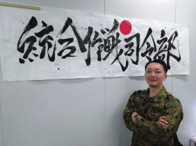 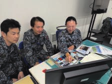 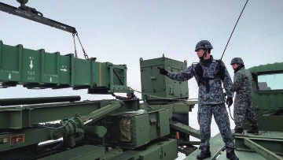
两队从事宇宙相关系统的运用和为了掌握对日本人工卫星的干扰状况的装置运用，但宇宙空间的监视·掌握变得越来越重要，我们的任务也在日益进化，作为先驱者要求我们挑战未知课题并加以克服。
我相信我们的努力会结出果实，怀着自豪感履行使命。
2等空曹 田中 有大宇宙作战群第2宇宙作战队防府北基地（山口县防府市）
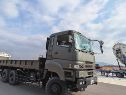 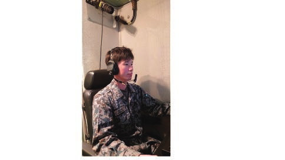
高射队运用爱国者系统，在统合运用下防卫我国免受航空机和弹道导弹等空中威胁，这是主要任务。
我参加了去年度实施的日美共同统合演习，实感到统合作战的重要性和多国间联合的困难。此外，在去年度美国实施的实弹射击训练中，面临与陆自的协同射击训练，切身感受到在紧密联合下进行的射击的紧张感。
鉴于近来的形势，在统合防空导弹防御的重要性日益提高的情况下，作为担负其一环的高射部队队员，致力于日常训练，努力完成任务。
3等空曹 宫崎 智大北部高射群第24高射队长沼分屯基地（北海道长沼町）
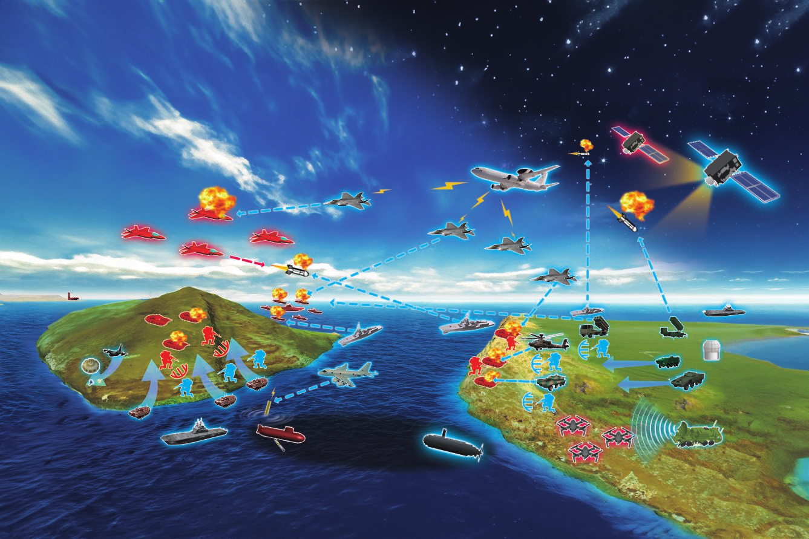
在统合作战司令部的指挥·统制下，听取体现领域横断作战的队员心声。
我在海自的水陆两用作战担当部队扫海队群勤务。水陆两用作战是在必要时从海上向陆上登陆部队的作战，与陆自·空自联合遂行作战。另一方面，灾害发生时，也从事利用登陆用气垫船(LCAC)等从海上向孤立被灾地区运送救援物资等活动。
去年参加印度太平洋方面派遣训练时，访问了塔希提和夏威夷，与他国军队一起进行了两用战和灾害派遣训练。
在进行水陆两用作战的陆海空各部队中，为了结合不同组织的能力达成目的，对自己部队抱有自豪的同时尊重其他组织，协力承担任务的”统合思维”已经扎根，我深有感触。通过将这种意识推广到自卫队整体，能够为统合作战的发展做出贡献。
3等海佐 青山 昂平扫海队群司令部横须贺地区（神奈川县横须贺市）两用战幕僚
在统合作战中，除了陆·海·空的一体化运用，与宇宙·网络·电磁波等领域的联合很重要，提高领域横断作战能力是必不可少的。电子战部队进行电波信息的收集·分析，同时为了使对方的指挥统制·信息共享受阻，进行电子干扰等活动。
通过与其他领域的统合运用，能够发挥比各领域单独活动更大的效果，今后将通过训练不断研修技能，努力提高领域横断作战能力。
我现在在自卫队网络防卫队作为SOC（安全运营中心）员应对各种网络攻击。
去年参加了在越南实施的网络安全领域能力建设支援事业，获得了作为教官要员参加的机会。这是与包括东盟在内的亚洲各国一起，通过各种网络安全
[的通信(相当于人类的嘴和耳朵)以及自卫队行动的早期侦察] [[提高安全相关知识技术，加强与参加国的合作关系]]
[雷达(相当于人类的眼睛)能力的降低无效化，从而在其他] [[的活动。通过对各国网络要员的教育，进行英语]]
[领域能力处于劣势的情况下也能够防卫我国] [[专业知识的传授，以及了解各国对网络安全的重视程度]]
[。我通过各种训练，分析收集到的电波信息，与海空电子] [[这是非常宝贵的经验。]]
[战部队进行必要的协调和研讨，在深切感受到陆海空自卫队一体化] [[我在入队时既没有网络安全知识也没有英语能力]]
[电磁波运用重要性的同时，在统合作战司令部] [[但这些都通过自卫队的教育得以掌握，并能够运用]]
[新设的新体制下，希望能够承担起加强统合运用实效性的一部分] [到海外任务中。]
[责任。今后也将每日] [[今后也将怀着守护网络空间第一线的志向继续勤务]]

[关注不断进化的军事技术和动向] [。] [在任务中奋勇前进。]
1等陆尉 [桥] [本 将] [啓] 2等陆曹 [非公开]
电子作战队 自卫队网络防卫队 朝霞驻屯地（东京都练马区） [非公开 ] 向ASEAN各国参加者
[与空自电子战部队进行意见交换的情况] 系统通信科 [非公开] [进行实技指导的笔者(最左边)]
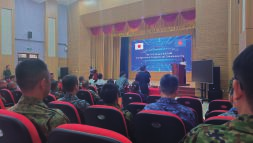
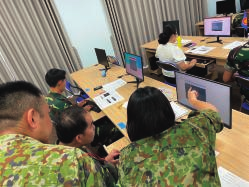
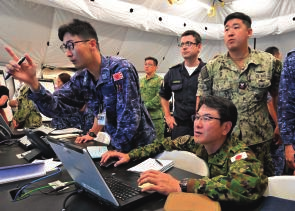
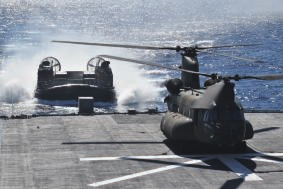

根据石破内阁总理大臣的指示设置的”自卫官的处遇·勤务环境的改善及新的人生规划的确立
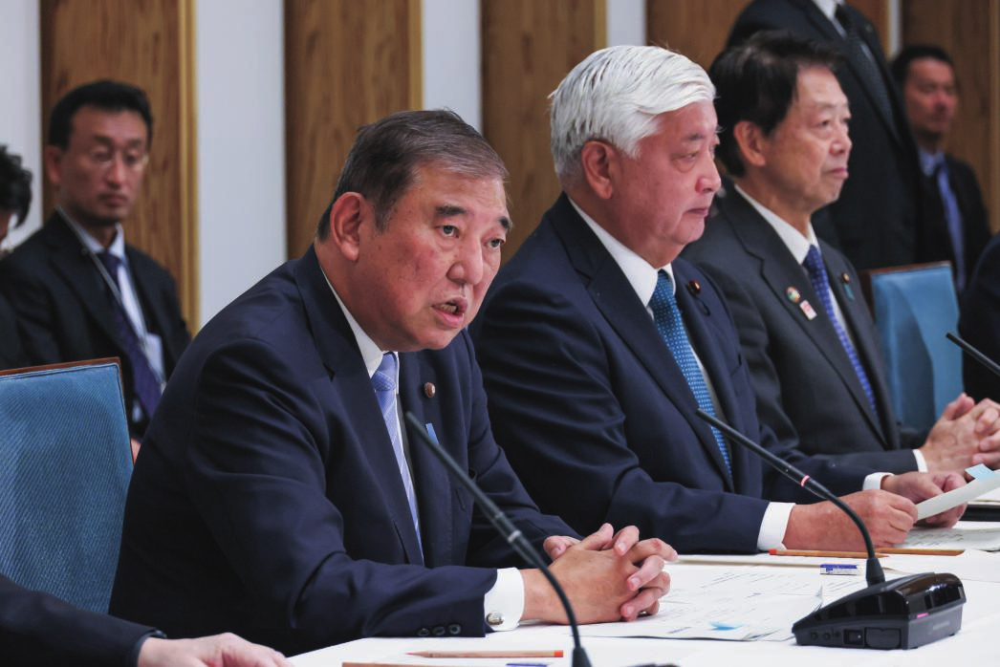
相关内阁会议”经过4次讨论，在2024年度汇总的”自卫官的处遇·勤务环境的改善及新的人生规划的确立相关基本方针”的一例介绍。
[第3回自卫官的处遇·勤务环境的改善及新的人生规划的确立相关内阁会议【内阁广报室提供】]
有必要确立能让自卫官获得自豪和荣誉的、适合令和时代的处遇，决定了超过30项前所未有的津贴新设·金额提高等
・预定改定自卫官的俸给表 ・充实对特殊业务的津贴
新设 对承担航空管制业务的自卫官的津贴(航空管制官津贴）
【一例】 1尉的情况：月额约32,000日元
等
・新设新的任期制士
・进学支援给付金和自卫队奖学生制度也予以扩充
新设 对入队并居住在营舍内或舰艇内者的给付金（指定场所生活调整金）
采用后至6年经过为止，每年支给20万日元 6年总额120万日元
・津贴的提高
・为便于参加训练的支援·制度整备
提高 通过预备自卫官津贴和训练召集津贴的提高等，提高1任期（3年）的支给额
（现行）约27万日元 ➡ （改定后）约68万日元
等
令和7年版 防卫白书
新的人生规划的确立 详细措施内容请点击这里!
通过提高工作意义和工作便利性，构建符合年轻一代生活方式的生活·勤务环境，构建能感受到工作价值的环境

考虑隐私保护，陆上自卫队目标在2025年度、海上·航空自卫队目标在2028年度整备完成，推进通过间隔等进行个室化
等
[[在驻屯地·基地等扩充无线LAN环境的同时，到2027年度]]
[[在主要舰艇构建可进行互联网浏览等的]]
[[通信环境]]
[[等]]
[大房间] [个室化后（形象图）] [在舰艇上用] [利用无线LAN环境]
[手机观看节目的队员] [学习的队员]
确保并提高比一般职公务员更年轻退职的自卫官退职后的收入，建立比以往更加充实的人生规划，使自卫官能够安心专注于国防任务
・为实现顺利再就职和再就职薪酬的充实，[[相关省厅]]
与防卫省联合向广泛的行业和经济团体进行呼吁，[[扩充再就职先]]
・在警察、消防、海上保安厅、矫正部门等各种[[公共部门]]
推进进一步的活用
等
[[在扩充再就职先和充实再就职薪酬的同时，]]
[[听取部外专家意见，目标从2026年度开始施行，]]
[[检讨年轻定年退职者给付金]]※[[的给付水平提高]]
※ 为补偿因年轻定年制产生的不利益，在自卫官退职后支给的政策性给付
[[等]]
SNS等募集广报的推进、地方协力本部的体制充实
等

日本的防卫 [特 集 自卫官的处遇·勤务环境的改善及新的人生规划的确立]
关于近年来的生活·勤务环境改善状况，听取自卫队现场队员的声音。
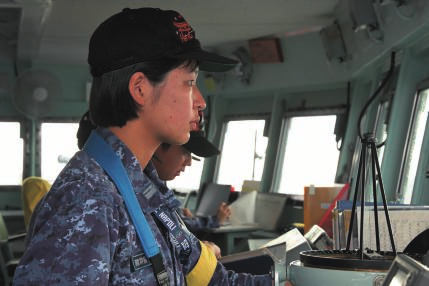
2024年度作为实习干部参加了远洋练习航海。从以座学为中心的
干部候选生学校到以实习为中心的远洋练习航海，环境发生了很大变化，
但在专门用于实习的练习舰上反复进行操舰训练、航海当直训练等
各种训练，习惯了长期在洋上的舰艇生活，
掌握了部队勤务所需的能力。在训练以外的时间，
进行舰上体育或参加舰内活动等，度过了张弛有度的生活。
在远洋练习航海中，训练和生活的各个方面都有
新的学习，度过了非常充实的日子。
[练习舰队的训练风景①] [另外，今年度试]
[验运用搭载的]
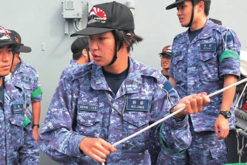
[“星链”通信，即使在洋上也能与家人使用SNS联系，]
[能够通过视频观看上传到YouTube的家人情况。]
[虽然是长期出港，但能够使用个人终端定期与家人联系，]
[并且能够看到日常情况感到亲近，因此能够安心专注于勤务。]
2等海尉[ 野][島 优][希子] [将充分活用在充实的实习环境中获得的经验，]
1[ 护卫舰雾岛] [为了能够为国防做贡献而在今后的勤务中]
2 [横须贺地区(神奈川县横须贺市)] [奋勇前进。] 3 [通信士] [练习舰队的训练风景②]
令和7年版 防卫白书
（现场队员的声音） 1 [勤务部队等] 3 [职种·职域] 2 陆上 [阶级][ 姓 名] 海上 航空 所在地
详细措施内容请点击这里!
我从2022年开始在八尾驻屯地勤务，在驻屯地内的女性自卫官队舍生活。
2023年以后，通过队舍的改修，浴场和厕所等水回路、冷暖气等得到了改善。
另外，居室的家具更新得很时尚，为了与家具相配，地毯和壁纸也进行了更新，成为了符合自己喜好的房间。
此外，可以利用设置的Wi-Fi进行在线座学的自我启发。
[在整备好的调理室团聚的笔者(左)] [今后也听说防卫省·]
[自 卫 队 整 体 将 改善队]
[员能够舒适度过的生活·勤务环境。]
[通过生活环境的提升，能够以高度的积极性专注于任务，私人时间也能舒适度过。]
陆士长[ 南][ 憲][恵]
1[ 中部方面航空队]
2 [八尾驻屯地(大阪府八尾市)]
3 [航空科] [[笔者使用Wi-Fi学习的情况]]
我在2018年被配属到车力分屯基地。当被术科学校命令赴任时，
[“车力是哪里？”这是我的真实感想。赴任后，对什么都不了解而困惑的我，]
[基地的前辈们温暖地迎接了我。但是，老朽化的设施和]
[设备让我很在意。听说有些从基地开设当初的昭和55年就开始使用]
[的东西，绝对不能说是漂亮的。另外，多个队员在一个]
[居室生活这一点，也很难适应。]
[从那时起约7年过去了，车力分屯基地正在重生。生]
[个室化前的生活队舍居室] [活·勤务环境的改善在推进，首先，在生活队舍的居室设置了间隔，]
[确保了私人空间，能够专注于学习和兴趣爱好。]
[另外，也可以使用Wi-Fi，真的很舒适。此外，由于近年来青森县夏天的炎热]
[非常严酷，在生活队舍和职场设置了空调等，生活·]
[勤务环境显著提升。]
[私人空间的确保非常令人感谢，但为了不让生活在同一队舍的队员]
[之间心理距离变得疏远，我们进行沟通，营造明朗愉快]
[的氛围。像迎接我的]
3等空曹 [大][村 空] [前辈们一样，目标成为对人温暖的车力分]
1[ 北部高射群第21高射队] [屯基地，努力勤务。]
作为对空战斗部队，要击退侵攻的航空机，同时进行广范围内迅速且有组织的对空情报活动。
有坦克部队、机动战斗车部队、水陆两用车部队以及侦察部队，通过坦克等的精确火力、优秀的机动力以及装甲防护力，压倒击破敌人同时迅速机动。
拥有关于信息的专门技术和知识，进行信息资料的收集・处理以及地图・航空照片的配布，支援各部队。
使用各种通信电子器材，负责部队间的指挥联络通信确保、电子战的主要部门，同时进行照片・影像的摄影处理等。
作为火力战斗部队，将大量火力随时随地集中到广域地区进行制压。
使用各种直升机等进行直升机火力战斗、航空侦察、部队的空中机动、物资运输、指挥联络等，广泛支援地面部队。
进行火器、车辆、诱导武器、弹药的补给・整备、哑弹的处理等。
在护卫舰等上操作炮、导弹，对各种目标实施攻击。同时处理弹火药等。
作为P-3C/P-1哨戒机、US-2救难飞行艇、SH-60J/K/L哨戒直升机等的搭乘员实施飞行任务。
进行陆上基地、舰艇以及航空机等的通信、暗号的作成以及翻译、通信器材・暗号器材以及关联器材的操作整备。
航海是在舰艇的舰桥进行关于航海的业务。船务是活用雷达・电波探知器等实施战术活动。
进行引擎（燃气轮机、柴油机等）发动机等的运转、整备以及火灾、进水对应等业务。
在护卫舰、潜水艇操作鱼雷等水中武器、声纳等水中搜索器材，进行潜水艇的搜索、攻击以及器材的整备。
在舰艇以及陆上部队对队员实施给食业务。
进行航空机的机体、引擎以及计器以及维持这些的器材等的整备、修理、补给等相关业务。
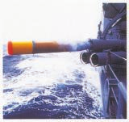
操纵战斗机、运输机、侦察机以及政府专用机等，进行防空、航空侦察、航空运输以及航空救难等。
为了击破侵攻的弹道导弹和航空机、巡航导弹，进行爱国者导弹系统的操作以及器材的整备。
进行网络领域的状况监视以及包括网络攻击等的异常发生时的对应。同时操作信息通信器材，进行器材的维持管理等。
进行电子计算机以及关联器材的操作和程序的作成、电子计算机系统的管理。
进行搭载在航空机上的武器弹药等的补给、管理、整备。
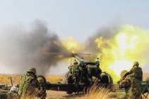
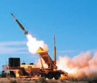
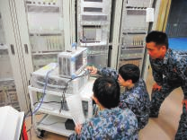
常时监视日本领空，早期发现・识别接近或侵入的航空机，必要时进行战斗机的诱导。
为了航空机的起降以及飞行安全确保，进行气象观测・预报，向全国部队通报各种气象信息，制作天气图。
进行航空机的引擎和搭载的电子器材类、雷达等的整备以及航空机的定期整备。
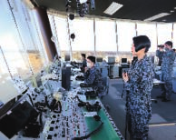
令和7年版 防卫白书

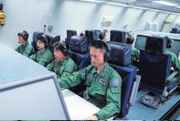
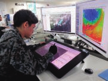
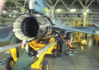
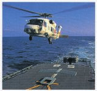
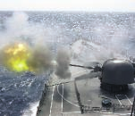
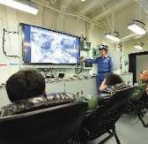
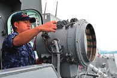
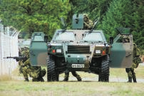
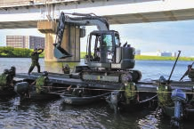
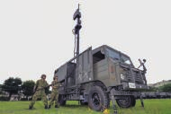
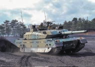
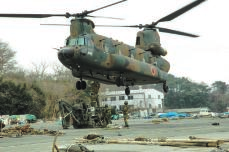
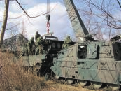
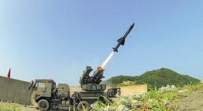
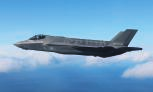
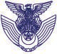
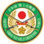
自卫队由各种职种的自卫官以及防卫事务官・防卫技官等组成。陆上、海上、航空自卫队都有大家一定感兴趣的各种职种・职域。这里介绍其中的一部分。首先从「自卫官适职诊断」开始，与自己合适的职种・职域进行比较看看吧。
通过下页的二维码也可以观看视频！防卫事务官・防卫技官等的录用在这里
陆上自卫队HP https://www.mod.go.jp/gsdf/
进行粮食・燃料・需品器材和被服的补给、整备以及回收、给水、入浴洗濯等。
陆上自卫队的职种详细请从这里查看
使用大型车辆运输部队、坦克、重火器、各种补给品，同时进行运输的统制、终端业务、道路交通规制等。
进行队员工资的支付以及部队所需物资的采购等会计业务。
使用各种化学器材侦察放射性物质等污染的地区，对污染的人员・装备品等进行除污。
进行患者的治疗和向医疗设施的后送、部队的健康管理、防疫以及卫生器材的补给・整备等。
海上自卫队HP https://www.mod.go.jp/msdf/
进行工资・差旅费等的计算、物品的采购，为部队执行任务准备并供给必要的装备品等业务。
以信息资料的收集、处理以及信息的配布、秘密保全等为业务。
海上自卫队的职域详细请从这里查看
进行对飞行场以及其周边飞行的航空机的航空交通管制业务，在舰艇上向航空机提供必要信息的业务。
对海上自卫队的飞行场以及护卫舰搭载的航空机发生的火灾进行应对，进行搭乘员的救助作业等。
进行国有财产的管理、建设相关的调整、使用设施车辆・设施器材进行建筑物・工作物等的修缮。
在医院进行医疗以及在医务室进行健康管理和身体检查，同时以潜水相关的调查・研究为业务。
在扫雷舰艇等操作扫雷具等，进行水雷的处分等。同时通过潜水进行浅海域的水雷・哑弹的处分等。
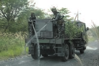
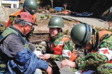
航空自卫队HP https://www.mod.go.jp/asdf/
进行基地内设施的维持管理（土木・建筑・电气等）以及航空机事故和建筑物火灾等紧急时的灭火、人命救助等。
进行基地内巡察等，对基地的设施和物品进行警戒，同时进行基地内・基地出入者的监视等。
航空自卫队的职域详细请从这里查看
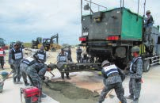
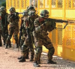
除了队员的健康诊断以及各种身体检查外，还进行医疗、环境卫生、食品卫生检查。
进行队员的工资・差旅费的支付以及部队等执行任务所需物品等的采购。
进行航空自卫队使用物品的需给统制、库存管理、取得出纳、保管等。
为了防卫省・自卫队多样任务中重要的宇宙空间的稳定利用，在宇宙领域专门部队与国内相关机关以及美军合作，进行宇宙状况监视等业务。
日本的防卫

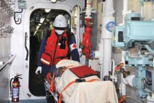
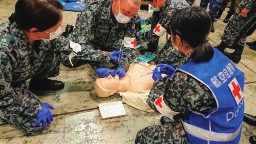
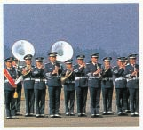
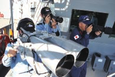
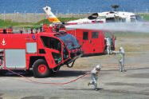
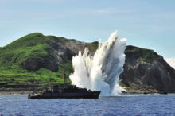
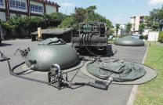
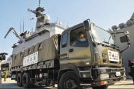

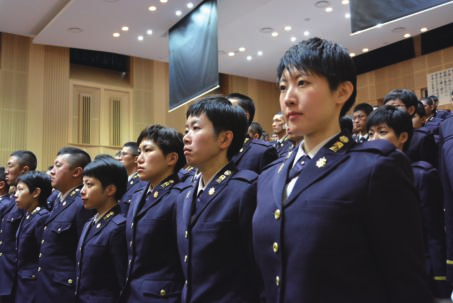
| 课程 | 特点 | 对象年龄 |
|---|
COURSE 01 一般干部候选生
自卫队组织骨干的干部自卫官所需的知识和技能，在学习的同时磨练其素质。与防卫大学校毕业者一起在陆、海、空自卫队各自的干部候选生学校。
大学院毕业者28岁以下 26岁以下
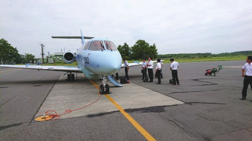
COURSE 02 自卫队奖学生
为了培养在各自卫队装备品研究开发领域、法务、语言领域活跃的优秀人才，从在大学等学府专攻理学、工学、文学(语学)或法学的人员(包括今后准备专攻的人员)中通过选拔录用，给予学资金贷款协助学习，毕业后通过规定手续，作为一般干部候选生录用。
25岁以下 (大学毕业时26岁以下) 硕士课程在学者27岁以下 (课程修完时28岁以下)
COURSE 03 干部候选曹
士和曹经过约5年的部队等勤务，培养一定的知识·技能·经验后任命为干部自卫官。将来成为具体作战企划和实行的中坚干部(中间领导者)。
20岁以上 33岁以下 (令和7年新设)
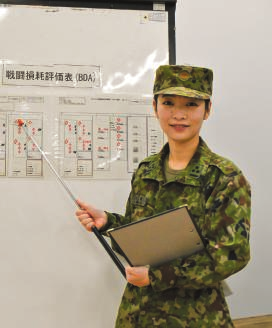
COURSE 04 防卫大学校学生
将来成为各自卫队干部自卫官的人员，通过4年的教育训练和全寄宿制的规律团体生活来培养。拥有广阔视野、科学思维、丰富人性，为了成为富有想象力和活力的干部自卫官，除了智育外还重视德育和体育。
18岁以上 21岁以下
COURSE 05 防卫医科大学校医学科学生
将来成为医师干部自卫官的人员，通过6年的教育训练和全寄宿制的规律团体生活来培养。除了作为医师的知识和技能外，还培养对生命尊严的理解和能够执行各种任务的体力。
18岁以上 21岁以下
COURSE 06 防卫医科大学校护理学科学生
将来成为保健师·护理师干部自卫官的人员，通过4年的教育训练和全寄宿制的规律团体生活来培养。通过作为护理专业职业者的优秀教养·知识·技能的实践，培育能够为防卫省·自卫队在国内外活动做出贡献的人才。
18岁以上 21岁以下
COURSE 07 一般曹候选生
成为部队基干的曹自卫官。入队后，通过教育课程和部队勤务积累知识和经验，作为各自职域的专家活跃。自卫官的基础知识当然，连专业技能都能够从容而稳实地掌握。
18岁以上 33岁以下 ※录用预定月1日时的年龄
COURSE 08 自卫官候选生
为了成为自卫官需要的基础教育训练后，任命为任用期间规定的”任期制自卫官”的制度。通过各种训练和职务掌握技术，任期满了后为了就职的资格取得等，能够描绘符合希望的将来。
18岁以上 33岁以下 ※录用预定月1日时的年龄
COURSE 09 航空学生
培养海自或空自的飞行员等。在过团体生活的同时接受各种训练，能够成为战斗机、哨戒机、运输机、直升机等的飞行员等。
18岁以上 24岁以下海上自卫队航空学生18岁以上23岁以下

COURSE 10 陆上自卫队高等工科学校学生
为了培养运用高功能化·系统化装备品的陆上自卫官而设立的学校。培育在国际社会中也能够自信应对的自卫官。
男子 17岁以下 ※包括初中毕业(预定) ※令和10年度开始成为陆·海·空共同、男女共学的学校
COURSE 11 预备自卫官补
将社会人和学生等自卫官未经验者作为”预备自卫官补”录用，经过规定的教育训练后任命为”预备自卫官”。预备自卫官在各种事态中作为自卫官执行任务，为社会做贡献。预备自卫官补有”一般”和”技能”(语言、医疗等)课程。
18岁以上 52岁以下技能公募不限于此
令和7年版 防卫白书
虽说成为自卫官，但其进路多种多样。
为了”成为想成为的自己”，请寻找符合自己适性和希望的道路。
另外，在防卫省·自卫队，许多防卫事务官和防卫技官等也在活跃。
防卫事务官·防卫技官等的录用请点击这里
一般大学等 → 曹长 → 3尉 → 2尉
4学年次等 大学 大学毕业者 约1年 约1年志愿 → 录用考试 笔记·口述等 → 录用 → 任用 → 入队 合格者 → 升任 → 升任大学院毕业者考试
● 利用暑假期间约1周的研修 ● 可以进行自卫队研究开发机关研修和装备品参观
志愿 → 选考(考试) 夏季研修 笔记·口述等 → 录用 → 任用 → 入队 → 升任 → 升任
短期大学等 → 士长 → 3曹 → 曹长 → 3尉 → 2尉
约4年 约1年志愿 → 录用考试 笔记·口述等 → 录用 → 任用 → 入队 陆：约1年 海·空：约2年3个月 → 升任 → 升任 → 升任
学生 → 曹长 → 3尉 → 2尉
约1年入学 → 4学年毕业后，任命为曹长 → 毕业 → 干部候选生学校入学 → 升任医师国家考试 约6周 合格者
入学 → 6学年毕业后，任命为曹长 → 毕业 → 干部候选生学校入学 → 升任保健师·护理师 约6周 国家考试合格者
入学 → 4学年毕业后，任命为曹长 → 毕业 → 干部候选生学校入学 → 升任
自卫官候选生 → 2士 → 1士 → 士长 → 3曹 → 2曹 → 1曹 → 曹长 → 3尉 → 2尉
干部选拔考试 约1年 6个月 6个月 1年9个月以上 选考 受考资格 选拔考试入队 → 3曹升任后4年 2年9个月后，通过选考升任3曹 → 升任 → 升任 → 部内干部候选生 → 干部候选生学校入学 → 升任获得受考资格※
1任期：1年9个月(陆自) 干部选拔考试 约1年 3个月 选拔考试 2年9个月(海空自) 受考资格 选拔考试
入队 → 任用 通过考试升任3曹 → 3曹升任后4年 部内干部候选生 → (或任期满了后，就职于民间企业等) → 升任 → 升任 → 干部候选生学校入学 → 升任获得受考资格※
约2年 6个月 6个月 1年 约4年
入队 → 2年间基础教育修完后升任3曹 → 升任 → 飞行干部候选生(飞行课程) → 升任
学生 → 士长 → 3曹 → 2曹 → 1曹 → 曹长 → 3尉 → 2尉
约1年 干部选拔考试 选拔考试 约1年受考资格
入学 → 3学年毕业后，任命为士长 → 毕业 → 升任 → 3曹4年以上勤务且25岁以上 → 升任 → 干部候选生学校入学 → 升任
录用考试 → 预备自卫官补 → 预备自卫官
一般公募技能公募 ● 3年以内50日，合计400小时(一般公募) ● 根据防卫招集、国民保护等招集命令及灾害招集命令被招集 ● 2年以内10日间，80小时(技能公募) 出头的日子成为自卫官。
志愿 → 录用 → 教育训练 → 任用 ● 一般公募的预备自卫官中希望者通过规定的教育训练，也可能成为即应预备自卫官。
※大学毕业者关于满足规定要件的情况，3曹升任后1年可获得干部候选生的受考资格。
特集 防卫这一年
(2024年度的国内外事件)
2024年度我国周边严峻的安全保障情势与防卫省·自卫队的应对·举措作为”防卫这1年”进行回顾。
4/7 7/31 声

日美澳比四国首次在南中国海实施海上协同活动（Maritime Cooperative Activity）
山形县酒田市及最上郡戸沢村等地区大雨灾害派遣

对越南军队能力建设支援事业中的水中搜索

中国航母”辽宁”首次航行于与那国西表间海域
巴黎奥运会自卫官选手银牌获得的出色表现
对侵犯领空的俄军机的应对（示意图）
令和7年版 防卫白书
陆上 事务官 海上 航空
等

令和6年度陆上自卫队演习 视察弹道导弹发射的金正恩委员长

在黎巴嫩共和国日本国民等运输 防卫省·自卫队70周年纪念观阅式中巡阅的石破首相

护卫舰”加贺”首次F35B舰上着舰成功 特朗普美国总统就任

日本的防卫


“防卫这一年”中在国内外活跃的防卫这一年防卫这一年

（2024年度在国内外活跃的队员心声）
高谷大地 1等陆尉 1 自卫队体育学校摔跤班 2 朝霞驻屯地（东京都练马区） 3 运输科 4 摔跤自由式74公斤级 银牌
我为了让越南军队能够安全处分在越南战争中投下并埋没在水中的不发弹等，以提高水中不发弹的搜索、识别、处分等能力为目的，对越南海军的教官要员进行了指导和建议。

佐藤大宗 2等海曹 1 自卫队体育学校现代五项班 2 朝霞驻屯地（东京都练马区） 3 体育员 4 现代五项 银牌


在语言、习惯、文化不同的环境中完成任务，能够为两国间的信赖培养、关系强化做出贡献，作为自卫官和水中处分员，我感到非常自豪。
在越南人民海军室外游泳池对士官训练生进行潜水实习教育的笔者（左）
在国际形势不稳定的情况下，通过这样的事业等建立人与人之间的信赖关系，我强烈感受到这将成为今后在国际社会合作的基础。
新添左季 2等陆尉 1 自卫队体育学校柔道班 2 朝霞驻屯地（东京都练马区） 3 运输科 4 柔道混合团体 银牌
那须隼人 1等海曹 1 第1术科学校扫雷机雷科 2 江田岛地区（广岛县江田岛市） 3 水中处分员
第1术科学校扫雷机雷科水中处分教官水中处分员(EOD)
我作为隶属于第20普通科连队的救护员在执勤。
我参与了2024年7月发生的山形县酒田市和最上郡戸沢村等地区大雨灾害派遣，作为救护员随同在酒田市孤立地区进行安否确认、支援物资运输的第3中队。接到派遣命令时，
作为女性自卫官，我特别希望能够早日让受灾的女性、儿童、老年人安心，带着这种想法前往现场。
通过当时的活动，为受灾者和队员的健康管理提供支援，我实感到自己正在履行作为自卫官的职责。我要活用这次经验促进自己的成长，今后也要作为卫生科队员继续努力完成任务。
对队员健康状况等进行问诊的笔者
佐藤真咲 2等陆曹 1 第20普通科连队 2 神町驻屯地（山形县东根市） 3 卫生科
在驻屯地训练中的笔者
令和7年版 防卫白书
| 阶级 | 姓名 | 事务官 陆上 海上 航空 等 |
|---|---|---|
| 1 | 勤务部队等 | |
| 2 | 所在地 | |
| 3 | 职种·职域 |

（注）阶级·勤务地为2025年3月31日现在

决定参加巴黎奥运会后，我重点进行的不是以获得奖牌为目标，而是首先每天清除目标。考虑自己缺少什么、需要什么并努力去做，在这个过程中珍惜诞生的新的自己。然后我意识到，摔跤能够进行是在很多人的帮助下，我重新实感到了这种感谢之情。
我不想把这次经验只留给自己，而是要回馈给很多人，希望今后也能在各种场面活用这些经验继续活动。
在第2轮对古巴选手技术优势获胜的比赛情况【共同通信社】

最让我燃起斗志的是，作为现役选手在2021年东京奥运会担任现代五项竞技役员的时候。看到选手们在眼前的大舞台上竞争的身姿，我产生了下次要作为日本代表参加并获得奖牌的强烈想法。从2021年到2024年巴黎奥运会，虽然经历了波折，但拼命完成每天的练习，经过不断努力的结果获得了巴黎奥运会的参赛权，并且在巴黎获得了银牌。

我想衷心感谢至今支持我的家人和团队，以及给予应援和支持的每一个人。
五项竞技(击剑·马术·游泳·跑步·激光射击)中获胜【共同通信社】
巴黎奥运会对我来说是悲喜交加的。从奥运会前一年获得代表内定开始，我一直以金牌为目标进行准备，但在个人赛中，无法取得自己期望的成果。
我满怀惭愧的心情，但在团体赛中，我振奋精神，为获得银牌做出了贡献。

混合团体战四分之一决赛对塞尔维亚选手一本获胜的比赛情况【共同通信社】

与队员们一起
「令和6年度陆上自卫队演习」是自2021年以来时隔3年，以陆上自卫队
全部队为对象的实兵演习。陆幕和陆上总队以下部队在全

国范围内从作战准备阶段到作战阶段进行了一系列行动演练，特
别是实施了师团、旅团等的机动展开、后方支援体制的构建与维持等实兵训
练。

我作为输送指挥官参加了陆上自卫队演习。平时负责北海

道内的输送工作，但这次演习中跨海到本州承担输送
任务。我们部队负责坦克等大型装备的输送，需要高超

的操纵技术
，从夜间21
时到早晨6
时通宵达旦进行输送是我们发挥作用的舞台。与队员们同甘共苦
，完成输送任务是我的自豪。
二等陆尉 高桥 铃华
1 北部方面输送队第314输送中队 2 东千岁驻屯地（北海道千岁市） 3 输送科
夜间输送中运输坦克等装备的车辆部队
日本的防卫 [16]
特集 “防卫这一年”中在国内外活跃的 防卫这一年 防卫这一年
3 （2024年度在国内外活跃的队员心声）
9/23 对领空侵犯措施执行时的概要
2024年9月23日（周一）俄军IL-38巡逻机在北海道礼

文岛北方的日本领空进行了3次侵犯，作为对领空侵
犯措施任务中的战斗机操纵者，在与地面武器管制官的
紧密配合下，航空自卫队首次使用了flare进行

警告。

俄军机的领空侵犯分别约持续30秒到约1分钟这样
有限的时间内，但由于平时就在理解相关法令和规则
的基础上实施对领空侵犯措施任务和飞行训练，
因此能够毫不犹豫地执行。当然，所属部队的
所有操纵者也都能进行同样的应对。
这次包括使用flare警告在内的对领空侵犯措施任务
整齐划一地执行，正如我国
坚决守护和平与独立的防 照片为示意图。
非公开 非公开
1 卫省·自卫队的意志和能力向内 北部航空方面队
2 非公开 外展示。
3 操纵
10 11 12
10/4 从事在外邦人等输送任务
我于2024年10月作为C-2输送机的空中输送员，从事将情势紧张的黎巴嫩
共和国的邦人等输送到约旦·哈希姆王国的任务。考虑到撤离邦人等人员的
心情时，“想要消除他们不安的情绪，让他们在机内安心度过，想要陪伴在
他们身边”，怀着这样的一心为他们引导，运航中也关心他们的身体状况，
致力于完成本任务。另外，到达目的地约旦时，从邦人等人员那里得到感谢
话语时，能够获得安心感和成就感。在当地有很多女性自卫官从事本任务，
积极开展了女性独有的视角和方法的活动。
在机内就邦人引导进行商谈的笔者（右侧） 随着WPS（Women, Peace and Security）的推进
使得女性自卫官在任务中的活跃场所进一步扩大，今后也要完成被赋予的
任务，日日精进训练。
三等空曹 江泽 贵穗
1 第3输送航空队飞行群第403飞行队 2 美保基地（鸟取县境港市） 3 空中输送（战术输送）
从事本任务的女性自卫官（前列）和C-2输送机
17 令和7年版 防卫白皮书
倾听队员心声！ 阶级 姓名 事务官 陆上 海上 航空 1 勤务部队等 3 职种·职域 等 2 所在地
10/20 （注）阶级·勤务地为2025年3月31日现在

F-35B舰上运用试验结束后
我于2024年10月到11月期间，作为护卫舰”加贺”飞行长从事F-35B舰上运用试验。试验在美海军·海军陆战队

等的支援下，在美国圣地亚哥周边海域进行，不仅进行了短距离起飞、垂直着舰，还收集了包括从飞行甲板到机库移送在内的
舰上运用全般各种数据。我作为飞行长为确保安全并能顺利进行试验，与美方多次进行

协调建立了强有力的信赖关系，试验中与美方相关人员一起在航空管制室勤务，对日美的航空机运用 二等海佐 黑木 伦隆
发出了各种指示。本试验的成果如能连接到空自预定引进的F-35B在”出云”型护卫舰 1 护卫舰加贺 2 吴地区（广岛县吴市）
上的舰上运用、我国防卫力提升，以及日美同盟的威慑力、应对力的强化，作为实际 3 旋翼操纵士
在试验现场的人员将感到巨大喜悦。
“加贺”机库内休息的美海军VX-23所属F-35B 航空管制室内从事飞行试验的日美试验相关人员情况
1 2 3

1/20 在最前线面对激荡的美国
我从2024年6月开始在华盛顿DC的日本大使馆勤务。

在特朗普总统领导下新政策接连出台的情况下，
不仅是五角大楼，还与智库专家、

美国防卫产业、国会工作人员等各种相关人员
交换意见，探索政策背景的同时，
每天都在思考日本应采取的应对措施。

通过与这些”华盛顿人”的交往中切身感受到
的是对日本在印度太平洋地区和平与稳定方面的巨大
期待，深切感受到日本在国际社会中责任的重大。

在最前线面对激荡的美国，为了

“日美关系的新黄金时代”，想要尽微薄之力全力以赴。
参事官 河井 绚也

1 在美国日本国大使馆
2 华盛顿DC 以白宫为背景 3 政务班

日本的防卫 [18]
不共享普遍价值观及基于此的政治·经济体制的国家扩大势力。通过武力单方面改变现状或其尝试，是对既有国际秩序的严重挑战。国际社会迎来战后最大的试练之时，突入新的危机时代。全球力量平衡发生巨大变化，国家间竞争显现，特别是美中国家间竞争今后有进一步激化的可能性。
科学技术的急速发展使安全保障的方式发生根本性变化。各国推进所谓可能成为游戏规则改变者的尖端技术开发。传统军队的结构和战斗方式正在发生根本性变化。
网络领域等风险的严重化、信息战的展开、气候变动等全球性安全保障课题也存在。
围绕领域的灰色地带事态持续发生。将军事手段与非军事手段相结合的混合战有可能以更加精良的形式实施。
这样的全球安全保障环境和课题在我国所在的印度太平洋地区特别突出，将来有进一步严重化的可能性。
与乌克兰侵略同样严重的事态在将来于印度太平洋地区，特别是东亚发生的可能性不能排除。
俄罗斯对乌克兰的侵略侵害了乌克兰的主权和领土完整，是对包括禁止使用武力的联合国宪章在内的国际法的严重违反。这样
通过武力单方面改变现状的行为动摇了包括亚洲在内的国际秩序的根基。
负有维护国际和平与安全主要责任的安理会常
任理事国，公然进行与国际法和国际秩序不相容的军事行动，夺去
无辜生命，同时反复做出可被视为核武器威胁的言行
这种事态前所未有。如果容忍这种侵略，可能会给其他地区传递错误信息，认为可以允许以力量单方面改变现状，作
为包括我国在内的国际社会，绝对不能允许这种行为。
在乌克兰自身顽强抵抗的基础上，国际社会团结一致实施强有力的制裁措 [乌克兰·哈尔科夫的受损情况（2024年1月）] [【AFP=时事】]
施。作为美国的盟友、NATO成员国，以及与欧洲隔着欧亚大陆处于对极位置的我国，基于欧洲与印度太平洋安全保障不可分割的认识，包括其战
略影响在内，需要关注今后欧洲局势的变化。
[19] [令和7年版 ][防卫白皮书]
[令和] [7] [年版] [防卫白皮书]
[摘要] 日本的防卫
[各国的防卫政策等] [第3章]
[P.51]
2024年11月举行的美国总统选举结果，特朗普前总统当选为第47
代总统。2025年1月第二期特朗普政权成立。
特朗普总统在就任前就乌克兰局势、中东局势以及台湾
局势等安全保障领域发声，第二期政权成立后，该
总统及国防部长等正在积极活动。
美国在安全保障领域的动向对我国所在的印度太平洋地
区安全保障环境有重大影响，今后的动向持续受到
关注。 [2025年1月特朗普总统就职典礼【EPA＝时事】]
中国的对外姿态和军事动向等是我国和国际社会的严重关切事项，同时是前所未有的最大战略性
挑战，应以我国的综合国力和与盟友国、同志国等的合作·联合来应对。
过去30多年来，在缺乏透明度的情况下，持续以高水准增加国防费。以核·导弹战力和海上·航空战力为中心，广泛且快速地强化军事
力的质·量。
以尖阁诸岛周边为首的东中国海、日本海，进而是西太平洋等，越
过所谓第一岛链，延伸到第二岛链，在我国周边整体活跃化
活动。
2024年，8月中国军机的领空侵犯和9月中国海军航母在
接近我国领海的海域航行等相继发生。中国的
活跃军事活动可能对我国安全产生严重影响的状况，
令人强烈担忧。
2025年5月，在尖阁诸岛周边正在侵入我国领海的中国海警船 [[作为总书记进入第3任期的习近平【EPA=时事】] 发射直升机侵犯我国领空。中国在尖阁诸岛周边]
执拗地持续以力量单方面改变现状的尝试，形成令人强烈担忧的
状况。
在台湾周边活跃化军事活动。在台湾周边海空域多次
实施军事演习。中国通过台湾周边的一系列活动，图谋将中国军队
常态化活动状况既成事实化，同时被认为企图提高实战能力。
在南中国海，基于与既有海洋法秩序不相容的主张活跃化
活动，推进军事据点化。这是进一步推进以力量单方面改变现状及其既成
事实化的行为，我国对此深表担忧。南 [[ICBM发射时（2024年9月）中国公布的图像]]
中国海问题直接关系到印度太平洋地区的和平与稳定， [【EPA=时事】]
不仅是拥有主要海上航线的我国，也是整个国际社会
的正当关心事项。
包括军事活动在内，进一步强化与俄罗斯的联合。在我国周边，实施轰炸机的共同飞行和舰艇的共同航行。这种反复的共同活动明确意图对我国进行示威活动，在我国安全保障上存在重大担忧。
日本的防卫 [[20]]
[第] [Ⅰ] [部] [围绕我国的] [安全保障环境]
由于中国国力伸长导致的力量平衡变化和各种悬案等，
近年来，美中在政治·经济·军事方面的竞争更加显现化。
中台军事平衡整体上正朝着有利于中国一方的方向急速倾斜
形式变化。
关于台湾，中国坚持台湾是中国一部分，台湾问题是内政问题
的原则。多次表明不放弃武力使用。中
国进一步活跃化台湾周边的军事活动。
对中国通过灰色地带的军事活动追求统一也警戒感高涨
。军事威胁、封锁等是对台湾的当前主要选项的
指摘也有。在台湾封锁中，有可能将海警部署在前面进行灰色地带的封 [中国军方公布的台湾周边演习区域（2024年10月）] [【时事】]
锁。
北朝鲜的军事动向对我国安全保障来说是比以往更加重大
且紧迫的威胁。严重损害地区和国际社会的和平与安全。
从大规模杀伤性武器等不扩散的观点来看，也成为整个国际社会的严重
课题。
北朝鲜实施了过去6次核试验，在技术上，被认为拥有在射程内包含我国的弹道
导弹上搭载核武器攻击我国的能力。
近年来，以极快的速度持续推进导弹开发，发射以不规则轨道
飞行的弹道导弹和称为”极超音速导弹”的武器等。 [ICBM级弹道导弹”火星19”发射时北朝鲜公布的图像]
[【时事通信照片】]
也在追求以搭载核武器为念头的远程巡航导弹的实用化。
2023年以后，实施固体燃料推进方式的大陆间弹道导弹（ICBM）级的”火星18”和”火星19”的发射、以卫星发射为目的
使用弹道导弹技术的发射等。专注于拥有装备体系的多样化和核·导弹运用能力的补完信息收
集·警戒监视·侦察（ISR）手段的确保等，质的意义上的核·导弹能力的提高。
俄罗斯军队在远东方面也有配备最新装备的倾向等，持续
在我国周边的活跃军事活动。在包括我国在内的印度太平洋地区
俄罗斯的军事动向，与中国的战略联合相结合成为安全
保障上的强烈担忧。
掀起”强国”的俄罗斯一直推进各种新型武器的开发·配备，
但乌克兰侵略开始后，也指向兵员数的增加和部队编制的扩大改编。
在作为我国固有领土的北方领土，在非法占据下，持续
军队的活跃活动。推进所在部队的设施整备，海军所属的沿岸 [访问俄罗斯库尔斯克州的普京总统（左） ]
（地对舰）导弹和航空宇宙军所属的战斗机等新装备的配备 [（2025年3月12日）] [【AFP=时事】]
，在周边海·空域也实施大规模演习。
[21] [令和7年版 ][防卫白皮书]
[令和] [7] [年版] [防卫白皮书]
[摘要] 日本的防卫
以色列与哈马斯的冲突发生后，以色列与黎巴嫩的
真主党和也门的胡塞派等之间也发生了冲突。
2024年，以色列与伊朗之间发生攻击的互相报复，现在
双方之间仍持续高度紧张状态。
在叙利亚，以沙姆解放机构为中心的反体制派对叙利亚政府
军展开攻势，2024年12月占领首都大马士革。阿
萨德政权崩溃，与”叙利亚救济政府”就暂定性地委让政府权限
达成协议。
[因伊朗导弹攻击而严重损坏的以色列南部校舍]
[的样子（2024年10月1日）] [【AFP=时事】]
科学技术和创新的创出是带来我国经济·社会发展的源泉，技术力的适当活用不仅对安全保障，
对应对气候变化等地球规模课题也不可缺少。
各国为了确保技术优越，专注于AI、量子技术、下一代信息通信技术等将来改变战斗样相的、所谓可能成为游戏·
改变者的尖端技术的研究开发和军事领域的活用。
通过虚假信息扩散等的信息战等恒常性地发生。
利用宇宙空间的技术和信息通信网络是人们生活和军队的
基干基础设施。另一方面，中国和俄罗斯等强化妨碍他国宇宙利用的能力
，被指摘国家和军队参与网络攻击。
各国将宇宙·网络·电磁波领域的能力，作为有效
阻止敌人战力发挥的攻击手段来认识，企图能力提高。
[P.] [【朝鲜通信＝时事】] [190]
核·生物·化学武器等大规模杀伤性武器和作为其运送手段的弹道导弹的移
转·扩散是冷战后的重大威胁之一。
近年来，国家间的竞争和对立尖锐化，国际安全保障环境变得复杂严峻，
在军备管理·军缩·不扩散等共同课题的应对上，国际社会团结变得困难令人担忧。
[NATO网络演习的样子【NATO HP】]
日本的防卫 [[22]]
[第] [Ⅱ] [部]
[我国的安全保障·防卫政策]
在守护国民的生命和生活方面，首先应优先的是积极
外交的展开。以日美同盟为基轴，推进与同志国的联合、多国间合作
是不可缺少的。
同时，外交需要作为依据的防卫力，作为战略性方
法，在自由开放的印度太平洋(FOIP) 愿景下
展开外交，同时推进包括拥有反击能力在内的防卫力的根本性强
化等。
在宪法下，贯彻专守防卫，遵循不成为对他国构成威胁的军事大国
的基本方针，确保文民统制，坚持非核三原则。 [就任时巡阅特别仪仗队的中谷防卫大臣(2024年10月)]
我国安全保障相关的最高政策文件，不仅涵盖外交·防卫领域，还为包括经济安全保障、技术、信息在内的安全保障相关的广泛政策领域提供战略指导。
到2027年度，通过防卫力的根本性强化以及补充举措，实施必要措施，使相关预算水平达到2022年度国内生产总值(GDP)的2%（约11万亿日元）。
我国防卫目标、为实现这一防卫目标的方式和手段的综合性文件。
我国政府最重大的职责是坚决守护国民的生命与和平生活，以及我国的领土·领海·领空，这是安全保障的根本。包括我国在内的国际社会正面临严重挑战，已进入新的危机阶段，我们必须正面面对严峻现实，关注对方的能力和新的作战方式，推进防卫力的根本性强化。
在防卫力的根本性强化方面，重视以下7项功能·能力：①远程防卫能力、②统合防空导弹防卫能力、③无人装备防卫能力、④跨领域作战能力、⑤指挥统制·信息相关功能、⑥机动展开能力·国民保护、⑦持续性·强韧性。
我国将拥有对我国侵攻进行抑制的关键——反击能力等。
根据国家防卫战略对防卫力进行根本性强化时，明确我国应拥有的防卫力水平、为实现该水平所需的费用总额、主要装备品的整备数量等。
到策定后5年的2027年度，当对我国的侵攻发生时，在我国承担主要责任进行应对的同时，在同盟国等的支援下，能够阻止·排除侵攻，强化防卫力。到策定后约10年，为更确实地实现防卫力目标而进一步努力，强化防卫力以便能在更早期且更远距离阻止·排除侵攻。
2023年度至2027年度5年间实施计划所需的防卫力整备水平相关金额为约43万亿日元。
令和7年版 防卫白皮书
基于我国面临战后最严峻复杂的安全保障环境这一基本认识，为实现防卫力的根本性强化，在2025年度也继续编列了必要且充分的预算。
支出基础上，考虑到事业进展状况和预算执行状况，稳步增加预算，编列了8万4748亿日元。
合同基础上，汇总2025年度内应着手的事业，编列了8万4332亿日元。
继续推进防卫力根本性强化的7个分野。以各种远程导弹的整备、卫星星座的构建、下一代防卫通信卫星的整备等为重点。
根据”自卫官的待遇·勤务环境改善及新的生涯设计确立相关基本方针”，在2025年度预算中编列了相关事业所需费用。
为防卫力强化，推进包括税制措施在内的财源确保。
2025年度防卫力整备计划对象费用与”补充举措”相关费用的合计金额为总额9.9万亿日元，与国家安全保障战略策定时（2022年度）的GDP比较约为1.8%。
防卫省·自卫队在内阁设置的国家安全保障会议讨论的基本方针下，制定·执行政策。
为迅速有效地执行自卫队任务，防卫省·自卫队采用陆·海·空自一体化运用的统合运用体制。
为强化各自卫队统合运用的实效性，构建能在从平时到有事的各个阶段无缝实现跨领域作战的体制，2025年3月在市谷设置了以统合作战司令官为长的”统合作战司令部”。
由此实现了陆·海·空自统合作战指挥等的一元化，以及平时跨领域作战能力的训练。
自卫队根据自卫队法等，除我国防卫外，还从事公共秩序维持、重要影响事态应对、国际和平合作活动等任务。

四面环海、拥有漫长海岸线的我国，拥有远离本土的众多岛屿和广阔的专属经济区(EEZ)、大陆架，守护广泛存在于其中的国民生命·身体·财产、领土·领海·领空和众多资源是重要课题。此外，对于资源和粮食大部分依赖与海外贸易的我国来说，强化自由开放的海洋秩序，确保航行·飞行的自由和安全也是不可缺少的。
防卫省·自卫队将陆·海·空领域与宇宙·网络·电磁波领域的作战能力等有机融合，通过陆·海·空自部队的协作进行统合作战，阻止·排除对我国的侵攻。
此外，不仅应对侵攻，为了应对武力单方面改变现状的行为及其企图等，平时持续进行信息收集·警戒监视，对领空侵犯和领海侵入也维持迅速准确应对的态势。
2024年度紧急起飞(scramble)次数为704次（针对中国飞机464次，针对俄罗斯飞机237次）。该年度内中国飞机（8月）和俄罗斯飞机（9月）、2025年5月中国飞机发生领空侵犯，空自飞机紧急起飞进行了应对。
此外，针对虚假信息的散布，以及旨在降低政府信赖度、社会分裂的信息扩散等，通过影响人的认知，对舆论和政府决策产生影响的”包含认知领域的信息战”也进行应对，发挥中心作用的情报本部采取必要措施。
此外，还持续进行针对违反联合国安理会决议的朝鲜”海上转移”的应对，以及为确保我国重要海上交通线的稳定利用，在索马里海域·亚丁湾的海盗对处和中东地区日本相关船舶安全确保的必要举措。
今后的防卫力将着眼于对方的能力和新的作战方式，为提高抑制力和应对力，重视”远程防卫能力”、“统合防空导弹防卫能力”、“无人装备防卫能力”、“跨领域作战能力”、“指挥统制·信息相关功能”、“机动展开能力·国民保护”、“持续性·强韧性”7个分野，对我国防卫力进行根本性强化。
为强化对侵攻舰艇和登陆部队等在其威胁圈外进行应对的远程防卫能力，2025年度配备12式地对舰诱导弹能力提升型(地面发射型)和获取美国制造的战斧导弹，此外还开始构建收集运用这些导弹所需目标信息的卫星星座。
为应对多样化·复杂化·高度化的空中威胁，强化统合防空导弹防卫能力，除建造搭载宙斯盾系统的舰艇外，还开始了能够应对高超音速滑翔弹(HGV)的滑翔阶段拦截诱导弹(GPI)的日美共同开发。
关于能在危险环境下或长时间连续运用的无人装备，2024年度滞空型无人机MQ-9B（海上守护者）
除了决定引进之外，还计划开发伴随与英国、意大利共同开发的次期战斗机飞行并支援次期战斗机的无人机。
关于跨领域作战能力，计划在2025年度新编宇宙作战团（暂定名称）等，强化宇宙领域态势感知（SDA）相关能力，并与政府整体举措联动加强网络攻击应对能力。另外，电子战能力和电磁波管理功能也将继续强化。
关于指挥统制・情报相关功能，今后将进行防卫省云端（暂定名称）基础设施整备以实现各自卫队的统一指挥统制，以及航空自卫队自动警戒管制系统（JADGE）的大规模更换等，同时恰当运用包括防卫驻在官派遣在内的各种手段，构建无缝隙的情报收集体制。
多国间宇宙演习（AsterX）参加（2025年3月）【法国航空・宇宙军提供】
关于机动展开能力，特别是在西南地区推进必要部队的配备，同时推进运输船舶和运输机等的取得。2024年度作为陆、海、空自卫队的共同部队新编了自卫队海上运输群（2025年3月）。
关于国民保护，也将与警察、消防、海上保安厅等各相关省厅联动，进行受害状况确认、人命救助、居民避难支援等。
持续性・强韧性强化举措方面，推进弹药・燃料确保、装备品可动数量提升、防卫设施强韧化等。
海上运输群的运输舰”日本晴” （下水时的情况 2024年10月）
政府除了防卫力的根本性强化之外，还将统合包括外交力、情报力、经济力、技术力在内的国力，系统性地组合各种政策手段来构建国家整体的防卫体制。
为此，将推进综合性防卫体制的强化，在”研究开发”、“公共基础设施整备”、“网络安全保障”、“为提升我国与同志国抑制力等的国际合作”这4个分野推进相关举措。
除此之外，平时的持续性警戒监视和宇宙领域相关举措、大规模灾害和在外邦人等的保护措施・运输应对等，也是举国总力应对的举措，防卫省・自卫队将与相关省厅等紧密联动进行各种活动。
森林火灾中的空中消火活动（岩手县大船渡市）（2025年2月）
关于网络安全保障，随着2025年5月网络应对能力强化法及同整备法的成立，防卫省・自卫队将与相关省厅联动积极为政府举措作出贡献。
另外，关于灾害派遣，2024年度继续进行了能登半岛地震相关的灾害派遣，同时在大雨、土砂灾害、森林火灾相关的灾害派遣等中与相关省厅联动开展活动。
为了迅速准确地进行在外邦人等的保护措施或运输，自卫队维持着快速派遣部队的态势。2024年度进行了在黎巴嫩共和国邦人等的运输。
防卫省・自卫队积极进行各种高水平的共同训练・演习和包含其他省厅・地方自治体的各种演习，努力进一步提升抑制力・应对力。
2024年9月至11月，进行了全国陆自部队参加的”令和6年度陆上自卫队演习”，通过从作战准备阶段到作战阶段的一系列各种部队行动演练，图谋任务遂行能力和运用实效性的提升，同时为抑制力・应对力的强化作出贡献。
令和6年度陆上自卫队演习（2024年10月）
我国将以与美国的安全保障体制为基轴，确保我国的和平、安全和独立。美国与我国共享民主主义、人权尊重、法治、资本主义经济等基本价值观以及维护世界和平与安全的利益，在经济方面关系也很深，且拥有强大的军事力量。
我国的防卫战略与美国的国防战略在以下方面一致：统合所有方法和手段，将不让力量单方面改变现状作为最优先。
日美防卫相会谈（2025年3月）
将深化关于日美的作用・任务・能力的讨论，进一步强化日美共同的统合抑制力。
以日美两国进行协调的共同应对能够无缝隙地实效性应对为目的，设置了同盟调整机制（ACM）。
例如，关于熊本地震和能登半岛地震、朝鲜的弹道导弹发射以及中国在尖阁诸岛周边海空域的活动，日美之间也活用ACM进行紧密联动。
为了进一步强化各个层面的信息共享，将根本性强化信息保全和网络安全相关举措。
在先进技术相关的共同分析和共同研究、装备品的共同开发・生产、相互互换性的提升、各种网络的共享和强化、美国制装备品在国内的生产・整备能力扩充、供应链强化相关举措等方面，将进一步强化防卫装备・技术合作。
为了日美同盟作为有助于我国防卫和地区和平与稳定的抑制力充分发挥功能，需要确保在日美军的存在以及在日美军能够对紧急事态迅速机动地应对的态势等。
吉田统幕长与史蒂芬・凯勒美太平洋舰队司令官的日美共同记者会见（2024年10月）
为了进一步强化日美同盟的抑制力・应对力，同时减轻以冲绳为首的当地负担，将稳步推进在日美军重编相关举措。
日美同盟对我国的安全保障是不可缺少的，在强化其抑制力・应对力方面，日美共同训练发挥着重要作用。
自卫队稳步积累各军种间的共同训练和日美共同统合演习（实动演习及指挥所演习），图谋自卫队战术技量的提升和与美军的联动强化等，同时展示地区和平与稳定方面日美的一致意志和能力。
令和6年度日美共同统合演习（实动演习）“Keen Sword 25”（2024年10月）
为了创造不容许力量单方面改变现状的安全保障环境，不仅与同盟国，与尽可能多的国家强化联动极为重要，为了实现自由开放的印太（FOIP），将推进多角度・多层次的防卫合作・交流。
与印太、欧洲、中东・非洲・中南美等各种地区的国家之间，进行高层交流、共同训练、能力构建支援、防卫装备・技术合作等。
与同志国等之间，将进一步推进便利化协定（RAA）、物品劳务相互提供协定（ACSA）、防卫装备品・技术转移协定等制度性框架的整备。
推进女性・和平・安全保障（WPS）相关的国内外举措，为印太地区乃至国际社会的和平与稳定作出贡献。
第11次ADMM Plus（2024年11月）
对于海洋国家的我国来说，强化自由开放的海洋秩序，确保航行・飞行的自由和安全是必不可少的，将推进以海盗应对为首的海洋状况监视等海洋安全保障相关举措。
将继续向以监视埃及与以色列停火为任务的多国籍部队・监视团（MFO）和联合国南苏丹共和国特派团（UNMISS）派遣司令部要员等。
日英意防卫相会合（2024年10月）
通过向联合国事务局和PKO训练中心等派遣职员、对联合国三角伙伴关系计划（UNTPP）的支援等，积极为联合国的国际和平努力作出贡献。
自卫队对于国际紧急援助活动，常时维持能够应对受灾国紧急要求的态势。
大量破坏武器及其可能成为运载手段的导弹等的扩散、武器以及军事转用可能货物・敏感技术的扩散，是对国际社会和平与稳定的紧迫课题。
在UNMISS军事部门司令部活跃的派遣队员
防卫省・自卫队将积极参与军备管制・军缩・防扩散相关的国际体制整备和训练。
作为实现FOIP的举措，将在广泛的印太地区积极推进与同盟国・同志国等的共同训练。
特别是与同盟国・同志国等进行共同训练等共同努力，通过各国能力・练度的维持・提升以及共同・联动的抑制力・应对力强化发挥相乘效果，图谋创造不允许力量单方面改变现状及其尝试的安全保障环境。
澳洲空军演习”Pitch Black 24”（2024年7月）
为了真正实现防卫力的根本性强化，需要持续稳定地确保优秀的自卫官。为此，需要确立令和时代相应的待遇，使担负今后防卫力的世代能够安心从事严峻任务，并能够为选择自卫官这一职业而感到自豪和荣誉。
基于这种情况，根据任务和勤务环境的特殊性，实施了史无前例的30多项津贴等的新设・金额提升。
薪金待遇改善、为包括士官在内的广泛人才确保而进行的待遇改善，预备自卫官等的待遇改善，以及符合功绩的叙勋等相关制度的研究等措施。
为了提升自卫队这一组织整体的表现，必须同时提升工作意义和工作舒适度，构建让每一名自卫官都能感受到工作价值的环境。
因此，要推进组织文化改革、营舍内居室的个室化、舰艇乘组员生活・勤务环境的改善、宿舍环境的改善、通信环境整备的推进、改善基地・驻屯地等公共交通机关较少地区的交通便利性。
在年轻定年制下，大多数自卫官在56岁退休，不让他们对退休后的生活感到不安对于自卫官的确保也是重要课题。需要确保并提高年轻退休自卫官退休后的收入，让他们能够安心执行任务，建立充实的生涯规划。
因此，要综合研究再就职支援的扩充、定年年龄提高、年轻定年退职者给付金给付水平的提高以及退职自卫官作为部外力量的活用。
P.430
2024年7月，设置了以防卫副大臣为委员长的「人才基础根本性强化相关研究委员会」，基于人口减少引起的各种社会问题以及包括AI在内的近期技术动向，对防卫力根本性强化所不可缺少的人才基础强化策进行了中期报告。
作为推进方向性，提出了①包括待遇方面在内的职业魅力化②活用AI等实现省人化・无人化的部队高度化③OB和民间等部外力量的活用这3个要点。
P.431
防卫力的核心是自卫队员。为了发挥防卫力，在确保必要人才的同时，要推进人才基础的强化，整备让全体队员都能以高昂的士气和自豪感发挥个人能力的环境。
作为新举措，新设了在士和曹阶段经过约5年勤务后作为将来干部活跃的「干部候补曹」，从2025年开始募集。此外，对于任期2年或3年任用的任期制自卫官，废除自卫官候补生制度，设立从最初就作为自卫官采用的新任期制士，预定从2026年度开始采用。
作为预备自卫官等的待遇改善，除了手当的提高、勤续奖励金的扩充外，还新设了对个体经营者等自营事业的预备自卫官等本人的给付金。
为了与自卫官任务和勤务环境的特殊性相符的薪金，目标是修改自卫官的俸给表。另外，作为士等确保的待遇改善，以一般曹候补生或自卫官候补生的入队者为对象，新设营舍内生活等的给付金，作为新任期制士创设前的措施，设立自卫官任用一时金的提高等。
防卫省・自卫队的人才获得环境年年严峻，网络安全是全世界共通的课题，考虑到网络安全人才重要性的提高，与我国网络安全人才培养举措的融合变得重要。
因此，防卫省・自卫队①确保人才确保・培养等相关方针的一贯性，促进人才相关措施的研究和组织横断性的合作，②明确网络安全人才相关的考虑方式，向志望防卫省・自卫队的人才和外部网络安全人才进行接触，同时构建・深化与部外的合作关系，确保网络安全人才。
为了确保能够持续应对各种事态的体制，需要整备职员在身心健全状态下，以高昂的士气和自豪感充分发挥其能力的环境，要推进远程办公和无纸化的推进、勤务时间管理的彻底、男性育休的取得促进、确立所有职员都容易工作的职场环境等。
为推进女性活跃，要致力于女性的采用・登用扩大和教育基础的整备、着眼于女性增员的队舍・舰艇等女性用区域的整备等。
对于骚扰案件的应对和防止对策，要以速度感来应对。定期发布高层信息、教育的重新审视和利用教育机会进行队员的意识改革、从确保惩戒处分的透明性・公平性观点出发，制定省统一的惩戒处分等基准，同时继续致力于咨询体制的扩充和窗口的周知等。
从职员自杀事故防止的观点出发，要推进与心理健康相关的各种措施，以及大规模灾害发生时等队员家属的安否确认、生活支援等与相关部外团体等合作的队员家属支援。
P.456
自卫队卫生不仅要维持队员的健康状态，从持续性・强韧性的观点出发，需要向拯救队员生命・身体的组织进行变革。
因此，为了提高战伤医疗应对能力，以①从第一线到最终后送地的无缝医疗・后送体制强化、②卫生相关统合运用体制的强化、③防卫医科大学校的根本性改革为3大支柱，推进卫生功能的强化。特别是推进在战伤医疗中建立输血实施体制的研究，构建自主确保・储备血液制品的体制。
为了应对严峻性、复杂性、速度感不断增强的战略环境，需要战略性・机动性的防卫政策企划立案。
除了加强与相关省厅、民间研究机构、以防卫产业为核心的企业的合作外，还要推进以防卫研究所为首的防卫省・自卫队研究体制的重新审视・强化等知识基础的强化。
日本的防卫 [30]
在现代，自卫队只有使用应用了高度技术的装备品等，才能充分发挥其能力，完成我国防卫的任务。作为确保优秀装备品等不可缺少要素的防卫生产・技术基础，可以说是我国防卫力本身，需要其根本性的强化。
我国防卫产业承担着装备品等生命周期各阶段（研究、开发、生产、维持・整备、补给、用途废止等），装备品等与防卫产业是一体不可分的。为了实施防卫产业维持・强化生产高度装备品等、确保高可动率所需的必要措施，防卫生产基础强化法于2023年施行。
基于该法，防卫省公布了基本方针。在此基本方针下，除了该法规定的措施外，还推进防卫产业的活性化、强韧供应链的构建、防卫产业保全的强化等防卫生产・技术基础强化的举措。
另外，基于企业中防卫事业成为核心事业之一很重要的认识，为了让防卫产业更加强有力且可持续，正在研究制定显示防卫产业中长期理想方向性的防卫产业战略。
为了取得新战斗方式所需的装备品，如何活用我国拥有的技术极为重要。以我国高技术力为基础的科学技术和创新创出，是带来经济・社会发展的源泉，也是涉及安全保障的综合国力的主要要素。另外，将我国长年培养的官民高技术力，不拘泥于传统思维，积极活用于安全保障领域，是强化我国防卫体制不可缺少的活动。
2022年12月发表的全球战斗航空项目（GCAP）是汇集日英意3国技术，共同开发担负未来航空优势的优秀战斗机的共同开发项目，为了分担开发成本和风险，同时确立高效的3国协作体制，GCAP政府间机构(GIGO)于2024年12月设立。
为了不仅根本性强化防卫力，还要根本性强化产生改变社会方式的防卫创新和划时代装备品等的功能，2024年10月，防卫装备厅创设了防卫创新科学技术研究所。该研究所采用与以往不同的方法、手法，从变化迅速的各种科学技术中进行创出新功能・技术的突破性研究。
防卫装备移转特别是为了印度太平洋地区的和平与稳定，成为抑制凭借力量单方面改变现状，创出对我国有利的安全保障环境，以及支援受到违反国际法的侵略、武力行使或武力威胁的国家等的重要政策手段。
通过包括防卫装备移转和国际共同开发在内的防卫装备・技术合作举措的强化，维持・强化对方国军队的能力提高和与对方国的中长期关系。2024年度，与美国之间，以利用各自产业基础满足长期重要能力需求、维持即应性为目的，与日美相关省厅合作，举办了由防卫省与美国防部共同主导的日美防卫产业合作・取得・维持整备定期协议（DICAS）。
[31] [令和7年版 防卫白书]
[令和7年版 防卫白书]
摘要 日本的防卫
考虑到人口减少・少子高龄化的急速发展和严峻的财政状况，为了获得能够应对跨域作战的充分能力，进一步推进装备体系合理化等相关举措必不可少。
在水中领域等，从2024年度开始了关于选择性搭载警戒监视和对舰导弹发射等功能、支援有人舰艇的具有隐身性的战斗支援型多目的无人水上航行体（USV）的研究。另外，从2024年度开始开发能够在水陆两用作战中自主行动、执行从海上到部队附近的补给品运输等任务的无人水陆两用车，同时推进与下一代战斗机等有人机合作的战斗支援无人机（UAV）的研究开发。
在装备品取得方面，通过适当组合高能力新装备品的导入、既有装备品的延命、能力提高等，确保必要充分质・量的防卫力。此时，通过包括研究开发在内的装备品生命周期项目管理的强化等努力削减成本，提高费用效果。另外，在与自卫队现在和将来战斗方式直接相关的领域中，特别是政策上紧急性・重要性高的事业，在引入民生尖端技术的同时，稳步实现早期装备化。
对于2024年12月公布的潜水艰修理合同相关特别防卫监察中期报告中的指摘事项，进行了原价调查及制度调查实效性的进一步提高、扩大义务提交合同相关真正资料的范围等重新审视。防卫省
通过这些措施推进丑闻再发防止、采购公正性和透明性提升以及合同适正化工作。
防卫省・自卫队的各种活动，只有在国民每一个人以及地方公共团体等的理解和协力下才能实现，需要进一步加深地域社会・国民与自卫队相互间的信赖。
在确保我国安全方面极其重要的在日美军要实现稳定驻留，获得周边地区的理解和协力是不可缺少的。
防卫省・自卫队对应气候变化等环境问题的各种课题，为解决做出贡献，同时对自卫队设施和美军设施・区域与周边地区的共生，推进更加重点的政策。
2024年9月末，完成了防卫省・自卫队保有的所有含PFOS泡沫消防药剂等的更换和处分。
防卫省・自卫队为了让国民理解其活动和措施，通过官方主页、SNS、视频配信、广报志《MAMOR（守护）》的编辑协力、对报道机关的采访协力，以及在各种活动和广报设施等场所，以各种方法积极进行广报活动。
同时，推进行政文书的电子化管理，适当应对行政文书管理和信息公开请求。
现在安全保障环境的特征，第一，不共享普遍价值或基于此的政治・经济体制的国家正在扩大势力。同时，通过武力的单方面现状变更或其尝试，是对基于法治的自由开放国际秩序的严重挑战，俄罗斯对乌克兰的侵略以最严酷的形式将此显现化。国际社会迎来了战后最大的试炼时期，正在进入新的危机时代。全球力量平衡发生巨大变化，涵盖政治・经济・军事等的国家间竞争显现化。特别是中国与美国的国家间竞争，在各个领域今后也会更加激烈。
第二，科学技术的急速进展根本性地改变了安全保障的形态，各国正在开发可能成为改变未来战斗样相的所谓游戏改变者的尖端技术，传统军队的结构和战斗方式发生了根本性变化。
第三，网络领域等风险的严重化，包括假信息扩散在内的信息战展开，气候变化等全球安全保障课题也存在。
灰色地带事态恒常性发生，同时从武力攻击前通过假信息扩散等的信息战展开等，为达成军事目的将军事手段与非军事手段相结合的混合战，今后很可能以更加精密的形式实施。
同时，在网络空间、海洋、宇宙空间、电磁波领域等，妨碍自由访问和活用的风险正在严重化。特别是相对暴露风险较低、攻击方占优势的网络攻击威胁急速增高。通过网络攻击造成重要基础设施功能停止和破坏、对他国选举的干涉、要求赎金、机密信息窃取等，即使在平时也以国家为背景的形式进行着。
进一步，供应链的脆弱性、对重要基础设施威胁的增大、围绕尖端技术的主导权争夺等，传统上未必被认识为安全保障对象的课题的应对，也成为了安全保障上的主要课题。其结果，安全保障对象扩大到经济领域，为确保安全保障更加需要经济手段。
关键词
灰色地带事态
所谓”灰色地带事态”，是简洁表达既非纯然平时也非有事的广泛状况。
例如，在国家间围绕领土、主权、包括海洋在内的经济权益等存在主张对立，至少一方当事者在不属于武力攻击范围内，使用实力组织等，通过在问题相关地区频繁显示存在等方式，试图改变现状，强要接受自国主张・要求的行为状况。
混合战
所谓”混合战”，是故意模糊军事与非军事界限的手法，这种手法会迫使对方进行不仅限于军事方面的复杂应对。
例如，使用隐藏国籍的不明部队的作战、通过网络攻击对通信・重要基础设施的妨害、通过互联网和媒体流布假信息等影响工作的复合使用手法，被认为属于”混合战”。这种手法通过采取外观上难以明确认定为”武力使用”的手段，旨在延迟军队的初动应对等使对方应对困难，同时有意否定自国关与的企图。
这种全球安全保障环境和课题在我国所处的印度太平洋地区特别突出，将来可能进一步加剧严重性。印度太平洋地区拥有世界人口的一半以上，是世界活力的核心，太平洋与印度洋交汇的动力成为世界经济的增长引擎。位于这一地区的我国容易受到其恩惠。同时，印度太平洋地区也是安全保障课题较多的地区。例如，拥有包括核武器在内的大规模军事力量，不共享普遍价值或基于此的政治・经济体制的国家和地区有多个。进一步，以历史经纬为背景的外交关系等复杂交织，就我国而言，我国固有领土北方领土和竹岛的领土问题依然未解决。同时，在东海、南海等的通过武力的单方面现状变更或其尝试、海盗、恐怖主义、大量破坏武器扩散、自然灾害等各种种类和烈度的威胁和课题存在。
我国面临战后最严峻复杂的安全保障环境。俄罗斯对乌克兰的侵略使形成国际秩序的规则根基被轻易破坏。同样严重的事态在将来于印度太平洋地区，特别是东亚发生的可能性不能排除。在国际社会，以印度太平洋地区为中心，正在发生历史性的力量平衡变化。
参照 图表Ⅰ-1-1（我国周边的安全保障环境）、图表Ⅰ-1-2（主要国・地区的兵力（概数））、图表Ⅰ-1-3（我国周边的主要兵力状况（概数））
资料：最近的国际军事情势
URL：https://www.mod.go.jp/j/surround/index.html
中俄的示威活动
俄罗斯继续活跃活动在极东也配备新型装备
斯特烈古什奇Ⅲ级护卫舰【俄罗斯国防省】2020年，配属于太平洋舰队
共同航行 共同飞行
地对舰导弹系统”堡垒” 【俄罗斯国防省】2022年，新配备在千岛列岛的幌筵岛
北朝鲜的核・导弹开发
・06年首次强行核实验。此后，共进行6次核实验
・长射程化和变则轨道飞行等，导弹技术高度化
【朝鲜通信=时事】【AFP=时事】
・2017年主张核武力完成・继续核在内的各种武器的计划性开发
中国军事力量的广泛且急速变化
第4・5代战斗机 近代驱逐舰・护卫舰 2,000 约18.5倍 100 94 1,800 （机） （艘） 1,668 90 约6.3倍 1,600 80 1,400 70 1,200 60 1,000 50 800 40 600 30 400 20 15 200 90 10 0 0 2001 2025 2001 2025 （年） （年）
在我国周边，军事力量强化・军事活动活跃化的倾向显著
〇印度太平洋地区是安全保障课题较多的地区 ・拥有包括核武器在内的大规模军事力量，不共享普遍价值或基于此的政治・经济体制的国家和地区有多个 ・以历史经纬为背景的外交关系等复杂交织的地区 ・在东海、南海等的通过武力的单方面现状变更或其尝试、海盗、恐怖主义、大量破坏武器扩散、自然灾害等各种种类和烈度的威胁和课题存在
（注） 中国的”近代驱逐舰・护卫舰”是指055型、052D型、052C型、现代级、052B型、051C型各级驱逐舰以及054A型、054型各级护卫舰的总艘数。此外，中国还保有49艘（2025年）056型小型护卫舰。
英国 59 1,460 3,370 200 3,190 675 110 64 240 8 65
俄罗斯 96 6 240 237 20 62 550 62
图例
陆上兵力 海上兵力 航空兵力
我国周边集中了大规模军事力量
| 陆上兵力（万人） | 海上兵力（万吨（舰数）） | 航空兵力（机数） |
|---|---|---|
| 1 印度 124 | 1 美国 675（990） | 1 中国 3,370 |
| 2 北朝鲜 110 | 2 中国 237（690） | 2 美国 3,190 |
| 3 中国 96 | 3 俄罗斯 200（1,180） | 3 俄罗斯 1,460 |
| 4 乌克兰 65 | 4 英国 64（150） | 4 印度 830 |
| 5 美国 62 | 5 印度 50（320） | 5 韩国 570 |
| 6 俄罗斯 59 | 6 法国 39（300） | 6 北朝鲜 550 |
| 7 巴基斯坦 56 | 7 土耳其 29（270） | 7 埃及 510 |
| 8 伊朗 50 | 8 韩国 28（230） | 8 巴基斯坦 510 |
| 9 越南 38 | 9 印度尼西亚 26（190） | 9 沙特阿拉伯 460 |
| 10 韩国 37 | 10 意大利 24（160） | 10 台湾 420 |
| — 日本 13 | — 日本 53（139） | — 日本 370 |
（注）1 陆上兵力基本记载《军事平衡2025》上的Army兵力数，海上兵力基于《Jane’s Fighting Ships 2024-2025》由防卫省汇总舰艇吨数，航空兵力基于《军事平衡2025》由防卫省汇总轰炸机、战斗机、攻击机、侦察机等作战机数 2 日本显示令和6（2024）年度末各自卫队的实际兵力，作战机数（航空兵力）是航空自卫队的作战机（除运输机外）和海上自卫队的作战机（仅固定翼）的合计万人以下四舍五入。美国包括陆军45万人以及海军陆战队17万人。俄罗斯包括地面军55万人以及空降部队3.5万人。乌克兰包括地面军50万人和地域防卫部队10万人以及空降部队4.5万人。伊朗包括陆军35万人以及革命卫队地面部队15万人。
第1章
章 概观
8万人（33） 248艘 71万t 318机 3,708 远东俄罗斯 4,380（※）美国（※）俄罗斯整体保有数
中国 110万人（35） 785艘 10万t 550机
北朝鲜 96万人（220）（※）根据SIPRI年鉴2024，北朝鲜据称拥有约50枚（整体上最多储存了能够生产90枚核弹头的核分裂物质）核弹头。
海军陆战队 4万人（8）
韩国 37万人（52）海军陆战队 2.9万人（4） 690艘 237万t 230艘 28万t 日本 570机 13万人（15）
3,370机 在韩美军 139艘 53万t 500 370机 2万人（1） 80机
在日美军 2万人（1）
台湾 120机 9万人（12） 美第7舰队 海军陆战队 1万人（2） 150艘 21万t 30艘 43万t 420机 40机（舰载）
500km
（注） 1 资料依据美国防部公开资料、《军事平衡（2025）》、《SIPRI年鉴2024》等。 2 日本显示令和6（2024）年度末各自卫队的实际兵力，作战机数是航空自卫队的作战机（除运输机外）和海上自卫队的作战机（仅固定翼）的合计。 3 在日·在韩驻留美军的陆上兵力显示陆军和海军陆战队的总数。 4 作战机包括海军和海军陆战队机。 5 （ ）内是师团、旅团等基干部队数的合计。北朝鲜仅师团。 6 美第7舰队显示在日本和关岛前沿部署的兵力。 7 在日美军和美第7舰队的作战机数仅战斗机。
图例陆上兵力（20万人） 舰艇（20万t） 作战机（500机） 核弹头数（500）
第I部
印度太平洋是在广阔地理范围内复杂分布着大陆、半岛、岛屿的地区。我国虽然不像中国、俄罗斯、朝鲜半岛或欧洲那样主要以陆地与他国接壤，但基于俄罗斯对乌克兰的侵略和中东局势恶化等事例，即使是隔海相望的遥远地区，也不能否定可能对我国安全保障产生影响的可能性。
一般来说，随着跨国经济活动和人员往来的增加，地理上相距遥远的地区发生的事件，会通过地区间的贸易和往来对其他地区产生影响。这种关联在军事层面表现为军事装备和军事技术的地区间转移、在他国驻军、向他国派遣人员或军事资产等形式。这些活动可能对地区的军事平衡和军事活动产生影响。
第1章 概观
乌克兰侵略和中东局势恶化分别显示了欧洲与印度太平洋、中东与印度太平洋之间的军事关联。显著的例子之一是俄朝军事合作的发展。在乌克兰侵略中，调达包括北朝鲜制弹道导弹在内的武器弹药并对乌克兰使用，以及北朝鲜向俄罗斯派遣士兵等俄朝军事合作的发展已经明确。此外，还存在俄罗斯向北朝鲜转移核导弹相关技术的担忧，长期来看也不能否定可能对印度太平洋地区军事平衡产生影响的可能性。在中东局势恶化中，美国正在进行向中东追加部署军事资产等。中东局势的进一步恶化可能会进一步分散国际社会对印度太平洋的关注，进而长期影响各国的战略优先顺序。
这样，某一地区的事件可能对其他地区的安全保障环境产生多层次影响，位于印度太平洋的我国也需要在周边国家等加强军事力量并活跃军事活动的情况下，认识各地区间安全保障环境的关联，密切关注其动向。
我国周边存在多个拥有包括核武器在内的大规模军事力量的国家和地区，作为核武器运载手段的导弹战力在质量上都显著增强，对我国的导弹攻击已成为现实威胁。
导弹战力的增强表现为超高音速武器的开发、精密打击能力的提升、发射平台的增加和多样化等形式。特别是超高音速武器由于比普通弹道导弹在更低高度飞行，探测会延迟，而且由于大幅机动，轨道预测和着弹位置预想困难，拦截变得更加困难。因此，超高音速武器被认为是为了企图突破对方导弹防御网而开发部署的。
例如，中国据指出，作为可搭载超高音速滑翔弹头（HGV）的弹道导弹，于2020年开始运用被认为是准中程弹道导弹的DF-17，此外还可能部署被认为是长程弹道导弹的DF-27。北朝鲜反复发射称为”超高音速导弹”的导弹。俄罗斯也在推进HGV”先锋”和超高音速巡航导弹（HCM）“锆石”的部署，“锆石”已对乌克兰使用。
防卫省将在质量上不断强化导弹防御能力，但如果继续仅依赖导弹防御这一手段，今后仅凭现有导弹防御网将难以完全应对。因此，当受到对方导弹攻击时，在通过导弹防御网防御飞来导弹的同时，在没有其他手段且被认为不得已的情况下，作为必要最小限度的自卫措施，通过反击能力防止对方的进一步武力攻击。通过这些举措提高我国的威慑力和应对力，抑制武力攻击本身的发生。
第I部
第2章 俄罗斯的侵略和乌克兰的防卫
俄罗斯对乌克兰的侵略侵害了乌克兰的主权和领土完整，是对包括禁止使用武力的联合国宪章在内的国际法的严重违反。这种通过武力的单方面现状改变动摇了包括亚洲在内的国际秩序根基。此外，俄罗斯在乌克兰各地的残暴非人道行为已经明确，杀害众多无辜平民是严重的国际人道法违反、战争犯罪，绝不允许。
在第二次世界大战后的国际秩序中，形成了不承认通过武力单方面改变现状的规范。在这种情况下，作为负有维护国际和平与安全主要责任的联合国安全理事会（安理会）常任理事国之一的俄罗斯，公然进行与国际法和国际秩序不相容的军事行动，夺取无辜生命，同时反复进行可视为核武器威胁的言行，这种事态可说是前所未有。如果容认这种俄罗斯的侵略，可能会给包括亚洲在内的其他地区传递错误含义，即承认通过武力单方面改变现状，包括我国在内的国际社会绝不应该允许。
国际社会正在团结应对这种俄罗斯的侵略，在采取各种制裁措施的同时，为了支持乌克兰防止和排除俄军侵略的努力，继续提供坦克、火炮、弹药等装备。关于乌克兰侵略的今后发展，仍处于不容乐观的状况，我国需要怀着重大关切密切关注相关动向。
2022年2月24日，俄罗斯开始对乌克兰的全面侵略。然而，在泽连斯基乌克兰总统从早期就一贯明确表示留在基辅意向的情况下，乌克兰军等在基辅郊外阻止了俄军主力部队的前进，给企图迅速掌控基辅的俄军等造成了巨大损失。从同年3月末到4月初，使俄军等从基辅正面后退，俄罗斯企图的在极短时间内排除泽连斯基政权的计划以失败告终。
乌克兰军在该国第二大城市、也是交通要冲的东部哈尔科夫的防卫中也取得成功，但在南部，俄军与其他地区相比迅速扩大了占领地。位于第聂伯河口岸的赫尔松州州府赫尔松被占领，同时还一度向位于其更西边的尼古拉耶夫州州府尼古拉耶夫方向推进，在亚速海北岸的扎波罗热州南部和顿涅茨克州南部，侵略开始当初占领地也大幅扩大。
参照 图表I-2-1（乌克兰地图）
据认为已经占领该地区，并在同年3月初旬到达第聂伯河西
[41] [令和7年版 ][防卫白皮书]
白俄罗斯 布良斯克
戈梅利
马兹里 第2章
库尔斯克 沃罗涅日
里夫内核电站 切尔尼戈夫 切尔诺贝利核电站 苏贾
波兰 卢茨克 别尔哥罗德 苏梅 里夫内 基辅 斯特里莱恰 日托米尔 沃夫恰斯克 俄罗斯入侵与乌克兰防御 里普齐 瓦卢伊基
赫梅利尼茨基 第聂伯河 哈尔科夫 托波利
利沃夫 波尔塔瓦 乌克兰 库皮扬斯克
捷尔诺波尔 赫梅利尼茨基核电站 科利斯尼基乌卡 扎格利佐韦 切尔卡瑟 诺沃耶戈里乌卡
伊万诺-弗兰科夫斯克 乌曼 伊久姆 扬波利乌卡 文尼察 谢韦罗顿涅茨克 克列缅丘格 利曼
克罗皮夫尼茨基 克拉马托尔斯克
乌日霍罗德 切尔诺夫策 第聂伯 恰西夫雅尔 巴赫穆特 奥里霍夫瓦西里乌卡 莫罗佐夫斯克 卢甘斯克
波克罗夫斯克 阿夫迪夫卡 顿巴斯亲俄分离派控制地区
摩尔多瓦 扎波罗热 克拉霍韦 南乌克兰核电站 顿涅茨克 (22/2/24之前) 尼科波尔 俄罗斯 克里维里格
尼古拉耶夫 皮亚季哈特基 马里乌波尔 顿河罗斯托夫 扎波罗热核电站 卡米扬斯克 罗博奇内
别里斯拉夫 托克马克
敖德萨 克林基 梅利托波尔 皮德斯捷普内 赫尔松
奥恰基夫 安东诺夫斯基桥 别尔江斯克 叶伊斯克
涅斯特里哈岛 赫尼切斯克
切尔诺莫尔斯克 亚速海 扎特卡
伊兹梅尔 博伊科塔 刻赤 季什克 叶夫帕托里亚 江科伊 拉兹多尔诺耶 琼加尔桥 克拉斯诺瓦尔 滨海阿赫塔尔斯克
克拉斯诺达尔
蛇岛 萨基 克里米亚
克里米亚大桥 南部军区
主要城市(下划线为州府) 多瑙河 别利别克 (乌克兰领土，14年被俄占领)
俄军攻击报告的主要地点(接触线以外) 塞瓦斯托波尔 新罗西斯克 0km 200km 俄军占领地点 黑海 图阿普谢 入侵开始后俄军占领并保持的地区 国土地理院标准地图加工
俄军在夺取首都基辅失败后，2022年3月25日宣布，此前的军事行动是”作战第一阶段”，今后将以扩大乌克兰东部顿涅茨克州和卢甘斯克州占领地为作战主目标，并进行了战线整理。
俄军将从基辅方向后撤的部队重新编组后，依次投入乌克兰东部，据认为在2022年6月下旬至7月上旬期间占领了卢甘斯克州临时州府谢韦罗顿涅茨克及其周边地区。
在乌克兰南部，俄军集中兵力控制了亚速海沿岸乌克兰方面最后据点——顿涅茨克州南部马里乌波尔的亚速钢铁厂，2022年5月，俄国防部宣布马里乌波尔作战完成。
俄罗斯通过占领马里乌波尔，掌控了亚速海沿岸全域，同时确保了与克里米亚半岛的陆上交通路线。
2022年4月以后，乌克兰军在所有正面继续对俄军抵抗的同时，加强了为反攻准备而进行的攻击活动。
在乌克兰南部，同年5月，据称使用国产反舰导弹”海王星”击沉了俄黑海舰队旗舰光荣级导弹巡洋舰”莫斯科”号。同年6月，时任乌克兰军总司令扎卢日内宣布，该军的攻击迫使俄军从开战初期占领的黑海蛇岛撤退。
乌克兰军的这些攻击破坏了俄黑海舰队在乌克兰南部构建的防空网，使俄航空兵力活动困难，据认为为该地区后续的乌克兰军反攻创造了有利条件。
此外，同年6月下旬以后，乌克兰军实战部署了美国提供的M142高机动火箭炮系统(HIMARS)，同年7月提及开始南部反攻。在该地区，乌克兰军利用HIMARS等精密攻击能力优秀的远程火力，攻击该地区俄军的指挥所和后勤据点，同时使第聂伯河桥梁等无法通行。由此，使补给困难的第聂伯河以北俄军部队战斗能力和士气下降，为反攻创造了条件。
关于兵力增强，2022年9月，普京总统签署了关于部分动员的总统令。关于上述动员，时任国防部长绍伊古表示，计划动员30万人。
关于乌克兰领土占领的既成事实化，同月在卢甘斯克、顿涅茨克、扎波罗热、赫尔松的俄军占领地区实施了询问是否赞成”并入”俄罗斯的”公民投票”，并基于其结果违法”吞并”了这4个地区。
2022年9月上旬，乌克兰军在东部哈尔科夫州的反攻取得成功，夺回了该州俄军占领地的大部分。据指出，乌克兰军与此前在南部显著展现反攻动向不同，在东部努力隐瞒反攻企图，通过攻击因应对南部乌克兰军反攻而从东部调用、兵力薄弱的俄军部队取得反攻成功。
另一方面，在南部，乌克兰军努力利用第聂伯河分割和削弱俄军，同年11月中旬，以迫使俄军撤退的形式成功夺回包括州府赫尔松在内的第聂伯河以北赫尔松州等地区。
面对乌克兰反攻的全面化，俄罗斯采取了包括兵力增强和乌克兰领土占领既成事实化在内的各种应对措施。
此外，俄军在与乌克兰军的整个接触线构建了由壕沟阵地、反坦克壕、通称”龙齿”的混凝土反坦克障碍物、雷区等组成的复合障碍阵地，为乌克兰军的反攻做准备。与此同时，俄军加强了对乌克兰全境的导弹·自爆型无人机攻击，消耗乌克兰军的防空导弹，同时损害对寒冷期市民生活重要的乌克兰电力网，通过扩大非战斗人员牺牲，企图削弱乌克兰的持战能力和抗战意志。据联合国人权事务高级专员办事处统计，截至2024年12月，因俄军此类攻击造成的乌克兰非战斗人员牺牲者至少超过1.2万人，但由于战斗仍在继续，无法掌握准确的损害实态，实际牺牲者大大超过这一数字，至今仍在继续增加。
2023年1月，以俄军和民间军事公司”瓦格纳”为中心的势力加强了对东部顿涅茨克州的攻势，据认为同年5月控制了该州交通要冲巴赫穆特。
在俄军等在巴赫穆特正面攻势下陷入守势的情况下，乌克兰军从西方国家获得了”豹2A6”和”挑战者2”等主战坦克，以及”风暴阴影”等空射远程巡航导弹等各种装备的提供，通过新编部队、在欧洲训练兵员等方式推进反攻准备。
据认为乌克兰军在2023年6月初也开始了反攻，以南部扎波罗热州正面为中心依次夺回了多个村落，但被俄军布设的大量反人员·反坦克地雷和攻击直升机的反坦克导弹等阻挡进军，据称乌克兰军方面也遭受了巨大的人员和装备损失。
乌克兰军反攻的目标是突破南部扎波罗热州俄军的防御线，到达亚速海为止被提供给乌克兰，但在地面作战中未能实现大规模突破，同年11月，泽连斯基总统指示构建防御阵地以应对俄军攻势等，据认为乌克兰军陷入守势。
俄军从2023年10月开始，在顿涅茨克州阿夫迪夫卡正面、巴赫穆特正面、哈尔科夫州库皮扬斯克正面等加强攻势，据称到2023年底控制了顿涅茨克州马林卡。此外，2024年2月，俄国防部宣布占领阿夫迪夫卡。
同时，从2023年12月底开始，俄军活跃化了对乌克兰全境的导弹攻击，但有指出，与2022年冬季针对电力网的导弹攻击不同，2023年冬季的导弹攻击是在考虑长期战的基础上以军工业为目标。该趋势在2024年春季也在持续，据称防空装备不足扩大了乌克兰方面的损害。
通过南下阻断连接俄罗斯本土与克里米亚半岛的俄军陆上后勤路线，但看起来最初设想的目标并未达成。
在乌克兰军队面临火炮、炮弹、防空导弹等不足的情况下，俄军在占领阿夫迪伊夫卡后，继续向位于其西方的交通要冲波克罗夫斯克推进攻势，同时从2024年4月起，在巴赫穆特正面加强了对位于高地的恰西夫亚尔的攻势。
乌克兰军反攻停滞的原因被指出包括：乌克兰军内部缺乏火力、为地面部队推进提供的短程防空系统、突破雷区的障碍清除装备、受过充分训练的士兵等。
同年10月，美国提供了地对地弹道导弹”ATACMS”(Army Tactical Missile System)。
在此背景下，美国从2023年12月起因新预算成立延迟而被指出支援停滞，但2024年4月末乌克兰支援法案获得通过。随着支援重启，防空导弹不足得到缓解，炮兵火力差距也有所缩小。
2024年5月10日，俄军开始对哈尔科夫州的攻势，据称到18日为止在该正面占领了多个村镇。19日以后俄军没有发表新的占领消息，此后哈尔科夫正面的战况陷入停滞。关于该攻势，有指出其目的是为了防止从乌克兰领土向俄境内的跨境攻击而创建缓冲区，以及从主要攻击正面的乌克兰东部地区分散乌克兰军兵力。
2024年6月左右，美国和英国等部分欧洲国家针对俄罗斯的哈尔科夫攻势，被指出允许乌克兰使用各国提供的除长距离导弹外的武器对俄境内边境附近进行攻击。
同年8月上旬，乌克兰军对毗邻该国东北部的俄罗斯库尔斯克州实施炮击和无人机攻击后，派遣地面部队跨境，据信在该州苏贾周边确保了占领地。关于该跨境攻击的意义，2025年2月泽连斯基总统曾提及，如果与俄罗斯开始谈判，计划以库尔斯克州占领地区作为交换向俄罗斯提出领土交换。
另一方面，俄军在应对库尔斯克州跨境攻击的同时，从2024年8月起继续对乌克兰东部的攻势，特别是在波克罗夫斯克方向及其南方的克拉霍韦方向持续扩大占领地。12月据信已接近波克罗夫斯克，2025年1月俄国防部宣布占领克拉霍韦。
在库尔斯克州，乌克兰军从2024年8月末起致力于维持该州占领区域，但2025年3月俄罗斯格拉西莫夫参谋总长向普京总统报告称解放了乌克兰占领区域的86%以上。同年4月末宣布夺回全部区域，并表示北朝鲜士兵也参与了该地区的夺还。另一方面，同日乌克兰军参谋本部表示该国军队在库尔斯克继续进行防御作战。此外，2025年3月乌克兰军据称在毗邻的别尔哥罗德州也开始跨境攻击，同年4月泽连斯基总统提及别尔哥罗德州也有乌克兰军存在，在该州内继续战斗。
俄罗斯在继续侵略乌克兰的过程中，围绕核物质和核设施反复进行危险行动。俄罗斯于2022年2月占领了靠近白俄罗斯边境的切尔诺贝利核电站，同年3月占领了乌克兰东南部的扎波罗热核电站。此外，从同月起，拥有实验用反应堆并处理核物质的哈尔科夫物理技术研究所多次遭到攻击。
关于核武器，普京总统在同年9月考虑到核战力，表示当自国领土完整性受到威胁时，俄罗斯将使用一切可用手段。此外，2024年5月俄国防部称作为对西方高官挑衅性言论和威胁的回应，公布了苏联解体后首次非战略核力量演习的实施，在同年5月至7月期间分3个阶段进行了演习。同年11月，据报西方国家允许使用其提供的长距离导弹对俄境内进行攻击，乌克兰首次实施了使用ATACMS对俄境内的攻击。在这次攻击的同一天，俄罗斯发表了之前就暗示修订的所谓”核学说”相当政策文件”核威慑领域国家政策指针”的修订版。2天后，普京总统表示作为对使用西方长距离武器攻击俄境内的对抗措施，使用新开发的中程弹道导弹”奥列什尼克”对乌克兰第聂伯市实施了称为实验的攻击。这样，俄罗斯包括其他高官在内，反复进行可视为核武器威胁的言行。
关于化学武器和生物武器，俄罗斯反复主张乌克兰有使用这些武器的可能性，但美国和英国明确评价这是俄罗斯准备所谓”假旗作战”。此外，2022年3月拜登总统（当时）就普京总统在乌克兰考虑使用生物・化学武器有确切迹象发表了相关言论，2024年5月美国国务部指出俄罗斯使用化学武器的嫌疑。同年11月和2025年2月，禁止化学武器组织（OPCW）技术秘书处发表，在乌克兰战场收集的手榴弹和土壤样本中确认存在根据化学武器禁止条约（CWC）禁止作为战争手段使用的镇暴剂。
关于乌克兰侵略今后的动向不容乐观，但对可能影响动向的俄军和乌克兰军双方的战略・战术以及人员・物资继战能力，存在各种指摘。
俄军方面，指挥统制方面的困难从很早就被指出。侵略开始之初，俄军将平时运用体制的联合战略司令部（军区）的指挥系统和所属部队直接分配到各作战正面，结果对包括约20万人的机械化步兵部队以及陆・海・空导弹战力、海空战力等投入战力整体缺乏统一指挥统制。
2022年4月上旬，据报任命了指挥俄军整体作战的联合任务部队司令官，被认为是为了改善军种间和战区间的协调。此外，2023年1月发表了以改善军种间协调、提高后方支援质量和部队指挥效率为目的，任命格拉西莫夫参谋总长为联合任务部队司令官。同年5月，通过投入普里戈津领导的民间军事公司”瓦格纳”的大量兵力，据称对占领东部顿涅茨克州巴赫穆特做出贡献，但之后因军队与”瓦格纳”间的不和，同年6月普里戈津发起”武装叛乱”，形成了允许”瓦格纳”向俄国内进军的局面。据称一度到达距莫斯科200公里范围内，但在白俄罗斯总统调解下事态得以平息。为防止此类武装蜂起再次发生，俄国防部促使原”瓦格纳”人员与军队签约，同时也有指出通过将其他民间军事公司置于参谋本部隶下管理来实现指挥命令系统的统一化。
乌克兰军方面，在应对2014年以来东部冲突的过程中，确保了大量具有战斗经验的预备役，在以NATO标准为目标的国防部和军队机构改革中，培养了作为战斗核心的下士官，采用了以民间技术为基础的包括指挥统制支援软件”GIS Arta”和态势监视系统”德尔塔”在内的快速性・精密性高的火力调整系统等，即使面对质量都占优势的俄军也未屈服，持续战斗至今。
关于人员继战能力，有指摘称截至2024年9月乌克兰军约48万人，截至2024年10月俄军64.8万人以上死伤。随着战斗长期化，双方的人员不足都变得严重。俄罗斯于2023年6月，普京总统签署了承认除重罪犯外的受刑者和被疑者军务合同的法律，同年10月修改了军人登记规制，新规定了不经体检将受刑者登记为军籍的”特别军人登记”，整备了更迅速将受刑者等投入实战的环境。此外，2024年7月普京总统签署了将对新合同军人的联邦政府一次性支付额约提高2倍的总统令，被认为通过确保更多合同军人来努力确保人员。
乌克兰方面，2023年12月泽连斯基总统明确表示军队要求追加动员50万人，2025年1月西尔斯基总司令发言称动员无法满足前线需求，在合理范围内采取了后勤、补给、整备部门的人员削减措施，不得不将其他部门人员转属到步兵。士兵逃亡等也成为问题，从去年新设的第155机械化旅团也有大量逃亡被指出。2024年11月泽连斯基总统签署了关于所谓初犯逃兵如果自主返回部队就不追究刑事责任的法案，可见乌克兰在人员确保方面苦恼。
关于物资继战能力，有指摘称对俄经济制裁对俄军装备采购造成障碍。另一方面，通过军需企业昼夜连续作业、非对地攻击用导弹的转用、伊朗制无人机的采购、从白俄罗斯受让坦克、从北朝鲜采购弹药和导弹等来维持战力。此外，也有指摘称即使在制裁下，弹药和苏联时代技术水准的装备今后也能充分生产，可以长期持续战斗。
乌克兰方面，关于装备，据信使用的是欧美各国等提供的武器。关于旧苏联制，能从俄罗斯以外国家采购的零部件和弹药有限，而且对于可在自国内修缮和采购的装备，主要军需企业所在的哈尔科夫和第聂伯处于俄地面军攻击范围内。因此，为确保继战能力，来自国外的装备・弹药提供和与从旧苏联制装备转换相关的教育训练支援很重要。
2025年2月以后，美国、俄罗斯、乌克兰分别多次实施会谈。据发表其中也讨论了乌克兰局势，虽然也有向停火方向的动向，但其进展状况不容乐观，在停火相关讨论持续的过程中，俄军与乌克兰军之间的战斗被认为将继续。
乌克兰东北部哈尔科夫攻击中使用的据称为北朝鲜制
另一方面，乌克兰军队的装备主要是前苏联制造的，以及 [[正在调查导弹残骸的检方人员（乌克兰哈尔科夫）]]
[(2024年1月)] [【法新社=时事通讯社】]
考虑到这些情况，作为北约成员国美国的盟友，同时作为与欧洲隔着俄罗斯所在的亚欧大陆遥遥相对的国家，我国认识到欧洲-大西洋与印度-太平洋的安全保障是不可分割的，我们有必要关注欧洲局势的未来变化，包括其战略影响。此外，因俄罗斯侵略乌克兰而导致的欧洲局势变化，也可能对全球国际局势产生影响，包括中美战略竞争的演变以及对亚洲的影响。无论如何，我们有必要继续密切关注相关动向。
在俄罗斯对乌克兰的侵略中，除了乌克兰自身的顽强抵抗外，国际社会也团结一致，实施了强有力的制裁等措施。此外，在欧洲，以乌克兰被侵略为契机，欧洲的安全保障环境正迎来一个巨大的转折点。不仅各国增加了国防开支，连一直奉行中立政策的芬兰和瑞典也加入了北约。将北约东扩视为对本国威胁的俄罗斯，其侵略行径促使了欧洲各国安全政策的这种变化，这一点是显而易见的。
随着俄罗斯侵略乌克兰，欧洲各国的警惕性迅速提高，俄罗斯的侵略行为被视为对欧洲及北大西洋安全最重大且最直接的威胁。重新认识到俄罗斯威胁的北约成员国，致力于在北约集体防御体制下加强防卫合作，同意根据需要在东部前线扩大部队规模，并用超过30万人的高度戒备部队取代现有的北约快速反应部队，同时也在推进增强本国防御能力的举措。
参照 第3章第9节第2项（加强多边安全保障框架）
包括北约成员国在内的各国，根据战况向乌克兰提供装备品和训练支援。各国最初提供了便携式反坦克导弹和防空导弹等装备，这些装备被认为有助于迟滞俄军装甲部队的推进，并通过削弱空降部队等来抑制战线的扩大。在乌克兰军队阻止了俄军的全面进攻后，为了支持乌军的反攻，援助重点转移到提供有助于地面战斗中进行压制和占领的大型装备上，如坦克、装甲车和榴弹炮。2023年1月，各国首次宣布提供非前苏联制造的坦克和步兵战车，并从同年2月波兰交付德制坦克开始，陆续向乌克兰交付。
此外，在俄军将兵力集中于乌克兰东部地区后，乌克兰开始获得用于攻击敌方据点的更远射程的火力支援。
另外，以2022年10月以后俄军对包括民用设施在内的乌克兰全境发动导弹袭击为契机，各国加快了防空系统的交付速度，可应对弹道导弹的“爱国者”防空系统也得以提供。
此外，2023年3月，有国家宣布提供前苏联制造的战斗机。同年5月，英国和荷兰宣布成立一个旨在支持战斗机采购和训练的“国际联盟”。美国在G7广岛峰会上表示，支持为乌克兰提供包括F-16在内的第四代战斗机飞行员培训的联合行动。到2024年初，荷兰、丹麦、比利时和挪威已提出提供F-16战斗机。同年8月，泽连斯基总统宣布F-16战斗机已经交付并开始投入使用，截至2025年1月，据信已从荷兰、丹麦和挪威获得了F-16。
此外，据信在2024年11月，美国、英国和法国已允许乌克兰使用远程导弹攻击俄罗斯境内目标。
自拜登政府上台以来，美国向乌克兰提供的安全援助（累计超过665亿美元）中，有超过659亿美元是在俄罗斯侵略乌克兰开始后宣布的（截至2025年1月9日）。此外，除了提供大规模和广泛的装备外，美国还在乌克兰境外实施了训练支援，包括对所提供装备的熟练掌握训练以及针对新兵的训练。
英国自2014年俄罗斯“吞并”克里米亚以来，与美国等国一道，持续向乌克兰提供装备支援和派遣训练教官。在从约翰逊政府过渡到苏纳克政府后，英国继续积极支持乌克兰，包括提供广泛的装备和对新兵进行训练。特别是，在2023年1月，英国率先宣布提供非前苏联制造的主战坦克，此外还提供了空射型远程巡航导弹。之后，斯塔默政府也表示将进一步加强援助，并宣布将在2025年提供新的移动式防空系统。另外，从对抗俄罗斯虚假信息和牵制俄罗斯行动的角度出发，英国与美国一样，通过政府高官发布和社交媒体传播等方式，积极公开有关俄军动向等信息。
法国一直致力于和平解决乌克兰东部的冲突，在“诺曼底模式”中与德国一起担任俄罗斯和乌克兰之间的调解角色。此外，法国还宣布向乌克兰提供轮式装甲车、导弹防御系统和空射型远程巡航导弹等。
德国在俄罗斯侵略乌克兰后大幅调整了国防战略，宣布提供步兵战车和地对空导弹系统等。2023年1月，德国决定向乌克兰提供本国制造的主战坦克，并允许第三国向乌克兰转让德制坦克，此后也持续提供炮弹和防空导弹。
加拿大自2015年以来一直为乌克兰军队提供训练支援等，在俄罗斯侵略乌克兰后，也积极支援乌克兰，截至2025年4月，已承诺提供45亿加元的军事援助。
此外，欧盟也向乌克兰提供了540亿美元的军事援助，其中包括通过欧盟基金“欧洲和平机制”实施的66亿美元（截至2025年5月）。此外，欧盟还于2025年3月宣布，计划每年向乌克兰提供超过200万发炮弹。
2024年12月，北约秘书长吕特宣布，新设立于德国美军基地的“北约对乌克兰安全援助与训练组织（NSATU）”已开始运作。据此，西方国家对乌克兰军事援助的协调职能将从美国移交给北约。
此外，私营企业对乌克兰的技术支持也备受关注。据称，一家美国公司应乌克兰政府请求，通过其卫星星座提供的互联网服务，不仅被乌克兰国民用作通信手段，还被用于乌克兰军方无人机的操作等。另有观点指出，欧美的IT和安全公司在乌克兰被侵略之前就已经开始向乌克兰提供网络安全支持，并成功地减少和局部化了俄罗斯网络攻击造成的损害。
如此，在包括北约成员国在内的各国纷纷支援乌克兰的同时，也有一些国家采取了独特的应对措施。与俄罗斯和乌克兰两国关系深厚的土耳其，对俄罗斯表现出了一定的顾及。具体来说，土耳其在表示支持乌克兰的同时，基本上没有对俄罗斯实施制裁。此外，对俄罗斯经济依赖度高的匈牙利，以不符合国家利益为由，未向乌克兰提供武器，在北约成员国中对俄罗斯表现出和解姿态。
在乌克兰被侵略将满一年的2023年2月23日，联合国大会通过了一项决议案，要求俄罗斯立即停止侵略。该决议案获得了141个国家的赞成，占联合国所有成员国的七成以上。另一方面，该决议案遭到了包括俄罗斯、白俄罗斯和朝鲜在内的6个国家和地区的反对，同时，包括中国和印度在内的32个国家投了弃权票，显示出一些国家和地区并未与这一行动保持一致。
朝鲜不仅反对要求俄军立即从乌克兰撤出的联合国大会决议案，还主张乌克兰事态的根源在于美国和西方国家，表现出维护俄罗斯的姿态。此外，情况还表明，自2023年12月底以来，朝鲜提供给俄罗斯的导弹已被用于攻击乌克兰。更有甚者，2024年10月，已确认有朝鲜士兵被派往俄罗斯东部，这些被派遣的士兵最终参与了对乌克兰的战斗。朝鲜向俄罗斯派遣士兵、参与对乌克兰的战斗，以及向俄罗斯提供包括弹道导弹在内的武器，这些行为可能导致乌克兰局势进一步恶化，并且违反了全面禁止与朝鲜进行武器及相关物资转让和采购的联合国安理会相关决议，因此我国对此予以强烈谴责。
参照 第3章第4节第1项第5分项（对外关系）
伊朗自2018年美国退出核协议以来，一方面加强了与欧美的对立姿态，另一方面也以经济和军事领域为中心，强化了与俄罗斯的关系。伊朗主张通过外交途径解决乌克兰被侵略的问题，但同时也批评美国及其盟友对俄罗斯的制裁，对俄罗斯的立场表示了一定的理解。此外，同年7月，美国公布消息称伊朗计划向俄罗斯提供无人机；同年9月，美国又指出俄罗斯正在使用伊朗制造的无人机进行攻击以及情报收集、警戒监视和侦察（ISR）。乌克兰军方也宣布，俄罗斯正在使用伊朗制造的无人机对乌克兰各地实施攻击。对此，伊朗主张向俄罗斯提供伊朗制造的无人机是在乌克兰被侵略之前进行的，并暗示其目的并非用于乌克兰战争。2023年2月，时任美国中央情报局（CIA）局长的伯恩斯指出，俄罗斯作为从伊朗获得援助的回报，正在考虑支持伊朗的导弹计划以及提供战斗机的可能性。2024年9月，有消息指出俄罗斯已从伊朗接收弹道导弹，有必要密切关注两国合作关系的发展。
关于侵略乌克兰问题，中国避免直接批评俄罗斯，呼吁俄乌双方“保持克制并进行对话”，同时采取了将以自己的方式为解决乌克兰问题发挥建设性作用的立场。另一方面，有观点指出中国企业向俄罗斯提供了支援。此外，美国已将一些中国企业列入实体清单（该清单限制从美国出口），认为这些企业向俄罗斯私人军事公司“瓦格纳”提供了卫星图像。此外，时任美国国务卿布林肯在2023年2月与中共中央外事工作委员会办公室主任王毅举行的会谈中，就中国向俄罗斯提供杀伤性武
所以，俄罗斯行动的原因在于以美国为首的NATO各国的”冷战思维”，主张在安全保障问题上理解俄罗斯合理关切的观点，同时批判对俄罗斯的制裁和欧美各国向乌克兰提供装备。2022年9月，在侵略开始后首次面对面举行的中俄首脑会谈中，习近平国家主席表明了对涉及彼此核心利益问题的强力支持，在同年12月在线举行的中俄首脑会谈中，关于乌克兰侵略，中国将继续坚持客观公正立场，推动国际社会齐心协力，为乌克兰危机的和平解决发挥建设性作用。此外，2023年2月公布了题为《关于乌克兰危机政治解决的中国立场》的文件，表明将在和平谈判和战后重建中发挥建设性作用。同年3月，习近平国家主席访问俄罗斯时，除了与普京总统会谈外还发表了联合声明，积极评价俄方为和平谈判早期重启所做的努力准备，反对未经联合国安理会的单方面制裁。同年10月，乌克兰侵略以来首次普京总统访问中国与习近平国家主席举行首脑会谈，相互确认了两国信赖关系的深化。对于因乌克兰侵略而在国际上孤立的俄罗斯来说，今后与中国政治・军事合作的重要性可能会比以往更加提高。另外，也有指出中国通过转让双用途产品(军民两用品)支撑俄罗斯的持续作战能力。
另一方面，欧美各国对与俄罗斯深化合作的中国表现出牵制动向。2022年9月，斯托尔滕贝格NATO事务总长表示，乌克兰侵略后中国仍与俄罗斯合作，同时反对NATO扩大，这是NATO应该将中国视为安全保障课题的理由，并警告如果中国参与对台湾等的侵犯将给美中关系带来严重后果。乌克兰侵略以来两国深化合作的协力动向，作为与两国邻近的我国，需要继续抱有关切加以注视。
参照 [第3章第2节第3项（对外关系等）]
传统上与俄罗斯关系深厚的印度，关于乌克兰侵略，强调立即停止敌对行为和暴力，通过对话和外交解决，在2022年9月的印俄首脑会谈中，莫迪总理对普京总统表示”现在不是战争的时代”等，同时避免对俄罗斯的明示批判。继续与俄罗斯在军事方面维持牢固的合作关系，还有因经济制裁价格下跌而增加俄罗斯产原油进口等应对，今后的应对备受关注。
参照 [第3章第5节第5项第5(1)（与亚洲各国的关系）]
资料：乌克兰相关
URL：https://www.mod.go.jp/j/approach/exchange/ukraine2022.html
在2021年1月至2025年1月拜登前总统任期期间，美国于2022年10月发表了国家安全保障战略¹(NSS)，表明面临与中俄的”大国间地缘政治竞争”和气候变化等跨越国境问题的”共同课题”这两个战略性课题的认识等。表示对中国和俄罗斯等的侵略进行威慑具有重大关心，基于仅依靠常规战力和核威慑力是不够的认识，通过美国国内各机关和同盟国等能力的整合，显示了推进在威慑侵略行为方面发挥最大效果的综合威慑²(Integrated Deterrence)的想法。
此外，同月国防部发表了国家防卫战略(NDS)，为强化威慑力，提出了国防部应追求的主要防卫优先事项，如美国本土防卫和战略攻击威慑等，显示了推进综合威慑的想法等。
在NSS中，将中国定位为对美国来说最重大的地缘政治挑战，是拥有重构国际秩序意图并具备实现该意图的经济力、外交力、军事力、技术力的唯一竞争对手，表示要有效竞争。另一方面，关于俄罗斯，显示了作为对国际体系的直接威胁进行抑制的想法。在NDS中也将中国定位为今后数十年间最重要的战略竞争对手，是对美国安全保障最全面而严重的挑战，作为”持续迫使应对的挑战(pacing challenge)“，为维持・强化威慑力，国防部将迅速行动，显示了以最优先处理中国课题的姿态。
在这种情况下，美国在2024年11月举行了总统选举。在民主党方面，由于现职拜登总统于同年7月从总统选举中撤退，哈里斯副总统成为候选人。另一方面共和党方面特朗普前总统成为候选人，双方围绕经济、边境管理、外交等论点进行了争论。结果，特朗普氏当选为第47代总统。此外，与总统选举同日举行了联邦议会选举，上下两院虽然差距很小但共和党都占优势。
2025年1月特朗普总统就职典礼【EPA＝时事】
特朗普总统在选举期间，以”美国优先”“让美国再次伟大(Make America Great Again)”为旗帜，主要以经济政策为主要论点，在安全保障方面主张”结束战争”。具体地，提及了俄罗斯对乌克兰侵略的早期终结、通过对伊朗施压强化抑制中东地区亲伊朗武装势力的活动，以及通过导入对中国关税等实现台湾情势的稳定化。
其中，关于俄罗斯对乌克兰侵略的早期终结，特朗普总统表示就任后早期与普京总统会谈的意向，在第2期政权成立后的2025年2月，实现了第2期政权中首次美俄首脑电话会谈，之后在沙特阿拉伯举行了美俄当局间协议，在各自协议后，美乌之间也举行了协议。翌3月美方也分别与俄罗斯、乌克兰举行当局间协议等，虽然可见向停火的动向，但截至4月现在停火的前景尚未明朗。今后，以美国为中介的停火协议进展备受关注。
参照 [第2章第2节（乌克兰侵略的经过与前景）]
此外，关于中东情势，特朗普总统从2025年1月第2期政权成立以前，就让下届政权担当者参加拜登前政权与以色列、埃及及卡塔尔进行的停火协议，于1月19日实现了由三阶段构成的停火。在与伊朗的关系中，政权成立后的2月，就伊朗的核开发和中东地区不稳定化活动，决定了对该国施加最大限度压力的方针。另一方面特朗普总统要求伊朗就核开发进行协议，表示如不达成合意就进行攻击的意向。对此伊朗方面表示反发，但4月在阿曼及意大利举行了当局间协议，决定今后继续对话。今后特朗普政权对中东情势的参与备受关注。
参照 [第10节第1项（中东）]
2024年11月总统选举后，特朗普氏指名皮特・海格塞斯氏为下届政权的国防长官。海格塞斯氏经过美国参议院承认手续，于2025年1月25日就任国防长官。同日，海格塞斯国防长官向各军发出信息，为在特朗普总统下实现”通过力量的和平”，以”战士精神(warrior ethos)“的复兴、军队重建、威慑力重新确立的3点为支柱，特别是关于威慑力的重新确立，提及要与同盟国等合作威慑中国在印度太平洋地区带来的侵害。
海格塞斯国防长官就任后与各国国防相进行协议，1月31日与中谷防卫大臣进行了首次电话会谈。之后，海格塞斯国防长官于3月访问了夏威夷、关岛、菲律宾及我国。海格塞斯国防长官在这些访问中确认了自由开放的印度太平洋的重要性，还表明了对位于印度太平洋地区同盟的承诺。
参照 [第7节（东南亚）、第Ⅲ部第2章第1节第3项（日美间的政策协议）]
此外海格塞斯长官于2025年2月参加了在比利时举行的乌克兰防卫联络小组及NATO国防相会合，表示乌克兰的战斗应该终结，应该承认恢复2014年以前乌克兰状况是困难的，美国在印度太平洋面临中国这一同等竞争者，欧洲的安全保障应该由NATO加盟国通过增加国防费等来处理。在此基础上，表示欧洲各国应该面对地区的安全保障，同时美国继续对NATO及欧洲的防卫合作承诺。
在国际会议上发言的海格塞斯国防长官【EPA＝时事】
此外，特朗普总统对丹麦的自治领格陵兰，以北极圈的安全保障等为理由，对巴拿马运河，以中国的存在等为理由，分别表示了美国应该拥有的认识。对此丹麦、格陵兰政府表示反发，另一方面2025年4月海格塞斯国防长官访问巴拿马，发表与该国就美军舰艇使用巴拿马运河及美军在该国所在基地展开达成合意。
参照 [第9节（欧洲・加拿大）]
拜登前政权发表的NSS中，在追求自由开放、安全繁荣的世界时，最紧迫的战略课题来自于重叠权威主义统治和修正主义外交政策的大国，认为今后10年间，在设定与中国竞争条件的同时，应对俄罗斯带来的紧迫威胁，在应对共同课题，特别是气候变化和大流行病等方面的努力中，具有决定性意义。中国试图削弱美国在印度太平洋地区的同盟和安全保障伙伴关系，利用经济影响力和人民解放军的强大等，进行威压邻国威胁其利益的尝试，认为这样的中国威压性且日益攻击性的举措是对美国安全保障最全面深刻的挑战。
特别将同盟和伙伴关系定位为美国最重要的战略资产，显示了应对战略课题的方针。此外，对气候变化等跨越国境的”共同课题”，表明了与有建设性合作意愿的非民主主义国家也要合作的想法。
同样拜登前政权发表的NDS中，为支撑稳定开放的国际体系和国防承诺，提出了①美国本土防卫、②战略攻击威慑、③侵略威慑・为冲突胜利做准备、④抗韧性战力・
¹ 国家安全保障战略(NSS)和国家防卫战略(NDS)都按法律规定在一定期间内向议会提交。NSS规定新总统就任后150日以内，NDS规定在总统选举后指名新国防长官的情况下，参议院指名承认后尽快向议会提交报告书，分别在合众国法典第50编和第10编中规定。
² 通过跨领域整合和与同盟国整合等能力的无缝结合，使敌对者确信敌对活动的成本超过其利益，从而威慑侵略的方法。
将其定位为深刻挑战。另一方面，对于乌克兰侵略等带来紧迫威胁的俄罗斯，表示将与同盟国等强力抑制侵略的考虑。北朝鲜作为持续威胁，继续扩大对美国本土和东亚构成威胁的核导弹能力，伊朗通过支援恐怖组织和恶意网络作战进一步损害中东稳定。此外，认为这些竞争对手正试图利用灰色地带活动进行敌对性现状改变。
在第二届特朗普政府中，将中国视为印太地区同等竞争者的认识似乎将继续。同时也表现出伊朗支援恐怖组织并继续核开发的认识。另一方面，虽然认为恢复2014年以前的乌克兰状况困难，但已开始与俄罗斯进行协商，关于气候变化，特朗普总统就任后立即通过总统令表明退出《巴黎协定》等，与拜登政府时期存在不同动向，今后的发展仍值得关注。
拜登前政府发布的NSS中，为实现自由开放、安全繁荣的国际秩序，提出了①对国内力量的投资、②构建强大的国家联盟、③美军现代化强化三个方向性，并作为实现该方向性的具体方法，提出了①外交·国内政策分歧消除、②同盟·伙伴关系、③地缘政治课题认识、④对其他地区的参与、⑤应对新经济变化、⑥维持·扩大国际合作六个支柱。在此基础上，重视作为美国力量源泉的对国内力量的投资，提出构建防卫生态系统这四个防卫优先事项，通过①统合抑制、②（国防部的）活动、③构建持续优势三个手段推进防卫优先事项的措施。在抑制侵略·准备战胜冲突方面，表示印太地区的中国课题最优先，其次优先考虑欧洲的俄罗斯课题。
今后，第二届特朗普政府将公表何种政策值得关注。
拜登前政府公表的NSS中，表示将深化与包括日本在内的印太地区同盟国的伙伴关系，同时通过日美澳印和澳英美三国安全保障合作框架AUKUS等多国框架，推进自由开放的印太（FOIP）的姿态。在与我国的关系方面，表示将重新确认美国对包括尖阁诸岛在内的日美安全保障条约下日本防卫的坚定承诺。此外，表示也将重点关注东南亚和太平洋岛屿地区，扩大地区外交、开发、经济参与。在与世界最大民主主义国家且主要防卫伙伴印度的关系方面，表示为了FOIP，将在双边和多边进行合作，与包括印度在内的南亚地区伙伴一起应对气候变化和中国的威压行动，促进整个印度洋地区的繁荣和经济联系。
2022年2月发表的印太战略中，明确表示最重视面临中国日益增大挑战的印太地区，美国将与同盟国和伙伴合作推进FOIP和加强地区安全保障等措施。
关于中国海洋进出问题，国防部于2020年7月时隔约6年在南中国海部署两个航母打击群进行演习，此后为了持续向地区同盟国等表明美国致力于推进FOIP，继续在该地区进行航母打击群活动。2022年1月，国务院公表了根据国际法审查中国在南中国海海洋权益主张的报告书，指出中国对南中国海大部分的主张是非法的，严重损害海洋法治。此外，在2023年5月举行的美菲首脑会议上，重新确认了在包括南中国海在内的太平洋地区，对菲律宾发生武力攻击时美菲相互防卫条约的适用，同月首次制定并公表了作为同盟合作现代化指针的美菲双边防卫指导方针。2024年4月举行了首次日美菲首脑会议，7月举行了第4次美菲”2+2”，表示了对航行·上空飞行自由的承诺，在后者中还表明了为加强菲军和海岸警备队能力提供5亿美元支援等。
关于印太地区presence强化的动向，推进分散型海洋作战（DMO）的海军于2019年12月，将包括F-35B战斗机在内的强化舰载机运用能力的强袭登陆舰”美国号”配备到佐世保，在关岛于2020年1月首次部署了MQ-4C无人海洋侦察机（Triton）。推进迅速战斗运用（ACE）的空军在印太地区实施使用战斗机和无人机的ACE训练。此外，推进多领域作战构想的陆军于2022年9月宣布将在包括人类认知面在内的所有领域等同时并行实施作战的多领域任务部队配备到夏威夷，推进机动展开前进基地作战（EABO）的海军陆战队于同年3月首次在夏威夷配备了具有执行EABO能力的海军陆战队沿岸连队（MLR）。位于冲绳的第12海军陆战队连队预定到2025年改编为第12海军陆战队沿岸连队，作为该措施的一环，2023年11月进行了部队名称变更。此外，在2024年7月的日美2+2中，发表将在日美军逐步重组为印太军司令官隶下的统合军司令部，2025年3月末，配合自卫队统合作战司令部的创设时机，在日美军开始向统合军司令部升级。
此外，美军于2018年3月让航母”卡尔·文森号”作为美航母40多年来首次停靠越南，2023年包括约40年来首次停靠韩国的战略核潜艇在内的各种美战略资产频繁部署到朝鲜半岛周边。
美国表示为了显示对FOIP的承诺，将继续在南中国海实施”航行自由作战”，同时实施美海军舰船和航空器通过台湾海峡，明确表示今后也将继续”航行自由作战”。
此外，2023年9月举办了美国·太平洋岛屿国家峰会，发表了加强与岛屿国家伙伴关系的措施等，表示扩大美国对近年来中国企图扩大影响力的该地区参与的姿态。
另一方面，关于北朝鲜，自2018年6月举行史上首次美朝首脑会谈以来，美朝间进行了谈判，但在北朝鲜大规模杀伤性武器·导弹废弃方面没有看到具体进展。2022年5月表示严厉对朝姿态的韩国尹锡悦前政府成立以来，美韩两国一直在扩大演习的范围和规模，在这种情况下据报道，北朝鲜金正恩国务委员长表示美国的目的是”随时让我们政权崩溃”，为了长期牵制美国”绝对不能放弃核武器”，反发加强。
拜登前政府公表的NSS中，表示面对北朝鲜大规模杀伤性武器和导弹威胁，在强化扩大抑制的同时，为了朝鲜半岛完全无核化的具体进展，寻求与北朝鲜的持续外交。此外，拜登前政府公表的NDS中，表示对于继续扩大核·导弹能力、试图在同盟国间打入楔子的北朝鲜，通过美军前方展开态势和核抑制力抑制攻击。
第二届特朗普政府也继续表示重视印太地区的姿态，为了应对该地区的各种课题，有必要与美国紧密合作。
在2021年2月国防部拜登前总统的演说中，强调了技术在国防政策中的重要性，表示要应对新兴技术带来的危险性和机会，强化网络空间能力，主导从深海到宇宙的新时代竞争。此外，拜登前政府公表的NDS中，作为构建持续优势的方策之一，表示支援通过研究机构、民间企业、政府机关相互合作开发装备的创新生态系统构建，表明促进包括定向能源和网络等在内的高度能力研究开发，同时在生物技术和量子科学方面创造机会的考虑。第二届特朗普政府在本领域的措施值得关注。
拜登前政府于2022年10月，国防部为了确实合作各战略，发表了之前个别发表的核态势评估（NPR）、导弹防卫评估（MDR）、国防部空间战略的统合版本。NPR中，表示中国正在迅速扩大和多样化其核武库，正在追求比最小威慑所需更多的核能力，对美
国和同盟国等构成持续的生存威胁，同时也提及了为避免败北的限定核使用可能性。关于北朝鲜，虽然不是像中俄那样的竞争对手，但作为持续威胁，除了核和弹道导弹外，还致力于扩大包括化学武器在内的非核武器能力，评价认为朝鲜半岛的危机或冲突可能卷入众多核武装主体，从而提高更广泛冲突的危险性。
在表明这种关于核的形势认识基础上，表明以减少核武器作用为美国目标，为了削减核风险，继续寻求与其他核保有国的接触。作为美国核武器的作用，提出了①战略攻击的抑制、②对同盟国·伙伴的保证、③抑制破裂时美国目标的达成，第一届特朗普政府期间2018年发表的NPR中作为核武器作用之一提出的”对未来不确实性的对冲”被排除在作用之外。此外，作为宣言性政策，表示核武器的基本作用是抑制敌人的核攻击，仅在极限情况下考虑核武器使用，关于包括”先不使用”和”唯一目的”在内的宣言性政策进行了检讨，但考虑到能够给美国、同盟国·伙伴造成战略级损害的对方非核能力，判断这种政策会带来不可接受的风险而不采用，但表示保持向”唯一目的”的移行目标。
美国的核抑制战略基于需要针对敌对者的战略认识，对中国维持灵活抑制战略·战力态势，对俄罗斯为了抑制大规模攻击和地区限定攻击，部署现代化的核三要素，通过灵活可调整的核战力补强核三要素。关于维持现代化的三要素
态势评估(NPR)和导弹防御评估(MDR)，以确保能够抵御任何战略攻击，并根据需要调整威慑战略，支持扩大威慑承诺并向盟国提供保证。
NPR将中国定位为”不断要求应对的挑战”，认为中国在评估核威慑力方面已成为更重要的要素，并表明到2030年代，继俄罗斯之后中国也将成为核大国，这将是史上首次面临两个核大国的局面。俄罗斯在战略上重视核武器，继续进行核力量的现代化和扩张，挥舞核武器来支持修正主义安全政策，对美国造成威胁。为确保核威慑力不出现空白，由于三大支柱的许多武器已超过设计寿命，推进了换装计划。作为灵活可调的核力量，将维持目前运行中的低当量核弹头搭载潜射弹道导弹(SLBM)，但取消了上次NPR中提出的海射核巡航导弹计划。此外，为支持北约的核任务，计划将核/非核两用机(DCA)的角色从F-15E战斗机转移到F-35A战斗机。
关于与俄罗斯签署的《中程核力量条约》(INF)，由于俄罗斯未遵守条约，美国于2019年8月退出该条约，同月实施了射程500公里以上的常规弹头地面发射导弹试验，推进了该条约禁止试验、生产和保有的中程射程常规弹头地面发射导弹的开发。
关于2021年2月与俄罗斯达成5年延期协议的《新战略武器削减条约》(新START)，2023年2月普京总统在年度国情咨文中宣布暂停履行，今后的核军备控制动向备受关注。
MDR深刻反映了NDS提出的综合威慑构想，将导弹防御定位为保卫美国、威慑攻击的最优先领域，认为导弹防御有助于抵消敌方攻击的利益，即使威慑被突破也能限制损害。此外宣布对包括关岛在内的所有海外领土的攻击都将视为对美国的直接攻击，表示关岛是维持FOIP不可缺少的作战基地，防卫关岛有助于实现综合威慑。
第二届特朗普政府将采用的核·导弹防御政策备受关注。
截至2025年4月，美国政府尚未发布2026财年预算要求。另一方面，特朗普总统同月表示要求美国史上最大的1万亿美元国防费。今后公布的国防部预算要求内容备受关注。
图表Ⅰ-3-1-1 美国国防部费用变化
（亿美元） | 国防部费用（亿美元） | 较前年度增长率（%） | （%） 9,000 | （※推定） | 20 8,000 | | 15 7,000 | | 6,000 | | 10 5,000 | | 4,000 | | 5 3,000 | | 0 2,000 | | -5 1,000 | | 0 | | -10 2013 2014 2015 2016 2017 2018 2019 2020 2021 2022 2023 2024 2025（年度）
（注）1 根据Historical Tables（Outlays）的国防部支出额 2 2025年度数值为推定额
美军的运用不是按军种进行，而是在跨军种编成的统合军(Unified Combatant Command)指挥下进行。2018年5月，隶属战略军的网络军升格为统合军，2019年8月，作为地区别统合军创设了太空军，统合军由按功能编成的4个功能别统合军和按地区编成的7个地区别统合军构成。2019年12月，作为第6个军种在空军省内创设了太空军。
陆上战力拥有陆军约44万人、海军陆战队约17万人，在德国、韩国、日本等地前沿部署战力。海上战力拥有约990艘舰艇（其中潜艇约70艘）约675万吨，在西太平洋和印度洋部署第7舰队，东太平洋部署第3舰队，南美和加勒比海部署第4舰队，美国东海岸、北大西洋、北极海部署第2舰队，东大西洋、地中海、非洲部署第6舰队，波斯湾、红海、西北印度洋部署第5舰队。
航空战力，空军、海军和海军陆战队合计拥有作战机约3,200架，除在海上部署航母舰载机外，还在德国、英国、日本、韩国等地前沿部署部分战术航空战力。
关于包括核战力在内的战略攻击武器，根据2011年2月生效的新START推进削减，公布美国的部署战略弹头为1,419发，部署运载手段为662发·架。
图表Ⅰ-3-1-2 统合军构成
大统领国防长官 ：功能别统合军统合参谋本部议长 ：地区别统合军
特殊作战军 | 战略军 | 输送军 | 网络军
非洲军 | 中央军 | 欧洲军 | 北方军 | 印度太平洋军 | 南方军 | 太空军
作为太平洋国家的美国，在印度太平洋地区配置了陆军、海军、空军、海军陆战队、太空军的统合军——印度太平洋军，为该地区的和平与稳定继续发挥重要作用。印度太平洋军是担当最广阔地区的地区统合军，隶下有包括驻韩美军、驻日美军等统合部队。
印度太平洋军由太平洋陆军、太平洋舰队、太平洋海军陆战队、太平洋空军、印度太平洋太空军等构成，这些司令部全部设在夏威夷。
太平洋陆军下辖夏威夷第25步兵师、作为驻韩美军陆军构成部队的韩国第8军、阿拉斯加陆军等，还在日本配置第1军团前方司令部·驻日美陆军司令部等约2,500人。
太平洋舰队拥有负责西太平洋和印度洋等的第7舰队、负责东太平洋和白令海等的第3舰队等。其中第7舰队以1个航母打击群为中心构成，以日本和关岛为主要基地，承担防卫领土、国民、海上交通线、盟国及其他美国重要国家利益等任务，配备航母、两栖战舰艇和宙斯盾巡洋舰等。
太平洋海军陆战队在美国本土和日本各配置1个海军陆战队机动展开部队。其中，在日本展开约2万人，包括第3海军陆战师和配备F-35B战斗机的第1海军陆战队航空团等，还在西太平洋配备装载重装备等的预置集积船。
太平洋空军拥有3个空军，其中在日本第5空军配置3个航空团（装备F-16战斗机、C-130运输机等），在韩国第7空军配置2个航空团（装备F-16战斗机等）。
图表Ⅰ-3-1-3 美军配备状况
欧洲正面 | 美军总兵力陆军：约2.7万人 | 陆军：约44.3万人海军：约0.8万人 | 海军：约32.8万人海军陆战队：约0.1万人 | 海军陆战队：约16.9万人空军：约3.0万人 | 空军：约31.2万人欧洲军 | 太空军：约0.9万人总计：约6.6万人 | 总计：约126.1万人
印度太平洋正面北方军中央军 | 陆军：约3.5万人海军：约3.9万人海军陆战队：约2.3万人空军：约2.8万人非洲军 | 印度太平洋军 | 南方军 | 总计：约12.6万人
（注）1 根据美国防部公刊资料（2024.12现在）等。 2 除海岸警卫队外，计入美各军现役军人。因四舍五入，个别集计与总计不一致。 3 印度太平洋正面兵力数包含夏威夷、关岛等。
图表Ⅰ-3-1-4 对印度太平洋地区的参与（示意图）
【韩国】 ·THAAD的配备 ·美军战略资产向朝鲜半岛周边展开的增加
【日本】 ·海军陆战队沿岸连队(MLR)的配备 ·强袭登陆舰”美国号”的配备 ·MV-22鱼鹰、F-35B的配备 ·BMD对应型宙斯盾舰的追加配备 ·船坞运输登陆舰的追加配备 ·小型登陆艇部队的新设 ·无人机MQ-9的配备
【越南】 ·航母停靠岘港（越南战争结束后首次） ·美舰艇停靠金兰港
【台湾】 ·决定武器销售 ·美舰艇·美军机通过台湾海峡 ·2023年度国防授权法中台湾韧性强化法成立，批准5年间最大100亿美元的对外军事融资
【新加坡】 ·濒海战斗舰(LCS)的轮换展开 ·P-8的轮换展开
【南海】 ·美舰艇实施航行自由作战 ·多个美航母打击群实施演习
【菲律宾】 ·向菲军提供反恐装备 ·在联合演习（肩并肩）中实施登陆训练 ·扩大美军可进入基地的合意（从5处扩大到9处）
【关岛】 ·无人海洋侦察机的展开
【印度】 ·通过加速美印防务产业合作的路线图 ·签署允许前沿展开的美海军资产在印度进行维护的合意书
【太平洋岛屿国】 ·与巴布亚新几内亚签署使美军能够进入港口·机场的防务合作协定
·2021年1月，在2021年度国防授权法中发表了以强化美国在印度太平洋地区威慑力等为目的的”太平洋威慑倡议”
・在帕劳建设可观测水平线以外的早期警戒用OTH（超视距）雷达
【澳大利亚】
・实施人道支援·灾难救援相关训练（太平洋伙伴关系、圣诞投送）
・海军陆战队轮换部署
・2023年，基于与帕劳、密克罗尼西亚联邦、马绍尔群岛共和国的契约（注）的财政支援延长协议
・轰炸机·战斗机轮换部署的增加
・在AUKUS框架下，攻击型核潜艇停靠的增加·停留长期化
（注）从美国联合国托管统治独立时，与美国签署的自由联合盟约。在接受美国财政支援的同时，将国防和安全保障权限委托给美国。
防卫研究所 全球安全保障研究室 室长 新垣拓
特朗普政权面临着比第一任期更加严峻的战略环境。给国际社会带来巨大冲击的俄罗斯对乌克兰的侵略至今仍在继续。另一方面，与中国的战略竞争愈发激烈，从军事·外交领域扩展到AI等新兴技术开发竞争的经济领域。此外，朝鲜和伊朗分别加强了与俄罗斯和中国的全面·战略合作关系。
在这种情况下，特朗普政权安全保障战略的最大焦点被认为是中国。近年来，美国国内对中国的认识恶化。以中国在东海、南海、台湾海峡的威压性言行，美国企业开发的尖端技术的窃取问题，在美国国内的影响工作等为背景，中国的行动严重威胁美国安全保障的认识在共和党·民主党超越党派界限得到广泛共享。
特朗普政权在第一任期中，转换了从冷战期延续至今的对华接触政策方向性，大幅转向对华强硬路线。从第二期特朗普政权的阵容来看，包括马尔科·卢比奥国务卿在内的众多对华强硬派进入政权，这一姿态被认为将持续下去。皮特·赫格塞斯国防部长明确表示，阻止与中国的战争是美国的优先课题。
特朗普政权提出的”以实力求和平”的政策方法，重视美国为了在与中国的战略竞争中占据优势，首先要强化美国自身的军事力和经济力。另一方面，面对战略环境的进一步严峻化，盟国在美国安全保障战略中的重要性益发提高。
不仅在印太地区，在因乌克兰战争和加沙冲突而大幅动摇的欧洲和中东地区的和平与稳定方面，对盟国发挥更大作用的期待在特朗普政权内强烈体现。
考虑到这样的特朗普政权安全保障战略，包括我国在内的盟国自身的能力强化变得不可缺少。此外，深化盟国间的合作关系也是重要课题。
在印太地区，除了与美国的双边关系外，被称为minilateral的日美澳、日美韩、日美菲关系的强化，进一步深化为实现”自由开放的印太”的日美澳印4国合作关系，被认为是阻止通过实力和威压进行单方面现状改变的重要政策。
（注）本专栏是从研究者个人立场进行的学术分析，其内容并不代表政府的官方见解。
拥有世界最大级人口，国内有众多不同民族、宗教、语言的中国，被广阔的国境线和海岸线包围。对形成独特文化、文明的中国特有历史的自豪感和19世纪以来的半殖民地化经验，产生了中国国民对国力强化的强烈愿望和民族主义。
习近平中国共产党中央委员会总书记（习总书记）通过”反腐败”的干部肃清等，在中国共产党中确立了权力基础。在2022年10月召开的中国共产党第20次全国代表大会（第20次党大会）中，意味着”拥护习总书记党中央的核心、全党的核心地位，拥护党中央的权威和集中统一领导”的”两个拥护”作为义务明记在党章中，并且在紧接着召开的中国共产党第20期中央委员会第1次全体会议（一中全会）中，决定了习总书记的第3任期连任。
中国在2014年提出了”总体国家安全观”的概念，基于政治、军事、国土、经济、文化、社会、科学技术、网络、生态、资源、核、海外利益、宇宙、深海、极地、生物等各种领域都与国家安全相关的考虑，推进了中央国家安全委员会的设立、“国家安全战略（2021-2025年）”的制定，以及为加强国内反间谍体制和网络空间管理强化等的各种法律整备。
此外，中国从强烈反对外国势力对中国统一的干涉和台湾独立动向的立场出发，为实现和平统一的未来目标而尽最大努力，但多次表明决不承诺放弃武力使用。在2005年3月制定的反国家分裂法中，“台独分裂势力以任何名义、任何方式制造台湾从中国分离的事实，发生导致台湾从中国分离的重大事变，或者和平统一的可能性完全丧失时，国家得采取非和平方式及其他必要措施，捍卫国家主权和领土完整”，明文化了不放弃武力使用。同时，在第20次党大会通过的修正党章中，也追加了”坚决反对和阻止’台湾独立’“的条文，将阻止台湾独立定位为党的任务。
中国国内也存在各种问题。除了共产党干部等腐败的蔓延，城市部和农村部、沿海部和内陆部之间的经济差距，城市内部差距、环境污染等问题也显现化。腐败蔓延在军队中也可见，2023年10月李尚福国防部长（当时）被解任，包括此事在内，从同年7月到12月间至少有15名军高官被解任。此外，最近经济增长呈现放缓趋势，将来还预想伴随人口构成急速老龄化的养老金等社会保障制度问题，这样可能使政权运营不稳定的因素呈现扩大·多样化趋势。同时，以新疆维吾尔自治区为首的中国人权状况以及围绕香港的形势，国际社会的关注依然很高。
中国共产党第20次党大会上进行报告的习近平总书记
【中国通信/时事通信图片】
中国在过去30年以上，在缺乏透明性的情况下，持续以高水平增加国防费，以核·导弹战力和海上·航空战力为中心，广泛且急速地强化军事力的质·量。同时，包括我国尖閣诸岛周边的领海侵入和领空侵犯在内，在东海、南海等海空域中，强化通过实力或威压进行单方面现状改变及其尝试，在日本海、太平洋等地区也扩大·活跃化影响我国安全保障的军事活动。
这种中国活动以及在东海、南海等海空域的军事活动，跨越所谓”第一岛链”，延伸到包括伊豆·小笠原诸岛周边的西太平洋等”第二岛链”在内的我国周边整体，活跃化活动的同时，提高对台湾的军事压力，进一步推进南海的军事据点化等。同时，包括军事活动在内，进一步加强与俄罗斯的联系强化动向。
这样的中国对外姿态和军事动向等，是我国和国际社会的严重关切事项，是确保我国的和平与安全、国际社会的和平与稳定，强化基于法治的国际秩序上前所未有的最大战略挑战，应通过我国的防卫力在内的综合国力和与盟国·同志国等的合作·联系来应对。
在军事力强化方面，中国至今通过军改革等军队近代化，重视实战性统合作战执行能力的提高。
同时，从通过信息优越的获得来提高军队整体的作战执行能力，阻碍敌方战力发挥的观点出发，中国也重视军队的”信息化”。具体而言，在能够使敌方通信网络混乱等的网络领域和能够使敌方雷达无效化等的电磁波领域快速发展能力的同时，在宇宙领域也继续强化限制敌方宇宙利用的能力等，致力于确保在新领域的优势。这样的能力强化连接到所谓”A2/AD”能力的强化和更远方作战执行能力的构建。
此外，构建”一体化的国家战略体系·能力”，也积极致力于军事利用可能的尖端技术的开发·获得。这样的尖端技术中，也包括AI的活用和将来改变战斗样相的技术、所谓”游戏改变者技术”。
KEY WORD
所谓”接近阻止/区域(领域)拒止”(“A2/AD”)能力
美国提出的概念，接近阻止(A2)能力是指主要通过远程能力，阻止敌对者进入某作战领域的能力。同时，区域(领域)拒止(AD)能力是指通过更短射程的能力，限制作战领域内敌对者行动自由的能力。
中国强调建设世界一流军队的目标和作为实现中华民族伟大复兴”中国梦”的战略支柱的中国军队作用。
在2019年公布的国防白书中，中国将国防政策的目标设定为保卫国家的主权、安全、发展利益，这也包括保卫海外国家利益和支撑国家持续发展。同时，作为军事战略方针强调”积极防御”概念，论述了在战略上防御和在作战·战术上攻击的结合。
此外，中国关于军队建设，提出建设与国家国际地位相符、适应国家安全保障和发展利益的国防和强大军队，强调在战斗中”能打仗、打胜仗”，论述了加速”智能化”、提高统合作战能力、提高实战训练水平等。这样的中国军事力强化，以应对台湾问题，具体来说是提高阻止·阻止台湾独立和外国军队支援台湾独立的能力为最优先课题，此外近年来，为了保护扩大的海外权益等，提高在更远方海域的作战执行能力也被认为是念头中的课题。
同时，中国关于军事和战争，不仅考虑物理手段，以习总书记作为中央军事委员会主席的进一步权力掌握为背景，军近代化动向预计今后将进一步加速。
中国は军事力强化并不仅限于物理手段，也重视非物理手段，被称为”三战”的”舆论战”、“心理战”、“法律战”被列为军队政治工作项目，此外还提出了将军事斗争与政治、外交、经济、文化、法律等领域的斗争密切呼应的方针。
中国长期以来没有明确军事力强化的具体未来蓝图，在军事和安全保障相关决策过程的透明性方面也未充分确保。中国自1998年以来几乎每两年发布一次国防白皮书，但自2019年7月发布时隔约4年的《新时代的中国国防》以来，近年未发布白皮书。而且在白皮书中，对于具体装备保有情况、采购目标和实绩、主要部队编成和配置、军队主要运用和训练实绩、国防费内容等也未充分说明。
关于中国建设国防和军队目标实现的时间表，中国在第19次党代会（2017年10月）习总书记的报告和2019年发布的国防白皮书中提出：①到2020年基本实现机械化，大幅推进信息化，大幅提升战略能力；②到2035年基本实现国防和军队现代化；③到21世纪中叶全面建成世界一流军队。
在前述第一阶段目标年2020年10月召开的五中全会上，宣布确保在2027年实现建军百年奋斗目标，在2021年六中全会的所谓”历史决议”中，明确制定了以2027年建军百年奋斗目标实现为第一阶段，前述2035年和21世纪中叶目标达成为第二、第三阶段的新”三步发展战略”。
中国未定义”世界一流军队”的含义，但有指出其可能试图开发与美军同等甚至超越美军的军事力。此外，也有指出中国通过掌握尖端技术成为”创新大国”，目标建设能够进行”智能化战争”的”世界一流军队”。基于这些情况，中国可能企图抵消与美军的军事力差距，认识到为此需要军队”智能化”作为必要条件，未来可能致力于建设在”智能化”战争中对美军”能战、能胜”的军队。
在这种认识下，除了国力提升外，进入第三任期的习总书记在中国共产党权力基础的强化等因素，也被认为是进一步推进军队现代化的重要条件。
此外，中国军队活动中，当局进行与事实不符说明或不承认事实的事例也被确认，对中国军事相关决策和行动产生担忧。例如，2018年1月确认中国海军潜艇在我国尖閣诸島周边接续水域内潜航，但中国不承认这一事实。同样，2020年6月和2021年9月在奄美大島周边接续水域确认的推定为中国国籍的潜艇事例中，中国不承认事实，甚至有中国系媒体报道批评日本方面夸大宣传。
中国在政治、经济以及军事方面都在国际社会具有巨大影响力。为了消除对中国的担忧，中国作为国际社会负责任的国家，提高国防政策和军事透明性，对自身活动进行符合事实的说明，共享和遵守国际规范变得越来越重要。今后，强烈期望通过具体准确的信息公开等提高透明性。
中国发布2025年度国防预算约1兆7,846亿6,500万元（按1元=21日元机械换算，约合日元37兆4,779亿日元）。据中国方面发布，这比上年度预算增长约7.2%。中国公布的国防预算以快速步伐增长，公布国防预算的名义规模，从1995年度起30年间约增长28倍，从2015年度起10年间约增长2倍。
中国将国防建设定位为与经济建设并重的重要课题，被认为随着经济发展，持续为提高国防力进行资源投入，但公布国防预算增长率超过经济增长率（国内生产总值(GDP)增长率）的年份不少。中国经济增长放缓对今后国防费将产生何种影响值得关注。
此外，中国作为国防费公布的金额，只是实际用于军事目的支出的一部分，例如，来自外国的研发费等被认为未包含在公布国防费中。据美国国防部分析，中国实际国防支出明显多于公布的国防预算。
关于国防费内容，在过去的国防白皮书中，仅对2007年度、2009年度、2010-2017年度的公布国防费，明确了人员生活费、训练维持费、装备费各自的内容（2007年度和2009年度的国防费，还进一步按现役部队、预备役部队、民兵分别说明），但未公开更详细的内容。
参照 图表Ⅰ-3-2-1（中国公布国防预算的推移）
（亿元）（%） 18,000 25 16,000 国防费（亿元）增长率（%） 14,000 20 12,000 15 10,000 8,000 10 6,000 4,000 5 我国2025年度 2,000 防卫关系费为 0 0 8兆4,748亿日元 89 91 93 95 97 99 01 03 05 07 09 11 13 15 17 19 21 23 25 （年度）
（注）“国防费”是”中央一般公共预算支出”（2014年以前称为”中央财政支出”）中的”国防预算”额。“增长率”为对前年度初始预算比。但是，2002年度的国防费仅公布了对前年度增加额・增长率，因此将这些作为前年度执行实绩的增加分来计算预算额。另外，16年度以及18～25年度仅公布了”中央一般公共预算支出”一部分的”中央本级支出”中的国防预算，因此使用该数值作为”国防费”。增长率数值包含中国公布值。
中国的武装力量由人民解放军、人民武装警察部队（武警）和民兵构成，接受中央军事委员会的指导・指挥。人民解放军由陆、海、空军、火箭军、军事航天部队、网络空间部队、信息支援部队、联勤保障部队（统合后方支援部队）等组成，是中国共产党创建、指导的人民军队。
武警主要从事巡逻、突发事态处置、反恐、海上权益维护・执法、紧急救援、防卫作战等，民兵在平时从事经济建设等，有事时承担战时后方支援任务。
中国近年致力于被称为建国以来最大规模的军改革。
军中央层面的改革，到2016年底基本完成一次。这里废除了传统的”七大军区”，新编了主导作战指挥的”五大战区”，即东部、南部、西部、北部、中部战区。另外，还成立了与海军・空军指导机构同级的陆军指导机构、火箭军、战略支援部队（当时）、联勤保障部队。此外，中国军队整体指导机构改编为中央军事委员会隶下的15个职能部门，包括联合参谋部、政治工作部、后勤保障（兵站）部、装备发展部等。
另一方面，也出现了军中央层面组织再编的动向。2024年4月，创设了新兵种信息支援部队，同时废除了原战略支援部队。据指出，伴随此举其隶下部队改编为军事航天部队和网络空间部队。
习主席重视统合作战遂行能力的强化，这一系列改革被认为以更实战化的军队建设为目的。此外，也有指出指导机构的改编是为了应对军中央的腐败问题。在第20次党代会（2022年10月）后的一中全会上，张又侠留任中央军事委员会副主席等，中央军事委员会积极起用了与习主席关系密切、深受信任的人物。由此可以认为，进一步强化了习主席对中央军事委员会乃至军队的指导力。
中国表明坚持不首先使用核武器，对无核武器国家和非核武器地带”无条件消极安全保证”即无条件不使用核武器或威胁使用，将自身核战力维持在国家安全保障所需最低限度水平等核战略，但另一方面，近年对这种说明提出质疑的指摘也存在。
中国致力于核战力的现代化・多样化・扩大，增产核弹头，投资陆・海・空核运载手段增加其数量。可运用核弹头保有数，2024年时点超过600发，有指出到2030年可能超过1,000发，到2035年将持续增加。中国被认为企图强化对美威慑力，今后将继续重视核・导弹战力。
中国保有大陆间弹道导弹(ICBM)、潜射弹道导弹(SLBM)、中程弹道导弹(IRBM)、准中程弹道导弹(MRBM)、短程弹道导弹(SRBM)等各种类・各射程的弹道导弹。这些弹道导弹战力通过从液体燃料推进方式向固体燃料推进方式的更新，残存性・即应性得到提高，此外还在射程延伸、命中精度提高、末段机动弹头(MaRV)化和分导式多弹头(MIRV)化等性能提升方面取得进展。
关于战略核战力ICBM，此前其主力是固定式液体燃料推进方式导弹DF-5。近年，中国配备了固体燃料推进方式、搭载在发射台付车辆(TEL)上的移动型DF-31。此外，也有指出配备了在2019年10月举行的建国70周年纪念军事阅兵中首次登场的新型ICBM，射程约11,200km、可搭载3个以下弹头的DF-41。中国也在建设ICBM发射井。
中国从1950年代中期开始独自开发核力量及其作为运载手段的导弹，被认为意图确保威慑力、补充常规战力以及确保在国际社会的发言权。
关于核战略，中国似乎采取这样的战略：通过保持在受到核攻击时，对敌国城市等少数目标进行核报复攻击的能力，来威慑对本国的核攻击。在此基础上，中国声明核武器”无条件不首先使用”，对非核武器国家作出不使用核武器的消极安全保证等。
中国继续扩大和现代化其核武库，据指出，2022年建设了包括300多个新发射井在内的3处新发射设施。此外，还有指出中国正在追求开发常规弹头搭载型洲际射程导弹系统，使其能够对美国本土进行常规战力威胁。2024年9月，中国宣布向太平洋发射了一枚搭载训练模拟弹头的ICBM。这是中国自1980年以来44年来首次向太平洋发射ICBM。
关于SLBM，射程约7,200km的JL-2搭载于晋级弹道导弹核潜艇(SSBN)，据认为正在运用中。此外，射程可达10,000km的JL-3也被搭载在晋级SSBN上，使中国能够从沿海区域将美国本土纳入射程范围。
中国拥有的导弹战力一直处于美俄中程核力量(INF)全面禁止条约框架之外，中国大量拥有该条约所规制的射程500～5,500km的地面发射型导弹，在地面发射型弹道·巡航导弹方面据指出领先于美国。关于射程覆盖包括我国在内的印度太平洋地区的IRBM/MRBM，有搭载于TEL的移动型固体燃料推进方式的DF-21和DF-26，据认为这些可以搭载常规·核两种弹头。
此外，还部署了用于攻击航母等海上舰艇的常规弹头反舰弹道导弹(ASBM)DF-21D（也被称为航母杀手）。另外，射程覆盖关岛的DF-26（也被称为关岛杀手）据认为是基于DF-21D开发的”第二代ASBM”，2018年4月公布了部队配备。进一步地，这些ASBM和巡航导弹的战力化被认为有助于强化”A2/AD”能力。
关于SRBM，将固体燃料推进方式的DF-16、DF-15和DF-11大量部署在台湾正面，据认为包括作为我国固有领土的尖阁诸岛在内的西南诸岛的一部分也在其射程范围内。
另外，中国为了获得能够突破导弹防御的打击力，正在迅速推进多种型号极超音速滑翔武器的开发。2019年10月的建国70周年军事阅兵中，首次登场了据认为可搭载极超音速滑翔武器的MRBM DF-17。美国防部指出中国在2020年开始运用DF-17，部分老式短程弹道导弹可能被DF-17替换，同时还指出了据认为可搭载HGV的长射程弹道导弹DF-27可能已经部署。另外，2021年7月首次实施了搭载极超音速滑翔武器的ICBM轨道发射，飞行超过100分钟约4万km后，虽然没有直接命中目标，但据认为在附近着弹。这些武器以超高速在低空飞行并具有很大的机动性，据认为更难以通过导弹拦截。
中国也在致力于构建导弹防御系统，据认为正在大力开发弹道导弹防御系统”HQ-19”等相关技术。与俄罗斯的合作也有所指出，2016年和2017年实施了联合导弹防御计算机演习”航空航天安全”，2019年5月据报道从俄罗斯引进的地对空导弹系统”S-400”2套部署在北京近郊。同年10月，俄罗斯总统普京表示俄罗斯正在支援中国构建”导弹攻击早期预警系统”。进一步地，美国防部指出中国在2022年时点可能在轨道上拥有至少3颗早期预警卫星。由于弹道导弹防御技术具有应用于卫星破坏用导弹的可能性，中国导弹防御的今后动向备受关注。
DF-41洲际弹道导弹
【诸元·性能】最大射程：11,200km
【概说】 2019年10月建国70周年军事阅兵中首次登场的新型洲际弹道导弹。据认为可搭载3个以下的个别目标诱导复数弹头(MIRV)，同时可进行高精度攻击。
JL-2潜水艇发射弹道导弹
【诸元·性能】最大射程：7,200km
【概说】被认为是中国海军战略核战力的潜水艇发射弹道导弹(SLBM)。为了进一步强化战略核战力，据指出正在开发·部署射程延长的JL-3 SLBM（最大射程10,000km）。
DF-17准中程弹道导弹
【诸元·性能】最大射程：2,000km
【概说】据认为基于DF-16短程弹道导弹开发，可搭载极超音速滑翔武器(HGV)的准中程弹道导弹。2019年10月建国70周年军事阅兵中首次登场。
中国拥有射程1,500km以上的长射程对地巡航导弹CJ-20（CJ-10），以及可搭载该巡航导弹的H-6轰炸机。这些被认为是补充弹道导弹战力、射程覆盖包括我国在内的印度太平洋地区的战力。另外，在2019年10月的建国70周年军事阅兵中，据认为是超音速巡航导弹的CJ-100/DF-100也首次展示。
2,000km DF-17的最大射程 2,150km DF-21/A/B/C/D/E的最大射程 4,000km DF-26的最大射程 5,500km DF-4的最大射程 11,200km DF-31/A/AG的最大射程 13,000km DF-5/A/B/C的最大射程
（注）上述图示为便宜起见以北京为中心，将各导弹的可到达距离作为概略示意图表示。
（基） 800 700 600 500 400 300 200 100 0
ICBM DF-41 ICBM DF-5/A/B/C ICBM DF-31/A/AG IRBM DF-4 IRBM DF-26 MRBM DF-21/A/B/C/D/E MRBM DF-17 SRBM DF-16 SRBM DF-15/A/B SRBM DF-11/A
2016 2017 2018 2019 2020 2021 2022 2023 2024 2025 （年）
（注）1 中国拥有的弹道导弹发射机数、导弹数、弹头数等未公开。 2 本资料基于各年版军事平衡，按照一般标准将中国拥有的弹道导弹发射机数分类为ICBM、IRBM、MRBM及SRBM进行表示。
陆上战力约96万人，位居印度、朝鲜之后的世界第3位。中国在推进部队小型化、多功能化、模块化的同时，目标是建设重视作战遂行能力的军队。具体而言，正从以往的地区防御型向全域机动型转换，通过推进步兵部队的机动化、机械化等提高机动力，同时被认为正在强化空军空降部队、陆军·海军水陆两用部队、特种部队、直升机部队。
海军陆战队据认为仍在增强过程中，正在实施作为远征部队所需装备的获得和训练。另一方面，包括民间RO-RO船的活用在内，也在重复进行水陆两用作战训练，据指出这些活动暗示海军陆战队在围绕台湾的情况下，将为多种角色灵活运用。
中国陆军为了提高实战性作战遂行能力，正在推进以各兵种联合作战为目的的改革。另外，美国防部指出中国陆军在2023年在全国演习场多次实施了大规模演习。通过这些举措，被认为意图提高实战性作战遂行能力。
前述的武警由基于各省和自治区等行政区分编成·设置的内卫部队、没有固定担任区域跨地区遂行任务的机动部队、进行国家主权和安全、海上权益维护和执法的后述海警等构成。另外，据认为拥有装甲车、旋翼机、重机枪等装备。进一步地，据指出武警专注于国内治安维持、与人民解放军的统合作战，一直在开发即应性、机动性、反恐作战能力。
参照 图表Ⅰ-3-2-4（中国军队配置（示意图））
海军由北海、东海、南海舰队3个舰队编成
继续重视合成作战的训练，并被指出拥有超越美海军规模的舰艇，为世界最大规模。
据指出训练中大量采用对抗训练。中国实施了”跨越”、“火力”、“利刃”等跨多个区域的机动演习，这些演习旨在检验和提升陆军部队远程部署所需的能力，包括陆军的远程机动能力、民兵和公共交通工具动员等后方支援能力的验证与提升。
中国正快速推进现代化，增产具有较高舰队防空能力和对舰攻击能力的江凯II级护卫舰、中国海军最大规模的055型驱逐舰等水面战斗舰艇，以及静音性能优秀的国产元级潜水艇等，同时还在增强登陆舰和航母力量。
055型驱逐舰搭载了垂直发射系统(VLS)等装备，该系统拥有约为最新锐的052D型驱逐舰2倍数量的发射单元(112个单元)。据指出，该VLS可发射长射程对地巡航导弹、超音速着弹的对舰巡航导弹”鹰击-18”，以及反舰弹道导弹(ASBM)。还有指摘指出，该系统被考虑作为中段拦截弹道导弹的发射平台，以及有搭载对舰极超音速滑翔武器的构想。055型驱逐舰截至2024年4月至少有8艘服役，今后可能成为中国海军远程导弹能力的关键。
此外，中国目前运用2艘航母，正在建造第3艘航母。2012年9月首艘航母”辽宁”号、2019年12月首艘国产航母(中国第2艘航母)“山东”号分别服役，在南海、东海、太平洋等海域活动。截至2025年3月末，正在进行海上试验的第2艘国产航母(中国第3艘航母)“福建”号被指出可能在2025年早期服役。

【诸元・性能】满载排水量：80,000吨速力：30节(时速约56km) 搭载机数：歼-15战斗机和空警-600早期预警机等60～70机
【概说】中国第2艘国产航母。采用电磁弹射器，被认为比”辽宁”号和”山东”号更大型，装备可运用固定翼早期预警机等的电磁弹射器，指出舰载机运用能力有所提升。
关于登陆舰，大型的075型登陆舰正在陆续下水、服役。2021年4月，首舰”海南”号配属南部战区，同年12月，2号舰”广西”号配属东部战区，2022年3号舰”安徽”号服役，4号舰也已进行海上试验。进一步地，2024年12月，继075型之后的076型强袭登陆舰首舰”四川”号下水。076型强袭登陆舰装备电磁弹射器，具备固定翼舰载机运用能力，被指出可能增加攻击和ISR能力。
“福建”号比”辽宁”号和”山东”号更大型，装备可运用固定翼早期预警机等的电磁弹射器，被指出舰载机运用能力有所提升。此外，还有指摘称存在将来建造核动力航母的计划。
此外，中国还在推进军事用途无人水面舰艇(USV)和无人水下航行器(UUV)的开发和部署。这些装备被认为是相对廉价但能够妨碍敌方在海上和水下取得优势的非对称战力。
从这样的海上战力强化情况来看，认为中国除了近海防御外，正在稳步构建在更远海域的作战遂行能力。此外，有指摘称在不远的将来，中国海军将具备从潜水艇和水面战斗舰艇使用对地巡航导弹对陆上目标进行远程精密打击的能力，水面舰艇等和固定翼机・旋翼机的反潜作战(ASW)能力正在显著提升，但深海ASW能力尚不充分，需要继续关注相关动向。
此外，作为军队以外武装力量之一的武警，下辖被认为是世界最大规模的海上执法机关——海警，近年来其所属船舶正在大型化和武装化。
截至2024年12月末，满载排水量1,000吨以上的中国海警船等有161艘，所属船舶中包括2艘世界最大级的1万吨级巡视船，还确认运用搭载火炮的船舶。此外，新型船舶与旧型船舶相比大幅大型化和高性能化，其大部分配备直升机设施、大容量放水炮、20mm～76mm炮等，能够承受长期运用，被指出可以在更远洋活动。
进一步地，也确认了军队与海警的协作强化。在国务院公安部指导下实施海上监视活动等的中国海警局于2018年7月作为武警海警总队移管至武警麾下，现在在接受中央军事委员会一元化指导・指挥的武警下运用。移管后，据称海军出身者被配置到海警部队的主要职位包括海警高层，从组织・人事方面也可窥见军队・海警的协作强化。此外，据称海军的退役驱逐舰・护卫舰被移交给海警，军队从装备方面也在支援海警。进一步地，还指出军队・海警进行共同航行、共同训练。军队与包括海警在内的武警的这种协作强化被认为是企图提升灰色地带事态中的作战能力。
在这种情况下，2020年6月《中华人民共和国人民武装警察法》(武警法)进行了修订，在武警任务中追加了”海上权益维护・执法”，同时明记武警由党中央、中央军事委员会集中・统一指导。2021年1月，规定海警职责和包括武器使用在内权限的《中华人民共和国海警法》(海警法)成立，同年2月开始施行。此外，2024年6月，规定中国海警局执法详细内容的海警机构行政执法程序规定开始施行。海警法中包含适用海域模糊、武器使用权限等从国际法整合性观点来看有问题的规定。海警法不应损害包括我国在内的相关国家的正当权益，在东海等海域提高紧张态势是完全不能接受的。
进一步地，在作为军队以外武装力量之一的民兵中，所谓海上民兵被指出在中国海洋权益维护方面发挥尖兵作用。关于海上民兵，指出其在南海等地的活动，据称由渔民和离岛居民等组织。
鉴于在海上强调需要”充分发挥中国军・警・民的整体力量”，也需要关注这样的非对称战力。
参照 图表Ⅰ-3-2-5(中国主要海上战力)、图表Ⅰ-3-2-6(海警编入武警)、图表Ⅰ-3-2-7(中国海警船势力增强)
(隻数) 近代化潜水艇: 94隻 (2025年) 近代化驱逐舰・护卫舰: 94隻 (2025年)
参考：日本潜水艇: 22隻 (2025年3月31日时点) 日本护卫舰: 51隻 (2025年3月31日时点)
(注) 1. 近代化潜水艇包括晋・商・宋・元・基洛各级潜水艇总数 2. 近代化驱逐舰・护卫舰包括055・054・052・现代・052D・052C各级驱逐舰和054・054A各级护卫舰总数 3. 此外，中国拥有49艘(2025年)056型小型护卫舰
中央军事委员会 ← 国务院(中央政府)
人民解放军 ← 武装警察 → 公安部、自然资源部、农业农村部、海关总署、交通运输部
民兵 → 中国海警局 ← 渔业局、海事局
海警、海监、渔政、海关、海巡
海洋权益保护(犯罪取缔、海上治安维持・安全防卫、资源开发、渔业管理、密走私取缔等)、海上交通管理
(注) 1. 武警部队指导・指挥一元化(2018年1月1日) 2.
海警编入武警(2018年7月1日)
3. 武警法修订(2020年6月21日) →
有事时，建立中央军事委员会或军队战区指挥武警下辖部队的体制
【诸元・性能】
【概说】
具有隐身性的第5代战斗机。2018年2月，中国国防部发表了开始向作战部队交付J-20的消息。
最大速度：时速3,063km
海上保安厅巡视船1,000吨型（总吨数）以上（艘）中国海警局所属船舶等1,000吨级（满载排水量）以上（艘）
【诸元・性能】
最大速度：时速1,015km
主要兵装（H-6K）：空对地巡航导弹（最大射程1,500km超）
（注）1 各年度末的艘数 2 各年12月末的艘数 基于公开信息推定（今后可能有变动）
※根据海上保安厅「海上保安报告2025」。
【概说】
国产轰炸机。H-6轰炸机能够搭载可装载核弹头的巡航导弹（CJ-20）。
航空战力主要由空军和海军航空部队构成。
作为第4代现代化战斗机，从俄罗斯引进了Su-27战斗机、Su-30战斗机以及被称为最新型第4代战斗机的Su-35战斗机等。此外，国产现代化战斗机的开发也在推进。正在量产被认为是模仿Su-27战斗机的J-11B战斗机、被认为是模仿Su-30战斗机的J-16战斗机，以及国产的J-10战斗机。搭载在航母「辽宁」和航母「山东」上的J-15舰载机，被认为是模仿了俄罗斯的Su-33舰载机。适应弹射起飞的J-15T在2024年第15届珠海航展上首次展示。此外，正在推进被称为第5代战斗机的J-20战斗机向作战部队的配备，同时也在进行J-35战斗机的开发。另外，有指出J-35战斗机可能成为J-15舰载机后继机的开发基础。
轰炸机的现代化也在持续进行，中国空军正在增加能够搭载对应核弹头的长射程对地巡航导弹的H-6轰炸机的保有数量。此外，为了提高轰炸机的长距离运用能力，据称已开始运用能够通过空中加油进行长距离飞行的H-6N轰炸机，还在开发被称为H-20的新型长距离隐身轰炸机，同时也有指出正在开发可搭载在这些轰炸机上的对应核武器的空中发射型弹道导弹。此外，也有指出正在开发隐身战斗轰炸机。
此外，通过引进H-6U空中加油机、IL-78M空中加油机、KJ-500早期警戒管制机、KJ-2000早期警戒管制机等，也在继续努力提高运用现代化航空战力所需的能力。另外，自2016年7月以来，正在推进独自开发的Y-20大型运输机的配备，以此运输机为基础的Y-20U空中加油机也自2021年6月以来开始配备。
此外，还在急速推进以侦察等为目的、能够在高高度长时间滞空的机体（HALE）以及包括能够搭载导弹等的机体在内的多种多样无人航空机（UAV）的自主开发，其中一部分已经进行配备和积极出口。实际上，有指出空军已创设了以攻击为任务的无人机部队，在周边海空域等频繁投入UAV进行侦察等目的。另外，2023年首次公开了被指出以支援陆军直升机形式运用的KVD-002无人机等。此外，在中国国内，也有指出正在提高使用大量低成本小型UAV进行运用的集群（swarm）技术。
从这样的航空战力现代化状况等来看，中国被认为在提高国土防空能力的同时，也在稳步推进能够在更远方进行战斗以及支援陆上・海上战力的能力提升。
参照 图表Ⅰ-3-2-8（中国的主要航空战力）
第4・第5代战斗机
（机数）
日本的第4代・第5代战斗机：330机（2025年3月31日时点）
Su-27(J-11) Su-30 Su-35 J-10 J-15 J-16 J-20
军事领域的信息收集、指挥通信等，近年来对人工卫星和计算机网络的依赖性在提高。在这样的情况下，中国表明”宇宙空间和网络空间是各方面战略竞争的新要害高地（攻略要点）“，被认为认识到在冲突时一方面防护自身的信息系统和网络等，另一方面无力化敌方的信息系统和网络等，获得信息优势是重要的。
关于宇宙领域，考虑到有指出中国的宇宙利用相关行政组织和国有企业与军方有着密切的合作关系等，中国被认为也在企图提高在宇宙的军事作战遂行能力。具体而言，近年来急速增加了也可用于军事目的的人工卫星数量，例如，被称为中国版GPS、有指出用于弹道导弹等具有诱导功能的武器系统的全球卫星测位系统「北斗」，2018年末开始在全世界运用，据称2020年6月完成了构成本系统的全部卫星的发射。
在网络领域，被认为正在强化对网络的网络作战能力，美国防部指出对美国国内的重要基础设施具有能够引起局部・一时性混乱的网络攻击能力。这样的能力被认为是强化中国的「A2/AD」能力的。此外，也有指出现在中国的主要军事训练必定包含攻击・防御指挥系统两方面的网络作战等要素。另外，有指出在作为中国武装力量之一的民兵中，也存在在网络领域具有优秀能力的「网络民兵」。
此外关于电磁波领域，不仅是频繁飞来我国周边的Y-8电子战机，也有指出J-15舰载机、J-16战斗机、H-6轰炸机中也存在配备电子战吊舱、具有电子战能力的机体。
中国提倡的「智能化战争」被称为”基于IoT信息系统，使用智能化的武器・装备和相应的作战方法，在陆、海、空、宇宙、电磁波、网络、认知领域展开的一体化战争”，被认为认识到认知领域在未来战斗样相中也是重要的。
另外，关于「智能化战争」，有指出中国军认为：
・ 为了通过新技术提高未来战斗的速度和节奏，同时降低战场的不确定性，提高信息处理的速度和质量，对潜在敌人提供决策优势，需要AI的运用化
・ 正在摸索智能化集群消耗战等智能化战争的下一代作战构想
・ 将无人系统视为重要的智能化技术，为了实现集群攻击、优化的后勤支援、分散的情报收集・警戒监视・侦察（ISR）活动等，追求提高无人的陆・海・空资产的自主性
等。
中国近年来正在推进从前线到后方领域提高统合作战遂行能力的举措。中国共产党为了在最高战略层面进行决策而设立的「中央军事委员会统合作战指挥中心」被认为是作为这一环节而设立的。另外，2016年2月新编的5个战区据称设有常设的统合作战司令部。同时中国近年来也在实施强烈意识实战的军种统合演习等提高统合作战遂行能力的训练，这样的动向被认为是以确保前述组织改革等统合作战遂行能力提升举措的实效性等为目的，今后也被认为会继续发展。
近年来，中国正在扩大和活跃化包括所谓第一岛链之外到第二岛链海域的战力投射能力，在我国周边海空域，被认为进行情报收集的舰艇和海・空军机、向太平洋和印度洋等远方进出的舰艇、以保护海洋权益等为名目活动的中国海警局所属船舶等多数得到确认。这样的活动包括中国海警船对我国领海的断续侵入，以及对自卫队舰艇・航空机的火器管制雷达照射、战斗机对自卫队机和美军机等的异常接近、设定「东海防空识别区」等妨碍上空飞行自由的动向，包含可能招致不测事态的危险行为，成为强烈担忧的状况，极其遗憾。此外，关于过去在我国领空内确认的特定气球型飞行物体，被强烈推定为中国飞行的无人侦察用气球。另外，在南海，在推进军事据点化的同时，也在扩大・活跃化海空域的活动，推进通过力量的单方面现状变更尝试及其既成事实化。强烈期待中国基于法治原则行动，在地区和国际社会以更加协调的形式发挥积极作用。
近年来，包括基于关于尖阁诸岛独自主张的活动，中国海上・航空战力正在扩大・活跃化包括尖阁诸岛周边在内的我国周边海空域的活动，也出现单方面升级行动的事案，成为强烈担忧的状况。在这样的情况下，2024年相继发生了8月中国军机的领空侵犯、9月中国海军航母在接近我国领海的海域航行等事件。中国活跃的军事活动成为可能对我国安全产生严重影响的状况，强烈令人担忧。另外，中国继续通过向印度洋等远方进出的舰艇对我国近海进行
旨在构建更远距离海空域的作战遂行能力，进行伴随航行和向太平洋、日本海等海域进出的海上・航空
战力训练等相关活动。作为其中一环，正在急速扩大・活跃化海空战力
在海空域的活动。特别是在我国周边海空域，进行训练和信息
30 根据美国防部《关于中华人民共和国军事和安全保障发展的年度报告》（2023年）。31 2013年1月，在东海公海上，发生了中国舰艇对海自护卫舰照射火控雷达的事件（30日），以及疑似中国舰艇对海自护卫舰搭
载直升机照射火控雷达的事件（19日）。火控雷达照射基本上是在使用武器之前实施的行为，向对方照射这种雷达是可能招致意外事态的危险行为。
32 中国于2013年11月23日设定了将尖阁诸岛仿佛作为”中国领土”包含在内的”东海防空识别区”。对飞行在目标空域的航空器强制执行中国国防部规定的规则，不遵守时将采取中国军队的”防御性紧急措施”等，不当
侵害了上空飞行自由的原则。对于这种单方面改变东海现状的举动，除我国外，美国、韩国、澳大利亚、EU也表示了担忧。
73 令和7年版 防卫白书
战斗机进行空中加油后长距离飞行至西太平洋等，可以看出远方作战能力的提高。
此外，近年来中国军队的活动内容，包括在台湾周边进行军事演习等实战性综合作战遂行能力提高的动向，呈现高度化趋势。对于我国周边海空域军队动向，需要继续以重大关注进行监视。
参照 Ⅲ部1章1节2项1（我国周边的常时持续性信息收集・警戒监视）、2（应对领空侵犯的警戒和紧急升空（Scramble））
在东海，中国舰艇持续且活跃地进行活动。
在尖阁诸岛周边，中国方面在提及其独自立场的基础上，认为由舰艇进行管辖海域巡逻是正当且合法的，中国舰艇在尖阁诸岛附近海域恒常性地进行活动。2016年6月，1艘江凯I级护卫舰作为战斗舰艇首次进入尖阁诸岛周边的毗连水域。2022年7月，1艘江卫Ⅱ级护卫舰进入钓鱼岛西南的毗连水域。
潜水艇的活动也得到确认。2018年1月，潜航中的商级潜水艇和江凯Ⅱ级护卫舰各1艘在同一天进入尖阁诸岛周边毗连水域内。潜水艇在尖阁诸岛周边毗连水域内的潜航，这是首次确认并公布。此外，2020年6月和2021年9月，在奄美大岛周边的毗连水域确认了推定为中国国籍的潜水艇潜航。
此外，近年来海军信息收集舰和测量舰的活动也得到确认。2015年11月，1艘东调级信息收集舰在尖阁诸岛南方毗连水域外侧海域往复航行。2016年6月，1艘东调级信息收集舰在鹿儿岛县口永良部岛和屋久岛附近的我国领海内航行后，在北大东岛（冲绳县）北方的毗连水域内航行，之后在尖阁诸岛南方毗连水域外侧东西往复航行。2021年11月、2022年4月、7月、9月、11月、12月、2023年2月、6月、9月、2024年8月，1艘实验级测量舰在口永良部岛、口之岛、屋久岛附近的我国领海内航行。
中国军队航空战力也在近年来，在包括尖阁诸岛和冲绳本岛在内的更接近南西诸岛的空域活跃活动
进行的训练。其中包括被认为是警戒监视和空中警戒巡逻（CAP：Combat Air Patrol）训练的活动，以及可能企图运用”东海防空识别区”的活动。此外，2024年8月，中国军队信息收集机侵犯了长崎县男女群岛近海的领空。确认并公布中国军机侵犯领空，这是我国开始实施对领空侵犯措施以来的首次。领空侵犯不仅是对我国主权的重大侵害，也威胁安全，完全不能接受。基于中国方面承认本事件的事实关系，并说明将努力防止类似事件再次发生，今后将监视中国方面的行动。
近年来，无人机的活动也趋于活跃。例如，2022年11月推定为中国无人机1架从东海飞来，在尖阁诸岛北方暂时南进后，向大陆方面飞行；2024年，首次确认并公布无人机通过冲绳本岛・宫古岛间后飞行至奄美大岛近海。此外，在我国周边确认的无人机机种也在扩大，2024年度在对领空侵犯措施中首次确认了WL-10侦察／攻击型无人机、GJ-2侦察／攻击型无人机。
中国海军战斗舰艇通过航行我国近海向太平洋的进出以高频率持续进行。通过与那国岛和台湾之间或冲绳本岛和宫古岛之间等我国南西地域海域往来太平洋和东海的2024年中国海军舰艇公布件数与2021年相比增加了3倍以上。关于进出路线，除了冲绳本岛和宫古岛之间的海域外，还确认了中国舰艇通过大隅海峡、冲绳县与那国岛和西表岛之间的海域、鹿儿岛县奄美大岛和横当岛之间的海域、经由对马海峡通过津轻海峡和宗谷海峡的事例。
空母向太平洋的进出也得到确认。空母”辽宁”自2016年12月与多艘舰艇一起通过冲绳本岛和宫古岛之间的海域以来，截至2025年5月末共11次向太平洋进出。空母”山东”自2023年4月首次确认在太平洋活动以来，截至2025年5月末共8次向太平洋进出。这些向太平洋的进出，除了从南海通过巴士海峡的事例和从东海通过冲绳本岛和宫古岛之间海域的事例外，2024年9月首次确认空母从东海通过与那国岛和西表岛之间接近我国领海的海域。在太平洋上频繁确认舰载战斗机等的起降。
日本的防卫 74 第2节 中国
中国通过这种向太平洋的进出，被认为旨在提高以空母为首的海上战力运用能力和远方海域作战遂行能力的提高。
航空战力方面，2013年确认海军机向太平洋进出，2015年首次确认空军机进出，2017年以后伴随通过冲绳本岛和宫古岛之间空域的太平洋进出更加活跃。此外，通过这一空域的军用机种类也呈现年年多样化的趋势。确认了轰炸机的飞行，美国防部指出，认为中国军队实施了以美国及其同盟国为目标的训练等33。
此外，飞行形态也在变化。除了经由冲绳本岛和宫古岛之间从东海向太平洋进出后再由同一路线返回的飞行，以及从巴士海峡方面向太平洋进出后再由同一路线返回的飞行外，2016年确认了H-6K轰炸机等绕台湾飞行。2017年8月，首次确认H-6K轰炸机通过冲绳本岛・宫古岛间向太平洋进出后，向纪伊半岛近海进出的飞行。
这样，通过伴随向太平洋进出的轰炸机等长距离飞行的高频率实施、飞行路线和部队构成的高度化等，航空战力被认为企图在我国周边等进行存在感展示和实战性作战遂行能力的进一步提高。
此外，被认为是伴随太平洋进出的对舰攻击训练等活动，以及海上・航空战力在远方协同作战遂行能力提高等活动近年来也有所体现。中国在太平洋的海上・航空战力活动预计今后将进一步扩大・活跃化。
在日本海，海上战力・航空战力的活动趋于活跃。
海上战力方面，以往通过训练等机会向日本海进出，信息收集舰通过对马海峡也频繁得到确认。
航空战力方面，自2016年1月确认中国军机首次通过对马海峡以来，在日本海的活动趋于活跃。在这一空域飞行的军用机种类也呈现多样化趋势，2024年3月首次确认了WZ-7侦察型无人机的飞行。
中国被认为今后也将在日本海继续活跃活动。
参照 图表Ⅰ-3-2-9（我国周边海空域中国军队最近的主要活动（示意图））、图表Ⅰ-3-2-10（对中国机紧急升空次数的变化）、图表Ⅰ-3-2-11（中国战斗舰艇・空母的南西诸岛周边活动公布次数）、图表Ⅰ-3-2-12（中国军机通过冲绳本岛・宫古岛间的公布次数）、图表Ⅰ-3-2-13（中国战斗舰艇通过对马海峡的公布次数）、图表Ⅰ-3-2-14（中国军机通过对马海峡的公布次数）
33 根据美国防部《关于中华人民共和国军事和安全保障发展的年度报告》（2018年）。
75 令和7年版 防卫白书
图表Ⅰ-3-2-9 我国周边海空域中国军队最近的主要活动（示意图）
我国周边确认的中国海空军（海上・航空自卫队摄影） 图例
航空战力 海上战力
商级潜水艇 H-6轰炸机 TB-001侦察／攻击型无人机 通过冲绳・宫古岛间频繁向太平洋进出 空母”辽宁” 中国海军测量舰在我国领海航行
10月） （2024年8月） 纪伊半岛近海 月） （20年4月） （21年4月・12月） 台湾周边海空域多数中国军机・中国舰 （23年7～8月） 月） （22年5月・12月） （23年） （22年9月） 轰炸机进出 艇参加演习。我国周边共同航行（21年
（2023年2月・6月・9月） 中俄舰艇绕我国航行或 （2022年4月・7月・9月・11月・12月） 太平洋空母舰载战斗机 （推定含）飞行（18年4月） （2021年11月）
（24年7月、9月～10月） 4・9月・10～11月） （24年7月・8月・9～10月・11月） （2017年8月） 实施。包括我国EEZ在内的我国近海设定 （25年4月・5月） 中俄战略军事演习相互参加 （2024年9月） 东京 训练海域，向此发射 俄军演习”海洋2024” （2024年9月） 弹道导弹9发。 中国军演习”北部・联合2024” （2024年9月） 奄美大岛 （2022年8月） 冲绳
宫古岛
日本海 中国军信息收集机在我国领海上空侵犯领空（24年8月）
东海及上空的中国海空军活动 与那国岛 尖阁诸岛 台湾 频繁向日本海进出 中国军空母在接近我国领海的海域航行（2024年9月）

在我国固有领土尖阁诸岛周边，中国海警船几乎每天都在毗连区内被确认，反复侵入我国领海。中国海警船在尖阁诸岛周边我国领海内的活动违反国际法，我方反复进行严重抗议和退出要求。然而，尽管我国强烈抗议，2024年度中国海警船仍然反复侵入领海，每月都有中国海警船侵入我国领海。此外，当日本渔船在尖阁诸岛周边领海航行时，发生了中国海警船试图接近日本渔船的事案。
回顾过去经过，2008年12月，隶属”海监”的中国船舶首次侵入我国领海以来，中国政府所属船舶逐渐活跃了在领海的活动。进一步，2012年9月政府取得·保有尖阁三岛（钓鱼岛、北小岛、南小岛）以后，这种活动显著活跃化。
近年来，中国海警船侵入我国领海的运用态势被认为在稳步强化。例如，侵入领海时的船只数量，2016年左右为2～3艘程度，近年来多以4艘侵入领海。此外，2015年12月以后，搭载火炮的船舶开始反复侵入我国领海，2024年6月搭载火炮的4艘船舶侵入了领海。此后，在毗连区内活动的中国海警船全部搭载火炮（2025年3月末时点）。2024年在尖阁诸岛周边毗连区确认的中国海警船活动，活动天数达到355天，创历史最多。
中国海警船运用能力提升的事例也得到确认。2023年12月至2024年7月期间，中国海警船在尖阁诸岛周边毗连区连续215天被确认，创过去最长纪录。
在尖阁诸岛周边我国领空及其周边空域，2012年12月，国家海洋局所属固定翼机作为中国机首次发生侵犯领空事案。2017年5月，在侵入尖阁诸岛周边我国领海的中国海警船上空，确认有疑似小型无人机的物体飞行。这种疑似小型无人机物体的飞行也构成侵犯领空。2025年5月，在尖阁诸岛周边侵入我国领海的中国海警船起飞直升机侵犯了我国领空。
如此，中国在尖阁诸岛周边执拗地持续进行力量单方面改变现状的尝试，成为令人强烈担忧的状况。中国升级事态的行动，是我国完全不能容认的。
此外，在东海，在日中间排他性经济水域（EEZ）与大陆架边界未划定的情况下，中国方面的单方面资源开发在持续。2013年6月以后，在东海日中中间线中国一侧，除了在关于东海资源开发的”2008年合意”之前设置的4座以外，确认正在进行新的海洋平台建设作业等，对于中国方面推进单方面开发，我国反复进行抗议，同时要求中止作业等。
此外，2023年7月，在东海地理中间线东侧日本EEZ内，确认存在被认为是中国设置的浮标。关于此事，向中国方面抗议的同时，强烈要求立即撤除。关于这个浮标，2025年2月确认在日本EEZ内不存在。2024年12月在与那国岛南方日本EEZ内确认的浮标，2025年5月也确认在日本EEZ内不存在。
参照 图表Ⅰ-3-2-15（中国海警局所属船舶等在尖阁诸岛周边的活动状况）、资料13（中国海警局所属船舶等在尖阁诸岛周边的活动状况）
中国正在活跃化台湾周边的军事活动。根据台湾国防部发表，2020年9月以后，中国军机进入台湾周边空域增加，2021年延超过970架次，2022年和2023年延超过1,700架次，2024年延超过3,000架次进入。此外，根据台湾国防部发表，中国军自2022年8月佩洛西美国下院议长访台以后，反复实施军用机在台湾海峡”中间线”以东空域的进入。关于进入资产，除了以往的战斗机和轰炸机以外，2021年以后，确认了攻击直升机、空中加油机、UAV等。在台湾周边海域确认的中国舰艇数量也在增加，2023年约1,900艘，2024年约2,500艘。
进一步，中国自2022年8月以后，在台湾周边海空域屡次实施军事演习。
2022年8月2日，伴随佩洛西美国下院议长（当时）的台湾访问，中国公表了围绕台湾的6个演习海域设定，同时发表将在台湾周边实施”一连串统合军事行动”。同月4日，中国进行了9发弹道导弹发射，其中5发在我国EEZ内着弹，另外1发在距与那国岛约80km地点着弹，这1发是在我国领土最近处着弹的。这件事是关系我国安全保障和国民安全的重大问题，被地区居民感受为威胁。此外，部分导弹通过了台湾上空。此后，中国军在台湾周边海空域约1周时间，持续进行了包含统合封锁、对海上·地上攻击、制空作战、空中侦察、反潜战等演目的大规模军事演习。
本演习以后，中国在2023年4月、同年8月、2024年5月、同年10月、2025年4月也在台湾周边海空域实施了军事演习。
另外，2024年12月9日，中国没有发表活动内容，但台湾国防部发表称，“中国军东部战区、北部战区、南部战区的舰队以及中国海警船进入台湾海峡周边和西太平洋地区，进行远海长距离航行等活动”。赖总统11月30日起一周时间，访问了台湾承认国马绍尔群岛、图瓦卢、帕劳，途中经由夏威夷和关岛。
在中国军台湾周边演习中，被认为可能演练了包含对台湾侵攻作战在内的台湾统一军事作战的一部分。2024年5月演习时，首次发表中国海警在台湾东部海域等活动，同年10月演习时，中国海警船环绕台湾全周航行等，海警活动在扩大，中国引起所谓灰色地带事态。
34 1950年代美国设定的台湾海峡上的线。台湾方面公表坐标等主张”中间线”存在，另一方面中国方面认为”台湾是中国的
不可分的一部分，不存在所谓的”中间线”的立场，但迄今为止，越过”中间线”的军用机飞行几乎没有出现过。
中国可能更加重视海警在台海间军事紧张局势可能升级的情况下无法否定的状况中的作用。此外，在2025年4月的演习中，与过去的演习相比，军方的警告隔离、阻止、扣押等具体封锁相关行动得到了强调。中国通过在台湾周边的一系列活动，试图将中国军队常态化活动的状况既成事实化，同时被认为意图提高实战能力。
另外，由于中国方面这种军事活动的活跃化，中台间的军事紧张有可能升级的状况已经无法否定。台湾周边形势的稳定不仅对我国的安全保障，对国际社会的稳定也是重要的，我国也需要以更加紧张的态度持续关注。
参照 1-3-2-16（中国军队发表的迄今为止主要的台湾周边军事演习）
| 时间 | 2022年8月 | 2023年4月 | 2023年8月 | 2024年5月 | 2024年10月 | 2025年4月 |
|---|---|---|---|---|---|---|
| 相关事件 | 佩洛西美国众议院议长访台（8月2日夜～3日夜滞留） | 蔡英文总统访美(过境)（麦卡锡美国众议院议长会谈）（6日会谈/7日抵达台湾） | 赖清德副总统访美(过境)（8月18日抵达台湾） | 赖清德总统就职典礼（5月20日） | 赖清德总统”双十节”典礼演说（10月10日） | 中国威胁与对策发表（3月13日） |
|---|---|---|---|---|---|---|
| 演习名称 | “一系列联合军事行动” | 无 | “联合利剑” | （名称未发表）“联合利剑2024A” | “联合利剑2024B” | 第1天：名称发表第2天：“海峡雷霆2025A” |
| 演习实施战区 | 东部战区 | 东部战区 | 东部战区 | 东部战区 | 东部战区 | 东部战区 |
| 演习实施期间（中国发表） | 7天（8月4日至10日） | 3天（4月8日至10日） | 1天（8月19日） | 2天（5月23日至24日） | 1天（10月14日） | 2天（4月1日至2日） |
| 演习发表 | 8月2日夜※作为契机的事件当天※演习开始日的2天前 | 4月8日※作为契机的事件次日※演习开始日当天 | 8月19日※作为契机的事件次日※演习开始日当天 | 5月23日※作为契机的事件3天后※演习开始日当天 | 10月14日※作为契机的事件4天后※演习开始日当天 | 4月1日※作为契机的事件19天后※演习开始日当天 |
| 演习区域设定 | 8月2日公布演习海域・图像 | 无 | 无 | 5月23日公布图像 | 10月14日公布图像 | 公布航行警报（部分与我国EEZ重复） |
| 航母参加 | 有（航母”山东”） | 有（航母”辽宁”） | 有（航母”山东”） | 无 | 无 | 无 |
| 其他 | ●发射9发弹道导弹（其中5发在我国EEZ内着弹） | ●航母”山东”首次进入太平洋确认。 | ●台湾总统选举约半年前 | ●首次发表海警船演习参加●中国机越过”中间线”东侧进行比以往更长距离飞行的指摘 | ●首次发表”重要港湾・地域的封锁・管理”和海警的台湾岛周回巡逻实施。 | ●首次发表陆军部队长距离实弹射击和军方的警告隔离、阻止、扣押等 |
中国在包括与东南亚国家联盟（ASEAN）等存在领有权争议的南沙群岛（斯普拉特利群岛）・西沙群岛（帕拉塞尔群岛）等在内的南海，也基于非法的海洋权益主张活跃开展活动。
中国自2014年以来，在南沙群岛的7个地形上强行进行了大规模且快速的填海造陆。2016年7月，在菲中仲裁判决中，中国主张的”九段线”根据的”历史性权利”被否定，中国的填海等活动的违法性得到认定。但是，中国明确表示不会遵守这一判决，在推进可用于军事目的的各种基础设施建设的同时，继续军事活动等，推进军事据点化。中国为了提高可攻击美国本土的长射程新型SLBM的残存性而考虑堡垒化（要塞化）的话，南海是适合的选择的指摘也存在，南海的地形一旦被正式用作军事据点，有可能大幅改变印太地区的安全保障环境。基于这些要点，需要持续关注南海的状况。
南沙群岛7个地形中，被称为Big Three的永暑礁、渚碧礁、美济礁建设了可设置防空炮等的炮台和导弹庇护所、被指为弹药库的地下储存设施，此外还整备了被认为可供水面战斗舰艇入港的大型港湾和战斗机、轰炸机等可起降的跑道。
2018年4月，据报道反舰巡航导弹和地对空导弹作为军事训练的一环部署到永暑礁、渚碧礁、美济礁，雷达干扰装置部署到美济礁上，此外2020年5月据报道Y-8巡逻机和Y-9预警机等在永暑礁轮换部署的可能性。
另外，华阳礁、赤瓜礁、东门礁、南薰礁也在港湾、直升机停机坪、雷达等设施建设取得进展的基础上，被指摘大型防空炮和近程防空系统等装备可能已经部署，2022年12月据报道在南沙群岛的另外4个地形进行新的建设活动。
此外，中国在南沙群岛之前，就推进了西沙群岛的军事据点化。在永兴岛，据说自2013年以来将跑道延长到近3,000米，2015年以来确认了J-11和J-10等战斗机的部署，2016年以来确认了被认为是地对空导弹装备的存在。另外，2023年8月据报道在中建岛也进行新的建设活动。在2012年4月发生菲中政府船舶对峙事件的黄岩岛，近年也据说确认了中国舰船进行测量等活动，还指摘今后可能进行新的填海造陆。假如在黄岩岛实施填海造陆，设置雷达设施和跑道等的话，中国在周边海域的态势感知能力和战力投射能力将提高，进而有可能提高在南海全域的作战遂行能力。
另外，中国也扩大・活跃化了在南海海空域的活动。
例如，2016年菲中仲裁判决后，中国空军H-6K轰炸机在黄岩岛附近空域实施”战斗巡逻飞行”，中国国防部发表今后将”常态化”这种巡逻，同年实施了成为南海首次中俄海军联合演习的”海上合作2016”等活动。
在2020年海南省三沙市下一方面公布新设称为”西沙区”、“南沙区”行政区的情况下，7月实施了3海域（南海、东海、黄海）同时的军事演习，8月据认为发射了中程弹道导弹。
此外，2021年5月以来，包括航母”山东”舰载机起降在内的训练频繁被报道。最近，南部战区多次发表实施联合海空战备巡逻，2024年7月在南海进行了中俄海军联合演习”海上合作2024”。另外，同年10月据报道航母”山东”和”辽宁”首次组成编队进行联合训练。
除此之外，对于在这一地区海空域活动的美国等其他国家的船舶・航空器，中国舰艇・航空器也发生了接近・妨害等事件。
特别是近年，中国海警局等对包括菲律宾在内的沿岸国的妨害活动频繁被报告。
其中与菲律宾之间，中国海警船等对菲律宾船舶进行包括冲撞在内的危险操船和放水等妨害活动，造成人员・物质损害，这一情况菲律宾政府已公布。
这样，中国在南海，包括不限于军事的手段，被认为意图扩大存在感和提高包括持续作战能力在内的联合作战遂行能力。
中国基于非法海洋权益主张的活动是试图以武力进行单方面现状改变并使其既成事实化的行为，我国对此深感忧虑，包括美国在内的G7各国等国际社会也表示了同样的忧虑。
南海问题直接关系到印太地区的和平与稳定，不仅是在南海拥有主要海上航线的我国，也是整个国际社会的正当关切事项。要求包括中国在内的各国避免提升紧张的单方面行动，基于法治原则行动。
参照 图表Ⅰ-3-2-17（南海利用力量空白的中国进出和军事据点化例子（示意图））
相关年表
1950年代：法军撤退
1950年代：中国支配西沙群岛东半部（南越也在同期进出西沙群岛）
1973年：驻南越美军撤退
1974年：中国支配西沙群岛全域（击退南越）
1975年：南越崩溃（越南战争）
1980年代中期：驻越苏军缩小
1980年代：中国进出南沙群岛
1988年：中国事实上支配南沙群岛6处
1992年：驻菲美军撤退
1995年：中国事实上支配美济礁
2000年代：中国进出南海南部
2012年：中国事实上支配黄岩岛
2014年～：中国在南沙群岛进行大规模填海・基础设施建设
中国的进出
1950年代：西沙群岛
1974年：西沙群岛全域支配
1980年代：6处支配
1988年：南沙群岛
1995年：美济礁
2014年～：大规模填海
永暑礁、黄岩岛、美济礁
“九段线”
（照片出处）CSIS/AMTI/Maxar 航空机用：马来西亚 机库·跑道
中国军队海上战力正在向”远海防卫”型转移，近年来在印度洋等更远海域的作战遂行能力正在稳步提升。除了大型战斗舰艇和大型补给舰整备等装备方面的措施外，在向远方海域展开及确保相关据点等运用方面的措施也取得了进展。
自2008年12月以来，为参与应对海盗的国际措施，中国舰艇在索马里沖·亚丁湾展开。派遣舰艇在印度洋等地与他国军队进行共同训练，2024年也在3月与俄罗斯、伊朗在印度洋北部，6月与巴西、喀麦隆、尼日利亚在尼日利亚沖海域，7月与摩洛哥在摩洛哥沖海域实施了共同训练。
此外，还向南太平洋展开宇宙观测支援船，在称为”和谐使命”的任务下派遣军医院船，提供医疗服务等，2024年向亚洲、非洲地区的13个国家派遣。
此外，2015年9月，中国5艘舰艇在白令海公海上航行，据称在阿留申群岛周边航行了美国领海。2022年9月和2023年8月，俄罗斯方面宣布参与与俄罗斯共同航行的舰艇航行了白令海。关于北极海，中国自1999年以来，总计13次向北极海派遣极地科学调查船”雪龙2”等，2018年1月发布了关于北极政策的白书《中国的北极政策》，其中提出通过北极海航路的开发推进”冰上丝绸之路”建设等，打出了积极参与北极事业的方针。有人指出，以科学调查活动和商业活动为立足点，在北极海扩大包括军事活动在内的存在感的可能性。
此外，中国试图在海外确保港湾等活动据点的动向也变得显著。例如，2017年8月，在面临亚丁湾的吉布提，开始运用据称以中国军队活动后方支援为目的的”保障基地”。进一步，在柬埔寨、缅甸、泰国、印度尼西亚、巴基斯坦、斯里兰卡、UAE、肯尼亚、赤道几内亚、塞舌尔、坦桑尼亚、安哥拉、尼日利亚、纳米比亚、莫桑比克、孟加拉国、巴布亚新几内亚、所罗门群岛、塔吉克斯坦等多个国家，有人指摘可能在检讨·计划军事后勤设施。此外，中国正在推进据称以创建欧亚大陆等地区经济圈为主要目的的“一带一路”构想，中国军队可能通过海盗应对活动实现地区稳定化、通过共同训练提高沿线国的反恐应对能力等，担负这一构想后盾的作用。进一步，在”一带一路”构想被认为包含扩大中国在地区影响力的战略意图的情况下，这一构想有可能进一步提升中国军队在印度洋、太平洋等的作战遂行能力。例如，对巴基斯坦、斯里兰卡、孟加拉国等印度洋诸国和瓦努阿图等太平洋岛屿国的港湾基础设施建设支援，有可能连接到确保也可用于军事用途的据点。
习总书记提倡的经济圈构想。2013年9月提出了”丝绸之路经济带”构想（一带），同年10月提出了”21世纪海上丝绸之路”构想（一路），此后将两构想合称为”一带一路”构想。
考虑到中国海上·航空战力的整备状况和活动状况、国防白书中的记述、中国所处的地理条件、全球化的经济等，海·空军等在海空域的近年活动被认为有以下目标。
第一，为了防卫中国的领土、领海、领空，在尽可能远方的海空域阻止敌人的作战。这是因为近年科学技术的发展，远距离攻击的有效性增加。
第二，整备抑制·阻止台湾独立的能力。中国表示，解决台湾问题、实现中国统一不接受任何外国势力的干涉，如果中国企图用实力阻止外国对四面环海的台湾的介入，就需要充实海空域的作战遂行能力。
第三，在中国单方面主张主权和海洋权益的岛屿及周边海空域，通过各种监视活动和实力行使等，削弱他国的支配，强化这种单方面主张。此外，这些活动还被认为在中国独特的”法律战”思想下，将单方面的现状改变既成事实化，作为正当化独特主张根据的一环来使用。
第四，获得、维持、保护海洋权益。在东海和南海，为了能够安全稳定地持续进行资源开采、渔业、航行等活动，通过军队的存在抑制他国海上执法机关等的活动，被认为担负着后盾的作用。
第五，保护本国海上运输路线。这背景是中东石油运输路线等海上运输路线对中国经济活动具有生命线般的重要性。考虑到近年海上·航空战力的强化，其能力所及范围被认为正在从中国近海扩大到更远方的海域。
考虑到中国海空域近年活动的目标和近年动向，今后中国也被认为将在东海、南海、太平洋等我国近海和印度洋等进一步扩大活动领域，并进一步推进活动的活跃化。
中国军队近年来对和平维持、人道主义支援·灾害救援、海盗应对等非传统安全保障领域的任务也显示出积极姿态，向海外派遣了很多部队·人员。
中国表示一贯支持并积极参与联合国PKO，中国在联合国PKO中的存在感正在提高。
根据联合国，中国截至2024年10月末，向联合国南苏丹共和国使团(UNMISS)等联合国PKO派遣了联合国安理会常任理事国中最多的计1,797人部队要员和警察要员等。另外，从联合国PKO预算中中国的分担率来看，自2016年以来成为仅次于美国的第2位。
进一步，中国还积极参与索马里沖·亚丁湾的海盗应对活动和人道主义支援·灾害救援活动。
中国这种姿态的背景包括：随着中国国益超越国境扩大，在国外保护和增进国益的必要性提高；通过作战验证包括部队远距离展开在内的应对能力；为了提升本国地位向国际社会展示履行责任的意志；普及军队和平·人道主义形象；加强与包括非洲诸国在内的PKO实施地区的关系等。
中国军队近年来在”能战、胜战”军队建设方针下，以强化作战遂行能力等为目的推进实战训练，进行战区主导的统合演习、对抗演习、登陆演习、跨区域演习、远方演习等大规模演习，以及夜间演习、与诸外国的共同演习等。
中国军队在教育方面也以培养具有统合作战遂行能力的军人为目标。据传2017年在中国国防大学开始了培养统合作战指挥人材的训练。
此外，中国为了在战争等非常事态下有效活用民间资源，正在推进国防动员体制的整备等。这些措施包括民间船舶运输军用装备的活动等。此外，在第20次党大会的习总书记演说中，作为提升”一体化国家战略体系·能力”的一环，提出了深化全国国防教育。2024年9月修改了国防教育法，新规定了实施与爱国心相关的国防教育等。
这些措施是将社会整体资源动员到军事，总体强化可投入中国军事任务的战力，预计今后也将积极推进，因此有必要注视对中国军队作战遂行能力的影响。
关于中国主要国防产业，在国务院机构工业·信息化部国防科学技术工业局隶下，由开发、生产核武器、导弹·火箭、航空机、舰艇、信息系统等装备的10个集团公司构成。有人指摘中国在2023年是世界第3大武器供应者。
中国从俄罗斯等外国进口本国无法生产的高性能装备和部件，但被认为为了军队现代化重视包括装备国产化在内的国防产业部门强化。除了本国研究开发外，还积极致力于通过对外直接投资等获得技术，也有人指摘通过机密信息窃取等不法手段的获得。
中国的军民融合政策在技术领域显著，中国被认为在促进将军用技术用于国民经济建设、将民生技术吸收到国防建设的双向技术交流的同时，也有意通过军民两用领域吸收外国技术。技术领域的军民融合据称特别重视海洋、宇宙、网络、AI等对中国来说的”新兴领域”的措施。美国防部认为，军民融合还包括从生产阶段就以征用为前提的民生品标准化作为军民融合政策的一环得到推进。通过这些措施，预计军队能够更有效地征用民间资源等。另外，近年来中国不强调”军民融合”这一用语，而是倾向于使用构建支撑中华民族伟大复兴这一目标的”一体化国家战略体系·能力”等用语。
在国防费增长率趋缓的情况下，国防建设和经
（2）跨越军事·民用部门的科学技术创新政策今后将变得越来越重要。另外，为了实现前述中国倡导的”智能化战争”，获得能够彻底改变未来战斗形态的技术，即所谓”游戏规则改变者技术”等民用先进技术是关键所在，中国似乎将军民融合视为其不可缺少的手段，因此对于中国的军民融合政策，包括与”智能化战争”的关系在内，有必要继续以重大关切持续关注。
的整合·利用，（3）人才培养和军民专业性·知识的融合，（4）将军事要求融入民用基础设施或将民用建筑物用于军事目的，（5）将民用服务·后勤能力用于军事目的，（6）以竞争和战争中的使用为目的，包含社会·经济所有相关方面的中国国防动员体系的扩大·深化，这6个相互关联的举措。
中国特别是在海洋方面围绕利害对立的问题，基于与既有国际秩序不相容的独特主张，推进力图通过武力单方面改变现状的尝试及其既成事实化等可谓高压的对应，持续显示出毫不妥协地实现自身单方面主张的姿态。另外，作为国家战略推进”一带一路”构想，但近年来在一部分”一带一路”构想的合作国中，也出现了因财政状况恶化等原因重新审视项目的动向。此外，还指出了包括安全保障、发展·开发等领域在内的中国主导的多边机制构建等独特国际秩序形成的动向，以及通过拉拢他国政治家等方式试图对他国政策决定施加影响力的动向等。
同时，中国基于为了维持持续的经济发展，提高综合国力，需要和平稳定的国际环境这一认识，在倡导构建”人类命运共同体”的同时，提及推进建设”相互尊重、公平正义、合作、共赢的新型国际关系”。在军事方面，与各国积极展开军事交流。近年来，除了以美国、俄罗斯为首的大国和包括东南亚在内的周边国家之外，还与非洲、中南美洲国家等积极进行军事交流，同时也可以看到与太平洋国家加强关系的动向。中国推进军事交流的目的，可以认为是通过加强关系努力消除对中国的担忧，构建有利于自身的安全保障环境，加强在国际社会的影响力，开拓海外武器市场，确保资源的稳定供给和海外据点等。
自1989年所谓的中苏对立落下帷幕以来，中俄双方持续显示出重视两国关系的姿态。自90年代中期双方确立”战略伙伴关系”以来，一直强调关系的深化，2001年签署了《中俄睦邻友好合作条约》。2004年，长期悬而未决的中俄边界划定问题也得到解决。两国基于推进世界多极化和构建国际新秩序的共同认识，进一步深化关系，在2024年5月的中俄首脑会谈中，两国评价”当前的中俄关系正处于史上最高水平”。此外，例如在美中、美俄关系紧张加剧的情况下，中俄之间持续深化合作，在各自与美国等国对立的台湾问题和北约东扩等安全保障课题上显示一致姿态，意图创造有利于自身的国际环境。
2024年5月，举行中俄首脑会谈的习近平国家主席和普京总统【中国通信/时事通信照片】
在军事方面，中国自90年代以来从俄罗斯购买战斗机、驱逐舰、潜艇等现代化武器，对中国来说俄罗斯是最大的武器供应国。近年来，中俄间的武器交易额与一段时期相比处于较低水平，但中国继续对俄罗斯拥有的先进装备的进口和共同开发显示出强烈兴趣。例如，中国从俄罗斯引进了被称为最新型第4代战斗机的Su-35战斗机和地对空导弹系统”S-400”。据称，俄罗斯出口”S-400”，中国是首个国家。另一方面，也有指出俄罗斯因中国技术实力的提高，开始担忧在武器出口方面与中国的竞争。
中俄间的军事交流包括定期的军队高官等往来，以及实施共同训练、共同飞行、共同航行等。中俄两国自2012年以来实施海军大规模共同演习”海上合作”，其中演练了共同扫雷训练、封锁作战、临检·拿捕等。另外，中俄两国自2018年以来持续相互参加军事演习。2024年9月，中俄各自主办的演习都有两国军队相互参加等，军事联系的频度在增加。中国通过这些交流，可以认为也期望学习俄制武器的运用方法和拥有实战经验的俄军的作战教义等。
自2019年以来，中俄两国已实施9次轰炸机长距离共同飞行。在日美澳印首脑会议召开期间实施的2022年5月的共同飞行，意图对作为主办国的我国进行示威行动，与以往相比挑衅程度有所增加。在同年11月的共同飞行中，据称中国飞机首次在俄罗斯国内机场着陆，俄罗斯飞机首次在中国国内机场着陆，在2024年11月的共同飞行中，首次确认中国军空中加油机和据称可搭载核武器的空中发射型弹道导弹的H-6N轰炸机参加等，可以看到活动的多样化。
自2021年以来，中俄共实施了5次共同航行。在2023年3月中俄首脑会谈后发表的联合声明中，明确记载了定期实施海上·空中”共同巡逻”和”共同演习”等。在2023年实施的共同航行中，据称在航行中实施了50多项战斗训练，在共同航行实施前后，首次实施了参加共同航行的舰艇对对方国家的访问等，可以看到活动的多样化。2024年7月和9月～10月，中俄舰艇进行了共同航行，首次在一年内实施了2次。
中俄两国多次进行的轰炸机共同飞行和舰艇共同航行，明确意图对我国进行示威活动，在我国安全保障方面是重大担忧。
这样，即使在乌克兰入侵进行的情况下，中俄两国仍显示出进一步加强联系的动向。今后，中俄两国有可能进一步深化军事联系，而且这种中俄两国军事合作的加强等动向，不仅直接影响我国周边的安全保障环境，还可能对美国和欧洲产生战略影响，因此需要带着担忧持续关注。
参照 图表Ⅰ-3-2-18（中俄军事联系的主要动向）
图表Ⅰ-3-2-18 中俄军事联系的主要动向
| 海军共同演习”海上合作” | 战略军事演习的相互参加 | 轰炸机的共同飞行 | 舰艇的共同航行 |
|---|---|---|---|
| 时期 | 演习区域 | 时期 | 演习名 |
| 2012年4月 | 黄海 | 2018年 | 东方2018 |
| 2013年7月 | 日本海 | 2019年 | 中央2019 |
| 2014年5月 | 东海 | 2020年 | 高加索2020 |
| 2015年5月 | 东海（济州岛）～（大隅海峡）～地中海 | 2021年 | 西部·联合2021 |
| 2015年8月 | 日本海 | 2022年 | 东方2022 |
| 2016年9月 | 南海 | 2023年 | 北部·联合2023 |
| 2017年7月 | 波罗的海 | 2024年 | 海洋2024 |
| 2017年9月 | 日本海 | 2024年 | 北部·联合2024 |
| 2019年4-5月 | 黄海 | ||
| 2021年10月 | 日本海 | ||
| 2022年12月 | 东海 | ||
| 2024年7月 | 南海 |
中国在1961年《中朝友好合作相互援助条约》框架下与朝鲜保持着密切关系。习总书记于2019年6月作为中国国家主席时隔14年访问朝鲜，与朝鲜金正恩国务委员长举行了第5次首脑会谈。另外，2022年10月，金委员长在习近平总书记再次当选时发送贺电，2023年9月，习总书记在朝鲜建国75周年之际发送贺电。
中国在朝鲜半岛问题上提出被称为”三个坚持”（①实现朝鲜半岛无核化，②维护朝鲜半岛和平与稳定，③通过对话和协商解决问题）的基本原则，认为不仅是无核化，传统的稳定维护和对话也同等重要。在这种情况下，中国虽然赞成了加强对朝鲜制裁的截至2017年的历次联合国安理会决议，但最近与俄罗斯一起在联合国安理会提出了包括基于联合国安理会决议的部分制裁解除等内容的决议案等动向，此外2022年5月针对朝鲜发射洲际弹道导弹级弹道导弹后美国提出的制裁决议案，与俄罗斯一起行使了否决权。
另外，关于联合国安理会决议禁止的海上船舶间物资转载（所谓”海上转载”），中国方面始终表示认真履行自身的国际义务，但有指出中国籍船舶的参与。
参照 第7节第2项（各国的安全保障·国防政策）
中国扩大包括导弹、坦克、无人机在内的航空器、舰船等的出口。具体来说，巴基斯坦、塞尔维亚被认为是主要出口对象，此外阿尔及利
（2）与中亚各国的关系
第3章
参照 8节1项3（2）（与中国的关系）
（3）与南亚各国的关系
参照 8节1项3（与中国的关系）、8节2项3（2）（与中国的关系）
（4）与欧洲各国的关系
参照 9节2项3（与中国的关系）
（5）与非洲各国的关系
参照 10节2项2（1）（中国・俄罗斯）
（6）与澳大利亚、太平洋岛屿国的关系
参照 6节1项3（2）（与中国的关系）、6节3项（太平洋岛屿国）
据称中国还向尼日利亚等非洲国家、泰国和缅甸等东南亚国家、沙特阿拉伯等中东国家等出口武器。
关于中国的武器转让，有指出这与友好国家之间的战略关系强化、通过扩大影响力来增强在国际社会中的发言权，以及资源获取都有关系。中国未参加国际武器出口管制框架的一部分，有指出导弹相关技术等从中国扩散的情况。
资料：最近的国际军事形势（中国）
URL：https://www.mod.go.jp/j/surround/index.html
SIPRI Arms Transfers Database。
令和7年版 防卫白皮书
中国 第2节
视点 台湾相关的中国军事动向 视点
防卫研究所 中国研究室 主任研究官 杉浦 康之
近年来，中国军队在台湾周边加强了战机和舰艇的军事活动。2024年这一趋势没有改变，反而动向进一步强化。例如，中国军队在5月赖清德台湾总统就职典礼后立即实施了”联合利剑2024A”，在10月双十节后实施了”联合利剑2024B”大规模军事演习。
中国军队在台湾周边军事活动的特征可以归纳为三点：以台海有事为前提进行实战训练的”实战化”、通过虚实结合的方式积极发布训练内容信息的”宣传化”、除了大规模演习外还在台湾周边持续展开各种军事活动的”常态化”。
从实战化的角度来看，值得注意的是”联合利剑2024”实施了：①假设对台湾主要城市、港湾进行精确制导攻击的联合作战训练，②海空域对台湾的联合封锁作战训练，③与中国军队训练联动的中国海警局执法训练等。特别是中国军队在②中逐渐增加演习地点，旨在强化封锁体制（图1）。中国以台海有事为前提，正在加强各种能力。
从宣传化的角度来看，“联合利剑2024”中值得关注的要点包括：①中国媒体配发宣传演习内容的视频，②中国军事研究机构所属研究者对演习内容、目的的解说和演习实施合法性的主张，③中国国防部发言人对赖清德政权的批判和对”和平统一”的提及等。关于①，尽管实际上没有实施实弹演习，却制作了仿佛已经实施的3D动画等虚实结合的视频。中国方面通过这样积极发布演习信息，意在对台湾和国际社会形成压力，同时主张训练实施的正当性，并宣传演习不是针对台湾一般民众。
从常态化的角度来看，值得注意的有：①通过给演习加上年度和编号来暗示持续性，②在”联合利剑2024”实施前后中国军队战机和舰艇在台湾周边反复进行的军事活动，③针对赖清德总统访美中转而实施的2024年12月中国海军、空军部队向台湾周边的部署等。关于③，台湾国防部发表称有与”联合利剑2024”相当数量的战机和舰艇参加。这些动向意味着中国根据台湾方面的对中发言和美台关系动向，调整已常态化军事活动的强度，随时可以实施大规模演习。实际上，2025年4月，中国军队以赖清德总统称中国为”境外敌对势力”为借口实施了大规模演习。
中国军队在台湾周边进行军事活动的目的可以考虑以下几点。第一个目的是强烈批评被认为比蔡英文政权更具台独色彩的赖清德政权。第二个目的是牵制正在与台湾强化安全保障关系的美国。第三个目的是通过并用军事行动的强硬路线和以促进两岸经济关系为中心的温和路线，促进台湾社会分裂，孤立赖清德政权。
中国军队这种对台湾军事压力的强化，意味着试图以武力单方面改变现状，令人担忧这将导致印太地区安全保障环境的不稳定。因此，我国有必要继续密切关注中国军队的这些动向。
中国军队在台湾周边军事演习地点的比较
（注）本专栏是研究者从个人立场进行的学术分析，其内容不代表政府的官方见解。
日本的防卫
第3节 美国与中国的关系等
第3节 美国与中国的关系等
1 美国与中国的关系（总体）
作为世界第一经济大国的美国与第二大经济大国中国的关系，由于中国国力增长导致的力量平衡变化、贸易问题、南海问题、台湾问题、香港问题、新疆西藏相关的中国人权问题等各种悬案，近年来两国在政治、经济、军事方面的竞争更加显现。特别是自第一届特朗普政府以来，美中两国相互牵制的动向更加表面化，之后两国的战略竞争成为不可逆转的动向，引起强烈关注。
2022年10月，拜登政府（当时）公布了国家安全战略（NSS），将中国定位为美国面临的最重大地缘政治挑战，是唯一具有重构国际秩序意图和实现这一目标的经济力、外交力、军事力、技术力的竞争对手。同时指出，中国怀有成为世界领先大国的野心，投资快速现代化的军事力量，提高在印太地区的能力，试图侵蚀美国的同盟关系。认为世界现在处于转折点，今后10年对决定与中国的竞争力具有决定性意义。基于这种认识，提出了对中战略的三个支柱：①对竞争力、创新、韧性和民主主义的投资，②与盟国和伙伴的合作，③为保护美国利益和构建未来愿景与中国进行负责任竞争。并表示要负责任地管理竞争，降低意外军事升级的风险，最终通过让中国参与军控举措的方式追求更大的战略稳定。另一方面，作为世界经济中心的中国对共同挑战具有重大影响力，在利害一致的情况下不会拒绝与中国合作，将气候变化、核不扩散、全球粮食危机等列为应该合作的课题。这样，拜登政府（当时）在继承第一届特朗普政府对中遏制姿态的同时，也重视对跨境课题的应对，提出了与中国的竞争管理和特定领域的协调。
在2022年10月公布的国家防务战略（NDS）中，也将中国定位为试图按照自身利益和威权主义偏好改造印太地区和国际体系的国家，中国胁迫性且日益攻击性的举措是对美国安全最全面、最严重的挑战。并指出，中国重点致力于抵消美国军事优势，在几乎所有方面扩大和现代化人民解放军，因此是”不断迫近的挑战”，为维持和强化对中国的遏制力，国防部将迅速行动。
此外，2023年1月，美国联邦议会众议院设立了超党派的”美国与中国共产党间战略竞争特别委员会”，2025年1月通过了将原定2024年底结束的该委员会设置期间延长至2026年底的决议案等，对中国的严厉姿态已成为超党派的共同方针。
第二届特朗普政府也继续显示重视对中遏制的姿态，2025年2月，在布鲁塞尔举行的乌克兰防务联络小组会议上，黑格塞斯国防部长指出，美国也在对峙具有威胁美国本土和印太地区核心国家利益的能力和意图的同等竞争对手中国共产党，美国优先抑制在太平洋与中国的战争。
另一方面，中国对美国的这种姿态反弹，认为这是冷战思维和零和游戏等陈旧主张，煽动大国间竞争。同时，中国对自国的”核心利益和重大关切”表示不妥协的姿态，特别对于定位为”核心利益中的核心”的台湾问题，强烈警戒美国的介入。2022年8月佩洛西众议院议长（当时）访台时，在台湾周边实施大规模军事演习，同时发表暂停美中间各种协议的对抗措施等，对美国显示强硬姿态。
此外，2023年2月在美国本土上空探测到中国侦察气球，美军将其击落。美国就此事向中国传达了这是明显的主权侵犯和违反国际法，延期了同月预定的布林肯国务卿（当时）访中。对此中国主张是民用气象研究飞艇因不可抗力迷失方向，对美国击落该气球表示强烈不满和抗议。
以此为背景，包括军事当局间在内的美中间交流趋于低调，但之后可以看到重启交流的举措。2023年11月，拜登总统（当时）与习近平国家主席进行了约一年来的首次首脑会谈，就重启因侦察气球击落而被中方搁置的军事当局间高层对话，以及因佩洛西众议院议长（当时）访台而中国作为对抗措施搁置的军事当局间协议的重启等达成一致。此后，从2023年底到2025年第二届特朗普政府成立期间，举行了国防部长会谈、美军参谋长联席会议主席与中国联合参谋部参谋长会谈、防务政策协调对话（DPCT）、美印太司令部司令与中国军方会谈等。
为了限制中国获取和制造用于军事目的的技术和产品的能力，发布了加强半导体相关出口管理限制。2023年8月，发布了在半导体・微电子、量子技术信息、人工智能三个领域限制具有国家安全担忧的对中投资的总统令。此外，继续将支援中国军队现代化等的企业追加到限制从美国出口的实体清单。美国国防部基于国防授权法公布了与中国军队相关企业的”中国军事企业”清单，截至2025年1月，中国通信设备公司”华为”和IT企业”腾讯”等134家公司被列入。
中国对美国的这些举措进行批评，认为是对中国企业的恶意封锁。同时，
美国等诸外国加强管制措施，[Military Maritime Consultative Agreement] 召开会议等，美中军方当局间的交流正在逐步重启。关于美中军方当局间的交流，美国国防部表示，为了防止竞争演变为冲突，将继续致力于与中国保持开放的意思沟通[1]。
另一方面，在美中竞争显著体现的敏感技术和重要技术领域，美国对中国的警戒感进一步加强。中国在2022年10月第20次党代会习近平总书记的报告中表明，“坚持机械化、信息化、智能化融合发展”等，推进运用先进技术的军队”智能化”。基于这些情况，美国等其同盟国的敏感技术和重要技术流出，可能导致中国军事力量增强，进而威胁美国国家安全的认识下，拜登政府（当时）致力于敏感技术和重要技术的保护与培育。2022年8月制定了CHIPS与科学法，旨在加强美国在半导体领域的竞争力，在财政方面支持在美国国内生产半导体的企业，同时义务要求接受支援的事业者与商务部长达成协议，10年内不得在包括中国在内的关切国扩张先进半导体制造设施等。此外，同年10月，为了防止提高军事决策速度和精度的高性能军事系统等
自2020年以来，相继实施了作为对抗措施的法令等。同年9月，对抗美国的实体清单，中国实施了不可信交易方实体清单，同年12月又实施了出口管制法，以管理涉及国家安全和利益的技术等出口。此外，2021年1月制定了旨在保护中国企业等免受外国法律等不当域外适用的规则。除此之外，同年6月实施了反外国制裁法，宣布对包括前美国商务部长在内的美国个人和组织实施制裁措施。2022年12月，中国商务部批评美国的半导体相关出口管制措施破坏了国际经济贸易秩序，向世界贸易组织（WTO）[World Trade Organization] 提起诉讼。此外，以对台军售等为理由，继续实施将美国企业追加到不可信交易方实体清单以及基于反外国制裁法对美国企业和个人实施制裁的措施。
美中在技术领域的竞争，双方不断推出新的管制措施相互应对，美国在双边和多边合作强化方面有所行动等，其影响呈现国际扩散态势，今后可能进一步激化。
[1] 美国国防部《中华人民共和国军事和安全发展年度报告》（2024年）。
[2] 实体清单是指美国商务部产业安全保障局基于出口管制规则，将因国家安全或外交政策关切而指定的企业等列举的清单。向列入清单的企业等出口物品、软件、生产・开发所需技术时，需要美国商务部产业安全保障局的许可。
[3] 在2021财年国防授权法中，规定美国国防部每年公布与中国军方相关企业的清单。列入清单不会产生具体的制裁等措施。
将印度太平洋地区作为最重要地区的拜登政府（当时）在NSS中表示，自由开放的印度太平洋（FOIP）[Free and Open Indo-Pacific] 只有通过同盟・伙伴国力量的汇聚才能实现，将与日本、澳大利亚、韩国、菲律宾、泰国5个同盟国深化最紧密的伙伴关系。此外，日美澳印和AUKUS在应对地区课题方面也很重要，通过印度太平洋国家与欧洲国家间的合作强化综合实力，同时重点关注东南亚和太平洋岛屿地区，扩大地区外交、开发和经济参与。此外，在NDS中显示了为维护自由开放的地区秩序，抑制通过武力解决纷争的企图，强化・构建印度太平洋地区具有韧性的安全保障结构，使与我国的同盟关系现代化，通过综合调整战略规划和优先顺序来强化综合能力的方针。
此外，2024年12月成立的2025财年国防授权法重视对中抑制等内容，包括批准以强化印度太平洋地区美军抑制・防卫态势为目的的太平洋抑制倡议预算，增加对中国抑制所需的极超音速・AI・自主系统・网络等创新技术投资等，涉及印度太平洋美军态势和能力强化的举措。
第2期特朗普政府也显示出重视以对中抑制为念头的印度太平洋地区承诺的姿态，例如，2025年3月，赫格塞斯国防部长在访问夏威夷时表示，为抑制中国共产党在印度太平洋的侵略，将与美国的同盟国及伙伴国合作，同时美国承诺重建印度太平洋地区的抑制力并实现通过力量的和平。
在与我国的关系方面，在2024年7月的日美安全保障协议委员会（日美”2+2”）共同发表中，美国表明了将驻日美军重组为统合军司令部的意图。此外，美国反复表明日美安全保障条约第5条适用于尖阁诸岛，在第2期特朗普政府中，也在日美首脑会谈等场合，再次确认了包括日美安保条约第5条对尖阁诸岛适用在内的美国对日本防卫的坚定承诺。
另一方面，中国对这些美国姿态反映出，这是为了抑制中国发展、维护美国霸权等，并表示反对，可以看出中国警戒美国强化在印度太平洋地区的参与，以及日美澳印等举措发展为牢固同盟关系。此外，中国以经济增长等为背景快速强化军事力量，印度太平洋地区的美中军事力量平衡正在发生变化。美国主张，处于中程核力量全废条约（INF条约）[Intermediate-Range Nuclear Forces] 和新战略武器削减条约（新START）[Strategic Arms Reduction Treaty] 框架之外的中国单方面强化地面发射导弹战力，应该将中国纳入军备控制谈判，显示出希望对中国导弹战力强化施加一定制约的意向，但中国一贯拒绝，表示首先应由美国率先实施军缩[4]。
美中军事力量平衡的变化可能影响印度太平洋地区的和平与稳定，需要进一步关注南海和台湾等该地区美中军事动向。
关于南海问题，美国从海上交通路线航行自由的阻碍、对美军活动的制约、地区整体安全保障环境恶化等观点持有关切，要求中国遵守国际规范，多次批评中国的单方面和高压行动。另一方面，中国反驳称美国是对南海和平与稳定的最大威胁，加深了对立。
中国自1950年代以来，趁南海力量空白推进进出，推进西沙诸岛军事据点化等，2014年以来，在南沙诸岛实施大规模且快速的填海造陆。在2016年菲中仲裁判决中，中国填海造陆等活动的违法性被认定后，仍明确表示无意遵守该判决，继续推进该地区的军事据点化。
美国传统上批评中国在南海问题上的行动，同时实施”航行自由行动”等。
在拜登政府（当时）期间，美国表示拒绝中国在南海海洋权益的主张，同时表明与面临中国压力的东南亚国家共同站立的立场，显示出一贯的对中抑制严厉姿态。美国针对菲中仲裁判决后仍在发生的菲中冲突，发表声明再次要求中国遵守国际法义务。2022年1月，美国国务院公布了根据国际法检讨中国在南海海洋权益主张的报告书，指出中国对南海大部分的主张是非法的，严重损害了海洋法治。此外，2023年2月在美菲防长会谈中，同意基于使美军轮换部署成为可能的《强化防务合作协定（EDCA）》[Enhanced Defense Cooperation Agreement]，将菲律宾国内的合作据点从原来的5处新增4处，2024年4月以来，美国继续在菲律宾部署地面发射中程导弹系统”台风”等，显示出进一步强化与南海沿岸国合作的姿态。
此外，美国强化了在南海的军事举措。为对抗中国等过度的海洋权益主张，持续实施”航行自由行动”，2020年7月，自2014年以来首次实施2个航母打击群联合演习，此后也多次实施同样的演习。此外，还与我国、英国、澳大利亚、荷兰、加拿大、新加坡、印度尼西亚、菲律宾等伙伴国实施联合训练。对此，中国批评美国称这不利于地区和平稳定。
中国坚持台湾是中国的一部分，台湾问题是内政问题的原则，“一个中国”原则是中台间讨论的前提和基础。此外，中国从强烈反对外国势力干涉中国统一和台湾独立动向的立场出发，在两岸问题上多次表明未放弃武力使用。2005年3月制定的反国家分裂法规定，“和平统一的可能性完全失去时，国家可以采取非和平方式和其他必要措施，维护国家主权和领土完整”，明文化了不放弃武力使用。此外，2022年10月，习总书记在第20次党代会报告中，关于两岸关系表示，“以最大诚意，尽最大努力实现和平统一的未来”，同时”解决台湾问题实现祖国完全统一，是实现中华民族伟大复兴的必然要求”，“决不承诺放弃使用武力，保留采取一切必要措施的选项”，再次表明了这一立场。
另一方面，美国在NSS中表示，对维护台海和平稳定持续关心，反对中台任何一方的单方面现状改变，不支持台湾独立，继续承诺由台湾关系法、3个美中联合公报、6项保证所指导的”一个中国”政策。在此基础上支持台湾自卫，维护美国抵抗对台湾任何武力使用或威逼能力，显示了遵守基于台湾关系法承诺的考虑。
此外，美国将中国定位为对美国最严重的地缘政治挑战，是唯一具备重构国际秩序意图和能力的竞争对手，关于台湾等问题，鲜明地表现出通过与同盟国和伙伴国合作牵制中国的外交姿态。第2期特朗普政府以来，在日美首脑会谈等场合也提及”台海和平稳定”的重要性，此外还涉及台湾参与国际组织的意
[4] 2019年12月11日中国外交部网站。
今后，在南海建立基于法治的自由开放秩序的形成变得重要的同时，军事紧张局势可能升级，作为与美国共同推进FOIP愿景的日本，也正以高度关注的态度密切注视着这一动向。
此外，美国基于《台湾关系法》决定向台湾出售武器，包括机载导弹、防空导弹系统维护保修、无人机等，持续进行相关出售，同时定期实施美国舰艇和航空器通过台湾海峡。此外，2021年10月，蔡英文总统（时任）在接受美国媒体采访时承认美军为训练目的来访台湾，2023年3月，奥斯汀美国国防部长（时任）在美国国会听证会上证实美国州兵正在对台湾军队进行训练。
进一步地，美国不仅在政府层面，国会也显示出进一步加强对台湾支援的方针。2022年，以佩洛西美国众议院议长（时任）为首的美国议员们多次访问台湾，与蔡总统（时任）等人会面，就加强美台关系等问题交换了意见。
2023财年《国防授权法》中包含了批准加强与台湾安全合作的《台湾韧性强化法》，以及批准在2023年至2027年的5年间提供最多100亿美元军事融资等内容。
2024财年《国防授权法》中包含了对台湾军队实施全面训练和建议，建立制度性能力建设项目等内容，并在2025财年《国防授权法》中重申对台湾防务的支援，包含装备品提供等最多3亿美元规模的支援，制定维持台湾自卫能力的台湾安全合作倡议。
对于这种美台接近，中国在美台双方要员往来时在台湾周边实施军事演习等，进一步活跃了台湾周边的军事活动。
参照 2节2项6（4）（台湾周边的动向）、2节”视点”（围绕台湾的中国军事动向）
在美国明确表示在军事方面支援台湾的姿态中，将台湾问题定位为”核心利益中的核心”的中国向美国姿态妥协的可能性很低，围绕台湾的美中对立有可能进一步显现。台湾局势的稳定不仅对日本的安全保障，对国际社会的稳定也很重要，日本也需要以更高的紧张感持续关注。
2024年5月，民进党的赖清德就任总统。赖清德总统在就职演说中表示”中华民国与中华人民共和国互不隶属”等，在承袭蔡英文前总统对中路线的同时，提及维持现状，表示寻求在平等立场上的交流和对话姿态。
同年9月，赖总统表示以”一个中国”为宗旨的”92年共识”5”等同于出卖主权”，表明不予接受的立场。同年10月的双十节演说中，赖总统主张”中华人民共和国没有代表台湾的权利”，同时呼吁在气候变化对话等方面进行合作。对此，中国反弹称这是对”一个中国”原则的挑战等，在赖总统就职演说和双十节演说后在台湾周边海空域实施了军事演习。此外，2025年3月，在中国《反国家分裂法》制定20周年之际，赖总统表示”中国已经是台湾《反渗透法》定义的’域外敌对势力’“，首次提及此点，在指出台湾面临的中国威胁的5个方面的同时，发表了17项对策。此后同年4月，中国在台湾周边实施军事演习，称本次演习是对台湾独立势力的”严重警告、强力抑制”，同时批评了赖总统3月将中国定位为”域外敌对势力”等。
关于对台湾适用”一国两制”，习总书记在2019年1月的《告台湾同胞书》40周年纪念大会上提出”台湾’一国两制’的具体实现形式将充分考虑台湾的实情”等。对此，蔡总统（时任）当日发表谈话坚决不接受”一国两制”等，台湾方面表示拒绝”一国两制”的姿态。进一步地，2021年10月，习总书记在纪念辛亥革命110周年式典上表示”分裂国家的人历来都没有好下场，必将被人民唾弃，受到历史的审判”。赖政权成立后的2024年6月，中国政府发表对”台湾独立”分子进行国家分裂行为适用最高刑死刑的处罚指针。对此，赖总统表示”民主主义不是犯罪”，呼吁中国”直视中华民国的存在，与台湾民选的合法政权交流对话”。同年9月，习总书记在建国75周年纪念式典上再次表明”坚决反对台湾独立的分裂活动”，同时强调继续坚持”一个中国”原则和”92年共识”。
关于国际社会与台湾的关系，从蔡前总统就任前后开始，在国际机构主办的会议等场合，包括此前参加的会议在内，相继出现台湾代表被拒绝出席或对台湾的邀请被取消等情况6。进一步地，2024年1月瑙鲁与台湾断交并与中国建立外交关系，使台湾的邦交国从2016年5月蔡政权成立初期的22个国家减少到12个国家。台湾当局将这些称为”中国压缩台湾国际空间的行为”等，表示强烈反弹。
台湾军队目前拥有包括海军陆战队在内的陆上战力约10万4,000人。台湾军队将台湾本岛和澎湖岛区分为5个作战区，陆军的军团等负责各作战区的指挥管理。此外，紧急情况下可投入陆海空军合计约166万人的预备役兵力，2022年1月设立了整合预备役和官民战时动员相关组织的全民防卫动员署，提高了紧急情况下的动员体制效率。
关于海上战力，除了从美国引进的基德级驱逐舰外，还拥有自主建造的隐形护卫舰”沱江”等。台湾目前正推进称为”国舰国造”的舰艇自主建造计划，计划到2026年建造11艘量产型沱江级护卫舰，包括2023年9月下水的首舰在内最终建造约8艘潜水艇等。
关于航空战力，拥有F-16（A/B改修V型）战斗机、幻影2000战斗机、经国战斗机等。2021年11月，台湾首个由F-16A/B改修V型组成的部队在嘉义基地成立，包括从美国引进的新造F-16V战斗机在内，可搭载更长射程导弹的战斗机部署得到加强。
台湾从1951年开始采用征兵制，之后推进向志愿制的转移，征兵入伍在2018年底结束。此后继续维持对适龄男性（18-36岁）4个月的军事训练义务，但蔡政权从2024年1月开始恢复对适龄男性1年的义务兵役。陆军到2023年新编以义务役兵为主体的步兵旅团7个，形成计12个旅团体制，从2024年1月开始接收1年制的义务役兵。新兵役制度将比传统军事训练义务强化训练内容，具体包括新装备操作训练的强化和参加实战性训练等义务。
另一方面，中国持续表示不放弃对台湾武力行使的意图，可能发动航空海上封锁、有限武力行使、航空导弹作战、对台湾侵攻等军事选择，届时企图抑制或延迟美国的潜在介入。据报道，2021年12月台湾国防部向立法院提交的非公开报告书中，中国对台湾侵攻过程如下。中国在初期阶段以演习名义将军队集结在中国沿岸，同时运用”认知战”引起台湾民众恐慌，之后将海军舰艇集结在西太平洋阻止外国军队介入。接着，在”从演习向战争转换”战略下，火箭军和空军发射弹道导弹和巡航导弹，攻击台湾重要军事设施的同时，战略支援部队对台湾军队重要系统等实施网络攻击。最终，在获得海上航空优势后，通过强袭登陆舰和运输直升机等实施登陆作战，在外国军队介入前完成台湾制压。
此外，2025年3月台湾国防部发表的”四年期国防总检讨”指出，由于无人机和精密打击能力的发展，前方后方的区别变得模糊，纷争发生后中国会对台湾实施”传统战力、混合战力、非正规战力”的多领域攻击等。
对于这样的中国动向，台湾提出称为”防卫固守·重层抑止”的防卫战略，通过结合战斗机、舰艇等主要装备品和非对称战力，企图在尽可能远方制约中国军队，同时通过本土防卫的强化、与包括美国在内的国际伙伴的合作等构建多层防卫态势，追求阻止中国军队侵攻的失败。关于这一战略，2023年台湾国防报告书新增了”纵深防卫”项目，主要记述如下：
首先，在侵攻征兆明确的情况下，对敌集结部队实施先制攻击。这被认为是通过对敌集结地等的长射程火力攻击，延迟敌人侵攻，追求确保防卫态势构建的准备时间。
此外，在敌部队海上移动阶段，利用敌人渡海时的弱点，通过舰艇、导弹、无人机减少敌人，同时通过水际障碍在沿岸阻止敌人。
关于本土防卫，实施利用地形、市街地等的防卫作战，同时强化义务役和预备役部队的能力以及社会整体的战时对应能力。
此外，与美国印太战略的部署联动，向外部扩大防卫空间。这在同报告书中指出处于第一岛链要冲的台湾在美国等印太防卫态势中占据重要战略位置，同时首次记载提高互操作性应对中国威胁的基础上，可能企图与在第一岛链附近展开的美军合作阻止、制约中国军队越过第一岛链，确保与外部的通道和美军的来援路线。
台湾为完成”防卫固守·重层抑止”，在扩充国产非对称战力和长射程武器开发生产的同时，推进从美国引进武器。台湾目前正强化海空战力和长射程导弹等的自主开发，2021年11月为扩充海空战力等的特别
5 1992年中台当局就”一个中国”原则达成共同认识的协议。当事方中国共产党和台湾国民党（当时台湾执政党）对”一个中国”的解释不同，台湾民进党一直表示”不接受92年共识”。
6 据2019年9月24日台湾外交部网站。
国防综合检讨报告（QDR）指出，台湾海峡的作战形态正在发生变化，具体表现为：中国军队侵攻征兆的明确判断变得困难，平时向战时的转换变得更快且更加模糊；中国的长距离精密攻击能力不断提升。
台湾通过了特别预算案，决定在5年内投入2400亿台湾元（约9500亿日元）用于自主研发装备的采购。此外，台湾还决定从美国采购主力战车”M1A2T艾布拉姆斯”(M1A2T Abrams)、高机动火箭炮系统”M142”(HIMARS)、舰对地导弹系统”RGM-84L-4”(鱼叉导弹Harpoon)、远程空对地导弹”AGM-84H”(SLAM-ER)、无人机”转换刀片”(Switchblade)和”阿尔忒弥斯”(Altius)、地对空导弹系统”NASAMS”等装备。
台湾每年实施假设中国军队侵攻的大规模军事演习”汉光”，通过一系列演习验证台湾军队的防卫战略。近年来的”汉光”演习除了对登陆作战和拦截等演目外，还进行了反网络战、海军与海巡署联合训练等针对灰色地带战略的训练。2024年的”汉光40号”演习中，进行了对登陆作战、防空、以确立任务指挥为目标的分散型指挥统制、灰色地带对处、以国际合作为目标的域外物资运输训练等演练。在本土防卫方面，还演练了预备役的市街地战和义务役的阵地构筑等内容，通过这些演习内容验证了防卫战略。
台湾对中国通过灰色地带军事活动追求统一的做法也加强了警戒。例如，2023年台湾国防报告书指出，2022年以来中国对台湾的军事行动变得更加频繁和多样化，具体举例包括：中国军事资产越过台湾海峡”中间线”、在台湾周边设定航行和飞行禁止区域、实战性军事演习等，指出中国企图加强对台湾的威慑、扰乱民心，推进统一或强化统一谈判地位。
据报道，2024年8月台湾国防部向立法院提交的非公开报告书指出，目前中国的全面侵攻能力尚不充分，军事威慑、封锁等是对台湾的主要选项。关于封锁，同年10月台湾国防部在向立法院提交的关于中国”灰色地带战术”对台湾封锁的报告书中，强调了”提高全社会防卫和韧性”对策的重要性。
有指出封锁是中国对台湾强制统一手段之一的情况下，中国在台湾周边海空域实施的军事演习中也演练了封锁。2024年5月在台湾周边实施的演习中，中国军队设定了包围台湾的演习区域，决定演练台湾”重要港口·地域的封锁·管理”等，海警局也实施了包围台湾的巡逻。同年10月中国在台湾周边实施的军事演习中，与5月演习同样设定了包围台湾的演习区域，演练了台湾”重要港口·地域的封锁·管理”等内容，海警局也实施了包围台湾的巡逻。
基于这些情况，在台湾封锁作战中，为避免美国等第三国的军事介入，可能会让作为执法机关的海警局在前线部署，进行灰色地带的封锁，进一步还可能企图向台湾侵攻的迅速转移以及阻止随之而来的美军介入。

截至2025年4月，台湾2025年度国防费尚未公布，但2024年度台湾国防费约为4345亿台湾元，在约20年间基本持平，而中国持续以高水平增加国防费。2024年度中国公布的国防费约为1兆6655亿4000万元，用台湾中央银行发布的汇率换算成美元比较的话，约为台湾的17倍。需要注意的是，中国实际的国防支出被指出比公布的国防费更大，中台国防费的实际差距可能更大。
美国防部2024年12月公布的”中华人民共和国军事及安全保障进展年度报告（2024年）“对中国军队的对台侵攻战力进行了以下评估：
陆军：编成了6个能够遂行水陆两栖作战的合成旅团，其中4个旅团在以台湾为作战范围的东部战区，2个旅团在南部战区。
海军：为获得第一岛链内的海上优势和阻止第三国介入，配备了新型攻击潜艇和具备对空能力的水面战斗舰艇等。目前虽然没有投资被认为是大规模台湾侵攻所需数量的登陆舰和登陆艇，但可能试图通过民间运输船等来补充不足。
空军：获得了实施对空·对地作战的先进航空机，还拥有在台湾侵攻时支援军队作战的高ISR能力。此外，通过提高加油能力，提升了在更远程地区活动的能力。
火箭军：企图对台湾军事设施等高价值目标进行导弹攻击，降低台湾防卫力，使其丧失战意。
此外，该报告书还指出，在台湾侵攻时，信息支援部队和网络空间部队等将实施网络战、电子战等，联勤保障部队将担负统合的后方支援任务。
中台军事力量的一般特征可以认为如下：
① 陆军力量：中国拥有压倒性兵力，台湾本岛的登陆侵攻能力目前虽然有限，但近年来中国通过大型登陆舰的建造·服役等稳步提高登陆侵攻能力，同时通过动员民间运输船等提高运输能力。对此，台湾方面近年来也在加强使用反坦克导弹”标枪”(Javelin)等非对称兵器的训练，扩充预备役和征兵对象者的战斗训练等，进行提高对登陆能力的举措。
② 海·空军力：中国的海·空军力通过电磁式弹射器搭载可能性被指出的第2艘国产航母的海上试验、第5代战斗机J-20战斗机向作战部队的配备等，在质和量方面都在迅速强化。另一方面，台湾虽然通过可决海空战力增强特别预算等努力强化海空战力，但其战力差距有向中国有利方向扩大的趋势。
③ 导弹攻击力：中国拥有多数能够覆盖台湾射程的短程弹道导弹和多连装火箭炮等。对此台湾通过从美国引进PAC-3、推进台湾独自的天弓3型导弹阵地增设等强化导弹防御能力，但被指出对饱和攻击的应对有限。此外，台湾被指出正在开发·生产射程1200公里的地对地导弹”雄升”等远程巡航导弹，同时目标从美国引进远程空对地导弹”AGM-158”等，力图提高远程攻击能力。
图表：中台军事力量比较
| 项目 | 中国 | 台湾 |
|---|---|---|
| 总兵力 | 约204万人 | 约17万人 |
| 陆上兵力 | 约96万人 | 约9万4千人 |
| 战车等 | 99/A型、96/A型、88A/B型等 约5950辆 | M-60A3、CM-11等 约750辆 |
| 舰艇 | 约690艘 约237万吨 | 约150艘 约21万吨 |
| 航母·驱逐舰·护卫舰 | 约100艘 | 约30艘 |
| 潜水艇 | 约70艘 | 4艘 |
| 海军陆战队 | 约4万人 | 约1万人 |
| 作战机 | 约3400架 | 约420架 |
| 近代战斗机 | Su-27/J-11×327架、J-10×608架、Su-30×97架、Su-35×24架、J-15×70架、J-16×312架、J-20×230架（第4·5代战斗机合计1668架） | 幻影2000×53架、F-16（改修V型）×140架、经国×129架（第4代战斗机合计322架） |
| 人口 | 约14亿2400万人 | 约2360万人 |
| 兵役 | 1年 | 2年 |
军事能力的比较不仅要从兵力、装备的性能和数量，还应该从假设的军事作战目的和样相、运用态势、要员熟练度、后方支援体制等各种要素来判断，但中台军事平衡整体上正以中国方面有利的方向急速倾斜的形式发生变化。
中国正在活跃化台湾周边的威压性军事活动，对于国际社会安全与繁荣不可缺少的台湾海峡和平与稳定，不仅是包括我国在内的印度太平洋地区，在国际社会整体中也急速高涨着担忧。
武力单方面改变现状不仅是印度太平洋，也是世界共同课题的认识基础上，我国将与同盟国美国、志同道合国家、国际社会合作，以更加紧张感持续关注相关动向。
参照：图表Ⅰ-3-3-1（台湾军配置）、图表Ⅰ-3-3-2（台湾防卫当局预算推移）、图表Ⅰ-3-3-3（中台军事力比较）、图表Ⅰ-3-3-4（中台近代战斗机推移）
朝鲜半岛半个多世纪以来持续着同一民族的南北分裂状态，目前在非武装地带（DMZ）两侧约有150万地面部队严阵以待。这种情况下的朝鲜半岛和平与稳定，不仅对当事国，对整个东亚地区的和平与稳定都是极其重要的课题。
朝鲜
总参谋部海军司令部平壤防卫司令部空军司令部各地区军事部署点
韩国
美第7空军司令部美韩联合军司令部在韩美军司令部国联军司令部美第2步兵师司令部各城市军事部署
在韩美军
| 项目 | 朝鲜 | 韩国 | 在韩美军 |
|---|---|---|---|
| 总兵力 | 约128万人 | 约50万人 | 约3万人 |
| 陆上兵力 | 约110万人 | 约37万人 | 约2万人 |
| 坦克 | T-62、T-54、T-55等约3,500辆 | M-48、K-1、K-2、M1A2等约2,110辆 | - |
| 舰艇 | 约785艘、10万吨 | 约230艘、28万吨 | 仅支援部队 |
| 护卫舰 | 6艘 | 12艘 | - |
| 驱逐舰 | - | 16艘 | - |
| 潜水艇 | 21艘 | 21艘 | - |
| 海军陆战队 | - | 约2.9万人 | - |
| 作战机 | 约550架 | 约570架 | 约80架 |
| 第3/4/5代战斗机 | MiG-23×56架、MiG-29×18架 | F-16×165架、F-15×59架、F-35×39架 | F-16×60架 |
| 人口 | 2,630万人 | 5,208万人 | - |
兵役制度 - 朝鲜：男性10年、女性7年 - 韩国：陆军18个月、海军20个月、空军21个月
注：资料根据《军事平衡（2025）》等编制。
朝鲜国务委员长金正恩于2016年5月明确表示，将坚持所谓的”并进路线”（经济建设与核武力建设并行推进）与”先军政治”相结合。实际上，朝鲜从同年到2017年相继强行进行了3次核试验和多次弹道导弹发射，并宣布实现了”国家核武力的完成”。针对这些行动，联合国安理会决议加强了制裁，我国和美国也采取了独自的措施。
转入2018年后，金委员长声称”并进路线”已经贯彻完成，发表了”集中全力进行社会主义经济建设”的”新战略路线”。在美朝及南北对话机运高涨的背景下，金委员长推进了”中止核试验和洲际弹道火箭试验发射”的决定、核试验场爆破公开等措施，在同年6月的美朝首脑会谈中表明了朝鲜半岛完全无核化的意愿。
然而，2019年2月的美朝首脑会谈未能达成双方合意而结束，金委员长在同年12月表明，在美国撤回对朝鲜敌视政策之前，将继续推进战略武器开发。此外，2021年1月表示要敌视美国，“进一步强化核战争遏制力”等，显示了继续推进核导弹能力开发的姿态。
此后朝鲜继续批评美国的对朝政策，作为”自卫”权利持续表明加强以核武力为首的军事力量的意志。近年来，朝鲜以前所未有的高频率反复发射弹道导弹等。
关于核导弹，朝鲜已经实现了必要的核武器小型化、弹头化等技术，被认为具备了攻击我国的能力，但朝鲜今后也将继续努力维持和进一步强化以核导弹为首的战力及应急态势。此外，朝鲜还拥有大规模的特种部队，并被认为正在推进Cyber部队的强化。
根据朝鲜发布的2025年1月最高人民会议相关信息，朝鲜该年度预算中国防费所占比例为15.7%，但这被认为仅是实际国防费的一部分，即使面临严重的经济困难、人权状况也完全没有改善的情况下，仍持续将资源重点配置于军事方面。此外，朝鲜对包括我国在内的相关国家反复进行挑衅性言行。
朝鲜的这种军事动向对我国安全保障而言，成为了比以往更加重大且紧迫的威胁，严重损害了地区和国际社会的和平与安全。从大规模杀伤性武器等不扩散的角度来看，也成为了整个国际社会的严重课题。
朝鲜的核开发与拥有当然是不被允许的，连同弹道导弹等的开发配备状况、朝鲜半岛的军事对峙、大规模杀伤性武器和导弹扩散动向等，我国需要保持强烈关注并持续监视。关于绑架问题，将继续与包括美国在内的相关国家紧密合作，全力以赴尽早实现所有绑架受害者的回国。
2022年2月，朝鲜重启了洲际弹道导弹（ICBM）级弹道导弹的发射，2023年9月在宪法中明确规定了”高度化核武器发展”的内容。
朝鲜在南北分裂状态下一直在增强军事力量，但由于冷战结束导致来自前苏联圈的军事援助减少、经济低迷、韩国军队现代化等因素，其装备大多老旧化，在常规战力方面与韩国军队和在韩美军存在显著的质量差距。即便如此，朝鲜在集中力量增强核导弹能力的同时，在常规战力方面也持续实施研究开发和训练等，被认为注重保持一定的战力基础。
朝鲜以陆军为中心的总兵力达约128万人，仍然维持着大规模的军事力量，包括在DMZ附近部署的炮兵部队。此外，拥有从事情报收集和破坏工作等的大规模特种部队，以及遍布全国的众多军事相关地下设施等，也是朝鲜的特征之一。
进一步地，朝鲜被认为集中力量增强大规模杀伤性武器和弹道导弹等。在推进覆盖美国全境的ICBM级弹道导弹开发的同时，近年来反复发射能够以低空变则轨道飞行的短程弹道导弹（SRBM）等，快速提升相关技术和运用能力。其发射方式也向铁路发射型和潜艇发射型等多样化发展，被认为努力扩充更加实战化的SRBM战力。此外，自2021年1月金委员长提出开发”以中长距离巡航导弹为首的先进核战术武器”和”战术核武器”以来，朝鲜实际上发表了长距离巡航导弹试验发射成功的消息，并进行了称为”战术核运用部队”训练的弹道导弹发射等。
一系列开发和发射的背景，被认为除了为维持和生存体制而通过拥有核武器和长射程弹道导弹获得核遏制力外，还有获得在与美韩两军可能发生的常规战力或使用战术核武力的武装冲突中也能对应的手段这一目标。朝鲜在2021年1月朝鲜劳动党第8次大会上提出的所谓”国防科学发展及武器体系开发5年计划”框架下，多次明确表示要强化以核导弹为首的军事力量，预计将继续在这个”5年计划”基础上致力于各种武器的研究开发和运用能力提升。
朝鲜的陆上战力拥有约110万人，被认为将兵力的约三分之二部署在DMZ附近。其战力以步兵为中心，但拥有包括3,500辆以上坦克在内的机甲战力和火炮，还被认为在DMZ沿线配备了240mm多连装火箭和170mm自行炮等长射程火炮，包括首尔在内的韩国北部城市和据点等都在射程范围内。此外，有指出近年来正在推进射程延长的各种多连装火箭的开发和运用。
海上战力拥有约785艘、约10万吨的舰艇，但以导弹高速艇等小型舰艇为主体。另一方面，2025年4月进水了被称为”新型多用途驱逐舰”的水上舰艇，其规模大大超过了朝鲜此前拥有的舰艇，金委员长表示”要按年度实现这种多用途驱逐舰建造计划事业”。此外，除了约20艘老式的罗密欧级潜艇外，还拥有被认为用于特种部队渗透等的小型潜艇约30艘和气垫登陆艇约140艘。2023年9月，进水了被认为是改修罗密欧级潜艇的新型潜艇，将其称为”战术核攻击潜艇”。
航空战力拥有约550架作战机，其大部分是中国和前苏联制造的老式机，但也少数拥有MiG-29战斗机和Su-25攻击机等所谓第4代机。此外，虽然是老式机型，但拥有多架被认为用于特种部队运输的An-2运输机。
此外，作为所谓的非对称战力，拥有大规模的特种部队。近年来作为非对称战力强化了Cyber部队，通过窃取虚拟货币为核导弹开
导弹、战术弹道导弹以及能够最大限度强化陆上打击作战能力的武装体系（系统）被搭载”的主张。下水仪式数日后，宣布从该舰艇进行了”超音速巡航导弹”和”战略巡航导弹”等试验发射。
7 瑟曼在韩美军司令官（当时）在2012年10月美国陆军协会的讲演中表示”朝鲜拥有世界最大的特种部队，其兵力达到6万人以上”，此外，韩国的”2022国防白皮书”指出，朝鲜的”特种作战军”“兵力约达20万人”。
101 令和7年版 防卫白皮书
筹集开发资金，此外还进行军事机密信息窃取和对他国重要基础设施的攻击能力开发。
3 第Ⅰ部 第3章 诸外国的防卫政策等
这些年来朝鲜反复进行弹道导弹等的发射，但特别是从2022年开始，以前所未有的高频率强行发射。从2018年以后没有进行的中程弹道导弹（IRBM）级以上弹道导弹的发射重新开始，同时发射低空以变则轨道飞行的弹道导弹，从发射台付车辆8（TEL）、潜水艇、铁路等各种平台发射，企图进一步强化征象把握・探知・拦截困难的奇袭攻击能力。
基于迄今为止进行了6次核试验等情况，朝鲜的核武器计划相当先进。朝鲜在宁边拥有5MWe石墨减速堆和实验用轻水堆等原子堆以及再处理工厂、铀浓缩设施等。关于5MWe石墨减速堆，被认为从2018年开始停止运转，但也有指出从2021年7月以后重新运转的说法。如果运转的话，有指出年间可生产约6kg的钚（相当于1个～1.5个核弹头）。关于实验用轻水堆，有指出从2023年10月以后进行试运转。
2023年以后，进行了固体燃料推进方式的ICBM级和IRBM级弹道导弹的发射、以卫星发射为目的使用弹道导弹技术的发射等，专注于所拥有装备体系的多样化和补完核・导弹运用能力的信息收集・警戒监视・侦察（ISR）手段的确保等质的意义上的核・导弹能力提升。
此外，基于通过核试验的技术成熟等，至少对于将我国纳入射程的劳动和飞毛腿ER等弹道导弹，被认为已经实现了必要的核武器小型化・弹头化等，从而拥有攻击我国的能力。另外，朝鲜累次表明进一步强化核武力的意志。
关于成为核武器原料的核分裂性物质12钚，朝鲜迄今为止数次暗示制造・提取，原子堆的重新运转和开始运转可能导致朝鲜制造・提取钚，其动向备受关注。
另外，关于同样成为核武器原料的高浓缩铀，朝鲜在2009年6月宣布着手铀浓缩活动。2010年11月，向访朝的美国核专家公开了位于宁边的铀浓缩设施，其后提到了配备数千台规模离心分离机的铀浓缩工厂的运转。这个铀浓缩工厂近年来也被指出进行设施扩张等，可能在提高浓缩能力。另外，在2024年9月和2025年1月，报道了金委员长对”核物质生产基地”的现地视察，分别公开了被认为是铀浓缩设施的设施15。
8 由于从固定式发射台的发射征象容易被敌人把握，对敌人的攻击脆弱，为了使发射征象把握困难，提高残存性，以旧苏联等为中心进行了发射台付车辆的开发。根据2021年10月公表的美国防情报局”朝鲜的军事力”，朝鲜被认为拥有飞毛腿B・C用的TEL最多100辆、劳动用的TEL最多100辆。关于TEL搭载式导弹的发射，除了搭载在TEL上移动运用外，由于被认为全境存在军事相关的地下设施，事前把握其详细发射位置和发射时机等个别具体征象被认为是困难的。
9 原子堆根据使用的减速材的不同，有石墨减速堆、重水堆、轻水堆。石墨减速堆和重水堆使用天然铀作为燃料，而轻水堆使用将铀235浓度提高到3～5％的低浓缩铀作为燃料。
10 2021年8月公表的IAEA”Application of Safeguards in the Democratic People’s Republic of Korea”等。在2022年10月公表的”联合国安全保障理事会朝鲜制裁委员会专家小组中期报告书”中也作为成员国的指出被刊载。
11 2023年12月发表的”IAEA Director General Statement on Recent Developments in the DPRK’s Nuclear Programme”。
12 钚是在原子堆中对铀照射中子人工制造出来的，其后在再处理设施中从使用过的燃料中提取，作为核武器的原料使用。另一方面，将铀用于核武器时，需要从自然界存在的天然铀中提取容易发生核分裂的铀235的作业（浓缩），一般使用连接数千台离心分离机的大规模浓缩设施将铀235的浓度提高到武器级（90％以上）。
13 朝鲜在2003年10月发表完成了从5MWe石墨减速堆对含有钚的8,000根使用过燃料棒的再处理，2005年5月分别发表完成了新的8,000根使用过燃料棒的抽取。另外，韩国的”2022国防白皮书”推定朝鲜拥有约70kg的钚。
14 2024年11月，IAEA的格罗西事务局长提到确认了5MWe石墨减速堆的运转从同年8月中旬到10月中旬停止，指出其间有可能更换了减速堆的燃料。
102 第4节 朝鲜半岛 日本的防卫
金委员长提到离心分离机台数增加和能力提升，进一步是新型离心分离机导入，“超额完成武器级核物质生产计划强化国家的核盾牌”等，可见暗示为核武器开发进一步增产浓缩铀的发言。基于朝鲜关于铀浓缩的一系列动作，朝鲜被认为除钚外，还推进使用高浓缩铀的核武器开发。
第Ⅰ部 第3章 诸外国的防卫政策等
金正恩委员长对”核物质生产基地”现地指导的发表时公开的图像【朝鲜通信＝时事】
一般来说，用于铀浓缩的设施比用于钚生产的原子堆在外观上的隐蔽度更高，从外部难以把握其活动。另一方面，也有指出钚比铀的临界量小，核武器的小型化・轻量化容易。考虑到这两方面的优点，朝鲜今后可能对钚型・铀型两方面都推进开发。
朝鲜在2006年10月9日、2009年5月25日、2013年2月12日、2016年1月6日、同年9月9日、2017年9月3日实施了核试验。朝鲜通过这些收集必要数据等，追求将核武器搭载在弹道导弹上的小型化・弹头化，推进核武器计划的可能性很高。例如，2017年9月，金委员长视察核武器研究所，公表视察了可搭载在ICBM上的氢弹，关于同日强行的第6次核试验，发表”成功断行了ICBM装着用氢弹试验”16。
关于将核武器搭载在弹道导弹上的小型化，考虑到美国、旧苏联、英国、法国、中国被认为在1960年代之前获得了这种技术力以及通过过去6次核试验预期的技术成熟等，朝鲜被认为对于将我国纳入射程的弹道导弹，已经实现了必要的核武器小型化・弹头化等。另外，也有指出朝鲜拥有约50发（整体最多90发分的核弹头生产的核分裂性物质贮藏）的核弹头17。
此外，从2022年3月以后，有指出朝鲜推进了2018年公开爆破的北部核试验场的修复，朝鲜为实施进一步核试验的准备可能已经整备完成。
朝鲜的最终目标被认为是体制维持，朝鲜为达成这个目标，构筑独自的核抑制力，为对抗包括核武器在内的美国威胁而推进核开发。这种认识从金委员长的演说18等也很明确，即美国的目的是”我政权”崩溃，绝对不能放弃核武器，今后朝鲜也将与包括美国全境在射程内的长距离导弹开发推进一起推进核开发，专注于获得对美抑制力。
另一方面，朝鲜在与采取严厉对朝政策的韩国尹锡悦前政权对峙中，将韩国表现为”主敌”，反复声明不排除核攻击对象，与作为对美抑制力的核武器一起，展示追求以应对朝鲜半岛可能发生的武力纠纷为念头的战术核武器开发姿态。
2022年9月，朝鲜以”抑制战争为基本使命”，在抑制失败的情况下”击退侵略和攻击”，委员长从担当部门接受战术核武器说明，指示武器级核物质和核武器的生产扩大等，发表”指导了核武器的武器化事业”。
15 2024年9月公开的设施被指出是位于”江仙”的铀浓缩设施，2025年1月公开的设施被指出是位于宁边的铀浓缩设施。
16 第6次2017年核试验的输出被推定为过去最大规模的约160kt，基于推定输出的大小，这次核试验有可能是氢弹试验。另外，朝鲜对第4次2016年1月的核试验也主张是氢弹试验，但这次核试验的输出被推定为6～7kt，难以认为进行了一般的氢弹试验。
17 根据”SIPRI Yearbook 2024”。
18 金委员长在2022年9月召开的最高人民会议上关于美国的目的表示”最终是让（我们）放下核武器放弃自卫权行使力，或者处于劣势让我政权随时崩溃”，演说”无论面临怎样困难的环境，（中略）绝对不能放弃核武器”。进一步，在2023年9月召开的最高人民会议上，金委员长表示在朝鲜民主主义人民共和国社会主义宪法第4章第58条明记了”高度化核武器发展保证国家的生存权和发展权，抑制战争，守护地区和世界的和平与稳定”，演说”共和国的核战力建设政策作为任何人、用什么都不能插手的国家基本法被永久化了”。
103 令和7年版 防卫白皮书
退役并取得战争决定性胜利”等核武器的第一 此外，在不久的将来，ICBM级弹道导弹的多弹头化部 使命以及指挥统制、使用条件等相关法令”核 和战术核武器实用化，北朝鲜可能通过进一步核试第三 武力政策”。金委员长主张，通过这项法令 验追求核武器的进一步小型化章 “作为核拥有国的地位变得不可逆转”等核开发的正当性。此外，根据这项法令，无论是核攻击还是 （2）生物·化学武器常规攻击，当判断对”指导部”或”重要战略目标”的 关于北朝鲜生物武器和化学武器的开发状况等，攻击迫在眉睫时可以使用核武器，特别是当”国家核 由于北朝鲜的封闭体制，加上制造这些武器所需的武力指挥·统制体系”面临危险时，将自动·即时实施 材料·技术大多为军民两用且容易伪装，其详细情况 “核打击”，因此可以认为北朝鲜设想在实战中使用核 不明。然而，关于化学武器，据认为朝鲜维持着能够武器的可能性。 生产化学制剂的多个设施，已经拥有相当数量的化学实际上，北朝鲜从同月末到10月反复进行作为”战 制剂等，关于生物武器也被认为拥有一定的生产基础。术核运用部队”训练的导弹发射，2023年3月也进行 作为化学武器，被指出拥有沙林、VX、芥子气等，了称为”核反击想定综合战术训练”的训练，主张在目 作为可用于生物武器的生物制剂，被指出拥有炭疽菌、标上空引爆模拟核弹头的试验弹头等实战训练，重复 天花、鼠疫等。进行多次导弹发射。同月，金 此外，也不能否定北朝鲜可能在弹头上搭载生物武器或化学武器的可能性。
19 金委员长在2021年1月的朝鲜劳动党第8次大会上提到，正在推进”为进一步完善多弹头个别引导技术的研究事业”，以及要”进一步发展核兵器的小型·轻量化、战术武器化”等。
20 韩国的”2022国防白皮书”指出，北朝鲜从1980年代开始生产化学武器，储存约2,500～5,000吨化学武器，而且据推定拥有独自培养炭疽菌、天花、鼠疫等各种生物武器并能够生产的能力。北朝鲜于1987年加入了生物武器禁止条约，但没有加入化学武器禁止条约。
第4节 朝鲜半岛
（3）导弹战力 参照 图表Ⅰ-3-4-2（北朝鲜保有·开发的弹道导弹等）、图表Ⅰ-3-4-3（北朝鲜弹道导弹的射程）、图表Ⅰ-3-4-4（北朝鲜弹道导弹等发射的主要动向）、图表Ⅰ-3-4-5（北朝鲜弹道导弹飞越我国上空的事例）
北朝鲜保有·开发的各种导弹如下。
图表Ⅰ-3-4-2 北朝鲜保有·开发的弹道导弹等

图表Ⅰ-3-4-3 北朝鲜弹道导弹的射程
北朝鲜从2019年以后，发射了与以往保有的飞毛腿等液体燃料推进方式弹道导弹不同的多种短距离弹道导弹。从公开图像看，有从轮式或履带式（履带式）TEL和铁道车辆发射的情况，使用固体燃料推进方式发动机的特征。这些导弹与俄罗斯导弹”伊斯坎德尔”有相似之处。被认为能够以比通常弹道导弹更低的高度、变则轨道飞行，也有指出可能搭载核弹头。
此外，北朝鲜分别于2021年9月15日和2022年1月14日各发射2发短距离弹道导弹。根据北朝鲜的公开图像，这种导弹是从改装普通货车的铁道车辆发射的，但与短距离弹道导弹A在外形上有相似之处，可能是以该导弹为基础开发的。北朝鲜
确认可以看到这些特征。这些短距离弹道导弹的”铁路机动导弹连队”进行射击训练并发表声明。
大多数都是向朝鲜东海岸沿海附近发射。 ②短距离弹道导弹B（朝鲜称为”新武器”或”战术制
发布了瞄准特定目标并着弹的图像，被认为 导武器”等）
是为了提高运用能力。 短距离弹道导弹B，基于实绩的最大飞行距离
①短距离弹道导弹A（朝鲜称为”新型战术制导武器” 约为400km，而且与通常的弹道导弹相比
等） 能够以变则轨道进行低空飞行。关于TEL，在朝
短距离弹道导弹A，基于实绩的最大飞行距离 鲜公布的图像中，可以确认各种系统。
约为800km，在外形上与俄罗斯的短距离弹道导 ③短距离弹道导弹C（朝鲜称为”超大型火箭炮”等
| 发射日 | 弹种 |
|---|---|
| 2019年5月4日 | 短距离弹道导弹（A） |
| 2019年5月9日 | 短距离弹道导弹（A） |
| 2019年7月25日 | 短距离弹道导弹（A） |
| 2019年8月6日 | 短距离弹道导弹（A） |
| 2019年8月10日 | 短距离弹道导弹（B） |
| 2019年8月16日 | 短距离弹道导弹（B） |
| 2019年8月24日 | 短距离弹道导弹（C） |
| 2019年9月10日 | 短距离弹道导弹（C） |
| 2019年10月31日 | 短距离弹道导弹（C） |
| 2019年11月28日 | 短距离弹道导弹（C） |
| 2020年3月2日 | 短距离弹道导弹（C） |
| 2020年3月9日 | 短距离弹道导弹（C） |
| 2020年3月21日 | 短距离弹道导弹（B） |
| 2020年3月29日 | 短距离弹道导弹（C） |
| 2021年3月25日 | 短距离弹道导弹（D） |
| 2021年9月15日 | 短距离弹道导弹（铁路发射型） |
| 2022年1月14日 | 短距离弹道导弹（铁路发射型） |
| 2022年1月17日 | 短距离弹道导弹（B） |
| 2022年1月27日 | 短距离弹道导弹（A） |
| 2022年5月12日 | 短距离弹道导弹（C） |
| 2022年5月25日 | 短距离弹道导弹（A或D的可能性） |
| 2022年6月5日 | 短距离弹道导弹（A、B、C） |
| 2022年9月28日 | 短距离弹道导弹（D） |
| 2022年9月29日 | 短距离弹道导弹（C） |
| 2022年10月1日 | 短距离弹道导弹（A） |
| 2022年10月6日 | 短距离弹道导弹（C,A） |
| 2022年10月9日 | 短距离弹道导弹（C） |
| 2022年10月14日 | 短距离弹道导弹（A） |
| 2022年11月3日 | 短距离弹道导弹（C） |
| 2022年11月9日 | 短距离弹道导弹（A或D的可能性） |
| 2022年11月17日 | 短距离弹道导弹（C） |
| 2022年12月31日 | 短距离弹道导弹（C） |
| 2023年1月1日 | 短距离弹道导弹（C） |
| 2023年2月20日 | 短距离弹道导弹（C） |
| 2023年3月19日 | 短距离弹道导弹（A） |
| 2023年3月27日 | 短距离弹道导弹（A） |
| 2023年8月30日 | 短距离弹道导弹（B） |
| 2023年9月13日 | 短距离弹道导弹（A） |
| 2024年3月18日 | 短距离弹道导弹（C） |
| 2024年4月22日 | 短距离弹道导弹（C） |
| 2024年5月30日 | 短距离弹道导弹（C） |
| 2024年9月12日 | 短距离弹道导弹（C） |
| 2025年5月8日 | 短距离弹道导弹（A） |
短距离弹道导弹C，基于实绩的最大飞行距离约为400km。推定发射间隔不到1分钟，被认为旨在提高饱和攻击等所需的连续射击能力，此外金委员长还提及可以搭载战术核武器。关于TEL，在朝鲜公布的图像中，可以确认各种系统。
短距离弹道导弹D，有指出是以短距离弹道导弹A为基础开发的，与通常的弹道导弹相比，能够以变则轨道进行低空飞行，最大射程可能达到约750km。
斯卡德是单段式液体燃料推进方式的弹道导弹，搭载在TEL上运用。
斯卡德B射程约300km，斯卡德C被认为是将B的射程延长到约500km的短距离弹道导弹，朝鲜被认为生产·保有这些导弹，同时向中东各国等出口。
斯卡德ER是通过延长斯卡德的车体部分和减轻弹头重量等来延长射程的弹道导弹，射程达到约1,000km，我国的一部分进入射程范围内。
此外，朝鲜还开发了被认为是改良斯卡德的弹道导弹。这种弹道导弹于2017年5月29日发射了1发。次日，朝鲜发表了导入精密操控制导系统的弹道火箭的新开发和试验发射成功。根据朝鲜公布的图像，可以确认从履带式TEL发射的情况和弹头部有类似小型翼的东西等，与以往的斯卡德不同的特征。
这种弹道导弹有指出装备了机动式再入弹头（MaRV）。
劳动是单段式液体燃料推进方式的弹道导弹，搭载在TEL上运用。射程达到约1,300km，我国几乎全域都进入其射程范围内。
劳动的性能详细情况尚未确认，但被认为是基于斯卡德技术，例如，被认为无法达到能够对特定设施进行精准打击的程度，但也有指出命中精度有所提高。通过弹头部改良提高精度的改良型，通过减轻弹头重量使射程达到约1,500km。
朝鲜开发了可以搭载·发射1发SLBM的潜水艇，2015年5月首次发表SLBM试验发射成功等，被认为旨在通过弹道导弹打击能力的多样化和残存性的提高。
从科里级潜水艇发射的固体燃料推进方式的潜射弹道导弹（SLBM）。从朝鲜公布的图像和映像判断，可能成功运用了将导弹射出到空中后点火的所谓”冷发射系统”。如果以通常轨道发射，射程被认为超过1,000km。
是2019年10月发射的与”北极星”型不同的固体燃料推进方式的SLBM，如果以通常轨道发射，射程可能约为2,000km。
此外，2023年9月出现了被称为”战术核攻击潜水艇”的潜水艇，这似乎是对原有的罗密欧级潜水艇进行改装而成的。金委员长表明要将现有的中型潜水艇全部改造为可搭载战术核武器的潜水艇。另外，2021年1月，金委员长提及了拥有核动力潜水艇的目标，实际上在2025年3月发表了”在现场也掌握了核动力（原子力）战略制导弹潜水艇建造的实际情况”，由此可见，将继续致力于核推进潜水艇的建造。
北朝鲜也在推进搭载在这些潜水艇上的SLBM的开发。可能是从水中发射试验装置发射的。
此外，北朝鲜在2020年10月和2021年1月的军事阅兵中，分别展示了标记为”北极星4”和”北极星5”的、未确认发射的新型SLBM可能性物品28。
2021年10月以后发射的新型潜水艇发射弹道导弹，根据实绩推算的最大飞行距离约为650km。关于2022年9月的发射，北朝鲜后日公布了在西北部的”蓄水池水中发射场”进行模拟搭载战术核弹头的弹道导弹发射训练，以及”蓄水池水中发射场建设”计划的存在。
图表Ⅰ-3-4-7 SLBM与北极星系列地面发射型弹道导弹的发射日期·发射平台一览
| 日期 | 推定弹种 | 发射平台 |
|---|---|---|
| 2016年4月23日 | “北极星” | 科雷级潜水艇 |
| 2016年7月9日 | “北极星” | 科雷级潜水艇 |
| 2016年8月24日 | “北极星” | 科雷级潜水艇 |
| 2017年2月12日 | “北极星2” | TEL |
| 2017年5月21日 | “北极星2” | TEL |
| 2019年10月2日 | “北极星3” | ※可能从水中发射试验装置发射 |
| 2021年10月19日 | 新型SLBM | 科雷级潜水艇 |
| 2022年5月7日 | 新型SLBM | 科雷级潜水艇 |
| 2022年9月25日 | 新型SLBM | ※推定从水中发射试验装置发射 |
27 除了防卫省推定北朝鲜发射的SLBM之外，北朝鲜还于2015年5月9日发表了SLBM试验发射成功的消息。另外，2016年1月8日，公布了与2015年5月公开的不同的SLBM弹射试验可能性影像。
28 此外，在2022年4月25日的军事阅兵中，出现了北朝鲜此前未公布过的新型SLBM可能性物品，但没有名称等记载，详细情况不明。
根据北朝鲜公布的图像，该导弹与短距离弹道导弹A在外形上有相似点，因此可能是以此导弹为基础开发的。
这是北朝鲜将”北极星”型SLBM改良为地面发射型的固体燃料推进方式弹道导弹，如果以正常轨道发射，射程可能超过1,000km。2017年2月发射的次日，发表了基于2016年8月SLBM发射成果开发为地对地弹道弹的消息。另外，2017年5月发射的次日，发表了试验发射再次成功，金委员长批准”部队实战部署”的消息。
此外，从北朝鲜公布的图像可以确认，都是从履带式（履带式）TEL通过所谓”冷发射系统”发射的情况。
参照图表Ⅰ-3-4-7（SLBM与北极星系列地面发射型弹道导弹的发射日期·发射平台一览）
2017年5月以后，北朝鲜共发射了4发液体燃料推进方式的IRBM级弹道导弹”火星12”型（北朝鲜称呼）。其中，2017年8月29日和同年9月15日，分别以通过渡岛半岛（北海道）附近和襟裳岬（北海道）附近的我国领域上空的形式发射了1发。“火星12”型根据当时的飞行距离等情况，被认为显示了作为IRBM的一定功能，其射程最大可达约5,000km。
此外，2022年10月4日，北朝鲜也以通过我国青森县上空的形式发射了1发弹道导弹。考虑到当时的飞行距离约达4,600km，推定该导弹是具有IRBM以上射程的弹道导弹。北朝鲜后日发表了发射”新型地对地中长距离弹道导弹”的消息。从当时公布的图像可以确认，虽然没有提及拍摄日期，但确认了液体燃料推进方式发动机的特征和与”火星12”型相似的TEL，另一方面也确认了与”火星12”型不同的弹头形状和发动机结构，因此不能否定北朝鲜当时发射新型IRBM级弹道导弹的可能性。
北朝鲜于2024年1月首次发射了固体燃料推进方式的IRBM级弹道导弹。此后，确认了多种类型的固体燃料推进方式IRBM级弹道导弹。
2024年1月14日，北朝鲜发射了新型IRBM级弹道导弹。发射次日，发表了成功实施搭载”超高音速机动型制导弹头”的”中长距离固体燃料弹道导弹”试验发射的消息。从公布的图像可以确认该弹头为圆锥形状。
同年4月2日，发射了与前述1月14日发射的不同的新型IRBM级弹道导弹。发射次日，北朝鲜发表了实施搭载”超高音速滑翔飞行弹头”的”火星16ナ”型（北朝鲜称呼）试验发射的消息。关于这个”火星16ナ”型，北朝鲜称其为”新型中长距离固体弹道导弹”，从公布的图像可以确认具有扁平型弹头，搭载在7轴TEL上的情况。
另外，2025年1月6日也发射了具有扁平型弹头的IRBM级弹道导弹。考虑到发射的导弹在外形上与”火星16ナ”型极为相似等情况，推定该弹道导弹是”火星16ナ”型或其改良型29。
关于这些弹道导弹，北朝鲜主张是”超高音速导弹”，但防卫省正在分析包括这些是否为超高音速武器在内的情况。
此外，2024年6月26日，北朝鲜也发射了1发固体燃料推进方式的IRBM级弹道导弹。发射次日，北朝鲜发表了实施多弹头”分离·制导控制试验”的消息，主张分离的弹头分别精确制导到各自的目标地点，但关于发射的详细情况，包括失败的可能性在内，正在分析中。
“火星17”型是2段式·液体燃料推进方式的ICBM级弹道导弹，搭载在11轴TEL上运用。北朝鲜于2022年2月27日首次发射”火星17”型。根据迄今为止发射时的飞行轨道，根据搭载弹头的重量等情况，可能具有超过15,000km的射程。
另外，“火星17”型由于其规模超过此前的ICBM级弹道导弹，被指出可能追求通过弹头重量增加来增大威力，以及一般认为难以拦截的多弹头化等。
“火星18”型是3段式·固体燃料推进方式的ICBM级弹道导弹。北朝鲜分别于2023年4月13日、7月12日和12月18日各发射了1发”火星18”型。4月13日的发射中，推定向左（北）方向转向飞行了约1,000km。北朝鲜将此次发射发表为”首次试验发射”，另外，在公布的图像中，可以确认从与2023年2月军事阅兵中首次登场的搭载发射筒(canister)的9轴TEL相同的TEL，通过所谓”冷发射系统”发射的情况。
同年7月12日也作为”试验发射”发射，飞行距离约1,000km，最高高度超过约6,000km，根据搭载弹头的重量等情况，“火星18”型的射程可能超过15,000km。关于同年12月18日的发射，北朝鲜发表这是”以检阅核战争遏制力的临战态势，确认机动性和战斗性、可靠性为目的进行的”发射训练。
“火星19”型是3段式·固体燃料推进方式的新型ICBM级弹道导弹。北朝鲜于2024年10月31日以高弹道轨道发射了1发”火星19”型。当时发射的弹道导弹飞行了约86分钟，推定其最高高度超过约7,000km，成为过去最长的飞行时间和过去最高的飞行高度。根据此飞行轨道，根据搭载弹头的重量等情况，“火星19”型的射程可能超过15,000km。发射次日，北朝鲜将”火星19”型称为”最终完结版大陆间弹道导弹”，并明确表示将与”火星18”型一起运用的弹道导弹。
从北朝鲜公布的图像可以确认，从11轴TEL通过所谓”冷发射系统”发射的情况。另外，“火星19”型被认为超过”火星18”型的大小，被指出可能是企图多弹头化的弹道导弹。
ICBM级弹道导弹”火星19”发射时北朝鲜公布的图像【朝鲜通信＝时事】
大浦洞2是从固定式发射台发射的长射程弹道导弹，推定1段使用利用芦洞技术的4台发动机，2段使用同样的1台发动机。2段式的射程约6,000km，3段式的派生型，假设导弹弹头重量约1吨以下的情况下，射程可能达到约10,000km以上。大浦洞2或其派生型到2016年2月为止共发射了5次。
“千里马1”是北朝鲜为发射”军事侦察卫星”的”新型卫星运载火箭”，从固定式发射台发射，为3段式。
北朝鲜使用这个”千里马1”于2023年5月、8月、11月共进行了3次以卫星发射为目的的使用弹道导弹技术的发射，前2次发射被认为失败了。关于11月的发射，通过与美国和韩国等的合作分析，确认了当时发射的物体正在绕地球轨道运行30。
此次发射的弹道导弹可能是为拦截已有导弹而开发的。
另外，2024年以后，北朝鲜发射了固体燃料推进方式的称为”超高音速导弹”的弹道导弹。如前所述，2024年1月14日发射了具有圆锥形状弹头的弹道导弹，同年4月2日和2025年1月6日发射了具有扁平型弹头的弹道导弹。关于这些弹道导弹，包括是否为超高音速武器在内，正在分析中。
考虑到这些动向，北朝鲜在导弹防
29 北朝鲜在发射次日，将发射的弹道导弹称为”新型超高音速中长距离弹道导弹”，另外发表了在弹道导弹发动机胴体中使用”新的碳纤维复合材料”，在飞行·控制系统中也导入了”新的综合性且有效的方式”。
30 [页码或参考信息]
很明显，这些国家继续追求包括极超音速武器在开发在内的网络突破企图和能力提升。此外，关于已确认存在圆锥形状和扁平型弹头，可能企图通过并行整备不同弹头，开发射程和飞行态样不同的极超音速武器，使对方的应对复杂化，需要继续关注今后的技术进展。
朝鲜发射”军事侦察卫星”时公表的图像【朝鲜通信＝时事】
此前朝鲜被认为一直在开发和保有改良中国制巡航导弹等射程相对较短的反舰巡航导弹，但2021年1月金委员长提及”以中长距离巡航导弹为首的先进核战术武器”开发等，近年来表明了开发以搭载战术核武器为念头的新型巡航导弹的意图。
实际上同年9月，朝鲜发表成功进行了新开发的新型长距离巡航导弹试验发射等，此外2022年1月发表进行了与此导弹不同种类的长距离巡航导弹发射。关于这些巡航导弹，其后也作为配备给”战术核运用部队”的”战略巡航导弹”发射等被反复发表，分别被称为”战略巡航导弹’矢1’型”、“战略巡航导弹’矢2’型”。据朝鲜发表，这些巡航导弹最长飞行了2,000km。
另外，2023年3月从潜水艇，同年8月从警备舰发射”战略巡航导弹”也被发表。2024年1月还实施了称为”’火矢3-31’型”巡航导弹的试验发射，但包括此巡航导弹与传统”矢”的差异在内，其详细情况不明。
此外，2025年4月从新下水的称为”新型多用途驱逐舰”的舰艇实施了”超音速巡航导弹”和”战略巡航导弹”等试验发射的旨意被发表。
虽然包括实际性能在内的详细情况有很多不明之处，但朝鲜不仅追求弹道导弹，还明显在追求可搭载核武器的长距离巡航导弹的实用化，如果其飞行距离等一系列发表内容属实，作为威胁地区和平与安全的因素令人担忧。
从”新型多用途驱逐舰”实施各种导弹试验发射时（2025年4月）朝鲜公表的图像【朝鲜通信＝时事】
2022年4月17日，朝鲜发表发射了称为”新型战术诱导兵器”的导弹。此时发表的导弹在同月25日的军事阅兵式中也得到确认，其后也在朝鲜媒体中登场，可以确认此导弹搭载在装轮式3轴TEL上的样子，以及固体燃料推进方式发动机的特征。根据朝鲜发表的各前线长距离炮兵部队的火力打击力飞跃性提升，具有强化”战术核运用的效果性”意义等内容，可以认为此导弹是在与美韩两军之间可能发生的常规战力或使用战术核的武力纷争中获得可应对手段这一目标下，以搭载战术核武器为念头进行开发的武器之一。
朝鲜在2021年1月朝鲜劳动党第8次大会上表明了开发·导入”极超音速滑翔飞行弹头”的目标。实际上，同年9月28日称为”极超音速导弹”发射了可能具有扁平型弹头的弹道导弹（按朝鲜的称呼为”火星8”型），其后反复发射了称为”极超音速导弹”的多种导弹。
朝鲜在2022年1月5日和同月11日各发射了1发称为”极超音速导弹”的弹道导弹。两次都被认为比通常的弹道导弹在更低空飞行，特别是11日发射时，可能以包括水平机动在内的变则轨道，以最大速度约马赫10飞行。从朝鲜公表的图像可以确认，此导弹从装轮式TEL发射，具有圆锥形状的弹头，搭载了被认为是液体燃料推进方式的发动机。关于圆锥形状的弹头，被认为使用了终末诱导机动弹头(MaRV)的相关技术。
朝鲜为了企图突破防卫网，继续追求包括极超音速武器在内的开发和能力提升是明显的。此外，关于确认存在圆锥形状和扁平型弹头，可能企图通过并行整备不同弹头，开发射程和飞行态样不同的极超音速武器，使对方应对复杂化，需要继续关注今后的技术进展。
朝鲜以极快的速度持续推进弹道导弹开发，致力于提升相关技术·运用能力，其动向具有以下特征。
朝鲜被认为正在提高为使发射征兆把握困难的隐蔽性和即时性，致力于提升奇袭攻击能力。
朝鲜近年来反复从TEL、潜水艇、铁路等各种平台进行导弹发射。通过使用这些平台，可以隐蔽发射机和从任意地点发射，被认为企图提升发射的隐蔽性，使征兆把握和探知、进而拦截变得困难。
另外，朝鲜自2019年以后，特别反复发射使用固体燃料的弹道导弹。一般来说，固体燃料推进方式的导弹不仅保管和处理相对容易，而且由于固体推进剂事先充填，可以更迅速地向发射机重新装填导弹，在相对短时间内重新发射这一点在军事上被认为是优秀的。这样的特征被认为有助于提升奇袭攻击能力和报复攻击能力。2024年4月发射固体燃料推进方式的IRBM级弹道导弹时，朝鲜发表实现了”各种射程的全部战术·作战·战略级导弹的固体燃料化”，进行了炫耀其成果的发表。
这样，在朝鲜重视弹道导弹固体燃料化的情况下，既有的液体燃料推进式弹道导弹是否会被固体燃料推进式的导弹更新等，今后的动向值得关注。
朝鲜企图突破他国的导弹防御网，正在推进在低高度以变则轨道飞行的弹道导弹的开发。短距离弹道导弹A、B、D以及与短距离弹道导弹A在外形上有相似点的铁路发射型弹道导弹和新型SLBM，被认为可能以比通常弹道导弹更低空、变则轨道飞行。
此外，朝鲜将”极超音速滑翔飞行弹头”的开发作为优先目标之一，实际上自2021年9月以后，进行了称为”极超音速导弹”的多种导弹发射。特别是2024年以后，强行进行了固体燃料推进方式的称为”极超音速导弹”的弹道导弹发射。通过固体燃料化，在提升发射即时性的同时，通过并行整备圆锥形状和扁平型这样不同的弹头，开发射程和飞行态样不同的极超音速武器，可能企图使对方的应对复杂化。这样朝鲜执拗地追求为了使拦截困难而突破导弹防御网的导弹开发。
朝鲜在开发以变则轨道飞行的短距离弹道导弹的同时，也一贯追求将美国纳入射程的长射程导弹开发。朝鲜保有的ICBM级弹道导弹”火星17”型、“火星18”型和”火星19”型，根据搭载弹头的重量等，被认为可能具有超过15,000km的射程，在这种情况下，将把包括东海岸在内的美国全土纳入射程。
为了实用化这样的弹道导弹，需要在弹头部从大气圈外再突入时防护再突入体免受产生的超高温热量等影响的技术。朝鲜在2017年发射ICBM级弹道导弹”火星14”型和”火星15”型后，发表立证了在再突入环境中弹头的可靠性，但关于实际是否确立了这样的技术，需要继续慎重分析。
另一方面，如果朝鲜进一步发展长射程弹道导弹的开发，可能单方面认为确保了对美国的战略威慑力。假如朝鲜对这样的威慑力产生过信·误认，可能导致朝鲜在地区的军事挑衅行为增加·严重化，对我国来说也可能成为应强烈担忧的状况。
朝鲜至今为止以各种形式发射弹道导弹，包括多发同时发射、极短间隔的连续发射、从不同地点向特定目标的发射等。
第一，自2014年以后，出现了从过去没有例子的地点，在清晨·深夜，使用TEL，多发导弹，以横断朝鲜半岛形式发射的事例。近年来，还实施了短距离弹道导弹与各种火炮组合的射击训练等，显示朝鲜具有从任意地点在任意时机多发同时发射这些导弹的能力。
第二，朝鲜也尝试极短间隔的连续发射。例如，关于朝鲜称为”超大型放射炮”的短距离弹道导弹C，自2019年以后，有以推定不到1分钟的间隔发射2发的事例等，被认为是企图提升连续射击能力而开发的。
第三，自2019年以后，确认了朝鲜从各自不同场所发射弹道导弹等，命中特定目标的事例。
通过这样的发射，朝鲜被认为以饱和攻击等为念头，追求实战性导弹运用能力的提升。
金委员长在2021年1月朝鲜劳动党第8次大会上，作为今后的军事目标，具体提及了各种武器的开发等。此时提示的目标被认为包含在”5年计划”中。
关于核·导弹，提及核技术的进一步高度化和核武器的小型·轻量化、战术武器化发展，在”战术核武器”开发的同时，提及”超大型核弹头”生产的推进，以及提升对15,000km射程圈内目标的命中率，高度化”核先制及报复打击能力”。此外，提及多弹头技术、“极超音速滑翔飞行弹头”、原子力潜水艇、“水下发射核战略武器”、固体燃料推进ICBM的开发和研究推进，显示了追求攻击态样进一步复杂化·多样化的姿态。另外，除了核·导弹以外，在此次大会上还提及了军事侦察卫星和无人侦察机等侦察手段的开发。
实际上，朝鲜自同年以后，为了推进在此次大会上提示的开发计划工程，反复进行导弹发射等。
此外，这些目标似乎具有一定程度的优先顺序。2021年9月发射被称为”极超音速导弹’火星8’型”的导弹时，表明极超音速导弹研究开发事业”属于5年计划战略武器部门最优先五大课题”。2022年12月，声称成功实施了”大出力固体燃料发动机地面燃烧试验”，金委员长评价称”解决了实现5年计划战略武器部门最优先五大课题的又一个重大问题”，并表示期待在最短期间内”另一个新型战略武器的出现”等。在2023年12月的朝鲜劳动党中央委员会上，称卫星发射为”实现党第8次大会提出的共和国武力现代化的先决重大课题”。因此，北朝鲜似乎特别将”极超音速滑翔弹头”、固体燃料推进的ICBM的实现、“军事侦察卫星”的发射等作为”5年计划”的优先课题推进研究开发。
对此，存在质疑北朝鲜大气层再突入技术获得的观点，金与正朝鲜劳动党中央委副部长反驳称”现在就试试看吧”、“将太平洋作为我方射击场活用的频度”取决于美军的行动等。关于这一点，有指摘称，如果今后北朝鲜将挑衅升级，可能会踏出向太平洋发射ICBM级导弹，验证是否能够经受实战使用的步伐。
此外，北朝鲜在2023年3月、4月、2024年1月发表称，进行了名为”海啸(헤일)“的”核无人水中攻击艇”和称为”水中核武器体系”的武器试验，显示出追求核武器运载手段多样化的姿态。
这样，北朝鲜沿着”5年计划”致力于相关技术的研究开发，同时将此常态化为”自卫性”活动，在其期限临近2025年末的情况下，今后也有可能继续为实现”5年计划”的达成而反复进行各种导弹发射等。
2023年11月21日，北朝鲜声称用前述的”千里马1”进行了称为”侦察卫星”的”万里镜1”的发射，并准确进入轨道。关于这颗”侦察卫星”，北朝鲜从2022年开始公开发射相关活动，同年3月，金委员长在”侦察卫星”相关视察时表明，军事侦察卫星的目的在于实时掌握韩国、日本、太平洋上的军事情报。
北朝鲜此后在2023年5月、8月、11月，2024年5月，强行进行了使用以卫星发射为目的的弹道导弹技术的发射。2023年5月、8月和2024年5月的发射似乎卫星发射失败，但在2023年11月的发射中，确认了此时发射的物体正在环绕地球。另一方面，关于这个物体发挥何种功能等详细情况，正在进行分析。考虑到”军事侦察卫星”的发射是”5年计划”的优先课题，今后似乎也会继续进行以卫星发射为目的使用弹道导弹技术的发射。
进一步地，2022年12月和2023年2月，金与正朝鲜劳动党中央委副部长对质疑北朝鲜的大气层再突入技术获得的观点进行反驳，表示”现在就试试看”、“将太平洋作为我方射击场活用的频度”取决于美军的行动等。关于这一点，有指摘称，如果今后北朝鲜将挑衅升级，可能会向太平洋发射ICBM级导弹，踏出验证是否能够经受实战使用的步伐。
实施武装装备展示会”国防发展2024”时（2024年11月）北朝鲜公表的图像【朝鲜通信=时事】
在北朝鲜，以金委员长为中心的权力基础强化正在推进。宪法规定国务委员长是”代表国家的朝鲜民主主义人民共和国的最高领导者”，另外有指摘称正在进行以党为中心的运营，2021年1月金委员长就任党总书记。
金委员长在同月末的朝鲜劳动党中央委员会第8期第6次总会上表明，将开发以”迅速的核反击”为使命的”另一个大陆间弹道导弹体系”。
经济方面，除了社会主义计划经济的脆弱性，还有冷战结束带来的与前苏联和东欧诸国等经济合作关系缩小的影响，进一步还有我国和美国等独自制裁措施的强化，以及因核试验和弹道导弹发射而采择的相关联合国安理会决议制裁措施等，北朝鲜面临慢性的经济不振、能源和粮食不足。
2021年1月，金委员长提出了以自力更生・自给自足为基本的”国家经济发展新5年计划”。关于这个计划，金委员长在2023年末总结了从2021年的3年间，表示”获得了能够充分完成5年计划的确信”，另外在2024年末，提出了”成功完结5年计划的同时，有效推进进入下一阶段发展路程的准备工程”作为2025年的方向性，在困难的状况下，北朝鲜似乎仍然重视依据这个”计划”的经济重建。
另一方面，考虑到北朝鲜进行可能导致现有统治体制不稳定化的结构性改革的可能性较低，根本改善经济现状被认为伴随着各种困难。在困难的经济・粮食事情中，也有指摘称，警戒因外国信息流入等带来的社会动摇，进一步加强思想统制，从体制稳定性的观点受到关注。
另外，北朝鲜似乎通过联合国安理会决议禁止的海上船舶间物资换载（所谓”瀬取り”）等试图逃避联合国安理会制裁。
参照 图表Ⅰ-3-4-8（基于对北朝鲜的联合国安理会决议的制裁）
2018年6月，在史上首次美朝首脑会谈中，金委员长显示了朝向朝鲜半岛完全无核化的意志，但2019年2月的第2次美朝首脑会谈中，双方未达成任何合意。此后北朝鲜将美国作为”最大的主敌”，显示出新的美朝关系树立的关键在于美国撤回对北朝鲜的敌视政策的姿态。
美国在2021年4月发表完成了对北朝鲜政策的重新审视，继续以”朝鲜半岛的完全无核化”为目标，在”协调的、现实的方针”下探索与北朝鲜的外交等。在2022年10月发表的”国家安全保障战略”（NSS）中，也明记了为实现朝鲜半岛完全无核化的具体进展，寻求与北朝鲜的持续外交，但没有公式对话的重开，美朝关系持续胶着状态。
北朝鲜在2018年4月自行表明”大陆间弹道火箭试验发射”的停止等，但在美朝关系未见进展的情况下，2022年1月金委员长在”美国的敌视政策和军事威胁已达到不能再默认的危险线”的评价下，指示”迅速检讨重新启动暂时中止的所有活动的问题”。实际上从同年2月以后，北朝鲜重开了ICBM级弹道导弹的发射，表示要彻底准备与美国的长期对决等。
2025年1月第二期特朗普政权新发足，美朝双方今后的动向受到关注。
2018年，通过3次南北首脑会谈，确认了包括南北敌对行为的全面中止、实现朝鲜半岛无核化为共同目标等的”板门店宣言文”、包括军事敌对关系终息等的”9月平壤共同宣言”、记载了缓解军事紧张的具体措施的”履行《板门店宣言文》的军事分野合意书”等，南北关系显示了巨大进展。
另一方面，2019年美朝首脑会谈决裂后，南北关系没有进展，2022年显示严厉对北朝鲜姿态的尹锡悦政权发足后，北朝鲜的对南姿态也开始转向严厉。
金委员长在2023年12月将南北关系表现为”敌对的两个国家的关系”，2024年1月在最高人民会议上表示宪法中的”北半部”“自主、和平统一、民族大团结”等条项，2024年6月，作为对北朝鲜散布绑有垃圾和传单的大型气球等挑衅行为的应对，韩国决定全面停止这个合意的效力。
北朝鲜在经济、外交等方面对中国的依存度很高。近年来，北朝鲜与中国的关系从2019年6月习近平国家主席访问平壤以来一直保持着密切关系。在2023年7月朝鲜战争停战协定签署70周年之际，双方表示要发展”世代友好、战略沟通”的关系。2024年10月，金委员长在给习近平主席的信函中表示，将继续发展朝中友好关系，“不论国际形势如何变化”。
| 品目 | 制裁内容 | 相关决议 |
|---|---|---|
| 原油 | 年间供应量限制为400万桶或52.5万吨 | 2397号（2017年12月） |
| 石油精制品 | 年间供应量限制为50万桶 | 2397号（2017年12月） |
| 煤炭 | 全面禁止从北朝鲜进口 | 2371号（2017年8月） |
| 船舶间的换载（瀬取り） | 禁止 | 2375号（2017年9月） |
| 年月日 | 决议 | 契机 | 主要内容 |
|---|---|---|---|
| 2006年7月15日 | 1695号 | 7发弹道导弹发射（2006年7月5日） | 要求防止核・导弹计划相关物资及资金转移 |
| 2006年10月14日 | 1718号 | 第1次核试验（2006年10月9日） | 禁止大量破坏武器相关物资和大型武器的进出口 |
| 2009年6月12日 | 1874号 | 大浦洞2发射（2009年4月5日）、第2次核试验（同年5月25日） | 导入金融规制 |
| 2013年1月22日 | 2087号 | 大浦洞2发射（2012年12月12日） | 制裁对象追加6团体・4个人 |
| 2013年3月7日 | 2094号 | 第3次核试验（2013年2月12日） | 金融规制强化，义务化检查怀疑装载禁运品的货物 |
| 2016年3月2日 | 2270号 | 第4次核试验（2016年1月6日）、大浦洞2发射（同年2月7日） | 禁止航空燃料的出口・供应，禁止北朝鲜煤炭・铁矿石出口（除生计目的且与核・导弹计划无关者） |
| 2016年11月30日 | 2321号 | 第5次核试验（2016年9月9日） | 设定北朝鲜煤炭出口上限（年约4亿美元或重量750万吨） |
| 2017年6月2日 | 2356号 | 2016年9月9日以后的弹道导弹发射 | 制裁对象追加4团体・14个人 |
| 2017年8月5日 | 2371号 | ICBM级弹道导弹”火星14”发射（2017年7月4日及7月28日） | 煤炭进口全面禁止，铁及铁矿石进口全面禁止，首次规定北朝鲜劳动者劳动许可总数上限 |
| 2017年9月11日 | 2375号 | 第6次核试验（2017年9月3日） | 首次将石油分野加入供应规制对象，纺织品加入进口禁止对象，禁止向海外劳动者发放劳动许可 |
| 2017年12月22日 | 2397号 | ICBM级弹道导弹”火星15”发射（2017年11月29日） | 石油分野进一步供应规制，扩大与北朝鲜进出口禁止对象，北朝鲜籍海外劳动者等遣返北朝鲜 |
（注）「 」内是北朝鲜的称呼。
统一、民族大团结”这一表述现在应该被删除”，[朝鲜对中国而言是极其重要的政治和经济]
主张等，明确表示了对韩国认识的重大转变。同年10月，朝[伙伴，被认为对朝鲜保持着一定的影响力]
鲜宣布，作为”彻底分离主权行使领域与大韩民国领土”[。1961年签署的《中朝友好合作及相互援助条约》]
的措施，爆破并封锁了南北间铁路、道路的朝鲜侧部分[至今仍在继续，中国是朝鲜最大的贸易伙伴国，2023]
区域。[年朝鲜对外贸易（除南北贸易外）中与中国的贸易]
此外，2023年11月，朝鲜以卫星发射为目的进行了额占比超过约9成[37]，水平极高，朝鲜对中国的依
使用弹道导弹技术的发射，以此为契机韩国宣布《板门店赖备受指摘。
宣言》履行军事分野合意书部分条项的效力停止，朝鲜朝鲜情势和核问题方面，中国提出了”双轨并进”
对此宣布全面废弃这一合意。（朝鲜半岛无核化和从停战机制向和平机制转换）
构想和”分阶段、同步并行”原则，表明应通过对话
[37] 据韩国贸易投资振兴公社发布。
117 令和7年版 防卫白书
和协商解决问题。近年来，针对朝鲜发射ICBM级弹道导弹，美国提议的联合国安理会制裁决议案，中国与俄罗斯一同行使否决权，声称半岛情势发展至此的原因在于美国等，表现出为朝鲜反复挑衅行为辩护的姿态。
中朝首脑会谈自2018年3月以后至2019年6月共实施了5次。2022年10月，在习近平总书记再次当选时，金委员长发送了贺电。2023年9月，习近平总书记在朝鲜建国75周年之际向金委员长发送贺电，中方表示希望与朝方一起加强战略沟通，深化实务合作。
朝鲜在2023年9月金委员长访俄时表明了最重视与俄罗斯关系的立场。2024年6月，俄罗斯总统普京时隔24年访问朝鲜，与金委员长举行首脑会谈。此时签署了规定遭受武力侵攻时提供军事援助等的《全面战略伙伴关系条约》，金委员长强调俄朝关系进入了”同盟”关系这一新阶段（同年12月该条约生效）。
此外，俄罗斯明确表现出认可朝鲜核导弹开发的姿态，2024年9月，俄罗斯外务大臣拉夫罗夫发言称”朝鲜’无核化’这一用词本身已失去意义”，“这个问题已经解决”。这是作为安理会常任理事国的俄罗斯本身公开否定其赞成的历次联合国安理会决议的发言。
朝鲜方面也在2022年2月以后俄罗斯侵略乌克兰的情况下，主张乌克兰事态的原因在于美国和西方诸国，持续表现出为俄罗斯辩护的姿态。此外，朝鲜正在加强对俄罗斯的军事合作。2023年以后，向俄罗斯提供包括弹道导弹在内的武器弹药，2024年10月，确认朝鲜士兵被派遣至俄罗斯东部，派遣的士兵参与了对乌克兰的战斗。关于这一士兵派遣，2025年4月，朝鲜明确表示，金委员长以《全面战略伙伴关系条约》的规定为根据，做出了让朝鲜士兵参战的决定。
资料：最近的国际军事情势（朝鲜）
URL：https://www.mod.go.jp/j/surround/index.html
资料：朝鲮导弹等相关信息
URL：https://www.mod.go.jp/j/surround/northKorea/index.html
日本的防卫 118 第4节 朝鲜半岛
在俄罗斯对乌克兰侵略持续的情况下，朝鲜正在加强与俄罗斯的军事合作。例如，2023年以后，朝鲜向俄罗斯提供包括弹道导弹在内的武器弹药已得到确认。提供的武器弹药被用于对乌克兰，对俄罗斯在乌克兰的持续作战能力做出了不小贡献。此外，朝鲜对俄罗斯的军事合作不仅限于武器弹药提供等物质支援。2024年10月，确认朝鲜士兵被派遣至俄罗斯东部，之后派遣的士兵参与了对乌克兰的战斗。
关于朝鲜士兵的派遣，2025年4月，俄罗斯在宣布夺回库尔斯克州的过程中，首次提及朝鲜士兵参与了该州的战斗，发表了普京总统对朝鲜士兵参战表示谢意的声明。朝鲜方面也发表了党中央军事委员会的书面立场文，首次对外明确了参与库尔斯克州战斗的事实，还明确表示金正恩委员长以与俄罗斯签署的《全面战略伙伴关系条约》第4条规定为根据，做出了让朝鲜士兵参战的决定。
《全面战略伙伴关系条约》是在2024年6月金正恩委员长与普京总统首脑会谈时签署的，同年12月生效。朝鲜主张的参战根据同条约第4条（朝鲜语正文）规定：“双方中任何一方受到个别国家或诸国武力侵攻而处于战争状态时，另一方应根据联合国宪章第51条和朝鲜、俄罗斯联邦法律，不迟延地以自己拥有的所有手段提供军事及其他援助”。在条约签署的俄朝首脑会谈后的共同记者发表中，朝鲜方面将俄朝关系表述为”同盟”，俄方也明确提及不排除发展与朝鲜的军事技术合作等，暗示了军事方面的进一步合作。
朝鲜对俄罗斯进行军事支援的背景下，有可能寻求俄罗斯核导弹相关技术的转让作为回报。金正恩委员长在2021年朝鲜劳动党第8次大会上提及了核武器小型轻量化、推进”超大型核弹头”生产、“极超音速滑翔弹头”、核潜艇、固体燃料推进ICBM开发、军事侦察卫星运用等具体目标。朝鲜被认为正在有计划地推进实现这些目标的开发，但也有一些至今未确认具体进展的项目，朝鲜面临某些技术课题也被认为是其中一个因素。
此外，不仅是核导弹相关技术，朝鲜也有可能寻求有助于其常规战力现代化的装备等。目前，朝鲜常规战力的大部分已经老化，与韩国军和驻韩美军存在显著的质量差距。
朝鲜依然继续核导弹开发，反复强行发射弹道导弹等，严重损害地区和国际社会的和平与安全。这样的朝鲜有可能从俄罗斯获得核导弹相关技术转让等军事支援，这本身从我国周边地区安全保障的观点来看是严重令人忧虑的。
如此，关于俄朝军事合作进展的动向，基于欧洲大西洋与印太地区安全保障不可分割的认识，需要密切关注朝鲜如何参与乌克兰侵略，以及从俄罗斯获得何种合作。
[签署《全面战略伙伴关系条约》后握手的普京总统和金正恩委员长【朝鲜通信＝时事】]
119 令和7年版 防卫白书
2022年5月成立的尹锡悦前政权在2023年6月发表的《国家安保战略》中，将朝鲜的核大规模杀伤性武器定位为最优先的安全保障威胁，表示要积极遏制以朝鲜核导弹威胁为首的各种挑衅，如果朝鲜强行挑衅，将强力反击并击退。
此外，韩国自朝鲜战争停战以来至今一直有以陆军为中心的美军部队驻扎。韩国以美韩相互防卫条约为核心，与美国在安全保障上保持极其密切的关系，驻韩美军在遏制朝鲜半岛大规模武力冲突方面发挥重要作用，在确保地区和平稳定方面发挥重要作用。前述《国家安保战略》也评价2023年迎来70周年的美韩同盟在朝鲜半岛和平繁荣中发挥了核心作用。
该战略进一步表示要将美韩同盟的地理范围扩大到全球，在以包括美国在内的友好国家的自由团结为基础，共同在印太地区构建开放包容的、基于规范的国际秩序的考虑。
韩国面临着拥有约1,000万人口的首都首尔距离DMZ极近这一防卫上的弱点。
文在寅政权下的国防白书没有使用朝鲜为”主敌”或”朝鲜政权和朝鲜军是韩国的敌人”的表述，但尹前政权再次明确记载了”朝鲜政权和朝鲜军是韩国的敌人”。
此外，韩国持续致力于国防改革。尹前政权推进以AI等第4次产业革命尖端科学技术为基础的”国防革新4.0”，分阶段推进有人无人复合战斗体系的构建，解决兵力不足问题，实现战时人员损失最小化等。
韩国军事力量方面，陆上战力为陆军约37万人·17个师团和海军陆战队约2.9万人·2个师团，海上战力约230艘、约28万吨，航空战力包括空军·海军在内，作战机约570架。
韩国军以确立全方位国防态势为目标，不仅是陆军，海空军也在努力现代化。
此外，为应对朝鲜核导弹威胁，重视构建”韩国型3轴体系”（Kill Chain、韩国型导弹防御(KAMD)、大量反击报复(KMPR)），尹前总统在2023年1月表示，在”韩国型3轴体系”中，大量反击报复最为重要。在此背景下，同年12月，韩国国防部定位为”韩国型3轴体系”基础的韩国军首颗侦察卫星在美国发射。为有效统合运用该体系战力的战略司令部于2024年设立。
韩国弹道导弹方面，射程300～800km的”玄武2”等被认为已实战部署。此外，2020年据称弹头重量2吨·射程800km的”玄武4”发射试验成功，弹头重量进一步增加的”玄武5”弹道导弹也在2024年10月的军事阅兵中亮相等，也在推进”高威力”型和”超高威力”型弹道导弹开发。
进一步地，2021年韩国宣布潜射弹道导弹(SLBM)发射试验成功。
巡航导弹方面，射程约500～1,500km的地对地巡航导弹”玄武3”，最大射程1,000km～1,500km的舰对舰·舰对地巡航导弹”海星”等被认为已实战部署。
进一步地，韩国近年来积极推进装备出口。特别是2022年，以俄罗斯侵略乌克兰为契机，与推进防卫力强化的波兰签署了大型出口合同等，年度出口实绩以合同额为基准较2021年
38 申源湜国防部长官（当时）于2023年12月明确表示，大量反击报复是”敌方指导部的除去作战”。在此基础上，他指出韩国不拥有成为核相互确证摧毁基础的核武器，以及对于朝鲜来说指导部的安全比居民更有价值，并提到传统的美国核战力与韩国的常规型高威力战力相结合，可以提高威慑的完整性。
39 韩国军方拥有的侦察卫星预计在2025年内将达到5颗。
超过2倍，达到约173亿美元的历史最高额。比2023年增长3.1%，约为61兆2,469亿韩元，自2000年以来连续26年增加。另外，根据”2024-2028国防中期计划”，到2028年的5年间，国防费将年均增长7%。
2023年和2024年的合同金额均为历史最高额。尽管与2022年相比有所减少，但韩国政府通过多样化事业和政府支援的扩大，期待2025年的出口达到最大规模。
此外，2025年度的国防费（本预算）比上一年度约增长3.1%。
参照图表Ⅰ-3-4-9（韩国国防费的推移）
国防费（兆韩元）
（兆韩元） 对前年度增长率（%） （%）
美韩两国近年来为了深化美韩同盟进行了各种举措，平时通过各种层级确认美韩同盟的强化。
作为以两国防长为首的协议体的美韩安保协议会议（SCM）的具体举措，两国在2013年第45次美韩SCM上批准了应对朝鲜核·大规模杀伤性武器威胁的威慑力提升战略”定制型威慑战略（Tailored Deterrence Strategy）“。
另外，在2014年第46次美韩SCM上，同意了应对朝鲜弹道导弹威胁的”同盟的综合导弹对应作战概念和原则（4D作战概念）“，在2015年第47次美韩SCM上批准了其履行指针。
最近，美韩在2021年第53次美韩SCM上，时隔11年批准了新的”战略企划指针”，同意基于此对作战计划进行最新化。此外，在2022年第54次美韩SCM上，就包括加强向朝鲜半岛周边部署美国战略资产等在内的加强扩大威慑的各种举措达成一致。在2023年第55次美韩SCM上，批准了时隔10年修订的”2023定制型威慑战略”，确认反映了与韩国常规战力一起，活用包括美国核战力在内的所有类别美国军事能力的方案指针。在2024年第56次美韩SCM上，决定在今后的美韩演习中包含应对朝鲜核使用的情景。
在首脑层面，2023年4月美韩首脑会谈时发表的”华盛顿宣言”中，韩国认识到信任美国扩大威慑承诺的重要性，并重申了对核不扩散条约下义务的自身承诺。在此次首脑会谈中宣布设置的美韩核协议体（NCG）于2023年7月18日举行了启动会议，同日也实现了美国战略核潜艇约40年来首次停靠韩国。在2024年7月的美韩首脑会谈上，批准了在同年6月第3次NCG会议上完成检讨的”朝鲜半岛核威慑·核作战指针”。
关于美韩军事演习，自2022年5月尹前政权成立以来，不断扩大演习的范围和规模。关于定例的指挥所演习，改为上半年进行”自由护盾（FS）“，下半年进行与政府演习统合的”乙支自由护盾（UFS）“的形式，在2022年8～9月的UFS演习中，与指挥所演习并行，时隔约4年重新开始了机动训练。在2024年8月的UFS演习中，虽然没有纳入演习前报道的假设朝鲜核使用的情景，但在此演习之前，首次实施了美韩”核·常规战力统合图上演习（CNI TTX）“。另外，在2025年3月的FS演习中，基于最近朝俄军事合作的进展，朝鲜的战略和战术等被反映在情景中。
另外，两国正在推进对美韩联合军的战时作战统制权向韩国移交和在韩美军的重编等。
首先，关于战时作战统制权向韩国的移交，以2015年12月1日之前完成移交为目标，正在进行从原有的”美韩军联合防御体制”向”韩国军主导、美军支援的新共同防御体制”转移的检讨。
但是，由于朝鲜核·导弹威胁的严重化等，在2014年第46次美韩SCM上决定再次延期战时作战统制权的移交，采用在韩国军能力提升等条件达成时实施移交的”基于条件的方法”。另外，在2018年10月第50次美韩SCM上，决定战时作战统制权移交后，将作为未来联合军司令部，由韩国军人而非现在的美国军人担任美韩联合军司令官。
关于韩国军的能力评估，在2019年8月的联合指挥所演习中，进行了相当于第1阶段的基本运用能力（IOC）验证，确认了此次演习在验证IOC方面发挥了重要作用。此外，在2022年的UFS演习中实施了相当于第2阶段的完全运用能力（FOC）评估，在同年11月第54次美韩SCM上，确认FOC评估成功进行，所有评估课题都满足了基准。
韩国军对于战时作战统制权移交所需的主导美韩联合防御的军事能力和应对朝鲜核·导弹威胁的应对能力，美韩将综合共同评估的结果，按照分阶段程序，稳定推进对未来联合军司令部的评估，在2024年第56次美韩SCM上也确认在准备态势和能力方面的共同评估取得了很大进展。
关于在韩美军的重编问题，2003年，就位于首尔市中心的美军龙山基地向首尔南方的平泽地区移转、以及驻留在汉江以北的美军部队向汉江以南重新配置等达成一致。之后，伴随战时作战统制权移交的延期，决定美军要员的一部分留在龙山基地，以及为应对朝鲜长距离火箭炮的威胁，在韩美军的对火力部队留在汉江以北等，计划被部分修正。
2017年7月美第8军司令部，2018年6月在韩美军司令部和联合国军司令部，2022年11月美韩联合军司令部移转到平泽地区。
为了保障在韩美军的稳定驻留条件，关于韩国政府负担在韩美军驻留经费一部分的在韩美军防卫费分担金，2021年3月，美韩就第11次防卫费分担特别协定达成一致。此协定在2020年到2025年的6年间有效，从2022年到2025年适用前一年度韩国国防费的增长率。2024年10月，2026年以后适用的第12次防卫费分担特别协定达成妥结。首年度的2026年比2025年增长8.3%，而2027年以后的提升率不是韩国方面负担较大的韩国国防费，而是与韩国的消费者物价指数（CPI）联动。
中国与韩国之间持续推进关系强化的同时，也产生了悬案。中国对在韩美军THAAD部署反发，认为这损害了中国的战略安全保障利益。关于这一点，2017年10月，两国同意通过军事当局间的渠道，就中国方面担忧的THAAD相关问题进行意思疏通，但双方主张的对立仍在继续。尹前政权明确表示THAAD问题是韩国安全保障上的主权事项，表示将基于国益和原则坚决一贯地应对，今后中韩关系的动向备受关注。
韩国与俄罗斯之间在军事技术、防卫产业和军需分野的合作方面达成一致。2018年8月进行了国防战略对话，同意将此战略对话提升为次官级，2021年11月同意设置海·空军间的热线。
受2022年2月以后俄罗斯对乌克兰侵略的影响，韩国以与国际社会协调的形式对俄罗斯实施制裁措施，同时向乌克兰提供军需物资等。另外，2024年10月在确认朝鲜士兵向俄罗斯派遣时，韩国政府代表团访问比利时，向NATO和EU实施了信息提供等。另一方面，在派遣到俄罗斯的朝鲜士兵参与对乌克兰战斗的情况下，韩国仍继续保持向乌克兰供应杀伤性武器的慎重姿态。在韩国基于乌克兰局势稳定管理与俄罗斯关系性的情况下，今后将采取何种应对措施备受关注。
40 根据韩国的”2022国防白书”，在美国提供的军事能力中，能够有效威慑外部侵略和挑衅、保障压倒性应对的资产，包括保障战略效果的美国核战力三支柱（ICBM、战略轰炸机、弹道导弹搭载核潜艇（SSBN））和部分常规战力（航母打击群、B-1B轰炸机、巡航导弹核潜艇（SSGN））。
41 韩国方面表示，要将美战略资产部署的频度和强度提高到与常时部署同等水平。
42 拜登总统（当时）在美韩首脑会谈后的共同记者会见上发言称，不会在朝鲜半岛部署核武器。
43 美韩首脑发表共同声明，表示”朝鲜半岛核威慑·核作战指针（共同指针文件）“是为了维持和强化可信、有效的同盟核威慑政策和态势，向美韩同盟的政策·军事当局提供指针。
44 美韩为了威慑朝鲜半岛的战争，在有事时进行有效的联合作战，从1978年开始设置美韩联合军司令部，运营美韩联合防御体制。在美韩联合防御体制下，对韩国军的作战统制权，平时由韩国军合同参谋议长行使，有事时由兼任在韩美军司令官的美韩联合军司令官行使。
45 此外，还预定进行相当于第3阶段的完全任务遂行能力（FMC）评估。
46 在终端阶段从地面拦截短·中程弹道导弹的弹道导弹防御系统。在大气圈外或大气圈内上层部的高高度捕捉目标并拦截。受2016年1月朝鲜强行核试验等影响，2017年临时部署到在韩美军。
47 2022年8月中韩外长会谈后，中国外交部主张，韩国政府表明了2017年当时对外表明的所谓”3不”（不参加美国MD系统、不考虑THAAD追加部署、日美韩安保合作不发展为军事同盟）以及限制在韩美军已部署THAAD运用的”1限”方针。
一直以来追求”强国”和”有影响力的大国”，寻求俄罗斯复兴的普京总统，于2022年2月24日对乌克兰发动了全面侵略。俄罗斯对乌克兰的侵略，侵犯了乌克兰的主权和领土完整，违反了包括禁止使用武力的联合国宪章在内的国际法，是对国际秩序根基的动摇，被视为欧洲方向防务上最重大且直接的威胁。
此外，俄罗斯明确表示今后将继续推进战略核武器的现代化，在继续乌克兰侵略的过程中，反复发表可被视为核威胁的言论。
关于我国周边的俄军，近年来也在引进新型装备，持续活跃活动，此外还与中国军队继续进行轰炸机联合飞行、舰艇联合航行、相互参加演习等，可以看到进一步加强与中国军事合作的动向。俄罗斯在包括我国在内的印太地区的军事动向，结合与中国的战略合作，构成了安全保障上的强烈担忧，需要在关注乌克兰侵略动向的同时持续监视。
参照 第2章（俄罗斯的侵略与乌克兰的防卫）
俄罗斯根据2021年7月修订的《国家安全保障战略》，制定了内外政策领域的目标和战略优先课题。
《国家安全保障战略》认为，迄今为止在防卫能力、国内团结及政治稳定性的强化以及经济现代化和产业基础发展方面的政策，支撑了俄罗斯作为能够执行自主内外政策、有效对抗外部压力的主权国家的强化，显示了外部威胁的存在和不屈服于威胁的”强国”这一自我认识。该战略指出，俄罗斯周边的NATO军事活动构成军事威胁，美国在欧洲和亚太地区部署中短程导弹对战略稳定性等构成威胁。
在国防领域，继续重视军事力量的作用，通过维持充分水平的核威慑力和以俄军为首的军事力量的战斗准备态势，实施战略威慑和军事冲突的阻止。
将《国家安全保障战略》理念在军事领域具体化的文件《军事学说》于2014年12月进行了修订，该学说认为，虽然大规模战争爆发的可能性下降，但包括NATO扩大在内的NATO军事基础设施向俄国边境靠近、战略导弹防御(MD)系统的构建·部署等，对俄罗斯的军事危险性增大这一传统认识基础上，又新增加了NATO军事力量增强、美国”全球打击”构想的实现、全球极端主义（恐怖主义）的增加、邻国建立威胁俄罗斯利益政策的政权、在俄国内煽动民族·社会·宗教对立等也被新定义为军事危险，加强了警戒。
此外，作为现代军事冲突的特征，指出了精确制导武器、极超音速武器、电子战装备、各种无人机的集中使用，通过网络型自动指挥系统实现部队和武器运用的自动化·一元化等现象，另外虽然没有混合战争这一措辞，但指出了军事力量与政治·经济·信息等其他非军事手段的复合利用、非正规武装集团和民间军事公司参与军事行动等。
关于核武器，《军事学说》将其定位为防止核战争或常规武器军事冲突发生的重要要素，关于其使用标准，不仅在使用核武器等其他大量破坏性武器的情况下，在遭受常规武器侵略、面临国家存续威胁的情况下，也保留进行核武器反击的权利。
2020年6月，俄罗斯首次公布了相当于所谓”核学说”的政策文件《核威慑领域国家政策指针》，此后俄罗斯在提及使其”符合现实”等的同时暗示修订，2024年11月公布了修订后的同政策文件。通过修订，核武器使用标准从”国家存续威胁”变更为”对主权及领土完整的重大威胁”。根据该文件，核威慑对象包括”将俄罗斯视为潜在敌人的个别国家”和”这些国家参加的军事联盟”，以及在核保有国支援等下进行攻击的”非核保有国”。该文件明确了俄罗斯可能使用核武器的条件和成为核威慑对象的军事危险等，被解释为明示了俄罗斯在核威慑方面的”红线”。
国防费从2011年度到2016年度（执行额）持续保持两位数增长率，在对GDP比达到4.4%后，大致以对GDP比3%左右的水平推移，但由于乌克兰侵略，2023年度以后再次扩大，2025年度（当初预算额）对GDP比为6.3%。另外，与前年度相比，2024年度当初预算约增长68%，2025年度当初预算约增长25%。
参照 图表Ⅰ-3-5-1（俄罗斯国防费推移）
俄罗斯到2021年，设置了与西部、南部、中央、东部4个军区和北洋舰队（负责北极正面）相对应的统合战略司令部，构建了在军区司令官指挥下进行兵力统合运用的体制，但在2022年2月开始乌克兰侵略后，显示出指向增加兵员数和扩大改编部队编制的动向。
同年12月的国防部干部会议扩大会合上，绍伊古国防部长（当时）向普京总统提出了将兵员数增加到150万人、创设莫斯科和列宁格勒2个军区、将既存的多个旅团改编为师团、在芬兰国境地域新配备1个军团等提案。2023年12月的会合报告称，同年中军人数达到115万人，已新编了2个诸兵科联合军、1个混成飞行军团、4个师团、18个旅团、28个连队，2024年2月普京总统签署了关于创设莫斯科军区和列宁格勒军区、北洋舰队失去统合战略司令部及军区地位的军区改变相关总统令，同年9月签署了将军队定员数定为150万人的总统令。
此外，2024年12月，别洛乌索夫国防部长提及了到2025年9月新编新兵科”无人系统部队”和预定完成莫斯科军区与列宁格勒军区编成等。
另外，关于海军和空军，根据2025年2月普京总统签署并即日生效的修正《军区相关规定》的总统令，虽然维持各军区的有事作战指挥，但从平时管辖中删除了舰艇·航空部队，可能回归到了2010年以前的体制。这被认为是因为俄罗斯海军及航空宇宙军重视由各总司令部进行一元化运用体制构建，胜过军区单位的统合运用体制。
图表Ⅰ-3-5-1 俄罗斯国防费推移
（万亿卢布）（%）国防费（万亿卢布） 同比增长率（%）
（注）俄罗斯财务省及俄罗斯联邦国库公布资料（15～22年度为执行额，23年度为同年9月1日时点执行预算（暂定额），24～25年度为当初预算额）
俄罗斯的军事力量由联邦军、联邦保安厅国境警备局、联邦国家亲卫军厅等构成。联邦军采用3军种2独立兵科制，由陆军、海军、航空宇宙军和战略火箭部队、空降部队组成。
在战力整备方面，意识到美国，在确保核战力平衡的基础上，在与先进国家对比中认识到劣势的常规战力方面，正在扩充精确制导对地巡航导弹和无人机等与先进国家同样的装备，此外作为非对称应对，重视通过远程地对空、地对舰导弹系统和电子战装备提高所谓”A2/AD”能力。
参照 图表Ⅰ-3-5-2（俄军配置与兵力（示意图））
俄罗斯除了需要确保国际地位和与美国核战力的平衡外，在继续乌克兰侵略过程中为了补充显著损耗的常规战力，也重视核战力，努力维持即应态势，同时推进各种平台和早期警戒系统等的更新。
关于战略核战力，俄罗斯保有与美国并列规模的洲际弹道导弹(ICBM)、潜射弹道导弹(SLBM)和远程轰炸机。
从2011年以后，推进被认为是ICBM”白杨M”多弹头型的”亚尔斯”的部队配备，此外，用于替换苏联时代乌克兰制ICBM”撒旦”的大型ICBM”萨尔马特”，虽然预定在2024年中也要配备，但2023年2月和同年11月、2024年9月的发射试验被指出可能失败。搭载新型SLBM”布拉瓦”的北风级弹道导弹搭载核动力潜艇(SSBN)有7艘服役，今后将分别配备到北洋舰队和太平洋舰队。
关于非战略核战力，正在推进配备可搭载常规弹头或非战略核弹头的地对地导弹系统”伊斯坎德尔”、海上发射型巡航导弹系统”口径”、空中发射型巡航导弹”Kh-101”、空中发射型弹道导弹”匕首”等各种导弹。俄罗斯将这些定位为”精确制导武器的非核威慑力”，予以重视。
此外，2024年11月，普京总统表示试射了新型中程
ICBM”萨尔马特”
【规格·性能】开发中
【概要】新型大型（井式）ICBM。应对MD系统发展，可搭载包括极超音速弹头在内的广泛种类弹头，据称在制导方面使用俄罗斯的卫星导航系统”格洛纳斯”。预定配备46基。
地对地导弹系统”伊斯坎德尔”
【规格·性能】最大射程：500km
【概要】存在弹道导弹型和巡航导弹型。弹道导弹型与通常的弹道导弹相比在低空飞行，据称在末段采取变则轨道。
海上发射型巡航导弹系统”口径”
【规格·性能】速度：马赫0.8
分别配备5艘。继续进行Tu-95轰炸机的现代化改装和Tu-160战略轰炸机的新生产，[射程：潜射型（对地）约2,000km，水面舰发射型（对地）约1,500km]
关于Tu-160战略轰炸机，俄罗斯国防部宣布2023年中新交付了4架。
在叙利亚和乌克兰有使用实绩。可搭载于各种平台，俄罗斯海军各舰队正在推进搭载舰的整备。
【俄罗斯国防部官方Youtube频道】
图表Ⅰ-3-5-2 俄军配置与兵力（示意图）
列宁格勒军区（司令部：圣彼得堡）
波罗的海舰队巴尔蒂斯克（加里宁格勒州）
北方舰队塞韦罗莫尔斯克
黑海舰队塞瓦斯托波尔（乌克兰·克里米亚自治共和国）
莫斯科军区（司令部：莫斯科）
东部军区（司令部：哈巴罗夫斯克）
中央军区（司令部：叶卡捷琳堡）
南部军区（司令部：顿河畔罗斯托夫）
里海小舰队卡斯皮斯克
太平洋舰队
符拉迪沃斯托克
俄罗斯
总兵力 约113万人
陆上兵力 约61.5万人
坦克 2,730辆 T-90、T-80、T-72等（不含保管状态。含保管状态约5,630辆）
舰艇 1,180艘 约201万吨
航空母舰 1艘
巡洋舰 3艘
驱逐舰 11艘
护卫舰 20艘
潜艇 51艘
海军陆战队 约2.5万人
作战机 1,387架
MiG-29：108架、Su-30：推定128架、MiG-31：推定144架、
现代化战斗机 Su-33：17架、Su-25：推定166架、Su-34：推定124架、Su-35：推定117架（第4代战斗机 合计804架）
Su-57：推定19架（第5代战斗机 合计19架）
轰炸机 Tu-160：13架、Tu-95：58架、Tu-22M：55架
人口 约1亿4,082万人
参考兵役 1年（除征集外还有合同勤务制度）
（注）资料根据Military Balance 2025等。陆上兵力包括地面军55万人外，还有空降部队3.5万人及俄罗斯宣布”编入”自国军的乌克兰东部”分离势力”部队3万人。
ALBM”匕首” HGV”先锋”
速度：马赫10以上射程：500km（搭载机的战斗行动半径合计2,000km）
ALBM”匕首” 搭载于战斗机的空中发射型弹道导弹（ALBM）。也有指出是地对地导弹系统”伊斯坎德尔”用短程弹道导弹的空中发射型。
【俄罗斯国防部官方Youtube频道】
以马赫20以上速度在大气圈内飞行，可通过改变高度和轨道来回避MD系统。运载手段为UR-100UTTkH和R-36M2（沃耶沃达），今后也将由萨尔马特运载。2023年末时点推定配备了12基。
HGV”先锋” 【俄罗斯国防部官方Youtube频道】
HCM”锆石”
速度：马赫9 射程：1,500km
与巡航导弹”口径”共用发射装置的舰载型HCM。2023年1月开始配备。据报道地对舰导弹型也在开发中。
HCM”锆石” 【俄罗斯国防部官方Youtube频道】
2024年11月，俄罗斯宣布使用了新型中程弹道导弹”榛果”攻击乌克兰，主张中短程导弹的开发是对制造、配备同类导弹的美国的对抗措施。同年12月，普京总统表示2025年后半也可能在白俄罗斯配备”榛果”，同月在国防部干部会议扩大会合中提及了其量产。
近年来，俄罗斯对美国在国内外推进MD系统建设表示反对。
在此背景下，俄罗斯明确表示正在开发以下各种新型武器，作为突破可能成为弹道导弹对抗手段的美国内外MD系统的手段：
这些新型武器中，HGV”先锋” 已配备完毕，2023年1月，北方舰队配备的戈尔什科夫级导弹护卫舰”戈尔什科夫海军上将”搭载HCM”锆石” 开始远洋部署，发表了实战配备的消息。此外，2024年2月，普京总统首次提及俄军在乌克兰使用了”锆石”。
关于俄罗斯自身的MD装备，2022年春季报道了具有MD能力的新型地对空导弹系统”S-500” 开始向部队交付，同年11月宣布实施了新型弹道弹拦截导弹的发射试验。
地对空导弹系统”S-500”
“S-400”的后续地对空导弹系统。目前，量产先行型推定在莫斯科周边的防空部队试验配备。
新型地对空导弹系统”S-500” 【俄罗斯国防部官方Youtube频道】
俄罗斯基于”国家装备计划”进行装备的开发、采购等，但由于乌克兰侵略造成的损耗装备补充需求和对俄制裁导致的工作机械及零部件采购困难等情况，有指出该计划的继续执行出现障碍。
地面军继续进行T-14坦克和Koalitsiya SV155mm自行榴弹炮等新型装备的试验。
航空宇宙军开始配备所谓”第5代战斗机”Su-57战斗机的量产先行型，明确表示在无人机开发中注重与有人航空器的整合。
海军表示到2027年将装备现代化率提高到70%，由于沿岸海域用水面舰艇的整备即将完成，今后将转向建造远洋用水面舰艇。
近年来俄军在宇宙和电磁波领域的活动日趋活跃。俄罗斯推定正在推进对卫星导弹系统”努德里”等对卫星武器的开发，2021年11月公布了实施对卫星导弹卫星破坏实验。此外，自2013年以来，在低轨道和静止轨道都投入了进行接近·邻近活动（RPO）的卫星，观测到在静止轨道上频繁重复对他国卫星的接近·隔离。
在电磁波领域，自2009年以来，俄军编成了电子战（EW）部队，采购了许多新型电子战系统，分散配置于各军种·兵科。特别是在乌克兰，有指出在前线配备了包括”波列21”在内的各种电子战装备，用于对抗乌克兰军的GPS制导炮弹和无人机。
参照 4章2节2项3（俄罗斯）
俄军自2010年以来，为检验军管区等的战斗准备态势，实施了大规模演习。2022年9月在东部军管区实施了战略指挥参谋部演习”东方2022”，有兵员5万人以上，中国和印度等计14个国家参加，但预定2023年在西部军管区的”西方2023”被取消。2024年9月，在海军总司令的指挥下，俄海军和航空宇宙军在太平洋、北冰洋、地中海、里海、波罗的海实施了战略指挥参谋部演习”海洋2024”。该演习中国军舰艇和航空器也参加，与俄海军太平洋舰队共同实施了训练。
关于核·导弹战力的演习，在乌克兰侵略开始前的2022年2月，作为”战略威慑力演习”，实施了使用ICBM和SLBM等战略核战力以及可搭载”伊斯坎德尔”、“口径”、“匕首”、“锆石”常规弹头或战术核的导弹战力的俄罗斯全境大规模导弹演习。此外，同年10月和2023年10月、2024年10月也作为”战略威慑力训练”实施了战略核战力的同样导弹演习。进一步，俄罗斯国防部表示，除了维持部队的即应性外，作为对西方高官挑衅性发言和威胁的回应，公布了苏联解体以来首次非战略核战力演习的实施。这些演习分三个阶段实施，2024年5月在南部军管区，6月在列宁格勒军管区和白俄罗斯，7月在中央军管区和南部军管区实施演习，在各演习中都进行了”伊斯坎德尔M”的模拟发射相关活动等。
在北极圈，为强化警戒监视，正在沿岸部推进雷达监视网的整备。同时，重建飞行场，部署Tu-22M中程轰炸机和MiG-31拦截战斗机等，配备地对空导弹和地对舰导弹，整备了可应对来自北方的经空威胁和舰艇攻击的态势。伴随此举，在北极圈的2处建设了基地要员用的大型居住设施。
除了这种军事设施的整备外，还通过海军舰艇的各种演习、SSBN的战略核威慑巡逻、远程轰炸机的哨戒飞行等，活跃了在北极的活动。例如，2022年在楚科奇海
各军区轮流举行旨在验证总体态势的大规模演习。2022年举行了总合北极远征”Umka-2022”，但在2023年以这种形式进行，这些演习有助于提高俄军长距离移动展开能力。2022年，东部军区举行了战术演习”Finval-2023”，除了在楚科奇海，还在北极海域外的白令海进行。
3 以东部军区、中央军区、南部军区、西部军区为中心实施，分别被称为”Vostok(东)“、”Tsentr(中央)“、”Kavkaz(高加索)“、”Zapad(西)“。
129 令和7年版 防卫白皮书俄罗斯 第5节
通过扩大演习实施海域等方式强化北极防卫态势。此外，2024年7月中俄轰炸机还在楚科奇海和白令海实施了联合飞行。除此之外，2023年6月Tu-95轰炸机在巴伦支海和挪威海上空飞行，从牵制2023年4月加入NATO的芬兰和2024年3月加入的瑞典的角度来看，也有观点认为是出于这种意图而进行此类活动。
如此，俄罗斯有军事活动活跃化的趋势，有必要持续关注其动向。
6 我国周边的俄军
俄罗斯于2010年新设东部军区和东部统合战略司令部，在军区司令官下配置陆军以及太平洋舰队、航空·防空部队，进行各军种的统合运用。另一方面，2023年12月俄罗斯媒体报道，包括太平洋舰队在内的各舰队指挥权从各军区司令官转移给海军总司令。关于乌克兰侵略后俄军指挥命令系统、组织改编、统合运用态势变化的动向，从俄军如何将在乌克兰获得的教训反映到军队现行运用态势这一观点来看，有必要继续关注。
极东地区俄军战力与高峰期相比大幅削减，但仍存在包括核战力在内的相当规模战力。近年来最新装备也有向极东方面配备的趋势，但据发布，截至2021年12月东部军区新型装备比率为56%。
俄军以维持战略核部队即应态势、常时即应部队战域间机动进行冲突应对为运用基本方针，因此需要在考虑其他地区部队动向的基础上，对极东地区俄军动向保持关注并持续关注。
(1)核战力
关于极东地区战略核战力，约30架Tu-95轰炸机配备在阿穆尔州乌克拉因卡，此外也有报道称俄国防部计划新将Tu-160长距离轰炸机配备到极东地区，需要今后关注这种轰炸机的配备动向。海洋核战力方面，搭载SLBM的5艘Borei级SSBN配备在以鄂霍次克海为中心的海域。
(2)陆上战力
东部军区拥有自动车化狙击兵(机械化步兵)、坦克、炮兵、地对地导弹、物资技术保障(兵站)、防空等31个旅团和2个师团约8万人，此外还拥有具备水陆两用作战能力的海军步兵旅团。同时，该军区也在推进地对地导弹系统”Iskander”、地对舰导弹系统”Bal”、“Bastion”、地对空导弹系统”S-400”等新型装备的导入。
地对舰导弹系统”Bastion” 【俄罗斯国防部官方Youtube频道】
地对舰导弹系统”Bal” 【俄罗斯国防部官方Youtube频道】
日本的防卫 130 第5节 俄罗斯
(3)海上战力
太平洋舰队以符拉迪沃斯托克和彼得罗巴甫洛夫斯克·堪察茨基为主要据点进行配备·展开，主要水上舰艇约21艘和潜艇约26艘(其中原子力潜艇约16艘)等舰艇约248艘被配属。2021年以后，太平洋舰队也开始陆续配备搭载巡航导弹”Kalibr”的舰艇，截至2024年度末，符拉迪沃斯托克配备了Udaloy级护卫舰1艘和Kilo改级潜艇4艘，彼得罗巴甫洛夫斯克·堪察茨基配备了Steregushchy III级护卫舰1艘和Yasen M级攻击型原子力潜艇2艘。
Steregushchy级护卫舰
【规格·性能】满载排水量：2,235吨 (“Kalibr”非搭载型)， 2,500吨(“Kalibr”搭最大航速：26节载型) 主要武装：对地巡航导弹 SS-N-30A(“Kalibr” 对地型，最大射程：1,500km)，对舰巡航导弹SS-N-27A (“Kalibr”对舰型，最大射程：660km)，对舰巡航导弹 SS-N-26(“P-800 Onyx”，最大射程：300km)，对空导弹9M96(最大射程：60km) 搭载机：直升机(Ka-27)1架
【概述】俄罗斯海军的新型护卫舰。太平洋舰队配属”Kalibr”巡航导弹搭载型1艘，非搭载型4艘。
Steregushchy III级护卫舰【俄罗斯国防部官方Youtube频道】
(4)航空战力
东部军区配备了航空宇宙军、海军合计约320架作战机，通过既有机种改修和Su-35战斗机、Su-34战斗轰炸机等新型机导入进行能力提升。
Su-35战斗机【俄罗斯国防部官方Youtube频道】
(5)我国周边的活动
在我国周边，包括被认为以军改革成果验证等为目的的演习·训练在内，俄军的活跃活动持续进行。
关于陆军，在接近我国地区的演习与高峰期相比有所减少。
关于舰艇，近年来可以看到太平洋舰队配备舰艇进行各种演习、远距离航海、原子力潜艇巡逻等活动活跃化的趋势。2023年4月太平洋舰队司令官时隔11年更换，俄国防部发表在人员2万5000人以上、舰艇约160艘以上参加下对太平洋舰队进行突击检查的消息。关于此次检查的目的，当时的Shoigu国防相解释为”防止敌人侵入鄂霍次克海南部”，由此可见，俄罗斯即使在进行乌克兰侵略的情况下，也有意图在作为战略原潜活动领域而重视的鄂霍次克海展示俄海军能够活跃活动的能力。此外，此次演习时普京总统发言称太平洋舰队战力”可用于各个方面的冲突”，可以看出在从东部军区向乌克兰派遣地面部队的情况下，也有强调极东海军战力维持即应态势的意图。
关于航空机，自2007年战略航空部队重新开始巡逻活动以来，长距离轰炸机飞行活跃化，也进行了接受空中加油机、A-50早期预警管制机和Su-27战斗机支援的Tu-95轰炸机和Tu-160轰炸机飞行。2024年4月、7月、10月确认了伴随2架战斗机的Tu-95轰炸机2架在我国周边飞行。此外，同年9月2架Tu-142巡逻机进行了环绕本土的飞行，IL-38巡逻机1架一日内3次侵犯北海道礼文岛北方我国领海上空领空，航空自卫队战斗机进行了热焰弹警告。
参照 图表I-3-5-3(对俄机紧急升空次数推移)，III部1章1节2项2(应对领空侵犯的警戒和紧急升空(scramble))
131 令和7年版 防卫白皮书俄罗斯 第5节
图表I-3-5-3 对俄机紧急升空次数推移
(次数)
500 473 473 第 450 I 390 390 部 400 359 359 343 343 350 301 301 第 288 288 3 300 268 268 章 266 266 258 258 237 237 250 诸外国的防卫政策等 200 174 174 150 150 150 100
50
0 2013 2014 2015 2016 2017 2018 2019 2020 2021 2022 2023 2024 (年度)
4 北方领土等的俄军
自旧苏联时代1978年以来，俄罗斯在我国固有领土北方领土中的国后岛、择捉岛和色丹岛重新配备了地面军部队。
其规模虽然被认为与高峰期相比大幅缩小，但现在也有隶属于南萨哈林1个军团的1个师团驻扎在国后岛和择捉岛，配备了坦克、装甲车、各种火炮、对空导弹、侦察用无人机等。
此外近年来俄罗斯推进北方领土驻扎部队的设施整备，还配备了海军所属沿岸(地对舰)导弹和航空宇宙军所属战斗机等新装备，实施大规模演习等，在我国固有领土北方领土，在非法占据下继续进行军队活跃活动。
此类动向的背景有SSBN活动领域鄂霍次克海一带军事重要性提高的指摘，除北方领土外，在归属未定地南萨哈林和千岛列岛俄军活动也有活跃化趋势。
作为近年来向北方领土配备主要新型装备的情况，2016年发表了向择捉岛和国后岛配备沿岸(地对舰)导弹，此外2018年8月，据传在同年1月军民共用化的择捉岛新民间机场配备了3架Su-35战斗机。
关于地面军装备，2020年12月俄国防部系媒体报道了向择捉岛和国后岛配备地对空导弹系统”S-300V4”(最大射程400km)的实战配备，但乌克兰侵略后，明确了两岛的”S-300V4”消失。消失的”S-300V4”被认为是为了在乌克兰使用而转用，乌克兰作战继续的影响也表现在极东防空态势上。此外，2022年1月发表了前年北方领土驻扎部队坦克换装为适合寒冷地运用的T-80BV坦克。
北方领土军事演习也持续进行，2021年6月在择捉岛、国后岛、南萨哈林实施了兵员1万人以上、约500辆地面装备·器材、航空机32架、舰艇12艘参加的登陆·对登陆对抗演习。
此外，在与北方领土同样面向鄂霍次克海的萨哈林和千岛列岛，地对空导弹系统”S-400”在南萨哈林(2021年2月)，地对舰导弹系统”Bastion”分别在南萨哈林(同年末)、千岛列岛的松轮岛(同年12月)、幌筵岛(2022年12月)新配备·展开的情况被报道。
地对空导弹系统”S-300V4”
【规格·性能】最大射程：400km 最大高度：37km
【概述】据称具有隐身航空机应对能力的防空导弹。
地对空导弹系统”S-300V4” 【俄罗斯国防部官方Youtube频道】
日本的防卫 132 第5节 俄罗斯
也有报道称新设了以南萨哈林为本部、管辖择捉岛和国后岛驻扎部队的沿岸(地对舰)导弹旅团，继续需要在踏基于乌克兰侵略动向的基础上，对包括北方领土在内的极东俄军动向持强烈关切并持续关注。
2023年3月31日，普京总统批准了自2016年以来新的”俄罗斯联邦外交政策理念”。在这份文件中，俄罗斯表示要致力于构建多极化的国际秩序，同时指责欧美国家采取反俄政策，显示出重视与中国和印度等国合作的姿态。特别是与中国的关系，自2014年乌克兰危机以来，伴随着与西方国家对立的加深，双方加强合作的动向变得明显，在2022年2月乌克兰入侵之后这一趋势更加显著。
普京总统在寻求与美国加强经济合作关系的同时，对于俄罗斯认为的”美国试图侵害俄罗斯战略利益的行为”则与美国对抗。
在军事方面，俄罗斯对美国在欧洲和亚太地区等国内外构建导弹防御(MD)系统的做法表示强烈反对，认为这损害了地区和全球稳定，破坏了战略平衡，并推进开发和部署声称能够确实突破MD系统的战略性新型武器。
关于美俄间的军备管制，在第一届特朗普政府执政下的2019年8月，由于美方表明退出而引发的一系列进程，最终导致《中程核力量全面禁止条约》(Intermediate-Range Nuclear Forces Treaty)终止。2020年11月，美国退出了允许欧美与俄罗斯等国间通过侦察机相互监视的《开放天空条约》(领空开放条约)，俄罗斯也于2021年1月表明退出。
另一方面，关于规定美俄间战略核力量上限的《新削减战略武器条约》(新START)(Strategic Arms Reduction Treaty)，虽然在2021年1月，即期限前的同年2月到期前夕，双方同意延长5年，但2023年2月，普京总统单方面宣布对该条约未规定的”暂停生效”。
参照 第2章第3项第2节(NATO加盟国等的应对)
在与中国的关系方面，自90年代以来直到近年，一直向中国出口地对空导弹、战斗机和潜艇等装备，并实施各种联合军事活动，即使在持续乌克兰入侵的情况下，依然推进着紧密的军事合作。
参照 图表Ⅰ-3-5-4(中俄联合飞行(2024年度))、第2节第3项第2节(与俄罗斯的关系)
中俄联合飞行路线(2024年度)
2024年11月29日 2024年11月30日
图例： - Tu-95轰炸机×2架 - Tu-95轰炸机(2架) - H-6轰炸机(2架)
- H-6轰炸机×2架 - J-16战斗机×2架 - Su-35战斗机(1架) - Y-9情报收集机(1架)
- Y-9情报收集机×1架 - 推定中国战斗机×1架(推定) - 推定俄罗斯机(1架)(推定)
- J-16战斗机(2架) - Y-9情报收集机×1架 - J-16战斗机×2架 -
推定中国机(1架)(推定) - Y-20空中加油机×1架 - J-16战斗机×2架
俄罗斯将与前苏联各国的双边和多边合作发展作为外交政策最重要的方向之一。此外，认为自己的重大利益集中在这一地区，在集体安全条约组织(CSTO)(Collective Security Treaty Organization)加盟国亚美尼亚(2024年2月表明冻结参与CSTO)、塔吉克斯坦、吉尔吉斯斯坦之外，还在摩尔多瓦(德涅斯特河沿岸)、格鲁吉亚(南奥塞梯、阿布哈兹)、乌克兰(克里米亚)驻扎俄军，2014年11月与阿布哈兹，2015年与南奥塞梯分别缔结了关于同盟和战略伙伴关系、同盟和统合的条约，努力确保军事影响力。
然而，从苏联解体至今已过去30多年，除白俄罗斯外的前苏联各国均未支持俄罗斯对乌克兰的入侵，也有观点认为以乌克兰入侵为契机，俄罗斯在前苏联地区所拥有的影响力进一步减少。
关于白俄罗斯，在乌克兰入侵开始前后，俄罗斯显示出加强军事介入的动向。
2022年6月，卢卡申科总统向普京总统请求支援将白俄罗斯空军机改装为核搭载仓，普京总统对此表示同意。2023年2月，公布了白俄罗斯从俄罗斯接收的地对地导弹系统”伊斯坎德尔”已实战部署。同年7月，两国国防部长就俄罗斯在白俄罗斯领土上保管战术核武器程序相关文件签字，同年12月白俄罗斯的卢卡申科总统发言称，俄罗斯搬入白俄罗斯境内的战术核武器部署已于同年10月完成。俄罗斯在修订版”核威慑领域基本原则”(所谓”核理论”)中，新增将对白俄罗斯的攻击作为核武器使用条件之一。此外，2024年12月，两国首脑签署了安全保障条约，规定了包括使用部署在白俄罗斯的俄战术核武器在内的防卫相互义务。
注4 俄罗斯、白俄罗斯、哈萨克斯坦、吉尔吉斯斯坦、塔吉克斯坦、亚美尼亚6国加盟的军事同盟。作为CSTO设立根据的1992年集体安全保障条约第4条规定，加盟国受到侵略时，“其余全体加盟国应根据被侵略国的要求，迅速提供包括军事援助在内的必要援助，并按照联合国宪章第51条规定的集体自卫权行使程序，利用自己管理下的所有手段提供支援”。
在高加索地区，围绕在阿塞拜疆领土内单方面宣布独立并持续实效支配的”纳戈尔诺-卡拉巴赫共和国”，2023年9月阿塞拜疆为撤退该地区的亚美尼亚军队而开始军事行动。受到阿塞拜疆军队攻击的”共和国”方面在9月内投降，并于2024年1月前签署了”共和国”解体相关文件。
这一冲突的结果，自苏联末期以来32年多来实效支配阿塞拜疆领土一部分的”纳戈尔诺-卡拉巴赫共和国”消失。
作为维和部队驻扎在”共和国”内的俄军未能阻止此次军事冲突事态，因此招致了同为CSTO加盟国且为军事同盟关系的亚美尼亚的不信任，也有观点认为这暴露了俄罗斯在该地区整体影响力的下降。
参照 第4节第1项第5节(4)(与俄罗斯的关系)、第8节第1项第3节(3)(与俄罗斯的关系)
俄罗斯认识到在多方面的对外政策中，亚太地区的意义日益增大，从西伯利亚和远东的社会经济发展及安全保障观点来看，加强在该地区的地位具有战略重要性。在亚洲，除了与中国的关系外，还将与印度的优先战略伙伴关系赋予重要作用，并继续进行广泛的军事合作。此外，还致力于加强与东盟的关系，2021年12月在印度尼西亚近海首次与东盟各国实施了海上联合演习。2023年11月至12月，俄罗斯太平洋舰队的舰艇访问了从东南亚到南亚的8个国家。特别是与缅甸，在2023年8月在扩大东盟国防部长会议(ADMMPlus)(ASEAN Defense Ministers’ Meeting)框架下联合主办反恐桌面演习后，同年11月实施了两国间首次海上联合演习”MARUMEX”(Myanmar-Russia Maritime Security Exercise)。2024年10月至11月，访问了从东南亚到东亚的5个国家，10月与缅甸连续第2年实施”MARUMEX”，11月与印度尼西亚实施首次双边海军演习”ORRUDA”，与泰国实施同样首次的双边海军演习”PASSEX”。
此外，还可以看到加强与朝鲜合作的动向。2023年9月金正恩委员长访问了俄罗斯远东东方宇宙基地，与普京总统举行了4年来首次首脑会谈，还访问了共青城-阿穆尔，接受了第5代战斗机Su-57战斗机的说明，之后在访问的符拉迪沃斯托克接受了乌达洛伊级驱逐舰”沙波什尼科夫元帅”号的说明。2024年6月，普京总统访问朝鲜，签署了规定受到武力入侵时提供军事援助等的”全面战略伙伴关系条约”(同年12月该条约生效)。首脑会谈后的联合记者会上，普京总统发言称，不排除根据该文件与朝鲜发展军事技术合作。
关于与北约的关系，通过北约-俄罗斯理事会(NRC)(NATO-Russia Council)框架，俄罗斯作为平等伙伴在共同关心领域参与一定决策制定等行动，但受2014年乌克兰危机影响，北约和欧洲各国除NRC大使级会议外，自同年起停止了包括军事方面在内的与俄罗斯实务合作。
由于乌克兰入侵，俄罗斯与欧洲各国的关系变成了冷战期以来最紧张的状态。
参照 第2章第3项第2节(NATO加盟国等的应对)
在2023年3月公布的外交政策理念中，明记了与伊朗的全面相互合作、对叙利亚的全面支援、深化与土耳其、沙特阿拉伯、埃及等的伙伴关系。特别是关于叙利亚，自2015年9月以来在叙利亚展开支援阿萨德政权作战的俄军，继续确保叙利亚国内的塔尔图斯海军基地和赫迈米姆航空基地作为据点，在叙利亚作战中，除了战斗轰炸机和远程轰炸机的空袭外，还实施了从部署在里海和地中海的水面舰艇和潜艇发射的巡航导弹攻击。2024年12月阿萨德政权崩溃后，佩斯科夫俄总统新闻秘书发言称，关于在叙俄军据点的最终决定尚未做出，将通过与掌控该国的各方势力协商决定。此外，2025年1月，普京总统与伊朗总统佩泽什基安签署了涵盖安全保障和能源等广泛领域的”全面战略伙伴关系条约”。虽然包含军事技术合作，但未规定受到武力入侵时的军事援助提供。
此外，俄罗斯在利比亚与土耳其进行利益调整
俄罗斯从维持防卫产业基础、经济利益以及对外交政策的贡献等观点积极推进武器出口，由国营企业”俄罗斯国防出口公司”垄断出口业务。俄罗斯目前在武器出口的世界份额中占据仅次于美国和法国的第3位，向亚洲、非洲、中东等地区出口战斗机、舰艇、地对空导弹等。近年来，除了传统武器出口对象外，还积极向土耳其等美国盟友和友好国家推销，但2017年成立
注5 2024年6月，亚美尼亚总理帕希尼扬暗示退出CSTO。2024年1月14日，亚美尼亚与美国外长签署了两国间战略伙伴关系宪章。
注6
加强其影响力。美国《通过制裁反击美国对手法》(CAATSA)和俄罗斯对乌克兰的入侵导致的对俄制裁对俄罗斯国防工业产生了重大影响。
参照 4章1节5项（围绕防卫生产·技术基础的动向）
6 据斯德哥尔摩国际和平研究所(SIPRI)统计，俄罗斯在2019年至2023年期间的武器出口全球份额位居第3位(11%)，仅次于美国和法国。
日本的防卫 136 第5节 俄罗斯
解说 我国周边俄罗斯的军事动向 解说
第Ⅰ部 俄罗斯在继续对乌克兰入侵的同时，被认为正在加强核战力。在我国周边，从核威慑的角度来看，平时就在被利用。活跃的活动在乌克兰入侵开始前就已显现，例如2021年太平洋舰队在夏威夷诸岛西方的太平洋中部进行的大规模演习被报道。2024年9月，确认IL-38巡逻机在同一天内3次侵犯我国领空。
第3章 周边一带的防卫更加重视。关于战略核潜艇，2021年以后，新型”北风之神A”级SSBN每年都有配备，形成了总计5艘的体制，此外现有核潜艇的一部分也进行了现代化改装。
诸外国的防卫政策等 在战略核潜艇活动海域鄂霍茨克海周边一带的勘察加半岛、归属未定的千岛列岛及南库页岛，以及我国的北方领土，俄军近年来新部署了岸舰导弹”堡垒”和”舞会”、地空导弹”S-400”，这些动向被认为是俄罗斯试图阻止他国军队接近战略核潜艇活动海域鄂霍茨克海一带的所谓”堡垒”战略的一环。
此外，从”堡垒”战略强化的角度，被认为正在推进以滨海地方和勘察加半岛为据点的海空战力的整备和运用。具体而言，太平洋舰队正在整备搭载可装备战术核武器和常规弹头的精确制导武器”口径”巡航导弹的舰艇，在彼得罗巴甫洛夫斯克-堪察加新部署了护卫舰III级护卫舰和亚森M级核潜艇，在符拉迪沃斯托克新部署了基洛改级潜水艇，预计这些舰艇今后还会增加。此外，2023年1月实战部署的高超音速巡航导弹”锆石”可搭载在戈尔什科夫级导弹护卫舰上，将来有可能在远东部署搭载”锆石”的舰艇。
此外，这些海空战力从威慑的角度来看，平时就在被利用。活跃的活动在乌克兰入侵开始前就已显现，例如2021年太平洋舰队在夏威夷诸岛西方的太平洋中部进行的大规模演习被报道。2024年9月，确认IL-38巡逻机在同一天内3次侵犯我国领空。
此外近年来，进一步加强了与中国的军事合作。具体而言，与中国进行舰艇联合航行、轰炸机联合飞行、各种训练，其中舰艇联合航行有活动海域扩大的趋势，轰炸机联合飞行方面可见活动空域的扩大和轰炸机以外参加机种的增加。进一步，各种训练方面，2024年9月，在同时期实施的中俄各自主办的演习中，两国军队相互参加。
我国周边包括印度太平洋地区的俄罗斯军事动向，包括海空战力的增强和与中国的军事合作动向，需要怀着强烈关切持续关注。
我国周边俄军的配置
资料：最近的国际军事情势（俄罗斯） URL：https://www.mod.go.jp/j/surround/index.html
137 令和7年版 防卫白书
大洋洲 第6节
第6节 大洋洲
1 澳大利亚
第Ⅰ部 2023年4月，完成了委托给前澳国防部长和前澳国防军司令官的DSR，受此影响，DSR以及由此提出的澳军态势·构成改革相关课题的政府应对方针等文件”国家防卫：国防战略审查”得以公布。DSR建议澳军必须从传统的能够应对各种事态、以低强度冲突为念头的”平衡战力”转变为能够应对重大军事风险的”聚焦战力”。此外，建议采用”拒止战略”，通过提高远程打击能力、水下能力、更短射程的打击能力来强化A2/AD能力。
第3章 澳大利亚是岛国且仅以自国领土构成大陆的国家，具有与大国保持一定距离的地缘政治特征。澳大利亚推进开放、包容、繁荣的印太地区，是与我国共享基本价值和战略利益的特殊战略伙伴。
诸外国的防卫政策等
2 国防政策
（1）国防战略
1970年代，以美中建交为契机改善与中国关系以后，澳大利亚一直维持着对自国而言不存在紧迫且直接威胁的立场。
1986年实施的”澳大利亚国防能力审查”将自国评价为”世界上最安全的国家之一”，并显示澳大利亚在遭受大规模攻击之前至少存在10年的警戒期间，这一预期在冷战后也规定了澳大利亚的国防政策。
2020年7月，莫里森保守联盟政权（当时）鉴于印太地区军事现代化和以美中为首的主要国家间竞争激化等导致澳大利亚战略环境以超出预期的速度恶化，为了重新审视国防战略，发表了”2020国防战略更新”，认为基于前述10年警戒期间的国防计划已不再适当。
此外，将国防战略目标确定为：①塑造澳大利亚的战略环境，②抑制违背澳大利亚国家利益的行动，③部署包括远程打击能力和灰色地带事态应对能力在内的军事力量。
2022年5月成立的阿尔巴尼斯工党政权明确表示将继承前政权国防政策方针，为了执行这一方针并优化澳军，宣布实施”国防战略审查(DSR)“。
2024年4月，基于前述建议，制定了”国家防卫战略(NDS)“和”综合投资计划(IIP)“。显示今后每2年制定这2个文件的方针，并宣布到2033年分阶段增加国防费用，使对GDP比达到2.4%。
NDS将澳大利亚面临的安全保障环境认识为，由于近年来远程导弹、网络、太空、信息战等新能力·作战方式的出现，已不具备过去享有的地理优势，基于这种问题意识，显示需要以下6种防卫能力：①投射力量的能力，②对潜在敌国构成风险的能力，③保护澳国防军及支撑其的重要基础设施的能力，④维持长期作战态势的能力，⑤在主要军事关心地区维持持续态势感知的能力，⑥优势推进决策的能力。进一步，IIP显示了为实现NDS提出的能力所需的优先投资能力领域，以及既有项目优化等具体措施。
1 “国家防卫：国防战略审查”称，拒止战略是指”为阻止对方通过武力或武力使用威胁来威压国家并达成支配这一目标而设计的防御性方法”。
日本的防卫 138 第6节 大洋洲
（2）AUKUS的举措
2021年9月，莫里森首相（当时）与美英首脑共同宣布设立旨在深化印太地区外交、安全保障、防卫合作的3国新安全保障合作框架”AUKUS”。发表的联合声明中，澳英美作为具体举措：①支持澳大利亚取得至少8艘核动力潜艇，②在先进能力（网络、AI、量子技术、水下能力）方面进行技术合作。
第Ⅰ部
第3章
诸外国的防卫政策等
2022年4月，澳英美就前述举措②宣布在高超音速·反高超音速能力、电子战、技术革新、信息共享方面也深化合作。
进一步，澳大利亚明确了在引进战斧巡航导弹、防区外导弹等基础上，在空军用高超音速导弹开发方面与美国推进合作的意向，2024年12月澳海军从驱逐舰”布里斯班”进行战斧发射试验并宣布成功。
2023年3月，澳英美首脑在美国举行首脑会谈，发表了通过3个阶段性方法，在遵守核不扩散承诺的同时，澳大利亚部署搭载常规武器的核动力潜艇的方针。第1阶段，从2027年开始美英将自国攻击核潜艇轮换部署到澳大利亚西岸斯特林基地，对澳海军实施实践性训练。第2阶段，在2030年代初期取得最多5艘美国弗吉尼亚级攻击核潜艇。第3阶段，以目前开发中的英国下一代攻击核潜艇设计为基础，融入美国最新技术，由3国共同开发澳大利亚和英国共通的核潜艇(SSN-AUKUS)，由澳英建造。
2023年12月，澳英美举行AUKUS国防部长会谈，宣布为了习得支援澳大利亚西岸成立的美英攻击核潜艇轮换部队的核潜艇整备技术，从2024年开始澳海军队员在关岛开始任务，3国实施海洋无人系统联合实验·演习提高海洋态势感知能力，促进有助于SSN-AUKUS开发的提高海中测位能力的量子感应和以潜艇为母舰的潜水艇技术开发等。
此外，2024年4月发出AUKUS国防部长联合声明，确认了AUKUS”第一支柱(Pillar I)“即核动力潜艇取得相关合作，并宣布在”第二支柱(Pillar II)“即先进能力领域正在考虑与日本的合作等。
2024年9月发表的AUKUS首脑联合声明及国防大臣联合声明中，明示与日本的初期合作领域将在海洋无人机系统领域进行合作，并显示今后也将与加拿大、新西兰、韩国在Pillar II方面探索合作。
参照 V部1章3节4项1（12）（AUKUS（澳英美））
3 对外关系
（1）与美国的关系
澳大利亚与美国基于构成澳大利亚安全保障政策根干的相互防卫条约ANZUS条约，处于同盟关系。受第二次世界大战后东亚共产主义扩大和亚太地区英国影响力减少影响，澳大利亚强化了与美国的同盟关系，主要保有美制高性能陆海空装备，向越南战争、海湾战争、阿富汗军事行动、伊拉克军事行动等美国主导的战争·冲突派遣澳军。
AUKUS国防部长会合（2024年9月）【PA Images/时事通信照片】旨在提高能力的量子感应和以潜艇为母舰的潜水艇技术开发等。
[2 ][澳大利亚原计划从法国采购12艘常规动力潜艇，但由于决定获取核动力潜艇，这项常规动力潜]
[艇采购计划被取消。]
[3 ][1952年生效的澳大利亚-新西兰-美国三国安全保障条约。但是，由于新西兰采取无核政策，]
[自1986年以来，美国暂停了对新西兰的防务义务，该条约仅在澳大利亚与美国之间，以及澳大利亚与新西兰之间有效。]
[139] [令和7年版 ][防卫白皮书]
两国自1985年以来，定期举行外务防卫部长协议（AUSMIN）[Australia United States Ministerial Consultations]，就主要外交安保问题进行协商。2024年8月，AUSMIN在美国举行，在联合声明中，两国提到美澳同盟对地区繁荣与和平不可或缺，承诺加强美澳之间以及与地区伙伴和地区机构的合作，以确保促进和保护人权、遵守主权和国际法的开放、稳定、和平、繁荣的印度太平洋。
2011年11月，美澳作为奥巴马政权时期美国再平衡政策的一环，宣布了美军向澳大利亚轮换部署的框架”战力态势倡议”，自2012年以来，美国海军陆战队在包括达尔文在内的澳大利亚北部实施轮换部署。此外，美国空军随时将B-52战略轰炸机和F-22战斗机等部署到澳大利亚，与澳空军实施联合演习训练。2023年7月，在美澳联合演习”护身符军刀”中，首次实施了美陆军登陆艇的轮换部署。美澳还表示将来有意在澳洲轮换部署美海军巡逻侦察机。
2020年，当时莫里森政权下的澳大利亚开始主张需要对中国新冠病毒感染症发生源进行独立调查，以此为契机，中国相继对澳大利亚产牛肉等导入限制措施，澳中关系急速恶化。
其后，以澳大利亚政权更替为契机，两国重启外交安全保障对话，2022年6月实施了约3年来首次澳中国防部长会谈。2023年11月，阿尔巴尼斯总理作为澳总理时隔7年访问中国，与习近平总书记和李强总理举行会谈。此外，2024年6月，李强总理作为中国总理时隔约7年访问澳大利亚。此后两国继续对话，2024年12月，所有进口限制措施被解除。
美澳军队自2005年以来，隔年实施”护身符军刀”演习，致力于提高互操作性和参加国间的关系强化。2023年以过去最大规模实施，据澳国防部公布，13个国家参加，实施了包括水陆两栖作战、陆上战斗训练在内的陆海空领域演习。
中国是澳大利亚最大的贸易伙伴，澳大利亚除了在政治经济领域的交流合作外，在国防领域也进行当局间对话、联合演习、舰艇相互访问等交流。
另一方面，澳大利亚受到中国对南海的军事利用和向太平洋岛屿国进出等影响，表现出明确向中国发出自国立场信息的姿态，使对中警戒心显现化。
关于南海问题，澳大利亚对中国的填海造陆和建设活动表示严重关切，反对通过争议地形的军事化和威慑行动进行任何单方面改变现状的企图，同时表明将继续行使航行自由和上空飞行自由相关权利。
一方面，澳洲政府公布了中国军队对在”瀬取り”警戒监视活动中的澳舰艇航空器的妨害行为，2024年5月，在黄海上对正在进行朝鲜”瀬取り”警戒监视活动的澳海军直升机，中国军战斗机投下干扰弹的事件发生。此外，据澳洲政府发表，2025年2月，在南海，对正在进行通常海上警戒监视的澳空军巡逻机，中国军战斗机投下干扰弹妨害飞行的事案发生，同月，中国军舰艇绕行澳大利亚，在澳大利亚东岸附近实施实弹射击演习。澳洲政府就这种妨害行为，认为中国军的活动是危险且缺乏专业精神的行为，向中国政府表明严重关切。对此，中国外交部主张中国军一贯基于国际法和国际惯例进行专业活动。
澳大利亚在”2020国防战略更新”中，提出重视印度太平洋地区，特别是从印度洋东北部，经过东南亚的海上陆上，到巴布亚新几内亚和西南太平洋的邻近地区的方针。
与印度尼西亚，通过2006年11月签署安全保障合作框架的龙目岛协定、2018年8月提升为全面战略伙伴关系等，强化了安全保障国防领域的关系。通过外务防卫部长协议(“2+2”)的定期举行和2024年8月签署条约级别的防卫合作协定等，两国正在强化合作关系。
与新加坡和马来西亚，在对两国的攻击或威胁发生时，两国与英国、澳大利亚、新西兰共同协商应对的”五国防务安排(FPDA)“(1971年生效)[Five Power Defence Arrangements]，基于这一框架在南海等定期进行联合统合演习。新加坡是澳大利亚最先进的国防伙伴，被认为共享对安全海上贸易环境的利益。2024年11月，基于2016年10月两国缔结的全面战略伙伴关系相关谅解备忘录，扩张改修绍尔沃特湾训练场，结合其纪念式典，也进行了隔年举办的双边训练”三叉戟演习2024”的开始式。
对马来西亚，在巴特沃思空军基地常驻澳军，通过南海和印度洋北部的巡逻活动，为维护地区安全稳定做出贡献。
与菲律宾，主要通过反恐能力建设支援强化防卫关系，在2023年2月的澳菲国防部长会谈中，同意从次年开始每年实施这一会谈。据澳国防部公布，澳大利亚自2014年参加美菲联合演习”肩并肩”，此外，2023年8月，首次实施了包含离岛夺还情形训练的澳菲水陆两栖演习”阿隆”。此外，同年11月，澳菲军队首次在菲律宾周边海空域进行海上协同活动。
关于太平洋岛屿国，阿尔巴尼斯政权将2022年4月所罗门群岛与中国签署安全保障合作协定一事批评为莫里森前政权的失败，提出扩大对太平洋岛屿国参与的方针。基于这一方针，为了对太平洋岛屿国的国防治安部队实施训练，宣布设立太平洋防卫学校，以及对这些气候变化为紧迫课题的国家，设立支援气候变化强韧基础设施整备的框架等。此外，2023年与巴布亚新几内亚缔结安全保障协定，与图瓦卢缔结法雷皮里联合条约，2024年与瑙鲁分别缔结经济安全保障相关条约等，对太平洋岛屿国进行积极举措。
日本的防卫 [140] [第6节 ][大洋洲]
此外，对这些国家，在治安维护、自然灾害应对和海上警备等领域主导性地进行支援。在海上警备领域，现在也定期向南太平洋派遣澳军资产支援警备活动，到2024年10月为止向太平洋岛屿国提供了21艘Guardian级巡逻艇。
参照 [2项(新西兰)、7节(东南亚)]
新西兰位于印度太平洋地区，是与我国共享基本价值的重要战略合作伙伴。
2022年7月，国防部宣布实施”国防政策审查”，制定关于国防的长期战略，这是基于气候变化影响的加剧、包括俄罗斯对乌克兰侵略在内的战略地政学竞争激化等情况。
2023年8月，新西兰政府发表了分析该国面临的安全保障课题、显示今后5年安全保障政策指针的该国首个”国家安全保障战略2023-2028(NSS)“[National Security Strategy]，同时作为”国防政策审查”的第一阶段，设定国防政策目标和国防战略的”国防政策战略声明(DPSS)“[Defence Policy and Strategy Statement]以及指导今后15年国防军投资计划的”未来战力设计原则(FFDP)“[Future Force Design Principles]。
在DPSS中，提到印度太平洋争议地区竞争紧张的加剧可能对新西兰利益产生重大影响，此外，气候变化的影响可能提高包括太平洋岛屿国在内的整个地区的脆弱性，增大经济和治理风险。关于中国，指出以挑战既有国际规则和规范的形式，行使国力的各种手段，继续对军事力的增强和现代化进行巨额投资，军事力和准军事力能够向包括印度太平洋地区在内的自国域外扩大投射。
基于这样的评价，显示了将国防军的重点从事情发生后应对转向更积极地形成自国安全保障环境的方针。此外，关于气候变化，在与志同道合国家等合作下，将继续对太平洋岛屿国实施人道支援和灾害救援等支援。
2025年4月，新西兰政府发表了作为展望先前15年装备采购等指针的”国防能力计划(DCP)“[Defence Capability Plan]，提出今后8年将国防费提高到对GDP比2%以上。
此外，从外交政策方面，2023年11月成立的联立政权也提出”外交政策重置”，在”自由开放的印度太平洋”实现方面，基于经济繁荣与地区稳定密切结合的认识，提出安全保障和国防力强化。
关于对外关系，新西兰与美澳保持紧密关系，特别是将澳大利亚定位为唯一的正式同盟国，进行紧密合作。
太平洋岛屿国是位于太平洋上的岛国地区的总称，由于拥有广阔的专属经济水域，是丰富水产资源的供给地，处于能源资源的运输路线上，对我国来说是重要地区。
太平洋岛屿国存在”国土狭小且分散”、“远离国际市场”、“对自然灾害和气候变化等环境变化脆弱”等困难。
此外，太平洋岛屿国中拥有军队的国家有限，仅限于斐济、巴布亚新几内亚、汤加3个国家。
在这种情况下，将气候变化定位为安全保障上唯一且最大的威胁，海平面上升导致的国土消失和自然
[141] [令和7年版 ][防卫白皮书]
灾害等被认为是直接关系到国家存亡的问题。
在这样的背景下，近年来美中两国在该地区的战略竞争日趋激化。2022年4月，中国与所罗门群岛缔结了被认为包含中国警察军队派遣和舰艇停靠补给成为可能内容的安全保障合作协定，另一方面，2023年5月，美国与巴布亚新几内亚签署了被认为包含美军可以接近该国港湾和机场内容的防卫合作协定。此外，在中国通过大规模基础设施整备和医院船派遣等寻求扩大影响力的同时，美国致力于维持扩大既有的军事存在。澳大利亚也积极致力于扩大在该地区的存在，大幅增加太平洋岛屿国支援预算，2023年与巴布亚新几内亚缔结安全保障协定，与图瓦卢缔结法雷皮里联合条约(图瓦卢语意为”良好”)
灾害规模扩大受到严重关注。2024年，瑙鲁与美国等国家分别签署了经济和安全保障条约。
这些国家传统上与澳大利亚、法国、新西兰、英国、美国保持深厚关系，但近年来随着中国活动的活跃化，大国间的地缘政治竞争已经显现。例如，2022年4月，中国与所罗门群岛签署了安全保障合作协议，围绕该地区参与的以美中澳为中心的竞争备受关注。
东南亚位于太平洋和印度洋的结节点，是印度太平洋地区的中心，马六甲海峡和南中国海占据着连接太平洋和印度洋的交通要冲，对于经济活动和国民生活所需物资大多依赖海上运输的我国来说是重要地区。
另一方面，该地区仍然存在南中国海领有权争议、少数民族问题、分离独立运动等不稳定因素，此外伊斯兰极端主义问题和妨碍船舶安全航行的海盗行为等问题也在发生。为应对这些问题，东南亚各国除了国防和国内治安维护外，还致力于形成应对恐怖主义、海盗等新的安全保障课题的军事力量，各国分别与美国、中国、俄罗斯、澳大利亚等外国推进合作。近年来，以经济增长为背景，各国增加国防费用，引进包括第4代战斗机在内的战斗机和潜艇，推进以海空军力为中心的军队现代化和加强海上法执行能力，强化舰艇、无人机等情报收集、警戒监视、侦察(ISR: Intelligence, Surveillance and Reconnaissance)能力。
文莱于2021年5月制定了自2011年以来时隔10年的国防白皮书，发表了面向2035年安全保障环境的国防指针。该国防白皮书首次涉及海洋安全保障问题，表明了对领海安全保障和治安维护需求增大、南中国海紧张状态和海洋军事化担忧等自国海洋安全保障问题的认识。
柬埔寨于2022年制定了自2006年以来时隔16年的国防白皮书，将装备现代化、军事基础设施整备、网络安全能力构建等列为自国国防政策上的课题。
此外，关于位于柬埔寨西南部的云壤海军基地，此前一直有指出中国可能独占性利用基地一部分的可能性。2021年6月，柬埔寨国防部长承认中国对云壤海军基地的开发做出了贡献，同时表明基地设施的使用权并非仅限于中国。在这种情况下，2023年12月，2艘中国军舰为了对柬埔寨海军进行”训练”而进入云壤海军基地，参加了2024年5月的双边演习”金龙2024”。演习结束后，据报道这艘舰艇与另外2艘中国军舰进行了交替。此外，2025年2月也有报道称新的2艘中国军舰寄港，有指出今后该舰艇将移交给柬埔寨方面。在这种情况下，同年4月举行了云壤海军基地的改修工程和”柬埔寨-中国共同后勤训练中心”的竣工仪式。柬埔寨总理表明不会违反宪法认可外国军队的基地设置，欢迎所有友好国家，改修后的该基地有我国和越南的舰艇寄港。云壤海军基地的今后动向将继续受到关注。
作为国军改革，以在避免过度支出的同时执行任务所需的必要能力确保为目标的”最小必要战力(MEF: Minimum Essential Force)“的达成为目标，在增加国防费用的同时，表明了加强对南中国海纳土纳群岛等的战力部署方针。纳土纳群岛部署有统合部队和飞行队等，海上战斗部队司令部的迁移已大致完成，据报道战斗机、水面舰艇、潜艇已处于可运用状态。
此外，印度尼西亚表示展开非同盟·全方位外交，2024年10月普拉博沃新政权成立后，也与俄罗斯、澳大利亚、中国实施了演习。
在与美国的关系中，在军事教育训练和装备采购领域加强合作关系。此外，进行陆军演习”加鲁达盾牌”、海军演习”CARAT(Cooperation Afloat Readiness and Training)“、反恐演习”SEACAT(Southeast Asia Cooperation Against Terrorism)“等双边演习。2022年以后，扩大了”加鲁达盾牌”的军种和参加国，实施多国间演习”超级加鲁达盾牌”。
与中国方面，对中国主张的所谓”九段线”与纳土纳群岛周边排他性经济水域(EEZ)的一部分重复表示担忧，加强了周边海域的哨戒活动。另一方面，2024年11月，普拉博沃总统就任后首次外访访问中国，首脑会谈后发表了”就主张重复海域的共同开发达成重要共同认识”的联合声明。具体内容不明，今后的动向备受关注。
老挝在2013年制定的国防政策中，以自卫为基本，将国防与政治、外交、经济联系，促进世界和地区的和平、友好、合作。
与ASEAN加盟国及中国保持良好关系，2019年在与柬埔寨的国境未确定地区发生军队对峙事件，但此后未发生与邻国军事对立的事象。
马来西亚在2019年12月公表的首部国防白皮书中，认为国土分为半岛部和婆罗洲的沙巴·沙捞越，位于广阔的太平洋和印度洋之间，将自身定位为两洋之间的桥梁角色的可能性。此外，在国防白皮书中表示认识到自国的战略位置和天然资源既是恩惠也是安全保障上的课题。由于这种特性，历史上受到大国政治力学的影响，在今日也将不透明的美中关系定位为最重要的战略课题。
与中国之间，近期在马来西亚主张领有权的南鲁科尼亚礁周边，中国船舶持续进出，马来西亚方面表明由海军和海洋法执行机关进行24小时体制监视，守护主权的意志。
除了这种意志表明和海上防卫力强化外，据报道开始在接近詹姆斯礁和南鲁科尼亚礁的民都鲁机场附近建设空军基地，2019年空军在东马来西亚(婆罗洲岛)的沙巴州实施伴随导弹发射的演习，致力于加强东马来西亚的防卫态势。
与美国之间，进行”CARAT”和”SEACAT”等联合演习，推进包括海洋安全保障领域能力构建在内的军事合作。
也重视基于五国防务安排(FPDA: Five Power Defence Arrangements)的防卫关系，在马来西亚军的巴特沃思空军基地设置协调FPDA活动的统合地区防卫组织(IADS: Integrated Area Defence System)司令部。
缅甸自1988年社会主义政权崩溃以来，国军一直掌握政权，但在欧美诸国经济制裁的背景下，按照民主化路线图进行了民政移交。
2020年11月实施缅甸联邦议会总选举，执政党全国民主联盟(NLD: National League for Democracy)在上下两院获得大幅超过前次单独过半数的议席。然而，2021年2月，主张总选举存在不正的国军拘束了昂山素季国家最高顾问(当时)等政权干部，发表紧急事态宣言，将三权移交给国军司令官，实行政变。国军设置”国家行政委员会(SAC: State Administration Council)“，以敏昂莱国军司令官为议长。同年8月，SAC发表以国军司令官为”临时总理”的”临时政府”成立。
另一方面，同年4月，以2020年总选举选出的NLD议员为中心设立的”联邦议会代表委员会(CRPH: Committee Representing Pyidaungsu Hluttaw)“宣言”国民统一政府(NUG: National Unity Government)“成立，但国军将CRPH和NUG等指定为恐怖组织。
2021年4月举行的ASEAN领导人会议，国军司令官也参加，认识到促进和平解决的ASEAN积极且建设性作用，发表了”5个共识”。ASEAN议长国任命缅甸问题担当ASEAN议长国特使，致力于推动包括”5个共识”早期履行在内的缅甸问题解决。
2024年10月，SAC实施人口普查等，推进选举实施准备，2025年3月发表2025年12月或次年1月的总选举实施预定，今后的动向备受关注。
2025年3月下旬，以缅甸中部为震源地发生7.7级大规模地震，包括我国在内的亚洲诸国为首的各国·国际机关实施支援活动。国军以地震救援·复兴活动为理由，向反政府势力通告临时停火，但据报道地方部的空爆持续进行。
与中国自1950年建交以来保持良好关系，确认了包括核电站在内的开发·投资等合作。
在过去的军事政权下，维持了包括武器交易在内的与北朝鲜的合作关系。民政移交后的政府否定了与北朝鲜的军事联系，但在2018年3月公表的”联合国安全理事会北朝鲜制裁委员会专家小组最终报告书”中，指出从北朝鲜接收了弹道导弹系统等。
菲律宾在2023年8月公表的”国家安全保障政策2023-2028(NSP: National Security Policy)“中，将南中国海问题作为持续的主要国家关心事项，加强与同盟国和伙伴的合作，展开包括经济、能源、气候变化等广泛领域的综合安全保障政策。
与美国历史上关系深厚，1992年驻留美军撤退后，也在相互防卫条约和军事援助协定下，继续两国的合作关系。
1998年2月，两国签署了规定美军在菲律宾国内进行联合军事演习等时美军人法律地位等的
保持良好关系，缅甸的主要装备采购来源国，同时还接受管道建设和皎漂港口开发等援助。2020年1月，习总书记作为中国国家主席19年来首次访问缅甸，确认通过”一带一路”倡议推进经济合作的方针。2024年11月，缅甸军司令在政变后首次访华，与中国总理举行会谈。
与俄罗斯在军事领域保持合作关系，包括过去的军政时期，是留学生派遣和主要装备采购的来源国。2022年7月，军司令访问俄罗斯，与国防副部长等举行会谈，就推进防务合作等进行协商。同年9月，军司令在海参崴首次与普京总统会谈，讨论各领域合作等，展现良好关系。2025年3月，军司令访问莫斯科，与普京总统举行会谈。
签署了”访问部队地位协定(VFA)“[Visiting Forces Agreement]。此外，2014年4月，两国签署了允许灾害救援合作强化、美军轮换部署、美国基地建设、装备预置等的”加强防务合作协定(EDCA)“[Enhanced Defense Cooperation Agreement]。2016年3月，基于EDCA，就将菲律宾军5个基地作为美军轮换部署等可能的据点达成一致。
2022年6月，马科斯总统就任，2023年2月，美菲防长共同宣布新指定4个EDCA据点。4个据点包括靠近台湾的吕宋岛北部3处和面向南海的巴拉望岛1处。同年5月，首次制定并公布了作为美菲同盟合作现代化和深化互操作性指导方针的”美菲双边防务指导方针”。
马科斯政权还于2023年9月在南海实施美菲联合航行，同年11月在南海包括菲律宾周边海空域实施海上协同活动。2024年4月以后，美陆军地面发射型中程导弹系统”台风”部署在菲律宾，2025年3月举行的美菲防长会谈宣布，在美菲主办多国联合演习”肩并肩”中，将美海军陆战队地对舰导弹系统”NMESIS”部署到菲律宾，新政权上台后，两国防务合作取得进展。
与中国在南海南沙群岛和斯卡伯勒礁等领土主权问题上主张对立。菲律宾为寻求基于国际法的解决，2013年1月对中国启动基于联合国海洋法公约的仲裁程序，仲裁庭于2016年7月作出几乎认可菲律宾申请内容的最终判断。菲律宾政府欢迎菲中仲裁判决，发表声明强烈确认尊重这一决定，但中国表明无意遵守这一判断。
2023年1月，马科斯总统与习近平总书记举行会谈，就南海问题通过和平手段妥善管控两国分歧达成一致，同时就两国外交当局间热线设置的安排达成一致，但此后南沙群岛等地仍频繁报告中国海警船等对菲律宾船只的干扰活动。
特别是2024年6月，在菲律宾军舰塞拉马德雷号搁浅的南沙群岛第二托马斯礁附近，菲律宾补给船在海岸警卫队船只护卫下试图向搁浅舰实施补给任务时，遭到中国海警船等包括撞击在内的危险操船和高压水炮射水等干扰活动，造成人员和物质损害，菲律宾政府对此予以公布。对此，马科斯总统指出中国海警局和海上民兵的行为是对菲律宾船只和人员的攻击和挑衅，批评这是明显的国际法违反。美国重申，如果在南海对菲律宾军队、包括海岸警卫队在内的公务船只、航空器发生武力攻击，将适用美菲共同防御条约。
2024年7月，菲律宾和中国两国政府都宣布就塞拉马德雷号补给活动达成”临时协议”，但南海两国对立依然持续。
参照 4章5节1项（关于”公海自由原则”等的动向）
第Ⅰ部
第3章
（2024年8月）在萨宾那礁附近撞击菲律宾海警船的中国海警船【AFP＝时事】
诸外国的防卫政策等
新加坡在国家预算中国防预算约占1成，对国防给予高度优先。2022年10月，作为第4军种，整合既有的指挥·控制·通信·计算机·信息能力和网络能力，成立了数字信息军。
新加坡重视ASEAN和FPDA的合作关系，还与域内外各国缔结防务合作协定。
为了地区和平稳定，支持美国在亚太的存在，自缔结”1990年备忘录”（1990年11月）以来，允许美国使用新加坡国内的军事设施。除美航母停靠樟宜海军基地外，2013年以来开始美国濒海战斗舰(LCS)[Littoral Combat Ship]的轮换部署，2015年以来美军P-8巡逻机定期部署。此外，与美国进行”CARAT”和”SEACAT”等联合演习。
与中国有强烈的经济联系，还实施双边海军演习。2019年10月，两国签署了将包括对话和演习定例化等既有防务合作正式化的”防务交流与安全合作协定(ADESC)“[Agreement on Defence Exchanges and Security Cooperation]修订版。另一方面，在南海问题上主张基于菲中仲裁判决的解决，以及与台湾进行军事合作方面与中国立场不同。
与澳大利亚于2020年3月签署”军事训练和澳大利亚训练区域开发条约”，2024年11月，作为其一环的浅水湾训练场扩建改修完成，举行纪念仪式的同时，也举行了每两年举办一次的双边训练”三叉戟演习2024”开幕式。
第Ⅰ部
第3章
诸外国的防卫政策等
泰国将通过ASEAN·国际机构等加强防务合作、综合运用政治·经济等国力的防卫、提高军队即时应对能力和发展防务产业等实效性防卫作为国防政策目标。
在2023年发表的国防白皮书中，将网络·太空作战作为未来国防需要强化的能力，2024年10月设立网络司令部专门部队，还将重组既有陆海空各军的网络负责部队以及设立培养网络人才的机构。关于太空领域，今后将把空军组织名称变更为”航空太空军”。
泰国保持灵活的全方位外交政策，与东南亚各国联合，与主要国家协调。特别是与美国基于东南亚集体防务条约（马尼拉条约）（1955年2月生效）等的同盟关系，美军可以使用泰军的乌塔堡海军航空基地等。自1982年实施美泰联合演习”眼镜蛇金”，现在已成为东南亚最大规模的多国联合训练。还继续实施美泰海军陆战队的”CARAT”和假想海盗·走私对策的”SEACAT”等联合演习。
与中国进行两国海军的”蓝色突击”和两国空军的”鹰击”等联合训练。
越南认为海洋与国家建设·国防密切相关，提出成为海洋强国的目标，重点推进海上军队和执法机构现代化，确保海洋态势感知能力，展现维护海上独立、主权、管辖权、国家利益的姿态。
展开全方位外交，积极参与国际·地区合作，力图与所有国家建立友好关系。
2016年3月，具有战略要冲地位的金兰湾国际港开港，包括我国在内的各国海军舰艇停靠金兰国际港。
与美国近年来通过与美海军的联合训练和美海军舰艇停靠越南等，加强军事关系。2023年，拜登美国总统（当时）作为总统首次访问越南，与仲国家主席（当时）举行会谈，同意将两国关系提升为全面战略伙伴关系。
与俄罗斯在国防领域加强合作，2018年4月与俄罗斯签署军事·技术合作路线图。2019年7月，越南海军舰艇首次停靠海参崴港，同年12月俄罗斯太平洋舰队救援舰停靠金兰港，实施首次双边潜艇救援联合演习。
参照 5节5项5（1）（与亚洲各国的关系）
与中国在全面战略合作伙伴关系下，积极进行政府高官交流，2023年12月习近平总书记访问越南，与仲共产党总书记（当时）举行会谈。在联合声明中记载了继续在北部湾进行联合巡逻活动和军舰相互访问，深化海军及海岸警卫队联系·交流机制等内容。
但是，在南海领土主权问题等方面主张对立，在2019年11月公布的国防白皮书中，关于南海领土主权问题，越南和中国需要极其谨慎、慎重地处理，以免对两国和平、友好、合作关系大局产生不良影响，表明两国应为基于国际法的和平解决继续协商的认识。另一方面，也有指出虽然达不到中国过去的填海规模，但越南正在加速·扩大对其事实控制地形的填海作业。
参照 4章5节1项（关于”公海自由原则”等的动向）
东南亚国家联盟（ASEAN）作为地区多边安全保障框架，是关于安全保障问题的对话场所，举办ASEAN地区论坛（ARF）和ASEAN国防部长会议（ADMM）等，努力改善地区安全保障环境和增进信任。
2023年9月，首次举行ASEAN单独的海上军事演习，在包括北纳土纳海在内的印度尼西亚周边海域进行。
另一方面，ASEAN也重视与域外国的关系，举办ADMM
第Ⅰ部
第3章
诸外国的防卫政策等
与扩大会议（ADMM Plus）等，与各国建立对话与合作。
ASEAN与中国长期以来为制定”南海各方行为准则(COC)“[Code of Conduct of Parties in the South China Sea]进行协商，2019年7月中国在中国-ASEAN外长会议上宣布COC”单一谈判草案”一读完成。之后开始第二读，在2021年8月ASEAN外长会议上提及就序言达成临时一致。同年11月中ASEAN首脑会议联合声明提及对早期缔结有效实质性COC的期待，2023年7月中ASEAN
我国等域外8个国家参加的扩大东盟国防部长会议(ADMMプラス)。此外，还与美国、中国、俄罗斯、印度等大国实施海上联合演习。
2024年11月，宣布将于2025年实施自2019年以来第2次举办的美国-东盟海上联合演习。
外长会议通过了”加速早期达成有效且实质性COC的指导方针”。此外，2023年10月开始了第三次审议，2025年1月的东盟外长务虚会主席声明中表明第三次审议已经完成。
陆军拥有约124万人的世界最大规模陆上兵力。在与中国的边境附近，通过部署自行火炮和榴弹炮加强火力，同时据称正在推进攻击和侦察等用途的无人机部署。此外，国防研发组织(DRDO)正在为陆军开发用于高海拔地区作战的国产新型轻型坦克”佐拉瓦尔”(Zorawar)，2024年12月在海拔4200米以上的高地试射成功。
作为世界最大的民主主义国家，实现快速经济增长的印度在南亚地区具有巨大影响力。位于印度洋几乎中央的战略性、地缘政治重要位置，作为地缘政治参与者的存在感也在增强，国际社会对印度发挥作用的期待也很高。
印度传统上倾向于不结盟和全方位外交，重视确保战略自主性。莫迪政权在维持加强与南亚各国关系的近邻第一政策的同时，基于”东向行动”政策将关系强化的焦点扩大到印太地区，还重视与美国、俄罗斯、欧洲等的关系，进一步对中东和非洲展开积极的对外政策。
另一方面，与中国和巴基斯坦存在边界未划定地区，在国内和边境地区有极左激进分子、分离独立主义者、伊斯兰激进分子活动，对印度来说陆上边境的防备和应对国内恐怖主义威胁是重大关切。此外，近年来也重视海洋安全保障举措，在加强印度洋存在的同时，强烈认识到中国在印度洋活动的活跃化。
印度积极致力于军队的强化和重组，为了加强军种间的作战和组织合作体制等，推进统合军创设的研究，莫迪政权在”印度制造”和”自立印度”政策下，积极开展装备国产化举措和出口促进措施。此外，印度为了对抗网络攻击、混合战、信息战等现代课题，宣布构建”适应性防务”。
海军将”海上控制”定位为作战的中心概念，提及空母是海上控制概念的中心，因此整备3个航母战斗群。2022年9月首艘国产航母”维克兰特”号服役，与从俄罗斯购买并改装的航母”维克拉马蒂亚”号合计运用2艘航母。此外，也重视潜艇的运用，2024年8月国产阿里哈特级核潜艇2号舰”阿里加特”号服役等，推进整备。此外，海军同年3月在该国西岸拉克沙群岛南端的米尼科伊岛开设新基地等，加强印度洋地区的监视、补给能力。
空军运用法国制拉法尔战斗机和幻影2000战斗机，以及俄制Su-30MKI战斗机、国产光辉轻型战斗机等。此外，2024年8月至9月，印度首次主办多国空军演习”塔兰·沙克提2024”等，推进与伙伴国的空军种间关系强化。防空系统方面引入了俄制地对空导弹系统”S-400”，还在开发独自的弹道导弹防御系统，同年7月宣布第二阶段飞行试验成功。作为ISR用途，引入了以色列制苍鹭MKⅡ无人机。
此外，印度截至2024年1月拥有约172枚核弹头，是核武器拥有国，在维持2003年发表的核理论和1998年核试验后表明的核试验暂停(暂缓令)继续等的同时，2024年3月实施了MIRV化的中程弹道导弹”烈火5”的首次发射试验，同年11月宣布该国首次长程超高音速导弹飞行试验成功等，推进各种弹道和巡航导弹的开发、性能提升和多样化、部署。
处于全面全球战略伙伴关系的印度和美国近年来稳步深化防务和安全保障合作。据印度政府发表，在军种间，长年实施以反恐为目的的双边联合陆军演习”友谊联盟”，在多国海军联合演习”马拉巴尔”和多国空军联合演习”红旗”、“漆黑”等多国演习中，两国都有参加。装备领域方面，2024年10月印度与美国签署了采购31架MQ-9B无人机的合同，推进防务产业间的合作关系。2025年2月，印度的莫迪总理访美，与特朗普总统举行会谈。会谈后发表的联合声明中宣布了美制装备向印度供应以及两国联合生产扩大等防务领域的合作扩大，会谈后的联合记者会上特朗普总统提及了F-35战斗机向印度供应的路径。
中国与印度经济联系加强的同时，在克什米尔和阿鲁纳恰尔邦等边界未划定地区存在争议。
2020年5月，在印度克什米尔地区拉达克邦的中印边境附近发生了中印两军冲突，同年6月的冲突中45年来首次出现死者等，两国间紧张局势加剧。此后，两国基于暂定边界即实际控制线(LAC)的管理协定定期实施现地指挥官级会谈，2024年10月印度宣布两国就边境地带LAC沿线巡逻重启的协调达成一致。同月，5年来首次实施的中印首脑会议也欢迎了该协议，11月实施中印外长会谈和中印国防部长会谈，12月实施了5年来首次的特别代表会谈等，继续推进阶段性缓解紧张局势的举措。
美印首脑会谈后，特朗普总统和莫迪总理举行联合记者会(2025年2月)
印度和俄罗斯自苏联时代建立传统关系，两国在”特殊且特权伙伴关系”下在广泛领域进行合作。军事方面也运用Su-30MKI战斗机等各种俄制装备继续合作关系。此外，印度和俄罗斯设立了共同出资的合资公司”布拉莫斯航空航天公司”，进行超音速巡航导弹”布拉莫斯”的联合开发和生产。另一方面，印度受俄罗斯对乌克兰侵略影响，俄制战斗机和运输机零部件的维修出现障碍，正在推进这些零部件的国产化努措。
2024年7月，在莫斯科实施了3年来首次印俄首脑会谈，会谈后发表的联合声明中宣示了两国的合作强化。另一方面，同年8月莫迪总理作为印度总理首次访问乌克兰，与泽连斯基总统实施首脑会谈。会谈后发表的联合声明中，印度表明了通过对话和外交和平解决冲突的立场。
印俄首脑会谈中的普京总统和莫迪总理(2024年7月)
印度在”近邻第一政策”下推进与南亚各国在安全保障领域的合作，进行装备出口和提供等。另一方面，警戒南亚各国中国影响力的增强，2022年7-8月，对中国调查船”远望5号”停靠斯里兰卡汉班托塔港表示关切。
对东南亚各国等印太地区所在国家，基于”东向行动”政策，继续双边、地区性、多国参与。军事方面，例如对菲律宾出口与俄罗斯联合开发的超音速巡航导弹”布拉莫斯”，与各国实施定期联合军事演习和海军舰艇访问。
巴基斯坦位于南亚地区大国印度和局势不稳定的阿富汗之间，还与中国和伊朗接壤，处于地缘政治重要且复杂的环境中。特别是阿富汗边境地区，激进组织跨境进行恐怖活动，巴基斯坦在反恐战争中的动向可能对阿富汗稳定产生重要影响。2024年，巴基斯坦主张阿富汗东部设施为恐怖分子相关设施并实施跨境攻击等，两国间围绕激进组织应对产生摩擦。
与伊朗之间，2024年1月在两国边境附近，双方对激进组织据点进行跨境攻击，发生死伤者事件，但此后关系得到修复。
核弹头搭载弹道导弹和巡航导弹的开发也在继续，已经运用战术核导弹”纳斯尔”和中程弹道导弹”沙欣Ⅱ”等，2022年4月射程2750公里的地对地弹道导弹”沙欣Ⅲ”飞行试验成功。2023年10月实施了据称MIRV化的弹道导弹”阿巴比尔”发射试验等，推进能力提升。
近年来推进装备现代化，在通过联合开发和技术转移的国内生产方面也有所努力，另一方面与中国在军事领域发展关系，中国依存度的提高令人瞩目。陆军运用与中国联合开发的”阿尔哈利德”坦克作为主力坦克。此外，从中国购买”LY-80”和”HQ-9/P”等防空系统，强化综合分层一体化防空(CLIAD)系统。
海军方面，老旧舰艇的更换和增强
している。潜水艦の導入を進めており、中国やトルコと協力しているほか、両国と二国間共同演習を実施している。
空軍は、中国と共同開発し自国生産したJF-17戦闘機や中国製J-10CE戦闘機などを運用している。2024年10月には多国間空軍演習「インダス・シールド」に合わせて、中国との二国間演習を実施している。
パキスタンは、インドの核・通常兵器による攻撃に対抗するために自国が核抑止力を保持することは、安全保障と自衛の観点から必要不可欠であるとの立場をとっており、2024年1月時点で約170個の核弾頭を保有するとみられる。
また、パキスタンは無人機の導入を推進しており、中国やトルコからの調達のほか、国産無人機の開発も進めている。
パキスタン平和研究所（PIPS）発行のパキスタン安全保障レポート2024は、2024年には、パキスタン国内で前年比70％増の521件のテロ攻撃事案が発生したと指摘している。また、2024年のテロ攻撃事案の約95％はアフガニスタン国境沿いのハイバル・パフトゥンハー（KP）州とバロチスタン州に集中していると指摘している。
令和7年版 防衛白書
計画に関係するパキスタンの4つの企業や機関に対して、制裁を科す旨発表しており、今後の両国の関係が注目される。
パキスタンは、2001年の同時多発テロ以降、対テロ分野で米国と協力しており、米国は2004年にパキスタンを「主要な非NATO同盟国」に指定し、関係を強化してきた。しかし、テロ対応をめぐりお互い非難し合うなど、両国は緊張関係が続いた。
2022年4月に発足したシャリフ政権下では米国との関係改善がみられ、同年9月、米国務省は、対テロ作戦を支援するためとして、パキスタン政府に対して最大4億5,000万ドルのF-16戦闘機の維持・サポートに関する契約を承認すると決定したほか、同年10月には3年ぶりにバジュワ陸軍参謀長（当時）が訪米し、オースティン国防長官（当時）などと会談した。
一方、米国は2024年12月、長距離ミサイル開発による拡散上の脅威が継続していることを理由に、弾道ミサイル
第Ⅰ部
第3章
諸外国の防衛政策など
パキスタンと中国は、「全天候型戦略的パートナーシップ」のもと、密接な関係を有し、首脳級の訪問が活発であるほか、共同訓練、武器輸出や武器技術移転を含む軍事分野での協力も進展している。海上輸送路の重要性が増すなか、パキスタンがインド洋に面しているという地政学上の特性もあり、中国にとってパキスタンの重要性は高まっていると考えられる。
一方、近年は中国人を標的としたテロ事件がパキスタン国内で相次いでおり課題になっている。そのようななか、両国は2024年11月～12月に対テロ共同演習「勇士（Warrior）8」をパキスタン国内で2019年以来5年ぶりに実施している。
インドとパキスタンは、カシミールの帰属をめぐり主張が対立しており、過去に三度の大規模な武力紛争が発生した。カシミール地方では管理ラインを挟んで衝突がたびたび発生し、両国は対話の再開と中断を繰り返してきたが、2021年2月に停戦を遵守することで合意した。
2023年12月のインド国防省発表では、この合意により、状況は大幅に改善されたとしていた。2025年4月、カシミールのインド支配地域のパハルガム近郊で、武装集団が観光客らに発砲し、少なくとも26人が死亡するテロ事案が発生した。インド軍は同年5月、パキスタン領およびカシミールのパキスタン支配地域のテロリスト拠点9か所へ越境攻撃を実施し、パキスタン軍も応酬するなどの事案が発生した。同月、両国は軍事行動の停止に合意したことが発表された。
参照 図表Ⅰ-3-8-1（インド・パキスタンの兵力状況（概数））
カシミールの帰属については、インドが、パキスタン独立時のカシミール藩王のインドへの帰属文書を根拠にインドへの帰属を主張し、1972年のシムラ協定（インド北部のシムラにおいて実施された首脳会談を経て紛争の平和的解決や軍の撤退について合意されたもの）を根拠に二国間交渉を通じて解決すべきとしているのに対し、パキスタンは1948年の国連決議を根拠に住民投票の実施により決すべきとし、その解決に対する基本的な立場が大きく異なっている。
日本の防衛 第8節 南アジア
約56万人
第Ⅰ部
約100隻 約11万t 約510機
第3章
約124万人 パキスタン 約320隻 約50万t
諸外国の防衛政策など
約830機
【凡例】 インド陸上兵力（20万人）艦 艇（10万t）作 戦 機（200機） 500km
（注） 1 資料は、「ミリタリーバランス2025」などによる。 2 作戦機には、海軍機を含む。
令和7年版 防衛白書
冷戦終結以降、欧州の多くの国やカナダでは、多様な安全保障課題に対処する必要性が認識されてきた一方で、国家による大規模な侵攻の脅威は消滅したと認識されてきた。しかし、2014年2月以降のウクライナ情勢の緊迫化、特に2022年2月に始まったウクライナ侵略を受け、ロシアの力による一方的な現状変更やハイブリッド戦に対応すべく、既存の戦略の再検討や新たなコンセプト立案の必要に迫られている。また、国際テロリズムに関しても、その脅威の継続が認識されており、その対応が求められ続けている。さらに、混迷する中東情勢を背景として急増した難民・移民をめぐる問題をはじめ、依然として国境の安全確保が課題となっている。
第Ⅰ部
第3章
諸外国の防衛政策など
こうした課題・状況に対処するため、欧州やカナダでは、NATO（North Atlantic Treaty Organization）やEU（European Union）といった多国間の枠組みをさらに強化・拡大しつつ、域外の活動にも積極的に取り組むなど、国際社会の安全・安定のために貢献している。また、各国レベルでも、安全保障・防衛戦略の見直しや国防改革、二国間・多国間での防衛・安全保障協力強化を進めている。
参照 図表Ⅰ-3-9-1（NATO・EU加盟国の拡大状況）、2章3項（ウクライナ侵略が国際情勢に与える影響と各国の対応）
加盟国間の集団防衛を中核的任務として創設されたNATOは、2024年に75周年を迎えた。冷戦終結以降、活動範囲を紛争予防や危機管理にも拡大させ、抑止・防衛、危機の防止・管理、協調的安全保障の3つを中核的任務としている。
ロシアによるウクライナ侵略を受けて加盟国の危機感が高まるなか、2022年6月に開催されたNATO首脳会合において、2010年以来12年ぶりとなる新たな戦略
現在の加盟国 加盟国の拡大状況
NATO（32か国）
フランス ドイツイタリア ベルギーオランダ ルクセンブルク 米国スペイン ポルトガル 英国（注1）オーストリア ハンガリー ポーランド ギリシャ チェコ カナダアイルランド デンマーク スロバキア ノルウェーマルタ リトアニア エストニア アイスランドキプロス ラトビア ルーマニア トルコアルバニアブルガリア スロベニア モンテネグロクロアチア フィンランド 北マケドニアスウェーデン
EU（27か国） EU原加盟国 95年までにEU加盟 04年5月、EU加盟 07年1月、EU加盟
2025年4月現在 13年7月、EU加盟
NATO原加盟国 82年までにNATO加盟 99年にNATO加盟 04年3月、NATO加盟 09年4月、NATO加盟 17年6月、NATO加盟 20年3月、NATO加盟
（注）1 英国は、2020年1月31日、EUを離脱。 23年4月、NATO加盟 24年3月、NATO加盟
日本の防衛 第9節 欧州・カナダ
概念が採択された。新たな戦略概念では、欧州・大西洋地域は平和ではなく、加盟国の主権・領土に対する攻撃が行われる可能性を見過ごすことはできないとしている。
そして、ロシアを加盟国の安全保障と欧州・大西洋地域の平和と安定に対する最も重大かつ直接的な脅威と位置づけた。
また、初めて中国について言及し、中国が表明している野心と威圧的な政策は、NATOの利益・安全保障・価値観に対する挑戦であるとした。
2024年7月のNATO首脳会合で発出されたワシントン首脳宣言では、新たに露朝・中露連携についても言及された。ロシアと北朝鮮との軍事協力については、欧州・大西洋の安全保障に深刻な影響を与えているとし、重大な懸念を表明した。中国については、ロシアによるウクライナに対する侵略の決定的な支援者となっていると指摘した。
また、インド太平洋地域の情勢が欧州・大西洋の安全保障にも直接的に影響しうるとの認識のもと、インド太平洋地域のパートナー（オーストラリア、ニュージーランド、韓国、わが国）との間で、ウクライナ支援、サイバー防衛、偽情報対策、テクノロジーに関する旗艦事業を通じて協力を進めることとしている。
このように、NATOは大きく変化した情勢認識のもと、中核的任務の1つである加盟国の防衛を改めて強調しつつ、抑止力・防衛能力の強化に取り組んでいる。
2014年以来、NATOは加盟国があらゆる方向からの
また、従来の即応態勢よりもはるかに大規模で高度な即応力を有する新しい戦力モデルも合意された。2024年6月、NATOの即応態勢が50万人に達したことが発表され、同年7月、従来のNATO即応部隊（NATO Response Force）に代わる、同盟対応部隊（Allied Reaction Force）が発足した。
さらに、同年6月のNATO国防相会合において、フィンランドにもNATOの司令部の1つを設置し、多国籍戦闘群を配置することが承認された。また、スウェーデンがその多国籍戦闘群を率いることを表明している。
NATO加盟国の防衛支出については、2014年の合意で対GDP比2%を目標とし、2023年7月のNATO首脳会合では、NATO加盟国はGDPの最低2%を防衛支出に投資することに合意した。これにより、2024年には22か国の防衛支出が対GDP比2%を達成している。
さらにルッテNATO事務総長は、2024年10月の就任以降、加盟国にさらなる防衛支出の増額の必要性を訴えている。
第Ⅰ部
第3章
諸外国の防衛政策など
EUは、共通外交・安全保障政策（Common Foreign and Security Policy）と共通安全保障・防衛政策（Common Security and Defence Policy）のもと、安全保障分野における取組を強化している。
2017年12月には、「常設軍事協力枠組み（Permanent Structured Cooperation）」が発足した。本枠組みにより、航空・海洋領域などにおける新たな能力の開発や、軍への訓練・支援、サイバー領域など特定分野における専門知識の共有などを推進し
为应对各种威胁进行全面的计划和结构[审查，表明了加强欧洲防务能力的期待]
重新审视，特别是在东部建立前沿存在的协议得到[5]达成。此外，2024年5月，与非成员国挪威
确定。2017年，爱沙尼亚、拉脱维亚、立陶宛、建立了新的安全与防务伙伴关系。
波兰首次部署了多国营级战斗群，2022年以后，[此外，近年来也加强了对印度太平洋地区的参与，]
保加利亚、匈牙利、罗马尼亚、斯洛伐克也创建了战斗群。同年[2021年4月，EU首次发布了”印度太平洋]
6月的NATO首脑会议上，同意根据需要将这些战斗群[战略”，同年9月发布了详细的”共同沟通]
从营级扩大到旅级规模[1]。[文件”。“共同沟通文件”]
[1][2024年拉脱维亚的战斗群升级为旅级。]
[2][ARF为NATO提供战略性、高即应性的多领域和多国能力，能够在10日内部署兵力和火力等。]
[3][芬兰新设的是陆上部队司令部(Land Component Command)，将隶属于NATO诺福克联合军司令部指挥。使NATO北部]
[作战的计划和指挥控制成为可能。]
[4][EU在1993年生效的马斯特里赫特条约中，虽然具有不具强制力的政府间合作性质，但导入了涵盖外交·安全保障所有]
[领域的共同外交·安全保障政策(CFSP)。此外，1999年6月的欧洲理事会决定，作为CFSP框架的一部分推进对冲突地区等实施维和、人道援助]
[活动的”欧洲安全与防务政策(European Security and Defence Policy，ESDP)“。2009年生效的里斯本条约将ESDP]
[改名为共同安全防务政策(CSDP)，并明确定位为CFSP不可分割的一部分。]
[5][EU公布截至2025年5月，75个共同项目正在进行中。]
155 令和7年版 防卫白书
文件”中指出，在印度太平洋地区中国等国显著的军备增强，东海、南海、台湾海峡的力量展示和紧张局势升级对欧洲的安全保障和繁荣产生直接影响，以基于规则的国际秩序为目标，与包括我国在内的价值观相同的伙伴国合作，同时加强与台湾在贸易和投资等领域的关系。
2022年3月的欧洲理事会通过了显示今后5～10年安全保障·防务政策共同战略愿景的”战略指南针”。该文件提出到2025年获得以救难·撤离作战等运用为设想的最多5,000人规模的”EU即应部署能力”的完全运用能力。
近年来中国的崛起也受到NATO的关注。2022年6月NATO首脑会议发布的新战略概念中表示”中国的野心和威压政策是对NATO利益、安全保障和价值的挑战”，提及了核力量的快速增强、透明性缺失和恶意的混合·网络行动。在此基础上，为了同盟的安全保障利益与中国进行建设性接触，并提及防止中国分裂NATO的威压举措。
此外，2024年12月，作为EU行政执行机构的欧洲委员会新体制启动。新体制中首次任命了防务担当委员，负责强化EU内防务产业等事务。
包括NATO对中国的接触方针在内，中国与欧洲各国的关系需要继续关注。
2025年3月，欧洲委员会公布了总结到2030年欧洲防务强化方针的白书，其中提出了通过包含财政规律缓和等内容的”欧洲再军备计划”使各国增加国防费的方针等。
英国在冷战结束以后，基于对本国不存在直接军事威胁的认识，为应对国际恐怖主义和大规模杀伤性武器扩散等新威胁，特别是以强化海外部署能力和提高即应性为主眼推进国防改革。
2021年3月，约翰逊政权(当时)发表了”安全保障、防务、开发、外交政策的综合评估(Integrated Review)“，表明在维持·强化与美国·欧洲各国·NATO等关系的同时，向印度太平洋”倾斜”的方针。
此外，2023年3月，苏纳克政权(当时)发表了”综合评估”的更新，将欧洲·大西洋地区作为最重要的优先地区，将俄罗斯定位为”最紧迫的威胁”，作为对俄战略，显示了进一步强化NATO、通过公布虚假信息对抗俄罗斯恶意影响力等内容。关于中国，评价为”划时代的体制性挑战”。此外，将印度太平洋地区定位为”英国国际政策的永续支柱”，支持自由开放的印度太平洋愿景，通过与包括我国在内的伙伴国构建数十年的经济、技术、安全保障上的密切关系等，表明强化在印度太平洋地区参与的方针。
2024年7月斯塔默新工党政权成立，在”一个防务(one Defence)“原则下，致力于对NATO的贡献和乌克兰支援，以实现国防费占GDP比2.5%支出为目标。此外，同年7月开始战略性国防评估，预定2025年前半期公布。英国继续保持对印度太平洋地区的参与。根据英国防部的发表，2024年7月参加了澳空军演习”Pitch Black 24”，此外，2025年预定派遣航母打击群到印度太平洋，计划在我国停港。
此外，英国自2018年度以后，针对包括朝鲜籍船舶”瀬取り”在内的违法海上活动，在我国周边海域实施警戒监视活动，2024年6月中旬～下旬期间，巡逻舰”Spey”实施了警戒监视活动。
日本的防卫 156 第9节 欧洲·加拿大
法国在冷战结束以后，重视维持防务政策的自主性，主导欧洲防务体制和能力的强化。关于军事力量的整备，在推进基地整理统合的同时，应对防护能力强化等运用需求，推进信息功能强化和面向未来的装备现代化。
2022年11月，马克龙政权发表了分析国内外安全保障环境、显示面向2030年战略目标和优先度的”国家战略评估2022”。关于与俄罗斯的关系，定位为从潜在竞争转向公开对立，关于与中国的关系，认为正转向更激烈的竞争。在此基础上，作为到2030年的战略目标，显示了强化战略自主、确保核威慑力等内容。
法国作为在印度太平洋地区拥有海外领土的关系，是拥有该地区常续军事存在的唯一EU加盟国，包括舰艇等约7,000人常驻。重视对印度太平洋地区的承诺，2019年6月公布的法军事省”印度太平洋国防战略”指出，中国以扩大的影响力为背景试图改变印度太平洋地区的力量平衡，显示了与美国、澳大利亚、印度、我国强化合作的重要性[6]。此外，前述”国家战略评估2022”中，以维持印度太平洋地区战略稳定为目的，努力与包括我国在内的地区各国构建伙伴关系，作为平衡力量发挥作用被显示为战略目标。
基于这种对印度太平洋地区积极参与的方针，2024年6月至8月，法航空·宇宙军实施了向印度太平洋的大规模力量投射任务”Pegasus 24”，显示了从本国向该地区迅速部署、应对各种危机和地区不稳定的能力。根据法军事省的发表，2025年，以航母”Charles de Gaulle”为中心的航母打击群作为任务”Clemenceau 25”的一环派遣到印度太平洋地区，与美国、加拿大、澳大利亚等实施共同训练。同年2月，还参加了日美法共同训练”Pacific Stellar”。
此外，法国自2019年以后，针对包括朝鲜籍船舶”瀬取り”在内的违法海上活动实施警戒活动，2024年10月中旬至11月上旬期间哨戒机”Falcon200”，10月下旬至11月下旬护卫舰”Prairial”实施了警戒监视活动。2025年2月中旬补给舰”Jacques Chevalier”等也实施了警戒监视活动。
法国也重视对中东的参与。法军从2014年开始在伊拉克继续活动，对对抗伊斯兰国(Islamic State of Iraq and the Levant，ISIL)的伊拉克治安部队等提供军事支援。
参照 第10节2项2(非洲各国与其他国家的关系)
德国在冷战结束以后，在推进兵力大幅削减的同时，逐步扩大向国外的联邦军派遣，在NATO、EU、联合国等多国间机构框架内，推进以提高包括冲突预防和危机管理在内的多样任务遂行能力为主眼的国防改革。
然而，受俄罗斯对乌克兰侵略的影响，德国基于”时代转折点(Zeitenwende)“的认识，安全保障政策发生了巨大变化。具体包括向乌克兰提供武器、对俄罗斯实施严厉经济制裁、增加国防费并投资GDP比2%以上、强化在NATO的贡献、设立1,000亿欧元的联邦军特别基金等。
2023年6月，德国政府公布了将安全保障不仅视为外交和军事领域，而是所有政策领域一部分的首个综合国家安全保障战略。将俄罗斯评价为欧洲·大西洋地区最重要的威胁，关于中国，指出虽然是解决全球课题的伙伴，但体制性对手和竞争者的方面正在增大。关于国防费，明记了将作为多年平均值设定GDP比2%作为政府方针。
此外，同年11月，国防部公布了基于该战略的”国防政策方针2023”。显示了德国必须成为欧洲威慑和集体防卫支柱的认识，将德国联邦军的核心任务回归国家防卫和集体防卫。特别强调了对NATO东部同盟国防卫承担比以往更大贡献的责任，决定在立陶宛常驻一个旅团。
关于立陶宛旅团常驻，2024年9月签署了成为其法律根据的防务协定，2025年4月旅团成立。旅团目标到2027年达到约5,000人规模的完全运用。
关于印度太平洋，德国政府2020年制定了”印度太平洋指导方针”，在该地区的安
极圈和北美地区的加拿大主权确保作为国防政策基础，为实现即应、抗韧性、适当的加拿大军，进行人力基础·装备更新·采购改革、军事相关基础设施重建、数字化推进、防务产业基础建设。此外，关于防务力整备，今后20年支出730亿美元，针对新兴·既存威胁，通过运用支援据点网络化、早期警戒机和高纬度地区地面卫星设施等，实现更广泛的存在、部署能力、机动力和应对能力，预期2029至2030年度国防费达到GDP比1.76%，实现7万1,500人的现役兵力。此外
[6][另一方面，受2021年9月AUKUS成立伴随的澳大利亚法国制潜水艇采购合同废除影响，法国政府强烈谴责美国和澳大利亚，一时召回驻美、驻澳大使。]
157 令和7年版 防卫白书
欧洲·加拿大 第9节
中东地区是连接亚洲和欧洲的地缘政治要冲。此外，作为世界主要能源供应源，拥有国际通商的主要航路，对日本而言也是约90%原油进口量的依赖地区，中东地区的和平与稳定对包括日本在内的国际社会的和平与繁荣极其重要。
另一方面，该地区在以色列与伊朗之间的高度紧张状态基础上，还存在以色列与巴勒斯坦武装势力间的冲突以及也门什叶派武装势力胡塞派对船舶的攻击等，不稳定局势持续。
以色列军方将其任务定义为保卫以色列国家及其市民。以色列拥有F-35战斗机等，对周边国家保持军事力量的质量优势。此外，为了防御来自周边国家和组织发射的火箭弹和导弹等，通过箭式(Arrow)、大卫投石索(David’s Sling)、铁穹(Iron Dome)等防空系统，构建了多层次的防空体制。
1993年，以色列与巴勒斯坦之间签署了奥斯陆协议，决定巴勒斯坦人在加沙地带和约旦河西岸地区进行暂定自治等，双方开始通过谈判推进和平进程，寻求和平共存。
然而，谈判未能取得进展，以色列与巴勒斯坦之间反复发生冲突，和平进程陷入停滞。
在此情况下，2017年，第一届特朗普美国政府宣布美国承认耶路撒冷为以色列首都。此外，2018年将驻以色列大使馆从特拉维夫迁至耶路撒冷，以加沙地带为中心的紧张局势加剧。2020年，该政府发布了新的中东和平方案，但巴勒斯坦方面反对方案中显示的耶路撒冷归属以及以色列与巴勒斯坦的边界线等，拒绝谈判。此后，以色列与巴勒斯坦武装势力之间频繁发生冲突，双方的紧张状态持续。
在这种情况下，2023年10月7日，在加沙地带活动的哈马斯等巴勒斯坦武装势力向以色列发射了数千发火箭弹。此外，大量战斗人员侵入以色列领土，杀害和绑架了包括以色列军队士兵和外国人在内的民间人。受此影响，以色列军方当日对加沙地带进行空袭，并从同月27日开始在加沙地带内开始地面作战。同年11月24日至30日期间，进行了暂时停火，被哈马斯等带走的人质部分获得释放，但12月1日战斗重新开始。
以色列军方在加沙地带内执行了杀害哈马斯战斗人员、没收和破坏武器、拆除地下隧道网、救出人质等行动。2024年10月，在加沙地带南部杀害了哈马斯辛瓦尔政治局长（当时）。另一方面，由于以色列军方的攻击，加沙地带内发生了大量民间人伤亡。
此后，2025年1月19日，通过美国、埃及和卡塔尔调解的以色列与哈马斯间停火协议生效。基于该协议，部分人质获得释放，但3月18日，以色列军方以哈马斯拒绝停火延长方案等为由，重新开始大规模攻击，剩余人质的释放和永久停火协议的谈判陷入困境。
2023年10月以色列与巴勒斯坦武装势力的冲突开始后，在以色列北部，真主党的火箭弹、无人机、导弹攻击等频发。对此，以色列军方通过对真主党军事据点的空袭等进行应对，杀害了包括真主党最高领导人（当时）纳斯拉拉师在内的众多真主党干部和战斗人员。
此外，2024年9月发生了真主党战斗人员等使用的大量通信设备同时爆炸的事件，以色列承认了该国的参与。此外，同年10月，以色列军方开始对黎巴嫩南部的地面入侵，加强了对真主党的攻势。此后，通过美国和法国的调解，同年11月，以色列与黎巴嫩政府之间签署了停火协议，包括以色列军从以色列与黎巴嫩边境地带等黎巴嫩南部撤军以及黎巴嫩南部真主党的解除武装等。然而，协议规定的撤军期限2月18日之后，以色列仍以黎巴嫩政府和真主党未完全履行停火协议为由，继续在黎巴嫩南部5个地点驻军。此外，3月因受到来自黎巴嫩方面的攻击，以色列军方对贝鲁特近郊等进行了攻击。
2023年10月19日以后，胡塞派主张与加沙人民团结，向以色列境内零星发射导弹和无人机等。以色列通过箭式等各种防空装备，拦截了其中大部分。另一方面，由于对部分导弹和无人机的拦截失败，或拦截后发生的导弹碎片落下等，以色列境内发生了损害。最近，2025年5月，胡塞派发射的导弹在以色列本-古里安机场附近落下。此外，胡塞派攻击在也门近海航行的商船，也发生了商船沉没和船员死亡等事件。
胡塞派攻击持续的情况下，以色列于2024年7月首次空袭了也门荷台达港等胡塞派控制的地区。据称空袭有F-35战斗机、F-16战斗机、F-15战斗机等战斗机以及空中加油机等参加。此外，同年9月、12月、2025年1月和5月也执行了同样的空袭。
需要说明的是，2025年1月19日加沙停火协议生效后，胡塞派曾暂停对船舶的攻击，但以以色列停止向加沙运送物资等为由，同年3月11日宣布重新开始对”以色列船舶”的攻击。在此情况下，美国从同月15日开始，作为”强力军事行动”，对胡塞派实施攻击，但同年5月，美国以胡塞派同意停止对美军舰艇等的攻击为由，宣布停止对胡塞派的攻击，另一方面，胡塞派继续对以色列的攻击。
参照 第4章第5节第2项（1）（中东地区的海洋安全保障）
2024年4月1日，叙利亚的伊朗大使馆相关设施遭到空袭。伊朗认为该空袭是以色列实施的，作为报复，同月13日夜至14日凌晨，向以色列发射了多枚导弹，并用无人机进行了攻击。
此外，同年10月1日，伊朗以以色列杀害哈马斯哈尼亚政治局长（当时）和真主党最高领导人（当时）纳斯拉拉师等为由，向以色列发射了多枚弹道导弹。
这些伊朗发射的弹道导弹的拦截，使用了以色列的箭式系统和部署在东地中海的美国驱逐舰等装备。
[标准导弹3]的SM-3被指出已被使用。拥有中程和中短程弹道导弹。此外，伊朗在2023年公开了被称为极超音速弹道导弹的导弹。
同年10月26日，以色列作为对伊朗攻击的报复，攻击了伊朗国内的军事设施等。该攻击据指出有100多架战斗机等参与。
第Ⅰ部
第3章 诸外国的防卫政策等
双方之间目前仍持续着高度紧张状态。除了无人机的开发也很显著，制造着用于攻击和侦察等多样化的无人机。
（6）与他国的军事合作
与美国拥有被称为”特殊关系”的关系，从1960年代开始接受美国的军事支援，目前每年接受相当于38亿美元的军事支援。
这些导弹和无人机在前述的对以色列攻击中被使用，在2024年4月的攻击中，使用了120发以上的弹道导弹、30发以上的巡航导弹和约170架无人机。另外，同年10月据称使用了180发以上的弹道导弹。需要注意的是，革命卫队主张在该攻击中使用了极超音速弹道导弹。
美国在2023年10月以色列与巴勒斯坦武装势力间的冲突开始后立即宣布向中东派遣航母打击群，此后也根据形势发展，向中东地区追加部署了爱国者PAC-3和THAAD等防空系统以及F-22战斗机等。另外，部署在中东的美国驱逐舰多次拦截了伊朗和胡塞派向以色列发射的导弹等。
（2）与他国的军事合作
2025年3月，伊朗在北印度洋与俄罗斯和中国一起实施了海军联合演习”海上安全带2025”。该演习自2019年以来，包括中国不参加的回合在内已进行了6次，观察员国逐年增加。
2024年4月伊朗向以色列发射导弹和无人机时，不仅美国，英国等的战斗机部队也进行了拦截。
另外，伊朗向俄罗斯提供无人机，在对乌克兰的侵略中被俄罗斯使用。进一步地，2024年有指出提供了弹道导弹等，正在深化与俄罗斯的军事合作。
（1）军事
伊朗除了拥有正规军和治安维持军外，还拥有为了防卫革命体制而设立的革命卫队。革命卫队与执行对称战的正规军不同，一般被认为以执行非对称战为主要任务。另外，下属部队中拥有负责海外工作的圣城部队，据指出通过对国外亲伊朗势力的活动等提供支援，在地区内行使影响力。
美国防情报局在2019年公布的报告书中，关于伊朗的军事战略，表示追求建设能够应对美国等航空攻击和地面入侵的战力。另外，在指出伊朗的威慑力主要由三个核心能力构成后，表示专注于①具有远程打击能力的弹道导弹、②能够妨碍波斯湾・霍尔木兹海峡航行的海军能力以及③利用国外亲伊朗势力等进行的对外工作活动。
叙利亚自2011年3月以来，俄罗斯和伊朗支援的叙利亚政府军与土耳其等支援的反体制派等的暴力冲突一直在持续。
在这种情况下，2024年11月，以叙利亚西北部伊德利卜为据点的沙姆解放组织（HTS）为中心的反体制派对叙利亚政府军发起攻势，同年12月攻占了首都大马士革。阿萨德总统（当时）流亡俄罗斯，阿萨德政权崩溃。同月10日，HTS领导人艾哈迈德·沙拉阿与阿萨德政权的贾拉里总理会谈，就向HTS作为据点的叙利亚西北部事实上的自治政府”叙利亚救济政府”暂时移交政府权限达成协议。此后，沙拉阿任命”叙利亚救济政府”总理穆罕默德·巴希尔为”暂定政府”总理，同日巴希尔就任暂定总理。与此同时，“叙利亚救济政府”的多名内阁成员就任”暂定政府”的内阁成员。
关于弹道导弹，据指出从1980年代开始推进开发，目前拥有短程弹道导弹
日本的防卫 [162] [第10节 ][其他地区等（以中东・非洲为中心）]
进一步地，2025年1月29日，沙拉阿就任暂定总统。3月13日，沙拉阿总统批准了将向正式新政府的过渡期间定为5年的暂定宪法。另外，同月29日，宣布了由全23名内阁成员组成的”过渡政府”的成立。今后，预计在该内阁下起草新宪法，实施选举。
第Ⅰ部
第3章 诸外国的防卫政策等
也门自2011年2月发生的反政府示威及其后的国际压力，萨利赫总统（当时）同意退位，经过2012年2月的总统选举，哈迪副总统（当时）被选为新总统。
另一方面，以也门北部为据点的胡塞派与政府的对立激化，胡塞派入侵首都萨那等，哈迪总统向阿拉伯诸国寻求支援。对此，2015年3月，沙特阿拉伯主导的多国联军开始对胡塞派进行空袭。对此，胡塞派也开始用弹道导弹等对沙特阿拉伯本土进行攻击，也开始使用无人机和巡航导弹。
2019年11月，在沙特阿拉伯首都利雅得，也门政府和也门南部的独立势力”南部过渡委员会”（STC）签署了利雅得协议，2020年12月，基于该协议成立了新内阁。2022年4月，哈迪总统宣布新设”总统指导委员会”，移交所有权限。该委员会由除胡塞派外的也门国内主要政治势力代表组成，旨在加强也门政府的统治和与胡塞派的谈判达成协议。同月，联合国也门特使宣布，冲突当事方同意在也门全境进行2个月的停战。停战协议在同年6月和8月更新后，10月宣布未更新，但自停战生效以来，也门国内的大规模冲突、多国联军的空袭和胡塞派的越境攻击几乎未发生。
在这种情况下，2023年12月，就推进制定实现停战等路线图达成了协议，但最终和平协议的签署目标尚未确定。
在阿富汗，2014年12月在该国内进行治安维持活动的国际安全援助部队（ISAF）撤收，开始了以对阿富汗治安部队（ANDSF）进行教育训练和咨询等为主要任务的北约主导的”坚定支持任务”（RSM）。另一方面，ANDSF在后勤、士气、航空能力、部队指挥官能力等方面存在课题，在这种情况下塔利班扩大了在国内的控制地区。
2020年2月，美国与塔利班之间签署了包括驻阿富汗美军有条件分阶段撤收等内容的协议，同年3月，美国宣布开始美军撤收，2021年8月末完成撤收。在这种情况下，塔利班进一步快速扩大了在阿富汗国内的支配领域，同年8月攻占首都喀布尔，同年9月宣布成立暂定内阁。
2024年，阿富汗发生了首都喀布尔的自杀式恐怖袭击导致塔利班”暂定政权”内阁成员死亡的事件，以及与邻国巴基斯坦之间双方攻击对方国家领土的事案等，今后塔利班对国内的统治以及塔利班与各国的关系仍值得关注。
非洲诸国拥有54个国家约14亿人口，据说到2050年将拥有世界人口的四分之一，是年轻、充满活力、潜力无限的地区。由于拥有丰富的矿物资源和较高的经济增长率，从日本的经济安全保障和价值链确保的角度来看也是重要地区，作为应进一步开拓的投资目标也受到世界关注。另一方面，该地区也面临着冲突、恐怖主义、政治混乱、海盗活动等安全保障课题。
为了实现非洲的和平与稳定，除了联合国PKO外，非洲联盟（AU）等地区机构也在积极活动。
在苏丹，2023年4月，国军与准军事组织”快速支援部队（RSF）“围绕RSF向国军的统合等产生对立，发展为武力冲突。同年5月以来，通过美国、沙特阿拉伯、AU等的调解寻求停火，但未能达成实质性停火，依然在持续激烈战斗。
在南苏丹，自2011年从苏丹独立以来，发生了因政治对立和民族对立等引起的大规模武力冲突，但2018年9月，冲突当事方基尔总统、马沙尔副总统（当时）等签署了和平协议”重新激活的冲突解决协议”（R-ARCSS），并展示了向正式政府成立的路线图等。2020年成立了暂定政府，联合国南苏丹共和国特派团（UNMISS）支援R-ARCSS的履行。另一方面，R-ARCSS的履行仍然有限，2024年9月，R-ARCSS当事方之间同意将总选举再次推迟到2026年12月，将暫定政府的统治期间再延长到2027年2月。2025年3月，在上尼罗州地区也发生了以支持基尔总统的南苏丹人民防卫军（SSPDF）和支持马沙尔第一副总统的反主流派（SPLM-IO）之间的冲突，马沙尔第一副总统被软禁在自宅等，目前政治对立和地方的零星武力冲突仍在继续，依然处于不稳定状态。
近年来，西非接连发生军事政权夺取。2020年8月和2021年5月在马里、2022年1月和9月在布基纳法索、2023年7月在尼日尔分别发生了国军部分士兵的军事政权夺取。从该地区撤出了美军、法军、联合国马里多层面综合稳定特派团（MINUSMA）等，伊斯兰极端派等的恐怖主义和袭击事件频发，治安恶化成为严重问题。
[参照] [图表Ⅰ-3-10-1（目前展开中的联合国和平维持活动）、3章2项（非洲的动向）、4章5节2项（2）（海盗）、Ⅲ部3章2节2项2（联合国南苏丹共和国特派团（UNMISS））]
的暂定政府统治期间再延长到2027年2月在R-ARCSS当事方间达成协议。2025年3月，在上尼罗州地区发生了以支持基尔总统的南苏丹人民防卫军（SSPDF）和支持马沙尔第一副总统的反主流派（SPLM-IO）之间的冲突，马沙尔第一副总统被软禁在自宅等，目前政治对立和地方的零星武力冲突仍在继续，依然处于不稳定的情势。
日本的防卫 [164] [第10节 ][其他地区等（以中东・非洲为中心）]
[图表Ⅰ-3-10-1] [目前展开中的联合国和平维持活动]
（注）根据联合国统计（截至2025年3月末）。
| 任务名称 | 设立时间 |
|---|---|
| ① 联合国西撒哈拉全民投票监督团（MINURSO） | 1991.4 |
| ② 联合国刚果民主共和国稳定特派团（MONUSCO） | 2010.7 |
| ③ 联合国阿卜耶伊临时安全部队（UNISFA） | 2011.6 |
| ④ 联合国南苏丹共和国特派团（UNMISS） | 2011.7 |
| ⑤ 联合国中非多层面综合稳定特派团（MINUSCA） | 2014.4 |
| 任务名称 | 设立时间 |
|---|---|
| ⑥ 联合国停战监督组织（UNTSO） | 1948.5 |
| ⑦ 联合国部队脱离接触监督部队（UNDOF） | 1974.5 |
| ⑧ 联合国驻黎巴嫩临时部队（UNIFIL） | 1978.3 |
| 任务名称 | 设立时间 |
|---|---|
| ⑨ 联合国印度-巴基斯坦军事观察团（UNMOGIP） | 1949.1 |
| 任务名称 | 设立时间 |
|---|---|
| ⑩ 联合国驻塞浦路斯维持和平部队（UNFICYP） | 1964.3 |
| ⑪ 联合国科索沃临时行政特派团（UNMIK） | 1999.6 |
令和7年版 防卫白书
非洲在安全保障方面，长期以来与美国、欧洲、俄罗斯关系密切。此外，近年来俄罗斯与非洲关系的进一步深化，以及中国对非洲的介入日益突出。
中国历来致力于加强与非洲国家的经济关系，近年来军事介入也在加强，不仅首脑层级，军方高级官员的往来也很活跃，武器出口和部队间交流等也积极开展。此外，中国还积极向非洲的联合国PKO派遣人员。这些举措的背景是，除了确保资源稳定供应的目的外，还有观点认为将来还考虑确保更多的海外据点。
例如，2017年8月，在吉布提，作为中国军队首个海外据点，开始运营被称为以后方支援为目的的”保障基地”，2024年7月和10月，驻扎在”保障基地”的中国军队部队与吉布提军队实施了联合演习。此外，在非洲沿海国家也可以看到相关活动。在西海岸，2023年6月至7月，海军的海盗应对部队访问了几内亚湾沿岸国家并实施了联合演习。在东海岸，2024年7月至8月也与坦桑尼亚和莫桑比克进行了为期两周的联合演习。此外，中国还与俄罗斯和南非在2019年11月和2023年2月实施了三国联合演习。
今后，有观点指出可能以非洲沿海国家为中心考虑建设军事相关设施等，预计将继续扩大在非洲的军事存在。
俄罗斯积极向非洲国家出口武器，近年来通过私人军事公司的活动等加强了介入。2023年”瓦格纳”的”武装叛乱”及其创始人之一普里戈津死亡后，俄罗斯仍被认为在非洲保持着巨大影响力。2024年以后，有报告指出，吸收了”瓦格纳”部分力量并以俄国防部下属形式重组的”非洲军团”正在开展活动。
2020年，俄罗斯政府宣布已与苏丹政府就在苏丹红海沿岸开设俄罗斯海军据点达成协议。2025年2月，据报道苏丹政府宣布两国已达成最终协议。如果在苏丹开设俄罗斯海军据点，预计将提高俄军在印度洋方向的展开能力。
俄罗斯今后预计将继续以发生军事政权夺取的国家和局势不稳定的国家为中心，提高在非洲的军事存在。
美国长期以来以美国非洲司令部（AFRICOM）为中心，通过多国联合演习、驻留和训练任务、向反恐作战派遣人员、武器出口等与非洲国家保持军事合作。拜登前政府2022年10月发布的国家防务战略中，关于非洲，表明了”加强与志同道合的盟友、国际组织、地区组织的合作，支持美国各机构·部门间在该地区的努力，包括阻止中国和俄罗斯在该大陆的恶意活动”的方针。
另一方面，对非洲的安全保障环境也表示了担忧。AFRICOM在2024年3月发布的声明中表示，“我们对非洲国际联盟的缩小深感担忧”。AFRICOM在尼日尔2024年3月宣布废除与美国的军事协定后，美军于同年9月从该国撤出。此外，AFRICOM同年8月制定的战略文件中，将非洲安全保障上的威胁包括”俄罗斯和中国等对外国家主体的有害影响”。
尽管表示了这些担忧，但美国预计将继续参与非洲事务。
欧洲也长期以来通过驻留和训练任务、向反恐作战派遣人员等与非洲国家保持军事合作，但近年来，欧洲的影响力相对于中俄影响力的扩大而相对下降。
特别是法国，由于历史背景与非洲国家关系密切，以前殖民地为中心保持了影响力。然而，近年来在西非国家中，由于军事政权夺取的发生、反法情绪高涨和俄罗斯影响力扩大等背景，驻非部队的撤退接连发生。
基于这种情况，法国目前正在努力重建在非洲地区的军事态势和维持伙伴关系。
最近，2024年11月与法国有友好关系的乍得宣布结束与法国的防务合作协定，2025年1月法军也完成了从乍得的撤退。此外，2025年2月科特迪瓦归还了法军基地，但80名法军人员将继续在科特迪瓦对该国军队实施训练。此外，同年3月，法军也开始从塞内加尔撤退，但正在就安全保障方面的新伙伴关系继续协商。
尽管实施了驻留部队撤退或削减的事例，但欧洲为地区稳定化的参与预计将继续。
在中东和非洲等治理能力脆弱的国家，国家治理的空白地区成为基地组织和”伊拉克与黎凡特伊斯兰国”(ISIL)等国际恐怖组织活动温床的例子显著可见。这些恐怖组织除了让战斗人员等在国内外实施恐怖活动外，还通过互联网等普及暴力极端思想。结果，在欧美等地，虽然与国际恐怖组织没有正式关系，但受到某种形式影响的个人或团体，以少数人计划·实施的恐怖活动正在发生。此外，以极右思想为背景，针对特定宗教或人种的恐怖活动也在欧美各国发生。
国际恐怖组织中，ISIL除了在原本据点的伊拉克和叙利亚外，还在两国之外设立了作为”伊斯兰国”领土的多个”州”，这些”州”在各地实施恐怖活动。2024年3月，在莫斯科郊外音乐厅的枪击恐怖事件中造成140多人死亡，ISIL发表了犯罪声明。
以阿富汗等为据点的基地组织，由于许多干部被美国作战杀害等而被认为已经弱化。然而，发表声明等活动仍在继续。
关于国际反恐对策，在恐怖形态多样化和恐怖组织恐怖实施能力提高等使恐怖威胁扩散、深化的情况下，反恐对策中国际合作的重要性进一步提高。
在非洲，ISIL和基地组织相关组织活跃开展活动。例如，在非洲西部，以马里为首的萨赫勒地区，不仅可以看到恐怖组织的活跃活动，还可以看到组织间的冲突。在非洲中部和南部，2019年4月以后，主要在刚果民主共和国东部和莫桑比克北部，ISIL的”中非州”继续开展活动。2022年5月，此前以ISIL”中非州”名义发出犯罪声明的莫桑比克武装集团以ISIL”莫桑比克州”名义发出犯罪声明，开始作为新支部的活动。在非洲东部，在索马里，青年党继续妨碍政治进程。
欧洲各国等对这些恐怖组织的活动，开展了反恐作战和训练支援。例如，在萨赫勒地区，2013年至2022年期间，以法军为主导，对伊斯兰极端派展开了反恐作战。在莫桑比克，针对ISIL”莫桑比克州”的活动，与周边国家派遣的部队共同开展反恐作战，EU对莫桑比克国防军的训练任务也在继续。
ISIL自2013年以来，在局势不稳定的伊拉克和叙利亚扩大势力，2014年单方面宣布建立”伊斯兰国”。同年以来，以美国为主导的联盟军在两国从事空袭和对当地势力的教育·训练等，2019年，美国宣布与联盟一起解放了两国ISIL支配地区100％。2022年，美国在2月和11月宣布ISIL指导者死亡，但ISIL分别在同年3月和11月宣布新指导者就任，被认为在伊拉克和叙利亚仍在继续活动。
在这种情况下，美军继续在两国驻扎部队，继续努力防止ISIL复兴。
在阿富汗，随着塔利班扩大支配地区，2015年以来，ISIL的”呼罗珊州”以首都喀布尔和东部为中心继续开展恐怖活动。与基地组织有合作关系的塔利班占领喀布尔后，美国于2021年8月完成美军撤收，但表明将继续远程反恐作战。
美军撤收后，ISIL的”呼罗珊州”仍在喀布尔等地继续恐怖袭击，此外还利用高度宣传能力在各地展开宣传活动，不仅在阿富汗，还在各地实施恐怖活动，成为国际社会的威胁。关于基地组织，2022年8月，美国宣布在阿富汗首都喀布尔通过无人机攻击杀害了其指导者。
防卫研究所 社会·经济研究室 研究员 吉田智聪
2023年10月7日，实际控制加沙地区的巴勒斯坦系武装组织哈马斯对以色列实施奇袭，此后双方间的战斗持续至今。军事上占优势的以色列在加沙地区推进了哈马斯清剿作战。根据以色列的判断，在奇袭开始前约有3万名战斗人员的哈马斯，死亡人数据估计达到2万人。哈马斯称这一数字是夸大的，但如果加上因身体和心理损伤而无法继续战斗的战斗人员数量，可以说在军事上遭受了重大打击。从2025年1月19日开始，以色列和哈马斯进入为期6周的停火期，但其后以色列军队重新开始了在加沙地区的地面作战。此外，由于以色列军队停止人道主义援助物资的运入超过1个月，人道主义状况的进一步恶化也令人担忧。
以色列在加沙地区取得战果的同时，也攻击了伊朗主导的反西方集团”抵抗轴心”在中东各国的据点。自2024年7月以来，以色列不仅空袭了也门胡塞武装控制地区，还杀害了同月在伊朗首都德黑兰停留的哈马斯最高领导人哈尼亚。对于伊朗来说最重要的伙伴真主党，以及该组织的据点国黎巴嫩，以色列在9月前杀害了包括最高领导人纳斯鲁拉在内的众多干部，并在10月开始地面入侵。以色列降低了国家安全保障方面的威胁，通过此次冲突，中东地区的军事平衡变得对该国更加有利。
对”抵抗轴心”的打击也对中东政治产生了重大影响。2024年12月上旬叙利亚阿萨德政权的崩溃，与”抵抗轴心”的弱体化有很大关系。阿萨德政权军在与反政府势力的战斗中依赖俄罗斯军队的航空支援和真主党等的陆战支援。但俄罗斯在乌克兰战争中疲惫不堪，“抵抗轴心”也没有支撑阿萨德政权的余力。
除了”抵抗轴心”的军事损耗外，围绕中长期中东和平问题的动向也出现了变化。2024年7月，哈马斯等巴勒斯坦各派在中国的调解下，就建立统一政府达成了协议。这一协议能在多大程度上有效推进还有不透明的部分，但自2007年以来处于分裂状态的巴勒斯坦各派能否以此次冲突为契机实现团结，这一点对于思考中东和平问题将是重要的。
[注] 本专栏是研究者从个人立场进行的学术分析，其内容不代表政府的官方见解。
日本的防卫 [168]
在网络空间、海洋、宇宙空间、电磁波领域等，阻碍自由接入和活用的风险正在严重化。特别是网络攻击的威胁正在急速增强，敏感信息的窃取等在国家背景下的行为平时就在进行。从武力攻击之前的虚假信息扩散等信息战的展开，到为了实现军事目的而将军事手段与非军事手段相结合的混合战，今后很可能会以更加精密的形式实施。这些动向是包括我国在内的国际社会面临的重大课题。
科学技术和创新的创造是带来我国经济、社会发展的源泉，技术力的适当活用不仅对安全保障，对应对气候变化等地球规模课题也是不可缺少的。各国都在努力研发和军事应用AI(Artificial Intelligence)、量子技术、下一代信息通信技术等可能改变未来战斗形态的所谓游戏规则改变者的尖端技术。
这些技术的应用使得以往由人类或传统计算机进行的信息处理能够高速自动化，作为对决策精度和速度产生重大影响的技术需要密切关注。此外，基于这些技术的高速大容量且安全的通信也将对今后防卫中的重大需求——无人化和省人化做出重大贡献，从这个角度也需要密切关注。
此外，网络领域等的风险也在严重化。其中，通过网络攻击妨害通信重要基础设施和无人机(drone)的活用等，不限于纯粹军事力量的多样化手段使他国混乱的手法已经有了不少实例，这些技术模糊了军事与非军事的界限，也成为增加和扩大所谓灰色地带事态的因素。应用AI技术制作虚假视频的被称为深度伪造(deepfake)的技术也在扩大，通过虚假信息扩散等进行的信息战正成为常态。
加之，为了在对国家经济和安全保障重要的新兴技术领域获得优势，在引领国际标准方面占据有利地位的认识下，在下一代信息通信系统(Beyond 5G)和半导体等领域，围绕技术的国家间争夺已经显现。此外，关于半导体和稀有金属等重要物资，从安全保障观点确保供应链的重要性正在形成共同理解。
在这种情况下，部分国家利用网络空间、企业收购、包括投资在内的企业活动、学术交流、间谍等手段，窃取其他国家民间企业或大学等开发的尖端技术相关信息，然后用于自国军事目的的做法令人担忧，各国正在加强出口管制和对外国投资的审查，同时提高技术开发和生产的独立性等，从所谓”经济安全保障”观点采取措施。
[169] 令和7年版 [防卫白书]
美国、中国、俄罗斯等国正在开发搭载于弹道导弹、在大气层内以极超音速(马赫5以上)滑翔飞行并机动到达目标的极超音速滑翔武器(HGV：Hypersonic Glide Vehicle)和使用能够实现极超音速飞行的超燃冲压发动机等技术的极超音速巡航导弹(HCM：Hypersonic Cruise Missile)等极超音速武器。关于极超音速武器，由于其与通常弹道导弹不同，以较低轨道进行极超音速长时间飞行，具有高机动性等特点，被指出探测和拦截更加困难。
美国在2021年，美国国防部高官提及了极超音速武器的开发构想，公布了从2020年代初期到中期配备极超音速武器，从2020年代中期到后期构建防御能力的计划。同年，美陆军接收了HGV”LRHW”(Long Range Hypersonic Weapon)的原型，正在进行配备训练，2024年6月和12月发射试验成功，但另一方面，配备的延迟也被指出。
此外，美海军和美空军也在开发极超音速武器，美海军据说目标是搭载于朱姆沃尔特级导弹驱逐舰和弗吉尼亚级核潜艇。
中国在2019年中华人民共和国成立70周年阅兵式上，首次展示了被认为是可搭载HGV的弹道导弹DF-17，美国国防部指出中国在2020年开始了DF-17的运用，此外还提及了弹道导弹DF-27也可能搭载HGV的可能性。
俄罗斯已经配备了HGV”先锋”(Avangard)，据说可搭载先锋的新型ICBM”萨尔马特”(Sarmat)预定在2024年内配备，但2024年9月发射试验可能失败的指摘被提出，据说正在开发中。此外，2021年HCM”锆石”(Zircon)的潜艇发射试验成功，搭载锆石的护卫舰从2023年开始战斗巡逻任务，2024年2月，普京总统首次提及俄军在乌克兰使用了锆石。
北朝鮮将极超音速滑翔弹头的开发作为优先目标之一，据认为正在推进研究开发，自2021年以来，一直在发射称为”极超音速导弹”的导弹。
参照 第3章第4节第1项第3款(3)(导弹战力)
针对这种极超音速导弹的威胁，美国正在通过日美共同开发在滑翔阶段进行拦截的导弹”GPI”(Glide Phase Interceptor)。
参照 第Ⅲ部第1章第2节第2项第3款(日美BMD技术合作)
轨道炮、高功率激光武器、高功率微波武器等高能量武器正在作为应对多样化空中威胁的手段进行开发。
轨道炮是利用电能产生的磁场发射弹丸的武器，使用的弹丸与导弹不同，不具备推进装置。因此，可以小型、低成本且省空间地储备，被认为能够有效应对多数导弹的攻击。
激光武器是利用高功率激光能量破坏目标的武器，作为对多数小型无人机和小型船舶等的低成本有效拦截手段，美国、中国、俄罗斯等国正在开发。
美国正在推进多个激光武器的开发，2023年美陆军接收了50kW级车载激光武器”DE M-SHORAD”(Directed Energy Maneuver-Short Range Air Defense)的原型，还签署了300kW级激光武器的开发合同。美海军方面，2022年60kW级激光武器”HELIOS”(High Energy Laser and Integrated Optical-dazzler with Surveillance)搭载于阿利·伯克级导弹驱逐舰”普雷布尔”号。
中国在2024年中国国际航空航天博览会上公开了针对小型无人机的功率不明的车载激光武器”LW-60”。此外，被指出部署了企图妨害或损坏低轨道环绕卫星光学传感器的反卫星激光武器，还有开发更高功率激光武器的指摘。
俄罗斯已经配备了功率数十kW级的激光武器”重光”(Peresvet)，据说还在开发作为反卫星武器的功率数MW级化学激光武器。
以色列在2022年功率数百kW级的车载防空激光武器”铁光束”(Iron Beam)对无人机和迫击炮等的拦截试验成功，被指出将在2025年内开始运用。
高功率微波武器是破坏或使搭载于无人机、导弹等电子设备故障的武器。2023年，美空军对模拟蜂群飞行的多数无人机使用高功率微波武器”THOR”(Tactical High-power Operational Responder)，称有效地使多数无人机失效。此外，美海军陆战队正在评估AI无人机检测追踪功能与高功率微波武器的融合。
日本的防卫 [170]
AI技术是生成AI等能够生成自然文章和图像的技术开发快速发展的技术领域之一，在军事领域，除了指挥・决策辅助、信息处理能力提升外，还有搭载于无人机和在网络空间的应用等，其影响的广泛性受到关注。
美国在空对空作战自动化和有人机・无人机协同、海洋监视任务实证等多样化研究开发方面进行实施。2023年，美国空军进行了AI操控的XQ-58A无人机与有人机编队飞行，以及模拟任务・武器・敌方的战术飞行试验，同年还发表了导入数千规模AI活用的廉价自主系统的”复制者(Replicator)“构想。
作为AI的活用，美国陆军推进”梅文・智能系统(Maven Smart System)“计划。该系统据称能够迅速评估战斗空间、收集大量数据、使用AI分析收集的数据来识别目标并实施攻击，2024年5月，美国国防部公布了与民间企业的开发合同。
此外，中国在2020年为了下一代指挥信息系统的研究・开发，中央军事委员会发表了举办AI军事仿真竞赛的消息。美国国防部指出，中国目标是到2025年在AI研究开发方面超越欧美，到2030年成为AI领域的世界领导者。
另一方面，以色列在2023年发生的与巴勒斯坦武装势力的冲突中，在攻击目标选定过程中活用了称为”薰衣草(Lavender)“的AI。据指出，通过让AI分析安装在加沙市民智能手机等上的通话应用数据，评估这些智能手机等持有者与哈马斯等的关系性。不过，据报道以色列军方表示并未使用识别恐怖工作人员或预测是否为工作人员的AI。
此外，各国正在推进搭载AI的无人机开发。
中国在2018年，中国电子科技集团公司成功实现了搭载AI的200架无人机集群飞行，如果实现伴随集群飞行的军事行动，预计传统防空系统将难以应对。2023年举办了设想无人机空中作战的AI算法竞赛。
俄罗斯在2019年进行了S-70大型无人机(猎人Okhotnik)与第5代战斗机Su-57战斗机的协同飞行试验，据称从2023年开始在乌克兰侵略中实战部署了猎人无人机。
需要指出的是，AI的军事利用有发展为自主致命武器系统(LAWS: Lethal Autonomous Weapons Systems)的可能性，这在国际社会引起讨论。2023年，作为同志国的举措，确认了按照国际法义务负责任利用的”REAIM宣言(Responsible Artificial Intelligence in the Military Domain)“，以及确认了需要在负责任的人类指挥命令系统下运行并明确责任所在的”AI与自主性负责任军事利用政治宣言”，2024年发表了”REAIM行动蓝图(Blueprint)“，我国也表明了支持。在联合国大会上，通过了认为应对LAWS带来的课题刻不容缓的决议。
量子技术是通过应用在原子核和电子等微观世界中起作用的量子力学，给社会带来变革的重要技术。美国在2023年公布的国防科学技术战略中，将量子技术列为重要技术，表示将加强与同盟国的联系和技术创新。中国在2021年公布的第14次五年计划中，表示将加速量子计算机和量子通信等尖端技术，加强量子技术领域的军民协同开发。此外，NATO也在2024年1月首次公布了NATO量子技术战略，概述了量子技术如何应用于防卫・安全保障。
量子密码通信被认为是第三方无法解读的密码通信，各国都在进行研究。中国构建了由量子密码通信卫星”墨子”和北京・上海间地面通信网组成的4,600公里量子密码通信网，2022年还向合肥市的共产党和政府机关等提供量子加密服务。此外，2022年7月发射了测试量子密钥分发的济南1号小型量子密码通信卫星。
量子传感器被指出将来有可能用于导弹和航空器的跟踪用途，以及作为更先进的陀螺仪和加速度计使用。美国在2023年成功实证了量子磁传感器的磁导航，为了开发量子惯性传感器的惯性导航，正在开发搭载量子陀螺仪的卫星。
量子计算机据称能够在短时间内计算即使是超级计算机也需要大量时间的问题，期待在密码解读等领域的应用。另一方面，各国也在研究量子计算机无法解读的抗量子计算密码(PQC: Post-Quantum Cryptography)，美国国家标准技术研究所(NIST)在2024年8月公布了首个PQC标准。
以3D打印机为代表的积层制造技术，因其低成本制造和不依赖库存的零部件采购等优势，各国都期待在军事领域的应用。
美国在2021年公布的”积层制造技术利用”中，表示将提高军事服务的自立性・即应性，在部分水面舰艇和潜艇上搭载3D打印机。此外，中国将3D打印机用于军用机零部件制造，乌克兰则将3D打印机活用于无人机零部件等的制造。
如俄罗斯对乌克兰的侵略、2023年的以色列・巴勒斯坦武装势力间冲突、台湾总统选举、美国总统选举等所指出的，以SNS和网络红人等为媒介，通过虚假信息传播以及企图降低对象政府信任度和社会分裂的信息扩散等信息战的担忧正在加剧。
俄罗斯和中国在国内外进行信息战，被认为旨在构建对自身有利的信息环境。例如，有指出中国花费数十亿美元，通过对其他国家媒体的投资促进宣传和虚假信息传播、审查等。俄罗斯也在非洲与当地网络红人等合作进行虚假信息传播，扩大了影响工作的范围。此外，也有指出中俄合作进行宣传和虚假信息传播。
此外，随着AI技术的发展，通过深度伪造(Deepfake)和生成AI制作的视频、图像、文档非常逼真，可以通过容易获得的工具在短时间内制作，因此成为了更加严重的威胁。
针对这种威胁，美国在2023年11月由国防部制定了”2023年信息环境作战战略(SOIE: Strategy for Operations in the Information Environment)“，明示了国防部长办公室、参谋长联席会议、各地区军队需要在同一目标下一体化实施的必要性。此外，在欧洲，EU提出了”外国信息操作与干预(FIMI: Foreign Information Manipulation and Interference)“这一概念，并致力于对策。
此外，也有很多以我国为对象的恶意叙事、虚假信息、宣传等的传播事例，企图离间日本与欧美诸国以及包括自卫队在内的日本政府信任的失坠。
在这种情况下，防卫省・自卫队以作为信息战对应核心的信息本部为首，政策部门和运用部门一体化加速推进相关举措。
关键词 “外国信息操作与干预(FIMI)”是指外国政府等对自国的”价值观和程序、政治进程产生恶劣影响或有此可能性的一系列行动”的概念，EU、NATO以及欧洲各国都怀着危机感对待。FIMI多数情况下合法进行，由外国或非国家主体或受其影响的集团，有意图・计划地以对舆论的影响工作、总统选举等民主程序的混乱等为目的。这种信息操作不仅对我们每个人，也对整个社会基于正确信息的民主主义社会的自主决策功能造成不良影响，成为对自由开放的民主主义社会的重大威胁之一。
民生分野的技术发展显著，由此产生的先进技术已经能够彻底改变战斗方式，产业・技术分野的优劣对国家安全保障产生重大影响。在这种情况下，各国为了维持・强化本国的防卫生产・技术基盤，推进各种举措。
首先，为了确保技术优势，各国扩大对国防研究开发的投资。例如，美国约19万亿日元的政府负担研究费中约一半由国防部承担。
此外，美国对企业和大学等的研究也进行大规模资金提供。作为国防部内部组织的DARPA也以维持美军技术优势为目的，积极向企业和大学等的创新研究投资，在2025美会计年度也要求约43.7亿美元的预算。此外，在国防创新单位(DIU: Defense Innovation Unit)中，将民生的尖端技术应用于安全保障分野。
中国在2021年公布的第14次五年计划中，表示将大力发展战略性新兴产业，构建生物技术、新能源、新材料等一系列新的增长引擎。
英国、澳大利亚、NATO等，鉴于近年来装备品开发中双用途技术的活用，以引进先进民生技术为目的，对民间的创新研究开发提供资金。英国加强了对投资于有助于安全保障的产学界创新的防卫安全保障加速器(DASA: Defence and Security Accelerator)的投资，为了向可能对社会产生重大影响的突破性研究投资，2023年1月设立了高等研究发明局(ARIA: Advanced Research and Invention Agency)。澳大利亚以替代既有的防卫创新中心(Defence Innovation Hub)和下一代技术基金(Next Generation Technologies Fund)的形式，2023年7月设立了称为先进战略能力加速器(ASCA: Advanced Strategic Capabilities Accelerator)的组织。ASCA与澳大利亚产业界和研究机关合作，旨在迅速提供澳军所需的能力。
宇宙空间由于没有国界概念，利用人工卫星可以进行地球上任何地区的观测、通信、定位等活动。因此，主要国家为了强化C4ISR功能等目的，努力提升各种卫星能力并进行发射，包括捕获各种活动图像和电波的信息收集卫星、感知弹道导弹发射的早期警戒卫星、为武器系统提供位置信息的定位卫星、中继通信的通信卫星等。
另一方面，妨害他国宇宙利用的反卫星武器(ASAT)也在开发中。
关于破坏性直接上升型反卫星(DA-ASAT)导弹，中国在2007年、俄罗斯在2021年分别以自国卫星为目标实施了破坏实验。结果产生了大量太空垃圾，引发了对各国卫星等宇宙资产碰撞风险的担忧。
此外，关于中国，有指出其为轨道上卫星检查和修理目的而开发的机械臂技术可能被转用于卫星攻击卫星(所谓”杀手卫星”)等ASAT；关于俄罗斯，有指出其对临近卫星从卫星释放物体是ASAT实验。
进一步地，中国和俄罗斯还被指出开发了干扰卫星与地面站间通信的电波干扰装置(jammer)，以及以卫星功能降低或损伤为目的的激光武器等高功率能量技术。此外，2022年俄罗斯对卫星通信事业者的网络攻击导致卫星通信服务中断，对宇宙系统的网络攻击也令人担忧。
在宇宙空间威胁如此增大的情况下，各国出现了将宇宙定位为战斗领域或作战领域的动向，并致力于监视宇宙资产威胁的宇宙领域感知(SDA)。
在这种情况下，由于现有国际约定中没有关于禁止破坏宇宙资产或避免成为太空垃圾发生原因的行为等直接规定，联合国从和平利用和防止军备竞赛的观点出发，在宇宙空间和平利用委员会和联合国大会第一委员会等进行讨论。
此外，作为同志国间的举措，有”联合宇宙作战(CSpO)倡议”。这是实施宇宙安全保障所需的政策、运用、体制、法律等课题相关各种讨论的多国间框架，目前包括我国在内有10个国家参加。
美国发展了世界首个侦察卫星、月面着陆等军事、科学、资源探查等多种多样的宇宙活动，是世界最大的宇宙大国。在美军中，宇宙空间的重要性也得到强烈认识，积极利用宇宙空间。
2023年，为了提升卫星发射能力的即应性，实证了从卫星有效载荷搭载到运用的工期缩短。此外，为了应对包括极超音速武器在内的导弹威胁，正在进行从宇宙探测和跟踪的卫星群”PWSA”的构建，发射了大量卫星。
在政策方面，美国在国家防务战略中提出，宇宙领域要在敌方妨害和欺骗情况下，提升为实现战斗目标的监视决定系统能力；在国防宇宙战略中，以确保宇宙优势、提供对国家运用和统合联合作战的宇宙支援、确保宇宙稳定性为目标。
2024年4月，美国防部发表了战略文件”商业宇宙统合战略”，提出通过合同等方式在有事发生前统合政府系统与商业宇宙解决方案，通过支援新型民间宇宙解决方案的开发等，强化在冲突全领域执行宇宙任务的能力。此外，作为民间宇宙解决方案统合的安全对策，也表示根据情况可能为保护民间资产而行使军事力量，以排除对宇宙中美国国家安全保障利益的侵害。
中国通过”嫦娥6号”成功实现史上首次月球背面的样本采取和返回等，在月球开发领域的举措也在推进。
中国从以往就强调国际合作和宇宙的和平利用，但有指出其积极进行卫星信息收集、通信、定位等军事目的的宇宙利用。例如，“北斗”被指出用于航空器、舰船的航法、导弹诱导等，“遥感”被指出用于电子侦察和图像侦察等军事利用。
为了建立利用资产的导弹防御系统及其相关设计规划的报告书提交，向相关部门发出了指示。
在组织方面，2019年，以负责太空任务的战略军一部分为基础，新设立了区域统合军太空司令部，此外，作为第6个军种，在空军省下属设立了约1.6万人规模的太空军。另外，为了促进商业服务的利用，在太空司令部设立了协调利用的部门，在太空军设立了支援产官学合作的部门。
2023年12月宣布太空司令部达到了完全作战能力，2024年10月国防部公布的文件中，太空司令部司令官的任务新增了与其他统合军、省厅、军种及盟国等合作进行攻击性、防御性太空作战的同步以及碰撞回避等任务。
参照 第3章第1节第2项（军事态势）
中国自1950年代开始推进太空开发，近年来随着太空站”天宫”的完成、月面基地计划的推进等，太空活动进一步活跃化。
2024年，低轨道互联网卫星群”千帆星座”开始发射等，为了构建快速信息收集・通信的卫星星座的举措正在加速。此外，同年6月，无人月面探测器”嫦娥
2025年1月，特朗普总统发出了大统领令”美国的钢铁穹顶”。这是关于利用宇宙资产构建导弹防御系统及其相关设计规划的报告书提交，向相关部门发出指示的文件。
此外，中国被指出将对太空作战视为抑制、对抗美国介入地区纷争的手段，正在推进ASAT的开发等。除了前述2007年的卫星破坏实验和2014年7月的不伴随破坏的ASAT导弹实验外，还有指出中国正在持续获取、开发地面配置型激光、轨道巡回型太空机器人等各种ASAT能力和相关技术。
这样，中国今后也将继续致力于太空开发。美国评价中国正在追求与美国在太空的能力并驾齐驱或超越的能力，也有指出其军用卫星的运用数量已超过美国。
在政策方面，中国主张太空是国际战略竞争的要点，太空安全是国家建设和社会发展的战略保障，明确了加速航空航天领域发展的方针。2024年，中国科学院、中国国家航天局及中国有人宇宙事业办公室发表了”国家宇宙科学中长期开发计划”，提出了经过2027年、2035年、2050年三个阶段在太空领域领先世界的方针及其路线图。
在组织方面，有指出2024年传统的战略支援部队被废止，其下属部队改编为军事宇宙部队和网络空间部队。2024年以前的战略支援部队被认为以太空、网络、电子战为任务。
1991年前苏联解体后，俄罗斯的太空活动处于低调状态，但近年来即使在乌克兰侵略后，也继续进行着活跃的太空活动。例如，俄罗斯继续发射以”宇宙”系列为首的众多各种卫星和向国际太空站(ISS)的补给船”进步”系列。此外，还明确了独自的太空站开发计划，预定在2028年到2033年期间发射各个模块。
关于ASAT，美国政府评价俄罗斯2024年发射的卫星”宇宙2576”是具备攻击其他卫星能力的对太空武器。此外，也有指出俄罗斯正在推进搭载核武器的对卫星系统的太空配置计划，但俄罗斯政府否认了这一点。
在政策方面，作为展开太空活动的今后具体方针，2016年发表了”2016-2025年俄罗斯联邦太空计划”，纳入了国产太空卫星的开发・配置、有人太空飞行计划等。2023年，在”到2035年的通信产业发展战略”中，提出了到2030年构建互联网通信用卫星星座的目标。
在组织方面，国营企业俄罗斯国家航天集团公司负责俄罗斯科学领域和经济领域的太空活动，另一方面，国防部参与安全保障目的的太空活动，2015年空军与航空航天防御部队统合创设的航空航天军负责实际的军事方面太空活动和卫星发射设施的管理等。
2023年，朝鲜声称成功发射了称为”侦察卫星”的”万里镜1”，并开始运用。在此基础上，朝鲜提及了2024年目标追加发射3基，但同年5月强行进行的以卫星发射为目的使用弹道导弹技术的发射被认为失败，此后未确认追加发射。
在组织方面，2023年，将此前负责火箭和卫星开发等的国家宇宙开发局改编为国家航空航天技术总局。此外，在国家航空航天技术总局平壤综合管制所存在作为军事情报组织的侦察卫星运营室，将通过侦察卫星获得的信息报告给党中央军事委员会，按照中央军事委员会的指示提供给军队重要部队和侦察总局。
韩国的太空开发在2005年施行的”太空开发振兴法”基础上，根据2022年发表的”第4次太空开发振兴基本计划”推进。该计划以太空相关预算倍增、太空产业推进等为目标。
韩国国防部表示将通过获取军事侦察卫星来强化对朝鲜半岛的监视能力。2023年12月，韩国军首颗军事侦察卫星在美国发射，2024年4月发射了第2基，同年12月宣布第3基发射成功。2025年，目标追加发射2基，运用总计5基军事侦察卫星。
在组织方面，2024年随着太空政策・事业领域扩大以及太空商业利用的增加，航空航天厅成立，负责航空航天政策制定和官民协调等。关于太空空间的安全保障，为了国家层面的系统性・综合性应对，韩国国家情报院运营国家宇宙安全保障中心。此外，2024年6月，负责分析朝鲜半岛周边活动的卫星及太空物体、保护太空资产作用的韩国空军下属”太空作战大队”扩大改编为”太空作战战队”。
印度运用以自国周边测位为目的的区域导航卫星系统”NavIC”(Navigation Indian Constellation)，此外，2023年无人月面探测器”月船3号”在世界上首次成功着陆月球南极区域等，拥有高技术力。
此外，印度发表了旨在收集月面样本并带回地球的新无人月面探查船”月船4号”计划和独自的太空站建设计划等，今后也将继续推进太空开发。
另外，印度在2024年10月批准了在今后10年内向低轨道和静止轨道发射至少52基卫星的太空基础监视项目”SBS”(Space Based Surveillance)第3阶段，同年11月实施了印度国防太空局主办的太空演习”Antariksha Abhyas”等，推进太空能力向国防的统合。
此外，印度也推进太空领域的双边合作，除了与美国关系强化的举措外，与俄罗斯之间也在2024年7月实施的印俄首脑会谈后发表的共同声明中，欢迎在有人太空飞行计划、卫星导航及行星探测等领域的双边合作强化。
EU将2021年到2027年的中期预算计划的太空政策分配148.8亿欧元，为了太空产业促进和安全保障强化，推进确保先进而强韧的定位・导航・计时(PNT: Positioning, Navigation and Timing)、精确的地球观测、太空监视・追踪能力强化、安全卫星通信服务的持续利用等举措。2023年，公布了EU太空安全保障・防卫战略，表示要强化安全保障・防卫中太空能力的利用，计划开发新的地球观测服务和提供初期的SDA服务。
NATO将太空作为与陆・海・空・网络并列的第5个作战领域，显示了太空的武力攻击可能导致NATO集体自卫权发动的认识，在2022年公布的新战略概念中，表示要强化在太空和网络领域有效活动的能力。
2024年10月，NATO的部分加盟国合意推进在北极圈构建军事卫星通信网络的计划”北联构想”和为确保火箭发射能力而开始的计划”星升构想”。
英国在2022年发表的国防太空战略中，表示将在ISR和卫星通信等领域的今后10年投资14亿英镑。此外，2021年正式成立的太空司令部在2024年成功发射了该司令部首颗情报收集卫星”Tyche”。
法国在2019年发表国防太空战略，表示目标是创设太空司令部、强化威胁认识・太空状况监视能力等。同年在空军下属创设太空司令部，2020年将空军改称为航空・太空军，在业务中追加了保障向太空的自由接入、太空空间行动自由的活动。此外，在2023年成立的”2024到2030年的军事计划法”中，表示目标是创设太空作战的指挥统制・通信・演算中心、导入巡逻卫星等。
网络空间作为以互联网为首，形成了各种服务和社区的新社会领域空间，重要性不断增加。因此，侵害网络空间上的信息资产和网络的网络攻击能够对社会造成严重影响，成为安全保障上的现实威胁。
网络攻击是指非法访问、恶意软件(不当程序)造成的系统故障或劫持等。此外，也指出了利用AI的网络攻击的可能性等，攻击手法正在高度化、巧妙化。
对于军队来说，网络空间也是从指挥中枢到末端部队的指挥统制基础，对网络空间的依赖度在增大。网络攻击由于攻击主体的特定和损害把握不容易，
正当程序）导致的信息泄露和功能妨害、信息篡改活动被认为是可以低成本妨害活动的非对称攻击手段，许多国家被认为正在构建和强化网络攻击能力。
2 网络空间威胁动向
针对各国政府机构和军队以及民间企业、学术机构等的网络攻击频发，重要技术、机密信息、个人信息等成为攻击目标。此外，高级持续威胁（APT）被认为是使用复杂手法对特定组织进行执拗攻击的网络攻击，由于此类攻击需要充足的资源、体制和能力来进行长期活动，因此被认为是有组织的活动。在此背景下，英国将中国、俄罗斯、朝鲜、伊朗的网络攻击列为”现实且持续的威胁”。
中国
在中国，此前负责网络战任务的部队被认为编制在战略支援部队之下，但该战略支援部队于2024年被废止，其下属的网络空间部队被指出升格为兵种。台湾关于中国网络攻击手法指出，网络部队尝试阶段性、持续性地侵入基础设施网络，而且在紧急情况下，中国军队具有为支援对台湾作战而进行网络攻击，破坏台湾关键基础设施并影响军事装备系统运行的能力。此外，中国在2019年发表的国防白书《新时代的中国国防》中表示要加速军队在网络空间的能力建设，被认为正在强化军队的网络战能力。
中国被认为在网络空间日常性地实施技术窃取和对国外敌对者的监视活动，近年来被指出参与了以下事件：
· 2023年5月，美国和英国等公布，中国政府支援的网络攻击者”Volt Typhoon”侵入了美国的重要基础设施。指出其使用侵入目标环境中的既有工具来避免检测，以免留下痕迹。
· 2024年2月，美国和英国等指出”Volt Typhoon”在IT网络上进行准备活动，以便在美国发生重大危机或冲突时对美国重要基础设施进行破坏性网络攻击并发出注意警报。
· 2024年3月，美国司法部起诉了被认为由中国国家安全部运营的黑客组织”APT31”的一名成员，指控其对批评中国体制的政治家和评论家等反复进行非法计算机侵入和通信诈骗等7项罪名。
· 2024年11月，美国联邦调查局（FBI）和国土安全部网络安全与基础设施安全局（CISA）在联合声明中发布，中国相关攻击者对美国的多个通信基础设施进行攻击，窃取了美国政府和参与政治活动的个人的通话数据。
· 2025年1月，美国财政部指出，以中国为背景的网络组织”Salt Typhoon”非法侵入了美国多家主要通信公司和互联网服务提供商的网络基础设施。
· 2025年1月，日本警察厅和内阁网络安全中心公布，中国APT组织”MirrorFace”对国内组织、个人等进行了网络攻击。
2 朝鲜
朝鲜存在侦察总局、国家保卫省、朝鲜劳动党统一战线部、文化交流局4个主要情报机构和对外情报机构，有指出称信息收集的主要目标是韩国、美国和日本。此外，人才培养由这些机构负责，以军队侦察总局为中心，集中增强网络部队，被指出正在运用约6800人。被施加各种制裁措施的朝鲜，被认为利用网络攻击作为规避国际管制、获取货币的手段，以及进行军事机密信息窃取和对他国重要基础设施的攻击能力开发等。在2024年发表的”联合国安理会朝鲜制裁委员会专家小组2023年最终报告书”中，报告朝鲜参与的对加密资产相关企业的58起网络攻击造成的损失约达30亿美元，朝鲜通过网络攻击获得约50%的外汇收入，并用于大规模杀伤性武器计划。2024年主要被指出参与了以下事件：
· 2024年3月，韩国国家情报院公布，韩国国内半导体相关企业受到朝鲜黑客网络攻击，设计图等被窃取。
· 2024年4月，韩国警察厅公布，朝鲜网络攻击者”拉撒路”、“安达利尔”和”金斯基”对韩国约10家防卫产业企业进行了至少1年半以上的网络攻击，以窃取技术数据。
· 2024年12月，美国FBI、美国国防部网络犯罪中心和日本警察厅特定并联合公布，以朝鲜为背景的网络攻击组织”TraderTraitor”从日本加密资产相关事业者”DMM Bitcoin株式会社”窃取了约482亿日元相当的加密资产。
· 2025年1月，日本警察厅和内阁网络安全中心公布，中国APT组织”MirrorFace”对国内组织、个人等进行了网络攻击。
3 俄罗斯
关于俄罗斯，有指出军参谋本部情报总局、联邦保安局、对外情报局参与网络攻击，此外军队网络部队的存在也已明确。网络部队被认为负责包括向敌方指挥控制系统插入恶意软件在内的攻击性网络活动，其人员被指出约有1000人。此外，在2021年公布的国家安全保障战略中，表明宇宙·信息空间作为军事活动的新领域正在积极开发的认识，将信息空间中俄罗斯主权的强化作为国家优先课题。
俄罗斯被认为在提高间谍活动、影响力行使、攻击相关能力，2024年被指出参与了以下事件：
· 2024年3月，美国IT企业公布，以俄罗斯为背景的网络攻击者”Midnight Blizzard”窃取了该公司的源代码，并进行了对内部系统的非法访问。
· 2024年5月，波兰指出，被指与俄罗斯军参谋本部情报总局有关联的网络攻击者”APT28”向多个波兰政府机构发送了诱导下载恶意软件的钓鱼邮件。
· 2024年9月，美国FBI、CISA、国家安全局（NSA）就与俄罗斯军参谋本部情报总局29155部队有联系的网络攻击者以间谍活动、破坏工作、造成名誉损害为目的在计算机网络上对全球目标进行活动发出注意警报。
· 2024年10月，乌克兰计算机紧急响应小组（CERT-UA）发布，恶意电子邮件在政府机构、企业和军事机构间大量分发，而且这种攻击可能是由俄罗斯政府支援的网络攻击者”APT29”进行的。
4 其他威胁动向
近年来，在供应过程中故意植入不正当改造的部件或软件的供应链攻击、对重要基础设施等产业控制系统的网络攻击、利用生成AI的网络威胁增大受到关注。
关于供应链攻击，2024年3月，美国CISA等就数据压缩软件”XZ Utils”的版本5.6.0和5.6.1中嵌入了能够进行非法访问的恶意代码发出注意警报。关于对产业控制系统的网络攻击，2024年3月，美国环境保护局和NSA就被指与伊朗革命卫队有关联的黑客集团和”Volt Typhoon”对包括美国饮用水系统在内的重要基础设施进行恶意攻击发出注意警报。
生成AI工具使技术能力较低的威胁攻击者也能够迅速制作恶意程序，因此其在网络攻击中的应用引起担忧。也有指出检测到的商务邮件诈骗信息中40%是由AI生成的。
3 网络空间威胁对策动向
受到网络空间威胁增大的影响，各国正在推进各种措施。
关于网络空间，在国际法适用方式等基本问题上国际社会的意见也存在分歧，例如，美国、欧洲、日本等呼吁维持自由的网络空间，而俄罗斯、中国、新兴国家等多数呼吁强化网络空间的国家管理。在联合国，从2021年到2025年，正在举行就网络空间威胁认识、规范、国际法适用等广泛议题进行讨论的开放式工作组会议。
1 美国
在美国，国土安全保障省对联邦政府网络和重要基础设施的网络防护负有责任，CISA致力于政府机构的网络防御。此外，作为对重要基础设施等敏感信息泄露的对策，2023年9月，禁止被认为与中国和俄罗斯有联系的企业设计、开发的
制造和销售的联网汽车进口禁令的新规则方案已经出台。
在战略方面，韩国发布了国家网络安全战略，专注于关键基础设施防护和威胁行为者的阻止与瓦解等。此外，为了加强联邦政府机构的网络安全，发布了”零信任战略”，要求各部门实施零信任模型的安全对策。为了确保不足的网络人才，发布了国家网络人才·教育战略，长期应对国民基本网络技能习得和网络教育变革等。
在安全保障方面，国家安全保障战略中提出，以威慑网络攻击为目标，坚决应对网络空间中的敌对行动，国家防务战略中，优先构建网络领域的抗威胁性，将攻势网络防御作为直接威慑力的手段。此外，国防部的”网络战略2023”中提出，追踪攻击者的组织·能力·意图，阻挠·削弱恶意网络活动进行防御，支援联合军在网络领域的作战，与盟国和相关国家合作防御。
韩国在2024年2月发布了新的”国家网络安保战略”，以应对朝鲜等的网络威胁和日益复杂的网络环境，目标是攻势网络防御和抗威胁性确保等。2024年9月，作为下位文件制定了”国家网络安全保障基本计划”，提出了实现目标的具体方针。
在国防部门，韩国军队为了强化网络作战态势，有效应对网络空间的威胁，2019年构建了以联合参谋本部为中心的网络作战执行体系，同时整备了联合参谋本部、网络作战司令部、各军的联携体制。此外，在2024年8月的乙支演习中，以确保网络韧性为目的，实施了官·军·民首次实动型统合训练。
澳大利亚在2022年发布的”国防网络安全战略”中，重视适应网络威胁环境的任务，通过最新的网络安全最佳实践和伙伴关系来实现，制定了运用模型实施和能力获取等行动目标。此外，在2023年公布的”2023年至2030年网络安全战略”中，制定了到2030年成为网络安全全球领导者的路线图。
2024年11月提出了国内首个网络安全法案，目标是勒索软件报告和智能设备的安全标准成文化，重大网络事件管理框架的导入。
在组织方面，设置了澳大利亚网络安全中心（ACSC），应对政府机构和关键基础设施的重大网络安全事案。此外，2023年在澳内政部下设立了负责网络政策综合协调等的国家网络局（NOCS）。
澳军在2017年在联合能力群内设立了信息战能力部，2018年在其下属设立了国防通信情报·网络·司令部（DSCC）。在空军中，作为职种区分新设了防护网络、数据、信息系统等的网络相关特技，2019年开始新设特技的招募。
EU在2020年发布了”数字十年的EU网络安全战略”，目标是强韧基础设施和关键服务的规则修订、民间·外交·警察·防务各分野横断型的共同网络单位设立等。此外，为了强化EU市民和基础设施的保护能力等，2022年发布了EU网络防御政策。2024年，以保护消费者和企业为目的施行了网络韧性法，对直接或间接连接到其他设备或网络的所有产品，课以网络安全要求。
NATO在2014年的NATO首脑会合中，合意将对加盟国的网络攻击视为NATO集体防御的对象。此外，在2024年的NATO首脑会合中，合意新设置统合网络防御中心。这是试图整合既有各种网络相关功能的举措，通过这一举措来强化网络空间的态势把握、抗威胁性、集体防御。
此外，作为进行研究和训练等的机关，NATO网络防御合作中心（CCDCOE）在2008年被认可设立。CCDCOE在2017年公布了汇总适用于网络活动的国际法的塔林手册2.0，正在推进将此手册更新为3.0的工作。此外，2024年举办了CCDCOE主办的”锁盾”和NATO主办的”网络联盟”网络防御演习，除了NATO加盟国外，我国也参加了。
英国在2021年公布的国家网络战略中，提出了敌对势力的探知·阻止·威慑等战略目标。此外，在2023年公布的”国家网络部队：负责任的网络战力实践”中，实施恐怖活动妨害、APT威胁对抗、选举干涉减轻等，今后将追求国家网络部队的规模·能力·功能统合。
法国在2015年发布的国家数字安全战略中，提出保护网络空间的基本利益，强化对网络犯罪的应对等。此外，在2018年的”网络防御战略重审”中，明确了网络危机管理过程。
电磁波被用于电视、手机、GPS等日常各种用途。在军事领域，用于指挥统制的通信设备、发现敌人的雷达、导弹的诱导装置等，确保电磁波领域的优势是现代作战中不可缺少的。在电磁波领域进行的活动有”电子战”和”电磁波管理”，电子战的手段和方法一般分为”电子攻击”、“电子防护”、“电子战支援”三类。
图表Ⅰ-4-4-1 防务领域电磁波的使用
电磁波频率：低 → 频率：高波长：长 → 波长：短
300MHz → 300GHz 3THz → 400THz → 790THz → 30PHz
电波 → 微波 → 红外线 → 可见光 → 紫外线 → X射线、γ射线等
电波：通信、雷达红外线：导弹诱导红外·可见光线：侦察卫星激光（电磁波的增幅·放射）
卫星通信信息共享
激光测距
激光照射诱导弹的精确诱导 → 宇宙状况监视
光学卫星动态把握
雷达发现敌人
红外线传感器精确诱导
“电子攻击”是通过强力电磁波或伪装成对方发出电磁波的假电磁波发射等，妨害对方通信设备或雷达发出的电磁波，降低或无效化通信和搜索能力。包括电磁波妨害（jamming）、电磁波欺骗，以及高输出电磁波（激光或微波等）对目标的物理破坏。
“电子防护”是使对方难以探知，或在通信设备和雷达受到电子攻击时，通过变更使用电磁波的频率、增加输出等，减轻·无效化对方电子攻击。
“电子战支援”是收集对方使用电磁波相关信息的活动。为了有效实施电子攻击·电子防护。
“电磁波管理”是为了把握使用电磁波的状况，避免电磁波干涉，对己方部队和装备使用的电磁波，适当调整使用频率、发射方向、使用时间等的活动。
主要国家将电子攻击与网络攻击等同样，认识为有效阻止敌人战力发挥的非对称攻击手段。此外，重视包括电子攻击在内的电子战能力，被认为正在提高其能力。
为了实施这些措施，平时需要掌握和分析对方的通信设备、雷达和电
子攻击机使用何种电磁波以及如何使用的情况。
“电磁波管理”是指掌握战域内电磁波使用状况的
美国在2020年公布的”电磁频谱优势战略”中指出，美国在选定的时机、地点、参数（频率、功率、调制等）下确保在电磁频谱中的行动自由，是在所有领域取得作战成功的前提。
2021年该战略的实施计划获得批准，制定了开发、整合、强化联合电磁频谱作战的程序，以及电磁频谱能力获取指南的制作等举措。
美军在2021年陆军向德国部署了具有太空、网络、电子战功能的多域部队，空军新编了负责电子战运用和维护的第350频谱战航空团。2023年战略司令部正式开设了”联合电磁频谱作战中心”，作为美军电磁频谱作战的中心，负责部队管理、计划、态势监视等。此外，还实施了太空领域电子战演习”黑天空”和电磁干扰下的指挥控制演习”暴雨”等。
NATO制定了”电磁频谱作战优先事项”并于2023年公布，将电磁频谱作战优势作为战略手段，指出电磁频谱作战的计划和协调能力等至关重要。
在NATO，NATO电子战咨询委员会(NEWAC)作为讨论和协调”电磁战”相关问题的主要论坛发挥作用，向NATO军事委员会提供建议等。2024年11月召开的全体会议认识到，乌克兰和中东广泛使用”电磁战”表明”电磁战”已成为现代战争的重要领域，在2024年11月召开的NATO全体会议上，强调了在现代战争中实现”电磁优势”的重要性。
此外，NATO在2024年实施了海军的”动态卫士”和空军的”拉姆施泰因卫士”等电子战演习。
欧盟在2023年公布了显示防务能力开发方针的”欧盟能力开发优先事项”，将电磁频谱作战优势作为战略手段，指出电磁频谱作战的计划和协调能力等至关重要。
中国军认为电子战是现代战争不可缺少的要素，为了保护本国信息网络同时不让敌方使用电磁波领域，将电子战和网络整合，追求在冲突中实现信息支配。
中国的电子战战略据称重点关注对敌方电子设备的抑制、劣化、混乱、欺骗，电子战部队定期实施训练，在演习中对多个通信系统、雷达系统、GPS接收机实施干扰和反干扰作战，评估作战部队电子战武器的熟练程度等。
在组织方面，据指出传统上负责电子战的战略支援部队于2024年4月被废止，其下属的军事太空部队和网络空间部队被提升为兵种。目前网络空间部队被认为负责电子战。
据指出，中国在南海南沙群岛美济礁部署了电波干扰装置。
在我国周边，已确认Y-8电子战机和Y-9电子战机等的飞行。
俄罗斯在”军事学说”中将电子战装备定位为现代军事冲突中的重要装备之一。此外，根据2021年4月军方机关报的投稿文章，针对信息通信技术发达的先进国家的技术优势，通过提高电子战技术和扩充装备，确保在部队指挥和武器引导方面的优势。
俄罗斯的电子战部队以地面军为主力，据称军队整体拥有5个电子战旅团，保有多种电子战装备。此外，电子战装备
据美国防部《中华人民共和国军事及安全保障发展年度报告》（2024年）。
据美国防部《中华人民共和国军事及安全保障发展年度报告》（2024年）。
据美国防部《中华人民共和国军事及安全保障发展年度报告》（2024年）。
据战略国际问题研究所《中国在南沙群岛部署统计》（2018年5月）。
据《简氏国际防务评论》2018年4月号《东线无战事：俄罗斯新一代战争中的电子战》。
185 令和7年版 防卫白书
统一控制的电子战系统”维利纳”，以及据称可对周围约1000公里范围内的无线通信和电子侦察系统进行干扰的搭载AI的”帕兰京”等电子战系统的开发和部署。
在对乌克兰的侵略中，俄罗斯的电子战装备被认为在干扰乌克兰无人机航行和降低GPS制导弹的制导精度方面发挥了效果。此外，俄罗斯为防护乌克兰无人机，在装甲车等车辆上搭载干扰器，实施抑制无人机通信的对策。
AI操控的无人机”XQ-58A”与有人机编队飞行的情况【美国防部提供】
宇宙、网络、电磁波领域和信息战等相关动向・国际社会的课题等
据英国皇家防务安全研究所《绞肉机：俄罗斯入侵乌克兰第二年的战术》（2023年）。
日本的防卫 186
我国是四面环海的海洋国家，能源资源的进口依赖海上运输，因此确保海上交通安全是国家生存的重大课题。对国际社会而言，确保作为支撑国际物流基础的海洋稳定利用也被认为是重要课题。
另一方面，在海洋领域，基于与既有国际秩序不相容的独特主张，单方面主张自国权利或采取行动的事例屡见不鲜，出现了不当侵害”公海自由原则”的情况。此外，针对中东地区船舶的攻击事案以及各地发生的海盗行为，都成为了对海上交通的威胁。进一步地，近年来，北极圈军事活动的活跃化、波罗的海和台湾周边海域海底光缆损坏事案的发生等，产生了海洋相关的新课题。
宇宙、网络、电磁波领域和信息战等相关动向・国际社会的课题等
《联合国海洋法公约》(UNCLOS)规定了公海航行自由和上空飞行自由的原则。然而，在我国周边，特别是东海和南海等海空域，中国基于与既有国际秩序不相容的主张，单方面主张自国权利或采取行动的事例大量增加，出现了不当侵害这些原则的情况。
此外，朝鲜向日本海和太平洋反复发射弹道导弹，以及使用以卫星发射为目的的弹道导弹技术进行发射，不仅违反了相关联合国安理会决议，从确保航空器和船舶安全的角度来看也存在问题，威胁着我国、地区和国际社会的和平与安全。
参照 第3章第2节第2项第6（海空域活动）、第3章第4节第1项第3（大规模杀伤性武器・导弹战力）
这种对海洋和空中稳定利用确保构成的风险成为行动事例大量出现，另一方面，近年来，为避免和防止海洋和空中突发事态的举措也在发展。
作为多国间举措，西太平洋海军研讨会(WPNS)参加国海军间就各国海军舰艇和航空器意外遭遇时的行动基准（安全程序和通信方法等）制定的《海上意外遭遇行为准则》(CUES)达成一致，此外，在东盟与中国之间，围绕制定《南海行为准则》(COC)的正式协商正在持续。
这种为避免和防止海洋和空中突发事态的举措补充了既有的国际秩序，今后强烈期待包括中国在内的各相关国家避免采取提高紧张局势的单方面行动，基于法治原则采取行动。
参照 第III部第3章第1节第2项第15（中国）
2019年5月以后，中东海域散发性地发生影响民用船舶航行安全的事象。在这种情况下，各国持续开展守护地区海洋安全的举措。例如，美国在2019年7月提出海洋安全保障倡议后，设立了国际海洋安全保障构成体(IMSC)。IMSC有包括美国在内的12个国家参加（截至2025年3月）。
2023年10月以色列与巴勒斯坦武装势力冲突开始后，胡塞派主张与加沙民众团结，自同年11月以来，在红海和亚丁湾对民用船舶进行攻击等。同月19日，还发生了日本相关船舶被扣押的事案。该船舶的
《联合国海洋法公约》（正式名称”联合国海洋法公约”）作为海洋法秩序的综合条约于1982年通过，1994年生效（我国于1996年缔结）。
本行为基准不具有法律约束力，不优于国际民用航空公约的附件或国际条约等。
187 令和7年版 防卫白书
船员于2025年1月被释放。
受此影响，2023年12月，美国在第153联合任务群下设立了以红海到亚丁湾海洋安全保障和能力建设为任务的多国安全保障行动”繁荣守护者行动”(OPG)，宣布在红海、亚丁湾进行巡逻任务等。此外，欧盟也于2024年2月开始了保护受攻击船舶的防御性海洋安全保障行动”阿斯皮德斯行动”。
进一步地，2024年1月12日，美英军在加拿大、荷兰、澳大利亚、巴林的支援下，攻击了胡塞派军事据点等。此后，美军继续包括与英军的联合攻击在内，持续攻击胡塞派军事据点等。此外，与胡塞派对立的以色列也散发性地对胡塞派据点实施空袭。
目前胡塞派的攻击仍在持续，我国需要继续关注中东地区局势相关动向。
宇宙、网络、电磁波领域和信息战等相关动向・国际社会的课题等
各地发生的海盗行为成为对海上交通的威胁。近年来全世界海盗・海上武装抢劫事案（以下称”海盗事案”）发生件数在2010年的445件达到顶峰后呈减少趋势（2024年为116件）。
这很大程度上依赖于索马里海域・亚丁湾海盗事案发生件数的减少。索马里海域・亚丁湾的海盗事案发生件数从2008年开始急增，2011年达到237件，占全世界发生件数的半数以上，作为对船舶航行安全的威胁受到了极大的国际关注。近年来，通过包括我国在内的国际社会的各种举措结果，索马里海域・亚丁湾的海盗事案发生件数保持在低水平，但据国际商会(ICC)国际海事局(IMB)称，2023年12月发生了自2017年以来的商船劫持事案。
2024年进入后也发生了3起劫持事案，仍不容乐观。索马里国内不稳定的治安和贫困等产生海盗的根本原因尚未解决，海盗威胁继续存在。鉴于这种现状，如果不进一步加强国际社会的持续举措，海盗行为有进一步活跃化的可能。（关于我国的举措，参照第III部第1章第1节第2项第7（确保海上通道稳定利用的举措）。）
索马里海域・亚丁湾的国际海盗对处举措，首先有总部设在巴林的美军主导的联合海上部队设置的多国部队——第151联合任务群的海盗对处活动，实施区域防御等海盗对处活动。此外，欧盟从2008年12月开始进行海盗对处活动”亚特兰大行动”。该行动由各国派遣的舰艇和航空器进行船舶护卫和索马里海域监视等，决定实施到2027年2月末。
在非洲，几内亚湾发生海盗事案（2024年为18件），国际社会继续开展对非洲海盗等问题的举措。
东南亚海域2024年的海盗事案发生件数为70件。特别是2019年以后新加坡海峡的事案增加，2024年发生43件。虽然多为设备盗窃等轻微事案，但已占世界报告海盗事案件数的近三分之一。
北极海近年来随着海冰减少，北极海航路利用和资源开发等动向活跃化。由加拿大、丹麦、芬兰、冰岛、挪威、俄罗斯、瑞典、美国8国组成的北极圈国家于1996年设立了北极理事会，旨在促进北极可持续发展、环境保护等共同课题的合作等。
从安全保障角度来看，北极海传统上是战略核战力的展开或通过海域，但随着近年来海冰减少，法国海军、英国海军、澳大利亚海军参加。此外，美国在格陵兰设有皮茨菲克太空军基地（2023年4月，从图勒空军基地改名）。
本文中的海盗事案发生件数根据国际商会(ICC)国际海事局(IMB)的报告。件数包括未遂事案。
美中央军下属的旨在促进海洋安全、稳定与繁荣的多国部队。46个国家（截至2025年3月）的部队参加，联合海上部队司令官由美第5舰队司令官兼任。由以印度洋和阿曼湾海洋安全保障活动为任务的第150联合任务群、以海盗对处为任务的第151联合任务群、以波斯湾海洋安全保障活动为任务的第152联合任务群、以红海到亚丁湾海洋安全保障和能力建设活动为任务的第153联合任务群、以海洋安全保障教育训练为任务的第154联合任务群（2023年5月成立）等5个联合任务群构成，自卫队部队也参加第151联合任务群。
日本的防卫 188 第5节 海洋相关动向
舰艇可航行的期间和海域正在扩大，预计将来会被用于海上战力的部署和利用军队海上运输力等进行军事力量的机动部署。在这种情况下，也出现了推进军事力量新配置等动向。俄罗斯在2022年7月发布的海洋学说中，将北极海定位为生死攸关的重要海域，推进构建维护北极圈国家利益的体制，在各种政策文件中明文规定了俄罗斯在北极圈的权益和俄军的作用。此外，还在北极圈沿岸推进雷达监视网的建设，并推进了机场重建和地对空・地对舰导弹的部署。
北极圈国家以外，包括日本、中国、韩国、英国、德国、法国等13个国家拥有北极理事会的观察员资格。中国对北极海表现出积极参与的姿态，以科学调查活动和商业活动为立足点，有观点指出可能会扩大在北极海包括军事活动在内的存在感。
此外，中国和俄罗斯在北极海的合作正在增加。中俄在2024年5月首脑会谈的联合声明中表明了加强北极海航道相关合作。随后，2024年7月中俄4架轰炸机在楚科奇海、白令海、太平洋北部实施了联合飞行。同年9月至10月，中国海警局和俄罗斯联邦安全局边防警备局的船舶从日本海到北极海实施了联合航行。美国国防部公布的”北极圈战略2024”中指出，中国可能通过推进与俄罗斯的合作来扩大在北极圈的存在感，虽然中俄之间仍存在重大意见分歧，但两国在该地区的合作加强是令人担忧的事项，指出包括在北极圈联合演习在内的中俄军事合作正在不断增加。
美国在2024年7月公布的”北极圈战略2024”中表示，美国将与盟国和伙伴国合作，将北极圈维持为稳定地区，追求保护美国本土安全和重要国家利益的最终目标。在活动方面，2024年3月实施了关于北极圈潜艇运用的演习”冰营行动2024”（原演习名”冰演习”），加拿大海空军参加。
近年来，在波罗的海和台湾周边海域发生了海底电缆损坏等事案，成为海洋相关的新课题。
例如2023年2月，发生了台湾本岛与马祖岛之间海底电缆被切断的事案，台湾当局发表称可能是中国籍渔船或货轮切断的。2025年1月，在台湾北部海域发生了4条国际通信用海底电缆损坏的事案，台湾当局发表称正在调查包括货轮故意损坏海底电缆的嫌疑。另一方面，在波罗的海也特别是2024年11月以后，重要海底电缆的损坏接连发生。NATO为了加强海上存在感和监视，2025年1月在波罗的海NATO加盟国首脑会议上发表了开始新军事活动”波罗的海哨兵(Baltic Sentry)“。
海底电缆是国民生活和经济活动不可缺少的基础设施，我国对于海底电缆损坏相关事案，需要以重大关心进行关注。
核・生物・化学(NBC)兵器等大量破坏兵器及其运载手段弹道导弹的转移・扩散，作为冷战后的重大威胁之一一直被认识。近年来，国家间的竞争和对立尖锐化，在国际安全保障环境变得复杂严峻的情况下，令人担忧的是在军备管制・军缩・防扩散等共同课题的应对方面，国际社会的团结将变得困难。
在认识到古巴危机(1962年)等美苏间全面核战争的危险性的情况下，1970年核武器不扩散条约(NPT)生效。在该条约框架下，禁止1966年以前进行核爆炸的国家(美苏英法中(当时))以外的国家制造・获得核武器，关于核军备的缩小等有效措施进行诚实协商。截至2025年1月，NPT有191个国家和地区缔结，但例如印度、以色列和巴基斯坦依然拒绝作为非核武器国家的加入，此外一直反复进行核试验、宣布核武器开发・保有的朝鲜，2023年9月在宪法中明记核武器发展的高度化，主张将核战力的开发・保有作为国家制度的基础。
关于美俄间的核战力，2021年1月两国就新战略武器削减条约(新START)延长5年达成一致，但在俄罗斯反复进行核武器威胁等言动继续乌克兰侵略的情况下，2022年11月该条约框架下的两国间协商被延期，翌年2023年2月俄方发表停止履行。此外，美国表示追求包括中国在内的军备管制框架的意向，但中国反复主张没有参加美俄间框架的意愿。同时中国被认为在继续核战力的扩大，有观点指出到2030年运用可能的核弹头保有数将超过1,000发，可能持续增加到2035年。
伴随实力平衡的历史性变化和地缘政治竞争的激化，在冷战后国际秩序面临重大挑战的情况下，今后核战力相关的实效性军备管制・军缩框架能否构建，需要关注相关动向。
生物・化学兵器制造相对便宜且容易，制造所需的物资和技术大多为军民两用且容易伪装等，特别令人担忧的是寻求非对称攻击手段的国家和恐怖分子等非国家主体的开发・获得。此外，寻求生物・化学兵器的主体如果利用大数据和AI等新兴技术，兵器的开发能力被认为会进一步提高。
生物兵器具有以下特性：①制造容易且便宜，②从暴露到发症通常存在数日潜伏期，③难以认知被使用，④即使不实际使用也能产生强烈心理效果，⑤根据种类和使用情况可能造成巨大伤亡。
关于生物兵器，有观点认为朝鲜、俄罗斯违反生物武器禁止条约(BWC)规定的义务，拥有攻击性生物兵器计划。此外，关于中国，有观点指出军队医疗机构正在进行可能转用为生物兵器的毒物和生物技术的研究开发。
化学兵器在1995年我国地下铁沙林事件等中被使用，显示了都市中大量破坏兵器恐怖主义的威胁。最近，有观点指出叙利亚阿萨德政权和”伊拉克・黎凡特伊斯兰国”(ISIL)使用化学兵器，以及使用俄罗斯开发的”诺维乔克”类毒杀反体制派领导人未遂事件等。此外，也有观点指出俄军在乌克兰战斗中使用暴动镇压剂的嫌疑。
此外，有观点指出中国正在进行可能转用为化学兵器的药剂等研究，对遵守化学武器禁止条约(CWC)规定义务也表示担忧。另外，朝鲜未加入CWC，据认为现在仍保有化学兵器。
弹道导弹是沿抛物线轨迹飞行、由火箭发动机推进的导弹，能够攻击远距离目标，也被用作大规模杀伤性武器的运载工具。此外，它具有高角度、高速下落等特点，要有效应对需要极其精确的拦截系统。近年来，通过使用操纵翼控制姿态，以比常规弹道导弹更低的高度沿不规则轨道飞行，使早期探测和拦截变得困难的弹道导弹不断出现，弹道导弹相关技术正在快速变化和发展。
参照 图表Ⅰ-4-6-2（弹道导弹分类）
当弹道导弹部署在武装冲突持续的地区时，也存在进一步加剧地区紧张局势、带来进一步不稳定的危险性。此外，弹道导弹也被用作对在常规战力方面占优势国家进行远距离攻击或威慑的手段。
除了这种弹道导弹威胁外，对于非国家行为体来说相对容易获得、令人担忧其扩散的武器——巡航导弹的威胁也被指出。与弹道导弹相比，巡航导弹制造成本较低，维护和训练也较容易，许多国家都在制造或改造。此外，命中精度相对较高，飞行时探测困难，与弹道导弹相比体积较小，可以隐匿在船舶等载具中，秘密接近攻击目标，如果弹头装载大规模杀伤性武器，将构成严重威胁。
图表Ⅰ-4-6-2 弹道导弹分类
| 区分 | 射程 |
|---|---|
| 短程弹道导弹 (Short-Range Ballistic Missile, SRBM) | 约1,000km以下 |
| 准中程弹道导弹 (Medium-Range Ballistic Missile, MRBM) | 约1,000km以上～约3,000km以下 |
（注）此外，从潜艇发射的弹道导弹称为潜射弹道导弹(SLBM: Submarine-Launched Ballistic Missile)，为攻击包括航母在内的舰艇而具备弹头部精密制导功能的弹道导弹称为反舰弹道导弹（ASBM：Anti-Ship Ballistic Missile）。
即使是为了自国防卫目的而购买・开发的武器，一旦国内生产步入正轨，就可能出口并容易发生转移。在寻求大规模杀伤性武器等的国家中，有些对使自己的国土和国民面临危险的抵抗较小，此外，在其国土上也有国际恐怖组织活跃活动的指摘，政府统治能力较低。在这种情况下，一般认为大规模杀伤性武器等被实际使用的可能性会增高。
大规模杀伤性武器等相关技术的扩散至今已有多次指摘。例如，2004年2月明确发现，巴基斯坦的卡恩博士等人向朝鲜、伊朗和利比亚转移了主要以铀浓缩技术为中心的核相关技术。
作为运载手段的弹道导弹的转移・扩散也很显著，前苏联等向伊拉克、朝鲜、阿富汗等众多国家・地区出口了飞毛腿B导弹，此外，通过中国的DF-3（CSS-2）、朝鲜的飞毛腿导弹的出口等，目前相当数量的国家等拥有到这种程度。
朝鲜从1980年代到90年代，通过外部各种资材・技术的转移，在几乎不进行发射试验的情况下推进了弹道导弹开发，另一方面，为了获得外汇和维持对外关系，也被指摘为技术和常规武器、WMD供应链物品的扩散源，例如，据传与伊朗、叙利亚、缅甸、俄罗斯等国家在包括武器贸易和武器技术转移在内的军事领域进行合作。
近年来，据指摘，担忧国家在向国外非法出口大规模杀伤性武器等时，通过伪造文件和运输路线多样化等巧妙地回避国际监视，同时继续进行转移。此外，也担忧担忧国家通过派遣到先进国主要企业和学术机构等的本国研究人员和留学生等，获得可应用于大规模杀伤性武器等开发・制造的先进技术的无形技术转移。
国家独立是为了国家自主决定政治、经济、社会的形态，保持其文化、传统和价值观而必须守护的东西。此外，和平与安全是国民安心生活、国家持续繁荣不可缺少的。然而，维护自身主权和独立首先要有我国自身主体的、自主的努力才能实现。
在守护国民生命和生活方面，首先应优先的是积极的外交展开。重视自由、民主主义、人权、法治等普遍价值和原则，以与我国共享基本价值和利益的美国之间的日美同盟为基轴，推进与志同道合国家的联系、多国间合作是不可缺少的。
同时，外交需要作为支撑的防卫力。现在任何国家都无法单独守护自国的安全。因此，与同盟国和志同道合国家等深化合作・联系是不可缺少的。
从创造我国期望的安全保障环境、预防威胁发生的观点出发，防卫力作为印太地区和国际社会一员在合作等领域发挥的作用重要性正在增加。
我国在认识到防卫力这种作用的基础上，通过在包括外交和经济等领域在内的各种领域尽最大努力，在确保我国安全的同时，目标是印太地区乃至世界的和平与安全。
参照 图表Ⅲ-3-1（自由开放的印太(FOIP)愿景中防卫省的举措（示意图）、第2章第2节”解说”（反击能力）
作为战略方针，在展开自由开放印太(FOIP)愿景下的外交的同时，推进包括拥有反击能力在内的防卫力根本性强化等。
另一方面，现在任何国家都无法单独守护自国的安全。因此，与同盟国和志同道合国家等深化合作・联系是不可缺少的。
关键词 FOIP（自由开放印太） 2016年8月，安倍内阁总理大臣（当时）提出的，通过自由开放的印太提高亚洲和非洲的连通性，旨在促进整个地区稳定与繁荣的理念。
我国在第二次世界大战后，决心不再重复战争的惨祸，为了和平国家的建设而不断努力。永久和平是日本国民的愿望。高举这种和平主义理想的日本国宪法，在第9条设置了关于放弃战争、不保持战力、否认交战权的规定。当然，我国作为独立国家，这一规定并不否定作为主权国家固有的自卫权。政府认为，由于我国的自卫权没有被否定，保持支撑其行使的自卫所需的必要最小限度的实力在宪法上是被承认的。
基于这种考虑，我国在宪法之下，将专守防卫作为我国防卫的基本方针，保持作为实力组织的自卫队，推进其整备，进行运用。
我国在宪法上可保持的自卫力，被认为必须是自卫所需的必要最小限度的。其具体限度因当时的国际形势、军事技术水平及其他各种条件而有相对的一面，通过每年度预算等的审议在作为国民代表的国会进行判断。宪法第9条第2项所禁止的战力是否相当，不是自卫队个别武器保有的可否问题，而是我国保持的整体实力的问题，个别武器保有的可否取决于保有它是否会使我国保持的实力整体超过这一限度。
自卫权行使的三个条件 ①对我国的武力攻击发生，或者对与我国关系密切的他国的武力攻击发生，威胁我国的存立，明确危及国民的生命、自由和幸福追求权利的危险 ②为排除这种情况，保全我国的存立，保护国民，没有其他适当手段 ③行使必要最小限度的实力
参照 资料4（关于为保全国家存立、保护国民而整备无缝隙安全保障法制）
我国为了自卫权行使而防卫我国所需的必要最小限度实力可行使的地理范围，并不限于我国的领土・领海・领空，但具体延伸到哪里因个别情况而异。
的或不被允许。一概而言是无法确定的。
然而，在各种武器中，那些在性能上专门用于对敌国国土进行毁灭性破坏的所谓攻击性兵器的拥有，会立即超出自卫所需的必要最小限度范围，因此在任何情况下都不被允许。例如，洲际弹道导弹（ICBM）、远程战略轰炸机、攻击型航母的拥有是不被允许的。
2014年7月1日的内阁决议”为确保国家存立、保护国民的无缝安全保障法制整备”中，当满足以下3个要件（“武力行使”的三要件）时，作为自卫措施，武力行使在宪法上是被允许的：
① 对我国的武力攻击已经发生，或者对与我国关系密切的他国的武力攻击已经发生，由此威胁到我国的存立，国民的生命、自由及幸福追求权利面临根本性颠覆的明显危险
然而，以武力行使为目的向他国领土、领海、领空派遣武装部队的所谓海外派兵，一般来说超出了自卫所需的必要最小限度，被认为在宪法上是不被允许的。
宪法第9条第2项规定”不承认国家的交战权”，这里所说的交战权并不是指交战的权利，而是指交战国在国际法上拥有的各种权利的总称，包括对敌国兵力的杀伤与破坏、占领敌国领土等行为。
另一方面，在行使自卫权时，为防卫我国而行使必要最小限度的实力当然是被认可的。例如，我国作为自卫权的行使对敌国兵力进行杀伤与破坏，这与作为交战权行使的对敌国兵力杀伤或破坏等是不同概念的行为。
但是，占领敌国领土等行为被认为超出了自卫所需的必要最小限度，因此是不被允许的。
专守防卫是指只有在受到对方武力攻击时才开始行使防卫力，其态样也仅限于自卫所需的必要最小限度，所保持的防卫力也限于自卫所需的必要最小限度等，这是符合宪法精神的被动防卫战略姿态。
虽然军事大国这一概念没有明确定义，但我国不成为给他国造成威胁的军事大国，是指我国不拥有超出自卫所需必要最小限度、能够给他国造成威胁的强大军事力量。
非核三原则是指不拥有、不制造、不允许核武器进入的原则，我国将此作为国策坚持。
此外，核武器的制造和拥有在原子能基本法的规定中也是被禁止的。进一步地，根据《核不扩散条约》(NPT)，我国作为非核武器国家，承担着不制造、不获取核武器等义务。
文民统制也称为civilian control，是指民主主义国家中政治对军事的优先，或者是民主主义政治对军事力量的统制。就我国而言，基于对战争结束前历史的反省，为确保自卫队按照国民意志进行整备和运用，与旧宪法体制完全不同，采用了如下严格的文民统制制度。
代表国民的国会以法律、预算的形式决议自卫官的定数、主要组织等，并对防卫出动等进行承认。国防相关事务作为一般行政事务，完全属于内阁的行政权，构成内阁的内阁总理大臣及其他国务大臣在宪法上必须是文民。内阁总理大臣代表内阁对自卫队拥有最高指挥监督权，专任国防事务的主管大臣防卫大臣统管自卫队的队务。此外，内阁设置了作为审议我国安全保障重要事项机关的国家安全保障会议。
防卫省中，防卫大臣分担管理国防相关事务，作为主管大臣管理、运营自卫队。这时，防卫副大臣、防卫大臣政务官（2人）、防卫大臣补佐官在政策、企划、政务方面协助防卫大臣。
此外，防卫大臣政策参与基于自身见识，就防卫省主管事务的重要事项向防卫大臣进言等，在防卫会议中，政治任用者、文官、自卫官三方在防卫大臣领导下聚集一堂，就防卫省主管事务的基本方针进行审议，进一步彻底贯彻文民统制。
如上所述，文民统制制度已经完备，但为了发挥实效，需要国民对防卫有深度关心，政治和行政两方面的运营努力也需要持续进行。
这一直以来，我国在宪法框架下，坚持专守防卫，遵循不成为给他国造成威胁的军事大国这一基本方针，在维持日美安保体制的同时，确保文民统制，遵守非核三原则，高效整备实效性高的统合防卫力。
我国安全保障政策的主要文件有国家安全保障战略、国家防卫战略、防卫力整备计划。
国家安全保障战略是以外交政策和防卫政策为中心的国家安全保障基本方针，2013年我国首次制定。2022年，面对我国战后最为严峻复杂的安全保障环境现状，制定了新的国家安全保障战略，它不仅涵盖以往的外交、防卫领域，还对包括经济、技术、信息在内的广泛安全保障政策领域给予战略指导。
在此基础上，基于国家安全保障战略，同年首次制定了显示我国防卫目标及实现这些目标的方法和手段的国家防卫战略。这是取代自1976年以来制定6次的、作为自卫队防卫力整备、维持及运用基本指针的防卫计划大纲（防卫大纲）的文件。国家安全保障战略和国家防卫战略都以大约10年的期间为念头。
防卫力整备计划按照国家防卫战略，显示防卫力水平及基于此的大约10年后自卫队体制、5年经费总额和主要装备品整备数量的中长期计划，2022年首次制定。以往，未来防卫力的水平通过防卫大纲显示，防卫力整备相关的5年经费总额等通过基于防卫大纲制定的中期防卫力整备计划（中期防）显示，但通过统合防卫力水平和5年经费总额的整备计划，形成了一贯性的形式。
国家安全保障战略外交、防卫、经济安保、技术、网络、信息等国家安全保障相关领域的战略指针（以大约10年期间为念头）
↓ 基于此制定
国家防卫战略设定防卫目标，显示实现目标的方法和手段 -
防卫力的根本性强化（包括重视的7项能力） - 国家整体防卫体制的强化
- 与同盟国·志同道合国家等的合作方针（以大约10年期间为念头）
↓ 将防卫目标等具体化
防卫力整备计划显示我国应保有的防卫力水平，实现该水平的中长期整备计划，包含以下内容： - 自卫队体制（以大约10年后的体制为念头） - 5年间的经费总额·主要装备品的整备数量（特别重要的装备品等的研究·开发事业及其配备开始目标年度等记载在本文中）
↓ 基于具体化的事业，考虑形势等进行精查，各年度计上必要经费
年度预算
资料：「国家安全保障战略」·「国家防卫战略」·「防卫力整备计划」 URL：https://www.mod.go.jp/j/policy/agenda/guideline/index.html
国家安全保障战略是我国安全保障相关的最上位政策文书。世界历史正处于转换期，我国处于战后最为严峻复杂的安全保障环境之中。在这种情况下，为了保护我国的国家利益，需要展开强有力的外交并拥有巩固地位的防卫力。为了实现这样的目标，从俯瞰对立与合作复杂交织的整体国际关系，最大限度活用包括外交力、防卫力、经济力、技术力、信息力在内的综合国力，在高层次整合国家应对的战略必要性的观点出发，2022年制定了新的国家安全保障战略。
基于这一国家安全保障战略的战略指针和施策，是从实践层面大幅转换战后安全保障政策的举措。国家安全保障战略在显示我国的国家利益、安全保障相关基本原则、安全保障上的课题基础上，设定基于这些内容的我国安全保障上的目标，明确实现目标的战略方法等。
Ⅰ 制定的宗旨
Ⅱ 我国的国家利益
Ⅲ 我国安全保障相关的基本原则
Ⅳ 我国周边的安全保障环境与我国的安全保障上的课题
Ⅴ 我国的安全保障上的目标
· 我国主权与独立，能够自主决定涉及国内外交的政策，继续成为这样的国家。保护领土、国民的生命、身体、财产。抑制有事等事态的发生。万一威胁波及，也要排除威胁，在最小化损害的同时，以有利的形式结束
· 通过安全保障政策主动确保我国经济能够成长的国际环境。实现安全保障与经济增长的良性循环
确保我国经济的自主性、优势性、不可替代性
· 在国际关系中实现新的平衡，特别是在印太地区。防止容易进行单方面现状改变的状况出现，强化稳定且可预见性高、基于法治的自由开放的国际秩序
· 在多国间合作领域实现国际社会能够共存共荣的环境
（运用包括外交力、防卫力、经济力、技术力、信息力在内的综合国力，实施战略性方针）
· 作为国家安全保障最终保障的防卫力的根本性强化
· 综合防卫体制的强化
· 包括防卫装备转移三原则·运用指针在内的制度重新审视的探讨
· 防卫生产·技术基础的强化、人才基础强化等
代替1976年以来制定6次的、自卫队防卫力整备、维持及运用的基本指针防卫大纲，为了全面展示防卫目标、为实现防卫目标的方针及其手段，基于战后最严峻的安全保障环境，2022年12月新制定了国家防卫战略。
51大纲以1970年代的缓和为背景制定，①总体上东西方全面军事冲突等发生的可能性较小，②在我国周边，美中苏的均衡关系与日美安保体制的存在对防止对我国的本格侵略继续发挥重大作用，基于这样的认识。
在此基础上，与其直接对抗对我国的军事威胁，不如防止我国自身成为力量空白而成为我国周边地区的不稳定因素，导入了作为独立国家保有必要最小限度的基础性防卫力的”基础防卫力构想”这一思路。
07大纲考虑到冷战结束等国际形势发生重大变化，另一方面联合国维和活动(United Nations PKO)和阪神淡路大地震对应等，对自卫队的期待日益高涨等情况制定。
07大纲表示我国的防卫力整备至今基于”基础防卫力构想”进行，在此基础上基本沿袭了这一方针。
另一方面，防卫力的内容特征是，除了重新审视防卫力的规模和功能，不仅是我国的防卫，还重视在大规模灾害等各种事态对应以及对更稳定的安全保障环境的贡献等各种领域更加充分运用自卫队的能力。
16大纲是在大规模杀伤性武器和弹道导弹扩散的进展、国际恐怖组织活动等新威胁和多样事态的对应成为课题的情况下，基于需要就我国安全保障及防卫力的应有状态展示新指针的判断制定的。
16大纲关于防卫力的应有状态，表示继承”基础防卫力构想”的有效部分，同时为了能实效地应对包括国际恐怖组织活动等在内的新威胁和影响和平与安全的多样事态，且能主体性积极地应对国际和平合作活动，需要多功能且有弹性的实效性防卫力。
22大纲基于①在我国周边，依然存在包括核战力在内的大规模军事力，同时众多国家正在推进军事力现代化，各种活动也日趋活跃，②伴随军事科学技术等的飞跃性发展，从征兆出现到事态发生的时间有缩短倾向的情况下需要无缝应对，③众多安全保障课题跨越国境扩散，在平时各国联合合作变得重要的情况下，军事力的作用多样化，平时持续不断运用军事力正在普遍化等情况制定。
22大纲表示，今后的防卫力不依据重视防卫力存在的以往”基础防卫力构想”，而是着眼于防卫力的运用，需要成为能够能动地进行为有效发挥被赋予的防卫力作用的各种活动的动态防卫力。因此，构建具备即应性、机动性、柔軟性、持续性、多目的性，以考虑军事技术水准动向的高度技术力和信息能力为支撑的”动态防卫力”。
25大纲是在我国周围安全保障环境进一步严峻化的情况下，包括所谓灰色地带事态在内，要求自卫队应对的事态增加且长期化，支撑自卫队活动量的防卫力的质和量的确保不能说是充分的状况下制定的。
25大纲表示，更彻底地进行统合运用，提高装备的运用水准，进一步增加其活动量，同时必要且充分地确保支撑各种活动的防卫力的质和量，提高抑制力和应对力。因此，从着眼于自卫队整体功能能力的统合运用观点实施能力评价，从综合观点导出特别应重视的功能能力。通过基于这样的能力评价结果，防卫力的高效整备成为可能。同时，比以往更广泛地强化后方支援基础，构建能最有效运用的体制。
这样，25大纲决定构建能够根据状况临机应变机动地进行多样活动的、更实效的防卫力”统合机动防卫力”。
30大纲是基于围绕我国的安全保障环境以格外快速的速度增强严峻性和不确实性，为了构建深化”统合机动防卫力”方向性的真正实效的防卫力而制定。
具体而言，①能够有机融合所有领域的能力，通过其相乘效果增幅整体能力的领域横断作战能力，②能够持续不断地柔軟且战略性地实施从平时到有事的所有阶段的活动，③具有能够推进日美同盟强化和安全保障合作的性质，作为真正实效的防卫力，决定构建”多次元统合防卫力”。特别是，重视宇宙、网络、电磁波等新领域的能力，以及与其一体化的、为有效应对航空机、舰艇、导弹等攻击的能力强化，包括后方领域在内的防卫力持续性、强韧性的强化。
参照 图表Ⅱ-2-2-1（防卫力作用的变化）
【背景】 【防卫力的作用】
我国正面临战后最严峻复杂的安全保障环境，需要着眼于对手的能力和新的作战方式构建防卫力。
周边国家等在增强军事力量的同时活跃军事活动，我国位于其最前线。在新的作战方式显现的情况下，能否对应这些新的作战方式成为今后构建防卫力的课题。
要抜本强化多次元统合防卫力，不允许凭借武力单方面改变现状及其企图，抑制对我国的侵攻，万一抑制被突破的情况下，我国要承担主要责任阻止・排除对我国自身的侵攻。
国家防卫战略是综合显示我国防卫目标、实现该防卫目标的方针和手段的文件，概要如下。
我国政府最重大的职责是坚决守护国民的生命和和平生活，以及我国的领土・领空・领海，这是安全保障的根本。包括我国在内的国际社会正面临严峻挑战，进入新的危机，今后在印度太平洋地区，特别是东亚地区，不排除可能发生动摇战后稳定国际秩序根基的严重事态。
在战后最严峻复杂的安全保障环境中，为了守护国民的生命和和平生活，需要正面面对严峻现实，着眼于对手的能力和新的作战方式，进行防卫力的抜本强化。
除了以往的航空侵攻・海上侵攻・登陆侵攻等传统方式外，还显现了精密打击能力提升的导弹进行大规模攻击、包括信息战在内的混合战、利用宇宙・网络・电磁波领域和无人装备的非对称攻击、以及可能被视为核武器威胁的言行等组合的新作战方式。能否对应这些新的作战方式成为今后构建防卫力的课题。
俄罗斯侵略乌克兰的军事背景在于，乌克兰没有拥有足够的能力来抑制俄罗斯的侵略。同时，任何国家都无法独自守护自国的安全，与拥有共同应对侵攻意志和能力的同盟国合作的重要性得到重新认识。此外，还应关注拥有高军事力的国家在某时产生侵略意图这一点。威胁是能力与意图的组合而显现，但从外部准确把握其意图是困难的。如果国家的意志决定过程不透明，威胁显现的基础就会一直存在。为了保护自己免受这样的国家侵害，需要让对方认识到凭借武力单方面改变现状是困难的抑制力，需要构建着眼于对手能力的防卫力。
与志同道合国家等的合作得到强化。
作为我国防卫根基的防卫力是确保我国安全保障的最终保障，表明抑制威胁波及我国的意志和能力，以及在威胁波及时阻止・排除威胁、守护我国的意志和能力。
今后的防卫力要着眼于对手的能力和作战方式，比以往更加抜本地强化保卫我国的能力，同时推进对新作战方式的对应，明确表明无论何时何地都决不允许凭借武力单方面改变现状及其企图的意志。
我国的防卫目标有以下3个：
对于核武器威胁，以核抑制力为中心的美国扩展抑制不可缺少，通过实现我国自身的努力和美国的扩展抑制等相结合，保护我国免受一切事态侵害。
实现这些防卫目标的3个方针及其基本考虑方式如下：
抜本强化的防卫力必须是能够让我国承担主要责任阻止・排除对我国自身侵攻的能力，这是防卫目标。这意味着我国要拥有让对手认识到用军事手段无法达成侵攻我国的目标，产生的损失成本得不偿失的能力。如果能拥有这样的防卫力，与美国的能力相配合，不仅能抑制对我国的侵攻，还能抑制印度太平洋地区凭借武力单方面改变现状及其企图，创造不允许这种情况的安全保障环境。
此外，抜本强化的防卫力必须能够应对新的作战方式。为此所需的机能・能力，首先为了抑制对我国的侵攻本身，需要强化能够从远距离阻止・排除侵攻战力的能力，即①远程防卫能力、②统合防空导弹防卫能力。万一抑制被突破，对我国的侵攻发生时，除了①和②的能力外，还需要运用有人・无人装备，跨领域获得优势，确保非对称优势。为此，要强化③无人装备防卫能力、④跨领域作战能力、⑤指挥统制・情报相关机能。此外，为了迅速且顽强地持续活动，让对手放弃侵攻意图，要强化⑥机动展开能力・国民保护、⑦持续性・强韧性。
这种防卫力的抜本强化，由于难以预测何时以何种形式会发生凭借武力单方面改变现状的情况，需要迅速实现。首先，到策定后5年的2027年度为止，在对我国的侵攻发生时，我国要承担主要责任进行应对，在同盟国等的支援下能够阻止・排除侵攻，强化防卫力。这个期间的最优先课题是，为了最大限度有效活用现有装备品，加速向提高可动数量、确保弹药・燃料、主要防卫设施强韧化的投资，同时强化成为未来核心的能力。此外，到策定后大约10年内，为了更加确实地实现这个防卫目标进行进一步努力，强化防卫力以便能够更早期且更远方地阻止・排除侵攻。
在抑制对我国侵攻方面起关键作用的是活用远程防卫能力等的反击能力。近年来，我国周边的导弹战力在质・量方面都显著增强，导弹发射也在反复进行，导弹攻击已成为现实威胁。在这种情况下，今后也要不断强化现有导弹防卫能力的质・量。但是，仅凭现有导弹防卫网已变得难以完全应对。因此，需要通过导弹防卫网防御飞来的导弹，同时为了防止对手的进一步武力攻击，拥有从我国对对手进行有效反击的能力，即反击能力。
反击能力是指，在对我国发生武力攻击，作为其手段进行弹道导弹等攻击的情况下，基于「武力行使」的三要件，作为防止这种攻击的不得已的必要最小限度的自卫措施，在对手领域内，使我国能够进行有效反击的活用远程防卫能力等的自卫队能力。通过拥有这种反击能力来抑制武力攻击本身。在此基础上，万一对手发射导弹时，也要通过导弹防卫网防御飞来的导弹，同时通过反击能力防止对手的进一步武力攻击，守护国民的生命和和平生活。
反击能力在宪法和国际法范围内，不改变专守防卫的思想，只有满足「武力行使」三要件时才能行使，在武力攻击尚未发生阶段自己先行攻击的先制攻击是不被允许的，这是不言而喻的。此外，日美的基本角色分工今后也不会改变，但伴随我国拥有反击能力，日美将合作应对。
为了守护我国，自卫队必须强大，但如果不是我国整体合作，就无法守护我国。因此，除了抜本强化防卫力外，还要统合包括外交力、情报力、经济力、技术力在内的国力，体系性地组合运用所有政策手段，构建国家整体的防卫体制。在此过程中，为了强化政府一体的措施，打破政府内部的纵向分割是不可缺少的。因此，作为补充抜本强化防卫力的不可分割的一体措施，强化集结我国国力的综合防卫体制。此外，推进政府与地方公共团体、民间团体等的合作。
与美国的同盟关系是我国安全保障的基轴，我国防卫力的抜本强化也连接到美国能力的更有效发挥，成为进一步强化日美同盟抑制力・应对力的措施。日美通过显示这种共同意志和能力，抑制凭借武力单方面改变现状及其企图。在此基础上，如果对我国的侵攻发生，通过日美共同应对阻止侵攻。
为此，首先致力于强化日美共同的抑制力・应对力。我国的防卫战略与美国的国防战略在统合所有方针和手段，以不让凭借武力单方面改变现状发生为最优先这一点上是一致的。基于这一点，从强化即应性・抗击性，对对手强加成本，抑制对我国侵攻的观点出发，深化关于各自角色・任务・能力的讨论，进一步强化日美共同的统合抑制力。
其次，强化同盟调整机能。为了进行日美两国整合性的共同应对，进一步发展以同盟调整机制（ACM）为中心的日美间调整机能。此外，为了强化以日美同盟为核心的与志同道合国家等的合作，活用ACM等，实现运用方面更紧密的调整。
此外，强化支撑信息保全、网络安全、装备・技术合作等所有阶段日美共同有效应对的基础。
最后，在应对严峻安全保障环境的同时，优化日美共同态势，推进支撑在日美军驻留稳定的各种施策，如推进在日美军再编的稳步进展和支援强化在日美军即应性・抗击性的措施等。
为了对抗凭借武力单方面改变现状及其企图，确保我国的安全保障，不仅与同盟国，还要与尽可能多的国家强化合作，这是极其重要的。从这个观点出发，推进有助于实现自由开放的印度太平洋（FOIP）这一愿景的措施。此外，积极推进考虑地区特性和各国情况的多角度・多层次防卫合作・交流。在推进与志同道合国家等合作的同时，也要留意与中国和俄罗斯的意思疏通。
基本方针和与之整合的统合运用构想导出的我国防卫所需的7个机能・能力的基本思想和内容如下。7个机能・能力是：①远程防卫能力、②统合防空导弹防卫能力、③无人装备防卫能力、④跨领域作战能力、⑤指挥统制・情报相关机能、⑥机动展开能力・国民保护、⑦持续性・强韧性。
参照 图表Ⅱ-2-2-2（防卫力抜本强化中重视的7个机能・能力及其概念图）
① 远程防御能力 能力强化
・针对导弹等多样化、复杂化的空中威胁 ② 综合防空导弹防御能力 强化应对能力 宙斯盾系统国家安全保障战略等”三文书”（注）搭载舰的建造
③ 无人装备防御能力 ・强化无人装备的信息收集和战斗支援等能力
侦察用UAV（中域用）（注）的整备
④ 跨域作战能力 ・为融合所有能力进行作战所需要的强化宇宙、网络、电磁波、陆、海、空能力 远程电子战机（注）
的开发
・为迅速准确地进行决策，
⑤ 指挥统制・信息相关功能 强化指挥统制・信息相关功能
电波信息收集机（RC-2）的获取
・为迅速机动・展开必要部队，获取运输船舶
⑥ 机动展开能力・国民保护 强化海上・航空运输力
・运用这些能力，实施国民保护
・提前整备必要充分的弹药・制导弹・燃料
⑦ 持续性・坚韧性 ・确保装备品零部件获取、修理、设施强韧化所需
经费
火药库（注）的确保
（注）标记的图为示意图
205 令和7年版 防卫白皮书
在防卫力根本性强化中，展示了重视能力的7个分野中各自卫队的作用，以及基于这些的统合运用体制、各自卫队体制整备相关的基本思考方式。同时，基于战略性・机动性的防卫政策企划立案的必要性，将根本性强化其功能。
参照 图表Ⅱ-2-2-3（自卫队的体制整备思考方式）
统合运用体制强化 •检讨有助于统合运用的装备体系 •通过既有组织的重新审视，创设常设的统合司令部
陆上自卫队 •以网络为中心的跨域作战贡献 •整备重视远程防御能力、迅速且分散的机动展开能力、指挥统制・信息相关功能的体制
•强化防空能力、信息战能力、远程防御能力等 第Ⅱ部
海上自卫队 •推进省人化・无人化
•整备能够获得・维持水中优势的体制
航空自卫队 •整备能够确保宇宙利用优势的体制，将航空自卫队改为航空宇宙自卫队 •强化机动分散运用、远程防御能力等
•信息战应对的核心作用 第2章
情报本部 •根本性强化把握、分析・发信他国军事活动等的能力
（注）为了对我国整体的网络安全强化做出贡献，自卫队整体根本性强化体制。
国家安全保障战略等”三文书”
展示了面向国民生命・身体・财产保护的举措和国际性安全保障合作的举措，即作为防卫力本身的防卫生产・技术基础，以及为发挥作为防卫力核心的自卫队员能力的人员基础强化的基本思考方式。
参照 图表Ⅱ-2-2-4（面向国民生命・身体・财产保护的举措等）、Ⅲ部1章3节7项（对大规模灾害等的应对）、Ⅲ部1章3节8项（在外邦人等的保护措施及运输应对）、Ⅳ部（作为防卫力核心的自卫队员能力发挥的基础强化）、Ⅴ部1章（即作为防卫力本身的防卫生产・技术基础的强化）
• 不仅是对我国的侵攻，大规模恐怖活动、对核电站等重要基础设施的攻击、大规模灾害、感染症危机等都是严重威胁，举国家总力全力应对
• 为了我国的和平与安全，从积极和平主义立场出发，积极应对世界各地冲突・对立解决的努力、因气候变化等引起的国际性大规模灾害时的人道支援・灾害救援、大规模杀伤性武器不扩散等国际性课题
• 为稳定确保本国装备品的研究开发・生产・采购，将新的作战方式所需的尖端技术纳入防卫装备品的不可缺少的基础，因此定位为即防卫力本身，强化是必要不可缺的
• 构建新作战方式所需的有力且可持续的防卫产业、应对各种风险、扩大销路等举措
• 关于作为防卫力核心的自卫队员，确保必要人员，整备所有队员都能在高昂士气和自豪感下发挥个人能力的环境
• 从至今重视的维持自卫队员健壮性，向有事时拯救不顾危险执行任务的队员生命・身体的组织变革
日本的防卫 206 第2节 国家防卫战略概要
Q：反击能力是什么？为什么有必要？
反击能力是指，对我国发生武力攻击，作为其手段进行弹道导弹等攻击时，基于”武力行使”三要件，作为防止这种攻击的迫不得已的必要最小限度的自卫措施，在对方领域内，使我国能够进行有效反击的远程防御能力等运用的自卫队能力。
近年来，在我国周边，极超音速武器等导弹相关技术和饱和攻击等实战性导弹运用能力飞跃性提升，质・量方面导弹战力显著增强，在反复进行导弹发射等情况下，对我国的导弹攻击成为现实威胁，仅凭既有的导弹防御网完全应对变得越来越困难。因此，有必要通过导弹防御网防止飞来的导弹，同时为防止对方进一步的武力攻击，保有反击能力。
通过保有反击能力，抑制武力攻击本身，万一对方发射导弹时，也能通过反击能力防止对方进一步的武力攻击，保护国民的生命和平静的生活。
Q：反击能力不违反专守防卫吗？
专守防卫是指，受到对方武力攻击时才开始行使防卫力，其态样也限制在自卫所需的必要最小限度，同时保持的防卫力也限制在自卫所需的必要最小限度等，是符合宪法精神的被动防卫战略姿态，是我国防卫的基本方针。
我国保有的反击能力，是在弹道导弹等对我国武力攻击发生时，基于”武力行使”三要件，作为防止这种攻击的迫不得已的必要最小限度的自卫措施而行使的。
两者都在”受到对方武力攻击时的必要最小限度的自卫措施”这一观点上是一致的，政府认为，作为我国防卫的基本方针，将坚持专守防卫的考虑。
Q：反击能力的行使不会成为”先制攻击”吗？
反击能力是在宪法、国际法、国内法范围内，满足”武力行使”三要件才行使的。在武力攻击尚未发生阶段自己先进行先制攻击是不被允许的，不会进行这样的行为是不言而喻的。
Q：反击能力能在存立危机事态中行使吗？
存立危机事态不是因为”对与我国有密切关系的他国发生武力攻击”就无条件认定的，而是在”因此我国的存立受到威胁，国民的生命、自由及幸福追求权利有从根本上被颠覆的明显危险”时才被认定，为排除这种情况，维护我国存立，保护国民，没有其他适当手段，且限制在必要最小限度的实力行使时，作为自卫措施允许行使武力。
在此基础上，关于事态认定后反击能力的运用，根据实际发生的状况，基于”武力行使”三要件，为防止弹道导弹等攻击，没有其他手段，作为迫不得已的必要最小限度的自卫措施，从采取何种措施的观点出发，进行个别具体判断。
（参考）政府统一见解（鸠山内阁总理大臣答辞船田防卫厅长官代读（1956年2月29日））
对我国进行急迫不正的侵害，作为其侵害手段对我国国土进行制导弹等攻击时，坐等自灭并非宪法的宗旨，无论如何都不能这样考虑。在这种情况下，为防止这种攻击，采取迫不得已的必要最小限度的措施，例如，为防御制导弹等攻击，在认为没有其他手段的限度内，攻击制导弹等基地，在法理上包含在自卫范围内，应该说是可能的。
207 令和7年版 防卫白皮书
防卫研究所 地域研究部亚洲・非洲研究室 主任研究官 栗田 真广
安全保障政策中抑止的重要性在于，不陷入实际的武力冲突，能够防止敌对国对自国不利的行为。军事力运用的类型，概念上，根据是否伴随实际使用，还是以使用威胁为杠杆这一点，以及志向维持现状还是改变现状这两个轴进行分类。以维持现状为目的，通过军事力实际使用排除敌对国侵略企图的防卫(defense)，相对于此，抑止(deterrence)同样以维持现状为目的，以军事力使用威胁为杠杆，防止事态发展到武力冲突的状况。
抑止概念容易与核武器联系起来，但实际上立足于更广泛的手段。基于如果敌对国诉诸侵略就给予”无法忍受”损害的威胁的抑止，被称为惩罚性抑止，象核武器那样具有巨大破坏力的武器所进行的威胁就是典型例子。另一方面，通过确保敌对国即使进行侵略也无法达成目标，从而抑止其侵略企图的手法被称为拒否性抑止。
懲罚性抑止的问题在于，如果敌对国真的进行侵略，履行威胁可能成为自杀行为。因此，特别在抑止敌对国使用非核手段的侵略方面，有效性存在限制。正因如此，即使有担保惩罚性抑止的核抑止力，并行整备基于通常战力的防卫力，同时使拒否性抑止发挥作用，且将惩罚和拒否两种抑止方法有机连携是重要的。
抑止的困难之处在于，其成败不仅取决于抑止方拥有的能力。敌对国是否会思考侵略，究极来说，关于抑止方威胁的内容是否真的会履行，取决于侵略方如何认识。因此，无论是惩罚・拒否的哪种抑止，都需要让企图改变现状的国家适当认识到有履行威胁的意志和能力。
第Ⅱ部
第2章
国家安全保障战略等”三文书”
破坏力巨大且不易防御的手段具有亲和性。这在特别是试图遏制对同盟国的侵略行为的扩大遏制情况下变得重要。即使对本国没有直接攻击，一旦对任何一个同盟国发生攻击，同盟就准备共同应对，通过适当的信息传达，这是扩大遏制成立所要求的。
另一方面，即使假设敌对国诉诸侵略，通过具备充分防卫力以阻止侵略目的达成的威慑，来使其打消侵略念头的拒绝性遏制，也是遏制的一种形式。这主要立足于非核的常规兵器。
以核使用威胁为杠杆的惩罚性遏制虽然强有力，但在敌对双方国家都拥有核武器的情况下，威胁与亲和性的结合具有亲和性。
注：本专栏是从研究者个人立场出发的学术分析，其内容并不代表政府的官方见解。
防卫力整备计划是根据国家防卫战略从根本上强化防卫力时，显示我国应保有的防卫力水准、为达成该目标的经费总额、主要装备品的整备数量等。防卫力整备计划的概要如下。
参照 资料3（关于防卫力整备计划）
根据国家防卫战略，到制定后5年后的2027年度为止，在对我国发生侵攻的情况下，我国承担主要责任应对，在接受同盟国等支援的同时，能够阻止・排除侵攻，强化防卫力。
到大约10年后，为了更确实地实现防卫力目标，进行进一步努力，强化防卫力以便能在更早期且更远方阻止・排除侵攻。
作为计划的基本，有效且高效地进行防卫力的整备、维持和运用。
作为我国防卫上必要的机能・能力，首先，为了遏制对我国的侵攻本身，为了能从远距离阻止・排除侵攻战力，强化①Stand-off防卫能力和②综合防空导弹防卫能力。另外，万一遏制被破坏，对我国发生侵攻的情况下，除了这些能力外，充分利用有人资产、进一步无人资产，同时在水中・海上・空中等领域横断获得优势，为了能确保非对称性优势，强化③无人资产防卫能力、④领域横断作战能力、⑤指挥统制・信息相关机能。进一步，为了能迅速且坚韧地持续活动，使对方断念侵攻意图，强化⑥机动展开能力・国民保护、⑦持续性・强韧性。另外，重视作为防卫力本身的防卫生产・技术基础，以及支撑防卫力的人的基础等。
其次，在装备品取得方面，适当组合能力高的新装备品的导入、既有装备品的延命、能力向上等，确保必要充分的量与质的防卫力。
在那时，通过装备品生命周期的项目管理强化等努力削减成本，提高费用效果。另外，在直接关联自卫队现在及将来战斗方式的领域中，特别是政策上紧急性・重要性高的事业，通过利用民生先进技术等，确实实现早期装备化。
进一步，通过采用措施强化、预备自卫官等的活用、女性活跃推进、多样且优秀人才的有效活用、生活・勤务环境的改善、人才培养、待遇提高等人的基础强化相关各种措施的综合推进。
加上，为了进一步强化日美共同的综合遏制力，推进关于领域横断作战的合作和相互运用性的提高等，同时为了强化支撑日美共同有效应对力的基础，强化关于信息保全和网络安全的措施、装备・技术合作。另外，确实实施为支撑在日美军驻留的措施。
进一步，基于自由开放的印度太平洋（FOIP）这一愿景，为了积极推进多角的・多层的防卫合作・交流，进一步推进各种协定的制度框架整备，同时推进包括共同训练・演习、防卫装备・技术合作在内的措施等。
最后，在防卫力的根本强化方面，彻底进行Scrap and Build，实施组织定员与装备的最优化，同时推进高效采购等，进一步强化迄今为止实现大幅成本缩减的努力。同时，考虑到人口减少和少子老龄化，彻底推进无人化・省人化・最优化。
根据计划方针整备的各自卫队体制等的主要内容如下。
为了强化各自卫队综合运用的实效性，为了构建从平时到有事的所有阶段都能无缝实现领域横断作战的体制，迅速创设常设的综合司令部。另外，包括共同部队在内，研讨各自卫队体制的应有状态。
为了进一步提高网络领域的能力，常时持续监视防卫省・自卫队的系统・网络，同时在我国遭受网络攻击时，为了能从根本上强化妨碍对方网络空间利用的能力等网络防卫能力，作为共同部队保持网络防卫部队。
另外，为了提高对西南地域的机动展开能力，作为共同部队新编海上输送部队。
为了强化西南地域的防卫体制，将担任冲绳的15旅团改编为师团。另外，为了强化Stand-off防卫能力，保持装备了12式地对舰诱导弹能力向上型的地对舰导弹部队，同时新编装备了岛屿防卫用高速滑翔弹的部队、装备了岛屿防卫用高速滑翔弹（能力向上型）和极超音速诱导弹的长射程诱导弹部队。为了确保Stand-off防卫能力、网络领域等能力强化所需的增员需求，废止以即应预备自卫官为主体的部队，将该部队所属的常备自卫官用于增员需求。另外，即应预备自卫官作为补充要员进行管理。
为了能应对保持常时持续且重层的信息收集・警戒监视体制、确保海上交通安全、与各国安全保障合作的海外展开实施等增加的活动量，通过哨戒舰等的导入增强水上舰艇部队。加上，整备主要从事弹道导弹防卫的宙斯盾系统搭载舰。
另外，为了整理・集约具有信息、网络、通信、气象海洋等机能・能力的部队，综合进行信息战，新编海自信息战基干部队。
进一步，在综合运用体制下，为了构建能持续遂行要求高迅速性和活动量的部队运用的体制，实施基干部队的重新审视和所需的改编等。
为了以战斗机及其支援机能一体化的综合态势进行我国防空等，保持在质・量方面都大幅精进・增强的战斗机部队。另外，为了坚韧地持续战斗，构建进行机动分散运用的体制。
另外，为了强化宇宙作战能力，确实推进宇宙领域把握（SDA）态势的整备，新编以将官为指挥官的宇宙领域专门部队，同时将空自改为航空宇宙自卫队（暂称）。
关于2027年度末的常备自卫官定数，以2022年度末的水准为目标，陆・海・空自各自的常备自卫官定数为了实现组织定员的最优化，适时实施重新审视。另外，将综合运用体制强化所需的定数从各自卫队调配，同时为了应对海自和空自的增员需求，将必要定数从陆自调配。因此，将大约2,000名陆自常备自卫官定数分别调配给共同部队、海自、空自。
根本强化的防卫力的2027年度和制定后大约10年后的达成目标如别表1所示。主要装备品的具体整备规模如别表2所示。另外，制定后大约10年后各自卫队的主要编成定数、装备等的具体规模如别表3所示。
参照 图表Ⅱ-2-3-1（防卫力整备计划 别表1（根本强化的防卫力目标与达成时期））、图表Ⅱ-2-3-2（防卫力整备计划 别表2（主要装备品的具体整备规模））、图表Ⅱ-2-3-3（防卫力整备计划 别表3（制定后大约10年后各自卫队的主要编成定数、装备等的具体规模））、图表Ⅱ-2-3-4（防卫计划大纲 别表与防卫力整备计划 别表3的变迁）
| 分野 | 2027年度前的5年间（※） | 大约10年后 |
|---|---|---|
| 在对我国发生侵攻的情况下，我国承担主要责任应对，在接受同盟国等支援的同时，构建能够阻止・排除侵攻的防卫力 | 为了更确实实现左记防卫构想的进一步努力（构建能在更早期・更远方阻止・排除侵攻的防卫力） | |
| Stand-off防卫能力 | ●获得实用运用Stand-off导弹的能力 | ●获得运用更先进Stand-off导弹的能力 ●确保必要且充分的数量 |
| 综合防空导弹防卫能力 | ●强化应对极超音速兵器的能力 ●强化应对小型无人机（UAV）的能力 |
●强化广域防空能力 ●更高效・有效的无人机（UAV）应对能力强化 |
| 无人资产防卫能力 | ●扩大无人机（UAV）的活用，强化实用运用能力 | ●强化无人资产的复数同时控制能力等 |
| 领域横断作战能力 | ●强化宇宙领域把握（SDA）能力、网络安全能力、电磁波能力等 ●强化领域横断作战基础的陆・海・空领域能力 |
●进一步强化宇宙作战能力 ●强化对自卫队以外组织的网络安全支援 ●强化与无人机连携的陆海空能力 |
| 指挥统制・信息相关机能 | ●强化网络的抗韧性，同时利用人工智能（AI）等迅速化意思决定 ●包括认知领域的应对，在战略・战术两方面强化取得・分析信息的能力 |
●利用人工智能（AI）等，强化信息收集・分析能力，同时强化常时持续的信息收集・共享体制 |
| 机动展开能力・国民保护 | ●通过自卫队输送资产的强化、PFI船舶的活用等，强化输送・补给能力（部队展开・国民保护） | ●进一步强化输送能力 ●通过补给据点的改善等，迅速化输送・补给 |
| 持续性・强韧性 | ●增加弹药・诱导弹的数量 ●有事时强韧化主要防卫设施 ●确保保管所需的火药库等 |
●维持・确保弹药・诱导弹的适正库存 ●确保整备中以外的装备品最大限度可动的体制 ●维持可动率 ●进一步强韧化防卫设施 ●进一步确保符合弹药需求的火药库等 |
| 防卫生产・技术基础 | ●在直接关联将来战斗方式的装备分野集中投资，同时大幅缩短研究开发期间，实现早期装备化 ●为了确保将来的技术优势，追求技术获得 |
●通过供应链强韧化对策等，确立强力的防卫生产基础 ●维持能实现革新装备品的强力防卫生产基础 |
| 人的基础 | ●通过募集能力强化和构建新自卫官制度等，从包括民间在内的广泛层面确保必要数量的优秀人才 ●强化教育・研究（网络等新领域、综合、卫生） ●解消队舍・宿舍的老朽化和备品不足，改善生活・勤务环境及待遇 |
●即使在募集对象者人口减少中，也包括具有专门知识・技能的人才在内，持续・安定地确保必要人才 ●进一步强化教育・研究 ●营造所有队员都能以高昂士气发挥各自能力的组织环境 |
※ 为最大限活用现有装备，加速投资于弹药确保、可动率提升、主要防卫设施的强韧化，同时重点抜本性强化远程防卫能力、无人资产防卫能力等未来防卫力的核心领域。
图表Ⅱ-2-3-2 防卫力整备计划 别表2（主要装备的具体整备规模）
| 区分 | 种类 | 整备规模 |
|---|---|---|
| (1)远程防卫能力 | 12式地对舰诱导弹能力提升型 （地面发射型、舰艇发射型、航空机发射型） |
地面发射型 11个中队 |
| 岛屿防卫用高速滑翔弹 | — | |
| 极超音速诱导弹 | — | |
| 战斧导弹 | — | |
| (2)统合防空导弹防卫能力 | 03式中距离地对空诱导弹（改善型）能力提升型 | 14个中队 |
| 宙斯盾系统搭载舰 | 2艘 | |
| 弹道导弹防卫用拦截导弹（SM-3块ⅡA） | — | |
| 早期警戒机（E-2D） | 5架 | |
| 能力提升型拦截导弹（PAC-3MSE） | — | |
| 长距离舰对空导弹SM-6 | — |
图表Ⅱ-2-3-3 防卫力整备计划 别表3（制定后约10年的各自卫队主要编成定数、装备等具体规模）
| 区分 | 未来体制 |
|---|---|
| 共同部队 | 网络防卫部队：1个防卫队 海上运输部队：1个运输群 |
| 常备自卫官定数 | 149,000人 |
| 陆上自卫队 | 作战基本部队 9个师团 5个旅团 1个机甲师团 空降部队 1个空降团 水陆机动部队 1个水陆机动团 空中机动部队 1个直升机团 |
注1：上述陆上自卫队的15个师・旅团中，14个师・旅团以机动运用为基本。注2：战斗机部队及战斗机数量，为进一步推进航空战力的量化强化，将在2027年度前实施必要的研讨，并采取必要措施。此时，将调查无人机（UAV）的活用可能性。
图表Ⅱ-2-3-4 防卫计划大纲 别表与防卫力整备计划 别表3的变迁
| 区分 | 51大纲 | 07大纲 | 16大纲 | 22大纲 | 25大纲 | 30大纲 | 整备计划 |
|---|---|---|---|---|---|---|---|
| 共同部队 | |||||||
| 网络防卫部队 | 1个防卫队 | 1个防卫队 | |||||
| 海上运输部队 | 1个运输群 | 1个运输群 | |||||
| 编成定数（注1） | 18万人 | 16万人 | 15万5千人 | 15万4千人 | 15万9千人 | 15万9千人 | |
| 常备自卫官定数 | 14万5千人 | 14万8千人 | 14万7千人 | 15万1千人 | 15万1千人 | 14万9千人 | 14万9千人 |
| 即应预备自卫官员数（注1） | 1万5千人 | 7千人 | 7千人 | 8千人 | 8千人 |
注1：防卫力整备计划别表未记载，但为与51～30大纲别表比较而记载。注2：“作战基本部队”在22大纲前称为”平时（平时）配备部队”，30大纲前称为”地域配备部队”（但1个机甲师团在30大纲前被归类为”机动运用部队”），在防卫力整备计划中全部定位为”机动运用部队”。注3：30大纲前被归类为”机动运用部队”。注4：防卫力整备计划别表未记载，但为与51～30大纲别表比较而记载。注5：“远程导弹部队”中，地对舰导弹连队在30大纲前称为”地对舰诱导部队”，岛屿防卫用高速滑翔弹部队称为”高速滑翔弹部队”。注6：51大纲、25大纲、30大纲、防卫力整备计划别表未记载，但为与07～22大纲别表比较而记载。注7：防卫力整备计划未记载，但为与防卫力整备计划别表比较而记载。护卫舰部队在51大纲中分为”对潜水面舰艇部队（机动运用）“和”对潜水面舰艇部队（地方队）“，07大纲中分为”护卫舰部队（机动运用）“和”护卫舰部队（地方队）“，16大纲中分为”护卫舰部队（机动运用）“和”护卫舰部队（地域配备）“。注8：”弹道导弹防卫专用装备・基干部队”在16大纲、22大纲中是海自主要装备或空自基干部队的内数，25大纲和30大纲中是护卫舰（宙斯盾系统搭载）的一部分。
护卫舰）、航空警戒管制部队、地对空导弹部队的范围内进行整备。另外，虽然在防卫力整备计划别表中没有记载，但为了与51～30大纲别表的比较而记载。
9 虽然在51大纲别表中没有记载，但为了与07大纲～防卫力整备计划别表的比较而记载。
10 22大纲中关于具备弹道导弹防御功能的宙斯盾系统搭载护卫舰，在考虑弹道导弹防御相关技术的进展、财政情况等基础上，如另行决定的话，可在上述护卫舰舰数范围内进行追加整备。
11 伴随陆基宙斯盾系统（宙斯盾阿肖尔）2基的整备，计划保持”2个弹道导弹防御队”，但根据2020年12月的内阁会议决定，代替陆基宙斯盾系统（宙斯盾阿肖尔），整备宙斯盾系统搭载舰2艘，该舰将由海自保持。关于该舰2艘，在防卫力整备计划别表中作为海自的主要装备进行记载。
12 关于战斗机部队和战斗机数量，为了进一步推进航空战力的量的强化，到2027年度实施必要的检讨，采取必要措施。此时，对无人机（UAV）的活用可能性进行调查。
2023年度至2027年度5年间计划实施所需的防卫力整备水平相关金额为43兆日元程度。在此基础上，在计划期间内实施的各年度预算编制相关的防卫相关费，以自卫队设施等整备的进一步加速化根据事业进展状况等机动灵活地进行、一般会计的决算剩余金比预想增加时予以活用、彻底推进防卫力整备的进一步效率化・合理化等措施为前提，为40.5兆日元程度（2027年度为8.9兆日元程度）。
另外，计划实施需要新增的事业相关的合同额（物件费）为43兆5,000亿日元程度（除去有助于维持整备等事业效率化的合同的计划期间外支付相当额）。
此外，为了2027年度以后稳定维持防卫力的财源，以及确保2023年度至2027年度防卫力整备计划的财源，将在支出改革、决算剩余金活用、利用税外收入的防卫力强化资金创设、税制措施等支出・收入两方面采取所需措施。
参照 图表Ⅱ-2-3-5（防卫力整备计划的经费结构）、图表Ⅱ-2-3-6（计划制定后5年间需要的经费内容），3章2节6项（防卫力强化的财源确保）
图表Ⅱ-2-3-5 防卫力整备计划的经费结构
国家安全保障战略等”三文书” | 防卫力整备的水平 | 人件・粮食费 | 新增需要的事业相关 43兆日元 | 11兆日元 | 合同额(物件费) | ①+②+③ 43.5兆日元 | ②+④
期间前签订的合同基础上期间内支付的物件费 | 期间内签订合同基础上期间后支付的物件费 | 期间内签订合同基础上期间内支付的物件费 27兆日元 …② | 16.5兆日元 …④ | 5兆日元 …③
2023年度 | 2027年度
图表Ⅱ-2-3-6 计划制定后5年间需要的经费内容
| 分野 | 防卫力整备计划 | 参考：前次计划 |
|---|---|---|
| （2023～2027年度） | （2019～2023年度） | |
| 远距离防卫能力 | 约5兆日元 | 约0.2兆日元 |
| 综合防空导弹防御能力 | 约3兆日元 | 约1兆日元 |
| 无人装备防御能力 | 约1兆日元 | 约0.1兆日元 |
| 跨域作战能力（宇宙・网络・陆海空自卫队的装备品） | 约8兆日元 | 约3兆日元 |
| 指挥统制・情报相关功能 | 约1兆日元 | 约0.3兆日元 |
| 机动展开能力・国民保护 | 约2兆日元 | 约0.3兆日元 |
| 持续性・坚韧性 | 约2兆日元 | |
| 弹药・导弹 | 约1兆日元 | （其他分野也包含约5兆日元） |
| 装备品等的维护整备费・可动确保 | 约4兆日元 | （其他分野也包含约10兆日元）约9兆日元 |
| 设施的坚韧化 | 约4兆日元 | 约1兆日元 |
| 防卫生产基础的强化 | 约1兆日元 | （其他分野也包含约1兆日元）约0.4兆日元 |
| 研究开发 | （其他分野也包含约3.5兆日元）约1兆日元 | |
| 其他（教育训练、燃料等） | 约6.6兆日元 | 约4.4兆日元 |
| 今后5年间需要的经费 | 43.5兆日元程度(合同额) | 2019～2023年度的计划额 17.2兆日元程度(合同额) |
我国面临战后最严峻复杂的安全保障环境这一基本认识下，为了实现防卫力整备计划期间内防卫力的根本性强化，作为计划第3年的2025年度，也继续计上了必要且充分的预算。
通过卫星星座构建等远距离防卫能力的强化等，推进包括成为未来防卫力核心的分野在内的7个重点分野。
特别是考虑到自卫官当前严峻的招募状况，基于2024年10月设置的”自卫官的待遇・勤务环境改善及新的人生设计确立相关关系阁僚会议”总结的基本方针，迅速推进人力基础强化相关对策。自卫官能够以适合工作内容的待遇获得丰富的人生经验，同时能够获得作为自卫官的自豪感和荣誉，确立符合令和时代的待遇。
另外，与装备品可动数的提高、弹药的确保一起，推进防卫生产・技术基础的强化。进一步，继续重视对防卫设施坚韧化的投资，同时推进基地周边对策，稳步实施美军重编。
关于具体的防卫相关费所需额，请参照下一节。
参照 图表Ⅱ-3-1-1（2025年度防卫力整备的主要事业（防卫力根本性强化重视的7个分野））、Ⅳ部（发挥作为防卫力核心的自卫队员能力的基础强化）
资料：为什么需要防卫力的根本性强化
URL：https://www.mod.go.jp/j/policy/agenda/guideline_whynow/index.html
图表Ⅱ-3-1-1 2025年度防卫力整备的主要事业（防卫力根本性强化重视的7个分野）
○12式地对舰导弹能力提升型的开发（地发型・舰发型・空发型）・量产（地发型・舰发型） ○潜水艰发射型导弹的开发・量产
远距离防卫能力 | ○岛屿防御用高速滑翔弹的开发・量产 | 12式地对舰导弹 | 岛屿防御用 | 极超音速导弹
○极超音速导弹的开发・制造体制的扩充等 | 能力提升型 | 高速滑翔弹
○岛屿防御用高速滑翔弹（能力提升型）的开发 | 潜水艰发射型导弹 | ○JSM、JASSM的取得 | JASSM
※均为示意图
○03式中程地对空导弹（改善型）能力提升型的开发 ○SM-3块ⅡA、SM-6的整备 ○PAC-3MSE导弹的整备
综合防空导弹防御能力 | ○FPS-5、FPS-7的能力提升 ○移动式警戒管制雷达（TPS-102）的取得
○下一代JADGE（暂定）的整备 | SM-3块ⅡA | ○FC网络的整备 等 | 长程舰对空导弹 | FPS－7 | （示意图） | （SM－6）
○UAV（中域用）功能提升型的取得 | ○UAV（狭域用）的取得
无人装备防御能力 | ○小型攻击用UAV的取得
○滞空型UAV「MQ-9B（海卫士(Sea Guardian)）」的取得

○舰载型UAV（小型）（6机）的取得 | 滞空型UAV | UAV（中域用） | 舰载型UAV（小型） | 功能提升型 | ○UGV系统相关研究 等
○下一代防卫通信卫星的整备 | ○下一代防卫技术实证卫星的开发 ○卫星干扰状况把握装置的整备 | ○风险管理框架（RMF）的实施 ○防卫省云（暂定）基础的整备
○网络领域决策支持系统的整备 | 装轮装甲车 | 共同战术装轮车 ○网络电子战系统（NEWS） | （1式）的取得 | （人员输送型）AMV | （侦察战斗型） | （示意图） | ○24式对空电子战装置（2式）的取得
跨域作战能力 | ○电波情报收集机（RC-2） | ○舰载用激光系统的研究 ○装轮装甲车（人员输送型）AMV（28辆）的取得 | （1机）的取得
○共同战术装轮车（侦察战斗型）（6辆）的取得 | 新型FFM（示意图） | 哨戒直升机（SH-60Ｌ） | ○固定翼哨戒机（P-1）（2机）的取得 | ○旋翼哨戒机（SH-60L）（2机）的取得 | ○救难飞艇（US-2）（1机）的取得 | ○护卫舰（3艘）、潜水艰（1艘）的建造
○战斗机（F-35A）（8机）、战斗机（F-35B）（3机）的取得 | ○战斗机（F-2）的能力提升 | 战斗机（F-35A） | 战斗机（F-35B） | ○下一代初等练习机（T-6）及地面教育器材的取得 等
指挥统制・情报相关功能 | ○指挥统制功能的强化 | ○情报收集・分析等功能的强化 | APN的整备 | （示意图） | ○包含认知领域的信息战等的对应 等
○空中加油・运输机（KC-46A）（4机）的取得
机动展开能力・国民保护 | ○中型级船舶（LSV）・小型级船舶（LCU）・机动舟艇的取得 | ○多用途直升机（UH-2）的取得 | 中型级船舶 | 小型级船舶 ○民间运输力活用事业（PFI船舶） | 机动舟艇 | ○各种卡车的取得 等 | 空中加油・运输机 | （示意图） | （KC-46A）
○持续部队运用所需的各种弹药的取得
持续性・坚韧性 | ○装备品等的维护整备 | ○火药库的确保
○自卫队设施的抗打击性提升 等
火药库 | 非可动机的解消
防卫力的根本性强化，将国家防卫战略和防卫力整备计划所需经费积累，作为防卫力整备计划对象经费为8兆4,332
基于图画，围绕①远程防御能力、②综合防空导弹防御能力、③无人装备防御能力、④跨域作战能力、⑤指挥控制·情报相关功能、⑥机动展开能力·国民保护、⑦持续性·强韧性这7个领域，计划性地推进。2025年度防务相关费用为确保防务力整备计划期间内防务力根本性强化的实现，确保了必要且充分的预算。
支出基准，考虑到事业进展状况和预算执行状况，稳步增加预算，作为防务力整备计划对象经费计上8兆4,748亿日元（比上年度增加7,498亿日元（9.7%））。合同基准，考虑到2025年度内应着手的事业
| 区分 | 令和6（2024）年度 | 令和7（2025）年度 | 比上年度增减 |
|---|---|---|---|
| 支出额 | 77,249 | 84,748 | 7,498 (9.7%) |
| 其中人员·粮食费 | 22,290 | 23,508 | 1,218 (5.5%) |
| 其中物品费 | 54,960 | 61,240 | 6,280 (11.4%) |
| 后年度负担额 | 135,006 | 153,886 | 18,880 (14.0%) |
| 其中新增分 | 76,594 | 66,211 | -10,383 (-13.6%) |
| 其中既定分 | 58,412 | 87,675 | 29,262 (50.1%) |
（注）1 上述计数不包含SACO相关经费和美军重组相关经费中的地方负担减轻部分。包含这些的防务相关费用总额，支出额方面，令和6（2024）年度为79,496亿日元，令和7（2025）年度为87,005亿日元，后年度负担额方面，令和6（2024）年度为141,926亿日元，令和7（2025）年度为160,350亿日元。 2 预算额包含数字厅相关经费。 3 计数因四舍五入可能与合计不符。
为了早期构建远程防御能力，在各种远程导弹的整备方面，继2024年度之后，将在射程、速度、飞行态样、应对目标、发射平台等方面具有不同特征的各种远程导弹的研究开发、量产、取得方面继续实施。
2025年度内，将开始部署国产的12式地对舰导弹能力提升型（地面发射型），并着手同导弹（舰艇发射型）的量产。此外，国产的潜艇发射型导弹也预定从2025年度开始量产。美制战斧导弹预定从2025年度开始取得。
从确保远程防御能力实效性的观点出发，有必要建立我国自身更有效地收集目标的体制。因此，以获得利用宇宙领域的常时持续目标信息探测·追踪能力为目的，从2025年度末开始，将通过PFI方式开始构建卫星星座。
关键词：卫星星座在一定轨道上让多数小型人工卫星联合一体化运用的系统，用于卫星通信和图像等信息收集等用途。
资料：令和7（2025）年度预算概要 URL：https://www.mod.go.jp/j/budget/yosan_gaiyo/index.html
资料：防务费的使用方法（图表摘要版） URL：https://www.mod.go.jp/j/policy/agenda/guideline/pamph/graphicalsummary.html
| 区分 | 分野 | 5年间总事业费 | 2023年度事业费 | 2024年度事业费 | 2025年度事业费 |
|---|---|---|---|---|---|
| 远程防御能力 | 约5兆日元 | 1兆4,130亿日元 | 7,127亿日元 | 9,390亿日元 | |
| 综合防空导弹防御能力 | 约3兆日元 | 9,829亿日元 | 1兆2,284亿日元 | 5,331亿日元 | |
| 无人装备防御能力 | 约1兆日元 | 1,791亿日元 | 1,146亿日元 | 1,110亿日元 | |
| 宇宙 | 约1兆日元 | 1,529亿日元 | 984亿日元 | 2,119亿日元 | |
| 跨域作战能力 | 网络 | 约1兆日元 | 2,363亿日元 | 2,026亿日元 | 2,615亿日元 |
| 车辆·舰船·航空机等 | 约6兆日元 | 1兆1,763亿日元 | 1兆3,391亿日元 | 1兆1,385亿日元 | |
| 指挥控制·情报相关功能 | 约1兆日元 | 3,053亿日元 | 4,248亿日元 | 3,852亿日元 | |
| 机动展开能力·国民保护 | 约2兆日元 | 2,396亿日元 | 5,653亿日元 | 4,545亿日元 | |
| 弹药·导弹 | 约2兆日元 | 2,124亿日元 | 4,015亿日元 | 2,876亿日元 | |
| 持续性·强韧性 | 装备品等的维护整备费·可动确保 | 约9兆日元 | 1兆7,930亿日元 | 1兆9,094亿日元 | 1兆7,696亿日元 |
| 设施的强韧化 | 约4兆日元 | 4,740亿日元 | 6,313亿日元 | 6,953亿日元 | |
| 防务生产基础的强化 | 约0.4兆日元 | 972亿日元 | 830亿日元 | 964亿日元 | |
| 研究开发 | 约1兆日元 | 2,320亿日元 | 2,257亿日元 | 2,189亿日元 | |
| 基地对策 | 约2.6兆日元 | 5,149亿日元 | 5,138亿日元 | 5,361亿日元 | |
| 教育训练费、燃料费等 | 约4兆日元 | 9,437亿日元 | 9,118亿日元 | 7,945亿日元 | |
| 合计 | 约43.5兆日元 | 8兆9,525亿日元 | 9兆3,625亿日元 | 8兆4,332亿日元 |
由于目前运用中的X波段防务通信卫星（闪光2号）预定于2030年度结束运用，作为其后继机，从2025年度开始，将着手整备具备大容量通信能力、高抗冲击性等的下一代防务通信卫星。
在航空自卫队方面，作为宇宙领域的体制整备，考虑到向航空宇宙自卫队（暂称）的改编，正在致力于宇宙作战能力的强化。作为这一环节，2025年度将废止现在的宇宙作战群，新编宇宙作战团（暂称），以构建SDA卫星（预定2026年度发射）的运用体制为首，强化宇宙领域状况把握相关能力。
为了应对岛屿部的侵攻和大规模灾害等，确保大规模的展开能力，强化综合运输能力是重要的。因此，为了能够与自卫队的运输力联合，高效地实施大规模运输，2025年度将通过PFI方式新确保民间船舶4艘。
为了强化对岛屿部的海上运输能力，将于2027年度新取得在作为共同部队新编的自卫队海上运输群中运用的中型级船舶1艘·小型级船舶1艘以及机动舟艇3艘。
关于下一代战斗机的开发，对于迄今为止在日英意各国国内合同下实施的机体和发动机等开发作业，将稳步执行2025年度预算，为了能够加速开发作业，将与日英意3国共同设立的GIGO和与此对应的合资企业间的合同统一，提高作业效率。
为了应对对岛屿部的侵攻和大规模灾害等
平素から民间运输力建立连携关系，迅速开展
2024年10月设置的”自卫官的待遇·勤务环境的改善及新的人生规划确立相关内阁部长会议”，在总理的领导下，高频率地进行了活跃的讨论，制定了”自卫官的待遇·勤务环境的改善及新的人生规划确立相关基本方针”。2025年度预算中，为相关事业必要的经费，包括：①自卫官的待遇改善 167亿日元、②生活·勤务环境的改善 3,878亿日元、③新的人生规划的确立 19亿日元、④其他 32亿日元，合计4,097亿日元。
参照 卷头特集②、第Ⅳ部第1章（自卫官的待遇·勤务环境的改善及新的人生规划确立相关内阁部长会议）
防卫关系费分为队员的薪资和膳食的”人员·粮食费”，以及装备品的采购·修理·整备、油料购买、队员的教育训练等的”物件费”。此外，物件费分为基于过去年度合同支付的”歳出化经费”和基于当年度合同支付的”一般物件费”。物件费也被称为”事业费”，一般物件费包含装备品的修理费、队员的教育训练费、油料购买费等，因此也被称为”活动经费”。
从歳出预算来看防卫关系费，人员·粮食费和歳出化经费这些具有义务性质的经费占整体的8成，剩余的2成中，装备品修理费和基地对策经费等维持管理性质的经费比例也很高。
防卫关系费从其用途来看，分为队员的薪资和食费的”人员·粮食费”、购买新装备品（坦克、护卫舰、战斗机等）的”装备品等购买费”、队员的教育训练、舰船·航空机的油料、装备品修理的”维持费”等、建设机库·营房等的”设施整备费”、投资尖端技术的”研究开发费”等。2025年度防卫关系费中，继过去2个年度之后，装备品等购买费和研究开发费合计超过2成，设施整备费等的比例也在上升。
参照 图表Ⅱ-3-2-4（防卫关系费的用途别分类（2025年度））
除歳出预算外，作为表示翌年度以后支付的新规后年度负担（该年度新增负担的后年度负担）。在防卫力整备中，舰船·航空机等主要装备品的采购和机库·营房等建设，从合同到交付、完成需要多个年度。对于这些，在该年度进行跨多年度的合同，在签约时预先承诺次年度以后（原则上5年以内）的支付（一般物件费和新规后年度负担的合计是该年度签订的合同总额（事业规模），被称为”合同基础”）。
参照 图表Ⅱ-3-2-5（防卫关系费的结构）
在防卫力整备计划中，通过防卫力整备的进一步高效化·合理化等举措确保实质性财源。2025年度预算中，通过以下举措，计划削减约2,653亿日元。
参照 第V部第1章第4节（装备品的最优化举措）
根本性强化的防卫力必须在将来持续维持·强化，为了稳定地支撑这一点，需要可靠的财源作为支撑。防卫力整备计划中，为了确保2027年度以后稳定维持防卫力的财源，以及2023年度到2027年度防卫力整备计划所需的财源，在歳出改革、决算余额金的运用、运用税外收入的防卫力强化资金的创设、税制措施等歳出·歳入两方面，采取必要的措施。
其中，关于防卫力强化资金，2023年防卫财源确保法成立，基于该法设置。此外，关于税制措施，在”令和5年度税制改正大纲”中，对法人税、所得税、烟草税通过跨多年度阶段性措施，在2027年度确保1万亿日元以上，在”令和7年度税制改正大纲”中显示了上述具体内容，在此基础上，2025年3月所得税法等部分修正法律（令和7年度税制改正法）成立。在该法中，法人税从2026年4月起，对从课税标准的法人税额中扣除500万日元的部分，课征税率4%的附加税；烟草税从2026年4月起适当化加热式烟草的课税，从2027年4月起分阶段实施税率提升。所得税在”令和7年度税制改正大纲”中，在踏袭”令和5年度税制改正大纲”等基本方向性的基础上继续研讨。
参照 第2章第3节（防卫力整备计划的概要）
由于公表的国防费内容详细情况不一定明确、国防费没有国际统一的定义、各国预算制度不同等原因，准确比较国防支出的多少是困难的。
在此基础上，将我国的防卫关系费与各国公表的国防费，用经济合作开发机构(OECD)公表的购买力平价换算成美元，同时比较国防费对国内生产总值(GDP)的比例，如图表Ⅱ-3-2-6（主要国国防费比较（2024年度））所示。
以NATO加盟国为首的各国，为了维持安全保障环境
4 我国防卫力的根本性强化等所需财源确保相关特别措施法 5 令和5年度税制改正大纲（令和4年12月23日内阁决定）
第6节 令和7年度税制改正大纲（令和6年12月20日自由民主党·公明党决定）第7节 各国能够购买多少财货和服务，是考虑各国物价水平进行评价的结果。此外，还有通过外汇汇率换算各国货币单位的方法，但用这种方法换算的国防费，未必能准确反映以该国物价水准为准的价值。
为了显示根据经济实力支出相应国防费的姿态，我国自身判断，在2027年度，防卫力的根本性强化和补充这一举措相结合，其预算水准要达到制定国家安全保障战略时点（2022年度）GDP的2%，为此要采取必要措施。
此外，1998年以来主要国家国防费的变化如图表II-3-2-7（主要国家国防费的推移）所示。
参照 资料9（各国国防费的推移）
图表II-3-2-6 主要国家国防费比较（2024年度）
国防费（亿美元）对GDP比（%）
（注）1 国防费基于各国发表的国防费（美国为国防部费），采用购买力平价换算为美元。中国和俄罗斯关于2024年购买力平价由于OECD尚未发表，使用2023年购买力平价进行美元换算。
2 中国作为国防费公布的金额，被认为只是实际用于军事目的支出的一部分，根据美国国防部的分析，实际的国防支出比公布的国防预算要多得多。
3 对GDP比基于各国发表的国防费（本国货币），使用IMF发表的GDP值（本国货币）进行试算。
4 NATO公布的国防费（包含退役军人养老金等）与各国发表的国防费有所不同，因此NATO公布值（2024年6月发表）的对GDP比与基于各国发表国防费试算的GDP比未必一致。
5 人均国防费使用UNFPA（State of World Population 2024）发表的人口进行试算。
6 根据SIPRI情况说明书（2025年4月公布），2024年世界国防费占世界GDP的比例为2.5%，日本防卫关系费占GDP的比例为1.4%。
第8节 例如英国发表了长期目标是将国防费提高到对GDP比2.5%，将来目标为3%。第9节 2025年度防卫力整备计划对象经费与”补充举措”相关经费的合计金额总计9.9万亿日元，与国家安全保障战略制定时（2022年度）的GDP相比约为1.8%。
图表II-3-2-7 主要国家国防费的推移
（单位：100亿美元）
（注）1 国防费基于各国发表的国防费，使用各年的购买力平价（OECD发表值：2025年5月现在）换算为美元。由于现时点2025年的购买力平价尚未发表，2025年的数值使用2024年的购买力平价换算为美元。此外，中国和俄罗斯的2024年购买力平价也未发表，因此2024年、2025年的数值使用2023年的购买力平价换算为美元。
2 日本的防卫关系费为初始预算（除SACO关系经费、美军重组关系经费中的地方负担减轻部分、国土强韧化3年紧急对策相关经费等）。
3 记载各国1998-2025年度的增长率（小数点第2位四舍五入）。
此次在防卫力根本性强化的检讨中，面对战后最严峻复杂的安全保障环境，为了能够守护国民生命，进行了包括极其现实的模拟在内的各种检讨，积累了必要的防卫力内容，作为2023年度至2027年度5年间必要的防卫力整备水准相关金额，得出了约43万亿日元的防卫费规模。
这约43万亿日元的防卫费规模，是为了实现防卫力的根本性强化，防卫省·自卫队能够切实履行职责所必需的水准。
在确保必要财源方面，约4分之3通过尽可能减少国民负担，进行岁出改革、决算剩余金的活用、税外收入的确保等各种努力来筹措，对于仍然不足的约4分之1，请求国民以税制措施予以协作，包含该税制措施的所得税法等部分修正法律（令和7年度税制改正法）于2025年3月31日成立。
该税制措施在法人税方面，从配虑中小企业的观点出发，从作为课税标准的法人税额中扣除500万日元，在烟草税方面充分配虑对国产叶烟草农家和消费者等的影响，在确保预见可能性的基础上分阶段实施等，采取了对经济进行各种配虑的措施。
此外，在”令和7年度税制改正大纲”中继续检讨的所得税方面，也将征收税率1%的新附加税，同时将复兴特别所得税的税率降低1%，使合计税率保持与现在相同的水准，配虑不增加当前家庭的负担。
防卫省也将为了获得国民对这样的预算和税制措施必要性的理解，比以往更加丁宁地说明用途和防卫力整备计划的进展情况，在全面物价上涨和伴随日元贬值的汇率变动的情况下，彻底推进防卫力整备的进一步高效化·合理化，努力实现防卫力的根本性强化。
我国面临着战后最严峻复杂的安全保障环境，而且我国应对的安全保障课题正在深刻化。在这种情况下，有必要在以内阁总理大臣为中心的政治强有力领导下，从战略观点推进国家安全保障相关政策。因此，作为审议我国安全保障相关重要事项的机关，设置在内阁的国家安全保障会议作为国家安全保障相关外交·防卫·经济政策的司令塔发挥作用。自2013年12月创设以来召开351次（截至2025年3月末），2022年制定的国家安全保障战略、国家防卫战略、防卫力整备计划也经过这个国家安全保障会议的审议后决定。
作为恒常支撑国家安全保障会议的事务局，在内阁官房设置了国家安全保障局。该局具有国家安全保障相关外交·防卫·经济政策的基本方针和重要事项的企划·立案·综合调整功能，在政策方面关系密切的相关行政机关在人材、信息两方面都对该局提供支援。防卫省也包括自卫官在内的许多职员出向到该局，各自发挥专业性参与政策的企划·立案。此外，防卫省·自卫队还适时提供国际军事形势等信息。
这样一来，国家安全保障政策相关企划·立案功能得到强化的结果，实现了我国安全保障相关制度性整备，还显示了安全保障上新课题等相关政策的方向性。此外，在国家安全保障会议讨论的基本方针下，立案个别防卫政策，实现意思决定的迅速化等，对防卫省·自卫队的政策立案、遂行功能的提高也有很大帮助。
参照 图表II-4-1-1（国家安全保障会议的体制）
图表II-4-1-1 国家安全保障会议的体制
防衛省・自衛隊为履行保卫日本这一使命，以作为实力组织的陆海空自卫队为中心，由各种组织构成。
防衛省和自衛隊都指向同一个组织。“防衛省”主要指负责陆海空自卫队管理运营等任务的行政组织，而”自衛隊”则主要指负责日本防卫等任务，执行部队行动的实力组织。
参照 图表Ⅱ-4-2-1（防衛省・自衛隊的组织图）、图表Ⅱ-4-2-2（防衛省・自衛隊的组织概要）、图表Ⅱ-4-2-3（陆海空自衛隊的编成）、图表Ⅱ-4-2-4（主要部队等的所在地（示意图））（2024年度末现在）
内阁 ├── 内阁总理大臣 │ ├── 国家安全保障会议 │ └── 防卫大臣 │ ├── 防卫大臣补佐官 │ ├── 防卫副大臣 │ ├── 防卫大臣政策参与（3人以内） │ ├── 防卫大臣政务官×2 │ ├── 防卫事务次官 │ ├── 防卫审议官 │ └── 防卫大臣秘书官
地方支分部局 ├── 本省内部部局 │ ├── 大臣官房 │ ├── 防卫政策局 │ ├── 整备计划局 │ ├── 人事教育局 │ └── 地方协力局 ├── 外局 │ └── 防卫装备厅 ├── 审议会等 │ ├── 自衛隊员伦理审查会 │ ├── 防卫设施中央审议会 │ └── 防卫人事审议会 ├── 施设等机关 │ ├── 防卫大学校 │ ├── 防卫医科大学校 │ └── 防卫研究所 └── 特别机关 ├── 防卫会议 ├── 统合幕僚监部 ├── 陆上幕僚监部 ├── 海上幕僚监部 ├── 航空幕僚监部 ├── 情报本部 └── 防卫监察本部
地方防卫局（8处）
部队及机关 ├── 陆上自衛隊的部队・机关 ├── 海上自衛隊的部队・机关 ├── 航空自衛隊的部队・机关 ├── 共同的部队 │ ├── 统合作战司令部 │ ├── 自衛隊信息保全队 │ ├── 自衛隊网络防卫队 │ └── 自衛隊海上运输群 └── 共同的机关 ├── 自衛隊体育学校 ├── 自衛隊中央医院 ├── 自衛隊地区医院 └── 自衛隊地方协力本部
| 组织 | 概要 |
|---|---|
| 本省内部部局 | ●
负责防衛省・自衛隊业务的基本事项（防卫・警备、自衛隊的行动等基本法令和政府层面方针的企划立案等政策性・行政性业务，以及人事、预算等）的组织 ● 由大臣官房以及防卫政策局、整备计划局、人事教育局、地方协力局等4局构成 |
| 统合幕僚监部 | ● 关于自衛隊运用的防卫大臣的幕僚机关 ● 从统合运用的角度制定防卫・警备相关计划、行动计划等 ● 防卫大臣关于自衛隊运用的指挥通过统幕长进行，关于自衛隊运用的命令由统幕长执行 |
| 陆上幕僚监部 海上幕僚监部 航空幕僚监部 |
● 关于各自衛隊队务的防卫大臣的幕僚机关 ● 各自衛隊的防卫・警备相关计划立案、防卫力整备、教育训练相关计划立案等 |
| 陆上自衛隊 | ●
陆上总队 ・以空挺团、水陆机动团等为基干编成 ・实现陆自部队的一体化运用 ● 方面队 ・由多个师团、旅团和其他直辖部队（设施团、高射特科群等）编成 ・有5个方面队，各自主要负责担当方面区的防卫 ● 师团・旅团 由战斗部队、战斗支援部队、后方支援部队等编成 |
| 海上自衛隊 | ●
自衛舰队 ・以护卫舰队、航空集团（由固定翼哨戒机部队等构成）、潜水舰队等为基干编成 ・主要通过机动运用负责日本周边海域的防卫 ● 地方队 有4个地方队，主要负责担当区域的警备和自衛舰队的支援 |
| 航空自衛隊 | ●
航空总队 ・以4个航空方面队为基干编成 ・主要负责全般性的防空任务 ● 航空方面队 由航空团（由战斗机部队等构成）、航空警戒管制团（由警戒管制雷达部队等构成）、高射群（由地对空导弹部队等构成）等编成 |
| 防卫大学校 | ● 教育训练将成为干部自衛官人员的机关 ● 设置相当于一般大学硕士・博士课程的理工学研究科（前期・后期课程）和综合安全保障研究科（前期・后期课程） |
| 防卫医科大学校 | ● 教育训练将成为医师干部自衛官人员的机关 ● 教育训练将成为保健师・护士干部自衛官和技官人员的机关 ● 设置相当于基于学校教育法的大学院医学研究科博士课程的医学研究科 |
| 防卫研究所 | ● 国立的安全保障相关学术研究・教育机关 ● 实施关于自衛隊管理・运营的基本调查研究 ・安全保障相关调查研究 ・战史相关调查研究・战史编纂 ・战史史料的管理・公开 ● 实施干部自衛官及其他干部职员的教育训练 |
| 情报本部 | ●
负责收集・分析・报告有关日本安全保障各种情报的防衛省中央情报机关 ・收集图像・地理情报、电波情报、公开情报等各种军事情报，在进行综合性分析・评价的基础上，向省内各机关和相关省厅提供情报 ・由总务部、计划部、统合情报部、分析部、图像・地理部、电波部和6个通信所构成 |
| 防卫监察本部 | ● 从独立立场监察防衛省・自衛隊全般业务的机关 |
| 地方防卫局 （全国8处） |
●
负责地方防卫行政全般功能的地方支分部局 ・确保地方公共团体和地区居民的理解・协力、防卫设施的取得・管理・建设工程・基地周边对策、装备品等采购相关的原价监查・监督・检查等 ・由北海道、东北、北关东、南关东、近畿中部、中国四国、九州、冲绳等8局构成 |
| 防卫装备厅 | ●
进行防卫装备品的有效且高效取得和国际性防卫装备・技术合作等的外局 ・基于统合性观点，实施贯穿防卫装备品生命周期的一贯项目管理 ・将部队的运用需求顺畅・迅速地反映到装备方面 ・在新领域（防卫装备品的进一步国际化、对先进技术研究的投资等）积极推进 ・实现采购改革与维持・强化防卫生产・技术基础的两立 |
防卫大臣
统合幕僚长统合幕僚监部
陆上幕僚长 | 海上幕僚长 | 航空幕僚长陆上幕僚监部 | 海上幕僚监部 | 航空幕僚监部
陆上总队司令部（朝霞） - 第1空挺团（习志野） - 水陆机动团（相浦） - 第1直升机团（木更津） - 中央即应连队（宇都宫） - 特殊作战群（习志野） - 系统通信团（市谷） - 电子作战队（朝霞） - 其他部队
护卫舰队 - 第1护卫队群（横须贺） - 第2护卫队群（佐世保） - 第3护卫队群（舞鹤） - 第4护卫队群（吴） - 其他部队
海上训练指导队群（横须贺）
航空集团 - 第1航空群（鹿屋） - 第2航空群（八户） - 第4航空群（厚木） - 第5航空群（那霸） - 第31航空群（岩国） - 第21航空群（馆山） - 第22航空群（大村） - 其他部队
潜水舰队 - 第1潜水队群（吴） - 第2潜水队群（横须贺） - 其他部队
扫雷队群（横须贺）舰队情报群（横须贺）海洋业务・对潜支援群（横须贺）开发队群（横须贺）
航空总队司令部（横田）
北部航空方面队 - 北部航空方面队司令部（三泽） - 第2航空团（千岁） - 第3航空团（三泽） - 北部航空警戒管制团（三泽、各地） - 北部航空设施队（三泽、千岁） - 北部高射群（三泽、各地） - 其他部队
中部航空方面队 - 中部航空方面队司令部（入间） - 第6航空团（小松） - 第7航空团（百里） - 中部航空警戒管制团（入间、各地） - 中部航空设施队（入间、各地） - 中部高射群（入间、各地） - 其他部队
西部航空方面队 - 西部航空方面队司令部（春日） - 第5航空团（新田原） - 第8航空团（筑城） - 西部航空警戒管制团（春日、各地） - 西部高射群（春日、各地） - 西部航空设施队（芦屋、各地） - 其他部队
南西航空方面队 - 南西航空方面队司令部（那霸） - 第9航空团（那霸） - 南西航空警戒管制团（那霸、各地） - 南西高射群（那霸、各地） - 南西航空设施队（那霸） - 其他部队
警戒航空团（滨松、各地）航空救难团（入间、各地）航空战术教导团（横田、各地）侦察航空队（三泽）其他部队
北部方面队 - 第2师团（旭川） - 第5旅团（带广） - 第1特科团（北千岁） - 第1高射特科团（东千岁） - 第3设施团（南惠庭） - 北部方面混成团（东千岁） - 北部方面航空队（丘珠） - 第11旅团（真驹内） - 第7师团（东千岁） - 其他部队
东北方面队 - 第6师团（神町） - 第9师团（青森） - 东北方面特科连队（岩手） - 第4地对舰导弹连队（八户） - 第5高射特科群（八户） - 第2设施团（船冈） - 东北方面混成团（仙台） - 东北方面航空队（霞目） - 其他部队
东部方面队 - 第1师团（练马） - 第12旅团（相马原） - 东部方面特科连队（北富士） - 第2高射特科群（松户） - 第1设施团（古河） - 东部方面混成团（武山） - 东部方面航空队（立川） - 其他部队
中部方面队 - 第3师团（千僧） - 第10师团（守山） - 第13旅团（海田市） - 第14旅团（善通寺） - 中部方面特科连队（姬路） - 第8高射特科群（青野原） - 第4设施团（大久保） - 中部方面航空队（八尾） - 中部方面混成团（大津） - 其他部队
西部方面队
横须贺地方队呉地方队佐世保地方队舞鹤地方队大湊地区队（大湊）
航空支援集团司令部（府中） - 第1运输航空队（小牧） - 第2运输航空队（入间） - 第3运输航空队（美保） - 航空保安管制群（府中、各地） - 航空气象群（府中、各地） - 飞行检查队（入间） - 航空机动卫生队（小牧） - 特别航空运输队（千岁）
下总教育航空群（下总）德岛教育航空群（德岛）小月教育航空群（小月）其他部队
系统通信队群（市谷）
航空教育集团司令部（滨松） - 第4航空团（松岛） - 第11飞行教育团（静滨） - 第1航空团（滨松） - 第12飞行教育团（防府北）
其他部队・机关
飞行开发实验团（岐阜）、西部方面坦克队（玖珠）、电子开发实验群（府中）、西部方面航空队（高游原）、航空医学安全研究队（入间）、其他部队
教育训练研究本部（目黑）、航空系统通信队（市谷、各地）、补给统制本部（十条）、补给本部（十条、各地）、其他部队·机关、其他部队·机关
陆上总队司令部（以及东部方面总监部）
方面总监部
水陆机动团
地区总监部
主要航空基地（固定翼哨戒机部队）
主要航空基地（旋转翼哨戒机部队）
第Ⅱ部 第4章 航空警戒管制部队
福冈背振山相浦
西南航空方面队
西南航空方面队
横田
厚木
与那国岛
防卫大臣作为防卫省的长官，分担管理国家防卫相关事务，依据自卫队法的规定，统括自卫队的队务。此时，防卫副大臣、防卫大臣政务官（2人）、防卫大臣辅佐官对防卫大臣进行补佐。此外，还设有向防卫大臣进言的防卫大臣政策参与，以及审议防卫省所掌事务相关基本方针的防卫会议。进一步，还设有协助防卫大臣、整理省务、监督各部局和机关事务的防卫事务次官，以及总括整理国际关系业务等的防卫审议官。
此外，防卫省设有本省内部部局、统幕和陆·海·空幕，以及外局的防卫装备厅。本省内部部局负责防卫省·自卫队业务的基本事项，大臣官房长和各局长与负责防卫装备行政的防卫装备厅长官一起，从政策角度对防卫大臣进行补佐。
统幕是关于自卫队运用的防卫大臣的幕僚机关，统幕长从自卫队运用的军事专门角度对防卫大臣进行一元化补佐。此外，陆·海·空幕是关于各自卫队除运用以外队务的防卫大臣幕僚机关，陆·海·空幕长作为这些队务相关的最高专门建议者补佐防卫大臣。
如此，在防卫省，为了防卫大臣能够做出恰当的判断，确保从政策角度的大臣补佐和从军事专门角度的大臣补佐像车之两轮一样均衡地进行。
参照 1章2节3项4（确保文民统制）
防卫省作为防卫行政全般在地方的据点，在全国8个地方（札幌市、仙台市、埼玉市、横滨市、大阪市、广岛市、福冈市、嘉手纳町）设置地方防卫局。
地方防卫局除了实施为促进防卫设施与地区社会协调的政策和装备品检查等之外，还开展各种政策（地方合作确保事务），以获得地方公共团体和地区居民对防卫省·自卫队举措的理解和合作。
参照 Ⅴ部2章1节（与地区社会协调相关的政策）
为了迅速有效地遂行自卫队的任务，防卫省·自卫队采取将陆·海·空自一体化运用的统合运用体制。此外，还致力于构建能够实现包括宇宙·网络·电磁波等领域在内的跨领域作战的体制。
负责自卫队统合运用的组织是统幕，其长官是统幕长。统幕长制定统一的运用构想，从自卫队运用的军事专门角度一元化地补佐防卫大臣。此外，关于自卫队运用的防卫大臣指挥通过统幕长进行，自卫队运用相关的防卫大臣命令由统幕长执行。此时，无论是运用2个以上自卫队部队的情况，还是运用单一自卫队部队进行应对的情况，防卫大臣的指挥和命令都通过统幕长进行。
统幕承担自卫队运用相关功能，另一方面，陆·海·空幕承担人事、防卫力整备、教育训练等部队整备功能。
在国家防卫战略和防卫力整备计划中，为了强化各自卫队统合运用的实效性，构建能够在从平时到有事的各个阶段无缝实现跨领域作战的体制，决定创设能够对陆·海·空自部队进行一元化指挥的常设统合司令部。基于此，2025年3月，在市谷设置了以统合作战司令官为长的常设统合司令部”统合作战司令部”。
参照 图表Ⅱ-4-2-5（自卫队的运用体制与统合作战司令部）
运用相关指挥系统 内阁总理大臣 运用以外队务相关指挥系统
防卫大臣
部队运用的责任 部队运用以外的责任
统幕长 陆幕长 海幕长 空幕长
统合幕僚监部 实动部队 陆上 海上 航空 统合作战司令官 幕僚监部 幕僚监部 幕僚监部
实动部队
陆上总队司令官 自卫队网络防卫队司令 自卫舰队司令官 航空总队司令官 航空支援集团司令官 宇宙作战群司令
直到统合作战司令部新设为止，进行统合作战时，根据需要，临时组织由陆·海·空自部队中的2个以上部队构成的统合任务部队。在这样的体制下，无法迅速构建应对事态状况和推移的灵活防卫态势，而且平时难以整备跨领域作战所需的态势。
通过统合作战司令部的新设，可以将陆·海·空自的统合作战指挥等从平时起统一到统合作战司令部。此外，由于能够从平时起锻炼跨领域作战能力，统合运用的实效性得以提高，能够持续进行迅速的事态应对和决策。
另外，以往统幕长作为对应方，分别与负责美军中长期军事战略的统合参谋本部议长和负责自卫队与美军共同作战的印度太平洋军司令官进行协调。通过统合作战司令部和统合作战司令官的新设，能够更紧密地进行与美军作战相关的协调，强化日美共同应对能力。
统幕是关于自卫队运用，从军事专门角度补佐防卫大臣的”幕僚机关”。另一方面，统合作战司令部是关于自卫队运用，以从平时起对全国陆·海·空自部队进行一元化指挥为目标而新设的”部队”，这是自卫队至今未曾常设的功能。如此，两者是宗旨和定位不同的组织，伴随统合作战司令部的新设，统幕的作用不会发生变更。
统合作战司令部新编仪式现场（2025年3月）
此外，以往关于自卫队运用，防卫大臣的指挥通过统幕长进行，防卫大臣的命令由统幕长执行，统合作战司令部新设后，统幕长将对统合作战司令部等部队传达自卫队运用相关的防卫大臣指挥和命令，并在其范围内进行细部指示。
如此，统合作战司令部和统合作战司令官将与以统幕长为长的统幕明确分担职责。通过新设统合作战司令部，设置从平时起对全国陆·海·空自部队进行一元化运用这一新功能，统合运用的实效性得以提高，能够持续进行迅速的事态应对和决策。
2006年3月，进行了统幕新设、从陆·海·空幕向统幕移管运用功能等体制整备，自卫队的运用态势转移为”以统合运用为基本的态势”。由此，自卫队运用相关军事专门角度的大臣补佐功能一元化到统幕长，但关于统合作战，根据需要，临时组织由陆·海·空部队中的2个以上部队构成的统合任务部队进行应对。例如，大规模灾害等各种事态发生时，统幕长与陆·海·空幕长之间每次进行协调，临时组织统合任务部队进行应对，平时有机且一体化运用陆·海·空自这一课题仍然存在。
因此，为了在从平时到有事的各个阶段实现无缝的跨领域作战，2025年3月24日，在市谷新设了统合作战司令部。统合作战司令官关于自卫队运用，接受大臣命令，从平时起对部队进行一元化指挥。由此，各种事态发生时也能够应对情势推移进行无缝应对。
此外，在2024年7月的日美”2+2”中，就推进关于统合作战司令部与美军对应方关系等的讨论达成一致，在日美军作为印度太平洋军司令官隶下的统合军司令部进行重新构成的同时，通过这样的举措，日美各自的指挥·统制框架得以改善等，有助于强化日美相互运用性和即应性。
统合作战司令部的标牌 司令官旗授予状况
根据自卫队法第3条的规定，自卫队的任务可以分为”主要任务”（同条第1项）和”次要任务”（同条第1项和第2项）。为了防卫我国而进行的防卫出动属于”主要任务”，这是只有自卫队才能履行的任务。
“次要任务”包括根据需要维护公共秩序的任务（所谓第1项的”次要任务”）和主要任务。
参照 图表Ⅱ-5-1（自卫队任务相关概念图）、资料10（自卫队主要行动的要件（包括国会承认）和武器使用权限等）
る任務の遂行に支障を生じない限度において、別に法律で定めるところにより実施するもの（いわゆる第2項の「従たる任務」）の2つがある。前者については、警察機関のみでは対処困難な場合に自衛隊が対応する任務である治安出動や海上警備行動のほか、弾道ミサイル等に対する破壊措置、災害派遣、領空侵犯に対する措置などが含まれる。後者には、重要影響事態に対応して行う活動や国際平和協力活動がある。そして、これら「主たる任務」と「従たる任務」を合わせたものを「本来任務」と呼ぶ。
武力攻撃が生起した場合や、存立危機事態が生起した場合、政府は、同法に基づき対応していく。
事態対処法は、武力攻撃事態および武力攻撃予測事態（武力攻撃事態等）並びに存立危機事態への対処のための態勢を整備し、もってわが国の平和と独立並びに国および国民の安全の確保に資することを目的としている。同法では、武力攻撃事態等および存立危機事態への対処についての基本理念、基本的な方針（対処基本方針）として定めるべき事項、国・地方公共団体の責務などについて規定している。
わが国に対するミサイル攻撃や島嶼部への侵攻などの
キーワード「武力攻撃事態」・「武力攻撃予測事態」
武力攻撃事態とは、わが国に対する外部からの武力攻撃が発生した事態またはわが国に対する外部からの武力攻撃が発生する明白な危険が切迫していると認められるに至った事態。
武力攻撃予測事態とは、武力攻撃事態には至っていないが、事態が緊迫し、わが国に対する外部からの武力攻撃が予測されるに至った事態。（両者を合わせて「武力攻撃事態等」と呼称）
キーワード「存立危機事態」
わが国と密接な関係にある他国に対する武力攻撃が発生し、これによりわが国の存立が脅かされ、国民の生命、自由および幸福追求の権利が根底から覆される明白な危険がある事態。
武力攻撃事態等または存立危機事態に至ったときは、政府は、事態対処法に基づき、次の事項を定めた対処基本方針を閣議決定し、国会の承認を求めることになる。
① 対処すべき事態に関する次に掲げる事項・事態の経緯、武力攻撃事態等または存立危機事態であることの認定および当該認定の前提となった事実・事態が武力攻撃事態または存立危機事態であると認定する場合には、わが国の存立を全うし、国民を守るために他に適当な手段がなく、事態に対処するため、武力の行使が必要であると認められる理由
② 対処に関する全般的な方針
③ 対処措置に関する重要事項
武力攻撃事態または存立危機事態の場合、この対処措置に関する重要事項として、後述する防衛出動を命ずることの国会承認の求め、または防衛出動を命じることなどが記載される。
参照 図表Ⅱ-5-2（武力攻撃事態等および存立危機事態への対処のための手続き）
武力攻撃の発生など
対処基本方針案の作成 ① 内閣総理大臣による対処基本方針案の作成
政府
対処基本方針案の審議 ② 内閣総理大臣による対処基本方針案の国家安全保障会議への諮問国家安全保障会議 諮問 ③ 国家安全保障会議による内閣総理大臣への対処基本方針案の答申事態対処専門委員会 答申国家安全保障会議を専門的に補佐
対処基本方針の閣議決定 ④ 対処基本方針の閣議決定
国会国会承認の求め ⑤ 国会による対処基本方針の承認承認 不承認
事態対策本部（対策本部長：内閣総理大臣） 速やかに終了
・対処措置の総合的な推進・特定公共施設などの利用指針の策定
指定行政機関 対処基本方針、利用指針に従って対処 地方公共団体 指定公共機関
内閣総理大臣は、武力攻撃事態および存立危機事態に際して、わが国を防衛するため必要があると認める場合には、自衛隊の全部または一部に防衛出動を命ずることができる。防衛出動の下令に際しては、原則として国会の事前承認を得なければならない。防衛出動を命ぜられた自衛隊は、「武力の行使」の三要件を満たす場合に限り
武力の行使ができる。
参照 第4章2節2項2（憲法9条のもとで許容される自衛の措置）、Ⅲ部1章1節1項（わが国に対する侵攻や大規模テロなどへの対応）
武力攻撃事態等および緊急対処事態において、国民の生命、身体、財産を保護し、国民生活などに及ぼす影響を最小とするための、国・地方公共団体などの責務、住民の避難、避難住民の救援、武力攻撃災害への対処などに関する措置については、国民保護法に規定している。防衛大臣は、都道府県知事からの要請を受け、事態やむを得ないと認める場合、または対策本部長から求めがある場合は、内閣総理大臣の承認を得て、部隊等に国民保護措置または緊急対処保護措置（住民の避難支援、応急の復旧など）を実施させることができる。
参照 図表Ⅱ-5-3（国民保護等派遣の流れ）、Ⅲ部1章2節6項2（3）（国民保護の取組）
（派遣要請の求めができないとき）
派遣の求め
閣議の求め
承認
自衛隊法第78条に基づき、内閣総理大臣は、間接侵略その他の緊急事態に際して、一般の警察力をもっては、治安を維持することができないと認められる場合には、自衛隊の全部または一部の出動を命ずることができる。この場合、原則として、出動を命じた日から20日以内に国会に付議して、その承認を求めなければならない。
自衛隊法第81条に基づき、都道府県知事は、治安維持上重大な事態につきやむを得ない必要があると認める場合には、当該都道府県公安委員会と協議のうえ、内閣総理大臣に対し、部隊等の出動を要請することができる。内閣総理大臣は、出動の要請があり、事態やむを得ないと認める場合には、部隊等の出動を命ずることができる。
参照 Ⅲ部1章1節1項7（大規模テロや重要なインフラに対する攻撃などへの対応）
自衛隊法第82条に基づき、防衛大臣は、海上における人命若しくは財産の保護または治安の維持のため特別の必要がある場合には、内閣総理大臣の承認を得て、自衛隊の部隊に海上において必要な行動をとることを命ずることができる。
参照 Ⅲ部1章1節2項（力による一方的な現状変更やその試みへの対応など）
自衛隊法第82条の2および海賊対処法第7条に基づき、防衛大臣は、海賊行為に対処するため特別の必要がある場合には、内閣総理大臣の承認を得て、自衛隊の部隊に海上において海賊行為に対処するため必要な行動を命ずることができる。
参照 Ⅲ部1章1節2項7（1）（海賊対処の取組）
わが国に対する武力攻撃として弾道ミサイルなどが飛来する、または存立危機事態において弾道ミサイルなどが飛来する場合であって、「武力の行使」の三要件が満たされるときには、自衛隊は、防衛出動により対処することができる。一方、わが国に弾道ミサイルなどが飛来するものの、武力攻撃と認められない場合は、自衛隊法第82条の3に基づき、防衛大臣は、次の措置をとることができる。
① 防衛大臣は、弾道ミサイルなどがわが国に飛来するおそれがあり、その落下によるわが国領域における人命または財産に対する被害を防止するため必要があると判断する場合には、内閣総理大臣の承認を得て、自衛隊の部隊に対し、わが国に向けて現に飛来する弾道ミサイルなどをわが国領域または公海の上空において破壊する措置をとるべき旨を命ずることができる。
② ①の場合のほか、発射に関する情報がほとんど得られなかった場合などのように、事態が急変し、防衛大臣が内閣総理大臣の承認を得る時間がない場合も考えられる。防衛大臣は、このような場合に備え、平素から緊急対処要領を作成して内閣総理大臣の承認を受けておくことができる。防衛大臣はこの緊急対処要領に従い、一定の期間を定めたうえで、あらかじめ自衛隊の部隊に対し、弾道ミサイルなどがわが国に向けて現に飛来したときには、当該弾道ミサイルなどをわが国領域または公海の上空において破壊する措置をとるべき旨を命令しておくことができる。
参照 図表Ⅱ-5-4（弾道ミサイルなどへの対処の流れ）、Ⅲ部1章1節1項3（弾道ミサイル攻撃への対応）、図表Ⅲ-1-2-4（今後の統合防空ミサイル防衛（迎撃部分）（イメージ））
武力攻撃に該当 武力攻撃に該当しない
基于《自卫队法》第83条之2，防卫大臣在基于《大规模地震对策特别措施法》发布警戒宣言，并且地震灾害警戒本部长（内阁总理大臣）提出要求时，可以派遣部队等。
基于《自卫队法》第83条，都道府县知事等可以向灾害派遣请求防卫大臣或防卫大臣指定的人员。接到请求的防卫大臣等，综合判断紧急性、不可替代性、公共性这3个要件，认为不得已的情况下，原则上派遣部队等。这是基于都道府县知事等全面掌握区域内灾害状况，考虑都道府县等的灾害救助能力后，判断自卫队派遣的必要性等是最适当的考虑。但是，在特别紧急，认为等待请求没有时间的情况下，防卫大臣等可以不等待请求，主动派遣部队等。
另外，基于《核灾难对策特别措施法》发布核紧急事态宣言，核灾难对策本部长（内阁总理大臣）提出要求时，基于《自卫队法》第83条之3，防卫大臣可以派遣部队等。
另外，在海上或离岛等发生急救患者，海上保安厅或地方政府难以应对的情况下，自卫队在灾害派遣框架下实施紧急患者空运。
参照 图表Ⅱ-5-5（灾害派遣流程）、Ⅲ部1章3节7项（大规模灾害等的应对）、资料18（灾害派遣实绩（过去5年间））
灾害发生 → 向都道府县知事要求派遣请求 → 派遣请求 → 部队等派遣（请求派遣）/部队等派遣（自主派遣）
参照 Ⅲ部1章1节2项2（应对领空侵犯的警戒和紧急出动（Scramble））
在国际法上，国家对其领空拥有完全且排他的主权。基于《自卫队法》第84条，防卫大臣在外国航空器违反国际法规或《航空法》等法令规定侵入我国领域上空时，可以命令自卫队部队采取使领空侵犯机着陆或从我国领域上空撤退的必要措施（引导、无线电警告、武器使用等）。这种对领空侵犯措施是作为维护公共秩序的警察权行使而进行的。
无人航空器（包括气球）即使是外国的，未经我国许可侵入领空也构成领空侵犯。
政府以往认为，领空侵犯对策时的武器使用，只有在符合正当防卫或紧急避难要件的情况下，才被允许对有人且军用的航空器使用。
在此基础上，对于侵犯领空的无人航空器，由于即使使用武器也不会直接对人造成伤害，例如，如果放任不管可能阻碍其他航空器的安全飞行等，为了保护我国领域内人的生命和财产，或航行路线上航空器的安全等需要保护的法益，在认为必要的情况下，即使不符合正当防卫或紧急避难，也允许使用武器的解释得到明确。
基于《自卫队法》第84条之3，防卫大臣接到外务大臣的委托，与外务大臣协商，在满足以下所有条件的情况下，经内阁总理大臣批准，可以对生命或身体有受到伤害危险的邦人等进行警护、救出等保护措施。
另外，基于《自卫队法》第84条之4，防卫大臣在外国发生紧急事态时，接到外务大臣的委托，可以将需要生命或身体保护的邦人等运输到安全地域。《自卫队法》第84条之4至今进行了3次法律修改，最近一次是在2022年，基于在阿富汗邦人等运输的经验等，实现了运输手段的灵活化、实施时安全要件的重新审查、主要对象者的扩大。
参照 Ⅲ部1章3节8项（在外邦人等的保护措施和运输的应对）、资料19（自卫队实施的在外邦人等运输）、资料20（在外邦人等运输实绩）
基于《自卫队法》第95条之2的规定，可以防护与自卫队联合从事有助于我国防卫活动的美军等部队的武器等。本条的基本考虑方式、本条运用时内阁的参与等，由运用指针规定，概要如下。
本条的警护是以美军及其他外国军队等组织的部队中，与自卫队联合现实从事有助于我国防卫的活动（包括共同训练，但排除在现实进行战斗行为的现场进行的活动）的部队的武器等为对象。本条是为了防护可评价为相当于构成我国防卫力的重要物质手段的东西免受未达武力攻击的侵害，认可极其被动且限定的必要最小限度的武器使用。
关于是否属于有助于我国防卫的活动，需要个别具体判断，主要考虑①包括弹道导弹警戒在内的信息收集・警戒监视活动，②重要影响事态时进行的运输、补给等活动，③为提高防卫我国所需能力的共同训练。
美军等提出警护请求时，防卫大臣主要判断该活动是否属于有助于我国防卫的活动以及是否需要进行警护，在考虑活动的目的・内容、部队的能力、周围情势等的基础上，同时考虑对自卫队任务遂行的影响后进行主体判断。
关于接到美军等警护请求的防卫大臣的警护实施判断，在以下情况下在国家安全保障会议进行审议。但在紧急情况下，防卫大臣应迅速向国家安全保障会议报告。
另外，认为在重要影响事态中需要实施警护的情况下，在基本计划中明记其旨，在国家安全保障会议审议后，要求内阁决定。
参照 Ⅲ部2章2节4项（美军等部队的武器等防护）、Ⅲ部3章1节2项1（澳大利亚）、资料11（《自卫队法》第95条之2的运用相关指针）、资料23（美军等部队武器等防护的警护实绩（《自卫队法》第95条之2相关））
《重要影响事态安全确保法》以重要影响事态发生时的应对为目标，通过进行后方支援活动等，强化与应对重要影响事态的外国的联合，旨在有助于确保我国的和平与安全。该法对支援对象和应对措施规定如下。
成为支援对象的应对重要影响事态的军队等是：①进行有助于实现《日美安保条约》目的活动的美军，②进行有助于实现《联合国宪章》目的活动的外国军队，③其他类似组织。
KEY WORD 「重要影响事态」如果放任不管可能导致对我国直接武力攻击的事态等对我国和平与安全产生重要影响的事态。
重要影响事态时，可以实施以下应对措施。
对应对重要影响事态的军队等提供物品和劳务（补给、运输、修理・整备、医疗、通信、机场・港湾业务、基地业务、住宿、保管、设施利用及训练业务）、便利供给及其他支援措施。
虽然不提供武器，但可以实施”弹药提供”和”对准备出发进行战斗作战行动的航空器的加油及整备”。
关于在外国领域的应对措施，需要得到该外国等的同意。
为确保队员安全，规定以下措施：
在现实进行战斗行为的现场不实施活动。但是，关于搜索救助活动，在已经发现遇难者并开始救助时，在确保部队等安全的范围内可以继续进行该遇难者的搜索救助活动。
自卫队部队等的长等在活动实施地点或其附近发生战斗行为或预测将发生战斗行为时，进行活动的暂时中止等。
防卫大臣指定实施区域，在认为该区域的全部或一部分难以顺利安全实施活动等情况下，应迅速变更其指定，或命令中断在那里实施的活动。
重要影响事态与存立危机事态两者是不同法律上的概念，根据各自法律规定的要件进行认定。
是否符合条件需要个别判断，但在我国
如果有意愿的情况下才能实施。对我国可能遭受多大战祸，以及国民将承受多大损害等
章
[[自卫队行动相关框架]]
武力行使一体化的回避措施等
3
尺度是共通的，存立危机事态在概念上包含于重要影响事态中。因此，随着事态推移，重要影响事态也可能满足存立危机事态的要件，从而被认定为存立危机事态。
为了避免与他国武力行使的一体化，同时
5
国际社会和平与稳定贡献相关框架
1
国际和平共同应对事态的应对
从这一观点出发，通过作为一般法进行整备，
KEY WORD 「国际和平共同应对事态」
威胁国际社会和平与安全的事态，为消除该威胁，国际社会根据联合国宪章宗旨共同应对的活动，且我国作为国际社会一员需要主体性积极贡献的事态。
在国际和平共同应对事态时，我国根据国际和平支援法20，为确保国际社会的和平与安全，可以对为国际社会和平与安全而活动的各国军队等进行协力支援活动等。
该法律使得能够无缝隙应对各种事态，
18 根据联合国安理会决议，或在获得旗国（海洋法相关国际联合条约第91条规定的有权悬挂该旗帜的国家）同意后，为确保严格实施我国参与的贸易及其他经济活动相关规制措施，对船舶（除军舰等外）的货物、目的地进行检查确认的活动，以及必要时要求船舶变更航路、目的港、目的地的活动。
19 重要影响事态等时实施的船舶检查活动相关法律
20 国际和平共同应对事态时我国对各国军队等实施的协力支援活动等相关法律
日本的防卫 242
迅速有效地开展活动，能够主体性积极地为国际社会的和平与安全做出贡献。
（1）要件我国进行协力支援活动等的对象——各国军队等的活动，需要具备以下任一联合国（大会或安全保障理事会）决议：
① 决定、要求、建议或认可支援对象外国为应对威胁国际社会和平与安全的事态而开展活动的决议
② 除①外，表明该事态是对和平的威胁或对和平的破坏这一认识，并要求联合国成员国就该事态采取行动的决议
（2）应对措施在国际和平共同应对事态时，可以实施以下应对措施：
第 Ⅱ 部
第 5 章
自卫队行动相关框架
• 自卫队部队等的长官等，在活动实施场所或其附近发生战斗行为时，或预测将发生战斗行为时，进行活动的暂时中止等。
• 防卫大臣指定实施区域，当认为在该区域全部或部分难以顺利安全实施活动等情况下，必须迅速变更指定或命令中断在该区域实施的活动。
参照 资料12（国际和平协力活动相关法概要比较）
2 国际和平协力业务
国际和平协力法21的目的是使我国积极为以联合国为中心的国际和平努力做出贡献。该法为了对联合国维和活动（联合国PKO）22、国际联携和平安全活动23等进行适当迅速的协力，整备国际和平协力业务的实施体制，并规定对这些活动进行物资协力的措施等程序。
（1）参加要件阿 联合国PKO 参加联合国PKO的基本方针是所谓的”参加5原则”：
① 纷争当事者之间已达成停战合意。 ② 联合国维和部队活动地区所属国家及纷争当事者同意该联合国维和部队的活动及我国对该联合国维和部队的参加。 ③ 该联合国维和部队不偏向特定纷争当事者，严格保持中立立场。 ④ 上述原则中任一项不满足的情况发生时，我国参加的部队能够撤收。 ⑤ 武器使用以保护要员生命等的必要最小限度为基本。在确认接受同意得到稳定维持的情况下，在实施所谓”安全确保业务”和所谓”赶赴警护”时，可以进行超越自我保存型和武器等防护的武器使用。
阿 物品及服务的提供（补给、运输、修理・整备、医疗、通信、机场・港湾业务、基地业务、住宿、保管、设施利用、训练业务及建设）
与重要影响事态安全确保法同样，虽然不进行武器提供，但可以实施”弹药提供”和”对准备出发执行战斗作战行动的航空器进行加油及整备”。
伊 搜索救助活动乌 船舶检查活动（船舶检查活动法规定的）
（3）对武力行使一体化的回避措施等为避免与他国武力行使的一体化，同时确保自卫队员的安全，规定了以下措施： • 在正在进行战斗行为的现场不实施活动。但是，关于搜索救助活动，当遇难者已被发现并开始救助时，在确保部队等安全的范围内可以继续对该遇难者的搜索救助活动。
21 对联合国维和活动等的协力相关法律 22 在联合国统管的框架下，为应对纷争维护国际和平与安全而进行的活动，根据联合国秘书长的要求，由2个以上国家及联合国参加，在确保纷争当事者同意等基础上实施的活动。 23 在非联合国统管的框架下，为应对纷争维护国际和平与安全而进行的活动，通过2个以上国家的联携，在确保纷争当事者同意等基础上实施的活动。
243 令和7年版 防卫白皮书
伊 国际联携和平安全活动国际联携和平安全活动因其性格、内容等与联合国PKO类似，在满足参加5原则基础上，存在以下任一情况时可以参加：
① 联合国大会、安全保障理事会或经济社会理事会的决议 ② 以下国际机关的要求 • 联合国 • 联合国大会设立的机关或联合国专门机关中，联合国难民高等办事处及其他政令规定的机关 • 具有该活动相关实绩或专门能力的联合国宪章第52条规定的地区机关或基于多国间条约设立的机关中，欧盟及其他政令规定的机关
③ 该活动进行地区所属国家的要求（限于受到联合国宪章第7条第1项规定的联合国主要机关任一支持的）
（2）主要业务内容 • 停战监视、受灾民众救援 • 对需要防护的居民、受灾民众等的生命、身体、财产危害的防止、抑制及其他特定区域保安的监视、驻留、巡回、检查、警护（所谓”安全确保业务”） • 当活动相关人员的生命或身体发生意外侵害或危难，或有发生可能时，应对紧急要求进行的该活动相关人员生命、身体保护（所谓”赶赴警护”） • 为援助国防相关组织等的设立或重建进行的建议或指导 • 在统管・调整活动的组织中，实施业务所需的企划、立案、调整或信息收集整理（司令部业务）
（3）其他阿 自卫官向联合国的派遣（联合国PKO司令官等的派遣）根据联合国要求，为从事联合国业务中与参加联合国PKO的自卫队部队等或外国军队部队实施业务的统管相关工作，可以在获得内阁总理大臣同意后派遣自卫官24。
伊 对应对大规模灾害的美军等提供物品或服务当与自卫队部队等位于同一地区应对大规模灾害的美国・澳大利亚・英国・法国・加拿大・印度・德国军队提出应急措施要求时，在不妨碍国际和平协力业务等实施的范围内，可以提供物品或服务。
参照 Ⅲ部3章2节1项（国际和平协力活动框架等）、资料12（国际和平协力活动相关法概要比较）、资料61（自卫队进行的国际和平协力活动等）
第 Ⅱ 部
第 5 章
自卫队行动相关框架
3 国际紧急援助活动
国际紧急援助队法25规定了向海外地区，特别是发展中地区发生的大规模灾害派遣进行救助活动、医疗活动等的国际紧急援助队所需的必要措施。
关于自卫队部队等的活动，当外务大臣认为特别必要时，与防卫大臣进行协商，防卫大臣根据协商，可以让自卫队部队等进行救助活动、医疗活动、人员或物资运输26等。
参照 Ⅲ部3章2节3项（对国际紧急援助活动的努力）、资料12（国际和平协力活动相关法概要比较）、资料61（自卫队进行的国际和平协力活动等）
24 该自卫官的派遣，限于派遣的自卫官将从事业务相关的联合国PKO进行地区所属国家及纷争当事者对该联合国PKO进行的同意（纷争当事者不存在时，为该联合国PKO进行地区所属国家的同意）在该派遣期间能够稳定维持，且认为不会出现中断该派遣情况的场合。
25 国际紧急援助队派遣相关法律
26 在受灾国内，存在因治安状况等导致的危险，认为为保护进行国际紧急援助活动或相关运输人员的生命、身体、该活动相关器材等需要使用武器时，不派遣国际紧急援助队。因此，在受灾国内进行国际紧急援助活动等人员为保护生命、身体、该活动相关器材等，不在该国内携带武器。
日本的防卫 244
第 Ⅱ 部
第 5 章
自卫队行动相关框架
245 令和7年版 防卫白皮书
第 部 Ⅲ
实现防卫目标的
3种方法等
第 章 我国自身的防卫体制 1
第 章 日美同盟 2
第 章 与同志国等的联携 3
第 章 1 我国自身的防卫体制
国家防卫战略提出，创造不容许通过武力单方面改变现状的安全保障环境，与同盟国・同志国等协力・联携抑制通过武力单方面改变现状或其尝试，当对我国的侵攻发生时我国承担主要责任进行应对，这3个防卫目标，为实现这些目标，①我国
对侵攻的自卫队行动等，包括防卫力的根本强化和举国推进的防卫体制强化举措。
第2章作为”日美同盟”，记述作为我国安全保障政策基轴的日美同盟，关于通过同盟强化威慑力和应对力的相关举措。
自身的防卫体制、②日美同盟、③与同志国等的合作这三个应当强化的方针，并将所有努力统合实施。
第III部说明为实现防卫目标的3个方针及其具体内容。
第1章作为”我国自身的防卫体制”，对我国的侵犯进行阻止・排除。同时，对国民生命・身体・财产造成严重威胁的大规模恐怖主义以及对重要基础设施的攻击，也将与相关机构合作进行有效应对。
防卫省・自卫队不仅应对侵犯，还要应对与我国和平与安全相关的武力单方面改变现状及其企图等，持续展示阻止这些行为的意志和能力。因此，平时要持续进行情报收集・警戒监视，早期掌握事态征兆，同时保持对外国军用机和舰船等领空侵犯和领海侵入迅速准确应对的态势。另外，为确保我国重要海上交通线的稳定利用，将与相关机构和同志国等合作・协作，推进海盗应对和日本相关船舶安全确保等必要举措。
被海洋环绕、拥有漫长海岸线的我国，拥有距离本土遥远的众多岛屿和广阔的专属经济区域(EEZ)、大陆架，守护广泛存在于其中的国民生命・身体・财产、领土・领海・领空和众多资源是一项课题。另外，对于资源和粮食大部分依赖海外贸易的我国来说，强化自由开放的海洋秩序，确保航行・飞行的自由和安全也是不可缺少的。
万一威慑失效，对我国发生侵犯时，要根据其态样迅速灵活应对，在同盟国支援下，由我国承担主要责任应对侵犯。此时，防卫省・自卫队要有机融合陆・海・空领域和宇宙・网络・电磁波领域的作战能力等，同时让陆・海・空自的部队协作进行统合作战，阻止・排除对我国的侵犯。
第3章作为”与同志国等的合作”，记述为战略推进多角度・多层次安全保障合作而进行的举措，以及海洋安全保障确保、国际和平合作活动、军备管理・军缩、防扩散举措等，为确保国际社会整体和平与稳定、繁荣的举措。
参照 II部2章2节（国家防卫战略概要）
对我国发生侵犯时，陆・海・空自不是各自单独应对，而是在统合作战司令官统一指挥下各自卫队部队协作进行统合作战来应对。
特别是在现代战争中，在陆・海・空领域基础上，有机融合宇宙・网络・电磁波领域的作战能力等很重要。另外，对于灰色地带事态等既非平时也非有事的广泛状况和混合战，也需要迅速准确地应对。
因此，统合作战司令官接受防卫大臣命令，平时就统一指挥陆・海・空自的主要部队以及在宇宙、网络领域等活动的部队，根据事态状况和推移迅速构建灵活的防卫态势。同时，掌握作战全局，向所需指挥官赋予任务，将必要战力配分给各指挥官，迅速有效地进行统合作战。
主要统合作战包括夺回岛屿的水陆两栖作战、运用反击能力的作战、导弹防卫作战等，例如水陆两栖作战，为了让陆上部队从海上登陆岛屿等，陆自的水陆机动部队与海自的运输部队协作行动。
参照 图表III-1-1-1（自卫队统合作战的一例（形象图））、II部2章2节2项1（1）甲（我国防卫力的根本强化）
图表III-1-1-1 自卫队统合作战的一例（形象图）
宇宙领域
宇宙领域掌握
弹道导弹
空降作战
对航空作战 导弹防卫作战
巡航导弹
敌登陆部队
无人机
海空作战
水陆两栖作战
电子干扰
电磁波领域
运用反击能力的作战
统合作战司令部
网络领域
网络攻击应对
在现代战争中，陆上部队全面侵犯之前，预计会进行敌方航空机和导弹的急袭性航空攻击。因此自卫队通过警戒管制雷达和早期警戒管制机（AWACS）等早期发现这些攻击，用战斗机和地对空导弹在远方拦截，防止对国民和领土的损害。
对我国的武力攻击，除航空攻击外，预计还会进行敌方舰船等对我国船舶和领土的攻击。因此自卫队用哨戒机等搜索舰船等，同时用护卫舰和潜水艇等应对海上侵犯。
另外，对于资源和粮食大部分依赖海外的我国来说生死攸关的重要海上交通路线（海上生命线），也通过护卫舰和潜水艇、哨戒机护卫我国船舶等来确保安全。
航空侵犯和海上侵犯之后，或与此并行，预计会进行敌方陆上部队的登陆侵犯等。敌陆上部队侵犯的态样，可以考虑从海上的地面部队登陆和从空中的空降部队降下等。
自卫队在海上和沿岸地区用standoff导弹等阻止敌方登陆，万一被登陆时，除此之外还用战斗机进行对地攻击和陆自的火力排除敌人。
参照 2节1项（Standoff防卫能力的强化）
对弹道导弹攻击，通过警戒管制雷达等发现弹道导弹，以宙斯盾舰搭载的SM-3进行上层拦截和爱国者PAC-3进行下层拦截相结合的多层防卫为基本进行弹道导弹防卫（BMD）。到拦截为止的一系列指挥统制由自动警戒管制系统（JADGE）进行。
朝鲜反复发射弹道导弹等，防卫省・自卫队发出破坏措施命令，在冲绳县等部署PAC-3，为万一事态做好必要准备。另外，弹道导弹等发射时，防卫省向政府和相关机构迅速共享信息，同时进行相关信息收集和分析等。
参照 II部5章3项4（对弹道导弹等的破坏措施）
应对弹道导弹攻击时，与包括在日美军在内的美国平时合作必不可少，迄今在日美安全保障协议委员会（日美”2+2”）中，决定了BMD运用信息和相关信息实时共享等措施和合作扩大。
实际发射弹道导弹时，从美军接收早期警戒信息（SEW），美军保护我国
宇宙空间在通信和测位等领域的利用不断推进，在军事上也是重要领域。各国为确保宇宙领域的军事优势，通过军事卫星等的活动日趋活跃。另外，被称为太空垃圾的
包括人工卫星部件等垃圾的增加，
确保宇宙空间稳定利用成为课题。因此，
自卫队的航空自卫队宇宙作战群[9]负责监视可疑卫星
和掌握太空垃圾等，收集分析宇宙相关信息的宇宙领域把握（SDA）任务，开展确保宇宙空间稳定利用的活动。
在SDA任务中，还与宇宙航空研究开发机构（JAXA）、美国等同盟国和同志国的宇宙部队等进行合作。
关键词 [宇宙领域把握]
除了掌握宇宙物体的位置和轨道外，掌握人工卫星等的运用状况、其意图和能力称为”宇宙领域把握（SDA）“。为了保护我国人工卫星免受攻击卫星（杀手卫星）和太空垃圾的威胁，确保宇宙空间的稳定利用，需要监视宇宙并准确认识状况，因此航空自卫队从2023年3月开始执行SDA任务。
爱国者PAC-3机动展开训练
通过共享美军部署在我国的BMD用移动式雷达（TPY-2雷达）[8]和宙斯盾舰等收集的信息，日美进行紧密合作。
宇宙作战群SDA任务现场
另外，作为日美韩合作，2022年11月在日美韩首脑会谈中表明了实时共享朝鲜导弹警戒数据的意图，从2023年12月开始，可以在日美韩三国间常时持续共享朝鲜发射的弹道导弹等信息。
网络空间是指挥统制和组织内网络等军事上也被利用的重要基础设施，对我国防卫也是重要的领域。以周边国为首的
[8] 美军在我国部署了导弹防卫系统的一部分。具体而言，2006年在美军车力通信所（青森县）部署了TPY-2雷达（所谓”X波段雷达”），同年10月在冲绳县部署了PAC-3，2007年10月在青森县部署了综合战术地面站。此外，2014年12月在美军经崎通信所（京都府）部署了第2基TPY-2雷达。2018年10月，第38防空炮兵旅团司令部配置在相模原（神奈川县）。另外，2015年10月、2016年3月和2018年5月，美军BMD能力搭载宙斯盾舰部署在横须贺海军设施（神奈川县）。
[9] 预定2025年度废止宇宙作战群，新编”宇宙作战团（暂称）“。
各国推进开发网络攻击能力，这种攻击主体难以特定，且能以低成本妨害对方活动。因此自卫队通过自卫队网络防卫队等24小时体制监视防卫省·自卫队的网络，进行网络攻击相关信息的收集和分析，一旦发生网络攻击等情况，迅速进行应对，维持相应体制。
电磁波用于指挥通信、警戒监视、信息收集、导弹的精密引导等。电磁波的活用范围不仅覆盖陆海空，还扩展到宇宙和网络领域，为了在各个领域优势进行作战，加强电子战能力和适当进行电磁波管理，确保电磁波领域的优势至关重要。因此自卫队通过网络电子战系统（NEWS）、EP-3多用途机、RC-2电波信息收集机等，进行对敌方电磁波利用的妨害和电磁波相关信息的收集分析。
参照 图表Ⅲ-1-1-2（电子战与电磁波管理）、Ⅰ部4章4节（电磁波领域相关动向）
【电子战】
通过向对方通信设备和雷达等发射电波等方式，使对方通信等减弱·无效化 | 通过隐形化等，减少·无效化对方电磁波的影响 | 收集分析对方利用的电波等信息
【电磁波管理】 ○掌握战域电磁波状况 ○适当管理·调整自卫队部队利用的电磁波
图为示意图
防卫省·自卫队与警察、海上保安厅、消防、地方公共团体等相关机关紧密合作，应对大规模恐怖主义和对重要基础设施的攻击。
我国由于高度城市化和市区化的发展，即使是少数人的破坏活动也会大幅降低城市功能，对国民生活和社会经济产生巨大影响。特别是大规模恐怖主义和对核电站等重要基础设施的攻击，会成为对国民生命·身体·财产的严重威胁。这些攻击可能有潜入我国的外国武装工作人员[10]的违法行为、游击队和特种部队的破坏工作等各种形态。
对这些恐怖主义和攻击，第一义上由警察机关应对，防卫省·自卫队根据需要支援警察机关。一般警察力量难以应对的情况下，防卫省·自卫队通过治安出动进行应对，进一步当这些恐怖主义和攻击被认定为对我国的武力攻击时，通过防卫出动进行应对。
对武装工作人员等违法行为的应对中，与警察的合作至关重要。关于治安出动，制定了关于自卫队与警察合作关系的基本协定[11]，以及陆自师团等与各都道府县警察间的现地协定等[12]，自卫队与警察紧密合作，进行设施防护和武装工作人员搜索等。因此，自卫队与警察在全国各地进行共同训练，加强合作。
与警察的共同训练（千叶县）（2025年2月）
游击队和特种部队攻击的形态包括破坏民间重要基础设施、袭击民间人员、暗杀要人等。
对游击队和特种部队攻击的应对中，自卫队通过警戒监视，努力早期发现和察知征兆，进行信息收集、沿岸部等的警戒监视、包括核电站在内的重要设施防护，当游击队和特种部队潜入领土内时，迅速展开部队，进行捕获或击破。
关于化学·生物·放射性物质·核（CBRN）兵器等大量破坏兵器，与弹道导弹等运输手段和相关器材一起，存在向恐怖分子和扩散担忧国等扩散的危险性。在我国，1995年东京发生的地铁沙林事件中使用了化学剂，许多民间人员受到伤害。
我国使用CBRN兵器且构成武力攻击的情况下，通过防卫出动进行排除和受灾者救援等。另外，虽不构成武力攻击，但一般警察力量无法维持治安的情况下，通过治安出动与相关机关合作进行武装势力等的镇压和受灾者救援。进一步，不属于防卫出动或治安出动的情况下，也通过灾害派遣或国民保护等派遣，以陆自化学科部队和卫生科部队等为中心，与相关机关合作进行信息收集、除染活动、医疗活动等。
自卫队维持能够迅速出动应对这种事态的体制。
我国拥有东西南北各约3,000km的领域，领海（包括内水）和专属经济水域（EEZ）合计面积为世界第6位[13]的广大海域，以及广范围的众多岛屿。防卫省·自卫队为了对各种事态迅速且无缝应对[14]，平时在领海·领空及其周边海空域进行信息收集·警戒监视。
防卫省·自卫队在我国领海·领空及其周边海空域，通过全国各处航空自卫队雷达站和早期警戒管制机、海上自卫队哨戒机等，平时以24小时体制进行信息收集·警戒监视。另外，在主要海峡等，陆上自卫队沿岸监视队和海上自卫队警备所等同样进行警戒监视。自卫队除了这些信息收集·警戒监视体制外，根据需要，通过舰艇和
[10] 持有杀伤力强力武器，在我国进行破坏活动等违法行为的人员。
[11] 防卫厅（当时）与国家公安委员会间缔结的”治安出动时关于治安维持的协定”（1954年缔结，2000年全面修改）。
[12] 2004年，与警察厅共同制作了治安出动时对武装工作人员等事案共同应对的指针。
[13] 如果将各国海外领土拥有的海域也算作该国的话，为世界第8位。
[14] 自卫队的警戒监视活动基于防卫省设置法第4条第1项第18号（进行执行所掌事务所需的调查及研究）进行。
尖閣诸岛（冲绳县石垣市）历史上和国际法上都毫无疑问是我国固有的领土，现在我国有效支配着。因此，围绕尖閣诸岛不存在应该解决的领有权问题。
日本政府在1895年，慎重确认没有其他国家支配的痕迹后，通过国际法上正当手段，内阁决定将尖閣诸岛归冲绳县管辖，正式编入领土。中国开始对尖閣诸岛提出独自主张是在1968年联合国机关指出东海有石油埋藏可能性之后的1970年代以后，在此之前从未提出异议。另外，对于此前未提出异议一事，也未进行任何说明。
中国海警船在我国尖閣诸岛周边海域的活动本身就违反国际法。对于这种力量单方面改变现状的企图，强烈要求中国方面改善行动。防卫省·自卫队为了坚决守护国民生命·财产以及我国领土·领海·领空，将继续与相关省厅紧密合作，万全进行警戒监视，冷静且坚决应对。
尽管如此，自2008年中国政府所属船只首次侵入尖阁诸岛周边我国领海以来，尽管我国严正抗议，中国海警船等仍反复侵入领海，这是绝对不能容忍的。
航空机等灵活运用，维持着能够即应各种事态的态势。
航空自卫队于2022年在航空自卫队三泽基地（青森县）新编的侦察航空队，为了强化常时持续的监视，运用滞空型无人机RQ-4B（全球鹰）。
此外，海上自卫队为了强化洋上监视能力，于2024年11月决定引进滞空型无人机MQ-9B（海卫士）。
近年来，在尖阁诸岛（冲绳县）周边海域，中国军舰艇活动日趋活跃，同时中国海警船反复侵入我国领海。此外，中国军舰艇在领海或接近领海的海域航行的例子，以及中国军航母在我国周边海域的活动也在持续。2024年8月，中国军舰艇在口永良部岛（鹿儿岛县）西南的我国领海内航行，同年9月，中国军航母”辽宁”在冲绳县与那国岛和西表岛之间接近我国领海的海域航行。中国军航母在与那国岛和西表岛
间的海域航行尚属首次。此外，在我国周边海域还确认了中国军舰艇与俄军舰艇的共同航行，因此防卫省・自卫队以高度紧张感投入我国周边海空域的警戒监视等工作。
资料：令和6年度 外国海军舰艇等的动向
URL：https://www.mod.go.jp/js/activity/domestic/keikai2024.html
与那国岛和西表岛之间航行的中国军航母”辽宁”（2024年9月）
图表Ⅲ-1-1-3 我国周边海空域的警戒监视（示意图）
择捉岛
固定翼哨戒机 早期警戒机
陆自 沿岸监视队等
早期警戒管制机
空自 雷达站（FPS-5 BMD对应）
竹岛
空自 雷达站（BMD对应）
空自 雷达站
八丈岛
早期警戒机
固定翼哨戒机
护卫舰
小笠原
尖阁诸岛 诸岛
大东诸岛
南鸟岛
与那国岛
领海
冲鸟岛 延长大陆架
EEZ
防卫省
（注）这只是警戒监视范围的示意图，并非实际准确的警戒监视范围。
此外，防卫省・自卫队将通过警戒监视获得的信息与包括海上保安厅在内的相关省厅共享。
参照 图表Ⅲ-1-1-3（我国周边海域的警戒监视（示意图））、第3节第5项（平时的常时持续信息收集・警戒监视等）、资料13（中国海警局所属船舶等在尖阁诸岛周边的活动状况）
对侵犯领空的外国航空器进行警告，以及在认为必要时进行武器使用等对领空侵犯措施，只有自卫队具备这种能力。防卫省·自卫队中，航空自卫队第一义地实施对领空侵犯措施。
参照 Ⅱ部5章3项6（对领空侵犯的措施）
应对紧急起飞（Scramble）的航空自卫队战斗机
航空自卫队利用警戒管制雷达和早期警戒管制机等探测、识别在我国周边飞行的航空器，发现有领空侵犯嫌疑的航空器时，立即让战斗机等紧急起飞（Scramble），确认该航空器的状况，并根据需要监视其行动。进一步地，当该航空器实际侵犯领空时，通过无线电等进行撤离警告等。
2024年度航空自卫队战斗机的紧急起飞（Scramble）次数为704次（对中国机464次，对俄罗斯机237次，其他3次）。
近年来，中国机的飞行形态呈现多样化，其活动范围不仅限于东中国海，还扩大到太平洋和日本海上空。此外，自2019年以来，中俄两军的轰炸机等在我国周边进行长距离联合飞行，已确认计8次。2024年11月，连续两天在日本海、东中国海、太平洋上空确认了中俄两军轰炸机的长距离联合飞行。
中国机和俄罗斯机在我国周边持续活跃活动，防卫省·自卫队密切关注其动向，全力确保对领空侵犯措施万无一失。
2024年8月26日，中国军队的Y-9情报收集机1架侵犯了男女群岛（长崎县）海域的领空。同年9月23日，俄罗斯军队的IL-38巡逻机1架3次侵犯礼文岛（北海道）北方的领空。此外，2025年5月3日，从侵入尖阁诸岛（冲绳县）周边我国领海的中国海警船起飞的直升机1架侵犯了该诸岛周边的领空。航空自卫队对这些事件都紧急起飞战斗机进行应对，对俄罗斯机的领空侵犯，在对领空侵犯措施中首次使用了干扰弹进行警告。
这些领空侵犯不仅是对我国主权的严重侵害，也威胁到国民的安全，是绝对不能接受的。我国政府向中国政府和俄罗斯政府提出极其严厉的抗议，强烈要求防止再次发生。
参照 图表Ⅲ-1-1-4（冷战期以后的紧急起飞实施次数及其内容分类）、图表Ⅲ-1-1-5（成为紧急起飞对象的俄罗斯机和中国机的飞行模式例（2024年度））、图表Ⅲ-1-1-6（我国与周边国家·地区的防空识别圈（ADIZ）（示意图））、图表Ⅲ-1-1-7（中国机领空侵犯的行动概要（Y-9情报收集机）（2024年8月26日））、图表Ⅲ-1-1-8（俄罗斯机领空侵犯的行动概要（IL-38巡逻机）（2024年9月23日））、Ⅰ部3章2节2项6（2）（我国周边海空域的军队动向）、Ⅰ部3章5节5项3（与中国的关系）
散布干扰弹的航空自卫队战斗机（示意图）
（次数）
1,200
1,000
800
600
400
200
0
1984 1989 1993 1998 2003 2009 2010 2011 2012 2013 2014 2015 2016 2017 2018 2019 2020 2021 2022 2023 2024（年度）
（注）冷战期的高峰
俄罗斯 中国 台湾 其他 合计
15 发射的红外线诱导导弹的规避用战斗机等在空中散布的诱饵热源。因剧烈燃烧而容易目视确认。
255 令和7年版 防卫白书
北方领土日本领空韩国ADIZ 竹岛
视频：UNIT-1 航空警戒管制 URL：https://www.youtube.com/watch?v=DKd7UEU73rM
资料：2024年度 年度紧急起飞状况 URL：https://www.mod.go.jp/js/activity/domestic/Scramble2024.html
日本的防卫 256 第1节 对我国侵攻的应对等
台湾ADIZ 日本ADIZ 小笠原诸岛
尖阁诸岛
与那国岛
（注）「东海防空识别区」是对该空域飞行的航空机强制执行中国国防部规定的规则，不遵守的话，将由中国军方采取「防御性紧急措施」等，以不当侵害国际法上基本规则——公海上空飞行自由原则的形式，中国基于独自主张设定
菲律宾ADIZ ：中国机经路：俄罗斯机经路
（Y-9情报收集机）（2024年8月26日）（IL-38巡逻机）（2024年9月23日）
长崎县
男女群岛
礼文岛 鹿儿岛县
北海道
Y-9情报收集机（该机）：中国机经路：俄罗斯机经路
IL-38巡逻机（该机）
对在我国领水内进行潜水航行的外国潜水艇，发出海上警备行动指令进行应对。对这样的潜水艇，根据国际法，要求其在海面上航行并悬挂其旗帜，不响应的情况下要求其退出我国领海外。
海自通过巡逻机和舰艇等对我国周边海域进行警戒监视，探知在我国领水内进行潜水航行的外国潜水艇时，进行识别·追踪，展示不认可违反国际法的潜水航行意志的能力和在水深较浅海域也能应对的能力的维持·提升。
2004年，对在先岛诸岛（冲绳县）周边我国领海内进行潜水航行的中国核潜艇，发出了海上警备行动指令，海自舰艇等持续追踪该潜艇直至公海上。另外，2018年，在尖阁诸岛周边我国毗连水域，首次确认了中国潜艇的潜水航行。此外，2021年，确认推定为中国国籍的潜艇在奄美大岛（鹿儿岛县）周边我国毗连水域内进行潜水航行，海自护卫舰和巡逻机进行了警戒监视。防卫省·自卫队为了应对在我国领水内进行潜水航行的外国潜艇，维持警戒监视态势的同时提高应对能力。
对疑似武装工作船的船只（可疑船只），海上保安厅承担第一责任进行应对，但在海上保安厅无法应对或应对极其困难的情况下，通过海上警备行动，自卫队与海上保安厅联合进行应对。
防卫省·自卫队基于1999年能登半岛（石川县）海域可疑船只事案和2001年九州西南海域可疑船只事案等的教训，采取了各种措施。海自编成了特别警备队，为护卫舰等装备了机关枪，此外，基于1999年防卫厅（当时）和海上保安厅制定的「可疑船只相关共同应对手册」，与海上保安厅定期举行共同训练等，强化联合。
近年来，在国际社会中，通过偽信息的传播、政府信赖度下降和社会分裂为目标的信息传播等，对人的认知进行工作，对舆论和政府决策产生影响的信息战的担忧日益高涨。进行信息战的俄罗斯和中国等国家，通过发信对自身有利的信息，旨在构筑对自己有利的安全保障环境。我国将强化对偽信息传播等包含认知领域的信息战的应对能力。
防卫省·自卫队平素就对包含认知领域的信息战，①通过强化信息功能，获取多样的信息收集能力的同时，②对包括诸外国偽信息传播在内的各种威胁，识别其真伪和意图等，用各种手段进行无力化等应对，③在与盟国·同志国等的联合下，抓住所有机会，迅速且战略性地发信适当信息，通过这些手段，防止对我国决策的影响，构筑理想的安全保障环境。
另外，不进行损害我国信赖的举措（通过SNS等传播偽信息、舆论操作、谋略等）。
在防卫省·自卫队中，由情报本部担任信息战应对的中心作用，持续收集·分析各种信息的同时，识别信息的真伪，发信适当信息等，采取必要措施。
防卫研究所 中国研究室 主任研究官 山口信治
近年来，通过信息操作和浸透工作使对方国家政治社会混乱或产生影响的认知领域战斗激烈程度加剧。在当前的大国间竞争中，围绕意识形态和价值的问题变得重要。中国和俄罗斯利用民主主义国家自由开放的政治·社会系统特性，对其使用偽信息等进行信息操作和浸透工作，试图使对方国家政治混乱或向对自己有利的方向诱导。
其手段包括宣传·propaganda、社交媒体信息操作、统一战线（浸透）工作。宣传·propaganda是指通过新华社等中国官方媒体，向世界传达中国的叙述，传达政府观点和中国文化，反驳外国propaganda的活动。
其次是通过社交媒体等传播偽信息。可以看到其他国家政府为了对方国家国内政治和社会的混乱、分裂故意传播偽信息的事例。中国也在扩大这种活动。
然后，统一战线工作是中国共产党为在外部实现政治目标而创造合作者的浸透工作的一种。以对中国持好感的人们、在特定问题上持有接近中国观点的人们、文化和民族上与中国有联系的人们为对象，试图向有利于中国政治目的的方向诱导。
通过这些活动，中国试图实现的是，第一，提升中国形象，扩大对其政策的支持；第二，反驳对中国不利的外国主张和信息；第三，扩大对方国家社会的分裂，在政治社会中制造混乱。中国工作的对象主要是台湾和全球南方国家。旨在台湾政治的混乱和有利状况的形成，或者对全球南方诸国吹嘘美欧的缺点和问题点，策划提高对自国的支持。
到目前为止，认为对日本的活动并不那么活跃，但最近对日本的活动也开始活跃起来。特别是2023年6月习近平国家主席提及「福建省和冲绳的历史联系」后，围绕冲绳县的中国工作活跃起来。访问冲绳县的中国政府·党相关人员增加，社交媒体的fake账户试图传播煽动「琉球独立」的虚假视频等活动也可以看到。
中国和俄罗斯的活动未必取得很高效果。但这种认知战利用对方政治和社会的对立点煽动分裂，可能成为对民主主义的严重挑战。需要各种政府部门、企业、社会合作应对。
（注）本专栏是从研究者个人立场进行学术分析的内容，其内容并非表示政府的正式见解。
2017年联合国安理会决议第2375号被采择，联合国加盟国被禁止参与朝鲜籍船舶在洋上的物资转运（所谓「瀬取り」）。这是为了防止朝鲜通过「瀬取り」逃避基于联合国安理会决议的制裁进行走私。
我国为了实现朝鲜完全的、可验证的、不可逆的方法废弃所有大量破坏兵器和弹道导弹，不仅与美国和韩国，还与国际社会密切联合应对「瀬取り」，确保联合国安理会决议的实效性。
资料：我国确保联合国安理会决议实效性的举措 URL：https://www.mod.go.jp/j/approach/defense/sedori/index.html
在防卫省·自卫队中，作为我国周边海域平素警戒监视活动的一环，海自进行疑似违反联合国安理会决议船舶的信息收集，与相关省厅、相关国家及相关国际机关密切合作。其结果，2018年以后至2025年3月末期间，共24次确认了朝鲜籍油轮和外国籍油轮等在东海公海上接舷（横靠）的情况。基于这些船舶强烈疑似进行了联合国安理会决议禁止的「瀬取り」的认识，我国向相关国家提供信息并进行对外公表。
对包括朝鲜籍船舶「瀬取り」在内的违法海上活动，近年来国际关注度日益提高，2018年以后，以美国和韩国为首，澳大利亚、加拿大、英国、新西兰、法国、德国、荷兰、意大利向我国周边海域派遣舰艇和航空机，进行警戒监视活动。防卫省·自卫队继续与相关国家密切合作，确保联合国安理会决议的实效性。
在索马里海域，由于用火箭弹发射器等武装的海盗事案多发，2008年联合国安理会决议第1816号被采择。此后，通过追加采择的相关决议，各国被要求为抑制该海域海盗行为的行动，特别是军舰和军用机的派遣，基于此，到目前为止，包括我国和美国在内约30个国家向索马里海域·亚丁湾派遣了军舰等。
作为海盗应对的国际举措，多国籍部队第151联合任务群与同样担负海盗应对的EU海上部队（EUNAVFOR）联合，在作战地域沿岸国领域外进行海盗应对。
通过国际社会的这些举措，索马里海域·亚丁湾海盗事案发生件数维持在低水平。但是，2023年发生1件、2024年发生8件事案（包括劫持），海盗活动再次呈现活跃化态势，加上作为产生海盗根本原因的索马里国内不稳定治安和贫困等至今未得到解决，必须应对海盗行为的状况依然没有变化
确保。同时，由于索马里自身的海盗取缔能力仍然不足
是极其重要的海
甲 海盗对处的意义与国际社会的举措海盗行为是对海上公共安全与秩序维护的重大威胁。特别是对于作为海洋国家、国家生存与繁荣基础的资源和粮食大多依赖海上运输的我国而言，这是不可忽视的问题。
我国对海盗行为的应对，首先由作为警察机关的海上保安厅负责，在海上保安厅无法应对或认为极其困难的情况下，由自卫队负责应对。
关于后述的索马里沖・阿丹湾海盗行为，由于海上保安厅难以应对，因此派遣自卫队部队进行海盗对处。
索马里沖・阿丹湾对包括我国在内的国际社会而言，是连接欧洲、中东与东亚的极其重要的海上交通路线（海上通道）。在该海域，以通过扣押人质获取赎金等为目的，使用机关枪和火箭
从我国而言，作为极其重要的海上通道，为确保索马里沖・阿丹湾航行安全，同时为了对国际社会的和平与稳定作出贡献，需要继续与包括诸外国部队在内的国际社会合作，确实执行海盗对处行动。
参照 图表III-1-1-9（索马里沖・阿丹湾及其周边海盗等事案发生状况（包括未遂）），我国自身的防卫体制第I部第4章第5节第2项第2款（海盗）
（件数）
（注）资料来源于国际商会（ICC）国际海事局（IMB）的报告。
乙 我国的举措 2009年，为保护索马里沖・阿丹湾我国相关船舶免受海盗行为侵害，发布了海上警备行动命令，派遣护卫舰和P-3C哨戒机开始实施直接护卫等。此外，同年海盗对处法施行，能够保护所有国家的船舶免受海盗行为侵害，此外对于接近民间船舶等进行海盗行为的船舶，为阻止其前进，在没有其他手段的情况下，可以在合理必要限度内使用武器。
防卫省・自卫队作为海盗对处部队，派遣了派遣海盗对处行动水上部队、派遣海盗对处行动航空队、派遣海盗对处行动支援队，在当地开展活动。
派遣海盗对处行动水上部队通过护卫舰，采用往返阿丹湾直接护卫民间船舶的护航方式，以及根据情况在分配的阿丹湾内特定区域进行警戒的区域防卫方式，努力确保航行船舶的安全。护卫舰上还同乘有海上保安官。
派遣海盗对处行动航空队通过P-3C哨戒机，在与第151联合任务群司令部协调决定的飞行区域内进行警戒监视。确认可疑船舶时，向海自护卫舰、他国舰艇、民间船舶提供信息，有要求时立即确认周围安全等应对措施。收集的信息与相关机构等常时共享，对海盗行为的抑制和被怀疑为海盗船的船舶武装解除等成果作出了重大贡献。
派遣海盗对处行动支援队为了高效有效地运用派遣海盗对处行动航空队而设立，在吉布提共和国的自卫队活动据点（吉布提国际机场西北地区）进行警备和据点维护管理等。
为了支援这些部队，根据需要组织空运队，通过空自运输机运输物资等。
需要说明的是，关于为海盗对处而运营的吉布提自卫队活动据点，在国家安全保障战略等中规定，在得到吉布提政府理解的同时，在海外日本人等的保护方面也要加以利用。2023年，“关于中东・非洲地区海外日本人等安全确保等的政府举措”被内阁决定，现地海盗对处部队新增加了装备品等的集积・管理等、预见海外日本人等保护措施及运输可能性的临时态势整备任务。
参照 第II部第5章第3项第3款（海盗对处行动）、第3节第8项（海外日本人等的保护措施及运输应对）、资料10（自卫队主要行动的要件（包括国会承认）和武器使用权限等）
第151联合任务群司令部与决定的飞行区域内进行警戒监视。确认可疑船舶时，向海自护卫舰和他国舰艇、民间船舶提供信息，有要求时立即确认周围安全等应对。收集的信息常时与相关机构等共享，对海盗行为的抑制和被怀疑为海盗船的船舶武装解除等成果作出重大贡献。
派遣海盗对处行动支援队为了高效有效地运用派遣海盗对处行动航空队而整备，在吉布提共和国自卫队活动据点（吉布提国际机场西北
资料：海盗对处举措网址：https://www.mod.go.jp/js/activity/overseas.html
视频：守护船舶免受海盗侵害网址：https://www.youtube.com/watch?v=9-VlPG_jsMc
视频：索马里沖・阿丹湾海盗对处活动网址：https://www.youtube.com/watch?v=0GvdTkufJwU&feature=youtu.be
19 2016年12月以后，从2艘变更为1艘。 20 2023年12月以后，从2机变更为1机。 21 海盗行为处罚及海盗行为对处相关法律 22 海自护卫舰同乘8名海上保安官，根据需要进行海盗逮捕、审讯等司法警察活动。
丙 活动实绩与对我国举措的评价为了强化与进行海盗对处的各国部队的合作以及提高自卫队海盗对处行动的实效性，从2014年开始，防卫省・自卫队向第151联合任务群和联合海上部队各司令部派遣司令部要员。其中，向第151联合任务群迄今为止4次（2015年、2017年、2018年、2020年）派遣了自卫队司令官。
派遣海盗对处行动水上部队护卫的船舶，截至2025年3月31日为4,076艘（包括基于海上警备行动的护卫实绩121艘）。派遣海盗对处行动航空队承担了阿丹湾各国航空机警戒监视活动的大部分，截至同日飞行次数3,406次、累计飞行时间约24,300小时、向船舶和从事海盗对处的诸外国提供信息16,444次。
自卫队的海盗对处行动得到各国首脑等的感谢，在累次联合国安保理决议中也受到欢迎，得到国际社会的高度评价。在索马里沖・阿丹湾从事海盗对处的现场海自护卫舰，收到了接受护卫的船舶船长和船主们关于能够安心航行阿丹湾的感谢，以及希望继续护卫的众多信息。此外，还持续收到一般社团法人日本船主协会等对日本相关船舶护卫的感谢以及希望继续万全海盗对处的要请。
防卫省・自卫队今后将继续与包括诸外国部队在内的国际社会紧密合作，确实执行索马里沖・阿丹湾的海盗对处行动，努力确保海上通道的稳定利用。
参照 图表III-1-1-10（派遣部队的编成・自卫队海盗对处活动（示意图））

统合作战司令官（海自编成）自卫舰队司令官（陆・海・空自编成）
派遣海盗对处行动水上部队 ○海上自卫官 约200名 ○护卫舰×1艘 - 哨戒直升机×1机 - 特别机动船×1～2艘 ○海上保安官 8名同乘 ⇒ 合计约130名（注1）
派遣海盗对处行动航空队派遣队 ○航空自卫官 数名 ○P－3C×1机 ○海上自卫官 约40名
派遣海盗对处行动支援队派遣队 ○陆上自卫官 约90名 ○海上自卫官 约60名（参加第151联合任务群的各国部队等的联络・协调）
第151联合任务群司令部 ○海上自卫官 1名（注2）（与连合海上部队司令部和第151联合任务群进行联络・协调）
联合海上部队司令部 ○海上自卫官 1名
（注）1 由于四舍五入，合计不符合 2 日本担任司令国时，最多15名
（此外，在航空支援集团隶下编成由C-130H运输机等组成的空运队，根据需要实施物资等的航空运输）
舰艇对护卫航路内的民间船舶进行直接护卫
红海也门（900km）护卫航路阿丹湾
吉布提（示例）护航（舰艇）护卫航路等上空
特定海域自国框架：日・中・印等第151联合任务群：日・韩等欧洲联合海军部队：西班牙・意大利等
自卫队据点
舰艇在特定海域内进行警戒监视活动
哨戒机从护卫航路等上空提供信息等
警戒监视飞行（哨戒机）第151联合任务群：日本欧洲联合海军部队：西班牙
索马里
（注）3 由于参加国间的轮换等关系，派遣国因时期而异。
中东地区的和平与稳定对包括我国在内的国际社会的和平与繁荣极其重要。同时，作为世界主要能源供应源，我国原油进口量约90%依赖中东地区，因此确保在中东地区航行的日本相关船舶的安全对我国也非常重要。
在中东地区紧张局势加剧的背景下，发生了针对船舶的攻击事件，2019年在阿曼湾也发生了日本相关船舶受损事件。在这种情况下，美国、欧洲各国等各国都在中东地区运用军舰、航空器等，推进保障船舶航行安全的举措。
我国在积极推进政府外交努力以缓解中东地区紧张局势、稳定形势的同时，经过政府内部讨论，于2019年通过内阁决议制定了”关于确保中东地区日本相关船舶安全的政府举措”。其中，作为我国独有的举措，确定了政府一体化的综合政策：①为缓解中东紧张局势、稳定形势的进一步外交努力，②以与相关业界密切信息共享为首的彻底航行安全对策，③为强化确保日本相关船舶安全所需信息收集体制而活用自卫队舰艇及航空器。
防卫省・自卫队的信息收集活动以阿曼湾、阿拉伯海北部、巴布・厄尔・曼德布海峡东侧亚丁湾的三个海域的公海（包括沿岸国的专属经济区（EEZ））为活动海域，运用海盗对处部队的护卫舰和P-3C巡逻机进行。
本信息收集活动作为政府航行安全对策的一环，收集确保日本相关船舶安全所需的信息，是为应对突发事态发生等情况变化时，判断是否需要发布海上警备行动命令以及发布时顺利实施所必需的。具体而言，确认在活动海域航行船舶的船种、船籍、位置、航向、航速等，收集可疑船舶存在、突发事态征象等直接影响船舶航行安全的信息及其他必要信息。
防卫省・自卫队收集的信息与内阁官房、国土交通省、外务省等相关省厅共享，同时通过官民联络会议等与相关业界共享，用于政府的航行安全对策。
关于本信息收集活动的体制，从2020年开始，海盗对处部队的P-3C巡逻机2架和与海盗对处部队分别新编成的派遣信息收集活动水上部队的护卫舰1艘分别开始信息收集活动。从2022年开始，向海盗对处部队的护卫舰赋予信息收集活动任务，目前由护卫舰1艘和P-3C巡逻机1架兼任海盗对处行动和本信息收集活动。
关于本信息收集活动迄今为止的活动实绩，水上部队（2022年2月以后，派遣海盗对处行动水上部队兼任）在阿曼湾公海和阿拉伯海北部公海活动，截至2025年3月31日确认的船舶数累计达95,444艘。
另外，航空队（派遣海盗对处行动航空队）在亚丁湾公海和阿拉伯海北部西侧公海活动，截至2025年3月31日确认的船舶数累计达88,365艘。
鉴于中东地区持续高度紧张状态，以及美国等国的海洋安全保障倡议等各国也在继续活动，自2020年以来，政府每年将自卫队的活动期间延长约1年。
另外，在期间届满前，根据确保日本相关船舶航行安全的必要性，如果认为不需要自卫队的活动，将在那时终止活动。此外，如果形势出现显著变化，将在国家安全保障会议上研讨对应措施。
中东地区では、高い緊張状態が継続していること、また、米国などによる海洋安全保障イニシアティブをはじめ、各国も活動を継続していることなどを踏まえ、2020年以降、政府は自衛隊の活動期間を毎年約1年延長している。
なお、期間満了前に、日本関係船舶の航行の安全確保の必要性に照らし、自衛隊による活動が必要と認められなくなった場合には、その時点において活動を終了するほか、情勢に顕著な変化が見られた場合は、国家安全保障会議において対応を検討することとしている。
参照 图表Ⅲ-1-1-11（中东地区信息收集活动部队）、图表Ⅲ-1-1-12（自卫队信息收集活动（概念图））、Ⅰ部4章5节2项（1）（中东地区海洋安全保障）、资料14（中东地区日本相关船舶安全保障政府举措）
图表Ⅲ-1-1-11 中东地区信息收集活动部队
统合作战司令官
自卫舰队司令官
NAVCENT（注1）联络官
（注）1 United States Naval Forces Central Command（美中央海军司令部）
派遣海盗对处行动水上部队指挥官司令部
派遣海盗对处行动航空队司令司令部
护卫舰×1（注2） （搭载巡逻直升机×1）
飞行队 P-3C巡逻机×1
整备补给队
合计 约200名（注3） 合计 约60名
（注）2 活用派遣海盗对处行动水上部队的舰艇。 3 包含司令部要员。另外，人数根据派遣舰艇可能有所变动。
图表Ⅲ-1-1-12 自卫队信息收集活动（概念图）
●活动目的：作为政府航行安全对策的一环，收集确保日本相关船舶安全所需的信息 ※如果发生突发事态等情况变化，认为需要自卫队进一步措施时，发布海上警备行动命令应对
（保护对象为日本相关船舶（注），根据具体情况进行应对） ●运用资产：护卫舰1艘（搭载巡逻直升机1架）及P-3C巡逻机1架（活用派遣海盗对处行动部队的舰艇和航空器） ⇒能够持续收集实际现场海域船舶航行状况、周边海域状况、特异事象有无等信息。 ●信息收集活动地区：阿曼湾、阿拉伯海北部、巴布・厄尔・曼德布海峡东侧亚丁湾的三个海域的公海（包括EEZ（专属经济区））
●实施海盗对处行动的国际推荐航路西侧公海实施信息收集活动 以亚丁湾和阿拉伯海北部为中心 （水上部队）护卫舰1艘 ●在阿曼湾和阿拉伯海北部公海，日本相关船舶航行集中，认为有必要重点进行航行安全保障信息收集活动的海域实施信息收集活动
（航空队）P-3C巡逻机1架
航空器部队活动据点（P-3C巡逻机1架）
（注）指日本籍船舶、日本人乘船的外国籍船舶，以及我国船舶运营事业者运营的外国籍船舶或运输我国货物的外国籍船舶中对我国国民稳定经济活动重要的船舶。
23 本信息收集活动基于防卫省设置法第4条第1项第18号规定（进行执行所管事务必要的调查及研究）进行。
令和7年版 防卫白书
在野外环境中，医疗急救技能可能关乎生死。距离专业医疗救助遥远，你必须具备基本的急救知识和技能来处理各种紧急情况。
在接近伤患之前，首先确保现场安全。检查是否存在持续的危险，如不稳定的岩石、野生动物或恶劣天气。
使用RICE原则： - Rest（休息）：停止活动 - Ice（冰敷）：减少肿胀（可用冷水替代） - Compression（压迫）：用弹性绷带包扎 - Elevation（抬高）：抬高受伤部位
症状： - 剧烈颤抖 - 意识模糊 - 言语不清 - 动作笨拙
处理方法： 1. 移至温暖干燥的地方 2. 脱掉湿衣服 3. 用干燥的毯子或睡袋保温 4. 给予温热饮料（如意识清醒）
症状： - 体温升高 - 皮肤热而干燥 - 意识改变 - 脉搏快而强
处理方法： 1. 移至阴凉处 2. 脱掉多余衣物 3. 用湿布冷敷身体 4. 扇风降温 5. 如意识清醒，少量多次补充水分
预防比治疗更重要： - 定期饮水，不要等到口渴 - 监测尿液颜色判断脱水程度 - 在炎热天气增加水分摄入 - 避免酒精和咖啡因
不要： - 切开伤口 - 用嘴吸毒 - 使用止血带 - 冰敷伤口
一般处理： 1. 移除毒刺（如存在） 2. 清洁伤口 3. 冷敷减少肿胀 4. 监测过敏反应
严重过敏反应（anaphylaxis）： - 呼吸困难 - 全身荨麻疹 - 意识改变 - 需立即使用肾上腺素笔（如有携带）
在野外，某些植物可以作为紧急急救材料：
野外紧急情况容易引发恐慌，保持冷静至关重要：
在团队环境中： - 指定一个领导者做决定 - 清晰地传达计划和任务 - 互相鼓励和支持 - 定期检查每个人的状态
了解当地法律对于提供紧急救助的保护： - 在紧急情况下提供合理救助的法律保护 - 不超出个人技能范围的限制 - 获得伤患同意（如可能）
考虑获得以下认证： - 荒野急救员（Wilderness First Responder） - 荒野急救（Wilderness First Aid） - CPR/AED认证 - 专业医疗训练
记住，野外医疗急救的目标不是成为医生，而是稳定伤患的情况，防止情况恶化，并安全地将其送到专业医疗机构。预防永远比治疗更重要，良好的计划和准备是最好的急救措施。
在任何紧急情况下，保持冷静、评估情况、制定计划并执行。你的知识和技能可能会拯救生命，包括你自己的生命。
为确保在中东地区航行的日本相关船舶的安全，在综合考虑原油稳定供应的确保以及与美国和伊朗关系等因素后，我国决定不参加美国等国的海洋安全保障倡议，而是独立开展自己的举措。另一方面，作为盟国的美国一直与我国保持密切合作，驻巴林的美国中央
向海军司令部派遣1名海上自卫官作为联络官，进行信息共享。
作为我国独有举措进行的本次信息收集活动，获得包括伊朗在内的沿岸国家理解至关重要，迄今为止一直以透明方式对此活动进行说明。此外，关于中东地区船舶航行安全保障，沿岸国家的作用十分重要，我国就自身举措向沿岸国家积极开展工作，获得了理解。
资料：关于中东地区日本相关船舶安全保障的政府举措
URL：https://www.mod.go.jp/j/approach/defense/m_east/index.html
令和7年版 防卫白书
现代战争的战斗样态和攻击模式等与以往相比发生了巨大变化。除了传统的空中入侵、海上入侵、登陆入侵等侵攻外，还出现了精密制导能力提升的弹道导弹和巡航导弹进行的大规模导弹攻击、包括假旗作战在内的信息战等混合战的展开、太空·网络·电磁波领域和使用无人装备的非对称攻击、核武器拥有国以核武器进行威胁等言行。
卫星间光通信·机载处理
小型卫星
HAPS SDA卫星 (ISR·通信中继)
F-35A
远程打击
F-15 电子战机
F-35B 能力提升
F-2能力提升
出云型护卫舰
哨戒舰
SM-6
装轮装甲车
GPI 宙斯盾舰等
12SSM 能力提升型
PAC-3MSE
P-1 指挥控制系统 数据 数据 (云/分布式处理)
SH-60L 03中SAM(改进型) 下一代信息通信基础设施(Beyond5G/6G) 能力提升
FFM 高功率激光武器
UAV(中域用) 实时数字孪生战况掌握和 实时数字孪生战况掌握和

功能提升型 同一虚拟环境下的教育训练·装备开发 同一虚拟环境下的教育训练·装备开发
小型攻击用

UAV

1 为了谴责对方或提高自国正当性，演出自身受到政治·军事攻击的作战。

日本的防卫 第2节 我国防卫力的根本强化


等相结合的新型作战方式正在显现。[重视，为了提高威慑力和应对力而使我国防卫力]
因此，今后的防卫力需要着眼于对手的能力和新[得到根本性强化。]
型作战方式，将保卫我国的能力从现在开始进行根本性强化，[此外，在推进防卫力根本性强化所需的事业时]
同时推进能力提升以应对新型作战方式，无论何时都要明确[为了有效且高效地执行预算]
绝不允许通过武力单方面改变现状或尝试这样做的意志，[2023年，在防卫大臣下设立了”防卫力根本性强化实现]
同时需要具备让对方认识到通过武力单方面改变现状是困难的[推进本部”，到2024年总共举行了6次推进本部]
威慑力。[会议。在此推进本部下，通过彻底的事业进展]
防卫省·自卫队以”远距离防卫能力”、“统合[管理以及调达手续、会计业务的早期化·合理化]
防空导弹防卫能力”、“无人装备防卫能力”、“领[来强力推进防卫力的根本性强化。]
域横断作战能力”、[参照] [图表Ⅲ-1-2-1（未来的领域横断作战（示意图））、Ⅱ]
“指挥统制·信息相关功能”、“机动展开能力·国民保护”、“持续性·强韧性”的7个[部2章2节2项（国家防卫战略概要）]
分野为重点。
远距离防卫能力是指对入侵的舰艇和登陆部队等在其威胁圈外进行应对的能力。[推进，此外为了早期获得运用更先进的远距离导弹的]
通过具有长射程化、能够规避拦截的高残存性的远距离导弹等，[能力，将加速研究开发和量产的举措。]
从威胁圈外进行攻击，既能确保自卫队员的安全，[具体而言，从2023年度开始量产的12式地]
又能有效阻止对我国的攻击。此外，远距离防卫能力[对舰诱导弹能力向上型（地面发射型）的部队配备提前1年]
也可用于反击能力。[从2025年度开始配备，同时为了]
[发射平台（车辆、舰艇、航空机等，作为导弹]
[发射母体的装备品）的多样化，推进舰艇发射型和]
我国自身的防卫体制 [航空机发射型的开发。]
防卫省·自卫队将根本性强化远距离防卫能力。[此外，从2023年度开始岛屿防卫用高速滑翔弹的量产]
远距离导弹射程较长，因此能够从我国的各个地点[着手，同时继续进行其能力向上型的开发。]
对入侵的舰艇和登陆部队等进行重层攻击。此外，[进一步，从同年度开始推进极超音速诱导弹的研究]
通过使用射程、速度、飞行方式等特征不同的远距离[早期量产，从2024年度开始着手扩充制造体制。]
导弹，能够迫使对方进行复杂且困难的应对。因此，[此外，从2024年度开始利用12式地对舰诱导弹能力向]
在早期取得外国制远距离导弹的同时，支持国产[上型的地面装置，着手开发提高了长距离飞行性能和精密]
远距离导弹制造体制的扩充，早期确保必要且充分的[诱导性能等的新地对舰·地对地精密诱导弹。]
数量。此外，也推进确保远距离导弹运用所需的目标信息[此外，除了国产远距离导弹的量产弹取得外]
收集和指挥统制等一系列功能的举措。[还继续导入外国制远距离导弹。]
[此时，决定早期取得已经进行量产的美国制战斧导弹]
2 音速5倍以上的速度域。[最初预定在2026年度和2027年度]
令和7年版 防卫白书 [267] [取得BlockV，但鉴于更加严峻的安全]
保障环境，与美方谈判，通过将取得数的一部分变更为Block[图表Ⅲ-1-2-2] [卫星群（示意图）]
Ⅳ3，决定从比原定计划提前1年的2025年度开始取得。
关于战斧导弹，通过配合取得为海自舰艇追加发射功能和
要员教育，在国产远距离导弹增产体制确立之前，
迅速确保充分的能力。
在指挥统制方面，为了以远距离导弹的运用为核心
顺利进行统一的指挥活动，正在推进必要功能等的整备，
此外，为了获得远距离导弹运用所需的目标探知·追踪能力，
从2025年度末开始构建卫星群，
阶段性发射以信息收集为目的的卫星。
[参照] [图表Ⅲ-1-2-2（卫星群（示意图））、]
[图表Ⅲ-1-2-3（今后的远距离防卫能力运用]
[（示意图））、Ⅱ部3章2节2项2KEYWORD（卫]
[星群）]
图表Ⅲ-1-2-3 今后的远距离防卫能力运用（示意图）
[卫星群] [卫星群]
[目标信息的收集] [F-15] [第] [F-15] [目标信息的收集] [Ⅲ] [JASSM] [JASSM] [部] [极超音速诱导弹] [极超音速诱导弹]
[战斧导弹] [战斧导弹] [第] [1]
[地面部队] [地面部队] [章]
[对方的防空导弹] [对方的防空导弹] [岛屿防卫用] [岛屿防卫用]
[目标的探知] [F-35] 我国自身的防卫体制 [F-35] [目标的探知] [射程圈（威胁圈）] [射程圈（威胁圈）] [高速滑翔弹] [高速滑翔弹]
[目标观测弹] [F-2] [F-2] [潜水艇] [潜水艇] [目标观测弹]
[目标的追踪] [极超音速] [极超音速] [目标的追踪]
[无人机（UAV）] [诱导弹] [诱导弹] [无人机（UAV）]
[JSM] [JSM] [舰艇] [舰艇]
[舰艇] [12式地对舰诱] [12式地对舰诱] [舰艇] [通过威胁圈外的应对] [通过威胁圈外的应对] [导弹能力向上型] [远距离导弹] [远距离导弹]
[对方的防空导弹射程圈（威胁圈）] [导弹能力向上型] [对方的防空导弹射程圈（威胁圈）] [地面发射机] [地面发射机]
[（注）1 JSM（Joint Strike Missile）是可搭载于F-35A战斗机的远距离导弹（预定2025年度起交付）]
[ 2 JASSM（Joint Air to Surface Standoff Missile）是可搭载于F-15能力向上机的远距离导弹（预定2027年度起交付）]
被海包围的我国，对从空中入侵的航空机和导弹等威胁（经空威胁）的应对极为重要。近年来，搭载多弹头45·机动弹头的弹道导弹、高速化·长射程化的巡航导弹、有人·
3 BlockⅣ与BlockⅤ在弹头、诱导方式、射程等方面性能相当，但通信方式采用了比BlockⅤ更新的方式。
4 在一枚弹道导弹上装备多个弹头的导弹。
5 在大气圈内重新突入时，为了规避拦截或提高命中率，能够通过翅膀、舵或火箭喷射自主机动的弹头。
日本的防卫 [268] 第2节 我国防卫力的根本性强化
无人航空机的隐身化和多用途化6等能力提升，加上对舰弹道导弹、极超音速滑翔飞行器[导弹防卫能力得到强化。]
（HGV）[Hypersonic Glide Vehicle]等的出现，经空威胁正在多样化·复杂化·[防卫省·自卫队作为统合防空导弹防卫，通过]
高度化。[质量并重强化的导弹防卫网拦截对我国的导弹攻击]
因此，需要根本性强化对这些经空威胁的探知·追踪能力[同时，通过拥有运用远距离防卫能力等的反击能力]
和拦截能力，同时通过网络，[制约对方的导弹发射，与导弹防卫一起]
统一且最优地运用雷达等各种传感器和射手[抑制导弹攻击本身。]
（拦截导弹及其发射母体装备品），确立能够[参照] [图表Ⅲ-1-2-4（今后的统合防空导弹防卫（拦截部]
运用的体制，从而强化统合防空[分））（示意图）]
图表Ⅲ-1-2-4 今后的统合防空导弹防卫（拦截部分）（示意图）
[卫星群] [美国的早期警戒卫星] [自动警戒管制系统] [【] [【凡] [凡例] [例】] [】] [飞行轨道] [等] [：弹道导弹] [（] [JADGE] [）] [：] [HGV]
[SM-3(][海自][)]

[GPI][(][注][1)][(][海自][)] [统合作战] [司令官]
[警戒管制雷达][(][空自][)] [(][FPS-][７、][FPS-5][、][FPS-3][改）]
[SM-6(] [海自] [)]
[宙斯盾舰等] [PAC-3MSE(][空自][)] [（海自）] [中] [SAM(] [改] [)] [能力向上型] [(] [陆自] [)]
卫星星座 ①美国的早期警戒卫星探知 ②宙斯盾舰探知・追踪 ②警戒管制雷达探知・追踪 等
征兆把握 ④宙斯盾舰拦截 ④PAC-3 ④中SAM(改)能力向上型
・对弹道导弹SM-3拦截 拦截 ・对HGV(注2)GPI、SM-6
（注）1 GPI : Glide Phase Interceptor（滑翔段拦截导弹）
2 HGV : Hypersonic Glide Vehicle
资料：关于统合防空导弹防御
URL：https://www.mod.go.jp/j/policy/defense/bmd/index.html
视频：UNIT-4 高射
URL：https://www.youtube.com/watch?v=coZf5SbfC-M
6 通过变更装备能够实施制空战斗、各种攻击、侦察等复数任务。
令和7年版 防卫白书
2 从2024年度开始建造的作为为了长期任务而提高居住性等的舰艇。
我国的弹道导弹防御（BMD）从2004年开始整备，推进PAC-3的能力向上型PAC-3MSE的取得，稳步推进包括对海自宙斯盾舰赋予弹道导弹应对能力、空自Patriot PAC-3的配备等针对弹道导弹攻击的我国独自体制整备。自2019年度起配备部队。PAC-3MSE与传统PAC-3相比，对弹道导弹的拦截高度从十数公里延伸到数十公里，防护范围（面积）扩大约2倍以上的拦截导弹。
自2017年度以后，取得了日美共同开发的搭载于宙斯盾舰的SM-3 Block IIA。SM-3 Block IIA对配备了诱饵（诱饵）等拦截回避手段的弹道导弹和通过采用比通常轨道更高的轨道（Lofted轨道）来意图回避拦截而发射的弹道导弹等，拦截能力得到提高。
另外，代替陆上配备型宙斯盾系统（宙斯盾・岸基）而取得的宙斯盾系统搭载舰2艘，除了SM-3 Block IIA外，还搭载能应对HGV等的SM-6等，拥有与最新锐宙斯盾舰同等以上的能力，与省人化一同，具有恶劣天气时也能运用的耐海性和长期任务的能力。
另一方面，为了对HGV等多样化・复杂化・高度化的经空威胁，通过最适当手段进行效果性・效率性的应对，局限损害，除了弹道导弹防御的装备品外，还需要将传统由陆・海・空各自卫队个别运用的防空装备品一体化运用，建立体制，强化统合防空导弹防御能力。
为此，关于各自卫队保有的拦截手段，包括整备・补给体系在内进行共通化和合理化，为了强化HGV等的探知・追踪能力，推进空自固定式警戒管制雷达的能力向上和向次期警戒管制雷达的换装。另外，改修Patriot，新型雷达
图表Ⅲ-1-2-5 宙斯盾系统搭载舰（形象图）
SPY-7雷达・通过SPY-1的5倍追踪能力应对Lofted轨道和同时多发弹道导弹
SM-3 Block IIA ・搭载拥有高拦截能力的弹道导弹拦截导弹
CEC ・能够远程射击・诱导其他舰艇等追踪的对空目标赋予共同作战能力（CEC）
SM-6 ・除了巡航导弹外，对极超音速滑翔兵器（HGV）在Terminal段进行应对
VLS ・伴随各种能力强化增强到128单元（摩耶型为96单元）・为了HGV应对（滑翔段）的未来装备品赋予扩展性
★拥有与最新锐宙斯盾舰同等以上的能力
2032年以后预定搭载的装备品（扩展性）
・12式SSM能力向上型 在对水上战中，从相手威胁圈外对相手舰艇应对・战斧(Tomahawk) 在岛屿防御等中，从相手威胁圈外对地上部队应对
・高功率激光等 应对无人机饱和攻击（注）细节根据设计今后可能变更
7 SM-3 Block IIA与传统SM-3 Block IA相比，拦截可能高度和防护范围扩大的同时，击破能力提高，进一步同时应对能力也得到提高。2022年宙斯盾舰”摩耶”作为海自舰艇首次进行SM-3 Block IIA的发射试验，成功拦截目标。
8 Lofted轨道是将弹道导弹高高发射的轨道。通过比通常更高的轨道，落下速度变快，应对变得困难。此外，还有使射程最大化的Minimum Energy轨道和抑制高度以高速飞行的Depressed轨道。
第2节 我国防卫力的根本性强化
通过导入下层防空导弹防御传感器（LTAMDS），提升PAC-3MSE对HGV等的对处能力。此外，通过陆上自卫队03式中程地对空导弹（改进型）能力提升开发，增强对HGV和弹道导弹的对处能力。
参照 图表Ⅲ-1-2-5（搭载宙斯盾系统舰艇（示意图））、资料15（我国BMD整备的演进）
爱国者新型雷达LTAMDS（示意图）
关于弹道导弹防御（BMD）的日美技术合作，SM-3 Block ⅡA的共同开发已完成并部署。此外，在2023年日美”2+2”会议上，双方同意开始讨论未来拦截弹（迎击导弹）的共同开发可能性。
基于此，为了能够在尽可能远的距离对处HGV，决定日美共同开发滑空阶段拦截导弹（GPI），于2024年5月开始共同开发，同年9月决定了开发概念。
参照 图表Ⅲ-1-2-6（GPI概要）、第Ⅴ部第1章第3节第3项第1款（共同研究·开发等）
GPI日美共同开发”项目协议”签署（2024年5月）
图表Ⅲ-1-2-6 GPI概要
● 针对滑空阶段的超音速滑翔武器（HGV）等对处的宙斯盾舰发射型导弹
● 通过GPI在尽可能远的距离进行对处，确保拦截机会，有助于确实拦截
● 强化滑空阶段的拦截能力，与PAC-3MSE等终末阶段拦截能力相结合，通过构建多层防御体系提高拦截率
（注）HGV: Hypersonic Glide Vehicle
GPI对HGV拦截示意图
滑空阶段 终末阶段
HGV 强化滑空阶段拦截能力
GPI
宙斯盾舰 PAC-3MSE等 搭载宙斯盾系统舰艇
超音速武器等导弹相关技术的飞跃性提升／质量并重的导弹战力显著强化 ⇒ 对超音速武器等的进一步拦截能力强化成为紧迫课题
9 为对处HGV等在美国开发的低层防空用射击管制雷达 10 关于日美共同开发，有必要从我国向美国出口武器。对此，在2004年内阁官房长官谈话中，弹道导弹防御系统相关案件在严格管理前提下不适用武器出口三原则等。基于这一经历，我国判断SM-3 Block ⅡA向第三国转移在一定条件下可给予事前同意，并在2011年日美”2+2”共同发表中宣布此事。此外，2014年防卫装备转移三原则（转移三原则）获得内阁决定，但对于此决定之前的例外化措施，整理为在转移三原则下仍可认可海外转移。
271 令和7年版 防卫白书
无人装备（装备品）与有人装备相比往往更加便宜，而且可以在危险环境下或长时间连续运用。此外，通过与AI结合运用，可以同时大量运用无人装备，培养运用人员也相对容易。
基于这些特性，通过将无人装备活用于提高有人装备承担业务的效率，以及通过无人装备实现新的作战行动，在尽可能减少执行任务队员的危险和负担的同时，在陆上、水上、水中、空中确保非对称优势，将无人装备有效活用于广泛任务。
自卫队的无人装备方面，空自为强化常时持续监视能力运用RQ-4B（全球鹰），海自于2024年11月决定引进MQ-9B（海上卫士）滞空型无人机以强化海上监视能力。
参照 第1节第2项第1款（我国周边的常时持续信息收集·警戒监视）
此外，防卫省·自卫队正在推进运输用UAV和侦察用UAV等的实证试验。
2024年度，为强化信息收集·警戒监视·侦察·目标指示（ISRT）功能，取得了UAV（中域用）功能提升型等，还为获得水上无人装备（USV）运用相关知识和信息以促进国产USV开发，取得了在各国有运用实绩的USV作为试验器材。
此外，正在研究可搭载警戒监视功能和对舰导弹发射等功能、支援有人舰艇的具备隐身性的战斗支援型多用途USV等，以及开发在登陆岛屿时能够通过岩礁等、进行补给品运输等的无人水陆两用车。
UAV（中域用）功能提升型（示意图）
关于与英国·意大利共同开发的下一代战斗机，计划开发伴随下一代战斗机飞行、自主判断并支援下一代战斗机的无人机，目标是到2035年度完成开发。2023年，日美两国政府就进行适用于该无人机的AI技术相关共同研究达成一致。
2025年度预算中，除了取得用于提升水上舰艇警戒监视·信息收集能力的舰载型UAV（小型）外，还将取得在空中游弋攻击敌方车辆等的小型攻击用UAV。
防卫省·自卫队将促进无人装备的取得和开发，并与美国等相关国家合作强化无人装备防卫能力。
参照 图表Ⅲ-1-2-7（无人装备（陆·海·空·水中）（示意图））
11 即使在夜间或恶劣天气导致视界不良时也能清晰拍摄目标。
图表Ⅲ-1-2-7 无人装备（陆·海·空·水中）（示意图）
海·空·水中的无人装备（示意图）
敌战斗机 与战斗机协同的无人机
多用途UAV
ISRT用UAV
小型攻击用UAV 运输用UAV
敌舰艇
USV（传感器·射手）
扫雷USV
敌潜艇
哨戒UUV
陆上的无人装备（示意图）
攻击用UAV 运输用UAV
ISRT用UAV（狭域用）
小型攻击用UAV
UGV 基地警备UGV 敌登陆部队 运输用
侦察/战斗UGV
跨域作战是将宇宙、网络、电磁波领域与陆·海·空传统领域的作战能力等有机融合，通过协同效应放大整体能力的作战。在我国防卫中，即使各个领域处于劣势，通过其他领域的补充也很重要，因此防卫省·自卫队将在宇宙、网络、电磁波领域扩充必要能力。
（1）基本思路
通信和定位等宇宙利用，既是国民生活不可缺少的，同时在军事上也是指挥统制和信息收集等不可或缺的。因此，主要国家都在致力于强化具有导弹发射等早期预警、通信、定位、侦察功能的各种卫星能力和增加基数。最近中国军用卫星的增加显著，其数量在2012年后的12年间急增约5.9倍。
视频：航空自卫队，开始宇宙领域把握 URL：https://m.youtube.com/watch?v=qoBwBWBR0-8
273 令和7年版 防卫白书

此外，一些国家正在加强对其他国家卫星等的妨害活动，因此宇宙战斗领域化正在发展。现在，确保宇宙空间的稳定利用已成为国家生死攸关的重要课题。
在我国，2023年，宇宙开发战略本部基于国家防卫战略，制定了宇宙安全保障构想，具体化了宇宙安全保障领域的课题和政策，包括民间技术在防卫领域的应用等，并决定了反映该构想的宇宙基本计划。在宇宙安全保障构想中，将政府相关机构进行的尖端技术研究开发也用于防卫目的，以促进防卫力的根本性强化。在宇宙基本计划中，通过卫星星座等进行信息收集和构建宇宙领域把握（SDA）体制等，扩大宇宙系统在安全保障方面的利用，确保宇宙空间的安全稳定利用，同时实现安全保障与宇宙产业发展的良性循环。
参照 图表Ⅲ-1-2-8（安全保障领域的宇宙利用（形象图））、Ⅰ部4章2节（宇宙领域相关动向）、3节6项（宇宙领域相关举措）
图表Ⅲ-1-2-8 安全保障领域的宇宙利用（形象图）
静止轨道（对地球静止）高度约36,000km 测位卫星、气象卫星、早期警戒卫星、通信卫星
中高度环绕轨道 高度约20,000km
低高度环绕轨道 高度～2,000km 高度100km 侦察卫星
早期警戒卫星 DSP・SBIRS（美）等・用于弹道导弹发射的早期探测
通信卫星 X波段防卫通信卫星（日）、WGS（美）等・用于与远距离部队的通信
气象卫星 向日葵（日）等・用于气象状况的掌握和预测
测位卫星 GPS（美）、准天顶卫星（日）、北斗（中）等・用于精确位置掌握、系统时刻同步等
侦察卫星 信息收集卫星（日）、商用卫星（包括超小型卫星）等・用于信息收集等
我国自身的防卫体制：通信、测位、早期警戒、侦察
防卫省・自卫队在宇宙领域积极采用包括卫星星座在内的新宇宙利用形态，通过从宇宙空间提供信息收集、通信、测位等功能，进一步提高陆・海・空领域的作战能力。同时，为应对宇宙空间稳定利用的威胁，提高宇宙空间的监视能力，确立宇宙领域把握（SDA）体制，并致力于强化人工卫星等宇宙资产的抗性，以便在各种情况下持续执行任务。此外，进一步强化阻碍对方指挥统制・信息通信等的能力。
进一步地，与包括宇宙航空研究开发机构（JAXA）在内的相关机构和民间事业者之间，强化包括研究开发在内的合作和联合，同时与美国等盟国和志同道合国家交流，推进包括人才培养在内的合作强化。
参照 1章1节KEYWORD（宇宙领域把握）
防卫省・自卫队通过提高利用宇宙领域进行信息收集、通信、测位等各种能力，强化宇宙作战能力。
关于信息收集，通过利用信息收集卫星和以卫星星座为首的民间卫星等获取大量卫星图像，构建无隙的信息收集体制。特别是从确保远程防卫能力实效性的观点出发，以获得目标探测・追踪能力为目的，到2027年度构建卫星星座。
关于通信，为了用于指挥统制等信息通信，在防卫省拥有和运用的X波段防卫通信卫星”闪耀1号”和”闪耀2号”的基础上，为应对通信需求的增大和强化抗性，2024年11月发射了”闪耀3号”。此外，为了扩充能与”闪耀”通信的装备品和相关设施，进行接收机材料的采购和地面站通信的宽带化，并针对作为1号和2号后继机从2025年度开始整备的下一代防卫通信卫星的搭载，对具有抗干扰性的技术等进行实证试验。
进一步地，为了改善通信环境等，在舰艇等进行使用美国制卫星星座Starlink的试验运用，并为参加由美国主导的、通过共享卫星通信带宽进行高抗性通信的框架PATS，进行通信设备的整备和实证试验。
关于测位，在众多装备品上搭载GPS接收终端，这对于高精度的自我位置测定和提高导弹诱导精度来说是不可缺少的。除此之外，还利用从2018年开始提供服务的内阁府准天顶卫星系统，确保冗余性。
此外，防卫省作为早期探测・追踪周边国家正在部署的HGV的手段，认为通过卫星星座进行的宇宙红外线观测可能有效，正在推进包括红外线检测元件等未来传感器的研究。
参照 1项（远程防卫能力的强化）
由于一些国家被认为正在开发攻击人工卫星的杀手卫星、卫星攻击导弹、进行电磁波干扰的干扰兵器等反卫星武器，加之中国和俄罗斯进行的反卫星破坏实验导致的碎片（太空垃圾）急剧增加，以及各国构建卫星星座使宇宙空间的拥挤化加剧，需要通过发射SDA卫星来确立SDA体制，并强化人工卫星等的抗性。
至今为止，防卫省・自卫队一直在推进确保宇宙空间稳定利用的举措，作为其一环，致力于构建掌握各国卫星运用状况和可疑卫星等意图和能力的宇宙领域把握（SDA）体制。今后将继续推进包括预定在2026年度进行的SDA卫星发射和考虑用多台SDA卫星运用等在内的各种举措。此外，还将整备为强化宇宙作战运用基础的宇宙作战指挥统制系统等。
此外，进行提高卫星通信抗性的技术实证试验，确保对干扰等妨害行为的抗性，并为将来日美宇宙系统的合作，确保防卫省・自卫队宇宙相关系统的网络安全。加之，将强化阻碍对方指挥统制・信息通信等的能力。
参照 图表Ⅲ-1-2-9（构建宇宙领域把握（SDA）体制的举措（形象图））
并考虑到与美国合作的可能性，除了利用JAXA新型宇宙站补给船（HTV-X）[H-Ⅱ Transfer Vehicle]计划中的太空验证平台进行红外线传感器等验证试验外，还将进行高灵敏度宽带
政府的信息收集卫星由内阁卫星信息中心运行，防卫省与其他省厅一起利用从信息收集卫星获得的图像信息。
通常的静止卫星位于赤道上方的圆形轨道，但通过将其轨道倾斜并设为椭圆轨道，可以投入到能够长时间停留在特定地区几乎正上方的轨道上。仅靠一颗卫星无法实现24小时停留，因此通常会发射多颗卫星。此外，由于卫星几乎从用户正上方通过，因此可以不受山脉和建筑物等障碍物影响而接收到卫星信号。
即使特定手段出现故障，也具有能够覆盖故障并维持原有功能的备用手段。
中国于2007年、俄罗斯于2021年从地面发射导弹进行了破坏卫星的试验。由于这些试验产生了无数碎片，防止碎片碰撞并保护卫星成为各国面临的课题。
令和7年版 防卫白书
图表Ⅲ-1-2-9 构建太空领域感知（SDA）体制的举措（示意图）
为了强化太空领域专门部队，2024年度增加了航空自卫队太空作战群的人员，强化了SDA任务装备的稳定运行体制。2025年度将新编太空作战团（暂定名称）等，构建SDA卫星运行体制并强化SDA相关能力，进一步强化太空作战能力。
此外，鉴于太空领域重要性的提升以及太空作战能力的质量和数量强化，考虑到航空自卫队在太空领域的行动与在空中的行动不同，是独立的行动，将把航空自卫队改为航空太空自卫队（暂定名称）。
今后为了强化太空领域的组织体制和人才基础，将通过与JAXA等相关机构以及美国等同盟国、志同道合国家的交流进行人才培养等加强合作，构建有效利用相关省厅积累的太空领域知识等机制，致力于人才确保。
为了确保太空的稳定利用，与同盟国和志同道合国家等的合作强化不可或缺，同时也需要在降低太空威胁方面进行合作。2022年，在联合国大会全体会议上，美国主导，包括我国在内的11个国家共同提出了不进行”破坏性直接上升型反卫星（DA-ASAT）导弹试验”的决议[Direct-Ascent Anti-SATellite]，获得了155个国家的支持并被采纳。今后，为了避免因误解和误算而产生的风险，需要继续加强相关国家间的意思疏通和在太空的透明性・信任建设措施（TCBM）[Transparency and Confidence Building Measures]的重要性宣传。
与美国为了进一步促进太空领域的日美防卫当局间合作，2015年设立了日美太空合作工作组（SCWG）[Space Cooperation Working Group]（审议官级），就太空政策和战略合作、包括SDA信息共享和教育在内的日美太空运行部队间合作、卫星constellation相关讨论等，围绕太空合作进行了广泛讨论。SCWG迄今已召开10次会议，最近一次是在2024年6月举行。
此外，日美政府间还举办包括安全保障领域在内的全面日美太空对话（CSD）[Comprehensive Space Dialogue]，就两国太空政策相关信息交换和今后合作相关讨论进行交流。
关于最近的高层交流，在2024年7月的日美”2＋2”会议上，对包括探测・追踪HGV等威胁的卫星constellation和联合太空作战（CSpO）[Combined Space Operations]倡议下的举措在内的双边、多边合作等表示欢迎。
日本的防卫 第2节 我国防卫力的根本性强化
在运行方面，由于航空自卫队执行SDA任务需要与美国的合作不可或缺，因此正在推进与美国的信息共享具体化。此外，继续参加美军主办的太空安全保障相关多国间桌面演习”Schriever演习”和太空状况监视多国间桌面演习”Global Sentinel”等演习，努力在多国间共享太空威胁认识、SDA相关合作和知识积累等，还向美国太空司令部多国间太空协调所（MSC）[Multinational Space Collaboration Office]等派遣自卫官。
CSpO倡议将官级会议 （前排左：小笠原航空幕僚副长） （2024年12月）
由于太空没有国界这一特性，为了监视和掌握广阔范围的太空领域，需要与各国合作。与志同道合国家通过协商和信息共享、参加多国间演习，在防卫当局间关系强化、SDA信息相关合作、部队间合作等各个领域进行合作与协作。2023年，防卫省・自卫队加入了CSpO倡议的参与国，2024年12月参加了在意大利举行的CSpO倡议将官级会议。通过本次会议的讨论确认了参与10个国家今后进一步合作与协作的机会。
通过参与CSpO倡议，在进一步强化与太空领域同盟国・志同道合国家关系的同时，积极参与确保太空稳定利用的国际举措。
关于与各国的合作协作，与澳大利亚进行防卫当局间协商，签署了日澳防卫太空伙伴关系相关意向书，还设立了太空工作组（SWG）[Space Working Group]等，致力于深化太空合作。与法国通过太空相关日法政府间对话和防卫当局间协商、参加法国航空・太空军主办的多国间太空演习”AsterX”等加强合作。此外，与英国进行防卫当局间协商，与德国进行太空合作相关专家会议和SWG，与加拿大进行桌面演习，与印度和EU通过太空政策等相关对话推进合作与协作。
参加多国间太空演习”AsterX”（2025年3月） 【法国航空・太空军提供】
互联网等使用的网络空间形成了各种服务和社区，已成为国民生活不可或缺的一部分。此外，指挥统制和组织内网络等在军事上也是重要的基础设施，对于我国防卫来说也是在执行跨域作战中的重要领域。因此，侵害网络空间信息资产和网络的网络攻击会对社会产生严重影响，对国家安全保障也构成严重威胁。
在网络领域，通过与诸外国、相关省厅、民间企业的合作，从平时到紧急时刻都要进行信息收集和共享，作为我国整体强化网络安全保障
令和7年版 防卫白书
领域的应对能力非常重要。防卫省・自卫队与网络安全保障领域的政府整体举措合作，在提高自身网络安全水平的同时，推进与相关省厅、重要基础设施事业者、防卫产业合作强化的举措。
参照 Ⅰ部4章3节（网络领域相关动向）、3节3项（网络安全保障）
防卫省・自卫队与包括主动网络防御在内的网络安全保障领域的政府整体举措合作。在此过程中，以重要信息系统等为中心建立持续进行风险管理的体制，同时大幅扩充应对此类风险的网络人员。特别是通过利用具有高度技能的民间人才，实现高度的网络安全。此外，通过高度的网络安全能力保护自身信息系统等免受各种网络威胁，同时利用这种能力致力于强化我国整体的网络安全。
因此，到2027年度，要建立即使在受到网络攻击的情况下也能保全指挥统制能力和优先级高的装备系统的体制，同时构建能够支撑防卫产业网络防御的体制。将来还要构建能够支援自卫队以外的相关省厅和民间企业网络安全举措的体制。
参照 图表Ⅲ-1-2-10（防卫省・自卫队网络安全确保的综合施策）、资料16（防卫省网络安全相关近年举措）
资料：防卫省・自卫队的『想知道这些！』 自卫队应对网络攻击
URL：https://www.mod.go.jp/j/press/shiritai/cyber/index.html
资料：网络安全相关注意事项
URL：https://www.mod.go.jp/j/approach/defense/cyber/index.html
信息通信网络和信息系统等的恶意利用，通过网络空间进行的非法入侵、信息窃取、篡改和破坏、信息系统运行停止或误操作、恶意程序执行和DDoS攻击（分布式拒绝服务攻击）等。
日本的防卫 第2节 我国防卫力的根本性强化
图表Ⅲ-1-2-10 防卫省・自卫队网络安全确保的综合施策
网络专门部队的体制扩充 | 最新架构的引入 | 民间人才的活用 | 包括装备和设施基础设施在内的安全对策
强化防卫产业的网络安全
体制
教育 防卫省・自卫队的 安全 & 举措 强化 研究
部内教育的扩充 | 与民间部门等的合作 合作 | 部外教育的活用 | 与美国等诸外国的合作 | 研究功能的强化

2022年，作为陆・海・空自的联合部队新编了自卫队网络防卫队，除了应对网络攻击外，
陆、海、空自的网络专门部队进行训练支援，以及

防卫省·自卫队共同网络——防卫信息通
信基础设施[20]（DII）的管理·运营等工作。同时，以自卫队网络防卫队为首，正在扩充陆、海、空自网络专门部队的体制，推进网络人员的培养。2023年改编了防卫省整备计划局信息通信课，新设了网络整备课和大臣官房参事官等，强化了网络政策的企划立案功能。
此外，从2021年开始，防卫省采用在网络领域具有高度知识和技能、丰富经验和实绩的人才作为网络安全顾问，还通过官民人事交流制度采用在民间企业积累了实务经验的人员，以及通过服务合同等活用民间人才等措施。除此之外，还举办以发掘具备网络安全专业知识的优秀人才为目的的防卫省网络竞赛，以及采用具有网络安全技能的预备自卫官补等。
由于网络攻击等威胁日益高度化·巧妙化，信息系统的安全对策需要从一次性的”风险排除”转向持续性的”风险管理”思维，在信息系统运营开始后也要持续不断地进行风险分析·评估，实施必要的安全对策的风险管理框架（RMF）。
同时，转换仅凭边界型安全就能确保组织内网络内部安全的传统思维，推进基于零信任[21]概念的安全功能导入工作。通过这些措施，提高防卫省·自卫队的网络安全水平，构建即使万一组织内网络内部被侵入也能保护信息资产的体制。
图表III-1-2-11 风险管理框架（示意图）
① 根据系统特性实施安全对策
持续适当地管理风险并运营系统
③ ②
基于最新威胁动向
安全对策的 进行
实施状况审计 风险分析·评估
（渗透测试等） （脆弱性检查等）
此外，为了强化信息系统的防护体制，整备自卫队信息系统统合·共同化的云端，实施一元化的网络安全对策，强化装备品和设施基础设施系统的防护体制，以及在网络内部威胁已经侵入的前提下持续探索·检测内部潜在威胁的威胁狩猎功能强化，整备利用AI迅速进行网络攻击状况把握和应对等的支援系统等。
关于防卫产业的网络安全强化，防卫省·自卫队在2022年制定了融入与美国标准NIST SP800-171[22]同等水准管理措施的新信息安全标准”防卫产业网络安全标准”。据此，防卫相关企业正在推进为强化网络安全而改修所保有信息系统等工作。
为了根本性强化自卫队的网络防卫能力，培养具备网络安全相关高度知识和技能的人才是重要的，需要包括教育的扩充和民间知识的活用在内，积极致力于人才培养。因此，防卫省·自卫队为了能够掌握高度的知识和技能，将涉及网络分野的队员持续且阶段性地配属到应对网络攻击的专门部队等，通过部内教育和部外教育进行人才培养。
关于教育，作为各自卫队共同的教育，从2019年度开始在陆自通信学校（当时）进行网络安全相关教育，还有向美国防大学网络战指挥官人员课程和美陆军网络战计划者课程派遣队员，在陆自高等工科学校设置系统·网络专修课程等措施。2024年3月，将陆自通信学校改编为陆自系统通信·网络学校，扩充了培养网络人员的教育基础。在防卫大学校，扩充网络相关的基础教育，2024年度将信息工学科改编为网络·信息工学科。此外，在各自卫队的部队中也在推进一般队员的网络相关基础教育。
在研究方面，强化2023年度在防卫研究所新设的网络安全保障研究室的研究体制，在防卫装备厅新世代装备研究所[23]进行防止网络攻击造成的损害扩大以及即使受到网络攻击也能继续运营各种装备系统的装备系统用网络防护技术研究。
为了对网络攻击迅速且准确地应对，需要通过与民间企业的合作、与盟国等的对话和共同训练等，经常掌握网络安全相关的最新风险、应对策略、技术动向。为此，与民间企业和以美国为首的诸外国进行有效合作。
2013年设置了以对网络安全关心度高的防卫产业约10家公司为成员的网络防卫合作协议（CDC），以防卫省为中心，在防卫产业间进行信息共享，汇总信息努力掌握网络攻击的整体情况。每年进行1次与防卫产业的共同训练，致力于提高防卫省·自卫队和防卫产业双方的网络攻击应对能力。
与美国进一步强化信息共享，强化信息保全和网络安全相关措施。
2013年，日美两国政府设置了作为防卫当局间政策协议框架的日美网络防卫政策工作组（CDPWG），推进网络相关的政策性协议、信息共享的紧密化等广泛分野的专门性·具体性检讨和意见交换等。
2015年发表了日美防卫合作指针（准则）和CDPWG共同声明，日美两国政府构建迅速且适当的信息共享体制，除了自卫队和美军在任务遂行上必要的重要基础设施的防卫外，还确保各自网络和系统的抗打击性，进行教育交流和共同演习。2019年的日美”2+2”确认了国际法也适用于网络空间，以及在一定情况下网络攻击可能构成日美安保条约第5条所指的武力攻击。此外，在2024年7月的日美”2+2”和2025年3月的日美防卫相会谈中，就强化网络安全合作达成一致，通过参与作为日美两国政府整体框架的日美网络对话、持续举办作为防卫当局间框架的日美IT论坛等，进一步推进与美国的合作强化。
在运营合作方面，在日美共同统合演习（实动演习）、日美澳共同指挥所演习等中进行网络攻击应对训练，致力于提高日美共同应对能力。
与志同道合国家等通过威胁认识的共享、网络攻击应对相关意见交换、参与多国演习等，强化合作协作。
与NATO之间，参与作为政府整体框架的日NATO网络对话，在防卫当局间就网络空间相关各种课题进行意见交换的日NATO网络防卫参谋对话等，同时参加设置在爱沙尼亚的NATO网络防卫合作中心（CCDCOE）主办的”网络冲突相关国际会议”（CyCon）。CCDCOE从2019年开始派遣防卫省职员，从2022年开始正式参与CCDCOE的活动。
此外，与澳大利亚、英国、德国、法国、爱沙尼亚进行防卫当局间的网络协议。与新加坡、越南等防卫当局间举办IT论坛，就包括网络安全在内的信息通信分野的措施和技术动向进行意见交换，还对ASEAN进行网络安全分野的能力建设支援等。
关于训练·演习，以强化自卫队网络领域的能力和与诸外国的合作强化为目的进行参与，2024年度4月以日英联合队参与CCDCOE主办的多国网络防卫演习”锁定盾牌2024”，8月参与美国主办的多国网络竞技会”技术网络·奥古斯塔”，11月参与澳大利亚主办的多国网络训练”网络技能·挑战”，12月参与NATO主办的多国网络防卫演习”网络联盟”，2月参与英国主办的”防卫网络·惊奇4”。同月，陆自主办多国网络防护训练”网络金刚2025”，与共计17个参与国一起，致力于网络领域能力的强化[24]。
电磁波领域是指利用电磁波进行通信和各种传感器等的活动领域，与陆海空各领域密切相关。在现代战争中，电磁波领域的优劣直接影响各领域的作战，因此与网络领域一起被称为”现代战争的新领域”。
自卫队在电磁波领域的能力将发挥以下效果：①通过干扰相手的通信和雷达等，降低或无效化相手的作战能力；②通过获取相手的电磁波信号，掌握相手的活动等情况；③通过防护己方的电磁波利用，确保己方的作战能力。
防卫省·自卫队与相关省厅紧密合作，强化电磁波领域的能力。
干扰侵入我国的相手的通信和雷达等电波利用，降低或无效化相手的作战能力，即使自卫队在其他领域的能力处于劣势，也是克服这种情况的非常有效的手段。
陆自配备进行电波信息收集和分析、干扰相手电波利用的网络电子战系统（NEWS），同时开始取得使相手航空器雷达无效化的对空电子战装置。此外，还进行低功率通信干扰技术和未来电磁脉冲（EMP）装备技术的研究
[20] [自卫队任务遂行所需的信息通信基础设施，是利用防卫省保有并运营的微波线路、从通信业者租借的通信线路和卫星通信线路等各种通信线路，构成数据通信网和音声通信网的自卫队共同网络。]
[21] [不当然视组织网络内部的安全性，通过动态验证·控制来自网络内外的所有访问的真实性，安全保护组织信息资产（数据、设备、应用程序等）的考虑方法。]
[22] [非政府机构信息系统的安全管理措施，是美国防部对处理注意信息的合同企业义务化的信息安全标准。]
[23] [2024年10月，防卫装备厅废止了次世代装备研究所，新设了新世代装备研究所。]
[24] [参照图表III-1-2-11（风险管理框架（示意图））、V部1章1节2项4（防卫产业保全的强化）]
正在推进相关工作。此外，为了提高对小型无人机等的应对能力，正在推进高功率激光和高功率微波(HPM)等定向能技术的研究。
无线通信和雷达等使用的电磁波，其应用范围和用途正在扩大至陆、海、空、太空、网络空间等各个领域，因此确保在电磁波领域的优势，对于加强威慑力和实施跨域作战极为重要。
为此，在电磁波领域，即使在来自对手的通信干扰等严峻电磁波环境中，也要使自卫队的电子战及其支援能力有效发挥作用，减少或无效化对手的电子干扰能力和通信，强化电子战能力。同时，强化电磁波管理功能，使整个自卫队更加高效地利用电磁波。
防卫省·自卫队除了致力于强化电子战能力和电磁波管理功能外，还要兼顾民用频率利用和自卫队的指挥统制及信息收集活动等频率利用，使自卫队能够稳定且灵活地利用电波。
2025年度，将开发电子干扰能力进一步提高的网络电子战系统(NEWS)(改进型)，并开始研究用于应对大量来袭小型无人机的舰载激光系统。
为了在相对手的电子干扰效果进行减少或无效化的同时执行作战，推进取得电子防护能力优秀的F-35A战斗机，同时取得同样具有优秀电子防护能力、可短距离起降·垂直着陆的F-35B战斗机。此外，还将推进包括电子防护能力在内的F-15战斗机的能力提升。
为了在电磁波领域确保优势，平时收集和分析电磁波相关信息十分重要。空自为了强化收集电子干扰和电子防护所需电波的能力，正在推进RC-2电波信息收集机的取得，此外，防卫省还在进行电子作战机的开发。
为了有效利用电磁波使作战处于有利地位，除了提高电子战能力外，还需要统一掌握电磁波的频率和利用状况，对频率利用进行调整，同时向部队等适当分配频率。
为此，将推进强化电磁波管理功能，包括掌握装备品的通信装置、雷达、电子战装置等使用的电磁波利用状况，在监视器上进行可视化等。
为了强化自卫队的电磁波领域能力和培养具有专业知识的队员，通过各种训练和向美国电子战教育课程派遣人员等方式，致力于收集最新的电磁波领域知识和获得技能。此外，还致力于推进强化抗毁性的通信网络多重化，以及基于电磁脉冲防护观点的研究等。
作为跨域作战基础的陆上防卫力、海上防卫力、航空防卫力，为了维持海上优势和航空优势，将通过舰艇和航空机等的稳步整备和积极利用先进技术，同时考虑与无人装备的协作，进行根本性强化。为此，推进各种装备品的取得和能力提升，提高陆·海·空领域的能力。
陆自正在推进取得10式坦克、16式机动战斗车、19式轮式自行155mm榴弹炮等，此外，作为现有96式轮式装甲车的后继，正在取得在芬兰开发的轮式装甲车(人员输送型)AMV，以及基于共同车体的国产24式轮式装甲战斗车、24式机动120mm迫击炮、共同战术轮式车(侦察战斗型)。
海自将取得搭载长射程导弹、强化反潜战功能且实现省人化的护卫舰新型FFM、探测能力等得到提升的潜水艇、强化后方支援能力的补给舰、强化探测·识别能力等的能力提升型P-1哨戒机等。
空自将取得F-35A战斗机和F-35B战斗机，此外还将进行F-15战斗机和F-2战斗机的能力提升改修。
今后，战斗样相将更加迅速化、复杂化，因此部队等指挥官的决策要比对手的决策更加迅速准确，主导性且有利地推进战斗将变得更加重要。为此，包括AI的导入等，构建具备实时性、抗毁性、灵活性的指挥统制网络，实现迅速确实的ISRT(情报收集·警戒监视·侦察·目标瞄准)等，强化指挥统制·信息相关功能。
具体而言，整备能够应对混合战和包括认知领域在内的信息战的信息能力，同时整备通过卫星星座等进行近实时信息收集的能力。此外，为了更加持续且准确地掌握我国周边国家等的意图和能力，以信息本部为中心强化各种信息收集能力，包括地理空间信息活用在内，根本性强化综合分析能力。
防卫省·自卫队为了进行迅速确实的指挥统制，通过具有抗毁性的网络进行实时信息共享，强化指挥统制功能。为此，强化信息共享功能，整备使各自卫队统一指挥统制成为可能的防卫省云(暂称)基础，以及对空自的自动警戒管制系统(JADGE)进行大规模更换，通过终端移动化等使防空指令所(DC)以外也能进行指挥统制的抗毁性强化和提高对HGV等的应对能力的下一代JADGE(暂称)的整备。此外，还将进行利用光电融合技术实现大容量·低功耗·低延迟的APN活用的防卫信息通信基础整备和陆自封闭系统云中AI活用基础的整备等。
在急速且复杂变化的安全保障环境中，政府要进行准确决策，高质量、时宜的信息收集·分析不可或缺。在国际形势急速变化和我国周边军事活动活跃化的情况下，防卫省·自卫队将适当活用各种手段，构建无缝隙的信息收集体制。
防卫省·自卫队平时通过各种手段进行迅速且准确的信息收集。信息收集手段包括：①对飞来我国上空的军事通信电波和电子武器发出的电波等的收集·处理·分析，②卫星图像的收集·判读·分析，③通过舰艇·航空机等进行的警戒监视，④各种公开信息的收集·整理，⑤与各国国防机关等的信息交换，⑥由派遣到各国的防卫駐在官等进行的信息收集等。
关于防卫駐在官，除了作为防卫省加强派遣体制外，为了在赴任国有效进行信息收集活动，还致力于充实·强化赴任前研修、确保职业发展路径、强化包括相关信息积累在内的信息收集循环等防卫駐在官的支援体制强化。2024年度，新向爱沙尼亚、柬埔寨、斯里兰卡各派遣防卫駐在官1名，同时向越南增员1名。2025年度，新向斐济、文莱各派遣1名，同时向菲律宾、法国各增员1名。
此外，还将进行信息本部和陆·海·空自的信息系统整备、各种信息收集装备(装备品)和各通信所、沿岸监视队的信息收集器材的维护·整备、各种信息资料的收集·整理，强化信息分析等功能。
进一步，为了信息部门准确回应多样化的需求，推进高能力信息收集·分析人员的确保和培养，在采用、教育·研修、人事配置等各个方面采取稳步措施，强化综合信息收集·分析功能。此外，还将推进与信息相关的国内关系机关的合作和联系，采取为了更有效地将信息收集卫星收集的信息活用于防卫省·自卫队活动的必要措施。
图中显示了防卫駐在官在全球各地的派遣状况，包括：
欧洲地区：奥地利、德国、芬兰、瑞典、荷兰、爱沙尼亚、波兰、立陶宛、比利时、法国、英国、意大利、西班牙、俄罗斯、罗马尼亚、乌克兰等
亚洲地区：哈萨克斯坦、蒙古、中国、韩国、越南、缅甸、柬埔寨、印度等
中东地区：约旦、黎巴嫩、伊朗、土耳其等
美洲地区：美国、加拿大等
还包括向军缩会议日本政府代表部(日内瓦)和国际联合国日本政府代表部(纽约)的派遣。
[菲律宾]
[马来西亚]
[摩洛哥] [新加坡] [泰国]
[阿尔及利亚] [印度尼西亚]
[尼日利亚] [巴西] [埃及] [斯里兰卡]
[巴基斯坦]
[以色列] [澳大利亚]
[埃塞俄比亚] [沙特阿拉伯] [阿联酋] [智利]
[南非] [吉布提] [卡塔尔] [新西兰]
[肯尼亚]
[【图例】]
[防卫驻在官派遣国] [兼管国] [防卫驻在官派遣国（6名）] [防卫驻在官派遣国（2名）] [防卫驻在官派遣国（3名）] [代表部]
情报本部是1997年创设的防卫省中央情报机关，是我国最大的情报机关。情报本部收集各种情报，对国际军事形势等围绕我国、以极快速度变化的安全保障环境进行分析。
在国家防卫战略中，情报本部除了情报收集分析之外，还承担着我国防卫中信息战对应的中心作用，将从根本上强化国际军事形势等相关情报收集分析发布能力。
VOICE 各国活跃的防卫驻在官
防卫驻在官驻在各国日本大使馆等，进行军事情报收集等工作。近年来，防卫驻在官的业务涉及与派遣国的防卫交流、防卫装备技术合作协调、任务活动时的自卫队机接收协调等多个方面，其作用年年扩大。
防卫省一直致力于充实防卫驻在官的派遣体制，最近对东欧、中东、南海沿岸地区等实施了新增派遣和增员，目前向53个大使馆2个代表部合计派遣80人（相比2013年度的49人体制约增加1.6倍）。在安全保障环境更加严峻和不确定性增加的情况下，防卫驻在官在世界各地日夜奋斗，发挥重要作用。近年来，在以色列与巴勒斯坦武装势力冲突、俄罗斯侵略乌克兰、阿富汗、苏丹、埃塞俄比亚等军事冲突中，防卫驻在官也运用军事专业知识及时进行各种情报收集。
2024年10月，实施了在黎巴嫩邦人等运输。在黎巴嫩，特别是同年9月下旬以后，包括贝鲁特日本大使馆附近在内的许多地区连日遭受以色列军空袭，同时常听到以色列军无人机的旋翼声从上空传来，感到危险就在身边。在这种活动受到严重限制的情况下，为了不错过各国情况特别是运输启动时机，从各国武官等处收集情报，并与黎巴嫩国军负责人等进行协调。黎巴嫩和周边国家不稳定状况持续，将继续以紧张感推进任务。
[有关邦人运输的与英国负责人会谈（笔者居中）]
[在澳大利亚大使馆天皇诞生日招待会上的大使和防卫省派遣人员]
Selamat Siang（您好）。我担任印度尼西亚防卫驻在官。憧憬约30年前在此地担任防卫驻在官的父亲身影，入队后怀着”想成为印度尼西亚防卫驻在官”的想法推进任务，幸运地于2018年获得印度尼西亚海军大学留学机会，从2023年开始成为梦寐以求的防卫驻在官。只要怀着满腔热情努力，就能从事符合希望的职业，这也是自卫队魅力之一。2022年弟弟也获得了同大学留学机会，全家都能为日印防卫合作作贡献，感到非常高兴。
热情洋溢的总统选举。在异常寒波中启动的第2次特朗普政权。接连实施的改革。国民对未来的期待与不安。“一个人也能改变世界”仿佛置身电影之中。另一方面，不能仅看一部分就评价美国。人口约3亿人，面积约为日本25倍，世界第一的军队。作为唯一同盟国的防卫驻在官，要求进行全局性多角度的情报收集。我深切感受到支撑这种情报收集的是人际关系。今后也将与身为航空自卫官的丈夫（配偶同行休业中）合作，多与人会面、交谈、建立信赖关系，推进任务。
[超级金鹰盾牌（多国演习）协调释（笔者右端）]
[与空军武官团干部合影（笔者前排左）]
[与政治法务治安担当协调大臣府次官意见交换（笔者右起第2位）]
[就日美同盟进行讲演的笔者]
情报本部由陆海空自卫官和事务官技官（语学系、技术系、行政一般事务）构成，自卫官运用在各部队培养的经验和知识，事务官技官发挥语学、技术等专业知识，团结一致从事业务。具体而言，基于电波情报、图像地理情报、公开情报（报纸、互联网等）、与相关人员意见交换等各种情报来源获得的情报，从军事、政治、经济因素等各种观点进行综合分析。
此外，情报本部正在强化太空网络电磁波领域的情报收集分析功能，例如，对网络空间威胁动向，通过公开情报收集和各国间情报交换等，进行必要的情报收集分析。
情报本部情报业务成果作为分析产品，及时适切地提供给内阁总理大臣、防卫大臣、内阁官房国家安全保障局、内阁情报调查室和陆海空自各部队，支撑政策判断和部队运用。同时，也积极进行与相关省厅和各国对口机构的情报交流。
防卫省自卫队一直以来为了适当保护各种秘密性高的情报，根据特定秘密保护法等相关法令，与相关省厅部局间合作，致力于构建必要的情报保全体制。
然而，2020年，海自情报业务群司令（当时）在对曾经的上司、没有处理秘密资格的人员进行汇报时，故意泄露了特定秘密等情报。据此，2023年制定了与前职员会面和汇报时的应对要领、对管理者和退职职员的保全教育制度化等再发防止策，由滨田防卫大臣（当时）向全职员周知彻底。
另外，2022年，海自护卫舰”稻妻”当时的舰长将未实施特定秘密适性评价的队员指名为特定秘密处理职员，让其处理特定秘密信息。进一步，2023年，北部方面队隶下部队指挥官在训练中进行指示传达时，向不应知道特定秘密信息的队员泄露了特定秘密信息。
鉴于此类事案的发生，防卫省自卫队深刻反省，2024年4月公布了该事案的调查结果和惩戒处分，同时发出了关于再发防止的防卫大臣指示，重申基于特定秘密保护法相关规则的适当运用，向防卫省自卫队全体指示进行检查，此外，在以防卫副大臣为委员长的”特定秘密等泄露事案相关再发防止检讨委员会”中，集中检讨更加实效的再发防止策，致力于进一步彻底情报保全。
此次检查结果，确认了护卫舰中适性评价未实施的队员被置于可知特定秘密状态的事案35件，包括因调动需要进行适性评价却未进行就指名为特定秘密处理职员的事案，确认了评价为特定秘密保护法上泄露的事案共计43件，此外确认了特定秘密相关手续错误的事案15件，同年7月，公布了这些事案的调查结果以及包括事务次官在内总数121名的惩戒处分等。
基于以上防卫省事案的公布，众议院及参议院情报监视审查会指出：“没有重视当审查会令和5年的劝告，没有真诚对待特定秘密保全的证据”、“对我国情报保全体制的信赖造成严重损害的事案接连发生，极为遗憾”，受到严厉指摘，同时，要求对确认事案之外是否发生特定秘密泄露等事例在防卫省全体进行彻底调查。
其后的同年8月，基于众议院及参议院情报监视审查会的这些劝告，以大规模定期调动时期为契机，对从其他行政机关调动来的职员适性评价实施状况在防卫省自卫队全体进行检查，结果确认了评价为特定秘密保护法上泄露的事案32件，此外确认了特定秘密管理相关手续有瑕疵的事案69件。
进一步，确认了不能处理特定秘密的防卫省内网络上保存着特定秘密文件电子数据，也确认了评价为特定秘密泄露的事案。
基于频发的事案，防卫省怀着到目前为止的再发防止策是否成为没有深入本质问题的表面性措施的问题意识进行事案调查，基于其结果，构建了①符合部队运用实情的情报保全方式检讨、②情报保全意识提高及情报保全教育的根本性改善、③既有制度运用的改善情报保全相关制度修正、④通过导入综合秘密保全系统（暂称）限制人为错误、⑤包括设置外部有识者会议的防卫省情报保全业务体制强化、⑥特定秘密泄露事案等相关防卫省自卫队全体调查及其进展管理等真正实效的再发防止策。
防卫省自卫队将从根本上改变对情报保全的思考方式和体制，为了改善为确实遵守法律和规范的组织风土，防卫省自卫队全体共同努力。
参照 图表Ⅲ-1-2-13（特定秘密泄露事案等相关再发防止策）
○ 对到目前为止的特定秘密情报保全事案进行广泛原因分析，结果如下。
① 部队运用与情报保全的乖离
② 全面性画一性教育等保全教育的方式
③ 制度运用不备及活用不足
④ 保全业务现场对人为错误的应对不足
⑤ 防卫省情报保全业务体制的不备
对部队行动实态与信息保全措施之间是否存在乖离进行验证，实施制度修正等。
根据被教育者的水平和职务实施相应教育，通过确认考试等彻底进行信息保全教育。
特定秘密处理职员的确实指名以及适性评价的迅速实施，定期检查等运用改善。
对适性评价的实施状况进行统一管理，使未实施适性评价的职员无法被指名为特定秘密处理职员的系统，部分运用将在本年度内开始。
新设大臣官房参事官，向大臣官房公文书监理官分配保全监察业务，设置外部有识者会议等，强化体制。
将认知可能存在特定秘密泄露的事案时防止进一步泄露的基本措施规则化。另外，泄露事案发生时，继续迅速向众参两院情报监视审查会报告，对外公表。
在国际社会中，从冲突尚未发生的阶段开始，就通过虚假信息和战略性信息发布等，对人的认知进行影响，从而影响他国的舆论和决策，防止对自身决策的影响，构建对自身有利的安全保障环境的信息战正在进行。基于这种情况，我国要构建能够确实应对包括认知领域在内的信息战的体制・态势。
随着日益严峻的安全保障环境以及包括IT技术在内的技术革新的快速发展，应对包括认知领域在内的信息战等新的作战方式变得重要。特别是，基于俄罗斯对乌克兰的侵略以及以色列・巴勒斯坦武装势力间冲突的情况，从我国防卫的观点来看，识破虚假信息、分析并迅速适当地发布正确信息等，应对包括认知领域在内的信息战成为当务之急。
防卫省・自卫队要在2027年之前整备能够确实应对包括认知领域在内的信息战的信息能力，在情报本部，整备自动收集SNS信息等功能以识别各国信息发布的真伪等，与政策部门和运用部门密切合作，在信息收集・分析・发布的各个阶段采取必要措施。
2024年度，为了强化信息战应对相关信息的收集・分析・发布体制，在情报本部设置了负责该业务的情报官和专门部署，此外，在防卫省内部部局设置了省内包括认知领域在内的信息战应对的指挥塔功能，新设了信息战应对班。另外，开始了活用AI的公开信息、SNS等的自动收集・分析功能的整备以及活用信息评估相关的未来预测服务，识别信息真伪等举措。进一步，对陆・海・空自的基干部队进行重组，新编信息战部队，2025年度预定新编陆自信息作战队（暂称）、海自信息作战集团。
同时，通过与同盟国・同志国等的信息共享和共同训练等，基于国际社会的趋势努力进一步强化能力。
除了这些各种措施外，为了防止作为防卫力核心的自卫队员被虚假信息迷惑，阻碍准确的决策和行动，要求队员每个人都理解虚假信息的危险性，平时能够冷静地把握事物，客观地分析的姿态培养。因此，通过教育等机会，努力习得必要的素养和提高cyber/媒体素养等，致力于信息保全体制的进一步强化。另外，通过公表外国发布的关于防卫省・自卫队的虚假信息事例的一例等，也致力于准确信息的发布。
考虑到被海包围、拥有漫长海岸线、拥有许多远离本土的岛屿的我国地理特性，在对我国进行侵攻的情况下，不是仅由平时配备在地域的部队进行应对，而是需要根据情况迅速机动展开必要的部队（人员、装备品、补给品等），阻止侵攻部队的接近和登陆。
因此，在强化自卫队海上・航空输送力的同时，通过最大限度活用民间资金等活用事业（PFI）等民间输送力来强化机动展开能力。
另外，在推进机动展开能力强化的同时，也需要保持在对我国进行侵攻时能够迅速应对的态势，因此，特别在西南地域推进必要部队的配备，强化防卫体制，为了更加顺利地进行自卫队的输送和补给等，强化统合后方补给态势，特别是在岛屿部集中的西南地域的机场・港湾设施等的利用可能范围的扩大和全国补给处等的改修要积极推进。
进一步，自卫队要将强化的机动展开能力活用于居民避难等，也要进行国民保护的举措。
防卫省・自卫队通过取得输送船舶、输送机、输送直升机等，强化自卫队自身的海上输送力和航空输送力。因此，2024年度陆自和空自为了取得CH-47输送直升机等编列了预算。另外，为了提高对西南地域的机动展开能力，2025年3月，在海自吴地区（广岛县），作为陆・海・空自的共同部队新编了自卫队海上输送群，配备了2艘输送船舶。2025年度，将继续推进输送船舶和直升机的取得，空自要取得KC-46A空中加油・输送机。
关于PFI，为了补充自卫队的海上输送力，确保能够大量输送车辆和集装箱的民间船舶，并加以活用。
防卫省・自卫队为了强化西南地域的防卫体制，推进了九州・西南地域的部队配备。特别是陆自在与那国岛（冲绳县）、宫古岛（冲绳县）、奄美大岛（鹿儿岛县）、石垣岛（冲绳县）新设驻屯地，配备了沿岸监视队、警备队、地对舰诱导弹部队、地对空诱导弹部队等。
另外，陆自于2025年3月在汤布院驻屯地（大分县）新编了第8地对舰导弹连队，同年7月预定开设与佐世保市等所在的水陆机动团和V-22（鱼鹰）能够一体运用的体制，在佐贺机场（佐贺县）附近的佐贺驻屯地（暂称），将暂定配备在木更津驻屯地（千叶县）的鱼鹰运用的输送航空队移驻。
今后，陆自为了强化西南地域的防卫体制，预定将位于冲绳县的第15旅团改编为师团，以及在西南地域新编补给处支处等。
空自于2025年3月在新田原基地（宫崎县）设立临时
防卫省于2025年3月24日在海自吴地区（广岛县吴市）新编了陆・海・空自卫队的共同部队”自卫队海上输送群”。
为了自卫队完善地进行岛屿防卫，需要从全国各地向岛屿部持续输送自卫队的部队和装备品等，为了迅速确实的输送，强化能够输送不适合航空机输送的重装备和一次性大量物资等的海上输送力很重要。
因此，在防卫力整备计划中，除了取得各种输送资产外，决定在统合运用体制下，以强化向岛屿部的机动展开能力为目的新编作为共同部队的自卫队海上输送群。
自卫队海上输送群是通过统合运用专门担负陆・海・空自部队和装备品等输送任务的海上输送部队，但乘组员是拥有陆自装备品和部队运用知识的陆上自卫官与拥有舰艇运用知识的海上自卫官合作运用部队。
因此，从2019年开始在海自的术科学校和部队，陆自队员成为海上输送群的基干要员，即成为”船员”，关于舰艇的运航和机关的运转・整备、通信等必要的知识・技能，与海自队员一同进入相同的教育课程等，推进基干要员的培养。
海上输送群配属了包括迄今为止作为大型卡车等大型车辆操纵手执行任务的队员在内，担负地上战斗的普通科、处理火炮的特科、操纵战车等的机甲科等，各种职种出身的陆自队员。他们作为陆上自卫官入队后，与迄今为止的职种不同，开拓新的道路，为了成为”船员”，果敢地挑战教育和训练，磨练部队运用必要的知识和技能，为了部队的新编稳步推进准备。
通过自卫队海上输送群的新编，在大小众多岛屿点在的西南地域，能够更加迅速确实的输送，强化海上输送力进而统合输送能力，完善岛屿防卫。
从津轻海峡到太平洋沿岸的警戒监视任务为了更迅速高效地进行，将大凑警备区统合到横须贺警备区，同时在大凑地区继续进行后方支援和与地方自治体的联络调整、灾害派遣等，在横须贺地方队的隶下新编了大凑地区队。2025年度，陆自为了强化包括输送在内的后方支援体制，改编补给统制本部，新编统一指挥监督各补给处的补给本部，作为后方支援体制强化的一环，废止武器学校、需品学校以及输送学校，新编后方支援学校（暂称）。另外，海自预定新编统一指挥监督护卫舰队、扫雷队群等水上舰艇部队的体制的水上舰队。
新设F-35B飞行队，同时为在太平洋侧岛屿部构建无缝的情报收集・警戒监视体制，正在推进向北大东岛（冲绳县）配备移动式警戒管制雷达等装备。
关于西南地区以外地区，海自于2025年3月，在北方
奄美大岛沖永良部島 ### 2022年 陆自电子战部队新编（奄美）
沖縄本島 ### 2016年 空自第9航空团新编（那霸） ### 2022年 空自第53警戒队的一部分配备（与那国）久米島 ### 2017年 空自西南航空方面队新编（那霸） ### 2024年 陆自电子战部队移驻（与那国）尖閣諸島 ### 2017年 空自西南航空警戒管制团新编（那霸） ### 2022年 陆自电子战部队新编（那霸、知念） ### 2024年 陆自第7地对舰导弹连队新编（胜连）
与那国島宮古島 ### 2019年 陆自宫古警备队新编（宫古岛）石垣島 ### 2020年 陆自第7高射特科群移驻（宫古岛） ### 2020年 陆自地对舰诱导弹部队新编（宫古岛） ### 2025年 陆自电子战部队新编（宫古岛） ### 2023年 陆自八重山警备队、地对舰诱导弹部队、地对空诱导弹部队新编（石垣）
陆自部队 海自部队 空自部队 （2025年4月1日现在）
由于朝鲜多次发射弹道导弹等，特别是越过日本列岛的弹道导弹发射伴随的J警报发出等，对国民保护措施的关心以及对防卫省・自卫队作用的期待不断高涨。国民保护是国家防卫战略中防卫力根本性强化的支柱之一，因此，防卫省・自卫队也将积极推进相关工作。
2005年，政府根据国民保护法第32条，制定了关于国民保护的基本方针。在这个基本方针中，将武力攻击事态的设想整理为①登陆入侵、②游击队和特殊部队的攻击、③弹道导弹攻击、④航空攻击4个类型，并规定了根据这些类型实施国民保护措施时的注意事项。
此外，为了保护居民生命、身体免受弹道导弹等武力攻击事态的伤害，具备必要功能的避难设施的整备，既是防止伤害的措施，也考虑到对弹道导弹攻击等具有威慑效果的观点，政府正在进行检讨。2024年3月，政府针对运输手段有很大制约、且避难目的地距离遥远等避难困难的地区，提出了整备能够在一定期间避难的坚固避难设施”特定临时避难设施”等，确保必要避难设施的基本考虑方式，并制定了规定特定临时避难设施应具备的技术规格等的”特定临时避难设施技术指导方针”。
当发生武力攻击等情况时，在保护国民生命的同时应对我国遭受的入侵，需要国家行政机关、地方公共团体、公共机关、民间事业者协作・联合统一推进工作。
政府在武力攻击发生之前，为了让包括西南地区在内的居民迅速避难，将迅速制定顺利避难的相关计划、确保官民运输手段、完善机场・港湾等公共基础设施并进行使用调整、确保各种类型的避难设施、与国际机关联合等工作。此外，为了提高这些措施的实效性，在实施居民避难等各种训练并进行验证的基础上，推进与国家、地方公共团体、指定公共机关等的联合，并检讨包括制度方面在内的必要施策。
①住民等进行广域避难时，运输手段仅限于航空机或船舶，且由于避难目的地距离遥远，船舶运输时需要跨越沿海区域的避难等避难困难性，②关于设想所有住民等广域避难的避难实施要领模式，进行制作・公表，并利用该避难实施要领模式，实施国家与都道府县共同进行的国民保护训练，这2个要件都满足的市町村，由市町村在国家财政措施支持下，在公共・公用设施的地下（平时用作会议室、停车场等避难设施以外的用途）进行整备。
防卫省・自卫队除了参与和协助这些施策外，还将进行调整・协作，以便能够计划性地利用自卫队使用的民间船舶・航空机和自卫队的各种运输资产进行国民保护措施，同时推进自卫队部队的强化、预备自卫官的活用等各种施策，以便能够应对国民保护。
参照 图表Ⅲ-1-2-15（弹道导弹来袭时的行动（宣传单））
防卫省・自卫队作为国民保护措施，与警察、消防、海上保安厅等各种相关省厅联合，进行伤害状况的确认、人命救助、居民避难的支援等工作。
为了准确且迅速地实施这些国民保护措施，必须平时与相关机关构建联合体制，防卫省・自卫队要加深与地方公共团体等的平时联合，同时政府整体要强化以武力攻击事态等为前提的国民保护训练。
具体措施包括，为了与地方公共团体等联合，在陆・海・空自的主要总监部、司令部、自卫队地方协力本部等设置平时负责紧密联络调整的部门，配置国民保护专门官（事务官）等。
此外，为了综合推进国民保护措施相关施策，都道府县和市町村设置了国民保护协议会，各自卫队所属人员和地方防卫局所属职员被任命为委员。另外，地方公共团体录用退役自卫官作为危机管理监等，用于与防卫省・自卫队的联合以及国民保护训练等的企划和实施。
此外，防卫省・自卫队在相关省厅协助下，在地方公共团体等参与下主办国民保护训练，同时积极参与并协助相关省厅和地方公共团体进行的国民保护训练。
参照 资料17（国民保护相关国家与地方公共团体共同训练的防卫省・自卫队参与状况（2024年度））
令和6年度鸟取县国民保护共同实动・图上训练中与地方公共团体等进行调整的自卫官（2024年11月）
防卫省・自卫队将持续性・强韧性作为2027年度之前的最优先课题之一，具体包括加速推进弹药・燃料的确保、装备品可动数量的提升、防卫设施的强韧化。自卫队的弹药和燃料数量、装备品的可动数量等，显示了阻止敌人攻击和入侵、顽强持续作战的继战能力。为了保卫我国，需要充实继战能力，但目前自卫队的继战能力并不充分。因此，防卫省・自卫队推进弹药生产能力的提升和火药库的整备，尽快确保必要充分的弹药，同时确保燃料的必要充分量。此外，除了进行定期整备等的装备品外，尽快确立全部都能可动的体制。
同时，为了确保自卫队员的安全，在有事时不易丧失作战能力，推进主要司令部等的地下化和结构强化、设施的离散距离确保、设施的集约化，并进行队舍・宿舍的整备和老化对策。此外，通过装备品的隐蔽和欺骗等提升抗打击性，同时推进对海啸等灾害的设施和基础设施强韧化。
自卫队拥有小型枪械和手枪的子弹、坦克和火炮的炮弹、战斗机和舰艇的导弹等多种多样的弹药。
然而，近年来由于弹药相关技术和性能的高度化导致价格上涨等，对充分确保弹药产生了影响。此外，由于订单减少等影响，弹药制造企业退出事业，替代企业制造退出企业的零部件，但最初出现了制造期间长期化和制造成本上涨，使弹药确保变得更加困难的事例。
除此之外，火药库的整备需要时间，加上导弹等的大型化，现有火药库的容积不足也是问题。
鉴于这种情况，国家防卫战略提出到2027年度解决弹药不足问题。防卫省・自卫队作为优先度高的远程导弹，从2023年度开始取得12式地对舰诱导弹能力提升型导弹，战斧导弹比原定计划提前1年从2025年度开始取得。此外，作为强化统合防空导弹防御能力的导弹，陆自03式中距离地对空诱导弹（改进型）能力提升型、海自宙斯盾舰搭载的SM-3 Block ⅡA和SM-6、空自爱国者运用的PAC-3MSE等也要早期取得必要数量，同时早期确保子弹和炮弹、其他导弹等的必要数量。
此外，为了早期且稳定地确保弹药，支持弹药制造企业等防卫产业的国内制造体制扩充，同时为了应对弹药的大型化和保管场所的确保，推进火药库的增设和不用弹药的废弃。
参照 图表Ⅲ-1-2-16（主要导弹和火药库）、1项（远程防御能力的强化）
中距离多目标诱导弹
SM-3 Block ⅡA SM-6 155㎜榴弹炮用弹药
5.56㎜火器用弹药
23式舰对空诱导弹（示意图） 03式中距离地对空诱导弹（改进型） 12式地对舰诱导弹能力提升型
23式空对舰诱导弹
（示意图）
AIM－120（示意图）
PAC-3MSE 火药库（一例） AAM－4B（示意图）
为了早期且稳定地确保自卫队作战和行动所需的燃料，推进燃料罐的整备和民间燃料罐的使用，由于在恶劣状况下使用，会频繁发生整备和零部件更换，因此需要保有一定数量的备用零部件。
另一方面，伴随装备品的高性能化等，零部件的采购单价
进行租赁。例如，在海自方面，燃料的使用实绩和整备费用正在上升，维持整备预算也在增加，
以燃料的使用实绩和既有油罐容量等为基准，但并不一定充分，因此出现了由于零部件
分阶段进行燃料油罐的整备，此外，作为补充舰船用燃料确保的措施，全年都可以进行燃料保管和收付业务的民间燃料油罐也进行租赁。不足导致装备品无法运行的情况。另外，对于部分装备品，从处于非可动状态的同类装备品上拆下零部件，转用进行整备，零部件的拆卸和安装需要通常零部件更换2倍的作业量，给部队造成过度负担的情况也在发生。因此，将继续大幅确保维持整备费，解消因零部件不足导致的非可动状态，到2027年度装备品的可动数达到最大。
自卫队的装备品，一般比民生品的使用条件更加严苛。
关于零部件的确保，在应对装备品高性能化等的同时，考虑到交货期（零部件交付所需的期间），通过确保零部件费和修理费，解消因零部件不足导致的非可动状态。因此，例如在补给管理系统中增加用AI预估零部件需求量的功能等，精细化供需预测，确保零部件的适正库存，此外，通过主要补给仓库的自动化、省人化、系统化，实现准确的库存管理，根据部队需求迅速供应零部件。
在增加装备品可动数方面，为有效利用有限的资源，通过将装备品的维持整备外部委托等，活用外部力量。
对于部分装备品，正在进行维持整备计划的分析、必要数据收集等，以削减检查和整备项目为目标的外部委托工作，推进更高效维持整备的工作。通过这些工作，在减轻从事维持整备业务的队员和部队负担的同时，提升装备品的可动数。
为高效实施各种业务，需要通过导入最新数字基础设施等数字化转型（DX），大幅变革业务方式。因此，防卫省・自卫队在后方支援领域推进DX的导入，优化装备品的维持整备。具体而言，导入活用AI的补给管理系统，此外，为更加适当地掌握零部件等的库存状况，通过电波非接触读写IC标签信息的自动认证技术（RFID）和为应急制造装备品零部件等的3D打印机，基于实证试验的成果，通过其导入，推进库存管理等的高效化，优化维持整备体制。
从2012年度开始签订以航空机为对象的PBL合同，2021年度签订了舰船用燃气轮机机关的PBL合同等，正在扩大对象范围。为实现有效・高效的维持整备，在验证费用效果的同时，致力于扩大有助于提升装备品可动数的PBL适用对象。
自卫队设施中建造年数较久的较多，设施约4成是按旧抗震标准建设的，因此需要确保队员安全，在有事时也不容易失去功能的整备。因此，调查驻屯地和基地等整体（283地区）拥有的20,000栋以上的自卫队设施，制定重建等整备计划（Master Plan（MP）），有优先顺序地高效推进设施的重建等。
此外，作为灾害对策，也在推进防止浸水对策、斜面崩塌防止对策等。
另外，除了火药库的整备外，还将进行装备品运用所需的设施等分散配置，设施受到损害时的恢复和替代措施等，进行提升强韧性的各种工作。
进一步，不仅是自卫队设施的整备，还包括在日美军使用的提供设施整备在内的设施整备预算的适当执行，2024年度在防卫省内部部局新设建设制度官，更加完善招标・合同制度的适正化。
参照 图表Ⅲ-1-2-17（分散停机坪（示意图）），Ⅴ部2章1节4（为实现防卫设施与周边地区协调的施策）
在推进获取以Stand-Off导弹为首的各种弹药的过程中，整备必要的火药库，从陆・海・空自火药库的协同运用和美军火药库的共同使用、确保抗弹性的观点，通过各种弹药向岛屿部的分散配置等，促进火药库的整备。
为防护主要装备品、司令部等，确保顽强战斗的态势，对于主要司令部等，进行地下化和结构强化、在电力线等设置滤波器等电磁脉冲（EMP）攻击对策等。另外，推进战斗机分散配置用的分散停机坪和机库的加固化等整备。
同时，在设施重建时，赋予对爆炸物、化学・生物・放射性物质・核（CBRN）兵器、电磁波、游击攻击等的防护性能，根据设施的功能和重要度，结合老朽化对策进行结构强化和考虑安全性的设施间隔离距离的确保、设施的集约化等，使设施功能能够充分发挥。
对于电力、水道等生命线，也配合设施重建等进行多重化和老朽更新。同时，关于基地警备也在省人化的同时，通过导入无人机对处器材等强化基地警备功能等，提升自卫队设施的抗弹性。
为防止大规模灾害时等自卫队设施被灾而导致的功能降低，在预想受灾的驻屯地和基地等推进海啸等灾害对策。具体而言，进行受变电设备的高处化和出入口挡水板的设置等。另外，应对伴随气候变化的各种课题的同时，推进驻屯地和基地设施等的强韧化。
作为部队新编或新装备品导入所需的设施整备，陆自除了新设2025年度运输航空队移驻的佐贺驻屯地（暂称）外，海自进行大型护卫舰等停泊用的佐世保（崎边东地区）设施整备，空自进行小松基地（石川县）的F-35A战斗机接收设施和新田原基地（宫崎县）的F-35B战斗机接收设施、北大东岛（冲绳县）的移动式警戒管制雷达等接收设施的整备。
参照 图表Ⅲ-1-2-18（移动式警戒管制雷达接收设施（北大东岛）（示意图））
图表Ⅲ-1-2-17 分散停机坪（示意图）
跑道
停机场
诱导路
分散 分散 被害局限
分散停机坪
图表Ⅲ-1-2-18 移动式警戒管制雷达等接收设施（北大东岛）（示意图）
A地区（雷达等配备地区） B地区（地面电波测定装置配备地区）

要守护我国，自卫队必须强大，但如果我国整体不协作配合，就无法守护我国。因此，我国除了抜本性地强化防卫力外，还统合包括外交力、情报力、经济力、技术力在内的国力，体系性地组合各种政策手段来构建国家整体的防卫体制。此时，打破政府内部的纵向分割，强化政府一体的工作是不可缺少的。
从这种观点出发，在国家安全保障战略中，作为补完防卫力抜本性强化的工作，推进综合性防卫体制的强化，在①研究开发、②公共基础设施整备、③网络安全保障、④为提升我国与同志国抑制力的国际合作这4个领域推进工作。另外，除了这些工作外，还有平时持续不断的警戒监视和宇宙领域相关工作、大规模灾害和在外邦人等保护措施・运输的应对等需要举国总力应对的工作，防卫省・自卫队与相关省厅和地方公共团体等紧密合作应对，强化国家整体的防卫体制。
最尖端的科学技术正在加速度发展，民用和安全保障用技术的区别变得极其困难。在世界上，民用用途的创新和防卫用途的创新在相互影响中发展，在我国也将政府、民间各自积极推进的研究开发成果活用于防卫目的是非常重要的。
基于这种认识，在国家安全保障战略中，推进研究开发领域的工作，通过匹配基于防卫省意见的研究开发需求与相关省厅拥有的技术种子，推进有助于综合性防卫体制强化的科学技术研究开发。
基于这种考虑，在相关省厅的民用利用目的研究中，将有助于综合性防卫体制强化的研究作为”重要技术课题”当面推进，从2024年度开始匹配事业被认定。
对于被认定的事业，在相关省厅的工作中推进的同时，发掘和培育有可能与防卫省研究开发相结合的事业。
参照 图表Ⅲ-1-3-1（2025年度匹配事业（研究开发）概要），Ⅴ部1章1节2项2（防卫产业的活性化）
图表Ⅲ-1-3-1 2025年度匹配事业（研究开发）概要
| 重要技术课题 | 匹配事业概要 |
|---|---|
| 能源 | ・太阳能发电能源的送电技术相关研究开发 ・高性能蓄电技术相关研究开发・高输出激光技术相关研究开发 等 |
| 传感 | ・计时、测位的高精度化技术相关研究开发 ・环境电磁波测定技术相关技术开发・遥感相关研究开发 ・超高灵敏度传感技术相关研究开发・多个传感器信息融合技术相关研究开发 等 |
光电融合技术研究开发等 | 量子计算机等下一代计算技术研究开发・边缘计算技术研究开发
海量数据预测・提取技术研究开发・利用AI进行环境、状况识别支持的研究开发 | 传感器数据有效可视化技术研究开发・生物状态测量分析技术研究开发等
高速大容量・低延迟通信技术研究开发・高速光通信设备研究开发 | 量子技术安全通信技术研究开发等
网络攻击观测技术高度化研究开发・网络空间安全技术研究开发 | 使用保密计算的安全技术研究开发等
自修复功能材料研究开发・耐热材料等高级加工技术研究开发等 | 利用AI等计算科学技术・高级测量技术的材料研究开发・生物领域材料・素材研究开发
无人机环境识别技术研究开发・脑机接口研究开发 | 无人机群控制技术研究开发等
恶劣环境安全性・可靠性研究开发・利用数值解析的设计・制造过程研究开发 | 下一代飞行技术研究开发・卫星技术研究开发等
¹ 以上内容摘自由总合防卫体制强化相关研究开发及公共基础设施建设相关阁僚会议（议长：内閣官房長官）制定的《为推进有助于总合防卫体制强化的研究开发的重要技术课题》（令和5年8月25日）。
国家安全保障战略提出，以自卫队和海上保安厅的顺利使用为目的，整备机场、港湾等公共基础设施或强化功能的政府横断性机制，以及关于平时利用的规则制定等。
基于这一方针，为了有效应对安全保障环境，以西南诸岛为中心，在其他地区也建立了关系省厅与基础设施管理者之间的”顺利利用相关框架”，使自卫队和海上保安厅能够在平时顺利利用必要的机场和港湾，将建立这一框架的机场和港湾称为”特定利用机场・港湾”。
“特定利用机场・港湾”在以民生利用为主的同时，也为自卫队和海上保安厅的舰船、航空器的顺利利用提供支持，进行必要的整备和推进既有事业。此外，为了有助于平时自卫队人员・物资的顺利运输等，还将推进”特定利用机场・港湾”与自卫队驻屯地等的通达改善，完善道路网络。
参照 图表Ⅲ-1-3-2（特定利用机场・港湾（2025年4月1日现在））
留萌港（市）石狩湾新港（组合）函馆机场（国）函馆港（市）钏路港（市）苫小牧港（组合）高松港（县）白老港（町）金泽港（县）大分机场（国）境港（组合）室兰港（市）敦贺港（县）北九州机场（国）博多港（市）长崎机场（国）福江机场（县）南纪白滨机场（县）熊本港（县）高知港（县）熊本机场（国）须崎港（县）八代港（县）宫崎机场（国）宿毛湾港（县）石垣港（市）平良港（市）鹿儿岛机场（国）【凡例】志布志港（县）川内港（县）：机场名濑港（县）鹿儿岛港（县）德之岛机场（县）：港湾西之表港（县）那覇机场（国）和泊港（县）（ ）为管理者
政府基于国家安全保障战略，制定了在未达到武力攻击程度但可能产生安全保障担忧的重大网络攻击威胁情况下导入主动网络防御等方针，以使政府整体在网络安全保障领域的应对能力提升到与欧美主要国家同等以上水平。
特别是以确保政府机关等信息系统网络安全为中心的措施，在增加网络安全保障相关预算的同时，通过新配置多名干部职员和强化指挥命令系统，推进内閣网络安全中心（NISC）的根本性强化。此外，关于主动网络防御相关事业，2024年11月，政府有识者会议就网络攻击发生时政府与民间企业相互信息共享等”官民合作强化”，以及在一定条件下进行通信信息分析等”通信信息利用”，遭受网络攻击时访问攻击源并防止损害的”访问・无害化”等，汇总了导入主动网络防御的建议。基于这一建议制定的网络应对能力强化法及相关整备法于2025年5月在国会获得通过。
通过这些措施，在为防止对基础设施等的网络攻击损害，自卫队有特别需要进行应对的情况下，自卫队可以实施通信防护措施。在推进该法施行过程中，防卫省・自卫队也将与相关省厅合作，积极为政府措施作出贡献。
参照 图表Ⅲ-1-3-3（政府关系机关等网络安全的强化）、1节1项5（网络领域的应对）、2节4项2（网络领域）
² 《重要电子计算机不正行为损害防止法》及《重要电子计算机不正行为损害防止法施行相关法律整备等法》
³ 《通过一体实施经济政策确保安全保障推进法》中规定的电力・燃气・自来水等基础设施事业者
○ 增强・发展既有安全常时监视框架（GSOC: Government Security Operation Coordination team）。
○ 为应对质・量均日益激烈的网络攻击，导入对政府机关等系统进行常时・组织横断性评价，随时修正系统脆弱性等的机制，目标实现不易受网络攻击的信息系统。
互联网暴露的各种IT资产
云服务 邮件 A省 互联网
传感器
Web 职员PC
远程各设备 B独法 基础系统
VPN设备 通过传感器常时监视实现安全保障 业务系统
与各机关合作的IT资产管理・安全强化
IOT摄像头 ① 实时横断性监视 IOT路由器 C指定法人 24小时/365日的横断性监视・通报
① IT资产常时风险评价 DNS服务器
利用分析和威胁信息收集的动态分析评价 ② 信息提供 安全事件监视・通过准确・迅速的信息共享提升各省厅应对能力
政府安全人才的底层提升
基于政府横断性评价 ② 脆弱性等随时修正 ③ 恶意程序解析等 通过恶意程序解析等收集各种威胁信息 修正系统脆弱性等
GSOC的增强・发展
防卫省・自卫队与警察厅、数字厅、总务省、外务省、经济产业省并列，作为网络安全战略本部构成员，为以NISC为中心的政府横断性措施作出贡献，例如参加网络攻击应对训练和人事交流、提供网络攻击相关信息、向信息安全紧急支援团队（CYMAT）派遣人员等。此外，还利用自卫队拥有的知识和经验，配合NISC实施的府省厅信息系统侵入耐性诊断。
⁴ Cyber incident Mobile Assistance Team
为创造对我国有利的安全保障环境，除了我国自身防卫力的根本性强化外，提升同志国的抑制力也是不可或缺的。因此，外务省以为同志国安全保障能力和抑制力强化作出贡献为目的，2023年新创设了与政府开发援助（ODA）不同的无偿资金合作框架——政府安全保障能力强化支援（OSA）。OSA旨在满足同志国的安全保障需求，进行资材供给和基础设施整备等，不仅外务省，还与包括防卫省在内的相关省厅密切合作推进相关措施。
2023年度，对菲律宾、马来西亚、孟加拉国、斐济4国军队，决定供给有助于海洋安全保障领域警戒监视能力提升的器材，2024年度，对菲律宾、印度尼西亚、蒙古、吉布提供给有助于海洋安全保障领域警戒监视和航空管制等能力提升的器材。
4 政府として一体となった対応が必要となる情報セキュリティにかかる事象が発生した際に、被害拡大防止、復旧、原因調査や再発防止のための技術的な
当政府需要一体化应对的信息安全事件发生时，负责防止损害扩大、恢复、原因调查和防止再发生的技术性
支援、助言などを行うチーム。
支援和建议等工作的团队。
参照 图表Ⅲ-1-3-4（这些年来OSA的实绩（2023～ 这些年来OSA的实绩 图表Ⅲ-1-3-4 （2023～2024年度） 2024年度））
| 年度 | 国名 | E/N署名・交换日 | 供给金额 | 供给器材 |
|---|---|---|---|---|
| 2023年度 | 菲律宾 | 2023年11月3日 | 6亿日元 | 沿岸监视雷达系统 |
| 孟加拉国 | 2023年11月15日 | 5.75亿日元 | 警备艇 | |
| 马来西亚 | 2023年12月16日 | 4亿日元 | 救助艇等 | |
| 斐济 | 2023年12月18日 | 4亿日元 | 警备艇等 | |
| 2024年度 | 菲律宾 | 2024年12月5日 | 16亿日元 | 警戒管制雷达相关器材等 |
| 吉布提 | 2024年12月25日 | 11亿日元 | 沿岸监视雷达系统等 | |
| 印度尼西亚 | 2025年1月10日 | 10亿日元 | 高速警备艇 | |
| 蒙古 | 2025年2月10日 | 13亿日元 | 航空管制系统 |
（注）E/N是指日本政府与对方国政府之间交换的交换公文（Exchange of Note）
平时进行常时持续的信息收集・警戒监视，关
系省厅联合进行收集信息等的分析，对于早期掌握事态征兆，以及根据事态由政府整体进行迅速的意思决定来说是重要的。
因此，平时作为政府整体，建立联合要领的同时，进行仿真和综合的训练・演习，提高应对的实效性。此外，对于核电站等重要设施的防护、离岛周边地区等的不构成武力攻击的侵害和武力攻击事态的应对，平时也在警察和海上保安厅与防卫省・自卫队之间进行训练和演习。
海上保安厅与共同训练进行的海上保安厅练习船「小岛」（前方）、海自护卫舰「出云」（后方）（2024年6月）
参照 1节2项1（我国周边的常时持续信息收集・警戒监视） 队作为主要任务通过防卫出动进行应对，为了对任何状况都能无缝应对，自
卫队与海上保安厅的合作强化变得更加重要，海自与海上保安厅平时进行共同训练，致力于技能提高和共同应对能力的强化。
海上的治安确保第一义上是海上保安厅的任务，但在海上保安厅无法应对的情况下，自卫队也将通过海上警备行动和治安出动进行合作应对。
此外，发生其他国家的武力攻击时，自卫
5 自卫队法第80条规定了”海上保安厅的统制”，2023年，基于该条制定了包括防卫大臣对海上保安厅统制的具体程序在内的、防卫出动命令发出时两机关合作的”统制要领”。接受”统制要领”的制定
5 自卫队法第80条第1项”内阁总理大臣在根据第76条第1项（仅限于第1号相关部分）或第78条第1项规定对自卫队全部或一部分发出出动命令时，认为有特别必要时，可以将海上保安厅的全部或一部分置于防卫大臣的统制之下。”
令和7年版 防卫白书
，防卫省・自卫队将通过共同训练等进一步加强与海上保安厅的合作。
2024年10月，在防卫省市谷地区，进行了假想武力攻击事态的桌面训练，验证了海上保安厅在防卫大臣统制下实施的、通过巡视船进行的居民避难和对航行在危险海域附近船舶的信息提供等，在”统制要领”中确立的程序等。
参照 图表Ⅲ-1-3-5（武力攻击事态中防卫出动发令时防卫大臣对海上保安厅的统制要领）、Ⅰ部3章2节2项6（2）（我国周边海空域的军队动向）
图表Ⅲ-1-3-5 武力攻击事态中防卫出动发令时防卫大臣对海上保安厅的统制要领
● 经过内阁决议，将海上保安厅置于防卫大臣统制之下。
内阁总理大臣
防卫大臣 ← 内阁决议（海上保安厅的统制） → 国土交通大臣
对海上保安厅的指挥（注1） ↓ 海上保安厅长官
防卫省・自卫队 ← 中央～现场 调整・联络（注2） → 海上保安厅
（注）1 人事、经理等事务由国土交通大臣指挥监督海上保安厅长官。
2 海上自卫队现场部队指挥官不指挥・统制海上保安厅的现场力量。
・居民避难、救援 ・对船舶的信息提供、避难支援
・搜索救难、人命救助 ・港湾设施等的恐怖主义等警戒 ・大量避难民的应对措施
（注）3 海上保安厅作为警察机关，在海上保安厅法规定的所掌事务范围内活动。
志国等一起，维持宇宙空间的稳定利用和向宇宙空间的自由访问。此外，基于防卫
省・自卫队的需求，政府关系机关进行的
2023年，宇宙开发战略本部基于国家安全保障战略，制定了包括民间技术向防卫领域应用等在内的、具体化宇宙安全保障领域课题和政策的宇宙安全保障构想，同时决定了反映该构想的宇宙基本计划。宇宙基本计划是根据宇宙基本法制定的我国宇宙开发利用的最基础计划，以强化支撑我国宇宙活动的综合基础为目标。在宇宙安全保障构想中，宇宙安全保障的目标是，我国通过宇宙空间促进国家的和平与繁荣、国民的安全与安心，与同盟国・同
先进技术的研究开发也用于防卫目的，
积极地将政府的研究开发与防卫力的根本性强化联系起来，这一点也被记述。
之后，基于宇宙安全保障构想等，同年设置了宇宙
在发生宇宙相关突发事态时，准确
掌握・分析事态，官民一体进行适当应对的
宇宙系统稳定性强化相关官民协议会。此外，2024年3月，在安全保障・民生领域
横断性地，关于技术・产业・人才基础的维持・发展
日本的防卫 第3节 国家整体防卫体制的强化
相关课题进行检讨，明确我国应推进开发的技术，显示其开发时间表的宇宙技术战略得到制定。
此外，以负责政府整体宇宙开发利用相关政策的企划・立案・调整等的内阁府宇宙开发战略推进事务局为中心，基于宇宙活动法6、卫星遥感法7和宇宙资源法8推进宇宙政策。
参照 2节4项1（宇宙领域）
确保以信息收集、通信、定位等为目的的宇宙空间稳定利用，对国民生活和我国防卫双方来说都非常重要。因此，防卫省・自卫队与包括宇宙航空研究开发机构（JAXA）在内的关系机关和民间事业者之间，加强包括研究开发在内的合作和联合。此时，通过图谋民生技术向防卫领域的进一步应用，促进民间技术开发投资
联系起来。此外，2023年，随着防卫省・自卫队宇宙相关系统的运用开始，防卫省开始向运用卫星的民间事业者等提供宇宙物体轨道信息等相关信息。进一步，2023年，空自以与民间宇宙事业者的活跃意见交换等为目的，在民间的共享办公室内开设了宇宙合作办公室。
空自在该办公室常驻队员与民间事业者进行意见交换，将获得的知识反映到将来的装备
品引进等中。
Japan Aerospace Exploration Agency
宇宙合作办公室与初创企业的意见交换会
（2025年2月）
，作为我国整体提高宇宙空间能力。
态势未整备的情况下，自卫队方面进行”提案型”
支援，之后转移到基于地方公共团体需求的活动。此外，为了真正需要自卫队支援的
地震和台风等大规模灾害、新型冠状病毒感染症等感染症危机，是对国民生命・身体・财产的严重威胁，作为我国，有必要举全国之力全力应对。
大规模灾害等发生时，与警察、消防、海上保安厅、地方公共团体等关系机关紧密合作，进行人命救助、应急恢复、生活支援等。
防卫省・自卫队在灾害发生初期，努力迅速掌握受害状况，最优先进行人命救助9，同时与地方公共团体、关系省厅等就角色分担、应对方针、活动期间、民间企业的利用等进行调整，进行生活支援等。此时，因灾害导致地方公共团体的
人员能够更简单地获取支援相关信息，也在加强信息发布。
参照 Ⅱ部5章3项5（灾害派遣等）
为了自卫队顺利进行灾害派遣活动，平时与地方公共团体等加强合作很重要。因此，①在自卫队地方合作本部设置国民保护・灾害对策联络调整官（事务官），②自卫官的派遣（东
京都的防灾担当部局）和相互交流（陆自中部方面队与兵库县之间），③根据地方公共团体的要求，推荐在防灾领域有知识的退役自卫官等。
6 人工卫星等发射及人工卫星管理相关法律
7 卫星遥感记录适当处理确保相关法律
8 宇宙资源探查及开发相关事业活动促进法律
9 自卫队为迅速进行灾害派遣，在全国的驻地等以能够常时即应的态势让初动应对部队（称为FAST-FORCE）待机。
令和7年版 防卫白书
截至2025年3月末，全国47都道府县・493市区町村共690名退役自卫官在地方公共团体的防灾・危机管理等部门工作。防卫省・自卫队在人命救助活动等中最大限度地利用自卫队的能力，全力应对，但在生活支援等活动中，
机关管理部门等任职。这种人员合作在加强防卫省·自卫队与地方公共团体的协调配合方面，与地方公共团体和相关省厅等协调应对方针和角色分工、民间企业的运用等，以适当的体制和规模、期间开展活动，极其有效，在实际的灾害应对中确认了其有效性。今后也将在确保保卫我国体制的同时，适当开展灾害派遣活动。
特别是，陆自各方面总监部设置与地方公共团体的危机管理监等的交流场所，进行信息共享和意见交换，促进与地方公共团体的协作强化。此外，与地方公共团体共同进行灾害应对训练，除了提高灾害应对能力，还促进协作强化。在灾害发生时，向地方公共团体迅速派遣部队等联络员，努力使地方公共团体与自卫队之间的协调顺畅化。
[11] 防卫省·自卫队针对中央防灾会议设想的首都直下地震、南海海槽地震、日本海沟·千岛海沟周边海槽型地震等大规模地震和海啸发生时，为了能够迅速有组织地进行灾害派遣，制定了必要的计划。
2024年1月1日，以石川县能登地方为震源的最大震度7的地震发生，防卫省·自卫队接到石川县知事和富山县知事的灾害派遣请求，[12] 进行了人命救助等灾害派遣活动。同月2日，编成了以陆自中部方面总监为指挥官的统合任务部队，最大时以约14,000名体制开展活动。本次活动中，除了人命救助外，还进行了卫生支援、运输支援、供餐支援、供水支援、入浴支援，以及为了让车辆等通行而进行的道路啓开等。此时，通过访问避难所等了解受灾者的要求，以及运用PFI船舶[Private Finance Initiative]的休养设施运营等，进行了注重贴近受灾者的细致活动。此外，召集预备自卫官和即应预备自卫官，约200名从事了生活支援和卫生支援活动。
2020年，防灾·减灾、国土强韧化5年加速化对策[10]获得内阁会议决定。基于该对策，防卫省从灾害发生时维持自卫队重要功能的观点出发，重点集中地推进自卫队机场和港湾设施等基础设施的强化、自卫队设施的复旧和运用等所需资机材的整备、自卫队设施的抗震化·老朽化对策。
近年来，大规模且长期的灾害派遣活动在增加，但为了不影响我国的防卫体制，重要的是要毫不拖延地进行平时的警戒监视等任务和为了维持·提高练度的训练·演习。
因此，灾害发生时，防卫省·自卫队要以人命救助为最优先，与地方公共团体和相关省厅等协调应对方针和角色分工、民间企业的运用等调整，以适当的体制和规模、期间开展活动，今后也将在确保保卫我国体制的同时，适当开展灾害派遣活动。
进一步，在日米军请求支援，接受了航空机运输支援物资的支援。
防卫省·自卫队于同年2月2日从统合任务部队移行为以陆自中部方面队为中心的体制，同年8月31日结束活动（富山县的活动于同年1月9日结束）。（①活动人员（累计1,140,000名）、②物资运输（食料品约430万食、饮料水约230万瓶）、③供餐支援（约26万食）、④供水支援（约6,400t）、⑤入浴支援（约50万人））
入浴支援活动(石川县珠洲市)(2024年4月)
2024年9月21日，受秋雨前线和线状降水带等影响，以石川县能登半岛为中心发生了创纪录的大雨，轮岛市、珠洲市、能登町发布了大雨特别警报。由于此次大雨造成河川泛滥和土砂灾害，接到石川县知事的灾害派遣请求，陆自和空自最大时以约1,400名体制进行了人命救助、道路啓开、物资运输、供水支援等活动。同年10月，轮岛市和能登町的活动结束，同年12月15日，在珠洲市持续进行的包括入浴支援活动在内的全部活动结束。（人员累计约26,000名、车辆累计约960台、航空机累计约120架）
2024年7月25日，山形县因大雨影响发生河川泛滥等灾害，接到山形县知事的灾害派遣请求，陆自和空自在山形县酒田市和户泽村等地进行了人命救助活动等。（人员累计约2,300名、车辆累计约420台、航空机累计约10架）
人命救助活动(山形县酒田市)
2024年8月28日，针对爱知县蒲郡市发生的土砂灾害，接到爱知县知事的灾害派遣请求，陆自进行了人命救助活动等。（人员累计约100名）
此外，同年10月23日，针对宫崎县延冈市发生的土砂灾害，接到宫崎县知事的灾害派遣请求，陆自进行了人命救助活动等。（人员累计约510名）
人命救助活动(爱知县蒲郡市)
行踪不明者搜索(石川县能登町)(2024年9月)
2024年4月至2025年3月末期间发生的禽流感应对中，对于仅凭自治体无法应对的情况，自卫队在6个县（岩手县、新潟县、茨城县、千叶县、爱知县、岛根县）接到各知事的灾害派遣请求，由陆自在禽流感发生鸡舍等进行了扑杀支援。（全部活动合计人员累计约6,500名）

禽流感发生时的扑杀支援(千叶县铚子市)(2025年1月)
2024年4月至2025年3月末期间发生的林野火灾中，对于自治体消防活动无法扑灭的情况，自卫队在14个都道县（北海道、岩手县、山形县、群马县、山梨县、东京都（伊豆大岛）、长野县、奈良县、冈山县、广岛县、山口县、爱媛县、宫崎县、鹿儿岛县（硫黄岛））接到各知事的灾害派遣请求，由陆自和空自的直升机进行了空中消火活动等。特别是，2025年2月发生的岩手县大船渡市林野火灾，在成为平成以后最大规模蔓延范围的情况下，自卫队与自治体和消防密切配合应对，陆自和空自的航空机累计约70架参与活动，进行了空中消火活动等。（全部活动合计人员累计约8,800名、车辆累计约1,100台、航空机累计约400架）
林野火灾空中消火活动(岩手县大船渡市)
空自第23警戒队 轮岛分遣基地 总务主任 准空尉 出村里志
我出身于石川县轮岛市，有自宅和老家，2024年1月1日，能登半岛地震造成自宅和老家受灾，同年9月21日的奥能登豪雨又再次受灾。两次受灾和从小看惯的城镇变成了从未见过的景象，受到了很大冲击，但产生了”尽可能为家乡做贡献”的强烈想法。在灾害派遣活动中，能登半岛地震时进行了人命搜索、物资运输、供餐支援、宣传活动，奥能登豪雨时主要进行了宣传活动。其中，特别记忆深刻的活动是在避难所的供餐支援活动。空自的给养员专门负责烹饪，但在灾害派遣活动中，大部分由其他职种组成，年轻队员中也有初次握菜刀的人，但以”团结力·协调性·灵活性”为座右铭完成了任务。此外，从避难的人们那里得到”轮岛分遣基地队员烹饪的饭菜很好吃”的感想，感到非常高兴。觉得能够稍微为家乡做些贡献。
2024年是经历了两次重大灾害及其灾害派遣活动的艰难一年，但能够不折不挠坚持下来，正是因为有家人的理解和支持。由衷感谢。

供餐支援活动中的轮岛分遣基地队员情况
空自航空机急救患者运输(北海道奥尻町)(2024年4月)
参照 资料18（灾害派遣实绩（过去5年间））
自卫队用直升机等航空机运输医疗设施不足地区的急救患者（紧急患者空运）。2024年度灾害派遣总数377件中，318件是急救患者运输（急患运输），西南诸岛（冲绳县、鹿儿岛县）和小笠原诸岛（东京都）、长崎县的离岛等活动占大半。
防卫省·自卫队为了应对核灾害，制定了核灾害应对相关计划。此外，参加国、地方公共团体、核能事业者合同实施的核能综合防灾训练，确认地方公共团体避难计划的实效性，强化核灾害紧急事态时与相关机构的协作。
保护滞留或赴海外的日本人是政府最重要的责任之一。
防卫大臣在外国发生灾害、骚乱等紧急事态时，如果外务大臣提出在外日本人等的警护、救出等保护措施或运输请求，将与外务大臣协商后，根据自卫队法第100条之8等实施在外日本人等的保护措施及运输。
为了迅速准确地进行在外日本人等的保护措施或运输，自卫队维持迅速派遣部队的体制。具体来说，陆自准备直升机部队和负责陆上运输的部队要员，海自准备运输舰等舰艇（包括搭载航空机），空自准备运输机部队和派遣所需的人员。
在此基础上，可以对海外日本人等进行保护措施或运输。因此，防卫省・自卫队平时与外务省等相关省厅紧密合作，为能够应对各种事态进行准备。
为了实施海外日本人等的保护措施或运输，需要陆海空自卫队的紧密合作，因此平时通过训练等提高合作要领和能力。此类训练也与相关机构在国内外共同进行，每年在泰国举行的多国间共同训练”眼镜蛇金”中，在相关省厅和驻泰日本国大使馆等的合作下，训练海外日本人等保护措施中的一系列活动，加强防卫省・自卫队与外务省的合作。
参考 Ⅱ部5章3项7（海外日本人等的保护措施和运输）、资料19（关于自卫队实施的海外日本人等运输）
防卫省・自卫队至今已进行了8次海外日本人等运输，2024年进行了其中1次，即在黎巴嫩共和国的日本人等运输。
2024年9月27日，在黎巴嫩共和国，以色列军队在包括首都贝鲁特近郊在内的地区进行大规模空袭，并在南部进行地面作战等，当地局势急剧恶化，防卫大臣接受外务大臣的请求，命令将空自运输机调往约旦和希腊待命。接到此命令后，同年10月3日，2架C-2运输机从本国出发。同日，防卫大臣接受外务大臣的请求，命令运输在黎巴嫩共和国的日本人等，同月4日，2架C-2运输机中的1架将16名日本人等从黎巴嫩共和国运输到约旦。
参考 资料20（海外日本人等运输实绩）
在黎巴嫩共和国日本人等运输中在约旦迎接日本人等时的情形
防卫省・自卫队至今在2016年在南苏丹的日本人等运输、2021年埃塞俄比亚局势恶化时派遣调查团等场合，利用了自卫队反海盗部队使用的吉布提共和国活动据点（吉布提据点）。
基于这些经验，在国家安全保障战略中提出，“在得到吉布提政府理解的基础上，在海外日本人等保护方面，也要活用为反海盗而运营的自卫队在吉布提的活动据点”。
此后，利用吉布提据点，于2023年实施了在苏丹的日本人等运输等，考虑到这些情况，今后在中东・非洲地区仍不能排除需要对海外日本人等进行保护措施和运输的可能性。因此，政府于2023年通过了《关于中东・非洲地区海外日本人等安全确保等政府措施》的内阁决定。
据此，为反海盗部队新增了在吉布提据点进行装备品等的集积・管理、防卫合作・交流、信息收集・分析等，考虑到海外日本人等保护措施和运输可能性的临时体制整备任务。防卫省・自卫队将全力确保海外日本人等的安全。
参考 资料21（关于中东・非洲地区海外日本人等安全确保等政府措施）
防卫省・自卫队要履行我国防卫任务，平时各队员和各部队必须始终保持和提高高度练度，高度能力・练度可以说是我国抑止力・对处力的根本。
防卫省・自卫队积极进行各种高水平的共同训练・演习以及与其他省厅・地方自治体共同进行的各种演习，努力进一步提高抑止力・对处力。
参考 图表Ⅲ-1-4（我国独自及以日美同盟为基轴的主要训练）
美国主办多国间导弹警戒演习”太平洋巨龙24”
日美共同统合演习 “利剑24”（实动演习）
与美陆军的实动训练 “东方盾牌24”
日美韩共同训练”自由边缘24”
自卫队统合防灾演习 “06JXR”
令和6年度陆上自卫队演习
与美空军的共同训练 “救援旗帜冲绳”
统合防空导弹防御实弹射击训练
美国主办多国间共同演习 “坚强盾牌24”
与美海军陆战队的实动训练 “坚决巨龙24”

平时通过反复进行陆海空自统合运用训练，为使自卫队的抑止力・对处力能够无缝隙地充分发挥而进行准备是非常重要的。
KEY WORD 实动演习在演习场等实际调动部队进行演练
因此，自卫队自1979年以来，大致每年交替进行演练统合运用的自卫队统合演习（实动演习）和自卫队统合演习（指挥所演习）。此外，为了能够迅速准确地应对大规模灾害等各种灾害，
KEY WORD 指挥所演习以司令部参谋等为主体，在桌面上进行演练
进行各种防灾训练，也积极参加国家和地方公共团体等进行的防灾训练，与各省厅和地方公共团体等相关机构加强合作。
此外，在海外紧急事态中，为了能够迅速实施海外日本人等的运输或保护措施，自卫队平时进行训练。
自卫队通过进行大规模地震发生时的自卫队指挥参谋活动、主要部队间的合作要领、与防灾相关机构和驻日美军等的合作相关的防灾训练，提高灾害对处能力的维持・提高。2024年5月进行的本次训练，设想日本海沟・千岛海沟周边海沟型地震发生，就自卫队的指挥参谋活动以及与防灾相关机构、美军和澳军的合作进行训练，提高了自卫队的灾害对处能力。
针对离岛突发性大规模灾害的对处，通过实动训练，提高自卫队离岛灾害对处能力的维持・提高以及与美军・防灾相关机构等的合作强化。2024年12月在西南地区、2025年1月在近畿・中国・四国地方分别进行，除了提高对灾区通达等统合运用能力外，还与地方公共团体和驻日美军强化了各种活动调整要领等的合作要领。
防卫省・自卫队参加内阁府主办的大规模地震时医疗活动训练，演练灾害派遣时的各种行动和与防灾相关机构的合作要领，提高灾害对处能力的维持・提高。2024年9月进行的本次训练中，除了防卫省・自卫队在内的相关机构（警察厅、消防厅、厚生劳动省（包括灾害派遣医疗队（DMAT））、国土交通省、海上保安厅等）外，还有多个地方公共团体（埼玉县、千叶县、东京都、神奈川县）参加，进行了设想首都直下地震的实动训练。
地域医疗搬送训练（2024年9月）
2022年，在吉布提和约旦的合作下，在中东・非洲地区的实际环境下进行了海外日本人等保护措施的训练。本次训练中，就派遣统合任务部队的部队展开后到海外日本人等的警护和运输的行动，加强了与相关机构、美军、意大利军、法国军的合作。该训练的教训等在2023年4月的在苏丹共和国日本人等运输、同年10月、11月的在以色列国日本人等运输以及2024年10月的在黎巴嫩共和国日本人等运输中得到了应用。
参考 3节8项（对海外日本人等保护措施和运输的应对）、3章1节2项12（15）（约旦）、3章1节2项13（2）（吉布提）
资料：自卫队的部队训练 URL：https://www.mod.go.jp/j/approach/defense/training/index.html
资料：统合演习・训练 URL：https://www.mod.go.jp/js/activity/training.html
资料：陆上自卫队的教育训练概要 URL：https://www.mod.go.jp/gsdf/about/training/index.html
统合防卫力得到充分发挥的大前提是各自卫队的高度练度。因此，各自卫队持续进行队员个人训练和部队组织训练，这成为精强自卫队的基础。
陆自进行方面队规模的实动演习，提高对各种事态等的对处能力。此外，2024年9月至11月，进行了全国陆自部队参加的”令和6年度陆上自卫队演习”，演练从作战准备阶段到作战阶段的一系列各种部队行动，提高任务遂行能力和运用实效性，为强化抑止力・对处力做出贡献。
此外，除了包括富士综合火力演习在内的各种演习、在国内外从美空军机等进行的空降训练、水陆两用作战训练、中SAM/SSM部队的实射训练等，还进行统合・共同领域横断作战所需的各种战术技能提高。
令和6年度海上自卫队演习（2024年10月）
海自除了进行舰艇部队间或舰艇、航空机（包括空自）、陆上部队（包括陆自）间的训练外，还进行国内机雷战训练和在美海军合作下，利用良好的美国训练基地进行的派遣训练，提高各种战术技能。2024年10月进行的”令和6年度海上自卫队演习（综合图演）“中，就平时到有事时海上自卫队任务遂行所需的后方支援方式进行了
部 进行了演习。
空自为了充分运用战斗机、雷达、地对空导弹等尖端技术装备，重视逐步提高个人的专业知识技能。此外，还进行战斗机部队、航空警戒管制部队、地对空导弹部队等各部队的训练、部队间协同要领的训练，以及加入航空运输部队和航空救难部队等的综合训练。
第1章 我国自身的防卫体制
例如，空自进行全国部队实动的航空总队综合训练（实动训练）、PAC-3机动展开训练、国外运航训练等，提高机动展开能力、即应能力。
令和6年度陆上自卫队演习（2024年10月）
资料：海上自卫队的训练・演习 URL：https://www.mod.go.jp/msdf/operation/training/
资料：航空自卫队的训练 URL：https://www.mod.go.jp/asdf/report/cat-kunren/
¹ 通过向募集对象者和协助再就业的援护协力企业等公开，作为提高募集和就业援护效果的机会加以利用，同时将本次演习的情况通过互联网配信等，积极对外发信。
313 令和7年版 防卫白书
第4节 强化我国自身防卫体制的训练・演习等
此外，通过在美国进行爱国者导弹实射训练、利用美国高等空运战术训练中心进行的训练，提高任务遂行能力。
空自爱国者导弹实射训练
在日益严峻的安全保障环境中，为了使自卫队能够最大限度地发挥所拥有的能力，在完善部队等体制建设的同时，提高训练质量是重要的。因此，自卫队的训练努力在尽可能接近实战的环境中进行，但为了维持・提高自卫队的即应性，有必要进一步充实训练环境。基于这种认识，防卫省・自卫队为了进行高效・有效的训练・演习，推进扩充国内外训练实施基础的举措。
这些制约伴随装备的现代化呈现扩大趋势。此外，还有伴随演习场和射场周边地区城市化的制约。
因此，在国内无法进行的地对空导弹部队和地对舰导弹部队的实射训练等在美国等地进行，此外，通过参加海外多国间共同训练等，利用国内没有的良好演习基础的实动训练，提高战术技能。
第III部
作为其中一环，防卫省・自卫队在推进以北海道为首的国内演习场的整备・扩大利用的同时，在留意与地方关系的基础上，促进对位于国内的美军施设・区域的共同使用。此外，促进利用自卫队设施和美军施设・区域以外场所的利用以及美国・澳大利亚等国外良好训练环境的活用，同时更加积极地导入模拟器等。
此外，师团级别和方面队级别的实动演习中，最大限度地利用有限的国内演习场等，同时在获得地方理解与协作的基础上，利用自卫队设施・区域以外进行更加实战化的训练。
第1章 我国自身的防卫体制
此外，在马毛岛（鹿儿岛县）推进自卫队可进行训练・活动的设施等的整备。
我国周边的训练海域，由于气象、海象、船舶交通和渔业等相关原因，在可使用的时期和场所上存在制约。
因此，例如，需要在相对较浅海域进行的扫雷训练和潜水艇救难训练等，在陆奥湾和相模湾等地进行，此外，2024年3月，在九州西方新开辟了角力滩进行扫雷训练。此外，通过向在中东地区举行的美国主办国际海上训练（IMX-CE）派遣扫雷部队等，参加在海外举行的多国间共同训练，提高战术技能。
此外，为了在任何事态下都能最大限度地发挥自卫队的能力，基于平时有必要进行使用民间机场训练的考虑，进行民间机场的空自战斗机训练。
演习场和射场在地域上也存在偏差，面积也不够充分，无法充分进行大部队演习和坦克、长射程火炮的射击训练等。
美国新墨西哥州McGregor射场的陆自中SAM实射训练（2024年10月）
314 日本的防卫 第4节 强化我国自身防卫体制的训练・演习等
International Maritime Exercise-Cutlass Express
此外，海外任务增加的情况下，为了使更多部队能在短期间内取得训练成果，努力进行计划性・高效的训练，通过参加在海外举行的多国间共同训练、向训练海域的进出、归投时的双边・多国间共同训练等，提高高效・有效的战术技能和与同盟国・志同道合国家等的协作、应对能力。
现在，我国周边的训练空域大多面积不够充分，在部分训练中，有时无法充分发挥航空机的性能和特性。此外，根据基地不同，往返训练空域需要长时间。此外，在飞行场的运用方面，有必要充分考虑与航空机噪音相关的清晨和夜间飞行训练进行训练。
第III部
因此，例如，在硫磺岛的训练空域，逐次派遣部队航空机，集中进行在本土无法充分进行的训练等，努力进行计划性・高效的训练。此外，通过在日美军射爆击场的共同使用等，进行实弹射爆击训练。
第1章 我国自身的防卫体制
此外，还努力活用国外训练环境，如高射部队在美国进行的爱国者导弹实射训练等。
参照 资料22（演习场一览）、资料59（多国间共同训练的参加等（2021年度以后））
防卫省・自卫队在日常训练中最大限度地注意确保安全等，平时一丸团结地致力于安全管理。
2023年6月，在日野基本射击场（岐阜县），新队员教育的实弹射击训练中，自卫官候补生1名向3名队员开火，2名殉职的事案发生。2024年4月，本事案是由于这名自卫官候补生未能培养持有武器重要性的自觉和心理准备，射击训练的勤务员未设想存在向同一部队伙伴开火的自卫官候补生这种意外事态，并且结果上，射手、小枪和弹药未进行物理隔离，因此给了该队员发火行为之前的缓期，这是事故调查结果公布的原因。作为再发防止对策，彻底教育、重新审视服务指导体制、重新审视弹药交付要领、使能在意外事态中直接制止等安全管理的彻底、全力致力于再发防止。
2024年4月，海自SH-60K哨戒直升机2架在夜间对潜战训练中，在伊豆诸岛鸟岛东侧海上发生坠落事故。同年7月，本事故是由于在视认距离把握困难的夜间，警戒要领不当，以及在复杂作战环境下高度管理不充分等原因造成的事故调查结果公布。作为再发防止对策，重新彻底警戒报告要领・对应，无论在何种情况下都将高度管理等相关责任统一到海上战斗指挥官等高度管理的严格化，全力致力于再发防止。
2024年5月，在陆自北富士演习场（山梨县），手榴弹投掷训练中，指导投掷的队员1名因爆炸后碎片死亡的事故发生。本事案是由于对手榴弹投掷后碎片飞散特性的认识不足等原因造成的事故调查结果公布。作为再发防止对策，通过修改教范使其认识基于手榴弹投掷后碎片飞散特性的训练要领等，全力致力于再发防止。
2024年11月，在为训练而航行的大岛冲北方海上（福冈县）的海自扫雷艇「宇久岛」发生火灾并沉没的事故。现在正在进行事故原因调查。
这样，给国民生命财产造成损害、导致队员生命损失等的各种事故・事案，绝对不能发生。防卫省・自卫队对这些事故・事案进行彻底的原因查明后，再次使队员每个人都重新认识安全管理相关认识，作为防卫省・自卫队整体，为了不损害国民信赖，彻底对队员进行教育、确实整备装备品等，在舰艇和航空机、车辆等的运航・运行方面确保安全万无一失。
315 令和7年版 防卫白书
第4节 强化我国自身防卫体制的训练・演习等
消防厅 广域应援室 广域应援企划系长 平井 裕己
2024年能登半岛地震中，发灾初期，由于到灾害现场的陆路进出困难，通过自卫队的直升机和舰船，从空路・海路运输消防车辆和队员等，进出灾害现场。重新认识了在有事之际与相关机关协作、构建迅速运输体制的重要性。
在「令和6年度自卫队统合防灾演习」中，为了使紧急消防援助队迅速进出北海道，向防卫省传达部队规模和搭载车辆・资器材等的运输需求等，能够进行更加实践的运输调整。
南海海槽地震和日本海沟・千岛海沟周边海沟型地震等发生之际，在人命救助方面，进行运输支援、道路开通、大规模搜索等的自卫队作用日益重要。今后将继续强化自卫队、消防等实动机关的协作，以全日本应对大规模灾害。
第III部
第1章 我国自身的防卫体制
2024年能登半岛地震时的运输协作 消防厅图上训练中的情况（笔者为最右）
316 日本的防卫
在现在的国际社会中，为了确保国家的和平、安全和独立，有必要构建能够应对从包括核武器使用在内的各种态样侵略到军事力威慑和恫吓等一切事态的无隙可乘的防卫态势。
但是，即使是美国，仅凭一国确保自国安全也是困难的状况。更何况，我国独力保持这样的态势，从人口、国土、经济的观点来看也并非容易。
第III部
因此，我国基于与美国在民主主义、人权尊重、法治、资本主义经济等基本价值观和世界和平与繁荣等共同利益上的认识，通过日美安全保障体制，在我国进行防卫努力的同时，与美国分担防卫责任，确保我国的和平与安全。
在日美安保条约第6条中，美军对我国设施・区域提供的目的，除了日本国的安全外，还列举了维护远东国际和平与安全。这是基于我国的安全与包括我国在内的远东地区的和平与安全极其密切相关的认识。
我国周边地区集中了拥有大规模军事力的国家等，也存在拥有核武器或继续核开发的国家等。此外，伴随权力平衡的变化，围绕既有秩序的不确定性增加，所谓的
与维护安全方面的利益共享，在经济方面也[灰区事态在没有明确征兆的情况下，存在迅速发展为更加严重]
[2]第 [关系密切，与拥有强大军事力量的美国的安全 [事态的风险。]]
保障体制为基轴，确保了我国的和平、安全和独立。] [在这样的安全保障环境中，驻日美军的存在]
章 发挥着对地区各种安全保障问题和不稳定因素引起的
具体而言，基于《日美安保条约》第5条规定，当我 [突发事态的威慑作用，不仅保护日美两国的利益，]
日美同盟 国遭受武力攻击时，日美两国共同应对，同时基于第 [还通过为地区各国带来巨大安心感，发挥着公共]
6条规定，向美军提供我国的设施和区域。 财产的作用。
通过美国这一保卫日本的义务，假设某个国家企图 [此外，以日美安保体制为基轴的日美同盟关系，]
对我国进行武力攻击，不仅要与自卫队，还要与美国 [成为确保美国参与我国周边地区和平稳定所必需的]
拥有的强大军事力量直接对抗。这样一来，对方国家 [基础。这样的体制与韩国、澳大利亚、泰国、菲律宾]
就会明确认识到，如果进行侵略就会遭受无法承受的 [等地区各国与美国之间构建的同盟关系以及与其他]
损害，从而打消对我国的侵略念头。也就是说，侵略 [国家的友好关系相结合，发挥着对地区和平稳定不可]
将被威慑。 缺少的作用。
我国的考虑是，通过让美国军事力量的威慑力有效
[地为我国安全保障发挥作用，与我国自身的防卫体制 [3][ 应对全球性挑战]]
相结合，构建无间隙的态势，确保我国的和平与安全。
[日美同盟关系对推进多边安全保障对话与合作]
[317] [令和7年版 ][防卫白书]
[日美安全保障体制概要][ 第1节]
以及对联合国的合作等我国积极参与国际社会和平稳定 从各个方面努力加强合作。这种紧密联系成为自卫队
的工作也有帮助。 和美军在海盗对处等各种国际活动中合作的基础，也
目前，存在对海洋、宇宙、网络空间稳定利用的风 有助于提高日美安保体制的实效性。
险、海盗行为、大规模杀伤性武器和弹道导弹扩散、 国际社会的和平与繁荣与我国的和平与繁荣密切相
国际恐怖主义等单一国家难以应对的全球性安全保障 关。因此，我国与拥有卓越活动能力的美国合作，推
挑战，相关国家平时就进行合作非常重要。日美紧密 进解决全球性挑战的工作，我国的和平与繁荣将更加
的合作关系在我国有效应对这些挑战方面也发挥着重 稳固。
要作用。
特别是，自卫队和美军在日美安保体制下，平时就
[2][ 日美防卫合作指针（指导方针）的内容]
显示日美间作用分担和合作等应有状态的一般性框 [情报、监视、侦察][ISR]活动、防空和导弹防御、海洋安全保障、训练·
架和政策方向的日美防卫合作指针（指导方针）制定 [演习、资产防护、后方支援等措施，以及日美在我国]
于1978年，分别在1997年和2015年进行了逐次修 [大规模灾害应对等方面的合作等内容。此外，还明确]
订。2015年修订的现行指导方针在更新日美两国作 [规定了为了地区和全球的和平与安全，日美在国际活]
用分担的一般性框架和政策方向的同时，使同盟适应 [动中的合作，推进·强化三国和多国间合作，在宇宙]
现代，通过强化从平时到紧急事态各个阶段的威慑力 [和网络空间的合作，以及作为进一步提高日美合作实]
和应对能力，阐明了构建更强大同盟和更大责任分担 [效性基础的防卫装备·技术合作和信息合作·信息保]
的战略构想。 [全等日美共同举措的发展·强化等内容。]
第 指导方针中，为了确保我国和平与安全的无缝对接， [参照] [资料24（日美防卫合作指针（2015年4月27]
Ⅲ 从平时开始，明确规定了采取情报收集、警戒监视、侦察 [日）（暂译）），资料25（日美同盟相关主要经过）]
部
第
[2]
[[[3]]] [章]
[ 日美间的政策协商]
日美两国在首脑、阁僚级别等各个层级保持紧密联 [日美同盟 系，不仅在双边关系上，还在以印太地区为中心的整]
个国际社会的和平稳定与繁荣方面，不断强化和扩大 [防卫省为了进一步提高日美安保体制的可信度，]
多领域的合作关系。 [积极进行这样的协商等，在日美间共享信息和认识]
关于日美间安全保障政策协商，通过日美安全保障 [的同时，就进一步强化日美同盟威慑力·应对能力的]
协商委员会（SCC）（日美”2+2”）、日美安全保障高级 [具体举措进行讨论。]
事务级别协商、防卫合作小委员会等，在防卫、外务
的各个层级进行紧密协商。其中，防卫、外务的阁僚 [1][ 最近举行的日美首脑会谈]]
级协商”2+2”是政策协商的代表性机制，作为重要的
协商机构发挥着作用。 [石破内阁总理大臣于2025年2月访问美国，与新]
此外，利用多次机会举行日美防卫相会谈，就两国 [就任美国总统的特朗普总统举行日美首脑会谈，并发]
的防卫政策和防卫合作进行协商，另外，在事务次官 [表了日美首脑共同声明。两位首脑强调，作为和平合]
和各幕僚长等实务层面也经常进行协商和必要的意见 [作，日美同盟将继续成为印太地区及其他地区和平、]
交换。 [安全与繁荣的基石。此外，两位首脑确认，为了应对]
日本的防卫 [318] [第1节 ][日美安全保障体制概要]
[日美首脑会谈（2025年2月）] [【内阁宣传室提供】] [日美防卫相会谈（2025年3月）]
更加严峻复杂的安全保障环境，将通过提高自卫队和 [有效利用日美防卫产业合作·获取·维护整备定期协]
美军各自的指挥统制框架、提高日本西南诸岛的双边 [商（DICAS）框架，为了下次协商，加快AMRAAM等]
存在感、通过更实践性的训练和演习提高即应性、进 [导弹共同生产和美军舰艇·航空机共同维护整备相关]
一步强化扩大威慑以及包括强化同盟供应链和包括海 [举措，致力于日美防卫产业基础的相互补充·强化等]
洋在内的日美防卫产业力的共同生产、共同开发和共 [问题进行了重点讨论。此外，以日美为核心，与澳大]
同维护整备等防卫装备·技术合作推进在内的防卫· [利亚、韩国、菲律宾等地区伙伴在信息共享和包括运]
安全保障合作的提高，进一步强化日美同盟的威慑力 [用方面的合作方面取得进展达成一致。]
第 ·应对能力的意图。两位首脑为了迅速实施这些合作，
Ⅲ 指示尽早举行日美”2+2”等内容。 [此外，两位阁僚确认，为了维持威慑力，减轻对当]
部 [地的影响，包括作为避免普天间飞行场持续使用的唯]
第 [一解决方案的边野古普天间飞行场代替设施建设在内]
[2] [2] [ 最近举行的日美防卫相会谈]] [的普天间飞行场返还，以及根据冲绳统合计划和其他]
章 [既有双边协定稳步实施驻日美军重编极其重要。此外，]
2025年3月，中谷防卫大臣与黑格塞斯美国防长官 [双方就推进驻日美军事件·事故再发防止合作达成一]
日美同盟 在防卫省举行日美防卫相会谈。两位阁僚在共享更加 [致。]
严峻复杂的安全保障环境认识的基础上，确认两国为
了实现”自由开放的印太”（FOIP）紧密合作，进一步 [参照] [图表Ⅲ-2-1-1（日美安全保障问题相关日美两国]
强化日美同盟的威慑力·应对能力。特别是，①关于 [政府关系者间的主要政策协商），Ⅴ部1章3节3项]
日美指挥统制框架的提高，欢迎包括自卫队统合作战 [2（1）（日美防卫产业合作·获取·维护整备定期协]
司令部的创设和驻日美军向统合军司令部升级开始在 [商（DICAS）），2节（日美共同威慑力·应对能力强]
内的具体进展，为了更有效地实施从平时到紧急事态 [化），资料26（日美协商实绩（2021年以后）），资料]
的日美共同活动相关合作，继续努力；②关于西南地 [27（日美安全保障协商委员会（日美”2+2”）共同发]
区日美共同存在感的扩大，包括更高度实践性共同训 [表（暂译）），资料28（日美安全保障协商委员会（日]
练的扩充，作为同盟最优先事项之一来推进；③关于 [美”2+2”）阁僚会议（概要）（2024年7月））]
防卫装备·技术合作，
[319] [令和7年版 ][防卫白书]
[日美安全保障体制概要][ 第1节]
[图表Ⅲ-2-1-1] [日美安全保障问题相关日美两国政府关系者间的主要政策协商]
[出席对象者]
[协商场所] [目的] [根据等]
[日本方] [美国方]
[日美安全保障协商委员会] [有助于促进日美两国政府间的理解，] [以日美安保条约第4条等为根据，]
[（SCC）] [并对安全保障领域的合作关系强化] [基于1960（昭和35）年1月19日]
[外务大臣] [国务长官] [作出贡献，研究构成安全保障基础] [内阁总理大臣与美国国务长官的]
防卫大臣 [国防长官] [且与此相关的问题] [往复书信设置]
[（日美”2+2”）] [（注1）]
[日美安全保障高级事务] [参与者] [参与者] [就日美双方关心的安全保障问题]
[级别协商] [不固定] [不固定] [交换意见] [日美安保条约第4条等]
[（SSC）] [（注2）] [（注2）]
[防卫合作小委员会] [外务省北美局长] [国务次官补] [为了确保紧急时自卫队与美军间] [1976（昭和51）年7月8日第16回]
[（SDC）] [防卫省防卫政策局长] [国防次官补] [协调一致的共同应对行动应采取] [日美安全保障协商委员会将其作为]
[以及统合幕僚监部代表] [驻日美大使馆] [的指针等，关于日美间合作方式的] [下级机构设置。此后，在1996（平]
[（注3）] [驻日美军] [研究协商] [成8）年6月28日日美次官级协商]
[统合参谋本部] [中进行了改组]
[印太军代表]
[日美合同委员会] [外务省北美局长] [驻日美军副司令官]
【共同委員会】【防卫省地方合作局副局长】【驻日美国大使馆公使】【关于地位协定实施的协议】【地位协定第25条】
【Joint Committee】【等】【等】
【注】1 1990年（平成2年）12月26日之前为，驻日美国大使・太平洋军司令官
2 由两国副部长・局长级等事务层级要员适时进行。
3 1996年（平成8年）6月28日改组时，设置审议官・副部长补佐理级别的代理会议。
日本的防卫 320 第2节 日美共同的抑止力・对处力的强化
我国的防卫战略与美国的国防战略，在统合所有方式和手段、将不允许通过武力单方面改变现状作为最优先课题这一点上是一致的。基于这一点，从强化即应性・抗脆弱性，对对手强加成本，抑止对我国侵攻的观点出发，进一步深化各自的作用・任务・能力相关讨论，进一步强化日美共同的统合抑止力。
具体而言，进一步深化日美共同实施包括宇宙・cyber・电磁波在内的领域横断作战的合作以及提高相互运用性的举措。同时，关于我国的反击能力，构建包括信息收集在内、日美共同更有效发挥其能力的合作态势。
此外，今后将在防空、对水上战、对潜水艇战、水雷战、水陆两用作战、空降作战、信息收集・警戒监视・侦察・瞄准（ISRT）、资产和设施防护、后方支援等方面强化合作。
另外，为了有效实现基于我国防卫力根本性强化的日美间作用・任务分担，通过共同FDO和共同ISR等的进一步扩大・深化，确保运用方面的紧密合作。加之，通过更高级且实战性的演习・训练，提高包括同盟即应性和相互运用性在内的对处力。
进一步，为了确保以核抑止力为中心的美国扩大抑止是可信赖的、强韧的，包括内阁级别在内的日美间协议将更加活跃化・深化。
为了抑止通过武力单方面改变现状及其尝试，以及各种事态的发生，作为平时日美共同的举措，进一步扩大・深化共同FDO和共同ISR等。此时，为了有效实现这一点，积极实施同志国等的参与以及自卫队对美军舰艇・航空机等的防护等举措。
进一步，作为日美一体化抑止力・对处力强化的一环，日常推进双方设施等的共同使用增加、通过训练实现日美部队向双方设施的展开等。
国家防卫战略中规定，要进一步深化日美共同实施包括宇宙・cyber・电磁波在内的领域横断作战的合作以及提高相互运用性的举措。
特别是，在2023年的日美安全保障协议委员会（日美”2+2”）中，确认了对宇宙的、来自宇宙的、或在宇宙的攻击被视为对同盟安全的明确挑战，在一定情况下，这种攻击可能导致日美安保条约第5条的启动。
另外，2024年4月，木原防卫大臣（当时）接受了怀廷美国宇宙司令部司令官的拜访，确认在安全保障环境日益严峻的情况下，为了强化宇宙领域的能力，将加速包括宇宙领域感知（SDA）在内的日美防卫当局间合作。
进一步，同年12月，美军为了向在日美军整体提供宇宙领域相关知识，以及为了促进与包括防卫省・自卫队在内的日本相关省厅等的协调，在横田飞行场（东京都）新编了在日美宇宙军。
另外，通过日美防卫当局间电磁波领域的工作小组等，强化电磁波领域的日美间合作。
其他，还实施安全保障领域AI活用和涉及多国间课题等的信息交换。
参照 1章1节1项4（宇宙领域的对应）、1章1节1项5（cyber领域的对应）、1章1节1项6（电磁波领域的对应）
对于向我国飞来的弹道导弹、巡航导弹和航空机等经空威胁的对应，除了运用信息共享和对处要领的整备外，还通过实施日美共同统合防势对航空训练等，提高日美共同对处能力。另外，在北朝鲜累次发射弹道导弹时，还活用同盟协调机制（ACM），日美合作进行对处。
需要说明的是，美国在2022年发表的导弹防御审查（MDR）中，明确了与包括我国在内的同盟国合作的重要性。
参照 1章1节1项3（弹道导弹攻击的对应）
关于共同ISR活动，为了提高日美两国活动的效率和效果，在广泛的亚太地区内日美间合作实施ISR活动是重要的。
这种共同ISR活动的扩大既发挥抑止功能，又确保对其他国家的信息优越，从而构建从平时到各种事态的无缝合作态势。在2024年7月实施的日美”2+2”中，日美双方确认了信息收集、警戒监视和侦察（ISR）合作的稳步进展。另外，确认了日美共同信息分析组织（BIAC）的成果，同意通过关于今后合作举措的持续讨论来强化・扩大BIAC。
根据自卫队法第95条之2的规定，可以防护与自卫队合作、现实从事有助于我国防卫活动的美军等部队的武器等，2024年在弹道导弹警戒等信息收集・警戒监视活动的机会中，自卫队舰艇对美军舰艇进行了4次防护，在共同训练的机会中，自卫队舰艇对美军舰艇进行了6次防护，自卫队航空机对美军航空机进行了3次防护。
参照 Ⅱ部5章3项8（美军等部队的武器等防护）、3章1节2项1（澳大利亚）、资料23（美军等部队的武器等防护的防护实绩（自卫队法第95条之2相关））
在1996年签署（1999年和2004年修正）的日美物品役务相互提供协定（ACSA）的后方支援中，日美间的合作也稳步进展。该协定以日美安保条约的顺畅且有效运用，以及积极贡献于以联合国为中心的国际和平努力为目的。在平时的共同训练、灾害派遣活动、国际和平合作业务、国际紧急援助活动、武力攻击事态等各种情况下，自卫队与美军之间，当一方请求物品和役务提供时，另一方能够提供是基本原则。
受2015年平和安全法制成立的影响，2016年签署了新的日美ACSA，2017年在国会获得承认并生效。由此，对于通过平和安全法制成为可能实施的物品・役务提供，也可以适用与此前日美ACSA框架下的结算程序等同样的框架，向从事信息收集活动等的美军提供食料和燃料。
参照 图表Ⅲ-2-2-1（日美物品役务相互提供协定（ACSA））
平时进行日美共同训练・演习，不仅在提高战术方面等的相互理解和沟通等相互运用性，维持・提高日美共同对处能力方面大有裨益，对于提高日美各自的战术技能也是有益的。特别是，从实战经验丰富的美军那里能够学到的知识和技术极其珍贵，对自卫队的能力提高大有裨益。
另外，在有效的时期、场所、规模实施共同训练，也意味着显示日美间的一致意志和能力，发挥抑止功能。基于这些观点，防卫省・自卫队继续努力充实共同训练。
参照 6节（日美共同训练・演习等）、资料29（主要日美共同训练实绩（2024年度））
扩大抑止是指某国拥有的抑止力也向其同盟国等提供，日本从美国接受包括核在内的扩大抑止的提供。
日美两国政府作为讨论扩大抑止的维持・强化方式的恒常场所，2010年设立了日美扩大抑止协议（EDD），2024年6月在美国怀俄明州F・E・沃伦空军基地，同年12月在日本实施了协议。
除此之外，在此前事务级别进行的EDD基础上，2024年7月配合日美”2+2”，实施了关于扩大抑止的日美内阁级会议。会议确认了实施专门针对扩大抑止的首次内阁级会议，以及
323 令和7年版 防卫白书
日美共同的抑止力・对处力的强化 第2节
图表Ⅲ-2-2-1 日美物品役务相互提供协定（ACSA）
物品・役务的相互提供的意义
一般而言，部队行动时，必要物品・役务的补给通常是自我完结性地进行的，但在同盟国部队共同活动的情况下等，如果能够在现地相互融通必要的物品・役务，就能够提高部队运用的弹性・柔软性。
日美物品役务相互提供协定的适用对象
事态的状况・前提的设想
主要涉及我国、国民的事项 - 日美二国间训练 - 日美参加的多国间训练 - 武力攻击事态 - 灾害派遣 - 在外邦人等输送 - 国际紧急援助活动 - 武力攻击预测事态 - 为日常活动在自卫队设施临时滞留的美军 - 重要影响事态 - 防护出动 - 海盗对处行动 - 弹道导弹等破坏措施 - 水雷等的除去 - 存立危机事态 - 在外邦人等保护措施 - 警戒监视活动 - 为日常活动在美军设施临时滞留的美军
国际合作等 - 联合国和平维持活动 - 国际联合和平安全活动 - 人道主义国际救援活动 - 国际和平共同对处事态 - 从事国际和平合作业务的自卫队 - 进行灾害应对的美军
注 1. 标示的是通过平和安全法制的施行成为适用可能的内容 2. 新协定也将武力攻击事态等以外的全部活动・事态的弹药提供作为适用对象
欢迎持续深化关于强化扩大威慑讨论的同时，就进一步强化扩大威慑的合作进行了深入讨论，发表了关于扩大威慑的日美部长级会议联合声明。同年12月，制定了阐述与扩大威慑相关的协商和沟通、最大化威慑的战略信息传递、通过日本防卫力增强美国扩大威慑举措的”日美政府间扩大威慑指导方针”。
今后，也将基于日美政府间扩大威慑指导方针，通过EDD和扩大威慑相关日美部长级会议等各种高级别协商，继续推进强化美国扩大威慑的举措。
设施·区域的共同使用扩大意味着演习场、港湾、机场等自卫队据点的增加，使日美共同活动中更加紧密的运用调整、相互运用性的提高、灵活性和抗打击能力的提升成为可能。特别是冲绳的自卫队设施仅限于空自那霸基地（冲绳县）等，其大部分位于城市部，在运用方面存在制约。冲绳在日美军设施·区域的共同使用将大幅改善位于冲绳的自卫队训练环境，同时促进共同训练·演习的实施以及自卫队与美军间相互运用性的提高。此外，还能提高即应性，有助于确保灾害时县民的安全。
因此，在留意包括西南诸岛在内的地区自卫队防卫态势和与当地的关系的同时，日美间正在积极进行协商，具体举措也在取得进展。此外，决定在关岛和北马里亚纳群岛联邦（天宁岛）整备自卫队和美军共同使用的训练场。另外，在确保充分持续作战能力的维持所需的各种弹药采购中，火药库的确保是重要课题，已开始就自卫队追加共同使用在日美军设施·区域嘉手纳弹药库地区内火药库的具体调整。
2015年，日美两国政府基于日美防卫合作指导方针，以对影响我国和平与安全的状况以及其他需要作为同盟进行应对的可能性的所有状况，日美两国进行整合性的共同应对，以无缝隙的形式进行实效性应对为目的，设置了同盟调整机制（ACM）。
ACM基于图表Ⅲ-2-3-1所示的构成，对从平时到紧急事态的所有阶段中自卫队和美军实施的活动相关的政策面和运用面进行调整，进行适时的信息共享和构建·维持共同的形势认识。
其特征是：①从平时就可以利用；②在日本国内大规模灾害、印度太平洋地区和全球合作中也可以活用；③确保日美关系机关参与的政府整体调整成为可能，通过这些特征，日美两国政府在需要调整时能够适当迅速地应对。
自ACM设置以来，例如在2016年熊本地震和2024年能登半岛地震、朝鲜弹道导弹发射以及尖阁诸岛周边海空域中国活动等方面，日美间也通过活用ACM保持了紧密联系。
国家防卫战略中提出，要进一步发展以ACM为中心的日美间调整机能，并为强化以日美同盟为核心的志同道合国家等的联系，活用ACM等，实现运用面更加紧密的调整。
参照 图表Ⅲ-2-3-1（同盟调整机制（ACM）的构成）
根据需要
第2章 日美同盟
日美合同委员会（JC） | 同盟调整组（ACG） | 相互调整 Joint Committee | Alliance Coordination Group | 信息交换等
日本方 | 美方 | 日本方 | 美方 | 局长级外务省北美局长（代表） | 在日美军副司令官（代表） | 内阁官房（包括国家安全保障局）、外务省、防卫省·自卫队、相关省厅的代表 | 国家安全保障会议、国务省、在日美国大使馆、国防部国防长官府、统合参谋本部、印度太平洋军司令部、在日美军司令部、相关省厅的代表
课长级（注）根据需要参加 | （注）根据需要参加
日美地位协定实施相关需要相互协商的所有事项的政策面调整 | ○自卫队和美军活动相关需要调整的所有事项的政策面调整○为确保无缝隙应对，ACG与JC紧密调整
相互调整·信息交换等
共同运用调整所（BOCC） Bilateral Operations Coordination Center
日本方 | 美方统幕、陆·海·空幕的代表 | 印度太平洋军司令部、在日美军司令部的代表
实施自卫队和美军活动相关运用面调整的第一义性组织
相互调整·信息交换等
各自卫队和美军各军间的调整所（CCCs） Component Coordination Centers
日本方 | 美方陆·海·空自的代表 | 各军构成组织的代表
○促进各自卫队和美军各军级别的两国间调整 ○在适当情况下，日美各自或双方设置统合任务部队，进一步设置CCCs的情况
注释： 1. 2016年4月，以熊本县为中心发生的一系列地震活动 2. 2024年1月，以能登半岛为中心发生的一系列地震活动
在2024年7月的日美安全保障协议委员会（日美”2+2”）中，美国表明了为促进平时和紧急事态中的相互运用性以及深化日美间共同活动合作，将在日美军重新构成为统合军司令部的意图。日美两国政府在ACM继续作为促进从平时到紧急事态所有阶段中自卫队和美军实施活动相关的两国间政策面和运用面调整的机制这一原则下，设置工作部会，就自卫队统合作战司令部和美军对应方关系等推进讨论达成一致。基于此，同年9月设置了日美指挥·统制框架改善相关工作部会。
2025年3月末，配合统合作战司令部的创设时机，在日美军开始向统合军司令部升级。具体而言，为进一步强化自卫队和美军运用面的合作，在日美军新设了专门处理统合作战司令部与美军联系的部门。此次开始的在日美军统合军司令部升级的”第一阶段”旨在促进从平时到紧急事态的相互运用性以及深化日美间共同活动合作，同时，专门处理统合作战司令部与美军联系的新部门的设置也将带来日美间更加紧密的联系。在日美军的统合军司令部升级今后也将在美国国内的研究基础上分阶段推进，日美间的调整·联系要领等细节将通过工作部会继续讨论。
日美两国政府基于指导方针，认识到运用面调整机能并置的重要性，自卫队和美军为支持紧密的信息共享、顺畅的调整和国际活动，实施要员的交换。
2015年，日美两国政府基于指导方针，为在涉及我国和平与安全的紧急事态中实现有效的日美共同应对，以在平时实施符合指导方针的共同计划制定为目的，设置了共同计划制定机制（BPM）。
内阁总理大臣 | 大统领
共同计划制定机制（BPM）
日美安全保障协议委员会（SCC） | Security Consultative Committee 外务大臣 | 国务长官防卫大臣 | 国防长官
根据需要在相关省厅间调整
防卫合作小委员会（SDC） Subcommittee for Defense Cooperation
日本方 | 美方省厅间调整论坛（IACF） | ○外务省北美局长，防卫省防卫政策局长（共同议长） | ○国务次官补、国防次官补（共同议长） Interagency Coordination Forum | ○统幕的代表 | ○在日美国大使馆、在日美军、统合参谋本部、印度太平洋军的代表
日本方 | 美方内阁官房事态室，内阁官房国家安全保障局、外务省、防卫省的代表 | 在日美国大使馆，印度太平洋军、在日美军的代表
SCC的辅助，在与BPC的紧密联系下制定计划制定相关指示，在共同计划制定的全过程中向SCC提供建议，BPM全构成要素间的调整，关于实效性政策协议、调整以及其他相关事项的程序和手段进行协商
两国相关省厅间的调整、相关省厅的说明、追加信息提供等
共同计划制定委员会（BPC） Bilateral Planning Committee
日本方 | 美方自卫队的代表 | 印度太平洋军、在日美军的代表
共同计划的制定
图例：调整 | BPM中的指挥 | 自卫队／美军的指挥系统
BPM在共同计划制定时，确保来自部长级别的指示·监督和相关省厅的参与，同时发挥实施有助于共同计划制定的日美间各种合作调整的作用，日美两国政府将通过BPM制定共同计划。
参照 图表Ⅲ-2-3-2（共同计划制定机制（BPM）的构成）
防卫政策局 日美防卫合作课 防卫事务官 八川 桃子 | 防卫政策局 日美防卫合作课 研究员 凯利·邦德兰
自2023年起隶属于防卫政策局日美防卫合作课，从事日美协商的调整和高官口译业务。防卫省与美国政府·军方相关人员之间，包括防卫相会谈在内，频繁进行各种级别的协商，个人信赖关系的构建对于日美同盟的深化非常重要。在担任包括大臣在内的高官口译中，意识到对方听到的是自己口译的话语，实感到自己承担着同盟强化的重要一环。
作为曼斯菲尔德研究员在防卫省各部门与日本同事一起工作是非常宝贵的经验。从同事们为支持和强化日美同盟、使日美两国安全保障体制更加可靠而献身工作的身影中学到了很多，并对跨越所有领域和级别的日美同盟的广泛性和深刻性深感敬佩。在业务中，直接参与了日美共同统合演习”利剑25”，还涉及了反击能力的保有和防卫产业
基于信任关系的建立，通过第二个方面学到了日本自身防卫力量根本性强化的举措，如防卫基础设施的强韧化等。从这些经验中，我确信日美同盟将变得更加坚固和强韧。
作为研究员获得的经验和知识，为了提高日美的相互运用性、相互理解和快速反应能力，我想支持日美同盟的举措。
担任翻译的八川笔者
在同一科室共同工作的笔者们
令和7年版 防卫白书
为了使日美能够充分发挥其能力，为了进一步强化各个层面的信息共享，将根本性地强化信息保全和网络安全相关的举措。在2024年7月的日美安全保障协议委员会（日美”2+2”）中，强调了网络安全和信息保全是同盟的基础，讨论了推进网络领域应对能力强化的合作，以提高同盟的威慑力。
为了确保同盟的技术优势、相互运用性、快速反应能力以及持续作战能力，将进一步强化防卫装备・技术合作，包括先进技术的共同分析和共同研究、装备的共同开发・生产、相互兼容性的提高、各种网络的共享和强化、美国制装备在国内的生产・维修能力的扩充、供应链的强化等相关举措。基于日美安保条约和日本国与美利坚合众国之间的相互防卫援助协定的相互合作原则，我国在留意技术基础・产业基础维持的同时，积极推进与美国在装备・技术方面的合作。
我国基于日美技术合作体制的进展和技术水平的提高等情况，对美国不受武器出口三原则等限制而供应武器技术，1983年，签署了对美武器技术供应取决，2006年和2024年签署了替代该协定的对美武器・武器技术供应取决。在这样的框架下，决定向美国供应包括弹道导弹防御共同技术研究相关武器技术在内的20项武器・武器技术。此外，在2022年的日美”2+2”中，签署了”关于共同研究、共同开发、共同生产、共同维护以及试验和评估合作框架的换文”。基于这一换文，我国将推进与美国在新兴技术方面的合作。另外，日美两国通过日美装备・技术定期协议（S&TF）等进行协商，对已达成共识的具体项目进行共同研究开发等。2023年，新设立了重点讨论日美两国技术政策的防卫装备厅・美国防部（研究・工程担当）定期协议。
此外，我国于2016年与美国签署了相互防卫采购取决，在日美防卫相会谈中，两位阁僚之间签署了相互防卫采购谅解备忘录（RDP MOU）。这是为了促进日美防卫当局装备采购的相互主义措施（提供对方企业投标所需信息、保护提交的企业信息、免除对对方企业的进入管制等）。此外，2021年，该取决和备忘录的有效期得到延长。
在2023年的日美”2+2”和日美防卫相会谈中，签署了①共同研究・开发的加速化和②供应链合作强化的框架，确认了③实现FMS（有偿援助）采购合理化框架的相当进展。
在2024年4月举行的日美首脑会谈中，宣布将举办日美防卫产业合作・取得・维护整备定期协议（DICAS）。这是以日美装备・技术定期协议（S&TF）为基础，对其进行发展性改编的措施。DICAS的目的是，在考虑日美两国防卫产业生产状况的基础上，通过该协议的讨论特定共同开发、共同生产和共同维护整备的合作优先领域，满足互惠性且长期重要的能力需求。DICAS于同年6月、10月和12月举行。
另外，关于日美共同装备（F-35战斗机和鱼鹰机）的生产・维护整备，如V部1章3节3项（与美国的防卫装备・技术合作关系的深化）所述。
参照 V部1章3节1项（防卫装备转移三原则相关制度）、V部1章3节3项（与美国的防卫装备・技术合作关系的深化）、资料30（日美共同研究・开发项目）
在我国周边安全保障环境更加严峻的情况下，为了使基于日美安保体制的日美同盟作为有助于我国防卫和地区和平稳定的威慑力充分发挥作用，需要确保在日美军的存在，以及在日美军能够从平时就在我国及其周边建立能够迅速机动应对紧急事态的态势等。因此，我国基于日美安保条约认可美军的驻留，在日美军的驻留是日美安保体制的核心要素。
此外，实现在日美军的稳定驻留，是为了在针对我国的武力攻击时，基于日美安保条约第5条迅速进行日美共同应对所必需的。
进一步，为了我国防卫的美军行动，不仅由在日美军进行，也通过适时的兵力增援来实现，在日美军也成为这种增援的基础。
另外，日美安保条约第5条规定美国的日本防卫义务，第6条为了我国的安全和极东国际和平与安全的维持，认可美国使用我国的施设・区域，日美两国的义务虽然不同，但整体来看日美双方义务的平衡是保持的。
在日美军施设・区域和在日美军的地位相关事宜由日美地位协定规定，其中包括为在日美军使用提供施设・区域（在日美军施设・区域）的相关规定、满足在日美军所需劳务需求的相关规定等。另外，通过环境补充协定促进在日美军相关环境管理的合作，通过军属补充协定明确军属范围等。
（1）在日美军施设・区域的提供
关于在日美军施设・区域，我国根据日美地位协定的规定，按照通过日美联合委员会达成的日美两国政府间协议提供。
我国为了确保在日美军施设・区域的稳定使用，对于民有地和公有地，在与所有者达成协议的基础上，签署租赁合同等。但是，在无法达成这样的协议时，基于驻留军用地特措法，在对土地所有者进行损失补偿的基础上，取得使用权原。
另外，向美军提供施设・区域中，例如在日美共同训练时美军使用自卫队设施的情况等，基于这一协定，对我国的施设・区域，在一定期间内限制让美军使用。
（2）美军所需劳务需求的满足
在日美军所需的劳动力（劳务）根据日美地位协定通过我国的援助来满足。
在全国的在日美军施设・区域中，截至2024年度末，现有25,683名驻留军等劳动者（在日美军从业人员）作为司令部的事务职、维修・补给设施的技术人员、基地警备部队和消防组织的要员、福利厚生设施的销售员等工作，支撑着在日美军的顺利运用。
这些在日美军从业人员根据日美地位协定的规定，由我国政府雇用。防卫省通过其人事管理、工资支付、卫生管理、福利厚生等相关业务，支援在日美军的驻留。
（3）环境补充协定
2015年，日美两国政府签署环境补充协定，该协定当日生效。该补充协定是具有法律约束力的国际约定，规定了日本环境管理基准（JEGS）的发出・维持、对实际发生影响环境的事故（泄漏）时以及与施设・区域返还相关的现地调查（包括文化财调查）时的在日美军施设・区域进入手续的制定・维持等。
在确保日美安保体制顺利有效运用方面，同盟强韧化预算（在日美军驻留经费负担）发挥着重要作用。由于1970年代中期以来我国物价・工资的高涨和国际经济形势的变动等，从1978年度开始负担福利费等劳务费，从1979年度开始负担提供设施整备费。
另外，由于日美两国周边经济形势的变化，劳务费急剧增加，从业人员的雇用稳定受到损害，进而有可能对在日美军的活动产生影响。因此，1987年，日美两国政府作为日美地位协定经费负担原则的特例性、限定性、暂定性措施，签署了关于日美地位协定第24条的特别措施协定（特别协定）。
基于此，我国负担调整津贴（现地域津贴）等
[参照] [Ⅴ部2章2節2項（在日米軍設施・区域相关措施）] 开始负担8项人工费用。其后通过特别协定，从1991年度开始负担基本工资等人工费用和
[（4）军属补充协定] 水电费等，从1996年度开始负担训练转移费用，
2017年，日美两国政府签署了军属补充协定， 另外，从2022年度开始将训练资材采购费也纳入负担对象。
该协定即日生效。这项补充协定明确了在日美地位协定 [第] 中仅有一般性规定的军属范围，为承包商雇员 [Ⅲ] 被认定为军属制定了资格标准，同时规定了通报・重新审查等程序， [参照] [图表Ⅲ-2-5-1（在日美军相关经费（2025年度预算）），] 并规定将通常居住者排除在军属之外等。 [图表Ⅲ-2-5-2（同盟强韧化预算（在日美军驻留经费负担）的特别协定等项下的日方负担）] 部
第
[3 在日美军相关经费] [2]
章
在日美军相关经费包括：同盟强韧化预算（在日美军驻
留经费负担）、为减轻冲绳县民负担而实施沖縄相关特别 日美同盟
行动委员会（SACO）最终报告内容的经费、美军重组事业中 [Special Action Committee on Okinawa]
有助于减轻地方负担等措施的经费等。
经过本次特别协定（关于日美地位协定第24条新特别措施协定）的谈判，双方一致认为利用该经费构建进一步强化日美同盟的基础，基于此，日方决定将在日美军驻留经费负担的通称改为同盟强韧化预算。
日本的防卫 [330] [第5节 ][在日美军驻留相关措施]
[图表Ⅲ-2-5-1] [在日美军相关经费（2025年度预算）]
[在日美军驻留相关经费] [SACO相关经费] [美军重组相关经费] [（防卫省相关预算：4,572亿日元①＋②）] [（111亿日元）] [（2,146亿日元）]
[・周边对策] [同盟强韧化预算] [・土地返还事业] [・在冲美海军陆战队向关岛] [4亿日元] [（在日美军驻留经费负担）] [773亿日元] [的转移事业] [6亿日元] [・训练改善事业] [・冲绳重组事业] [（2,274亿日元①）] [3亿日元] [1,017亿日元] [・设施租赁费] [1,061亿日元] [・SACO事业顺利推进] [・航母舰载机转移等] [・重新配置] [117亿日元] [・提供设施整备（FIP）] [356亿日元] [事业] [88亿日元] [事业] [531亿日元] [・其他（渔业补偿等）] [・紧急使用事业] [347亿日元] [・人工费（福利费等）] [283亿日元] [12亿日元] [计：95亿日元] [・训练转移事业] [计：2,298亿日元②] [计：639亿日元] [（现地对策本部经费）] [1亿日元] [・重组相关措施顺利推进] [事业] [492亿日元]
[计：2,060亿日元]
[防卫省相关预算以外] [特别协定负担（1,737亿日元）]
[・其他省厅分（基地交付金等）] [・提供普通财产租借试算] [・人工费（基本工资等）] [1,414亿日元] [・训练转移费] [16亿日元] [・训练转移事业] [（注3）] [・水电费等] [133亿日元] [（训练改善事业之一）] [86亿日元] [・训练资材采购费] [75亿日元] [・训练转移费（NLP）] [・104号线越境射击训练] [13亿日元] [・美军重组相关美] [计：1,635亿日元] [・跳伞降落训练] [军机训练转移]
[（注） 1 特别协定负担中的训练转移费，包含在同盟强韧化预算（在日美军驻留经费负担）中，也包含在SACO相关经费和美军重组相关经费中。]
[2 SACO相关经费是指为减轻冲绳县民负担而实施SACO最终报告内容的经费，美军重组相关经费是指美军重组事业中有助于减轻地方负担的措施经费。另一方面，同盟强韧化预算（在日美军驻留经费负担）是日本从确保日美安保体制顺利有效运行极为重要的角度出发，自主努力承担的，性质不同，因此区别整理。]
[3 在日美军驻留相关经费除防卫省相关预算外，还包括防卫省以外的其他省厅分（基地交付金等：399亿日元，6年度预算）、提供普通财产租借试算（1,645亿日元，6年度试算）。]
[Ⅲ]第 [4 因四舍五入，合计值可能不一致。]
部
[图表Ⅲ-2-5-2] [同盟强韧化预算（在日美军驻留经费负担）的特别协定等项下的日方负担]
[2]第
[有效期间] [5年（2022年度至2026年度）]
章
[人工费] [全体劳动者23,178人。]
[特别协定] [水电费等] [2022年度和2023年度为234亿日元，2024年度为151亿日元，2025年度和2026年度为133亿日元。]
[训练资材采购费] [作为不仅有助于在日美军即战力，也有助于提高自卫队和美军相互运用性的训练资材采购相关经费，5年内最多负担200亿日元。]
[训练转移费] [在维持现行框架・水准的同时，将阿拉斯加纳入航空机训练转移对象。与2021年度预算额（约114亿日元）同等水准。]
[提供设施整备] [重点实施有助于在日美军即战力・抗击性的事业，5年内最多负担1,641亿日元。]
[331] 令和7年版 [防卫白皮书]
[在日美军驻留相关措施][ 第5节]
[2 在日美军重组相关措施]
[1 在日美军重组计划] 在2025年前将其改编为海军陆战队沿岸连队（MLR）达成一致。 [Marine Littoral Regiment]
[（1）经过・概要] 在重组计划的重新调整中，维持了现行重组计划的基本
在日美军重组在2006年重组实施的 原则，最大限度地考虑了冲绳的负担减轻。具体而言，①重
日美路线图（路线图）中提出。其后，基于以下因素：①需要 组结束后在冲美海军陆战队定员仍维持约1万人；②不影响
采取早期确实地实现冲绳可见负担减轻的措施；②需要 冲绳综合计划中预定返还的土地，不影响Camp Schwab
与2012年公布的美国国防战略指针中也提到的亚洲 普天间飞行场替代设施的进展；③从2024年开始的冲绳
太平洋地区重视战略和美军重组计划进行调整； 向关岛的海军陆战队转移启动等没有变化，这些都得到了
③美国国会要求削减关岛转移相关经费等，在2012年的 日美双方确认。
日美安全保障协商委员会（「2＋2」）中调整了重组计划。 本措施与强化的自卫队能力・态势相结合，
路线图中原定将驻扎在冲绳的第3海军陆战队机动展开 将大幅提高日美同盟的威慑力・应对力。今后将继续
部队（ⅢMEF）司令部要素转移到关岛，但改变了部队构成， 进行紧密协商，进一步优化在日美军态势。 [Marine Expeditionary Force]
决定将由司令部・陆上・航空・
后勤支援各要素构成的海军陆战队空地任务部队 [2 美军重组进展情况]
（MAGTF）配置在日本、关岛、夏威夷，同时向澳大利亚 [Marine Air Ground Task Force]
轮转部署。 在日美军重组方面，迄今为止，实施了航母舰载机从厚
另外，还决定将海军陆战队从冲绳向关岛的转移和由此 [第 木飞行场（神奈川县）向岩国飞行场（山口县）的转移，][Ⅲ]
产生的嘉手纳飞行场以南土地的返还， KC-130空中加油机从普天间飞行场（冲绳县）向岩
部
与普天间飞行场替代设施的进展脱钩等。 国飞行场的转移和向海自鹿屋航空基地（鹿儿岛县）的
[参照] [资料31（重组实施的日美路线图（暂译））] 轮转部署等各种措施。 第[2]
防卫省将继续推进马毛岛（鹿儿岛县西之表市）自卫队设施 [Field Carrier Landing Practice]
[（2）在日美军重组计划的重新调整] 整备（也用于航母舰载机着陆训练（FCLP）），包括普天间飞行场 [章]
为应对日益严峻的安全保障环境，进一步强化 在内的嘉手纳飞行场以南土地的返还，在冲美海军陆战队
日美同盟的威慑力・应对力，在2023年的「2＋2」中， 向关岛转移等措施。 日美同盟
日美两国决定将在日美军的战力态势强化为 [参照] [图表Ⅲ-2-5-3和4（「重组实施的日美
具有更多元化能力、更强韧、更机动的态势， 路线图」所示的在日美军等兵力态势
重新调整2012年调整的重组计划，优化美军态势。 重组进展情况①和②）]
具体而言，将第3海军陆战队师司令部和第12海军陆战队连队
留在冲绳，并一致同意将该连队
资料：在日美军相关诸项政策
URL：https://www.mod.go.jp/j/approach/zaibeigun/index.html
资料：马毛岛设施整备相关
URL：https://www.mod.go.jp/j/approach/chouwa/mage/index.html
日本的防卫 [332] [第5节 ][在日美军驻留相关措施]
[图表Ⅲ-2-5-3] [「重组实施的日美路线图」所示的在日美军等兵力态势重组进展情况①]
[【横田相关】] [【空自航空总队司令部等的转移】] [○ 航空总队司令部及相关部队的转移] [ （2012年3月26日转移完成）]
[○ 横田飞行场共同统合运用调整所的设置]
[○ 部分空域返还（2008年9月25日返还）和] [横田RAPCON设施空自航空管制官的并置] [（2007年5月18日开始并置）等] 横田
[○ 横田飞行场军民共用化相关检讨] [东京都] [府中] [【Camp座间】] [ （日美双方就具体条件和方式进行研讨）] [○ 在日美陆军司令部的改编] [ （2008年9月底改编完成）]
[【相模综合补给厂】] [相模原] [○ 陆自中央即应集团司令部（当时）的转移] [ （2013年3月26日转移完成）] [○ 在日美陆军司令部改编相关设施设置] [○ 直升机场共同使用] [ （训练中心及其他支援设施）] [ （2013年3月26日开始共同使用）] [（2011年8月训练中心开始运用。训练支援] 座间 [○ 住宅区部分土地（约5.4公顷）的返还等] [中心已整备）] [（2016年2月29日已返还）] [○ JR相模原站前部分土地（约17公顷）的返还] [神奈川县] [○ 西侧露天堆场（约35公顷）的共同使用] [（2015年12月2日开始共同使用）]
[【凡例】] [已实施] [进行中]
[20km]
[○ 为陆自训练，使用Camp Hansen] [参照图表Ⅲ-2-5-8和图表Ⅲ-2-5-9] [（面积基于综合计划。嘉手纳飞行场以南土地返还，] [※2008年3月17日开始实施]
[○ 空自在考虑对当地噪音影响的情况下，] [本土自卫队基地等] [为与美军共同训练，使用嘉手纳飞行场] [嘉手纳]
普天间飞行场（全面返还 约481ha）嘉手纳飞行场以南相当规模土地返还的详细计划（统合计划）制定
→Camp Schwab 边野古崎地区及其邻接水域建设代替设施
※2013年4月5日统合计划公表
Osprey等的运用机能
陆军储油设施（第1桑江Tank Farm）（全面返还 约16ha）
Camp Hansen
那霸港湾设施（全面返还 约56ha）
空中加油机的运用机能 → 岩国飞行场
※2014年8月26日岩国移驻完成
在那霸港港湾计划浦添码头地区内建设代替设施
紧急时航空机受入机能 → 筑城・新田原飞行场
牧港补给地区（Camp Kinser）（全面返还 约274ha）
※2013年8月31日 北侧进入路（约1ha）返还
※2018年3月31日 佐真下Gate附近土地（约0.1ha）返还
※2019年3月31日 第5Gate附近区域（约2ha）返还
※2020年12月20日 国道58号沿线土地（约4ha）返还
※牧港补给地区（国道58号沿线土地）包含2021年5月31日返还的洗衣工厂地区分（0.2ha）
Camp 桑江（Camp Lester）（全面返还 约68ha）
普天间飞行场 ※2017年7月31日 东侧沿线土地（约4ha）返还
Camp 瑞庆览（Camp Foster）（部分返还 约153ha＋α）
第3海兵机动展开部队要员约9,000名及其家属向关岛等地移转
※2015年3月31日 西普天间住宅地区（约51ha）返还
※2020年3月31日 设施技术部地区一部分（约11ha）返还
（2006年6月配备完成）
美军机（嘉手纳、三沢、岩国）训练的分散 → 千歳、三沢、百里、小松、筑城、新田原各自卫队基地及国外（关岛等、Alaska）
图表III-2-5-4 “为实施再编的日美路线图”中显示的在日美军等兵力态势再编进展状况②
车力 TPY-2雷达的配备（2014年12月配备完成）
三沢 空母舰载机部队的岩国移驻（2018年3月移驻完成）
小松 岩国 经崎 百里 筑城 新田原 厚木 鹿屋
马毛岛 嘉手纳 普天间
KC-130部队的岩国移驻（2014年8月移驻完成）
KC-130部队以轮换方式在海自鹿屋基地和关岛展开
紧急时航空机受入机能向筑城、新田原的移转
岩国飞行场民间航空设施的整备（2012年岩国锦带桥机场开港）
马里亚纳群岛 萨班
CH-53D部队的关岛移转（美国本土移转后向关岛移转的事宜在日美间确认。美国本土移转完成）
关岛
MV-22 Osprey等的训练移转 → 国内及国外（关岛）演习场等
作为FCLP设施使用的马毛岛基地（暂称）的建设
在2006年路线图中，设立了研究恒常性空母舰载机着陆训练设施的双边框架，目标是尽早选定恒常性设施。防卫省取得了马毛岛大部分土地，正在向当地的鹿儿岛县、西之表市、中种子町和南种子町进行整备说明。
在2022年日美”2+2”共同文件中，美方也欢迎日本政府决定在马毛岛整备自卫队设施。
2023年1月，基于西之表市长、中种子町长和南种子町长等的意见，按照鹿儿岛县知事意见制作了环境影响评价书并公告，开始了马毛岛内的工程。
同年3月，马毛岛周边海上工程也开始，与当地自治体紧密合作，稳步推进设施整备。
从日美合意普天间飞行场全面返还至今已过25年以上，至今仍未实现返还，已不允许再延迟。
位于冲绳县宜野湾市市街地、被住宅和学校包围的普天间飞行场的固定化，绝对必须避免，这是政府和冲绳民众的共同认识。
政府认为，向名护市边野古移设的现行计划是避免该飞行场继续使用的唯一解决方案，这一点在日美两国政府间也通过日美首脑会谈和日美”2+2”共同声明等多次机会得到了确认。
为了实现该飞行场尽早全面返还，在与冲绳民众长年对话积累的基础上，今后也将进行细致说明，全力以赴。
该飞行场返还后，不仅危险性得到消除，通过利用机场用地（约476ha：相当于约100个东京巨蛋），期待包括宜野湾市在内的冲绳能够进一步发展。
普天间飞行场的移设，是将该飞行场具有的①MV-22（Osprey）等的运用机能、②空中加油机的运用机能、③紧急时航空机受入机能这3个功能中，将②和③移至县外，将剩余的①移至Camp Schwab，实现该飞行场全面返还。
②空中加油机的运用机能在2014年向岩国飞行场移转完成，③紧急时航空机受入机能在2018年就向空自筑城基地（福冈县）和空自新田原基地（宫崎县）功能移转所需的设施整备达成日美间合意，2023年3月除筑城基地跑道延长外的工程完成。筑城基地跑道延长于2024年9月开始海上工程。
为建设普天间飞行场代替设施所需的填海面积约152ha，相比该飞行场面积约476ha，约为三分之一程度，跑道也是1,200m（即使包含overrun也是1,800m），相比现在该飞行场跑道长2,740m大幅缩短。
跑道设置为V字型2条，这是基于当地要求，为了使起降时的飞行路径在海上。训练等日常使用的飞行路径，普天间飞行场是在市街地上空，而代替设施则变更为海上，噪音及危险性得到减轻。
例如，该飞行场需要住宅防音的地区有1万数千户居民居住，而代替设施这样的户数为零。
基于2004年8月宜野湾市美军直升机坠落事故的发生，为了消除周边居民的不安，在在日美军再编相关日美协议过程中，重新检讨了实现尽早移设・返还的方法。
在2005年10月日美”2+2”共同文件中，决定将代替设施设置为L字型，但基于其后与包括名护市在内的当地地方公共团体的协议和合意，在2006年5月路线图中，决定将代替设施跑道设置为V字型。关于该代替设施的建设，同月在稻岭冲绳县知事（当时）和额贺防卫厅长官（当时）之间也签署了基本确认书。
2009年9月政权交替后，设立了冲绳基地问题检讨委员会。经过该委员会的检讨，在2010年5月日美”2+2”中，确认了在Camp Schwab边野古崎地区和邻接水域设置普天间飞行场代替设施的意图。其后，在2011年6月日美”2+2”中，决定跑道形状为V字型。
在得出这样结论的检讨过程中，首先，在东亚安全保障环境仍存在不稳定性・不确定性的情况下，从安全保障角度来看，不能降低位于我国安全保障上极为重要位置的冲绳的海兵队等在日美军的威慑力。
另外，如果将属于该飞行场的海兵队直升机部队从冲绳其他海兵队部队中分离，移转到国外・县外，则担心会损害海兵队具有的机动性・即应性等特性。这是因为美海兵队将航空、陆上、后方支援部队与司令部一体化运用。
基于这些考虑，得出该飞行场代替地只能在冲绳县内的结论。
在实施普天间飞行场代替设施建设事业时，从2007年开始约5年间进行了环境影响评价。对于该评价，从冲绳县知事收到1,561件意见，对全部意见进行了补正，同时完成了环境影响评价。
关于填海地的地基，基于钻探调查结果等，对大浦湾侧海域护岸等构造物的稳定性等进行了检讨。结果确认，通过羽田机场、关西国际机场、那霸机场也使用的一般性且施工实绩丰富的工法进行地基改良工程，可以确保所需稳定性的强度地基，能够顺利完成填海地，建设飞行场。这一点在2019年9月开始举办的、由地基、构造、水工、铺装各领域专家组成的技术检讨会中也得到了确认。
2019年12月，冲绳防卫局基于至今为止的检讨结果，表示从基于变更后计划的工程开始到工程完成需要9年3个月，到完成冲绳统合计划中显示的提供手续需要约12年，普天间飞行场代替设施建设事业所需经费概算约9,300亿日元。
在环境方面，2020年1月至4月期间举办的由自然环境等各领域专家组成的环境监视等委员会确认，计划变更对环境的影响程度与变更前相比同程度或更低。
这样，冲绳防卫局在获得专家知识的同时，经过充分检讨，于2020年4月向冲绳县知事提交了因追加地基改良工程等导致的填海变更承认申请书。
但是，2021年11月，冲绳县知事对填海
适当地反映在书面记录中。[由于定地的地盘调查和环境保护对策不充分，]
冲绳防卫局长于2013年3月，向冲绳县提交了公有水面填埋承认申请书[变更承认申请被不承认。对此，同年12月，]
同年12月，仲井真知事（当时）予以承认。冲绳防卫局长向国土交通大臣提出了基于行政不服审查法的审查请求，2022年4月，国土交通大臣
工程开始后，翁长知事（当时）取消了该填埋承认，经过国家与冲绳县的诉讼等程序，作出了撤销冲绳县知事不承认处分的裁决，同时基于地方自治法向冲绳县发出了承认变更承认申请的纠正指示。
2018年12月，在边野古侧海域开始了填埋工程。截至2023年9月底，边野古侧海域填埋工程的进展达到约99.5%，基本完成。
针对这一裁决和纠正指示，同年8月，冲绳县知事向福冈高等法院那霸支部提起了撤销国家介入的诉讼。
8 [砂土压密桩工法、砂土排水工法、纸质排水工法，其他事业例子包括羽田机场再扩建事业等。]
同月，冲绳县知事向最高法院提出了上诉受理申请，但2024年2月，最高法院作出了不受理该申请的决定，要求冲绳县知事承认变更承认申请的福冈高等法院那霸支部的判决确定。
关于这些诉讼，最高法院于2023年8月作出了不受理冲绳县知事关于裁决的上诉受理申请的决定，同年9月，驳回了冲绳县知事关于纠正指示的上诉的判决，确定了要求承认变更承认申请的国土交通大臣指示合法的司法判断。
除此之外，2022年9月，冲绳县不服国土交通大臣的裁决，基于行政事件诉讼法向那霸地方法院提起了撤销裁决的诉讼，但关于这一诉讼，2025年1月，最高法院作出了不受理冲绳县上诉受理申请的决定，确定了冲绳县起诉不当的司法判断。由此，国家与冲绳县之间的所有诉讼都已结束。
基于这一判决，同月，国土交通大臣基于地方自治法向冲绳县知事发出了承认变更承认申请的劝告和指示，但其后仍然持续着不予承认的状态。
参照 图表Ⅲ-2-5-5（代替设施与普天间飞行场的比较（图像））、资料32（普天间飞行场代替设施相关经过）、资料33（嘉手纳飞行场以南 设施・区域的返还时期（预计））
因此，同年10月，国土交通大臣基于地方自治法向福冈高等法院那霸支部提起了代执行诉讼。其后，同年12月，向冲绳县知事发出了要求在期限内承认变更承认申请的判决，但由于在该期限内未作出承认处分，国土交通大臣依法予以承认。关于这一诉讼，
图表Ⅲ-2-5-5 代替设施与普天间飞行场的比较（图像）

代替设施（边野古崎）
N
Ⅲ第部 300m
300m 1,200m
2第 超出跑道 1,800m
章 那霸

日美同盟
冲绳 普天间飞行场 （设施区域为R7年度时点）
项目 面积 跑道
约1,200m
代替设施 约152ha （包括超出跑道部分也为1,800m）
（填埋面积）
普天间飞行场 填埋面积图像 约476ha 约1/3 约2/3 约2,740m
（注）基于宜野湾市提供照片制作
（3）基于变更承认后计划的工程
冲绳防卫局自2023年12月变更承认以来，依次推进大浦湾侧的护岸工程和填埋工程。
2024年12月，还着手了地盤改良工程，为普天间飞行场的全面返还，工程正在稳步推进。
参照 图表Ⅲ-2-5-6（普天间飞行场代替设施建设事业相关工程进展状况）
令和7年版 防卫白书
在日美军驻留相关举措 第5节
图表Ⅲ-2-5-6 普天间飞行场代替设施建设事业相关工程进展状况
边野古侧 大浦湾侧
2018年12月，填埋工程开始 2024年1月，大浦湾侧工程（海上场地工程）着手
2023年9月，填埋工程基本完成 同年2月，填埋区域③-1相关护岸工程开始
※约318万㎥／约319万㎥（99.5%） 同年5月，珊瑚类移植开始
2024年1月，大浦湾侧填埋所需土砂的临时堆放开始 同年8月，A护岸以及N-1・N-2护岸工程开始
同年11月，填埋区域③-1填埋开始 同年12月，珊瑚类移植完成，地盘改良工程开始
2025年4月，N-8护岸工程开始
2024年8月 海上场地 护岸工程开始 2024年1月
A护岸 石材投入【着手】
2024年12月
地盘改良工程开始
2025年4月
N-1护岸 护岸工程开始
2024年8月 N-8护岸 大浦湾侧 护岸工程开始 2024年5月 珊瑚类移植开始
边野古侧 2024年12月 珊瑚类移植完成 N-2护岸
2024年1月
大浦湾侧填埋土砂的临时堆放开始 2024年11月
填埋开始
K ③-1 -5护岸 K-7护岸 填埋区域
K-6护岸
2024年2月 护岸工程开始
摄影日：令和7年4月
在环境影响评价书中，由于填埋区域栖息的珊瑚类会因填埋而消失，因此作为避难措施，尽可能进行移植。关于保护对象珊瑚类的移植，在获得冲绳县知事许可后，于2024年12月完成。另外，普天间飞行场代替设施建设事业中，与那霸机场第二跑道工程伴随的填埋相比，扩大了保护对象范围，更加充分地进行了珊瑚类移植9。此外，对于国家指定的天然纪念物寄居蟹类，以及指定为濒危物种的贝类、甲壳类等，也配合工程适当地移动到适合栖息的周边场所。进一步，作为对因填埋而消失的栖息地等的措施，实施了在陆上设施培育珊瑚类并移植到大浦湾周边海域的举措，以及扩大海草藻场生长范围的举措。
第Ⅲ部
第2章
日美同盟
此外，关于儒艮，以其会游到大浦湾为前提，采取了各种环境保全措施。具体而言，为了掌握儒艮的栖息状况，实施了使用航空器的栖息状况调查、食迹调查、通过水中录音装置进行鸣音确认等，同时在日常工程中也配置了监视船，警戒・监视儒艮接近施工区域。
普天间飞行场代替设施建设事业实施对居民生活的影响
资料：普天间飞行场代替设施相关 URL：https://www.mod.go.jp/j/approach/zaibeigun/frf/index.html
资料：普天间飞行场代替设施建设事业中的地盘改良相关 URL：https://www.mod.go.jp/j/press/news/2024/12/27e_02.pdf
9 具体而言，那霸机场第二跑道工程伴随移植了约3万7,000群体的小型珊瑚，但假如适用与代替设施建设事业相同的标准，移植对象的小型珊瑚类约为17万群体。
日本的防卫 第5节 在日美军驻留相关举措
为了让政府和名护市对普天间飞行场代替设施建设对环境、经济活动等的影响有共同认识，并采取协调的应对措施，2024年5月新设立了”普天间飞行场代替设施建设伴随影响相关协议会”，2025年2月召开了第2次协议会。在该协议会上，对代替设施工程的影响、Camp Schwab诸问题的应对、以久边三区为首的名护市城市建设等进行了讨论。
今后将继续对当地民众进行细致的说明，为了实现普天间飞行场尽早全面返还，在充分考虑自然环境和周边居民生活环境的同时，稳步推进边野古迁移工程。
2006年的路线图中，继普天间飞行场向代替设施的迁移、普天间飞行场的返还以及第3海军陆战队机动展开部队（ⅢMEF）要员向关岛的迁移之后，冲绳剩余设施·区域的统合，使得嘉手纳飞行场以南相当规模的土地返还成为可能。
其后，在2012年的日美”2+2”会谈中，决定将ⅢMEF要员从冲绳向关岛的迁移和因此产生的嘉手纳飞行场以南土地的返还，都从普天间飞行场向代替设施的迁移进展中分离出来。此外，对于返还的土地，同意按照①可以迅速返还的、②功能迁移完成后可以返还的、③国外迁移后可以返还的这3个类别进行研究。
2012年底政权交替后，在全力减轻冲绳负担的基本方针下，继续进行日美间协商，强烈要求包括冲绳返还要求特别强烈的牧港补给地区（Camp Kinser）（浦添市）在内的嘉手纳飞行场以南土地的早期返还，并与美方进行了调整。结果，2013年以包含具体返还年度的返还时间表的形式，公布了”冲绳在日美军设施·区域相关统合计划（冲绳统合计划）“。
根据本计划，如果所有返还得以实现，位于冲绳本岛中南部人口密集地的6个美军专用设施的约7成土地（约1,048公顷：相当于约220个东京巨蛋）将被返还。在冲绳统合计划中，日美间确认要尽可能迅速地实施本计划，政府将继续全力以赴，努力实现嘉手纳飞行场以南土地的尽早返还。
参照 图表Ⅲ-2-5-7（冲绳在日美军设施·区域相关统合计划）
图表Ⅲ-2-5-7 冲绳在日美军设施·区域相关统合计划
（单位：公顷）
[图表显示统合计划前后的土地减少情况，从1,491公顷减少到约492公顷-α，减少约7成]
2013年冲绳统合计划公布以后，推进了返还相关工作，2020年3月底，基于冲绳统合计划的必要手续完成后迅速返还的区域（图表Ⅲ-2-5-9的红色区域）全部实现了返还。在返还地正在有序推进土地再利用，例如，2015年返还的西普天间住宅地区旧址，基于当地要求推进了冲绳健康医疗据点的建设，2025年1月迁移完成的琉球大学附属医院开院，同年3月同大学医学部的迁移完成。此外，基于Camp Zukeran部分土地的共同使用，连接该地区旧址与国道58号的通道（市道喜友名23号）由宜野湾市利用防卫设施周边对策事业进行整备，同年2月开始供用。对于其他区域中当地返还要求强烈的部分区域，实现了比冲绳统合计划预定提前的返还。
Q：普天间飞行场代替设施建设事业中从2024年12月开始的地盘改良工程，是前所未有的困难工程吗？
A：本事业的地盘改良，在工法、规模、深度的所有方面都有施工实绩，并非前所未有的工程。首先，关于工法，采用了在羽田机场、关西国际机场、那霸机场也使用的、长年来有众多施工实绩的一般性工法。地盘改良的规模，砂桩等的数量比羽田机场的再扩张事业和关西国际机场的建设事业要少。此外，本事业在海面下最深70米处打设砂桩，此前日本企业在横滨施工至海面下65米、在韩国施工至海面下70米的实绩。本事业也在2025年3月以后，顺利推进了海面下70米的砂桩打设。通过这样的地盘改良，能够充分确保护岸等的稳定性，因此没有问题。
Q：对于海面下约90米处存在粘性土层的地点，是否在充分进行土质调查的基础上制定计划的？
A：通过至今进行的土质调查等，包括您指出的地点在内，在充分掌握土的种类和强度的基础上，进行了地盘改良等的设计。具体来说，本事业在2014年到2018年期间，在76个地点进行了钻探调查等，基于其结果，制作了大浦湾侧土层的三维模型，考虑土的面状扩展等，在详细整理·分析的基础上，掌握了大浦湾侧的地层构成和土的强度等。对于海面下约90米处存在粘性土层的地点，也通过这个三维模型等，能够充分掌握土的种类和强度。这样的方法基于国土交通省监修的基准，在技术检讨会上也确认了其适当性。
Q：在不进行地盘改良的海面下70米更深处，不会残留软弱的地盘吗？
A：在大浦湾侧地盘确认的海面下70米更深处的粘性土，被分类为”非常硬的粘性土”到”硬的粘性土”。从至今的土质调查结果来看，确认了粘性土层在最深处存在至海面下约90米，但通过计算求得确保护岸等稳定性所需的地盘改良范围的结果，没有必要对海面下70米更深处的地盘进行改良。这样的本事业地盘改良等设计，基于在羽田机场等众多海上填埋机场使用的、由国土交通省监修的基准，其妥当性得到了冲绳防卫局设置的由有识者构成的技术检讨会的确认。
例如，2021年实现了市道宜野湾11号的全线开通，从而改善了当地的道路交通状况。此外，关于Camp Zukeran的Lower Plaza住宅地区（冲绳市、北中城村），2022年，时任岸田内閣总理大臣在访问现地时公布了在返还之前作为绿地公园供一般利用的日美间合意，2024年作为”Lower Plaza绿地广场”开始了一般利用。
政府将继续稳实实施冲绳统合计划中嘉手纳飞行场以南土地的返还，为了以看得见的形式实现冲绳负担的减轻，全力以赴地努力。
参照 图表Ⅲ-2-5-8（嘉手纳飞行场以南土地的返还实绩）、图表Ⅲ-2-5-9（嘉手纳飞行场以南土地的返还（示意图））、资料33（嘉手纳飞行场以南 设施·区域的返还时期（预计））
图表Ⅲ-2-5-8 嘉手纳飞行场以南土地的返还实绩
| 区分 | 名称 | 返还 | 移交 | 面积（公顷） |
|---|---|---|---|---|
| 统合计划中”迅速返还”的区域 | 牧港补给地区（北侧进入路） | 2013年8月 | 2013年8月 | 约1 |
| Camp Zukeran（西普天间住宅地区） | 2015年3月 | 2018年3月 | 约51 | |
| 牧港补给地区（第5门附近区域） | 2019年3月 | 2021年3月 | 约2 | |
| Camp Zukeran（设施技术部地区一部分） | 2020年3月 | （注） | 约11 |
注：今后预定移交的部分。
图表Ⅲ-2-5-9 嘉手纳飞行场以南土地的返还（示意图）
[图表显示了各个区域的返还时期和面积，包括Camp Zukeran、牧港补给地区等的具体返还计划]
[2019年3月31日] [（第5门附近区域）] [牧港补给地区] [牧港补给地区] [冲绳自动车道] [普天间飞行场] [（北侧进入路）] [普天间飞行场] [（东侧沿岸土地）] [西原IC] [浦添市政府] [2013年8月31日] [1ha] [2022年度] [476ha] [2017年7月31日] [4ha] [2ha] [（0.01㎢）] [已归还] [或其后] [（4.76㎢）] [（0.02㎢）] [牧港补给地区] [已归还] [（注6）] [（0.04㎢）] [已归还] [（国道58号沿岸土地）] [轨道交通] [普天间飞行场] [2018年3月31日] [4ha] [西原町政府] [（佐真下门附近土地）] [（注6）] [那霸港湾设施] [归还] [完成] [（0.04㎢）] [牧港补给地区] [（包含仓库地区大半部分）] [2028年度] [56ha] [2020年12月20日] [0.1ha] [2025年度] [125ha] [或其后] [（0.56㎢）] [冲绳县政府] [已归还] [（注6）] [（0.001㎢）] [那霸IC] [或其后] [（1.25㎢）] [那霸市政府]
[那霸机场]
[图][例] [：迅速归还（73ha）] [：县内功能迁移后归还（833ha）] [：海军陆战队国外迁移后归还（142ha＋α）]
[合计：][1,048ha＋α]
[（注） 1 时期和年份为最佳预期。这些时期可能因包括国外在内的迁移工作进展而延迟。]
[2 各区域面积为概数，可能根据今后实施的测量结果等进行微调。另外，计数四舍五入到单位（ha）以下，因此可能不一致。] [3 为确认是否可能追加归还，将在制定总体规划过程中进行研究。]
[4 关于瑞庆览营（西普天间住宅地区）的归还面积，综合计划中为52ha，但基于实测值调整为51ha。] [5 关于瑞庆览营（设施技术部地区内仓库地区一部分等）的归还面积，综合计划中为10ha，但基于2013（平成25）年9月日美联合委员会（JC:Joint ]
[Committee）归还协议的归还面积调整为11ha。]
[6 普天间飞行场（东侧沿岸土地、佐真下门附近土地）、牧港补给地区（国道58号沿岸土地）根据另行日美协议提前归还。其中，牧港补]
[给地区（国道58号沿岸土地）包含2021（令和3）年5月31日归还的洗衣厂地区部分（0.2ha）。]
[7 关于瑞庆览营（下层广场住宅地区），在归还之前，为作为绿地广场供一般使用的准备工作，2022（令和4）年5月达成JC协议。关于作为绿]
[地广场供一般使用的共同使用，2024（令和6）年1月达成JC协议。同年3月31日开始一般使用。]
[8 通过考虑阶段性归还，推进产业走廊南侧部分尽早归还的工作。]
[341] [令和7年版 ][防卫白皮书]
[在日美军驻留相关措施][ 第5节]
[解说] [美军那霸港湾设施迁移] [解说]
美军那霸港湾设施（冲绳县那霸市）位于那霸机场附近，是位于那霸港内约56ha的美陆军港湾设施。根据冲绳综合计划，将其功能迁移至在浦添码头地区（冲绳县浦添市）建设的约49ha替代设施后归还。由于地理位置的原因，其遗址利用潜力很高，预期其归还将有助于整个冲绳县的发展。
在此情况下，2022年10月，与包括迁移目的地浦添市和冲绳县在内的相关机构确认了推进替代设施建设的方针。2023年4月，日美两国政府就替代设施的位置、形状和设施配置计划达成协议，为其建设着手创造了条件。目前，与环境影响评价手续并行，正在推进钻探调查等迁移所需的程序。
迁移目的地浦添市的振兴也很重要。2024年4月和11月，召开了就浦添市振兴问题进行协商的”那霸港湾设施迁移相关手田子都市·浦添振兴协议会”，再次确认了国家和地方一体推进浦添市振兴的方针。
防卫省将继续全力以赴，争取早日实现那霸港湾设施的归还。
[那霸港湾设施] [第][Ⅲ]
[地理院地图] [部]
[现有那霸港湾设施与迁移目的地替代设施位置图] [那霸港湾设施 替代设施概念图]
[现有那霸港湾设施与迁移目的地替代设施位置图] [第][2]
章
[日本防卫] [342] [第5节 ][在日美军驻留相关措施]
[6] [提供资金给美国政府承担的由日本政府财政支援的事业 [ 海军陆战队向关岛迁移]]
[12]。
2024年12月，宣布作为驻冲绳美海军陆战队向日本国外迁移的第一阶段，约100名先遣队开始从冲绳向关岛迁移。期间，扎实推进了关岛迁移所需的各项工作，直到迁移开始的宣布，这从减轻冲绳基地负担的角度来看也具有重大意义。
[（1）迁移规模]
2006年发布的路线图规定，驻冲绳的III MEF要员约8,000人及其家属约9,000人将于2014年前从冲绳迁移至关岛。但在2012年的日美”2+2”中，对迁移至关岛的部队构成和人数进行了调整。据此，MAGTF将设置在日本、关岛、夏威夷，约9,000人将迁移至日本国外。另一方面，冲绳海军陆战队的最终存在将按照路线图的水平（约1万人）进行。
此外，2024年12月，防卫省和美海军陆战队宣布，III MEF的后方支援要员约100名的先遣队开始从冲绳向关岛迁移。今后，迁移将分阶段进行，日美双方确认4,000名以上的海军陆战队要员将从冲绳迁移至关岛。将继续与美方合作，确保关岛迁移的扎实实施。
[（2）迁移费用]
路线图中，在设施和基础设施建设费估算额102.7亿美元（2008美会计年度价格）中，日本提供包括28亿美元直接财政支援在内的60.9亿美元，美国承担剩余的41.8亿美元，双方就此达成协议。在日本承担的费用中，作为直接财政支援措施的事业，为了使日美双方的行动更加确实，并在法律上加以保障，2009年2月，日美两国政府签署了关岛协定[11]。
作为基于本协定的措施，从2009年度开始，日本政府对美国政府承担的由日本政府财政支援的事业进行资金提供[12]。
其后，在2012年4月的日美”2+2”中，对迁移至关岛的部队构成和人数进行了调整，美国政府的暂定迁移费用估算为86亿美元（2012美会计年度价格）。日本的财政承诺重新确认为以关岛协定第1条规定的28亿美元（2008美会计年度价格）为限度的直接资金提供，同时确认不使用日本的家庭住宅事业和基础设施事业的出资融资等[13]。
另外，根据关岛协定已向美国政府提供的资金将成为日本资金提供的一部分，关岛和北马里亚纳群岛联邦的日美两国共同使用的训练场建设也将使用前述28亿美元直接资金提供的一部分实施。
此外，还就剩余费用和追加费用由美国承担、两国政府双边完成费用明细等达成协议。
2013年10月的日美”2+2”中，还签署了包含在关岛和北马里亚纳群岛联邦的训练场建设以及自卫队使用训练场相关规定追加等内容的关岛协定修正议定书。但是，日本政府的资金提供继续以28亿美元（2008美会计年度价格）为上限，没有变更。
[（3）环境影响评价]
关于关岛的环境影响评价，反映了因重新编制计划调整而变更的事业内容，推进了所需手续，并于2015年8月结束。
北马里亚纳群岛联邦训练场建设的环境影响评价目前正在实施中。
[（4）关岛迁移事业进展状况]
目前，美国政府正在关岛各地区进行设施等建设。到目前为止，在日方提供资金的事业中，基地管理厅舍、诊疗所等已经完成。
[参照] [图表III-2-5-10（关岛迁移事业进展状况（概念图））]
[11 ][第三海军陆战队机动展开部队要员及其家属从冲绳向关岛迁移实施相关日本国政府与美利坚合众国政府间协定] [12 ][关于日本财政支援的事业，截至2025年1月，总计约3,730亿日元（包括提供资金产生的利息使用）已向美方提供资金。]
[13 ][据此，驻留军等重新编制顺利实施相关特别措施法规定的国际协力银行株式会社业务特例（出资融资）已通过2017年3月31日施行的同法部分修正法律废止。]
[343] [令和7年版 ][防卫白皮书]
[在日美军驻留相关措施][ 第5节]
[图表III-2-5-10] [关岛迁移事业进展状况（概念图）]
[在海军陆战队基地布拉兹营建设的厅舍]
[在海军陆战队基地布拉兹营建设中的营房]
[海军陆战队南安德森地区] [[III] [训练场]]部 [海军陆战队基地布拉兹营] [第 [基地管理厅舍、营房、消防署等] [关岛迁移事业日方资金提供的主要事业]]
[安德森空军基地] [基础建设（场地平整等）]
[关岛海军基地阿普拉地区] [司令部厅舍、诊疗所等] 第[2]
章
[日本防卫] [344] [第5节 ][在日美军驻留相关措施]
[解说] [驻冲绳美海军陆战队开始向关岛迁移] [解说]
2024年12月，宣布作为驻冲绳美海军陆战队向日本国外迁移的第一阶段，第3海军陆战队机动展开部队（III MEF）的后方支援要员约100名的先遣队开始从冲绳向关岛迁移。在迁移开始之前，2023年1月，作为70年来首个新的海军陆战队基地，关岛的布拉兹营重新启动，成为从冲绳迁移的海军陆战队要员的主要活动据点。
另外，为了整备海军陆战队要员的接收体制，日本政府也作为迁移费用的一部分提供了资金，日美共同在关岛进行设施建设。在迁移开始时，布拉兹营的基地管理厅舍和消防署、关岛海军基地阿普拉地区的司令部厅舍、诊疗所等已经完成。在推进这些工作时，与关岛当局合作，在尊重关岛文化和历史的同时推进，布拉兹营内还设置了工程中发现的关岛原住民查莫罗族遗骨的埋葬纪念碑。
这样，扎实推进关岛迁移所需的各项工作，迎来迁移开始这一节点，具有重大意义。
今后，迁移将分阶段进行，日美双方确认4,000名以上的海军陆战队要员将从冲绳迁移至关岛。在注意日美同盟威慑力·应对力强化与包括冲绳在内的当地基地负担减轻两者兼顾的同时，将与美方合作，确保关岛迁移的扎实实施。
指挥部厅舍和诊疗所已经完成。在设施整备方面
基于嘉手纳、三泽（青森县）、岩国这3个在日美军设施·区域的航空机参加自卫队设施共同训练的决定，自2007年以来，一直在进行航空机训练转移 14 （ATR），防卫省根据需要进行训练转移所需的基础设施改善。
ATR有助于提高日美间的相互运用性，同时将此前利用嘉手纳飞行场实施的空对地射爆击训练的一部分进行转移，有助于减轻嘉手纳飞行场周边的噪音，也有助于减轻冲绳的负担。
防卫省·自卫队除了美军的支援外，为了确保周边居民的安心和安全，通过设置现地联络本部、与相关行政机关的联络以及应对周边居民等，努力确保训练转移的顺利实施。
参照 图表Ⅲ-2-5-11（航空机训练转移相关的主要经历）
| 合意等的时期 | 主要经历 |
|---|---|
| 2006年5月 | 在重编实施的日美路线图中，确认嘉手纳、三泽和岩国的3个在日美军设施·区域参加千岁、三泽、百里、小松、筑城和新田原的自卫队设施共同训练 |
| 同年10月 | 在日美联合委员会中，同意追加格兰德等移转目的地，同时扩大训练规模 |
| 2011年1月以及2014年3月 | 在日美联合委员会中，同意追加使用三泽对地射爆击场（青森县三泽市、六所村）的空对地射爆击训练 |
| 2023年7月 | 在日美联合委员会中，同意追加阿拉斯加为移转目的地 |
日美两国政府在2013年的”2+2”共同发表中，为了在维持同盟威慑力的同时，增加包括日本本土在内的冲绳县外的训练，决定减少MV-22在冲绳的驻留和训练时间，利用在日本本土和地区的各种运用参与机会。基于此，一直在推进普天间飞行场的MV-22在冲绳县外的训练等。
2016年，在日美联合委员会中，为了进一步推进冲绳县外的训练，减轻训练活动带来的冲绳负担，同意通过日本方面的经费负担，将现在驻扎在普天间飞行场的AH-1和CH-53等旋翼机以及MV-22等的训练活动转移到冲绳县外。
从合意到2025年3月，在国外的关岛，在国内的北海道、青森县、岩手县、宫城县、群马县、神奈川县、新潟县、静冈县、滋贺县、香川县、长崎县、大分县、熊本县、宫崎县、鹿儿岛县的演习场等，共实施了23次。
政府将继续推进通过将伴随MV-22参加的训练从冲绳转移到日本本土和关岛等地，减少MV-22在冲绳的驻留和训练时间，为冲绳进一步减轻负担做出贡献的举措。
关于MV-22的安全性，2012年，在普天间飞行场部署之前，通过设置由政府内外专家、航空机飞行员等组成的分析评价团队等，政府独自确认了安全性。此外，2014年，在日本自身决定引进鱼鹰时，不仅在其检讨过程中，在引进决定后也收集·分析了各种技术信息，再次确认了是安全的机体。
进一步，从2016年开始向美海军陆战队的教育课程派遣陆自的鱼鹰要员，使用实际机体进行操纵·整备，再次确认了鱼鹰能够进行稳定的操纵·整备，是可信赖的机体。
关于美空军CV-22（鱼鹰），由于与MV-22具有相同的推进系统，基本结构也相同，因此机体的安全性与MV-22相同。
关于2023年11月的美空军CV-22坠落事故，根据2024年8月公布的事故调查报告书，原因是左侧螺旋桨转子齿轮箱(PRGB)的故障和驾驶员的意志决定。针对事故原因采取了各种安全对策，得出了能够预防、应对同样事故的结论，正在进行鱼鹰的运用。2024年12月，基于美方的最新分析，从进一步提高安全性的观点出发，公布了实施新的安全对策。这是在通过各种安全对策继续预防·应对2023年11月美空军CV-22坠落事故同样事故的前提下，以未达到一定飞行时间的PRGB为对象，从进一步提高安全性的观点出发实施的追加安全对策，通过本举措认为事故的预防·应对将得到进一步强化。
防卫省关于鱼鹰的安全性，至今在多次机会中都进行了确认，认为没有问题，但关于鱼鹰在日本国内的飞行运用，在日美的所有层面都确认了飞行安全确保是最优先的，今后也将继续日美合作，万全确保安全。
参照 Ⅴ部2章1节4项2（3）（美军鱼鹰的坠落事故）、资料34（美军鱼鹰向日本部署的经历）
为了支援对2013年菲律宾中部发生的台风灾害的救援作战”达玛扬”，部署在冲绳的MV-22（14架）投入了人道支援·灾害救援活动。MV-22迅速展开到难以到达的受灾地区等，1天内运输了数百名孤立受灾民众和约6吨救援物资。此外，2014年在韩国珍岛沿海发生的客船沉没事故中，部署在冲绳的MV-22也投入了搜索活动。进一步，在2015年尼泊尔的大地震中，部署在冲绳的MV-22（4架）被派遣，从事人员·物资运输。
在国内，平成28年熊本地震中，MV-22被派遣到受灾地区，从事向受灾地区运输生活物资。
这样，MV-22通过其高性能和多功能性，在发生大规模灾害时也能够迅速广泛地进行人道支援·灾害救援活动，从2014年开始也在防灾训练中得到利用。关于CV-22，与MV-22同样，在发生大规模灾害时，能够迅速广泛地进行搜索救难等人道支援·灾害救援活动。
今后，美军鱼鹰也期待在这样的各种事态中发挥其优秀的能力。
为了推进基于2006年5月路线图的在日美军重编，2007年8月施行了重编特措法 15 ，基于此，设置了重编交付金和公共事业相关补助率的特例等制度。
此外，通过重编的实施，设施·区域的归还和在冲美海军陆战队向关岛的转移等得以进行，可能对在日美军从业员的雇用产生影响，因此采取技能教育训练等措施，有助于雇用的继续。
关于重编特措法，2017年3月31日，施行了将该法的有效期限延长10年至2027年3月31日等该法的一部分修正法律。
参照 资料35（关于驻留军等重编的顺利实施的特别措施法概要）
作为在日美军态势最优化的一环，驻扎在冲绳坎普·汉森（金武町）的第12海军陆战队连队到2025年将改编为第12海军陆战队沿岸连队。作为此举措的一环，2023年进行了部队名称变更。第12海军陆战队连队作为炮兵部队主要具有炮兵火力，而改编后的海军陆战队沿岸连队将具有反舰导弹的对舰攻击能力、防空能力、后方支援能力、情报收集·警戒监视·侦察(ISR)能力等各种能力。
2023年4月，为了强化包括灾害发生时在内的紧急事态中美军的海上机动力，在横滨北码头新编了美陆军的小型登陆艇部队，2024年2月作为第5运输中队开始运用。该部队的新编有助于强化日本国内日美同盟的运输能力，同时提高了地区美军的机动性。
冲绳与美本土、夏威夷、关岛等相比，位于对日本和平与安全也可能产生影响的朝鲜半岛和台湾海峡等潜在冲突地区的近距离位置，同时具有与这些地区保持一定距离、不会无谓提高军事紧张关系的优点。
此外，冲绳由众多岛屿 16 构成，位于延伸约1,200km的西南诸岛的几乎中央，邻接着日本99%以上的贸易量依赖海上运输的海上交通路线（海上通道）。进一步，从周边国家来看，冲绳无论是从大陆进入太平洋，还是拒绝从太平洋进入大陆，都是战略上极其重要的目标，在安全保障上处于极其重要的位置。
具有这样地理特征的冲绳，驻留着具有高机动力和即应性、能够应对广泛任务的美海军陆战队等美军，这使日美同盟的实效性更加确实，提高了威慑力，不仅对日本的安全，对印度太平洋地区的和平与稳定也做出了巨大贡献。
关于冲绳的负担减轻，需要在考虑前述安全保障观点的同时，尽最大努力。
政府伴随1972年冲绳县的回归，将83个设施、面积约278km²作为在日美军设施·区域（专用设施）提供。另一方面，在日美军设施·区域在冲绳县的集中，对县民生活等产生了巨大影响，一直强烈要求其整理·统合·缩小。
日美两国以地方要求强烈的事案为中心，持续进行整理·统合·缩小的努力，1990年，关于所谓23事案，合意推进归还所需的调整·手续，1995年，关于那霸港湾设施（那霸市）的归还、读谷补助飞行场的归还、县道104号线越实弹射击训练的转移（所谓冲绳3事案），也将为解决而努力。
之后，以1995年发生的不幸事件以及随后的冲绳县知事拒绝根据驻留军用地特措法进行签名·盖章等为契机，基于负担应由国民整体分担的考虑，为整理·统合·缩小付出了更大努力。然后，为了协商冲绳县所在的在日美军设施·区域相关各种课题，在国家与冲绳县之间设置了冲绳美军基地问题协议会，同时设置了SACO，
一方面，冲绳县内设有飞行场、演习场、后方支援设施等众多在日美军设施·区域，截至2025年1月1日，在我国的在日美军设施·区域（专用设施）中，按面积计算约70%集中在冲绳，占县面积的约8%，占冲绳本岛面积的约14%。因此，
1996年制定了所谓的SACO最终报告。第2参照[图表Ⅲ-2-5-12（冲绳的地缘政治位置与在冲美海军陆战队的意义·作用（意象图））、图表Ⅲ-2-5-13（冲绳在日美军主要部队等配置图（2024年度末现在））、资料36（23项事案概要）]章
第16项1990年，日美两国政府就以当地要求强烈的事案为中心，推进23项事案的土地返还手续达成一致。
日本防卫 348 第5节 在日美军驻留相关举措
图表Ⅲ-2-5-12 冲绳的地缘政治位置与在冲美海军陆战队的意义·作用（意象图）
北京 ○ 冲绳本岛位于西南诸岛几乎正中央，并且，靠近我国的海上运输航线（注1），在我国安全保障上处于极其重要的位置。
首尔 ○ 相对靠近朝鲜半岛和台湾海峡等可能对我国安全保障产生影响的冲突潜在发生地区（不会过于接近）。
东京 → 处于可向冲突潜在发生地区迅速派遣部队的距离，并且，不会无谓地提高军事紧张，在部队防护上也保持不会过于接近的一定距离。
伊豆诸岛约1,250㎞
○ 从周边国家来看，无论是从大陆进入太平洋还是拒绝从太平洋进入大陆，都处于战略性重要位置。
香港 台北 冲绳约650㎞（注）1 我国全部贸易量的99%以上依赖海上运输 小笠原诸岛
约3,200㎞
作为我国战略要冲具有重要性的冲绳本岛所在的西南诸岛地区，在我国安全保障上维持防卫力的必要性极高。在具有这种地理优势的冲绳，拥有优秀机动性和即应性，能够应对从武力冲突到自然灾害等多种多样广泛任务的美海军陆战队（注2）驻留，不仅对我国，对确保东亚地区的和平与安全也发挥着重要作用。
我国的海上运输航线
约2,750㎞马尼拉塞班岛
关岛 500km
（注）2 海军陆战队在训练时和展开时同时活用司令部、陆上·航空·后方支援的各要素，适合对各种事态的迅速应对。
第Ⅲ部
第2章
日美同盟
349 令和7年版 防卫白书
在日美军驻留相关举措 第5节
图表Ⅲ-2-5-13 冲绳在日美军主要部队等配置图（2024年度末现在）
在日美陆军 在日美海军 汉森营 在日美空军 在日美海军陆战队 第12海军陆战队海岸连队
Torii通信设施 第31海军陆战队机动展开队司令部
嘉手纳飞行场 第10支援群
第1特种部队群（空降）第1大队
第18航空团 ● F-15C/D战斗机（正在更新为F-15EX战斗机） 施瓦布营注 因机种更新，其他战斗机正在轮换展开
● KC-135空中加油机 第4海军陆战队连队（步兵） ● HH-60直升机
● E-3早期警戒管制机
● MQ9无人机等
冲绳舰队基地队
反潜哨戒机中队 ● P-8A哨戒机等 考特尼营 第1-1防空炮兵大队 第3海军陆战队机动展开部队司令部 ● 爱国者PAC-3 第3海军陆战队师司令部
第3海军陆战队机动展开旅司令部
瑞慶覧营
白滩地区
第1海军陆战队航空团司令部 ● 港湾设施
● 储油设施
普天间飞行场
第36海军陆战队航空群
牧港补给地区 ● CH-53直升机 ● AH-1直升机 20km ●
第3海军陆战队后方支援群司令部 ● UH-1直升机 第Ⅲ ● MV-22（鱼鹰）等
（注）根据在日美军主页等制作 部
图表Ⅲ-2-5-14 SACO最终报告相关设施·区域（意象图） 第2
（2）SACO最终报告概要
SACO最终报告的内容包括土地返还、训练和运用方法调整、噪音减少、日美地位协定运用改善，并显示了相关设施·区域。通过实施SACO最终报告中的内容而返还的土地，相当于当时冲绳县内在日美军设施·区域面积的约21%（约50km²），超过了从复归时到SACO最终报告期间的返还面积约43km²。
伊江岛 章
伊江岛辅助飞行场
北部训练场 汉森营 日美同盟濑名波通信设施 安波训练场
楚边通信所
读谷辅助飞行场 金武蓝海滩训练场
银巴尔训练场 嘉手纳飞行场
参照 图表Ⅲ-2-5-14（SACO最终报告相关设施·区域（意象图））、图表Ⅲ-2-5-15（冲绳在日美军设施·区域（专用设施）的件数及面积变化）、资料37（SACO最终报告（假译））、资料38（SACO最终报告主要进展状况）、资料39（冲绳基地负担减轻相关协议体制）
Torii通信 桑江营 瑞慶覧营 普天间飞行场
牧港补给地区
：土地返还相关设施·区域
那霸港湾设施：土地返还相关设施·区域（解除共同使用）
：作为迁移·转移目的地的设施·区域
日本防卫 350 第5节 在日美军驻留相关举措
图表Ⅲ-2-5-15 冲绳在日美军设施·区域（专用设施）的件数及面积变化
400 （1）美空母向横须贺海军设施的展开
353 面积（km²） 350 件数（件）
300 278
美太平洋舰队的存在对印太地区的海洋安全及地区和平稳定发挥着重要作用，美空母是该能力的核心。
249 242
250 235
200 185
美海军对前方展开在横须贺海军设施（神奈川县）的核动力空母及在我国港口停泊的所有核动力舰，通常承诺遵守停止反应堆运行、不在我国进行反应堆修理或燃料更换等安全方面的方针，政府也将继续为确保其安全性而做到万无一失。
144
150 17
100 83
46
50 43 38
31
0
1971年6月 1972年5月 1980年度末 1990年度末 SACO最终报告 2025年1月现在
（冲绳返还协定缔结时）（复归时）（1996年）
（3）北部训练场过半数的返还
（2）在日美军设施·区域的整理等
北部训练场的返还需要将返还区域内的7个直升机停机坪迁移到现有训练场内，但考虑到自然环境，与美方达成一致，不是全部7个，而是最低限度的6个，并推进了迁移工程。2016年12月直升机停机坪迁移完成，根据SACO最终报告，实现了位于国头村和东村的北部训练场过半数约4,000ha的返还。
神奈川县内美军设施·区域的整理等，根据2004年10月日美合同委员会协议，已经实现了上濑谷通信设施和深谷通信所等的返还。
另一方面，从最初协议至今已过去10年以上，我国周边的安全保障环境进一步严峻，横须贺海军设施的美舰船运用增大等，美海军的态势和能力发生了变化。鉴于这种状况，2018年日美合同委员会就①为满足美海军设施需求的设施整备、②为实施根岸住宅地区原状恢复作业的共同使用协议开始、③中止池子住宅地区及海军辅助设施横滨市域的家属住宅等建设达成一致。此后，2019年日美合同委员会就根岸住宅地区的共同使用达成一致。
第Ⅲ部
第2章
这一返还相当于冲绳县内在日美军设施·区域（专用设施）的约2成，是冲绳回归本土后最大规模的返还，也是自1996年SACO最终报告以来历时20年的课题。
日美同盟
关于这一返还土地，防卫省根据冲绳县驻留军用地遗址有效适当利用推进特别措施法，为实现其有效适当利用，采取了消除遗址利用障碍的措施（土壤污染调查等），2017年12月向土地所有者进行了移交。此外，2021年7月，包括返还地在内的冲绳本岛北部作为”奄美大岛、德之岛、冲绳岛北部及西表岛”的一部分被登录为世界自然遗产。
参照 图表Ⅲ-2-5-16（冲绳以外地区在日美军主要部队等配置图（2024年度末现在））、图表Ⅲ-2-5-17（神奈川县在日美军设施·区域整理等（意象图））
第17项 核动力空母无需燃料补给，能够维持航空器运用所需的高速航行等，具有优秀的战斗·作战能力。
351 令和7年版 防卫白书
在日美军驻留相关举措 第5节
图表Ⅲ-2-5-16 冲绳以外地区在日美军主要部队等配置图（2024年度末现在）
在日美空军 车力 在日美海军陆战队 在日美陆军 在日美海军
第10导弹防御中队
在日美宇宙军
● TPY-2雷达（所谓”X波段雷达”）
三泽
第35战斗航空团
● F-16战斗机
经崎
岩国 三泽航空基地队 第14导弹防御中队 第7舰队哨戒侦察航空群
● TPY-2雷达（即”X波段雷达”）
● P-8A反潜巡逻机等
● F/A-18战斗攻击机
● F-35C战斗机
● EA-18电子战机
● E-2早期警戒机
● CMV-22鱼鹰
● C-130运输机
● F/A-18战斗攻击机
● C-12运输机
● KC-130空中加油机
● UH-1直升机
● F-35B战斗机
● CV-22鱼鹰
● C-12运输机等
● 运输登陆舰
● 强袭登陆舰（美国号）
● 航母（乔治·华盛顿号）
● 登陆舰
● 巡洋舰
● 登陆指挥舰（蓝岭号）
● 扫雷舰等
● MH-60直升机
● 驱逐舰等
（注）根据驻日美军官网等制作
日本防卫
图表III-2-5-17 神奈川县驻日美军设施·区域整理等（示意图）
2004年10月 日美联合委员会协议
| 位置 | 名称 | 面积（ha） | 所在地 | 返还预定等 |
|---|---|---|---|---|
| ① | 小柴储油设施 | 约53 | 横滨市金泽区 | 2005年12月返还 |
| ② | 富冈仓库地区 | 约3 | 横滨市金泽区 | 2009年5月返还 |
| ③ | 深谷通信所 | 约77 | 横滨市泉区 | 2014年6月返还 |
| ④ | 上濑谷通信设施 | 约242 | 横滨市濑谷区、旭区 | 2015年6月返还 |
| ⑤ | 根岸住宅地区 | 约43 | 横滨市中区、南区、矶子区 | 池子住宅地区及海军辅助设施家属住宅等建设完成时返还 |
| ⑥ | 池子住宅地区及海军辅助设施的飞地 | 约1 | 横滨市金泽区 | 现有使用结束时开始返还手续 |
| ⑦ | 池子住宅地区及海军辅助设施 | — | 横滨市域 | 家属住宅等建设 |
2018年11月 日美联合委员会协议
【设施整备】
| 位置 | 名称 | 所在地 | 内容 |
|---|---|---|---|
| ⑧ | 横须贺海军设施 | 横须贺市 | 单身下士官宿舍 |
| ⑨ | 浦乡仓库地区 | 横须贺市 | 栈桥 |
| ⑩ | 池子住宅地区及海军辅助设施 | 逗子市域 | 生活支援设施、运动设施、修缮用作业所、消防署 |
【共同使用及返还】
| 位置 | 名称 | 所在地 | 面积 | 内容 |
|---|---|---|---|---|
| ⑤ | 根岸住宅地区 | 横滨市中区、南区、矶子区 | 约43ha | 为迅速实施原状恢复作业，就根岸住宅地区的共同使用开始日美间协商，具体返还时期将根据这些作业进展情况进行日美间协商 |
【建设中止】
| 位置 | 名称 | 所在地 | 内容 |
|---|---|---|---|
| ⑦ | 池子住宅地区及海军辅助设施 | 横滨市域 | 中止家属住宅等建设 |
令和7年版 防卫白书
日美同盟对于我国安全保障不可或缺，在强化其威慑力·应对力方面，日美共同训练发挥着重要作用。自卫队稳步积累各军种间的共同训练和日美共同联合演习（实战演习及指挥所演习），在提高自卫队战术技能和加强与美军联系的同时，展示了地区和平与稳定方面日美一致的意志和能力。
自卫队自1986年以来，为了演练武力攻击事态等情况下的自卫队运用要领及日美共同应对要领，提高自卫队的即应性和日美相互运用性，一直进行日美共同联合演习”利剑”（实战演习）、“利刃”（指挥所演习）。
2024年度，进行了令和6年度日美共同联合演习”利剑25”，对我国防卫的日美共同应对及自卫队的联合运用进行了演练·验证，提升了共同联合运用能力的维持·提高。本演习为了加强与志同道合国家的联系，澳军和加拿大军参加了演习。
（1）陆上自卫队
近年来，陆自与美陆军及美海军陆战队在中央·太平洋层级等方面加强了运用上·战略上的联系。共同训练与高层级交流等一起，作为有助于日美共同应对态势根本性强化的举措，不断进化·发展。
2024年度，通过与美陆军进行的”东方盾牌24”、与美海军陆战队进行的”坚定龙24”等各种共同训练，推进了日美联系要领的具体化及相互运用性的提高。此外，还进行了积雪寒冷地区与美陆军的共同训练”北风25”，分享了日美各部队在雪地战术行动方面的专业知识，提高了应对各种事态的能力。
a 与美陆军的实战训练”东方盾牌24”
陆自于2024年7月，进行了有助于提高基于跨域作战和美陆军MDO（多域作战）的日美联系能力的训练。本训练中，进行了日美共同电子战和直升机机降等结合多兵种协同的战斗训练，此外还进行了陆自155mm榴弹炮（FH-70）、美陆军及美海军陆战队高机动火箭炮系统（HIMARS）等的实射训练，以及网络攻击应对相关专家交流。
令和6年度日美共同联合演习（实战演习）“利剑25”（2024年10月）
日美共同直升机机降战斗（2024年7月）
日本防卫
b 日美共同训练”坚定龙24”
陆自于2024年7月至8月，以跨域作战和美海军陆战队EABO（远征前进基地作战）为基础的联系为焦点，对一系列岛屿防卫作战进行了演练。本训练是由西部方面总监部和第3海军陆战队机动展开部队司令部等进行的国内与美海军陆战队的最大规模训练。
将陆自的地对舰导弹（SSM）、陆自V-22、反坦克直升机（AH）、美海军陆战队的高机动火箭炮系统（HIMARS）、MV-22展开到演习场等，进行了对舰战斗、对登陆战斗实战训练等岛屿防卫所需的训练。此外，还进行了陆自运输直升机（CH-47）的患者后送和空自C-130H运输机的空中投下补给，提高了岛屿部队作战的持续性。
（2）海上自卫队
海自传统上与美海军积极进行共同训练，通过舰艇和航空器的日美共同训练、反潜特别训练、扫雷特别训练、卫生特别训练、日美卫生共同训练等，提高日美共同应对等的实效性和跨域作战能力。
例如，稳步积累与美海军航母打击群的共同训练，在我国周边海域、东海、南海等广泛进行日美共同训练，不断强化日美同盟的威慑力·应对力。此外，2024年度首次在关岛进行扫雷特别训练，并积极进行与陆自及美海军陆战队的共同训练、与空自及美空军的搜索救助训练”RESCUE FLAG IWAKUNI”和”RESCUE FLAG OKINAWA”等跨军种的日美共同训练，致力于强化综合威慑力·应对力。
（3）航空自卫队
空自通过自1996年以来参加的美空军演习”红旗阿拉斯加”、自1999年以来进行的与美空军的共同训练”北方合作”（2011年以后与日美澳共同实施）等，强化日美同盟的威慑力·应对力。此外，通过与美海军和美海军陆战队的对战斗机战斗训练、要击战斗训练、防空战斗训练、搜索救难训练等各种日美共同训练，提高日美共同应对等的实效性和跨域作战能力。
2024年，继续前年进行包括美空军F-35A/B战斗机、B-1轰炸机、B-52轰炸机在内的训练，在坚固的日美同盟基础上，确认了自卫队与美军的即应态势，向内外展示了应对各种事态的日美强烈意志和紧密联系。
正在实施海上补给的”华盛顿·钱伯斯”及”加贺”（2025年1月）
与美空军的共同训练（RESCUE FLAG OKINAWA）（2024年11月）
资料：进化的日美共同训练（陆自） URL：https://www.mod.go.jp/gsdf/about/japan-us/index.html
视频：令和6年度国内与美海军陆战队的实战训练”坚定龙” URL：https://youtube.com/watch?v=rwaVCfzRqsc
机动展开前进基地作战。在敌方火力圈内迅速分散展开，通过设置临时据点来执行前线作战的作战构想。
令和7年版 防卫白书
自卫队与美军将继续为了我国防卫和地区和平与稳定的确保而在平时保持紧密联系，为了应对各种事态，维持万全态势。
参照 资料29（主要日美共同训练实绩（2024年度））
各自卫队不仅与美国，还扩大到了获得第三国参加的多国间联合演习。通过参加本演习，自卫队积极致力于高水平的多国间联合训练。通过与澳大利亚和欧洲各国军队进行的训练，自卫队提高了战术技能，同时加强了与各国军队的联系和相互运用性，强化了我国的威慑力和应对能力。
自卫队于2024年6月和11月，与美军和韩国军进行了涉及复数领域的日美韩联合训练”自由边缘”。本训练是在2023年日美韩首脑会谈以及2024年6月香格里拉会议期间举行的日美韩防卫相会谈中宣布实施的。在本训练中，进行了弹道导弹应对训练、防空作战训练、反潜作战训练、网络攻击应对训练等部分联合训练，强化了复数领域的日美韩联合应对能力。
自卫队于2024年6月，与多个同志国军队一同参加了美国主办的多国间联合演习”勇敢盾牌24”。本演习是美国自2006年开始每两年单独实施的统合实动演习，这次首次邀请包括自卫队在内的多个国家参加部分训练，将演习扩大为多国间联合演习。通过参加本演习，强化了印度太平洋地区与同盟国和同志国的相互运用性和伙伴关系。
陆自于2024年5月至6月参加了在澳大利亚举行的与美澳军的实动演习，进行了重要设施防护、市街地搜索歼灭、森林复杂地训练等，提升了陆自部队的作战遂行能力，加强了与美澳军部队的联系。
2024年12月在我国进行的YS-87，是日美澳陆军种最大规模的指挥所演习。
演习中假设了包括岛屿防卫在内的各种事态，在美海军陆战队的参加下，基于陆自的领域横断作战、美陆军的MDO和美海军陆战队的EABO，演练了加入澳陆军的日美澳联合岛屿防卫作战。
此外，菲律宾、英国、加拿大、新加坡、法国、印度作为观察员参加了本演习，加强了相互联系。
海自于2024年5月和9月，与美海军和澳海军进行了网络应对相关联合训练。提升了网络安全相关技能以及与美澳海军网络应对部队的相互运用性，强化了日美澳网络相关部队间的威慑力和应对能力。
海自于2024年10月，在维沙卡帕特南（印度）及其周边海空域与美海军、印度海军、澳海军以及澳空军进行了联合训练。海自派出护卫舰”有明”和特别警备队参加，进行了反潜战、防空战、反水面战等训练，提升了与参加各国的相互运用性。作为实现FOIP的核心4国框架，持续进行”马拉巴尔”训练意义重大，今后将继续致力于关系强化。
空自于2025年2月参加了以关岛为基地的日美澳联合训练”应对北方25”。在本训练中，空自的F-35A战斗机、E-2D早期预警机和KC-46A空中加油运输机首次参加国外训练。进行了日美澳3国F-35A战斗机的首次联合训练等，提升了日美联合应对能力和日美澳的相互运用性。
解说 令和6年度日美联合统合演习（实动演习）“利剑25” 解说
为了提升我国防卫的自卫队统合运用和日美联合应对能力的维持提升，2024年10月实施了作为日美联合训练最大规模的”令和6年度日美联合统合演习’KS25’“。
在本演习中，进一步深化了在以往演习中积累的我国防卫相关各种训练，同时作为一个例子，为了强化卫生功能，使用日美航空机等，演练了从岛屿部到本州主要自卫队医院的一连串医疗后送体制的患者后送训练。卫生功能是任务达成不可或缺的要素，通过训练根基使KS25变得更加实战化。
此外，在KS25的实施中，通过居民各位的深度理解以及相关地方公共团体等的协作，在民间机场港湾使用日美航空机和船舶等进行了训练。同时，通过澳军和加拿大军参加本演习的一部分，强化了与同志国的联系。
在我国周边安全保障环境日趋严峻的情况下，防卫省自卫队通过这样的演习，强化应对各种事态的威慑力和应对能力，同时通过展示日美的坚固意志和能力，致力于我国防卫以及地区和平与安全的确保。
在安全保障防卫领域国际合作的必要性前所未有地提高的情况下，防卫省自卫队也有必要积极为我国安全和地区和平稳定，进而为国际社会整体的和平稳定、繁荣的确保做出贡献。
国家防卫战略的第一个目标是与同盟国同志国等联系，创造不容许以力量单方面改变现状的安全保障环境。因此，从不仅与同盟国，而且要与尽可能多的国家加强联系极为重要的观点出发，致力于推进有助于实现自由开放的印度太平洋（FOIP）这一愿景的举措。
此外，为了对抗以力量单方面改变现状或其企图，确保我国的安全保障环境，与同盟国同志国深化合作联系是不可或缺的。
进而，关于全球性安全保障课题等，将更加积极地推进海洋航行和上空飞行自由与安全的确保、宇宙领域和网络领域利用相关各国的联系合作、国际和平合作活动、海洋安全保障和气候变化相关合作、军备管制军备裁减、大规模杀伤性武器不扩散等举措。
在实施这些举措时，将日美同盟定位为重要基轴，同时考虑地区特性和各国情况，积极推进多角多层的防卫合作交流。在此际，从有效推进与同志国等联系强化的观点出发，将进一步推进円滑化协定（RAA）、物品役务相互提供协定（ACSA）、防卫装备品技术移转协定等制度性框架的整备。
KEY WORD 円滑化协定（RAA）通过规定一方国家部队访问他方国家进行合作活动时的手续和该部队地位等，使联合训练和灾害救助等两国部队间合作活动的实施得以顺利进行。 2025年4月现在，与澳大利亚、英国签署，与菲律宾签名。
KEY WORD 物品役务相互提供协定（ACSA）规定为联合训练、联合国PKO、人道主义国际救援活动、大规模灾害应对活动等所需物品或役务相互提供的基本条件。 2025年4月现在，与美国、澳大利亚、英国、加拿大、法国、印度、德国签署，与意大利签名。
KEY WORD 防卫装备品技术移转协定设定缔约国间防卫装备品和技术移转等相关一般法律框架的国际约定。具体规定个别移转的决定确认手续，同时对移转的防卫装备品和技术的适当使用管理等加以义务化。 2025年4月现在，与美国、英国、澳大利亚、印度、菲律宾、法国、德国、马来西亚、意大利、印度尼西亚、越南、泰国、瑞典、新加坡、阿拉伯联合酋长国（UAE）、蒙古签署（※与美国签署对美武器武器技术供给协定，与英国签署日英武器武器技术移转协定）。
○ 2016年8月，安倍内阁总理大臣（当时）在肯尼亚举办的第6届非洲开发会议（TICAD VI）基调演讲中，提倡了”自由开放的印度太平洋”（Free and Open Indo-Pacific）的理念。
○ 目标是通过自由开放的印度太平洋提升亚洲和非洲的”连接性”，促进整个地区的稳定和繁荣。
○ 2023年3月，岸田内阁总理大臣（当时）在印度举办的印度世界问题评议会（ICWA）政策演讲中，发表了”FOIP新计划”。
〇 印太地区拥有世界一半的人口，是世界活力的核心，实现该地区的稳定自主发展对世界的安定与繁荣来说是不可或缺的。
〇 「自由で开放的印太地区」愿景旨在促进覆盖印太地区全体的自由活跃的经济社会活动，实现整个地区的繁荣。
①和平原则与繁荣规则 ②印太流的课题应对 ③多层次的连接性 ④从「海洋」到「天空」扩展的安全保障・安全利用举措
✓ 为实现「自由で开放的印太地区（FOIP）」愿景，政府将一体化推进相关工作
〇 我国主要的海上通道经过该地区，世界人口的很大一部分集中在这里。此外，考虑到该地区经济增长显著，这一地区的稳定对我国的安全与繁荣极为重要。
〇 另一方面，地区内出现军事力量的快速现代化和军事活动的活跃化等现象，地区稳定存在各种课题。
〇 此外，为应对这种急速的环境变化，地区内各国正在实施相关举措。
〇 活用防卫合作・交流，确保主要海上通道的稳定利用
〇 推进信任建设和相互理解，避免意外事态
〇 与相关各国合作，为地区的和平与稳定作出贡献
✓ 印太地区在安全保障方面存在诸多课题
✓ 活用防卫合作・交流，创造对我国而言理想的安全保障环境
欧洲各国 加拿大 NATO、EU
中东・非洲 印度 太平洋中南美 日本 美国 东南亚南亚 太平洋岛屿国
印度洋 澳大利亚 新西兰
主要海上通道 ※地图等为示意图
〇 作为防卫省・自卫队，将与重要海上通道经过的东南亚、南亚、太平洋岛屿国等地区，以及在能源安全保障方面重要的中东、非洲、中南美等印太各地区之间加强防卫合作・交流。
〇 在推进过程中，将与美国、澳大利亚、印度以及英国、法国、德国、意大利等欧洲各国，还有加拿大、新西兰等共享FOIP理念、与印太地区有联系的国家积极协作。
✓ FOIP是包容性的，只要赞同这一理念，就可以与任何国家合作
随着全球权力平衡变化的加速化・复杂化，政治・经济・军事等方面的国家间竞争日益显现，印太地区的和平与稳定不仅与我国的安全保障密切相关，在国际社会中其重要性也在增大。
在这种情况下，防卫省・自卫队在各国间建立信任的同时，为使各国能够协调应对地区共同的安全保障课题，将根据国际形势、地区特性、对方国家的实际情况和安全保障课题，战略性地推进多角度・多层次的防卫合作・交流。
此外，为抑制凭借武力单方面改变现状的行为或企图，并在各种事态中能够获得同盟国・同志国等的支援，平时就需要进一步加强合作。
防卫合作・交流的形式包括：高层会谈、实务者协议等「人员合作・交流」；共同训练・演习、自卫队寄港・寄航等「部队合作・交流」；以及为其他国家安全保障・防卫领域的人才培养和技术支援等而进行的「能力建设支援」、为推进和平贡献・国际合作而进行的「防卫装备・技术合作」等。
迄今为止，防卫省・自卫队通过双边对话等人员合作・交流，构建了可以说是面对面的关系，从而缓解警戒情绪，努力营造协调・合作的氛围。在此基础上，通过适当组合共同训练・演习、能力建设支援、防卫装备・技术合作，以及RAA、ACSA等制度性框架的完善等多样化手段，将双边防卫关系从传统的交流逐步提升为合作。
此外，多国间安全保障合作・交流也正在从传统的以对话为中心发展为面向维护・强化国际秩序的合作。多角度・多层次地推进这种双边・多国间的防卫合作・交流，并将其连接到理想安全保障环境的创造，这一点非常重要。
参照 图表III-3-1-1（何为防卫合作・交流）、图表III-3-1-2（高层交流实绩（2024年4月～2025年3月））、图表III-3-1-3（自卫队寄港・寄航实绩（2024年4月～2025年3月））、资料40（各种协定缔结状况）、资料41（留学生接收实绩（2024年度新接收人数））
防卫合作・交流是通过使用各种工具强化双边・多国间防卫关系，从而确保我国及国际社会和平与稳定的重要举措。
〇 创造对我国而言理想的安全保障环境〇 抑制威胁波及我国，使其认识到侵害并非易事〇 通过相互理解和信任建设，防止意外事态
通过「2+2」、防卫相会谈、幕僚长级会谈等高层会谈、防卫当局间的实务者协议、多国间的国际会议等，就防卫政策、地区形势、防卫合作・交流案件等进行坦率的意见交换，从而推进与对方国家的相互理解和信任建设，以及其后的防卫合作・交流。
在留学生交换、研究教育交流中，加深对其他国家防卫政策和部队实态的理解，同时通过构建人际网络，增进信任关系。
日澳「2+2」 陆军司令峰会 英海军第一海军卿主办海军力量会议 空军参谋长等招待活动（AFFJ）
通过友好训练、舰艇和航空器的相互访问（寄港・寄航）、部队间的交流活动等，提高与对方国家的相互信任，推进合作关系。
在与其他国家的共同训练和演习中，通过提高与对方国家部队的协作能力，在技能提升的同时，强化国家间的防卫关系。
日美韩共同训练「Freedom Edge」 与美菲海军陆战队的实动训练「Kamandag 24」 日法共同训练「Arc-en-Ciel」 日德共同训练「Nippon Skies 24」
通过在各个领域开展研讨会、实习、技术指导、教育・训练的视察和意见交换等事业，在一定期间内促进对方国家具体而稳步的能力提升，促进对方国家军队等发挥维护国际和平・地区稳定的作用。
卫生领域（蒙古） 军乐队培养（巴布亚新几内亚） 人道主义援助/灾难救援（马来西亚） 网络安全（ASEAN）
通过防卫装备的海外移转、共同研究・开发、国际展示会参展、官民防卫产业论坛的举办等，强化我国的防卫产业基础。

盘的维持·强化，并提升我国及对方国军队的能力，维持·强化与对方国的防务合作关系。
向越南的国际展示会 国际展示会 国际展示会
物资运输车辆移交 （ADAS2024） （IODS2024） （欧洲萨托利）
（参考）防务合作相关各种协定的签署
…便利化协定、防务装备品·技术转移协定、物品服务相互提供协定、信息保护协定等，将合作框架具体化·制度化，使防务合作·交流能够更加顺畅且稳定地推进。
日菲便利化协定签署 日蒙防务装备品· 日英意下一代战斗机 日意ACSA签署
技术转移协定签署 共同开发政府间机构的设立
日本的防务 第1节 刊登位置 Ⅲ部 3章 1节 多角度·多层次安全保障合作的战略性推进
图表Ⅲ-3-1-2 更新要领等 高层交流的实绩（2024年4月～2025年3月） 修正为07版
高层交流是指，在本图表中是指防务大臣·防务副大臣·防务大臣政务官·事务次官·防务审议官·各幕长与各自对应方的双边会谈等。
确认依赖先 国政课、印太参、运用调整参事官付、日美课、各幕
在2024年4月～2025年3月期间，与以下国家实施了高层交流，除此之外的国家也曾在过去实施过高层交流和其他防务合作·交流。从这个图表可以很清楚地看出，与世界各国都实施了高层交流。
备考
挪威 瑞典 芬兰 2回 挪威 瑞典 芬兰
2回 1回
丹麦 丹麦 1回 德国 爱沙尼亚 爱沙尼亚 德国
荷兰 荷兰 拉脱维亚
立陶宛 加拿大 立陶宛 加拿大
英国 英国 波兰 波兰
乌克兰 乌克兰
比利时 比利时
法国 蒙古 罗马尼亚 法国 罗马尼亚 蒙古
瑞士 保加利亚 保加利亚
西班牙 西班牙 意大利 意大利 土耳其 土耳其 韩国 韩国 美国 美国 希腊 约旦 巴基斯坦 中国 希腊 约旦 巴基斯坦 印度 印度 孟加拉国
卡塔尔 越南 老挝
卡塔尔 孟加拉国 越南
阿联酋 老挝 柬埔寨
阿曼 阿曼 菲律宾 菲律宾 阿联酋 柬埔寨
吉布提
吉布提 泰国 泰国
帕劳 帕劳 （修正）
马来西亚 文莱 文莱
马尔代夫 马尔代夫 马来西亚 （包括文字模糊） 乌干达 乌干达 新加坡 印度尼西亚 印度尼西亚 巴布亚新几内亚 巴布亚新几内亚 新加坡
东帝汶 东帝汶 秘鲁 斐济 斐济 秘鲁
图表编号 汤加 汤加 图表Ⅲ-3-1-3
澳大利亚 澳大利亚
刊登位置 Ⅲ部 3章 1节
更新要领等 修正为07版
确认依赖先 国政课、印太参、运用调整参事官付、日美课、各幕
第 备考 图表Ⅲ-3-1-3 自卫队的寄港·寄航实绩（2024年4月～2025年3月） Ⅲ
部 5回以上 3回以上 2回 1回
第3章
加拿大 英国
德国
西班牙 意大利 土耳其 美国
巴基斯坦
巴林 越南 印度
卡塔尔
沙特阿拉伯 老挝 墨西哥 柬埔寨
阿曼
塞内加尔 菲律宾 泰国
斯里兰卡 帕劳 文莱 马来西亚
肯尼亚
新加坡
印度尼西亚
塞舌尔
斐济
汤加
澳大利亚
法属新喀里多尼亚
南非
令和7年版 防务白皮书
基于法治的自由开放的海洋秩序，是国际社会稳定与繁荣的基础。特别是，印度太平洋地区拥有世界人口的一半，是世界活力的核心，通过将这一地区建设成为自由开放的”国际公共财产”，确保整个地区的和平与繁荣是十分重要的。
另一方面，在该地区，包括我国周边在内，可以看到军事力量的快速现代化和军事活动活跃化的国家，因此为了实现FOIP，存在着诸多课题。
鉴于这种情况，防务省·自卫队正在采取措施，例如通过利用防务合作·交流，确保主要海上交通线的稳定利用能够持续。此外，对于军事力量现代化和军事活动活跃化的国家，通过推进相互理解和信任建立，避免突发事态，以此确保我国的安全。
此外，对于在地区内为应对环境变化而采取举措的各国，通过防务合作·交流来协助这些举措，旨在为地区的和平与稳定做出贡献。
我国以日美同盟为基轴，美利加·中南美地区各国使用广泛手段，在FOIP实现的愿景下强化合作。
防务省·自卫队也为了实现FOIP，推进防务合作·交流，与该地区沿岸国确立良好关系，通过使自卫队能够稳定利用港湾·机场，致力于维持海上交通线的稳定利用。此外，为了使这些国家能够更加有效地发挥在印度太平洋地区稳定方面的作用，正在推进联合训练和能力建设支援等举措。
此外，以同盟国美国为首，澳大利亚、印度、英国·法国·德国等欧洲诸国、加拿大、新西兰，不仅与我国共享基本价值，还是对印度太平洋地区具有地理·历史联系的国家。对于这些国家，我们致力于促使其进一步参与印度太平洋地区，推进防务合作·交流，使其比我国单独的举措更加有效。
对于中国，通过防务交流机会，继续促使其遵守国际行为规范，为印度太平洋地区的和平与稳定发挥负责任的建设性作用。在此过程中，通过坦率传达我国对我国周边军事活动活跃化和军备扩大的担忧，推进相互理解和信任建立，避免突发事态，以此确保我国的安全。
第Ⅲ部
第3章
对于俄罗斯，不能认可通过实力单方面改变现状
[2] [各国との防衛协力・交流的推进]
[1] [澳大利亚]
[（1）与澳大利亚的防卫合作・交流的意义]
澳大利亚是日本的重要伙伴，作为美国的盟友，不仅在基本价值观上，在安全保障的战略利益上也有共同点，是印太地区的特殊战略伙伴。
这是通过FOIP（自由开放的印度太平洋）实现的框架，与同盟国深化合作的方针。乌克兰侵略被最大限度地谴责，与俄罗斯之间为了不招致意外事态和不必要的摩擦，保持必要的联络。
东南亚・南亚・太平洋岛屿国家以及中东・非洲地区，通过与同盟国的联携推进安全保障合作的框架。
在推进安全保障领域的合作・交流时，需要考虑地区特性、相手国的实际情况以及与日本的关系等，通过组合最适当的手段进行双边・多边的防卫合作・交流。
到目前为止，已经建立了日澳ACSA、日澳情报保护协定、日澳防卫装备品・技术转让协定、日澳RAA等合作基础。此外，基于2022年10月签署的新的”关于安全保障合作的日澳共同宣言”，国家防卫战略提出要进一步深化两国的防卫合作，构建仅次于日美防卫合作的紧密关系。
基于该共同宣言，两国推进从平时到紧急事态的各种情况下自卫队与澳军实效性联携的讨论，以及信息收集・警戒监视・侦察（ISR）合作、对澳军的武器等防护、双边・多边共同训练等，提高相互运用性。此外，还推进第三国的能力建设支援、人道主义援助・灾害救援（HA/DR）合作以及防卫装备・技术合作等。
[参照] [Ⅱ部5章3项8（美军等部队的武器等防护）、资料23（美军等部队的武器等防护的警护实绩（自卫队法第95条之2相关））]
[（2）最近的主要防卫合作・交流实绩等]
2024年5月，木原防卫大臣（当时）与澳大利亚副首相兼国防大臣马尔斯在夏威夷举行会谈，就同年4月澳大利亚公布的NDS（国家防卫战略），在印太地区的安全保障环境认识和战略方向性上，日澳间保持一致轨道，表示欢迎。此外，确认了在日澳战略下推进具体合作，相互提高能力的重要性，并确认了探讨利用日本的Stand-Off防卫能力的反击能力与澳大利亚的远程打击力的具体合作方向性。进一步在太平洋岛屿国地区的合作上也确认继续加强联携。
同年8月，増田防卫事务次官与澳大利亚国防次官莫里亚蒂在悉尼举行日澳防卫次官级协议，就地区形势进行意见交换，基于同年5月的日澳防卫相会谈等，就战略联携、运用合作・共同训练、防卫装备・技术合作等各个领域进行讨论，确认致力于防卫合作的进一步强化・扩大。
同年9月，木原防卫大臣（当时）和上川外务大臣（当时）与马尔斯副首相兼国防大臣以及澳大利亚外务大臣黄英贤在墨尔本举行第11次日澳外务・防卫部长级协议（“2+2”）。两国一致认为，为了实现FOIP发挥主导作用，同时按照2022年发布的”关于安全保障合作的日澳共同宣言”，不断深化日澳的战略合作・安全保障合作。
同月，岸田内阁总理大臣（当时）与澳大利亚总理阿尔巴尼斯举行首脑会谈，就继续维持・强化日澳间的”特殊战略伙伴关系”交换意见，并就包括安全保障领域在内的双边合作以及地区・国际形势进行坦率的意见交换，再次确认了日澳广泛的战略环境认识一致。
同年10月，中谷防卫大臣与马尔斯副首相兼国防大臣进行电话会谈，确认日澳间在各个领域防卫合作的扩大，并一致认为要继续深化包括自卫队与澳军相互运用性提高在内的各种举措。同年11月，中谷防卫大臣与马尔斯副首相兼国防大臣在达尔文举行会谈，确认日澳是不可缺少的伙伴关系，为了将关系提升到更高水平继续联携。
[（3）各军种的举措]
吉田统幕长从2024年4月开始，与澳大利亚国防军司令官坎贝尔（当时）以及约翰斯顿澳大利亚国防军司令官进行了6次会谈。会谈中一致认为，基于协调一致的日澳战略，进一步提高两国防卫合作・交流的实效性，并将此作为印太地区和平与稳定的核心而努力。
森下陆幕长从同年4月开始，与澳大利亚陆军本部长斯图尔特进行了3次恳谈。同年9月，参加了澳大利亚陆军主办的陆军参谋长研讨会（CAS），与澳大利亚陆军本部长以及参加国陆军参谋长级进行了意见交换。
齋藤海幕长在同年7月正式邀请澳大利亚海军本部长哈蒙德，就日澳相互运用性的进一步提高进行讨论，共享了今后两国紧密关系进一步发展的必要性。
内仓空幕长从同年7月开始，与澳大利亚空军本部长查佩尔进行了3次恳谈。此外，在视察澳大利亚空军演习”Pitch Black 24”时，访问了达尔文空军基地，就加强日澳空军种间联携进行了意见交换。
[参照] [Ⅴ部1章3节4项1（1）（澳大利亚）、4节（与同盟国的训练・演习等）、资料42（最近的日澳防卫合作・交流主要实绩（2021年度以后））]
[（4）日美澳的合作关系等]
为了使日本与澳大利亚的合作更加实效，为地区和平与稳定做出贡献，积极推进包括日澳各自的盟友美国在内的日美澳3国合作非常重要。
2024年5月，木原防卫大臣（当时）在夏威夷举行了日美澳防卫相会谈。会谈中强调了日美澳3国的深度战略整合性和共同价值观，对中国在南中国海・东中国海通过武力或威胁进行的任何单方面现状改变尝试，再次表明强烈反对。此外，确认了日美澳3国伙伴关系在实现FOIP方面发挥的重要作用，承诺扩大防卫合作，包括在3国全部实施F-35战斗机共同训练、实施首次共同防空导弹防卫实射训练、日本对澳美战力态势活动的参与增加等。进一步在”关于研究、开发、试验及评价（RDT&E）项目的日美澳协议”上签署，一致认为要进一步讨论科学技术合作的机会。
同月，举行了第2次日美澳菲防卫相会谈，4位大臣强调了为推进自由开放、安全繁荣的印太这一共同愿景的重要联携。
同年11月，中谷防卫大臣访问澳大利亚达尔文，与马尔斯副首相兼国防大臣以及美国国防部长奥斯汀（当时）举行了日美澳防卫相会谈。3国发表了共同声明，承诺以”日美澳防卫协议体”（TDC）的设立、包括训练・演习合作在内的运用合作扩大、先进能力的一体化构建、3国司令部的共同计划、在地区发挥存在感为支柱推进防卫合作。
日美澳3国也持续进行日美澳共同训练以及包括其他国家在内的多边共同训练等军种间合作。
吉田统幕长在同年9月，在印太参谋总长等会议（CHOD）上，与美国太平洋军司令官帕帕罗、约翰斯顿国防军司令官举行了日美澳参谋总长等会谈。会谈中，在再次确认日美”2+2”及日澳”2+2”的合意事项的同时，讨论了实现日美澳合作的具体方向性，一致认为在军事层面也要紧密联携。
森下陆幕长在同年5月，参加了在夏威夷举办的太平洋地上军研讨会（LANPAC），与美国太平洋陆军司令官弗林（当时）、韩国陆军参谋总长朴安洙（当时）以及澳大利亚陆军本部长斯图尔特进行了小组讨论，同年12月邀请斯图尔特澳大利亚陆军本部长以及美国、菲律宾、印度的对口部门，主办了陆军峰会（LFS），确认了印太地区与盟友・同盟国多边联携的重要性。
齋藤海幕长在同年6月，在珀斯举办的IODS24上，与美国海军作战部长弗兰凯蒂（当时）、英国第一海军卿兼海军参谋长基以及澳大利亚海军本部长哈蒙德进行了小组讨论，强调了为抑制通过武力进行单方面现状改变的后方领域多边联携进一步深化的必要性，确认了通过训练和人员交流促进FOIP实现。
这样，日美澳3国间通过各种机会，在调整形势认识和政策方向性的同时，继续努力提高相互运用性。
[参照] [4节（与同盟国的训练・演习等）、资料53（最近的多边高层交流实绩（2021年度以后））、资料59（多边共同训练的参加等（2021年度以后））]
[VOICE] [澳大利亚国防军统合作战本部首任联络官的声音]
[澳大利亚国防军统合作战本部 联络官 森 慶吾（当时）]
我从去年11月开始，作为澳大利亚国防军统合作战本部的首任联络官执勤。到任后，统合作战本部长在数百名队员面前介绍我是除了历史上关系深厚的美国、英国、加拿大、新西兰以外的国家中首次接受的联络官。我作为”统幕代表”，特别是在运用方面进行信息收集和联络・调整等，从澳大利亚支持日澳防卫合作的发展。另一方面，对澳军同事来说我是”日本代表”。不仅限于日澳防卫合作，关于所有事情都会接受咨询和询问。虽然在文化和组织差异上会有困惑。
惑うこともありますが、「日本代表」として頼られることを光栄に感じています。防衛協力は、国同士の信頼関係なしには成立しません。自衛隊と豪軍の協力深化を肌身で感じつつ、私もその一端を担うべく努力してまいります。
印度是世界第1位的人口大国，凭借高经济增长和潜在经济实力，其影响力不断增强，地理位置几乎处于连接我国与中东、非洲的海上通道的中央，是一个极其重要的国家。此外，印度与我国共享基本价值观，在印度太平洋地区以及世界的和平与稳定、繁荣方面拥有共同利益，构建了特别战略全球伙伴关系。因此，日印两国利用”2+2”等框架，在海洋安全保障等广泛领域推进合作。
印度之间，“日印安全保障合作共同宣言”得到签署，日印防卫装备品・技术移转协定、日印秘密军事情报保护协定、日印ACSA分别得到缔结，作为能够应对地区和全球课题的伙伴关系及其基础得到强化。
2024年8月，木原防卫大臣（当时）和上川外务大臣（当时）与辛格印度国防大臣和贾伊尚卡尔印度外务大臣在新德里举行了第3次日印外务・防卫部长会议(“2+2”)。两国作为共享基本价值观的民主主义国家，重申了维护・强化基于联合国宪章原则的以规则为基础的国际秩序，以及尊重国家主权和领土完整、不诉诸武力威胁或使用武力的和平解决争端的承诺，同时强调了所有国家都有必要避免任何单方面改变现状的尝试。还表明了继续进行双边・多边共同训练的承诺，欢迎航空自卫队参加印度空军主办的多国间共同训练”Tarang Shakti”。此外，评价了舰艇搭载用复合通信空中线”独角兽”及相关技术移转的调整以及相关文件的早期签署方面取得的进展，一致同意加速防卫装备・技术领域的未来合作。进一步欢迎海上自卫队与印度海军之间就印度舰艇整备领域的未来合作进行研究。
2025年5月，中谷防卫大臣与辛格国防大臣在新德里举行会谈，在两国周边地区情势和国际情势急速复杂化、不确定性增强的背景下，基于共享以法治为基础、致力于实现和平繁荣的印度太平洋地区理念的两国在防卫方面进一步强化合作与连携的重要性和必要性日益增加这一认识，中谷防卫大臣提出，在印度太平洋地区，日印两国加强各自主体性举措的防卫合作连携，产生巨大协同效应，为两国乃至整个地区带来新的价值和利益的重要性方面达成一致，今后在日印防卫当局间定位为”印度太平洋地区的日印防卫合作(JIDIP/IJDIP)“，在此基础上以紧迫感具体化具体的合作・连携，辛格国防大臣对此表示欢迎，并传达了今后希望具体讨论的意向。
资料: 2024年11月日美澳防卫相会谈共同声明
URL:
https://www.mod.go.jp/j/approach/anpo/2024/1117b_usa_aus-j.html
日印”2+2”(2024年8月) | 乔汉印度国防参谋长与吉田统幕长交换礼品(2024年10月)
吉田统幕长于2024年10月正式访问印度，与乔汉印度国防参谋本部参谋长举行会谈，还视察了日美印澳共同训练”马拉巴尔2024”。会谈中，就两国战略环境认识交换了意见，一致同意进一步强化统合层面日印防卫合作・交流的多角化・多层化举措，并一致同意进一步发展日印关系，以此为核心探索多国间防卫合作。
森下陆幕长于同年7月与德维维第印度陆军参谋长举行电视会谈，同年10月正式邀请并举行会谈，共享了地理政治上位于印度太平洋东西两端的两国关系强化不可缺少的认识，基于同年8月举行的日印”2+2”和日印防卫相会谈的成果，一致同意通过日印共同训练”达摩卫士24”进一步加强陆军种间的连携。此外，同年12月，德维维第陆军参谋长通过电视会谈参加了主办的陆军部队峰会(LFS)。
内仓空幕长于同年9月，在视察印度举行的印空军演习”Tarang Shakti 24”训练时，与乔达里印度空军参谋长（当时）举行了会谈。
参照: 2章6节(日美共同训练・演习等)、4节(与同志国的训练・演习等)、资料43(最近的日印防卫合作・交流的主要实绩(2021年度以后))、资料53(最近的多国间高层交流实绩(2021年度以后))、资料59(多国间共同训练的参加等(2021年度以后))
参照: V部1章3节4项1(2)(印度)
欧洲诸国与我国共享基本价值观，在反恐对策、“瀬取り”应对等非传统安全保障领域和国际和平合作活动中发挥核心作用，共同应对全球安全保障的共同课题。因此，基于欧洲・大西洋与印度太平洋的安全保障不可分割这一认识，推进与这些国家的防卫合作・交流，为我国积极参与这些课题提供基础，对我国和欧洲诸国双方都是重要的稳定与繁荣基石事业。这样，日英两国作为亚洲和欧洲相互最密切的安全保障伙伴，正在加强连携。
参照: V部1章3节4项1(3)(英国)
参照: 4节(与同志国的训练・演习等)、资料44(最近与欧洲诸国的防卫合作・交流的主要实绩(2021年度以后))、资料59(多国间共同训练的参加等(2021年度以后))
英国不仅在欧洲，在世界范围内都具有影响力的大国，与我国在历史上也有着深厚关系，在安全保障方面作为美国的重要盟友，共享战略利益。从这种观点来看，通过在国际和平合作活动、反恐对策、海盗应对、网络等全球课题的合作以及地区情势等信息交换，深化日英合作对我国来说非常重要。此外，英国近年来向印度太平洋地区派遣航母打击群，将2艘巡逻舰常驻该海域，参与包括朝鲜船舶”瀬取り”在内的非法海洋活动的警戒监视活动，为确保基于规则的海洋秩序做出重要贡献，因此对我国来说，为实现FOIP深化日英合作是重要的。
英国之间，通过日英”2+2”的举办、防卫装备品・技术移转协定、日英情报保护协定、日英ACSA、日英RAA的缔结，战略伙伴关系变得更加顺畅・牢固。
进一步，2022年12月由日英意首脑共同声明发起的全球战斗航空程序(GCAP)是连接印度太平洋地区与欧洲的国际社会稳定与繁荣的基石事业。
2024年7月，木原防卫大臣（当时）在伦敦与希利英国防大臣举行会谈。两国基于2023年5月G7广岛峰会期间，岸田内阁总理大臣（当时）、苏纳克英首相（当时）之间举行的日英首脑工作晚餐会发出的共同文件”日英广岛协定”，确认了安全保障领域日英合作的进展，包括防卫当局间就自卫队资产防护适用于英国达成一致。此外，木原防卫大臣（当时）欢迎包括2025年计划的英航母打击群向印度太平洋地区展开在内的英国对印度太平洋地区参与的进一步强化，一致同意为日英防卫合作・交流的进一步深化密切连携。
同年7月，同样在伦敦，木原防卫大臣（当时）与希利国防大臣和克罗塞特意大利国防大臣举行会议，为建立GCAP政府间的高效协作体制，一致同意推进”GCAP政府间机构(GIGO)“设立的各项准备，并为实现2035年首架配备这一时间表的达成继续强力承诺。
同年10月，中谷防卫大臣在意大利那不勒斯与希利国防大臣和克罗塞特国防大臣举行会议，报告了管理GCAP的GIGO与合作的合资企业设立已有眉目，一致同意于2025年中在两者间缔结首个统合合同。此外，中谷防卫大臣说明了关于日本派遣的初代首席行政官正在推进准备。3国一致同意为加速作为日英意防卫合作核心的GCAP项目，继续密切合作。
2025年1月，中谷防卫大臣在伦敦与希利国防大臣举行会谈，表示欢迎包括同年计划的英航母打击群向包括日本在内的印度太平洋地区派遣在内的英国对印度太平洋地区的持续承诺，欢迎2024年12月GIGO设立条约的生效，就包括GCAP在内的日英防卫装备・技术合作的进展交换意见，一致同意今后进一步深化合作。进一步，两位大臣就AUKUS第2支柱先进能力相关技术合作，作为从先进技术方面支撑盟国・同志国间连携的重要举措，一致同意继续讨论具体合作。
法国不仅在欧洲和非洲，在世界范围内都具有影响力的大国。在印度洋和太平洋岛屿部拥有领土，是在印度太平洋地区拥有持续军事存在的唯一EU加盟国，与我国在历史上也有着深厚关系的特别伙伴。此外，在非洲地区的在外邦人等的保护和运输等方面，与在该地区具有影响力的法国的合作不可缺少。
法国之间，至今持续进行日法”2+2”等高层交流，缔结了日法情报保护协定、日法防卫装备品・技术移转协定、日法ACSA，为部队间共同运用・演习的行政上、政策上、法
吉田統幕长于2024年9月，在参加印度太平洋参谋总长会议（CHOD）期间，与拉达金英国国防参谋总长进行了会谈。双方共享了对安全保障环境的认识，并一致同意通过GCAP、利用日英RAA提升相互运用性、2025年预定的航母打击群访日等，使日英防卫合作更加紧密和强固。
森下陆幕长于同年5月，在太平洋地面军研讨会（LANPAC）2024期间，与即将就任陆军参谋长的沃克英国防参谋副长（当时）进行了会谈，一致同意继续加强陆军种间的信任关系和促进合作。此外，2025年2月，正式访问英国，与新就任的沃克陆军参谋长举行会谈，一致同意推进防卫合作与交流。
齐藤海幕长于同年10月，接受了佩德雷英海军打击部队司令官的拜访，就2025年预定的英航母打击群展开计划交换了意见，为实现FOIP而加强海军种间的合作。
内仓空幕长于同年7月，在英空军主办的国际航空航天军参谋长等会议期间，与奈顿英空军参谋长进行了会谈，就国际形势、安全保障环境等交换了意见，一致同意加强空军种间的合作。
关于互相持续改善程序性手续的方略的讨论进一步加速，双方就此达成一致。
2024年5月，岸田内阁总理大臣（当时）在OECD部长理事会期间，与马克龙法国总统举行了日法首脑午餐会，就开始日法RAA谈判达成协议，一致同意稳步推进谈判。
同年6月，木原防卫大臣（当时）在第21届IISS（英国国际战略研究所）主办的IISS亚洲安全会议（香格里拉对话）期间，与勒科尔尼法国军事部长举行会谈，欢迎日法RAA谈判开始的发表，并一致同意在网络和太空领域等的合作、共同训练等具体合作方面取得进展。
注7： 这是一个以聚集各国国防部长级别人士讨论防卫问题和地区防卫合作为目的的多国会议，由民间研究机构英国国际战略研究所主办开始。从2002年第1届开始每年在新加坡举办，因会场酒店名称而通称为香格里拉对话（Shangri-La Dialogue）。
森下陆幕长于2024年9月，在墨尔本举办的澳陆军主办陆军参谋长研讨会（CAS）中，与希尔法国陆军参谋长进行了会谈，一致同意不容许通过武力进行单方面的现状改变尝试，为维护基于法治的国际秩序，通过包括日法共同训练”布吕纳·高森”在内的多层次交流进一步加强关系。此外，2025年3月，与正式邀请的希尔陆军参谋长举行会谈，共享战略环境认识，并共同视察了美第3海军机动展开部队与陆自的共同训练”铁拳25”等，就为维护和加强基于法治的自由开放国际秩序而合作达成了认识共享。
德国是与我国共享基本价值观的国家，是在G7等场合就国际社会问题协调应对的合作伙伴。基于2020年制定的”印度太平洋指导方针”，强化对印度太平洋地区的参与，自2021年德国海军护卫舰停靠日本并进行共同训练以来，定期向该地区派遣陆海空军。与德国之间已签署日德防卫装备品与技术转让协定、日德信息保护协定，2024年7月日德ACSA生效。此外，还举行了日德”2+2”会议等，包括高级别在内的交流取得进展。
2024年10月，中谷防卫大臣在那不勒斯举办的G7国防相会合期间，与皮斯托利乌斯德国国防大臣举行会谈，对同年8月德海军舰艇向印度太平洋地区的展开表示欢迎，并一致同意为了加强防卫合作，在网络太空领域以及防卫装备技术合作等领域也要促进合作和联合。
森下陆幕长于2024年9月，与迈斯德国陆军总监进行电视会谈，共享了印度太平洋与欧洲大西洋的安全保障不可分割这一认识，并就陆军种间防卫合作与交流的进展以及今后的方向性等交换了意见。此外，同年11月，正式访问德国，与迈斯陆军总监举行会谈，就着眼于中期日德防卫合作与交流的路线图达成协议并签署。另外，2025年3月，与访日的迈斯陆军总监一起，共同视察了与美第3海军机动展开部队的共同训练”铁拳25”等，就为维护和加强基于法治的自由开放国际秩序而合作的认识达成共享。
齐藤海幕长于同年8月，正式邀请卡克德国海军总监，就日德合作强化的防卫合作与交流方向性交换了意见，就今后进一步深化两国紧密关系的认识达成共享。
内仓空幕长与格尔哈茨德国空军总监于同年7月，视察了日德共同训练”日本天空”，分别驾驶F-15战斗机和EF2000欧洲战斗机进行了共同视察飞行，在增进空军种间信任的同时，为实现FOIP的防卫合作进一步深化。
迎接格尔哈茨空军总监的内仓空幕长（2024年7月）
意大利是G7成员，是共享基本价值观的战略伙伴。与意大利之间，已签署日意信息保护协定和日意防卫装备品与技术转让协定，签署了日意防卫合作与交流相关备忘录、日意ACSA等，为开展防卫合作的制度建设不断推进。
2024年6月，岸田内阁总理大臣（当时）在G7普利亚峰会期间，与梅洛尼意大利总理进行了会谈。两位首脑欢迎成为今后日意合作指针的日意行动计划的发表，一致同意稳步实施该行动计划并加强双边关系。此外，两位首脑一致同意开始日意ACSA谈判，同时欢迎包括GCAP在内的两国在防卫领域的合作飞跃性进展，一致同意进一步加强这种合作。
同年7月，木原防卫大臣（当时）在伦敦与克罗塞特国防大臣举行会谈。两位部长欢迎日意行动计划的发表以及就开始日意ACSA谈判达成一致，克罗塞特国防大臣介绍了意大利军舰对我国的停靠以及航空器的访日情况，一致同意今后为进一步深化防卫合作与交流而更加紧密地合作。
同年10月，中谷防卫大臣在那不勒斯举办的G7国防相会合期间，与克罗塞特国防大臣举行会谈，欢迎舰艇和航空器的停靠与访问、共同训练的稳步实施、意大利首次进行包括”瀬取”在内的违法海上活动警戒监视活动等，两国防卫合作与交流的深化。
同年11月，岩屋外务大臣与克罗塞特国防大臣之间签署了日意ACSA，签署后，两位部长就安全保障领域的两国合作进行了会谈。
森下陆幕长于2024年4月，与马西埃洛意大利陆军参谋长进行电视会谈，就围绕两国的安全保障环境交换了意见，一致认为为了国际社会的和平与稳定，加强陆军种关系很重要。此外，2025年1月，与访日的马西埃洛陆军参谋长进行会谈，一致同意促进以空降领域为主体的交流。
荷兰是与我国有400年以上历史关系的国家，是共享基本价值观的战略伙伴。基于2016年签署的防卫合作与交流相关备忘录，一致同意进一步加强防卫当局间的关系。
2024年6月，木原防卫大臣（当时）在香格里拉对话期间，与奥隆格伦荷兰国防大臣（当时）举行会谈。会谈中，欢迎荷兰2021年护卫舰的派遣等对印度太平洋的关心加强，一致同意继续在多国防卫合作框架以及网络等领域也紧密合作。此外，同月，荷兰首次进行了包括”瀬取”在内的违法海上活动警戒监视活动。
同年10月，中谷防卫大臣在NATO国防相会合期间，与布雷克曼斯荷兰国防大臣举行会谈，欢迎荷兰对印度太平洋地区参与的加强，就对抗通过武力和威压进行单方面现状改变的尝试进一步加强合作以及今后防卫合作与交流的进一步强化达成一致。
吉田统幕长于2025年1月，作为统幕长首次正式访问荷兰，与艾赫尔塞姆荷兰参谋总长举行会谈，共享了印度太平洋与欧洲大西洋的安全保障不可分割这一认识，并就今后双边合作的方向性等交换了意见。
森下陆幕长于2024年8月，与斯威伦斯荷兰陆军司令官进行电视会谈，同年11月，正式访问荷兰，与斯威伦斯陆军司令官举行会谈，一致同意深化日荷防卫合作与交流。
西班牙是与我国共享基本价值观的战略伙伴。基于2014年签署的防卫合作与交流相关备忘录，一致同意进一步加强防卫当局间的关系。
2024年10月，在马德里举办了第5届日西防卫当局间协议，就地区形势和两国的防卫政策等交换了意见。
NATO是与我国共享基本价值观和战略利益的合作伙伴。
在2022年6月通过的”NATO战略概念”中，印度太平洋地区被视为对欧洲大西洋地区安全保障可能产生直接影响的NATO重要地区，决定加强与日本、澳大利亚、新西兰、韩国等印度太平洋地区伙伴的对话和合作。
此外，自2014年制定”日NATO国别伙伴关系合作计划（IPCP）“以来经过两次修订，考虑到当前的国际安全保障环境，从网络领域和包括虚假信息对策在内的信息战、海洋安全保障等广泛领域进一步推进日NATO间实务合作的观点出发，2023年7月制定了新的合作文件”日NATO国别”
调整业务工作。
此外，防卫省还分别向欧洲联军最高司令部（SHAPE）、NATO海上司令部（MARCOM）派遣了联络官。
参照 第Ⅰ部第3章第9节第2项第1款（NATO）
2024年10月，中谷防卫大臣在布鲁塞尔举办的NATO国防相会合中，作为IP4（日澳韩新西兰）首次受邀参加，参加了以印度太平洋地区为主题的会议。中谷防卫大臣强调了欧洲
适合伙伴关系计划[9]（ITPP）“达成了协议。日[大西洋和印度太平洋的安全保障不可分割，提到我]
NATO今后将基于ITPP，进一步深化合作[个人定制伙伴关系计划][国周围的地区形势进行共享，同时对我]
这一点达成了共识，认为这非常重要。[国和IP4与NATO的合作强化向国际社会发出信息]
防卫省·自卫队基于ITPP，作为女性·和平·安全[，展示为维护和强化基于法治的自由开放国际秩序]
保障（WPS）领域的合作，向NATO本部派遣女[而合作的意愿。此外，与路特·NATO事务总长进行会谈，基于ITPP，在网][女性、和平与安全]
性自卫官，同时每年都有职员参加NATO性别[络、太空、战略沟通领域以及提高互操作性方面，]
视角委员会（NCGP）年度会议。[实务性的防卫合作将进一步推进][NATO性别视角委员会]
目前，作为国际机构/NGO合作幕僚，向NATO本[达成了一致。][非政府组织]
部军事幕僚部协调安全保障局（NHQIMSCS）派遣自卫[NATO总部国际军事幕僚部协调安全保障司]
官，与NATO和联合国、非洲联盟（AU）、欧洲[非洲联盟]
安全保障合作机构（OSCE）、NGO等的合作项目[欧洲安全与合作组织]
2024年10月，中谷大臣出席了G7国防相会议·NATO国防相会议。此外，作为印度太平洋地区的伙伴国，IP4的4个国家（日澳新韩）首次受邀参加NATO国防相会议。
首次举办的G7国防相会议通过①中东、②非洲、③印度太平洋、④乌克兰、⑤防卫准备态势等5个会议环节，就各地区和国防[同盟国等的合作]当局面临的重要课题进行了有意义的讨论。通过G7国防相会议，G7向国际社会发出了为包括印度太平洋地区在内的整个国际社会的和平·稳定·繁荣全力以赴的信息。
在NATO国防相会议上，讨论了包括印度太平洋地区形势在内的地区防卫·安全保障形势、NATO与IP4今后的合作等。通过NATO国防相会议，共享了欧洲·大西洋与印度太平洋的安全保障不可分割的认识，确认了NATO与IP4今后也要强化合作的重要性。
[8][以促进日NATO合作的进一步发展为目的，规定推进高层对话的强化和防卫合作·交流促进等合作，同时确定了实务合作的优先]
[领域。2020年6月IPCP被修订，作为实务合作的优先领域追加了”人类安全保障”。]
[9][为应对新时代的挑战，将日NATO合作提升到新高度而制定的日NATO间新合作框架文件，以2023年]
[至2026年的4年为对象。]
[10][向NATO本部军事幕僚部协调安全保障局（NHQIMSCS）从2021年开始在IPCP框架下派遣自卫官，向欧洲联合军最高司令部（SHAPE）]
[从2017年开始作为日NATO防卫合作的一环，通过在比利时大使馆（2025年1月起为NATO代表部）的防卫驻在官的职员兼任进行派遣，向NATO海上司][令部（MARCOM）从2019年开始在修订IPCP框架下通过在英国大使馆的防卫驻在官兼任进行派遣。]
373 令和7年版 防卫白书
为了实现这一点，正积极主动地推进合作。
参照 Ⅰ部3章9节2项2（EU）
2024年5月，芹泽防卫审议官（当时）出席了EU在布鲁塞尔举办的”舒曼安全保障·防卫论坛”，同时对桑尼诺欧洲对外活动厅事务总长进行了表敬访问。
同年11月，中谷防卫大臣与博雷尔EU外交·安全保障政策高级代表兼欧洲委员会副委员长（当时）进行会谈，就日EU间的防卫合作·交流交换了意见，在进一步深化防卫合作·交流方面达成了紧密合作的一致。
![IP4国防相与路特·NATO事务总长（2024年10月）]
2025年4月，中谷防卫大臣与访日中的路特事务总长进行会谈，传达了防卫省正在向参加”NATO对乌克兰安全保障支援·训练组织（NSATU）“进行调整的意向，路特事务总长表示欢迎，确认了今后将继续包括乌克兰支援在内的合作。[NATO乌克兰安全援助与训练]
同月，在外相级战略对话之际，公布了”日EU安全保障·防卫伙伴关系”。在此伙伴关系中，我国与EU将在海洋安全保障、太空、网络、混合威胁等广泛领域强化合作。
吉田统幕长于2024年9月在夏威夷举办的印度太平洋参谋总长等会议（CHOD），2025年1月在比利时NATO本部举办的NATO参谋总长等会议上，分别与鲍尔·NATO军事委员会委员长（当时）进行恳谈，强调希望将飞跃性发展的日NATO防卫合作·交流变得更加实效，同时在确认欧洲与印度太平洋地区的安全保障不可分割的基础上，就基于ITPP进一步推进日NATO防卫合作·交流达成一致。
派遣海盗对处行动水上部队基于2023年签署的”日EU海盗对处联合训练相关协定”，与EU海上部队（EUNAVFOR）加强合作。2024年4月与EU海上部队（意大利海军），9月和12月与EU海上部队（西班牙海军）进行了海盗对处联合训练。[EU海军部队]
EU与我国共享自由·民主主义·法治等基本价值，自2019年开始”日EU战略伙伴关系协定”的暂定适用以来，在安全保障·防卫领域的合作得到稳步发展。[欧洲联盟]
2021年发表了”关于印度太平洋战略的联合沟通”，2022年3月发表了包含提高与伙伴国海军演习和停靠·巡逻频率方针的”战略指南针”等，在EU强化对印度太平洋地区参与的背景下，防卫省·自卫队为使同地区的EU承诺成为不可逆转的
![中谷防卫大臣与博雷尔EU高级代表（当时）的会谈（2024年11月）]
韩国是在应对国际社会各种课题方面应作为伙伴进行合作的重要邻国。在安全保障·防卫领域，包括朝鲜的核·导弹问题在内，反恐对策、大规模自然灾害应对、海盗对处、海洋安全保障等，在日韩两国面临的安全保障环境日趋严峻复杂的情况下，日韩合作变得越来越重要。
2024年6月，木原防卫大臣（当时）在新加坡举办的香格里拉对话会议上与申源湜韩国国防部长官（当时）进行日韩防卫相会谈，就日韩双边安全保障合作既有益于日韩两国，又成为强固的日美韩安全保障合作的基础，对实现自由开放的印度太平洋不可缺少这一认识达成一致。此外，为活跃防卫当局间对话，就重启自卫队－韩国军高层交流等达成一致，就今后日韩安全保障合作的具体内容进行协议达成一致。关于日韩防卫当局间的悬案，基于包括双方海军在内的事务级协议结果，海幕长与韩国海军参谋总长之间制作了包含”海上意外遭遇行动准则（CUES）“的遵守、通信要领等现场意思沟通改善和中央级别意思沟通强化内容的文件，两位大臣就在事务级确认的事项得以实行，海自与韩国海军双方在平时海上遭遇时确保安全达成一致。通过此次会谈，防卫省·自卫队判断长期悬案的火器管制雷达照射事案[11]的再发防止和部队安全确保得到保障，为实现自由开放的印度太平洋，在推进各领域合作·交流的同时，将继续强化日韩·日美韩安全保障合作。[海上意外遭遇准则]
同年7月，木原防卫大臣（当时）与作为韩国国防部长官约15年来首次访日的申国防部长官（当时）进行会谈，为活跃日韩防卫合作·交流，就①防卫大臣间相互访问的活跃化②幕僚长级相互访问重启③各军种间实务者协议重启④包含日韩搜索·救难联合训练重启在内的部队间交流活跃化进行调整，就共同制作年度交流计划达成一致。
同年9月，鬼木防卫副大臣（当时）在首尔举办的首尔·防务对话会议上表敬金龙显韩国国防部长官（当时），确认了日韩·日美韩防卫合作推进的重要性，就继续强化这一合作达成一致。
中谷防卫大臣在同年10月的电视会谈之后，11月在老挝举行的第11次扩大ASEAN国防相会议（ADMMplus）上与金国防部长官（当时）进行会谈，就朝鲜弹道导弹发射以及俄罗斯与朝鲜间军事合作的发展表明严重关切，确认日韩两国将继续紧密合作。同月，韩国联合巡航训练战团时隔约6年再次停靠日本。中谷防卫大臣参加了入港欢迎仪式，同时登上登陆舰”马拉多”号，与韩国海军相关人员进行恳谈。同月，中岛防卫审议官（当时）访问韩国，与金善镐国防部次官进行日韩防卫次官级协议，就继续强化日韩·日美韩防卫合作达成一致。
参照 资料45（最近的日韩防卫合作·交流的主要实绩（2021年度以后））
日美韩3国在印度太平洋地区的和平与稳定方面拥有共同利益，抓住机会进行紧密合作，对应对包括朝鲜问题在内的各种安全保障课题非常重要。
![日美韩防卫相会谈（2024年7月）]
2024年4月，通过电视会谈进行了第14次日美韩防卫实务者协议（DTT）。在协议中，确认了朝鲜导弹[防务三边会谈]
[11][2018年12月，在能登半岛海域（我国专属经济区内）进行警戒监视的海自P-1巡逻机遭到韩国海军驱逐舰火器管制雷达照射]
[事案发生。详细情况请参照防卫省网站（https://www.mod.go.jp/j/surround/radar/index.html）]
375 令和7年版 防卫白书
试验发射的第1次实施、新的日美韩3国安全保障合作框架签署等3国合作成果得到确认。
同年9月、ソウルにおいて第15回日米韓防衛実務者協議（DTT）を行い、7月に3か国の閣僚が署名した日米韓安全保障協力枠組み覚書が、これまでの関係における進捗を制度化し、体系的かつ安定的な形で3か国の安全保障協力を追求する基礎となるとの見解を共有した。
さらに同年11月、石破内閣総理大臣は、バイデン米大統領（当時）および尹韓国大統領（当時）と共に、日米韓首脳共同声明を発した。声明では、引き続き3か国の連携を堅持するとともに、同月2回目を実施した複数領域における日米韓共同訓練「フリーダム・エッジ」の成功が確認された。
同年7月、木原防衛大臣（当時）は、オースティン米国防長官（当時）、申国防部長官（当時）と日本で初開催となる日米韓防衛相会談を開催した。会談では、地域の安全保障に関する共通の課題について議論するとともに、複数領域における初の日米韓共同訓練「フリーダム・エッジ」が成功裏に終了したことを確認した。また、日米韓3か国安全保障協力枠組み覚書12への署名を行い、ハイレベル政策協議、北朝鮮ミサイル警戒データのリアルタイム共有および共同訓練を含む3か国の安全保障協力を、3か国が継続的に実施する意図を有することを確認した。これにより、3か国の協力が名実ともに新たな段階を迎えたことを確認した。
同年8月、岸田内閣総理大臣（当時）は、バイデン米大統領（当時）および尹韓国大統領（当時）と共に、これまでの日米韓協力の進展を記念する日米韓首脳共同声明を発した。声明では、強固な日米同盟および米韓同盟に支えられた安全保障協力を強化してきたこととともに、複数領域における日米韓共同訓練「フリーダム・エッジ」の成功について認識を一致させるとともに、地域の平和と安定、FOIPの実現のため、日韓・日米韓3か国で協力を進めていくことで一致した。
（4）各軍種の取組
吉田統幕長は、2024年7月、わが国においてブラウン米統合参謀本部議長（当時）および金明秀韓国合同参謀議長と日米韓参謀総長等会議を行った。会議では、北朝鮮による挑発行為やインド太平洋地域における安全保障環境の懸念について認識を共有するとともに、同年6月に行われた複数領域における新たな日米韓共同訓練「フリーダム・エッジ」の成果を共有し、朝鮮半島、インド太平洋およびそれを超えた地域の平和と安定を確保するため、日米韓3か国の協力を引き続き強化することで一致した。
また、日韓参謀長の会談では、同年5月の日韓首脳、同年6月の日韓防衛相会談を受けて、両国の戦略環境認識や防衛政策などを共有し、今後の日韓防衛協力の方向性について認識を一致させるとともに、地域の平和と安定、FOIPの実現のため、日韓・日米韓3か国で協力を進めていくことで一致した。
森下陸幕長は、同年5月、ハワイで開催された太平洋地上軍シンポジウム（LANPAC）に際し、フリン米太平洋陸軍司令官（当時）、スチュアート豪陸軍本部長および朴安洙韓国陸軍参謀総長（当時）とのパネルディスカッションを行い、厳しい安全保障環境および日米豪韓を始めとした多国間連携の重要性について議論した。
齋藤海幕長は、同年11月、約6年ぶりに日本に寄港した韓国合同巡航訓練戦団長の表敬を受け、同戦団の訪日を歓迎するとともに、日韓協力の重要性について確認し、地域の平和と安定のために、韓国海軍との連携を一層強化することで一致した。
日米韓共同訓練「フリーダム・エッジ」（2024年6月）
内倉空幕長は、同月、オルヴィン米空軍参謀総長と李英秀韓国空軍参謀総長とのテレビ会談を行い、日米韓空軍種間の共同訓練などに加え、様々な分野で協力していくことを確認した。今後さらに3か国空軍種間の連携を強化し、FOIPの実現のため取り組むことで一致した。
これらの日米韓共同訓練などは、地域における安全保障上の課題に対応するための3か国協力を推進するものである。また、共通の安全保障と繁栄を保護するとともに、ルールに基づく国際秩序を強化していくという日米韓3か国のコミットメントを示すものである。
参照 2章6節（日米共同訓練・演習など）、資料53（最近の多国間ハイレベル交流の実績（2021年度以降）、資料59（多国間共同訓練の参加など（2021年度以降））
（5）日韓GSOMIAについて
北朝鮮をめぐる情勢がさらに深刻化していることを踏まえ、北朝鮮の核・ミサイルに関する秘密情報の交換・共有のため、日韓の協力をさらに進めるべく、2016年11月、日韓秘密軍事情報保護協定（GSOMIA）を締結した。これにより、日韓政府間で共有される秘密軍事情報が適切に保護される枠組みが整備された。2019年8月には、韓国政府から、この協定を終了させる旨の書面による通告があったが、同年11月、韓国政府から、同通告の効力を停止する旨の通告があった。そして、2023年3月に、韓国政府から終了通告を撤回し、同協定が効力を有することを確認するとの正式通報があった。
General Security of Military Information Agreement
カナダおよびニュージーランドは、わが国と基本的価値を共有し、また、テロ対策や「瀬取り」対応などの非伝統的安全保障分野や国際平和協力活動を中心に、グローバルな安全保障上の共通課題に取り組むための中核を担っている。これらの国と防衛協力・交流を進展させることは、わが国がこうした課題に積極的に関与する基盤を提供するものであり、わが国とカナダ、ニュージーランドの双方にとって重要である。
参照 4節（同志国との訓練・演習など）、資料46（最近のカナダ、ニュージーランドとの防衛協力・交流の主要な実績（2021年度以降））、資料59（多国間共同訓練の参加など（2021年度以降））
（1）カナダ
カナダは、G7に参加し、同じ太平洋国家であるとともに、基本的価値を共有する戦略的なパートナーである。2019年の防衛協力に関する共同声明や、日加ACSAの発効など、日加防衛当局間の関係は、ここ数年で飛躍的に深化してきた。
なお、カナダは2022年11月に「インド太平洋戦略」を発表し、FOIPへの支持のためインド太平洋地域に派遣する海軍艦艇を増加するなど、近年、同地域への関与を強めている。
参照 Ⅰ部3章9節3項4（カナダ）
岸田内閣総理大臣（当時）は、2024年6月のG7プーリア・サミット、同年9月の国連総会の機会にトルドー・カナダ首相（当時）と日加首脳会談を行った。また、石破内閣総理大臣は、同年11月のG20リオデジャネイロ・サミットの機会に日加首脳会談を行った。会談では、中国を含むインド太平洋情勢について意見交換を行い、核・ミサイル活動および拉致問題を含む北朝鮮への対応において、引き続き日加で緊密に連携していくことで一致した。また「自由で開かれたインド太平洋に資する日加アクションプラン」（2022年発表）の着実な進展を歓迎した。
カナダ海軍司令官とギフトを交換する齋藤海幕長（2024年11月）
木原防衛大臣（当時）は、2024年6月および9月にブレア・カナダ国防大臣（当時）と会談を行った。会談では、日加共同訓練や北朝鮮による「瀬取り」を含む違法な海上活動に対する警戒監視活動における協力など、防衛協力が着実に深化していることを歓迎するとともに、両国は今後の共同訓練やNATOを通じた連携を含む防衛協力・交流について意見交換し、さらなる深化に向け、一層緊密に連携することで一致した。
2025年3月の日加外相会談では、情報保護協定が実質合意に至ったことを歓迎した。
吉田統幕長は、2024年9月、インド太平洋参謀総長等会議（CHOD）に際し、カリニャン・カナダ参謀総長と懇談を行い、カナダ軍との連携は、インド太平洋地域の平和と安全に大いに寄与するものであるとして、FOIPの実現に向け、防衛協力・交流を一層強化することで一致した。
森下陸幕長は、同年6月、カナダを訪問し、ポール・カナダ陸軍司令官（当時）との懇談や部隊訪問を行った。懇談では、法の支配に基づく自由で開かれた国際秩序を維持するため、両国陸軍種間の関係強化を進めていくことで一致した。陸自とカナダ陸軍は、2023年以来、日米共同指揮所演習「ヤマサクラ」へのカナダ陸軍のオブザーバー参加や空挺部隊間の交流など、近年関係を強化しており、多様的な交流を通じ、関係強化を推進している。
齋藤海幕長は、同年11月、訪日したトップシー・カナダ海軍司令官と懇談を行い、カナダ海軍艦艇がわが国周辺での活動を通じてFOIPの実現に貢献していることを踏まえ、両国の緊密な関係を一層深化することの重要性について一致した。
演習における更なる協力を行い、ACSAに関する議論を加速させることで一致した。
（2）ニュージーランド
ニュージーランドは、わが国と基本的価値を共有しており、戦略環境が厳しさを増すインド太平洋地域において、重要な戦略的協力パートナーである。防衛当局間においても、ハイレベル交流や共同訓練、部隊間交流などを活発に行っている。
2024年6月の日ニュージーランド首脳会談では、情報保護協定の交渉が実質合意に至ったことを歓迎するとともに海洋安全保障分野を含む二国間・多国間の活動や
2024年6月、木原防衛大臣（当時）は、シャングリラ会合において、コリンズ・ニュージーランド国防大臣と会談した。会談では、2023年6月に両国が署名した「太平洋島嶼国地域における海洋安全保障、人道支援・災害救援および気候変動における防衛協力に関する意図表明文書」に基づき、太平洋島嶼国地域における防衛協力・交流を一層推進することで一致した。
2024年11月、中谷防衛大臣は、ADMMプラスに際し、コリンズ国防大臣と会談を行い、ニュージーランドが、北朝鮮による「瀬取り」を含む違法な海上活動に対する警戒監視活動のための艦船派遣を初めて行ったこと、また、その機会を捉え、海自との間で初めての二国間共同訓練が行われたことを歓迎した。両国は、FOIPの実現に向け、インド太平洋地域の安全保障推進のため、防衛協力・交流を発展させていくことで一致した。
吉田統幕長は、2024年9月、ハワイで開催されたインド太平洋参謀総長等会議（CHOD）に際し、デイヴィーズ・ニュージーランド国防軍司令官と懇談を行い、幕僚協議開催に至り、実務レベルにおける両国の防衛協力の進展を再確認するとともに、南西太平洋地域が抱える様々な課題の解決などに向け、防衛協力を推進することで一致した。
森下陸幕長は、同年9月、豪陸軍主催陸軍参謀長シンポジウム（CAS）に際し、キング・ニュージーランド陸軍本部長と今後の防衛協力に向けた懇談を行った。陸自は、ニュージーランド陸軍主催のトロピック・トワイライト演習へのオブザーバー参加など陸軍種の関係を強化している。
齋藤海幕長は、同年11月、テレビ会談にて、ゴルディング・ニュージーランド海軍本部長と懇談を行い、両国艦艇の相互訪問、部隊間・人的交流など、安全保障・防衛協力における関係強化をさらに推進することで一致した。
ことを認識したうえで、二国間および多国間の安全保障協力の一層の強化に向けて取り組むことで一致した。ま
12 朝鮮半島、インド太平洋やそれを超えた地域における平和と安定に寄与するため、高級レベルでの政策協議、情報共有、3か国訓練および防衛交流協力を含む、防衛当局間の3か国の安全保障協力を制度化するもの。
日本の防衛 376 第1節 多角的・多層的な安全保障協力の戦略的な推進
377 令和7年版 防衛白書
多角的・多層的な安全保障協力の戦略的な推進 第1節
日本の防衛 378 第1節 多角的・多層的な安全保障協力の戦略的な推進
（1）瑞典
瑞典防务合作与交流的意义
与瑞典在2022年12月签署了北欧国家中首个防务装备与技术转让协定，推进防务合作与交流。此外，由于近年来NATO与我国关系的加强，预计与2024年新加入NATO的瑞典的防务合作与交流将取得进展。
最近的主要防务合作与交流成果等
2024年7月，木原防卫大臣（当时）在斯德哥尔摩与约翰逊瑞典国防大臣举行会谈，表示支持瑞典正式加入NATO，并就推进包括高层交流、防务装备技术合作、乌克兰支援以及通过NATO的合作在内的进一步防务合作与交流达成一致，确认为深化日瑞关系继续密切协作。
同年12月，石破内阁总理大臣与访日的克里斯特松瑞典首相举行会谈，发表了关于日本与瑞典战略伙伴关系的共同声明。两国确认在安全保障领域的合作方面，基于防务装备与技术转让协定，将具体推进两国间的防务装备技术合作。
同月，中谷防卫大臣与访日的约翰逊国防大臣举行会谈，两位大臣就推进包括高层和实务层面交流、防务装备技术合作、通过NATO的合作等在内的进一步防务合作与交流达成一致。
（2）丹麦
丹麦防务合作与交流的意义
丹麦是共享基本价值观的战略伙伴，积累了高层会谈和研究交流等防务交流。
最近的主要防务合作与交流成果等
2023年，岸田内阁总理大臣（当时）与访日的弗雷泽里克森丹麦首相举行会谈。会谈中，就欧洲大西洋与印度太平洋的安全保障不可分割、实施防务当局间协商、维持发展海洋安全保障领域合作等达成一致。
各军种的举措
吉田统幕长于2024年9月在哥本哈根与海尔德加德丹麦国防军参谋总长举行首次会谈。会谈中确认欧洲大西洋地区与印度太平洋地区的安全保障不可分割，需要相互参与两个地区的课题，并就两国高层部队间交流等进一步加强合作达成一致。
（3）挪威
挪威防务合作与交流的意义
挪威是与我国有着悠久友好历史、共享价值观和原则的战略伙伴，2023年表明了日本与挪威间的战略伙伴关系。我国正在从挪威获得F-35A战斗机搭载的Stand-Off导弹JSM（Joint Strike Missile）。
最近的主要防务合作与交流成果等
2024年9月，木原防卫大臣（当时）与访日的格拉姆挪威国防大臣举行会谈，欢迎挪威护卫舰作为英国航母打击群成员首次派遣到印度太平洋地区。此外，两国签署了日挪威防务装备技术合作备忘录，就进一步深化防务合作与交流，加强密切协作达成一致。
（4）芬兰
芬兰防务合作与交流的意义
芬兰是共享价值观和原则的战略伙伴，2019年签署了日芬兰防务合作与交流备忘录。此外，由于近年来NATO与我国关系的加强，预计与2023年新加入NATO的芬兰的防务合作与交流将取得进展。
最近的主要防务合作与交流成果等
2024年9月，木原防卫大臣（当时）与访日的哈卡宁芬兰国防大臣举行会谈，欢迎基于”日芬兰防务合作与交流备忘录”在各个领域防务合作与交流的发展，确认为推进防务装备转让和信息保护框架构建的检讨进行合作。此外，哈卡宁国防大臣与鬼木防卫副大臣（当时）一同视察了停泊在横须贺的护卫舰”出云”，共享了欧洲大西洋与印度太平洋安全保障不可分割的认识。
同年12月，石破内阁总理大臣与访日的奥尔波芬兰首相举行会谈，就促进安全保障领域合作达成一致，欢迎防务装备与技术转让协定谈判的开始。
护卫舰”出云”视察哈卡宁芬兰国防大臣与鬼木防卫副大臣（当时）（2024年9月）
（5）爱沙尼亚
爱沙尼亚防务合作与交流的意义
爱沙尼亚是共享基本价值观的伙伴。作为世界领先的IT强国开展先进举措，与防卫省·自卫队在网络防卫领域的合作正在发展。此外，国内拥有NATO网络防卫合作中心（CCDCOE），从日NATO合作的角度也发挥着重要作用。
此前，在芬兰的防务驻在官兼管爱沙尼亚，从2025年3月起，新派遣了防务驻在官。
最近的主要防务合作与交流成果等
2024年4月，三宅防卫大臣政务官（当时）访问爱沙尼亚国防省，拜访佩夫库尔爱沙尼亚国防大臣，讨论了包括通过乌克兰支援”IT联盟”的合作在内的两国间防务合作与交流推进和地区形势等。此外，与赫勒姆爱沙尼亚国防军司令举行会谈，就包括乌克兰形势在内的地区形势交换了意见。
2025年1月，中谷防卫大臣与访日的佩夫库尔国防大臣举行会谈，就推进包括高层和实务层面交流、网络领域合作、防务装备技术合作、通过NATO的合作等在内的进一步防务合作与交流达成一致。
（6）拉脱维亚
拉脱维亚防务合作与交流的意义
拉脱维亚是共享价值观和原则的伙伴。在欧洲与印度太平洋安全保障不可分割这一认识在同志国间扩大的背景下，为实现FOIP的合作以及通过EU、NATO等的合作变得重要。
最近的主要防务合作与交流成果等
2024年4月，三宅防卫大臣政务官（当时）访问拉脱维亚国防省，拜访斯普鲁兹拉脱维亚国防大臣，就地区形势和防务合作与交流交换意见，确认继续密切协作。
（7）立陶宛
立陶宛防务合作与交流的意义
立陶宛是战略伙伴，为维持强化基于法治的自由开放国际秩序而深化合作。此外，2023年10月签署了日立陶宛防务合作与交流备忘录。
最近的主要防务合作与交流成果等
2024年4月，三宅防卫大臣政务官（当时）与托姆库斯立陶宛国防副大臣（当时）举行会谈，就推进包括通过乌克兰支援”地雷清除联盟”的合作和网络领域合作在内的两国防务合作与交流达成一致。此外，与迈卢纳斯立陶宛外务副大臣（当时）也举行会谈，双方就地区形势和双边合作与交流交换了意见。
同年6月，木原防卫大臣（当时）在香格里拉会合之际与卡舒纳斯立陶宛国防大臣（当时）举行会谈，基于2023年签署的日立陶宛防务合作与交流备忘录，就加强两国防务合作与交流，以及通过网络防卫合作和乌克兰支援的合作交换意见，为进一步深化关系密切协作达成一致。
2025年1月，吉田统幕长在NATO参谋总长等会议之际与瓦伊克舒诺拉斯立陶宛国防参谋长举行首次恳谈。双方就训练演习、网络领域合作等日立陶宛防务合作的发展深化交换了意见。
同年2月，小林防卫大臣政务官在慕尼黑安全保障会议之际拜访沙卡利耶内立陶宛国防大臣，就包括通过乌克兰支援地雷清除联盟的合作在内的日立陶宛防务合作与交流交换了意见。
小林防卫大臣政务官拜访沙卡利耶内立陶宛国防大臣（2025年2月）
参照 资料44（最近与欧洲各国防务合作与交流的主要成果（2021年度以后））
（1）乌克兰
乌克兰防务合作与交流的意义
乌克兰是共享自由、民主主义、法治等基本价值观的伙伴。与该国在2018年签署了日乌克兰防务合作与交流备忘录，还举办了日乌克兰安全保障协商。
2022年2月开始的俄罗斯对乌克兰的侵略，侵害了乌克兰的主权和领土完整，是对包括禁止使用武力的联合国宪章在内的国际法的严重违反，同时动摇了国际秩序的根基，绝不能容忍。基于这一立场，我国与国际社会团结一致，以坚决的决心应对。
防卫省对乌克兰支援的成果
2022年以后，防卫省·自卫队在”今日的乌克兰可能是明日的东亚”这一认识下，为守护和平秩序，与国际社会团结一致，开展了各种支援。
侵略开始后立即迅速提供了防弹背心、防护面具、防护服、车辆、小型无人机、应急口粮等非致命性装备品。截至2025年4月，共提供了107台自卫队车辆和约19万份应急口粮，目前仍在进行自卫队车辆的追加提供。
此外，2022年5月上旬至6月末，基于联合国难民事务高级专员办事处（UNHCR）的要求，利用航空自卫队C-2运输机等，从有UNHCR仓库的迪拜到乌克兰周边国家（波兰和罗马尼亚），也进行了人道主义救援物资的空运支援。
2023年6月以后，在自卫队中央医院，对因俄罗斯攻击而失去腿部的乌克兰伤兵实施义肢提供和康复治疗。迄今已接收8名，其中6名已出院并返回乌克兰。
此外，还与其他国家合作开展支援。2022年以来，出席美国防部主办的多国会议”乌克兰防卫联络小组”，通过与各国就乌克兰支援进行信息共享等加强合作。此外，还参加了多国支援框架”地雷清除联盟”、“IT联盟”，今后预定开展以乌克兰军能力提升为目的的教育支援等。
2024年6月，岸田内阁总理大臣（当时）在意大利与泽连斯基乌克兰总统举行首脑会谈，签署了”日本国政府与乌克兰间关于对乌克兰支援及合作的协定”。此外，还确认了追加支援内容，包括提供总计约100台自卫队车辆，于2024年4月完成发送。
木原防卫大臣（当时）在2024年4月的电视会谈以及同年6月香格里拉会合之际与乌梅洛夫乌克兰国防大臣举行会谈。会谈中坚决谴责俄罗斯对乌克兰的侵略，表示以武力单方面改变现状绝不能容忍，将与国际社会团结一致以坚决决心应对。
同年11月，为了在安保·防卫领域与拥有独特经验和见解的乌克兰扩大和促进信息共享，驻乌克兰日本国大使与乌克兰安全局第一副局长签署了日乌信息保护协定。
同年10月，中谷防卫大臣在NATO国防部长会议期间与乌梅洛夫国防部长会谈，告知作为防卫省·自卫队决定向乌克兰追加提供自卫队车辆。乌梅洛夫部长对防卫省·自卫队持续提供装备品以及接收伤员等再次表示深深的谢意。
防卫省定期参加美国国防部主办的乌克兰防卫联络小组，通过关于乌克兰支援的信息共享等与参加国加强合作。
参照 Ⅴ部1章3节4项1（8）（乌克兰）
捷克是共享价值观和原则的战略伙伴。2017年签署了中东欧诸国中首个防卫合作·交流相关备忘录。此外，在国家防卫战略中明确规定要加强与包括捷克在内的中东欧诸国的合作。
日乌防卫相会谈（2024年10月）
俄罗斯对乌克兰侵略后，应乌克兰政府关于装备品等的提供要求，从2022年3月开始，依次提供了防弹背心、防护面罩、防护服、车辆、小型无人机、应急口粮等非杀伤性物资。
2023年5月，基于G7广岛峰会期间举行的日乌首脑会谈，同月以原则上由日本方面负担费用的形式，将下腿截肢（膝盖以下被截肢状态）的乌克兰伤员2名收治到自卫队中央医院，此后截至2025年3月共收治了8名伤员。此外，从2023年6月开始，追加提供了约3万份应急口粮和自卫队车辆（小型卡车、高机动车、物资运输车）共计101台，2024年3月完成了预定自卫队车辆的海外发送。此外，2025年2月追加发送了自卫队车辆6台。
2024年11月，石川防卫装备厅长官参加了英国国际战略研究所IISS主办的第1届布拉格防务峰会，就欧洲·大西洋与印度太平洋安全保障的不可分性以及为加强防卫生产·技术基础与盟国·志同道合国家合作的重要性发表了意见。
波兰是共享价值观和原则的战略伙伴。与该国基于战略伙伴关系行动计划，推进包括政治·安全保障领域在内的合作。2022年签署了日波防卫合作·交流相关备忘录。此外，在国家防卫战略中明确规定要加强与包括波兰在内的中东欧诸国的合作。
2024年6月，木原防卫大臣（当时）接受了访日中的库克瓦·波兰参谋总长的拜访，对波兰作为乌克兰支援据点发挥重要作用的举措表示敬意，同时表示要推进高层交流的进展等两国合作强化。2025年2月，希科尔斯基·波兰外务大臣和扎列夫斯基·波兰国防副大臣拜访了中谷防卫大臣，该国防副大臣与本田防卫副大臣举行了日波防卫副大臣会谈，确认为进一步加强日波关系将继续密切合作。
吉田统幕长于2024年6月正式邀请库克瓦参谋总长并举行了会谈。会谈中共享了战略环境认识和防卫政策等以促进相互理解，在欧洲与印度太平洋地区的安全保障不可分，绝不允许以力量单方面改变现状的意志下，双方一致同意加强两国间的合作。
罗马尼亚是战略伙伴，受俄罗斯对乌克兰侵略等日趋严峻的安全保障环境影响，决定加强两国间在安全保障领域的对话。
2024年6月，三宅防卫大臣政务官（当时）接受了罗马尼亚·日本友好议员联盟访问团一行的拜访，双方就地区形势和防卫合作·交流进行了意见交换，一致同意继续密切合作。
同年10月，第3次日罗马尼亚防卫当局间协议在布加勒斯特举行，就地区形势和两国的防卫政策等进行了意见交换。
2025年2月，本田副大臣接受了廷卡·罗马尼亚外务次官的拜访，就双边防卫合作·交流以及通过NATO的合作进行了意见交换。
参照 资料44（最近与欧洲诸国防卫合作·交流的主要实绩（2021年度以后））
扎列夫斯基·波兰国防副大臣与本田防卫副大臣会谈（2025年2月）
ASEAN诸国持续高经济增长等，作为世界”开放的增长中心”具有很高的潜力。此外，占据我国海上交通要冲等战略重要地区，在确保我国和地区整体和平与繁荣方面发挥重要作用。
基于ASEAN诸国的这种重要性，防卫省·自卫队在支持作为地区合作核心的ASEAN的中心性·一体性·坚韧性强化的同时，与各ASEAN诸国分别加强防卫合作·交流，对FOIP的实现具有重大意义。此外，也有助于创造对我国而言理想的安全保障环境。
我国基于这样的考虑，与ASEAN诸国通过高层·实务者层级交流促进信任建设和相互理解。此外，推进能力构建支援、共同训练、防卫装备·技术合作等。进一步，除双边合作外，还通过扩大ASEAN国防相会议（ADMM Plus）和ASEAN地区论坛（ARF）等多国间框架进行合作。
我国2016年作为日ASEAN防卫合作指针发表的”万象愿景”，首次透明地展示了对ASEAN整体防卫合作方向性的重点领域全貌。此外，2019年举行的第5次日ASEAN防卫担当大臣会合上，河野防卫大臣（当时）发表了”万象愿景2.0”，得到了ASEAN各国大臣的欢迎。
2023年11月，在印度尼西亚举行的第8次日ASEAN防卫担当大臣会合上，木原防卫大臣（当时）确认了ASEAN提倡的”ASEAN印度太平洋展望（AOIP）“与FOIP在开放性、透明性、基于规则的框架等本质原则方面的共享，为将日ASEAN防卫合作推进到新阶段，提出了”防卫合作强化的日ASEAN大臣倡议（JASMINE：茉莉花）“。
防卫省今后也将积极推进这样的双边·多边合作。
参照 3项（多国间安全保障合作的推进）、4项（对能力构建支援的积极且战略性举措）、4节（与志同道合国家的训练·演习等）、资料47（最近与ASEAN诸国防卫合作·交流的主要实绩（2021年度以后））、资料53（最近多国间高层交流的实绩（2021年度以后）、资料57（万象愿景2.0）、资料58（防卫合作强化的日ASEAN大臣倡议（茉莉花））、资料59（多国间共同训练的参加等（2021年度以后））
印度尼西亚是在ASEAN中发挥领导作用的地区大国，是与我国共享基本价值原则的全面·战略伙伴。位于马六甲海峡等海上交通要冲，自2015年日印尼首脑会谈在以海洋与民主主义为支撑的战略伙伴关系强化方面达成一致以来，通过举行日印尼”2+2”等，在各种层级和领域积极开展防卫合作·交流。
2021年签署了防卫装备品·技术移转协定，同年的”2+2”中，在海洋监视·海上执法能力提升、渔业监视船供给等海洋合作强化、苏禄·西里伯斯海周边地区合作强化方面达成一致。
2024年4月，木原防卫大臣（当时）与访日中的普拉博沃·印度尼西亚国防大臣（当时）举行会谈，就包括共同训练和扩大ASEAN国防相会议等在内的双边以及多国间防卫合作·交流进行意见交换，一致同意继续加强。
同年4月，防卫省为加强印度尼西亚国防省语言教育训练中心的日语教育课程，派遣了日语讲师，进行了11个月的日语教育指导，开展了日语教育和教授法的研修等。同年7月，作为能力构建支援事业邀请了该中心教官等。
同年11月，石破内阁总理大臣在APEC首脑会议期间与普拉博沃·印度尼西亚总统会谈，表示为实现基于法治的自由开放的印度太平洋，重视与印度尼西亚的合作，希望具体推进以防卫装备移转为开端的安全保障合作。
2025年1月，中谷防卫大臣与沙赫里尔·印度尼西亚国防大臣举行会谈，一致同意设立包括防卫装备·技术合作在内的两国海洋安全保障相关防卫实务者间协议。
同年1月，石破内阁总理大臣访问印度尼西亚，与普拉博沃总统举行会谈，一致同意年内举行”2+2”，同时欢迎设立防卫实务者间协议以及OSA高速警备艇供给相关交换公文的签署。此外，确认了防卫大学校等留学生接收和通过佐官级交流形成人际网络的重要性。
森下陆幕长于2024年9月，在视察与美国·印度尼西亚军等的实动训练”超级嘉鲁达之盾”期间，与马尔利·印度尼西亚陆军参谋长进行会谈，一致同意在陆军种间进一步加强关系。
陆自同年11月，作为HA/DR领域的能力构建支援事业，在灾害应对相关方面队实动演习”陆奥ALERT 2024”中邀请印度尼西亚军相关人员，加深了该军相关人员对自卫队与地方自治体合作等的理解。
内仓空幕长同年12月与访日的托尼·印度尼西亚空军参谋长举行会谈，就日尼空军种间防卫合作·交流等进行了意见交换。
柬埔寨是1992年我国首次参加联合国
吉田统幕长于2024年9月，在印度太平洋参谋总长等会议（CHOD）期间与本·新加坡国军司令
派遣PKO自卫队的国家。此外，从2013年开始实施能力建设支援等，两国间的防务合作·交流正在稳步推进。
森下陆幕长于同年10月与正式邀请的尼奥·辛加坡陆军司令官（当时）进行了会谈，在共享战略环境认识的同时，就今后的陆军种间合作交换了意见。
2024年8月，木原防卫大臣（当时）与蒂亚·塞哈尔·柬埔寨副首相兼国防大臣举行了会谈，对两国关系升格为”全面战略伙伴关系”表示欢迎，并对包括安全保障领域在内的日柬合作关系进一步加强表达了期待。
2025年4月，海自舰艇作为外国舰艇首次靠泊了改修后的柬埔寨·利安港。
森下陆幕长在2024年7月的正式邀请、8月在斐济举办的印度太平洋地区陆军管理研讨会(IPAMS)中，分别与毛·索潘·柬埔寨陆军司令官进行了会谈，在共享战略环境认识的同时，就今后的陆军种间合作交换了意见。
陆自从同年12月到2025年2月，对柬埔寨王国军实施了PKO（设施）领域相关的能力建设支援事业。
新加坡是2009年在东南亚各国中最早与我国签署防务交流相关备忘录（2022年修订）的国家。此后，基于这一备忘录，各种合作关系稳步推进，2023年防务装备品·技术移转协定生效。
2024年6月，木原防卫大臣（当时）在香格里拉会议期间与黄永宏新加坡国防部长举行了会谈，在双边防务合作基础上，考虑到新加坡从同年夏季左右到2027年将担任ASEAN对日协调国，就加强日ASEAN防务合作进行了讨论，一致同意强化防务合作·交流。
进行了官员会谈，同年2月第9次幕僚协议达成一致的”以数字领域为中心的合作”继续深化。
与泰国之间，早期就开始了防务駐在官的派遣和防务当局间协议等，在传统良好关系基础上，拥有长期的防务合作·交流历史。此外，在防卫大学校，1958年首次作为外国留学生接受的是泰国学生，其累计接受人数也是最多的。
2022年5月，防务装备品·技术移转协定生效，同年11月，将两国关系升格为全面战略伙伴关系，加速了面向两国安全保障合作深化的协议。
吉田统幕长于2024年9月在印度太平洋参谋总长等会议（CHOD）期间与蒂蒂猜·泰国联合参谋长进行了会谈，双方就同年2月至3月进行的多国间联合训练”眼镜蛇黄金24”和同年4月护卫舰”村雨”赴泰国靠泊·亲善训练的实施等进行了交流，一致同意今后进一步加强两国合作。
森下陆幕长于同年5月在夏威夷举办的太平洋地面军研讨会（LANPAC）2024期间与查伦猜·泰国陆军司令官（当时）进行了会谈，一致同意继续在陆军种间加强关系。
菲律宾面向南中国海和吕宋海峡等对我国重要的海上交通线，与菲律宾的合作以及该国沿岸监视能力和海洋状况把握(MDA)能力的强化，对确保这些海上交通线的安全非常重要。作为美国盟国的菲律宾，除了高层交流外，还频繁进行包括舰艇访问、防务当局间协议在内的实务者交流、军种间交流。
2016年防务装备品·技术移转协定生效以来，二手装备品的无偿转让、警戒管制雷达的移转等防务装备·技术合作和基于政府安全保障能力强化支援(OSA)的合作取得了进展。
2022年举行了日菲间首次”2+2”，一致同意开始研讨相互访问和后方支援领域物品·服务相互提供的便利化框架。2023年2月签署了”防卫省与菲律宾国防部关于自卫队在菲律宾人道支援·灾难救援活动的协定”，同年11月决定开始RAA谈判，2024年7月签署等，两国安全保障合作稳步深化。
2024年4月，岸田内阁总理大臣（当时）在美国举行了日美菲首脑会谈，三国首脑一致同意通过防务当局间协议、联合训练等继续强化安全保障·防务合作。
2024年7月，木原防卫大臣（当时）和上川外务大臣（当时）与特奥多罗国防部长和马纳洛·菲律宾外务部长在马尼拉举行了第2次日·菲律宾外务·防卫阁僚会议（“2+2”）。两国就东中国海·南中国海形势，表明了对通过武力或威压进行单方面现状改变尝试的强烈反对。特别是对最近在第二托马斯礁的危险活动等提升地区紧张的行为共享了严重关切，一致同意要求遵守包括联合国海洋法公约在内的国际法，同时就朝鲜相关最新形势交换了意见，一致同意继续合作。此外，以此次签署的日菲RAA为新基础，确认了两国部队间的交流与合作、包括防务装备·技术合作和OSA在内的能力建设合作的继续·强化、经济安全保障和网络安全、海洋、从WPS角度出发的棉兰老和平支援等领域合作的继续·强化，确认构建包括日美菲和日美澳菲在内的盟国·同志国的多层次合作。
同年11月，中谷防卫大臣在ADMM Plus期间与特奥多罗国防部长举行了会谈，还举行了首次日美澳菲韩5国防务部长会谈，5国间再次确认了推进国际法和主权受到尊重、自由开放安全繁荣的印度太平洋这一愿景的共同承诺。2024年4月以来，日美澳菲在南中国海实施作为海上协同活动的联合训练等，推进日美澳菲防务合作的实效性和互操作性强化，同年9月新西兰也参加了该活动。今后也将与盟国·同志国等密切合作，继续推进这类举措。
此外，同年12月，作为继2023年度后连续第2年的OSA项目，进行了移转的警戒管制雷达相关器材和沿岸监视雷达系统等供应相关交换公文的签署。
关键词 海上协同活动（MCA）
支持航行自由和上空飞行自由，尊重海洋法上权利的盟国·同志国协同，为实现FOIP而强化地区性和国际性合作的举措。
迄今为止，自卫队与美国、澳大利亚、菲律宾等在南中国海进行了联合训练。
日菲”2+2”（2024年7月）
2025年2月，中谷防卫大臣访问菲律宾，与特奥多罗国防部长举行会谈，一致同意为今后更加活跃地开展联合训练和部队间合作，将双边合作提升到新高度，新设讨论作战层面战略合作的高层框架。此外，一致同意开始防务当局间关于军事情报保护方式的讨论、新设讨论广泛长期防务装备·技术合作的防务装备当局间高层框架、向菲律宾派遣官民团等。
2025年4月，石破内阁总理大臣访问菲律宾，与马科斯·菲律宾总统举行会谈，一致同意开始面向ACSA缔结的谈判。此外，两位首脑确认了信息保护协定早期缔结的重要性，一致同意进行政府间讨论。
参照 Ⅴ部1章3节4项1（9）（ASEAN各国）
日美澳菲韩防务部长会谈（2024年11月）
吉田统幕长于2024年6月，就同月发生的中国海警局与菲律宾军队的事案，与布劳纳尔·菲律宾参谋总长进行了视频会谈，再次传达了对菲律宾在南中国海反对威压行动立场的赞同，一致同意为实现基于法治的自由开放印度太平洋，也与美澳等盟国·同志国合作推进协作。同年9月，在印度太平洋参谋总长等会议（CHOD）期间，与帕帕罗美国印太军司令官和约翰斯顿澳国防军司令官进行了日美澳菲4方会谈。会谈中，与会者在再次确认4国合作稳步深化的基础上，一致同意继续进行的海上协同活动之后，通过各种机会强化日美澳菲4国合作。此外，2024年12月和2025年2月，分别与布劳纳尔参谋总长进行了视频会谈，就南中国海相关问题等共享了认识。
森下陆幕长于2024年9月正式访问菲律宾，与加里耶德·菲律宾陆军司令官和罗哈斯·菲律宾海军陆战队司令官进行了会谈，基于同年7月的日菲”2+2”，一致同意在陆军种间进一步加强关系。同年12月，主办了陆军司令部峰会(LFS)，邀请加里耶德陆军司令官和罗哈斯海军陆战队司令官，确认了印度太平洋地区盟国·同志国多国间合作的重要性。
陆自于同年9月，作为HA/DR领域的能力建设支援事业，向菲律宾陆军分享了地震发生时应对方法的知识，并就人命救助器材的使用要领进行了技术指导·建议。
齐藤海幕长于同年11月与埃斯佩雷塔·菲律宾海军司令官进行了视频会谈，一致认为日菲是构筑牢固联系的重要伙伴，为实现FOIP，要进一步发展更加强有力的关系。
此外，2025年3月正式访问菲律宾，签署了”海上自卫队与菲律宾海军战略伙伴关系强化相关意向表明文书”。
海自于2025年3月，作为舰船整备领域的能力建设支援事业，向菲律宾海军分享了舰船发动机整备相关知识。
内仓空幕长于2024年11月正式访问菲律宾，与帕雷尼奥·菲律宾空军司令官（当时）等举行会谈，就形势认识和空军种间防务合作·交流等交换了意见。2025年1月，与新就任的科尔杜拉·菲律宾空军司令官进行了视频会谈，就我国向菲律宾移转的警戒管制雷达相关合作和包括联合训练在内的合作强化进行了认识共享。
空自于2024年9月至10月，作为航空医学领域的能力建设支援事业，向菲律宾空军进行了机动卫生单元和航空生理训练相关研修和意见交
地区为中心的战略环境进行认识共享，在同年第4次日美澳菲会谈中，4国进行了意见交换，共享了见解。
与文莱之间，于2023年签署了防务合作・交流备忘录，通过包括高层在内的各种交流、舰艇寄港（航）、联合训练等项目，双方同意进一步加强两国防务当局间的关系。
2024年11月，中谷防卫大臣在ADMM Plus会议期间，与哈尔比・文莱首相府大臣兼第2国防大臣举行会谈，欢迎同年是日文外交关系树立40周年，以及根据签署的防务交流备忘录，通过自卫队舰艇・航空器的寄港・寄航和亲善训练等开展防务合作・交流。两国一致同意，在双边防务合作・交流基础上，继续加强包括ADMM Plus框架在内的多边防务合作・交流。
与南中国海沿岸国越南之间，防务当局间的合作・交流不断发展。以2021年的防卫相会谈为契机，在”进入新阶段的日越防务合作”框架下，不仅推进日越双边合作，还积极为地区和国际社会的和平与稳定作出贡献，推进高层交流等。2023年11月，两国关系发展为亚洲与世界和平繁荣的全面战略伙伴关系，在安全保障领域，一致同意稳步推进防务装备转让程序的重要性和讨论OSA等，进一步扩大防务合作・交流。
2024年8月，木原防卫大臣(当时)访问越南，与赞・越南国防大臣举行会谈，两国在升格为”全面战略伙伴关系”的双边关系框架下，对今后在高层交流、防务装备・技术合作、能力建设支援和教育交流等广泛领域进一步发展两国防务合作・交流表示期待。此外，作为基于日越防务装备品・技术转让协定的首个防务装备品转让，签署了关于二手资材运输车辆转让的细目协议和防务当局间协定，实现了转让。
2025年4月，石破内阁总理大臣访问越南，与陈・越南总理举行会谈。会谈中，欢迎两国安全保障合作的进展，为加强战略沟通，一致同意创设外务・防卫次官级协议(次官级”2+2”)。
陆自于2024年9月至10月，邀请越南军相关人员来日，就转让的二手资材运输车辆的操纵和维护进行教育。
海自于同年5月，对越南人民海军实施了水中不发弹处置相关的能力建设支援事业。
空自于同年11月，邀请越南防空・空军来日，实施了航空救难领域相关的能力建设支援事业。
马来西亚位于马六甲海峡和南中国海这一海上交通要冲。与马来西亚之间，2018年签署了防务合作・交流相关备忘录，还缔结了防务装备品・技术转让协定。2023年12月，将两国关系升格为全面・战略伙伴关系，进一步推进两国安全保障合作。
2024年11月，石破内阁总理大臣在APEC首脑会议期间，与安瓦尔・马来西亚总理举行首脑会谈。会谈中，欢迎两国安全保障领域的扩大，一致同意进一步加强两国合作。
2025年1月，石破内阁总理大臣首次进行双边访问马来西亚，与安瓦尔总理举行会谈，欢迎外务・防卫战略对话的召开和海军间联合训练的开始，一致同意今后进一步促进此类合作。此外，石破内阁总理大臣表示将稳步推进包括救助艇在内的警戒监视用器材供给等OSA，安瓦尔总理表示感谢。
吉田统幕长于2024年9月，在印度太平洋参谋总长等会议(CHOD)期间，与拉曼・马来西亚国军司令官进行懇谈，共享战略环境认识，一致同意进一步加强马来西亚军与自卫队的合作。
森下陆幕长于同年5月，在太平洋地面军研讨会(LANPAC)2024中，与穆罕默德・马来西亚陆军司令官进行懇谈，通过HA/DR领域的交流等加强关系，一致同意继续发展关系。
陆自于同年11月，作为HA/DR领域的能力建设支援事业，邀请马来西亚军相关人员参加灾害对处方面队实动演习”陆奥ALERT 2024”，加深了同军相关人员对自卫队与地方自治体合作等的理解。
受2021年发生的国军政变影响，同年，我国与包括美国在内的12个国家的参谋长等联名发出声明，谴责国军和相关治安机关对民间人的军事力量行使，要求国军停止暴力。
与老挝之间，2019年签署了防务合作・交流相关备忘录，在HA/DR领域等广泛分野推进防务合作・交流。
2024年11月，中谷防卫大臣在老挝召开的ADMM Plus会议期间，与昌萨蒙・老挝副总理兼国防大臣(当时)举行会谈，就包括高层交流和能力建设支援等在内的双边・多边防务合作・交流进行意见交换，一致同意继续加强防务合作・交流。
与蒙古的关系，2022年升格为和平与繁荣的特别战略伙伴关系，防务合作・交流也在广泛领域取得进展。
2024年5月，鬼木防卫副大臣(当时)访问蒙古，与巴雅尔马格奈・蒙古国防副大臣举行会谈，基于同年2月日蒙防卫大臣间签署修订的新《日蒙防务合作・交流相关备忘录》，一致同意进一步推进日蒙间防务合作・交流。
同年9月，岸田内阁总理大臣(当时)在出席第79届联合国大会赴纽约访问期间，与呼日勒苏赫・蒙古总统举行会谈，再次确认2022年《联合声明》提出的基于法治的自由开放国际秩序的维护・强化等原则日益重要，在《日本与蒙古行动计划(2022年～2031年)》方向下，表示今后也要稳步推进具体合作，两首脑欢迎防务装备品・技术转让协定的缔结谈判实质达成一致，一致同意力争早期签署。同年12月，该协定签署，2025年1月生效。
吉田统幕长于2024年8月正式访问蒙古，与甘比扬巴・蒙古参谋总长举行会谈，并视察多国间训练”可汗探索24”。会谈中，共享两国战略环境认识和防务政策等，促进相互理解，就今后日蒙防务合作方向性形成共识。
陆自于同年5月，作为设施领域能力建设支援事业，对蒙古军工兵部队就PKO派遣所需的道路建设领域提供建议和指导。同月，作为HA/DR领域能力建设支援事业，对蒙古军中央医院与该国紧急事态厅等相关机关合作的灾害时大量伤者接收训练(MCRE)提供建议、指导。同年7月，邀请蒙古军中央医院医官等，通过自卫队中央医院进行的大量伤者接收训练研修等共享见解。
内仓空幕长于同年5月和9月与甘巴特・蒙古空军司令官(当时)，2025年3月与蒙赫伊雷德伊空军司令官进行电视会谈，通过联合训练和能力建设支援的意见交换，就今后方向性等形成共识。
空自于同年12月，邀请蒙古空军来日，实施航空管制相关能力建设支援事业。
陆自于2025年1月，作为卫生领域能力建设支援事业，对哈萨克斯坦陆军在自卫队中央医院进行提高救命率的损害控制手术训练相关讲义和实习。
参照 资料48(最近与亚洲国家防务合作・交流的主要实绩(2021年度以后))、资料59(多国间联合训练的参加等(2021年度以后))
太平洋岛屿国与作为海洋国家的我国共享基于法治的自由开放的可持续海洋秩序重要性的认识，在历史上也有深厚的关系，我国每3年举办一次太平洋岛屿国首脑会议(PALM)。
在防务当局间，2024年3月主办了自2021年以来第2次日・太平洋岛屿国国防大臣会合(JPIDD)，提出”太平洋岛屿国地区一体化安全保障举措合作理念”等，推进防务合作・交流，在国家防卫战略中，作为重要伙伴，与同盟国・同志国等合作，决定在包括海岸警卫队等军队以外组织在内的能力建设支援等合作方面开展工作。
防卫省于2024年4月和2025年1月至2月，对汤加海军实施船外机维护整备相关能力建设支援事业。2024年6月，在护卫舰”出云”舰上，对各国海军军官等实施海洋安全保障相关乘舰合作项目，进行包括海洋相关国际法在内的各种研讨会、各种训练观摩、各国参加者海洋安全保障相关发表等，促进相互理解。
吉田统幕长于同年9月，在印度太平洋参谋总长等会议(CHOD)期间，与卡罗尼瓦伊・斐济国军司令官进行懇谈，再次确认通过同年护卫舰”能代”苏瓦寄港进一步深化日斐济防务交流，在气候变化和海洋安全保障等问题基础上，就WPS举措和教育交流领域进行意见交换。此外，参加与CHOD关联召开的南太平洋参谋总长等会议，就海洋安全保障和气候变化影响等域内广泛安全保障课题进行意见交换。
森下陆幕长于同年8月，在印度太平洋地区陆军管理研讨会(IPAMS)期间，与科布尼萨卡・斐济陆军司令官进行懇谈，一致同意继续在卫生领域合作，同时利用多国间框架加强陆军种间合作。此外，与图波乌・汤加陆上部队指挥官进行懇谈，一致同意推进HA/DR领域等交流。
陆自于同年8月及9月至11月，对巴布
作为与澳大利亚紧密相连的重要国家。此外，我国对巴布亚新几内亚国防军军乐队，通过部队派遣・邀请的方式，分别实施了军乐队培育相关的能力构建支援事业。同年11月，作为HA/DR领域的能力构建支援事业，对巴布亚新几内亚国防军工兵大队进行了工程机械的结构功能等相关实习。
第1节 多角度・多层次安全保障合作的战略性推进
此外，2025年2月，对斐济军实施了野外卫生训练相关的能力构建支援事业，同月，作为未爆弹处理领域的能力构建支援事业，对所罗门国家警察进行了炮弹回收・处理以及安全确保的教育。
内仓空幕长于2024年6月访问巴布亚新几内亚，拜会了波列瓦拉・巴布亚新几内亚国防军司令官等，就我国及太平洋岛屿国周边安全保障环境进行了意见交换。同样访问了帕劳，拜会了惠普斯・帕劳总统等，确认今后将在航空自卫队飞机寄航、HA/DR等各个领域继续开展合作。
参照 3项（推进多国间安全保障合作）、4项（积极且战略性地推进能力构建支援）、6项（确保海洋安全保障）、4节（与志同道合国家的训练・演习等）、资料49（2021年度以后与太平洋岛屿国防务合作・交流的主要实绩）、资料59（2021年度以后参加多国间联合训练等）
（1）印度洋沿岸国・中东诸国的防务合作・交流意义
印度洋沿岸・中东地区的和平与稳定，从海上交通线的稳定利用和能源・经济角度来看，对包括我国在内的国际社会的和平与繁荣极其重要，防卫省・自卫队为了与该地区各国构建・强化合作关系，一直在推进高层交流和部队间交流。
参照 资料50（2021年度以后与印度洋沿岸国・中东诸国防务合作・交流的主要实绩）、资料59（2021年度以后参加多国间联合训练等）
（2）斯里兰卡
斯里兰卡位于印度洋海上交通线的要冲，是重要国家，近年来正在强化与该国的防务合作・交流。
2025年5月，中谷防卫大臣访问斯里兰卡，拜会了阿马拉苏里亚首相和贾亚塞卡拉国防副大臣进行了会谈。在首相拜会中，双方一致同意作为全面伙伴进一步紧密合作，并加强防务方面的合作与协调。在与国防副大臣的会谈中，确认为了使两国防务合作更加活跃，将深化陆海空全军种的合作与协调，并新开展培养未来国防人才交流等多层次人员交流。
派遣海盗对处行动水上部队于2024年6月和同年11月停靠科伦坡，与斯里兰卡海军进行了亲善训练、交流活动。
航空自卫队于2025年2月，对斯里兰卡空军实施了航空救难领域相关的能力构建支援事业。
（3）巴基斯坦
巴基斯坦位于南亚、中东、中亚的连接点，面向对我国重要的海上交通线等，是对印度太平洋地区稳定重要的国家。此外，该国传统上与我国保持友好关系，是亲日国家，从这一角度出发，正在推进与该国的防务合作・交流。
（4）孟加拉国
孟加拉国位于南亚、东南亚的连接点，面向对我国重要的海上交通线等，是对印度太平洋地区稳定重要的国家。2023年，将两国关系升级为战略伙伴关系，签署了防务合作・交流备忘录，开始了防卫装备品・技术转让协定的谈判等，将进一步加强安全保障合作。
2023年，岸田内阁总理大臣（当时）与哈西娜・孟加拉国总理（当时）举行了首脑会谈。会谈中，再次确认了两国对实现FOIP的承诺，并就继续促进舰艇、航空器相互访问、部队间交流、亲善训练等达成一致。此外，表达了对基于OSA的合作、防卫装备品・技术转让协定谈判开始的欢迎，并就加强防务当局间对话达成一致。进而，同年11月举行了OSA相关换文的签署。
（5）马尔代夫
马尔代夫位于印度洋上的战略要冲，面向对我国重要的海上交通线等，是对印度太平洋地区稳定重要的国家。过去20多年来，作为联合国PKO和海盗对处部队物资运输的中转地，航空自卫队运输机等一直寄航，同时也是派遣海盗对处行动水上部队、航空队等前进・返回时的重要补给点。与该国将在海洋安全保障领域等推进防务当局间交流。
吉田统幕长于2024年9月，在印度太平洋参谋总长等会议（CHOD）之际，与希尔米・马尔代夫国防军司令官进行了恳谈，代表自卫队对海盗对处行动等中马尔代夫（马累）接受自卫队寄港・寄航以及马尔代夫军的大力支援表示谢意。
（6）阿拉伯联合酋长国
阿拉伯联合酋长国（UAE）于2018年签署了防务交流相关备忘录。此后，通过防卫大臣和统幕长等的高层交流、防务当局间协议的定期举行、空军种间合作等，持续深化双边防务合作・交流。
2024年1月，与中东地区国家首次签署的防卫装备品・技术转让协定生效。
（7）以色列
与以色列在2022年举行的日以防卫相会谈中，签署了防务合作・交流相关备忘录的修订版，就包括防卫装备・技术合作和军种间合作在内的两国间防务合作・交流继续加强达成一致。
（8）伊朗
与伊朗通过防卫大臣等高层交流的机会，就以中东地区日本相关船舶安全确保为目的的自卫队信息收集活动的延长等进行说明，并就继续防务当局间的意思疏通达成一致。
（9）埃及
与埃及通过包括防卫副大臣等访问埃及在内的高层交流，确认了推进包括PKO在内领域双边防务合作・交流的重要性。
（10）阿曼
与阿曼于2019年签署了防务合作相关备忘录。除高层交流外，还在继续包括海自舰艇寄港・训练在内的海军种间合作。
齐藤海幕长于2025年2月，与访日的拉希比・阿曼海军司令官进行了恳谈，确认了两国将在亚丁湾海盗对处行动等海上交通路的和平与稳定利用方面开展合作。
（11）卡塔尔
与卡塔尔于2015年签署了防务交流相关备忘录。2023年，两国间关系升级为”战略伙伴关系”，包括防务当局间协议在内的安全保障领域合作将进一步深化。
2024年6月，木原防卫大臣（当时）在香格里拉会合之际，与阿提亚・卡塔尔副总理兼防务担当国务大臣会谈，就通过今后进一步密切开展防务当局间沟通，进一步加强两国间防务合作・交流达成一致。
2024年11月，派遣海盗对处行动水上部队停靠多哈，与卡塔尔海军进行了亲善训练。
（12）沙特阿拉伯
与沙特阿拉伯于2016年签署了防务交流相关备忘录。即使在新冠疫情期间也举行了防卫相电话会谈，2023年哈立德・沙特阿拉伯国防大臣访日并举行了防卫相会谈等，持续深化防务合作・交流。
（13）土耳其
与土耳其于2012年签署了防务合作・交流意图表明文件。
森下陆幕长于2024年11月，与拜拉克塔尔奥卢・土耳其陆军司令官进行了电视会谈，就为迎接日土外交关系树立100周年而加强两国友好关系，在陆军种间也发展合作达成一致。此外，2025年1月正式访问土耳其，进行了恳谈并就两国战略环境认识进行了意见交换。
（14）巴林
与巴林于2012年签署了防务交流相关备忘录，一直在进行高层交流等，2023年修订了该备忘录，将进一步推进两国防务合作・交流。
派遣海盗对处行动水上部队于2024年7月停靠米纳萨尔曼，与巴林王国海军进行了亲善训练。
（15）约旦
与约旦于2016年签署了防务交流相关备忘录，持续举行外务・防务当局间协议。
2024年11月，中谷防卫大臣接受了访日的弗奈提・约旦统合参谋本部议长的拜会，提及迎来日约外交关系树立70周年等具有纪念意义的年份，对自卫队在中东进行在外邦人等运输时约旦的支援表示谢意，就进一步促进作为战略伙伴的日约防务合作・交流达成一致。
同月，吉田统幕长与正式访问的弗奈提统合参谋本部议长进行了会谈，并共同观看了约旦军乐队作为嘉宾出演的令和6年度自卫队音乐节。会谈中，就同年10月在黎巴嫩共和国邦人等运输任务时，在该国马尔卡国际机场设置自卫队根据地的接受等，约旦给予的大力支援表示了谢意。
（1）非洲诸国防务合作・交流的意义
非洲诸国在国际社会中正在提高其重要性和发言权。
通过非洲联盟（AU）等多国间框架，可以看到为地区和平与稳定的积极举措，另一方面也存在严重的差距和贫困、政情不安等课题，近年来还有疫情、俄罗斯对乌克兰侵略等复合性危机的影响以及气候变化的影响（自然灾害、粮食危机等），在这些地球规模的课题上，与非洲诸国合作对于守护自由开放的国际秩序越来越重要。
防卫省・自卫队除了从事非洲地区国际和平合作活动、以吉布提为据点的索马里海域・亚丁湾海盗对处活动外，为了支援非洲诸国和平维持活动的自助努力，向位于非洲的PKO训练中心派遣自卫官作为讲师等，开展为非洲地区和平与稳定做贡献的活动。
参照 1章1节2项7（1）（海盗对处举措）、2节2项（对联合国PKO等的举措）、资料51（2021年度以后与其他诸国防务合作・交流的主要实绩）
（2）吉布提
吉布提是海外唯一存在自卫队据点的重要国家，用于海盗对处。该据点也是联合国南苏丹
**（3）其他非洲诸国的主要防务合作・
共和国任务（UNMISS）派遣部队的物资运输 以及我国对吉布提实施的能力建设支援事业中的教育活动等方面得到了有效利用。
此外，在2023年4月发生的在苏丹日本国民等运输以及同年10月的在以色列日本国民等运输中，吉布提基地作为运输机的前进待机场所得到了有效利用。
国家安全保障战略等文件规定，在得到吉布提政府理解的基础上，今后为了在非洲各国等地区加强保护在外日本国民等措施和运输等方面的运用基地，将长期稳定地利用该活动据点。同年12月，为了确保在吉布提实施在外日本国民等保护措施和运输及其可能性所需临时体制整备的自卫队地位，与吉布提政府签署了准用日吉布提地位协定的内容的交换公文。
与肯尼亚之间，2024年2月签署了关于防卫合作交流的意图表明文书。
与乌干达之间，同年11月，吉田统幕长与访日的凯内尔加巴·乌干达人民防卫国军司令官进行了作为非洲国家首次的会谈，双方对通过联合国三角伙伴关系计划（UNTPP）和联合国PKO支援部队早期部署项目对乌干达人民防卫国军在设施和卫生领域的持续合作表示欢迎。
[吉布提军队能力建设支援事业（2024年11月）]
2024年5月，松本大臣政务官（当时）访问吉布提，参加了自卫队据点设立13周年纪念活动，同时拜访了布尔汉·吉布提国防大臣，确认了进一步推进自卫队与吉布提军队合作的方针。
陆自从同年10月到12月，作为能力建设支援事业，对吉布提军队实施了设施领域的教育等。
同年12月，签署了OSA向吉布提海军提供沿岸监视雷达等的交换公文。
中南美洲国家中存在许多面向太平洋的国家以及与我国共享基本价值观的国家，防卫省·自卫队通过部队间交流、派遣自卫官作为讲师等方式，推进与这些国家的防卫合作交流。
与巴西之间，2020年签署了关于防卫合作交流的备忘录。2024年5月，岸田内阁总理大臣（当时）正式访问巴西，与卢拉·巴西总统举行会谈，鼓励推进包括部队间交流在内的防卫合作交流。2025年3月，卢拉总统访日，与石破内阁总理大臣举行会谈，设立了外务防卫当局间进行的外交政策和防卫交流相关对话机制”日·巴西外务防卫对话”，同时决定推进防卫人才交流和部队间交流等。
与秘鲁之间，2024年7月，海自在RIMPAC2024中与秘鲁海军共同进行了登陆训练等。同年11月，石破内阁总理大臣在APEC领导人会议期间正式访问秘鲁，与博卢阿尔特·秘鲁总统举行首脑会谈，一致同意基于该首脑会谈前签署的日秘防卫合作交流备忘录推进双边防卫合作交流。
与墨西哥之间，同年10月，海自远洋练习航海部队停靠巴亚尔塔港，与墨西哥海军军官进行了体育交流、舰艇研修等各种交流。
我国与中国之间，在全面推进”战略互惠关系”的同时，通过各种层级的意思沟通，该主张的要主张，要求负责任的行动，包括各种悬案在内扎实重复对话，在共同课题方面进行合作，构建”建设性且稳定的关系”。
防卫省·自卫队促使中国为印太地区的和平与稳定发挥负责任的建设性作用，遵守国际行动规范，同时继续促进军事力量强化和国防政策相关的透明性提升。另一方面，率直传达我国的关切。此外，为避免两国间不测事态，运用包括热线在内的日中防卫当局间海空联络机制。
日中防卫当局间，2023年2月，时隔约4年在东京举行了日中安保对话等，重新开始了面对面的对话和交流。
2024年6月，木原防卫大臣（当时）在香格里拉会议期间与董军·中国国防部长举行会谈，表示正因为日中间存在许多安全保障上的关切，日中防卫当局间重复率直讨论是重要的，董国防部长也表示了同样的想法。
关于地区形势，木原防卫大臣（当时）再次传达了对包括尖阁诸岛在内的东海形势以及包括与俄罗斯合作在内的中国在我国周边海空域军事活动活跃化的深刻关切。此外，木原防卫大臣（当时）再次表明了对南海形势等的深刻关切，同时强调了台海和平与稳定的重要性。还强烈谴责了朝鲜反复发射弹道导弹等，表明了对地区不稳定化的关切。
在此基础上，两位大臣再次确认了关于日中防卫当局间热线的适当且确实运用，一致同意今后也推进对话和交流。
同年11月，石破内阁总理大臣在APEC领导人会议期间与习近平·中国国家主席举行会谈。两位领导人确认了日中两国继续全面推进”战略互惠关系”，构建”建设性且稳定的关系”这一大方向性的共享。在此基础上，石破内阁总理大臣传达了对包括尖阁诸岛周边形势在内的东海形势和中国军队活动活跃化的深刻关切，要求中国方面的应对。此外，关于台湾，在传达正注视包括最近军事形势在内的动向的同时，强调了台海的和平与稳定对包括我国在内的国际社会极为重要。
同月，中谷防卫大臣在ADMMPlus期间与董国防部长举行会谈，在述及在日中首脑会谈中再次确认的日中关系大方向性的同时，传达了我国对中国方面各种形式军事活动活跃化的深刻关切，指出了在日中防卫当局间重复率直讨论和意思疏通极为重要。关于地区形势，对2024年8月中国军机侵犯我国领空一事再次严重抗议，在听取中国方面关于此次事案的说明基础上，强烈要求防止此类事件再次发生。此外，强烈谴责了朝鲜反复发射弹道导弹，对俄朝军事合作的发展表明了深刻关切。在此基础上，两位大臣确认了关于”日中防卫当局间热线”的继续适当且确实运用，在包括自2019年以来未曾进行的部队间交流重启在内，防卫当局间对话和交流的重要性上达成一致。
2023年，因新冠病毒感染症影响等而中断的笹川和平财团主办日中佐官级交流时隔约4年以面对面形式重新开始。2024年5月，中国人民解放军佐官级访问团访日，拜访了芹泽防卫审议官（当时），还访问了自卫队设施。同年11月至12月，自卫队佐官级访问团访华，访问了中国人民解放军军事科学院，就日中关系和两国间安全保障领域课题交换了意见，还访问了中国军队设施等。
2025年1月，防卫省基于前述日中防卫相会谈的成果，作为时隔约5年部队间交流的重启，接受了中国人民解放军东部战区代表团的访日。本次访问中，日方再次传达了对中国在我国周边海空域军事活动活跃化的深刻关切，双方确认了包括部队间级别在内就各种关切进行率直对话的重要性。
2018年6月，海空联络机制开始运用。该机制是为了在日中防卫当局间，①增进日中两国的相互理解和相互信赖，强化防卫合作交流，②避免不测冲突，③防止海空域不测事态发展为军事冲突或政治外交问题而制定的，主要内容为①举行防卫当局间年度会议·专门会议，②开设日中防卫当局间热线，③自卫队与人民解放军舰船·航空器间的联络方法。
参照 资料52（近期日中防卫合作交流的主要实绩（2021年度以后））
关于2022年2月发生的俄罗斯对乌克兰的侵略，政府立场是，这明显侵害了乌克兰的主权和领土完整性，是严重违反包括禁止使用武力的联合国宪章在内的国际法的行为，决不能认可，这种通过武力的单方面现状改变动摇了国际秩序的根基，以最强烈的言词谴责俄罗斯。
关于与俄罗斯的关系，考虑到乌克兰形势，政府重视G7团结适当应对。同时，为了不与邻国俄罗斯招致不测事态和不必要摩擦，保持最低限必要的接触也是必要的。
ASEAN设有域内防卫当局间部长级会议ASEAN国防部长会议（ADMM），以及包括我国在内的ASEAN域外8个国家（所谓”Plus国”）参加的扩大ASEAN国防部长会议（ADMMPlus）。
ADMMPlus是所有ASEAN成员国和Plus国的防卫担当大臣齐聚一堂，就地区和国际社会安全保障课题以及防卫合作交流等进行讨论的极为重要的框架，防卫省·自卫队也积极参与。
2024年11月，中谷防卫大臣出席了在老挝举行的第11次ADMMPlus。会议强烈谴责了东海·南海通过武力或威胁进行的单方面现状改变企图、朝鲜弹道导弹发射以及俄罗斯对乌克兰的侵略等。
关于印太地区多国间框架，包括扩大ASEAN国防部长会议（ADMMPlus）、ASEAN地区论坛（ARF）在内的举措正在发展，成为了地区安全保障领域讨论、合作交流的重要基础。我国重视这些框架等，为域内各国间合作信赖关系的强化做出贡献。
参照 资料54（近期多国间安全保障对话的主要实绩（印太地区·2021年度以后））、资料55（防卫省主办的多国间安全保障对话）、资料56（其他多国间安全保障对话等）
[催促されている。現在25か国1地域（ASEAN10か国（ブルネイ、インドネシア、ラオス、マレーシア、フィリピン、シンガポール、タイ、ベトナム、カンボジア（以上1995年から）、ミャンマー（1996年から））に、日本、オーストラリア、カナダ、中国、インド（以上1996年から）、ニュージーランド、パプアニューギニア、韓国、ロシア、米国、モンゴル（以上1998年から）、北朝鮮（2000年から）、パキスタン（2004年から）、東ティモール（2005年から）、バングラデシュ（2006年から）、スリランカ（2007年から））と1機関（欧州連合（EU））がメンバー国となり、外務当局と防衛当局の双方の代表による各種政府間会合を開催し、地域情勢や安全保障分野について意見交換を行っている。]
21 2010年10月に発足し、ASEAN域外国として、わが国のほか、オーストラリア、中国、インド、ニュージーランド、韓国、ロシア、米国が参加している。
ミャンマー情勢の平和的解決に向けた協力や、サイバー攻撃や偽情報、気候変動が安全保障に及ぼすリスクといった非伝統的な国際安全保障課題が顕在化している旨指摘した。さらに、ASEANの原則と枠組みの重要性を強調し、ADMMプラスの各種取組を支えていくとともに、わが国が2023年に提示した「防衛協力強化のための日ASEAN大臣イニシアティヴ（JASMINE：ジャスミン）」Japan-ASEAN Ministerial Initiative for Enhanced Defense Cooperationのもとで、具体的な取組が進展していることを強調した。そして、2024年12月、地域の共通の課題に効果的に対処するためASEAN、日本および太平洋島嶼国など地域の連結性を向上し、防衛の観点から「インド太平洋に関するASEANアウトルック（AOIP）」を実施するための海洋協力及び連結性会議をインドネシアと共催することを発表した。さらに、本会議では、「ベストプラクティスの交換および能力構築等を通じた気候関連およびその他の自然災害に対する強靭性に関する共同声明」が採択された。
ADMMプラスは、閣僚会合のもとに、①高級事務レベル会合（ADSOM）プラスASEAN Defence Senior Officials’ Meeting-Plus、②ADSOMプラスWG、③専門家会合EWGExperts’ Working Groupが設置されている。わが国は、第5期（2024年から2027年）にフィリピンとともに海洋安全保障EWGの共同議長を務めている。
参照 図表Ⅲ-3-1-4（拡大ASEAN国防相会議（ADMMプラス）の組織図および概要）
22 わが国はこれまで第1期（2011年から2013年）に防衛医学、第2期（2014年から2016年）にHA/DR EWGの共同議長を務め、第3期（2017年から2019年）は各EWGに積極的に参加、第4期（2021年から2024年）はベトナムとPKO EWGの共同議長を務めた。第5期（2024年から2027年）はフィリピンと海洋安全保障EWGの共同議長を務めている。
ASEAN域外国を含むインド太平洋地域の国防大臣が出席する、ASEAN主催の公式な会議
※参加国：ASEAN10か国＋8か国（オーストラリア・中国・インド・日本・ニュージーランド・韓国・ロシア・米国）2022年に東ティモールのASEAN加盟が原則承認され、2023年11月以降、東ティモールはADMMプラスにオブザーバー参加している。
ADMMプラスのもとには専門家会合（EWG）が設置され、インド太平洋地域の安全保障課題に対し、共同演習などの実践的な取組がなされているところがADMMプラスのユニークな点である。
拡大ASEAN国防相会議（ADMMプラス） ASEAN Defence Ministers’ Meeting Plus … 防衛大臣など閣僚級の会議。毎年開催
第11回ADMMプラス(2024年11月)
高級事務レベル会合（ADSOMプラス） ASEAN Defence Senior Officials’ Meeting Plus … 次官・局長級の会議。毎年開催
専門家会合（EWG） Experts’ Working Group
高級事務レベル会合ワーキンググループ（ADSOMプラスWG） ASEAN Defence Senior Officials’ Meeting Plus Working Group をADSOMプラス、ADSOMプラスWGのもとに設置 … 課長級の会議。毎年開催
7つの分野に設置され、各EWGは1期（3年）をASEAN加盟国1か国とプラス1か国が共催する。
※7つの分野 … ①対テロ ②人道支援・災害救援 ③海洋安全保障 ④防衛医学 ⑤PKO ⑥地雷処理 ⑦サイバー
各EWGにおいては、それぞれの分野に関する情報共有、ワークショップ、セミナー、共同訓練の開催、勧告や報告書の提出などの実践的な取組が行われている。2023年以降、ADMMプラス参加国ではないカナダ、フランス、英国がEWGの一部の活動にオブザーバー国として参加することが可能となっている。
わが国は、フィリピンとともに2024年から2027年を1つの任期とする第5期海洋安全保障専門家会合の共同議長を務めている。
ASEAN・ダイレクト・コミュニケーションズ・インフラストラクチャー（ADI）ASEAN Direct Communications Infrastructureは、緊急時を含め、ASEAN各国の防衛担当大臣間でのコミュニケーションを図るための常設のホットラインであり、プラス国にもその利用を拡大している。
わが国は、2023年、プラス国の中で初めてADIが開通した国となった。防衛省・自衛隊は、ADIが地域の信頼醸成や危機管理などに有用であることから、これを活用し、ASEANとの間で、より緊密なコミュニケーションを図り、共に地域の平和と安定により積極的に貢献していく考えである。
外交当局を中心に取り組んでいるARFについても、近年、災害救援活動、海洋安全保障、平和維持・平和構築といった非伝統的安全保障分野において、具体的な取組23が積極的に進められており、防衛省・自衛隊としても積極的に貢献している。
防衛省・自衛隊は、ASEAN諸国との二国間・多国間の関係強化を図るため、2014年以降、日ASEAN防衛担当大臣会合を行っている。
2023年、木原防衛大臣（当時）は、インドネシアで開催された第8回日ASEAN防衛担当大臣会合にオンライン形式で参加（現地では、宮澤防衛副大臣（当時）が参加）し、AOIPとFOIPは、開放性、透明性、ルールに基づく枠組みなど本質的な原則を共有していることを確認するとともに、「防衛協力強化のための日ASEAN大臣イニシアティヴ：ジャスミン」を発表した。
日ASEAN間の次官級の人脈構築を通じた二国間・多国間の関係強化を図るため、2009年以降、防衛省の主催により日ASEAN防衛当局次官級会合を開催している。24 2025年2月、福岡で開催した第14回会合では、「ジャスミン」のもとで取り組んできた具体的な防衛協力の実績について各国防衛当局次官級で確認し、今後の新たな取組の実施に向け、率直な議論を行った。
①ビエンチャン・ビジョン2.0
2016年の日ASEAN防衛担当大臣会合において、日ASEAN防衛協力の指針である「ビエンチャン・ビジョン」を提示し、2019年には、これをアップデートした「ビエンチャン・ビジョン2.0」を提示した。
「ビエンチャン・ビジョン2.0」は、ASEAN全体への防衛協力の方向性について、透明性をもって、重点分野の全体像を示したものであり、協力の目的・方向性・手段といった基本的な骨格は従来のものを踏襲しつつ、日ASEAN防衛協力にかかる実施3原則として、①心と心の協力、②きめ細やかで息の長い協力、③対等で開かれた協力、を掲げた。また、ASEANの中心性・一体性・強靱性への貢献や、AOIPとFOIPとのシナジーを追求する視点を新機軸として導入している。
②ジャスミン
2023年、第8回日ASEAN防衛担当大臣会合において、木原防衛大臣（当時）は、日ASEANの防衛分野における協力関係を新たな段階へと進めるため、新たに「ジャスミン」を提示した。
「ジャスミン」は、現下の安全保障環境を踏まえたうえで、「ビエンチャン・ビジョン2.0」の精神に則り、日本25がASEANと共有しているインド太平洋地域の将来像を実現すべく、共に進めたい具体的な防衛協力の内容を示したものであり、①日ASEANで力や威圧によるいかなる一方的な現状変更も許容しない安全保障環境を創出、②日ASEAN防衛協力の継続と拡充、③日ASEAN防衛関係者のさらなる友情と機会の追求、④ASEAN・日本・太平洋島嶼国の連携の支持、を4つの柱とする。
その具体的取組として、日ASEAN間での宇宙領域における法の支配と安全保障に関するセミナーの初開催、海と空における信頼醸成や状況把握能力の向上に向けたより一層の支援、政府安全保障能力強化支援（OSA）と防衛装備移転、能力構築支援など既存のプロジェクトとのハード・ソフト両面での相乗効果の追求、乗艦協力プログラムなどを活用したASEAN諸国・日本・太平洋島嶼国の連携、WPSに関する新たな日ASEAN能力構築支援プログラムの立ち上げなどが提案・表明された。
③日ASEAN防衛協力の具体的な取組
これまで、HA/DRに関する日ASEAN招へいプログラム、海洋国際法セミナー、日ASEAN乗艦協力プログラム、プロフェッショナル・エアマンシップ・プログラム26、日ASEANサイバーセキュリティ協力プログラム、日ASEAN WPS協力プログラムなどを通じ、実践的な協力として初となる第2回会合を東京にて開催した。
23 毎年、外相級の閣僚会合のほかに、高級事務レベル会合（SOM）Senior Officials’ Meetingおよび会期間会合（ISM）Inter-Sessional Meetingが開かれるほか、信頼醸成措置および予防外交に関する会期間支援グループ（ISG on CBM/PD）Inter-Sessional Support Group on Confidence Building Measures and Preventive Diplomacy、ARF安全保障政策会議（ASPC）ARF Security Policy Conferenceなどが開催されている。また、2002年の閣僚会合以降、全体会合に先立って、ARF防衛当局者会合（DOD）Defence Officials’ Dialogueが開催されている。
24 ASEAN各国、ASEAN事務局に加え、ASEAN加盟が原則合意されている東ティモールがオブザーバーとして参加した。
25 日本とASEANは、「自由で開かれたルールに基づくインド太平洋地域を促進するとの共通の考え」を確認している。
合作积累至今。 【（イ）太平洋島嶼国地域における一体となった安】
2024年6月，在护卫舰”出云”号甲板上，【全保障の取組のための協力コンセプト】
与ASEAN和东帝汶乗艦協力プログラム27 在2024年第2回JPIDD上，为了进一步推进太平洋岛屿国地域
ASEAN各国海军军官等进行了交流。同年7月，在越南 在防卫·安全保障领域的合作，提出了重视的三个原则（①太平洋岛屿国的中心性、一
举行日ASEAN网络安全合作项目 体性、所有权的尊重，②加强对等且互惠的
时还举办了网络国际法研讨会28。此外， 合作关系，③支持太平洋岛屿国·日本·
同月举办了Professional Airmanship Program， ASEAN的联络）和两个联络（①强化JPIDD与
同年12月，与印度尼西亚国防部共同主办 SPDMM的联络，②强化JPIDD与”太平洋·岛
“海洋合作及连通性会议”等，为 峰会（PALM）“的联络）结合的”5点协
ADMM Plus参加国、东帝汶、太平洋岛屿国等 力概念”，基于此，防卫省·自卫
的相互理解和地区间连通性提升做出贡献。 队将进一步推进防卫·安全保障合作。
参照 资料57（Vientiane Vision 2.0）、资料58（防
卫合作强化的日ASEAN大臣倡议
（茉莉花））
（3）其他
（2）太平洋岛屿国地域的安全保障对话 ア 民间机构等主办的国际会议
ア 南太平洋国防大臣会合（SPDMM） 在安全保障领域，不仅有政府间的国际会议， South Pacific Defense Ministers’ Meeting
SPDMM是拥有军队的太平洋岛屿国3个国家（汤 还有由民间机构等主办的、政府相关人员、学者、记者等参加
加、巴布亚新几内亚、斐济）在内的7个国家29的 的国际会议，进行中长期安全保障课题的共享和意见交换等。
国防担当大臣等聚集的、对太平洋岛屿国地域安全保
障来说重要的框架，我国从2022年开始以观察员身份参加。 主要国际会议有，IISS亚洲安全保障会议（香格里拉会合）和IISS地域安全保障峰会30（马纳麦
第Ⅲ
对话）、欧美安全保障会议中最权威的会议之一的慕尼黑安全保障会议等，部
イ 防卫省·自卫队主办的多国间安全 第3
防卫省积极派遣防卫大臣等参加这些会议，通过与各国国防大臣等的会谈和在本会议上的章
（ア）日·太平洋岛屿国国防大臣会合（JPIDD） 保障对话等 演讲，推进与各国高层的信任营造·
为了加强在地域安全保障课题上日本与太平洋岛屿国、 31 认识共享以及积极信息的发信。同志国等との連携
伙伴国的联络强化，进一步推进防卫·安全保障合作， 2025年5月，中谷防卫大臣出席了第22回香格里拉
从2021年开始，由防卫省主办， 会合并发表演讲。演讲中，在地域和
邀请太平洋岛屿国及地域伙伴国，举办JPIDD。 国际社会的和平与繁荣前提受到巨大动摇的情况下，“第一
2021年第1回会合由于新冠 是，在确保开放性、包容性、透明性的同时推进合作与联络
病毒感染症的影响以在线形式举办，
2024年3月，木原防卫大臣（当时）以面对面形式
26 以相互理解和信任营造促进、为地域”法治”贯彻贡献为目的，邀请ASEAN各国空军军官等，实施研讨会等的项
目。
27 该项目与”第2回日太平洋岛屿国乗艦协力项目”同时举办。
28 以ASEAN各国网络安全人员为对象，实施由自卫官担任教官的能力构建支援事业，旨在能够适当应对网络空间发生的事故。
29 除太平洋岛屿国的军队保有国外，澳大利亚、智利、新西兰、法国为成员国，我国及美国、英国以观察员身份参加。
30 英国国际战略研究所（IISS）主办的以中东各国外务·防卫当局等相关人员为中心就安全保障进行意见交换的国际会议，每年在 The International Institute for Strategic Studies
巴林的马纳麦举办。
31 欧美安全保障会议中最权威的民间机构主办的国际会议之一，从1962年开始每年（例年2月）举办。欧洲主要
国家的阁僚为首，世界各国的首脑和阁僚、国会议员、国际机构主要干部例年参加。
日本的防卫 400 第1节 多角度·多层次安全保障合作的战略性推进
通过推进，在印度太平洋地域，恢复基于规则的 此外，同年12月，我国主办了陆军力量
国际秩序，强化问责制， 峰会（LFS），为了实现FOIP，在同
增进国际公共利益的共同精神”， 盟国·同志国间构筑重层的陆军种网络
“第二，在此基础上，共享这种共同价值和利益的 ，为印度太平洋地域的和平与稳定做贡献达成一致。
各国国防当局，俯瞰把握整个印度太平洋，
在各自主体性举措间强化合作与联络，
通过产生协同效应，为整个印度太平洋地
域带来新的价值和利益的
姿态”，各国防卫当局重新确认的重要
性。在此基础上，提议将这种方向性称为”One
Cooperative Effort Among Nations: Perspective
for the Indo-Pacific”，即OCEAN精神。
参照 资料81（第22回香格里拉会合中谷防卫大臣演
讲）
イ 各军种的举措 太平洋地面军研讨会（LANPAC）2024讨论参加的森下陆幕长
（2024年5月）
吉田统幕长于2024年9月参加了美印度太平洋军主办
的印度太平洋参謀总长等会议（CHOD），就 酒井海幕长（当时）于同年5月参加了在英国伦敦举办
印度太平洋地域的形势和安全保障课题分享了认 的英海军第一海军卿主办海上力量会议并首次参加
识，表示将进一步强化在多国间为地域和平与稳定的 。以2040年代的安全保障环境为主题发表了演讲
联络。 。同年10月，齋藤海幕长在意大利参加了
海军地域海上力量·研讨会，就水下领域的
第Ⅲ 防卫发表演讲，同时强调了FOIP的重要性
部
第3
章
同志国等との連携
印度太平洋参謀长等会议讨论参加的吉田统幕长（2024年9月）
森下陆幕长参加了同年5月在夏威夷举办的太平洋
地面军研讨会（LANPAC）2024、同年8月在斐
济举办的印度太平洋地域陆军管理研讨会 海军地域海上力量·研讨会参加的齋藤海幕长（2024年10月）
（IPAMS）、同年9月在澳大利亚举办的澳陆 内倉空幕长于同年4月参加了在美国举办的宇宙参謀
军主办陆军参謀长研讨会（CAS）。此 长等会同及联合宇宙作战倡议32（CSpO）将
Combined Space Operations Initiative
32 由美国等同志国构成的多国间框架，实施宇宙安全保障所需的政策·运用·体制·法律课题等各种讨论
的多国间框架。2014年由美英澳加4国发足，现在包括新西兰、德国、法国、日本、意大利、挪威在内的全10个国家参加。
401 令和7年版 防卫白书
多角度·多层次安全保障合作的战略性推进 第1节
官级会议，与各国参加者就推进负责任的宇宙利用 （2）多国间共同训练
加深了相互理解。此外，内倉空幕长于 近年，防卫领域的多国间关系从”信任营造”
同年10月，作为航空自卫队创设70周年纪念活动的一环， 阶段向”具体·实践性合作关系构筑”阶段
得到19个国家33、20代表的参加，主办了空军参謀长等邀请 迁移，作为使其实效化的重要
活动（AFFJ）。在AFFJ中，举行了多国间协议 举措，各种多国间共同训练·演习正活跃地进 Air Force Forum in Japan
（InPACT）、各种会谈等，坚实推进了与同盟国·同志国等 行。 Indo-Pacific Air chiefs Conference in Tokyo
的防卫合作·交流。 特别是，在印度太平洋地域，参加了包含HA/DR、非战斗员
撤离活动（NEO）等非传统安全保障领域的多国间共同训练。参加这种训练， Non-combatant Evacuation Operation
除了提高自卫队的各种技能外，在构筑与相关国合作
基础方面很重要，今后将继续推进。
此外，海自通过印度太平洋方面派遣（IPD），
与同地域沿岸国和同盟国·同志国等的共同训练、重要
港湾的停靠、与其他省厅和同志国等共同的能力构筑
支援等，推进实现FOIP的举措。
IPD体现了我国对印度太平洋地域持续关与的
意志和我国的积极和平主义，
AFFJ中向各国空军参謀长发表演讲的内倉空幕长（2024年10月） 非常有意义。
参照 1章2节4项1（6）（与同盟国·同志国等的联络强化） 参照 4节2项2（1）（令和6年度印度太平洋方面派遣
“IPD24”）、资料59（多国间共同训练的参加等（2021
年度以后））
2 实践性多国间安全保障合作的推进
（1）太平洋伙伴关系 第Ⅲ部
太平洋伙伴关系34（PP）是以美海军为 Pacific Partnership
主体的舰艇访问域内各国，进行医疗活动、设施
修复活动、文化交流等，通过与各国政府、军队、国际机关
第3章
以及NGO的合作，推进参加国的联络强化和国际
和平合作活动的顺利化等的活动。 同志国等との連携
2024年度，在瓦努阿图和密克罗尼西亚，通过
医疗活动和设施修复活动、音乐演奏等进行交流，
推进与参加各国的联络强化。
太平洋伙伴关系2024的医疗活动（2024年9月）
33 澳大利亚、加拿大、德国、法国、意大利、挪威、荷兰、蒙古、孟加拉国、芬兰、印度、印度尼
西亚、韩国、新加坡、菲律宾、越南、阿联酋、英国、美国
34 2006年美军开始，自卫队从2007年开始每年参加。
日本的防卫 402 第1节 多角度·多层次安全保障合作的战略性推进
VOICE VOICE 通过2024年度印度太平洋方面派遣（IPD24）
第3护卫队群 舞鶴 群司令 海将补 横田 和司
海自为了实现自由开放的印度太平洋（FOIP） 作为防卫省·自卫队在国际社会发挥领导力
现实际实施印度太平洋方面派遣（IPD），参与了澳海军主办的多国间演习卡卡杜(KAKADU)。
此外，在IPD24中，实施了各种多国间・双边训练和与海上保安厅的联合训练等。特别是在史上最大规模的美海军主办多国间联合演习(RIMPAC)中，不仅海自，陆・空自也参加了与人道主义援助・灾害救援相关的演习和各种战术事件，为加强防卫。
在日美印澳联合训练(MALABAR)和日美澳韩加联合训练(Pacific Vanguard)中，同盟国・同志国参加了高端战术训练，为维护作为国际公共财产的海洋的稳定和自由进入以及进一步提高相互运用性做出了贡献。
[在RIMPAC中向各高级指挥官说明HADR概要的情形（笔者居中）] [MALABAR参加国各级指挥官与笔者（前排左起第3位）]
能力建设支援是指，通过在平时持续进行安全保障・防卫相关领域的人才培养和技术支援等，提高支援对象国自身的能力，从而积极・主动地创造地区稳定，改善全球安全保障环境的举措。
防卫省・自卫队通过与印度太平洋地区各国等进行本事业，促进对象国军队等适当履行为国际和平和地区稳定所承担的职责，创造对我国而言理想的安全保障环境。
这种活动具有以下效果：①加强与对象国的双边关系，②加强与美国和澳大利亚等其他支援国的关系，③通过对积极・主体地致力于地区和平与稳定的我国姿态的内外认识，提高对包括防卫省・自卫队在内的我国整体的信任。
在此过程中，有效运用自卫队至今积累的知识，同时与外交政策充分配合，通过组合多样手段获得最大效果，高效地开展工作。
防卫省・自卫队的能力建设支援，至今以印度太平洋地区为中心，对19个国家、1个机构、1个地区，在HA/DR、PKO、卫生、航空救难、舰船整备等领域进行。
防卫省・自卫队的能力建设支援，通过”派遣”或”邀请”，或将这些相结合的手段，经过一定时间，致力于对象国具体・稳步的能力提升。
派遣是指，将具有专门知识的自卫官等派遣到对象国，通过研讨会、讲义・实习、技术指导等，旨在提升对象国军队和相关组织的能力。邀请是指，将对象国的实务人员等邀请到防卫省・自卫队的部队・机构等，通过研讨会、讲义・实习、教育训练的研修等提高其能力，同时分享防卫省・自卫队现在进行的人才培养举措等方面的知识。此外，考虑到新冠病毒感染症的影响，从2021年开始，也将在线形式的讲义・实习作为能力建设支援的新手段加以采用。
2024年度，派遣事业、邀请事业合计对14个国家、1个机构、1个地区进行了29项。
具体而言，作为派遣事业，对印度尼西亚进行日语教育支援，对汤加进行船外机维护整备，对蒙古进行PKO（设施）和HA/DR（卫生），对越南进行水中不发弹处理，对巴布亚新几内亚进行军乐队培养，对菲律宾进行HA/DR，对东帝汶进行设施，对吉布提进行设施，对柬埔寨进行PKO（设施），对所罗门群岛进行不发弹处理，对斯里兰卡进行航空救难，对斐济进行卫生等各领域的知识分享。
作为邀请事业，对印度尼西亚进行日语教育支援和HA/DR，对蒙古进行HA/DR（卫生）和航空管制，对巴布亚新几内亚进行军乐队培养和HA/DR（设施机械整备），对菲律宾进行航空医学和舰船整备，对马来西亚进行HA/DR，对越南进行航空救难，对哈萨克斯坦进行卫生，对汤加进行船外机维护整备以及对ASEAN进行网络安全等各领域的知识分享和实技支援。
参照 图表Ⅲ-3-1-5（能力建设支援的最近举措状况（2024年4月～2025年3月））
能力建设支援 … 通过实施“派遣”和“邀请”等事业，目的在于经过一定时间具体・稳步地提升对象国能力的事业
“派遣” … 将具有专门知识的自卫官等派遣到对象国，通过研讨会、讲义・实习、技术指导等，旨在提升对象国军队及其相关组织的能力
“邀请” … 将对象国的实务人员等邀请到防卫省・自卫队的部队・机构等，通过研讨会、讲义・实习、教育训练的研修等，提高其能力，同时分享防卫省・自卫队现在进行的人才培养举措等方面的知识
实施能力建设支援的国家・领域（2024.4 ～ 2025.3）的例子
[菲律宾] [蒙古] [越南]
[HA/DR领域] [航空管制] [水中不发弹处理]
[人命救助器材维护相关研修] [着陆引导管制相关研修] [水中搜索的情形]
[ASEAN及东帝汶] [巴布亚新几内亚] [哈萨克斯坦]
[搭乘协力计划(乘舰协力程序)] [军乐队培养] [卫生]
[国际法研讨会] [演奏技术（合奏）指导] [外伤手术相关研修]
防卫省・自卫队与美国和澳大利亚等共同对第三国进行能力建设支援。
作为具体合作，在日美澳及新西兰的4国间，自卫队和美军等共同参加在东帝汶举行的澳军主办的能力建设支援”哈里・哈姆图克”，对东帝汶军后方支援队进行设施领域和重机整备的技术指导。
2024年5月，海自IPD24部队与海上保安厅MCT（Mobile Cooperation Team）合作，与马绍尔群岛共和国海上警察进行了亲善训练，为提升该国的海上执法能力做出贡献。
如此，与各相关国家密切合作，相互补充，有效・高效地推进能力建设支援是重要的。
女性・和平・安全保障（Women, Peace and Security），即所谓WPS，是这样一种考虑方式：在冲突、灾害等发生时，将处于更脆弱立场的女性、女童等作为特别应保护的对象，在致力于女性、女童等的保护・救济的同时，通过女性在冲突预防、复兴和和平建设，以及防灾、灾害应对和复兴的各个阶段的主导性・主体性参与，能够为更可持续的和平做出贡献。
1990年代，前南斯拉夫和卢旺达内战中的大规模性暴力受到世界关注。此外，1995年在北京举办了第4届世界妇女大会，在基于北京宣言的行动纲领中，明确将增加女性在冲突解决决策层面的参与、保护生活在武力或其他冲突下的女性作为战略目标。同时，1998年通过的《国际刑事法院罗马规约》明确规定冲突下的性暴力为战争犯罪。
在这种国际潮流背景下，2000年，首个聚焦冲突下女性问题的安理会决议——关于女性・和平・安全保障（WPS）的第1325号决议获得全票通过。该决议明确了”参与”、“预防”、“保护”、“救援与复兴”四个支柱，要求在所有举措中实现性别主流化。此后，从补充该决议的观点出发，陆续通过了9项WPS相关安理会决议，这10项决议中记载的举措统称为”WPS议程”。
近年来，在国际形势日益不透明的情况下，WPS的理念变得愈发重要。
我国为履行WPS相关安理会决议，2015年制定了第1次行动计划。该行动计划此后经过修订，目前根据2023年制定的第3次行动计划推进WPS相关举措。
我国行动计划的特点在于不仅包含冲突，还包含灾害项目。这是因为我国遭遇了包括2011年东日本大地震在内的众多大规模自然灾害，从克服这些灾害的经验中认识到，在防灾、灾害应对、气候变化、复兴的各个阶段融入性别视角是重要的。此外，行动计划不仅规定国际举措，也规定国内举措，包括防卫省在内的各省厅在外交・安全保障、防灾和灾害应对相关的政策决策场合推进女性的任用・参与和基于性别视角的政策、措施的整备・实施。
（1）推进WPS的必要性・意义
WPS的推进有助于保护国民的生命、身体等，从根本上强化防卫力，为国际社会的和平与稳定做出贡献。因此，防卫省・自卫队也需要
（2）防卫省・自卫队推进体制的强化
防卫省・自卫队至今在国内推进了女性活跃推进的各种举措，同时作为致力于PKO和大规模灾害应对的主体，基于WPS观点推进了国内外活动。另一方面，从防卫省・自卫队整体来看，存在每一名队员对WPS的认识以及将性别视角反映在政策企划・制定中的意义未充分渗透的课题。
考虑到这些课题，为了全体自卫队员的意识改革和国际
关键词 “性别”
“社会・文化形成的性别”的意思。人类有与生俱来的生物学性别（性/sex）。另一方面，在社会通念和惯习中，有社会创造出来的”男性形象”、“女性形象”，这种男性、女性的区别称为”社会・文化形成的性别”（性别/gender）。“社会・文化形成的性别”本身不包含好坏的价值判断，在国际上也被使用。
35 2017年在海上保安厅编成的，海上保安厅对外国海上保安机构进行能力提升支援的专职部门。最初为7人体制，主要对我国航道沿岸国实施支援，但截至2024年4月已成为18人体制，正在向包括太平洋岛屿国在内的印度太平洋地区扩大支援。
36 为在所有领域实现性别平等，在所有政策、措施和事业中融入性别视角。
37 考虑性别差异、性别需求等多样性的观点。
需要推进WPS。 为进一步加强等实质性合作举措，2023年
首先，在保护国民生命、身体等方面，在海外 任命了WPS国际合作协调官，同时设立了以防卫大臣政
日本人等的运输和灾害派遣中对受灾者进行细致入微的 务官为本部长的防卫省WPS推进本部。
生活支援等活动的机会近年来不断增加。在 防卫省WPS推进本部迄今已召开4次会议，
这种情况下，考虑到占人口约一半、在冲突等情况下处 在2024年4月召开的第3次会议上首次
于特别脆弱地位的女性和女童等的需求，通过基于性别 制定了”防卫省女性·和平·安全保障(WPS)推进计划”。该推进计划
视角的系统性应对，直接为保护国民生命、身体等作出贡献。 是基于政府WPS相关行动
第二，在防卫力的根本性强化方面，WPS提倡 计划，制定了防卫省到2028年度应
安全保障等领域决策过程中女性的参与等， 实施事项的计划。
这与防卫省迄今推进的女性活跃 该推进计划规定了4项具体举措：①防卫省
推进政策等密切相关。WPS的 整体意识改革，②WPS推进体制建设，③与诸外国、机
推进将带来包括女性在内的多样化人才能够发挥能力的环境 构等的合作，④在自卫队活动中反映性别视角。2024年以后，为
，这种多样性在提高作战 顺利推进该推进计划，向在WPS方面发挥主导作用的高官
效率方面也很重要。因此，推 提供建议和辅助作用的性别顾问
进WPS对于其活动主体——防卫省的人才 配置到本省内部部局和各幕僚监部，同
培养和组织能力强化具有重要意义，是防卫力根本性强 时，2025年4月，在本省内部部局设立WPS国际合作室，
化所必不可少的。 在陆幕设立WPS推进室。此外，2025年
第三，在对国际社会和平与稳定的贡献方面，
2023年岸田内阁总理大臣(当时)发表的”FOIP
新计划”中，基于和平原则和繁荣
规则是FOIP支柱的理念，为营造弱者不被力量
屈服的国际环境，明确记述了基于WPS观点
的应对措施。为了更有效地进行以PKO和国际紧急援助
活动为首的自卫队海外活动，WPS相关视角是不可或缺的。
在与追求基本人权尊重和法治确保的诸外
国防务当局等协调的同时，防卫省作为
国际社会负责任的一员，也将推进WPS，为和平与稳定
作出贡献。 第1次日本-东盟WPS合作项目（2024年10月）
注释37 关注因性别地位和权力关系产生的差异，研究这种差异如何影响男性和女性当前需求·长期利益形成
的视角。
日本的防卫 406 第1节 多角度·多层次安全保障合作的战略性推进
3月召开的第4次推进本部会议，评估了 派遣讲师，积极介绍防卫省·自卫队的举措
该推进计划制定的2024年4月至同年12月的举措。 ，同时从推进WPS的相关各国获得
防卫省将基于推进计划并反映该评估结果 知识，作为防卫省·自卫队WPS推进方向
，作为省一体强力推进WPS，通过开展基于性别视 性研究的参考。
角的活动，为国民保护和国际社会 在国内，在灾害等情况下按照性别视角进
和平与稳定作出贡献。 行应对。灾害威胁所有人的生活，
已知因性别和年龄等差异，受到的影响不同
我国与越南共同担任ADMMPlus PKO专门 婴儿奶粉种类等涉及敏感内容的各种需求
家会议第4期(2021年至2024年)共同主席， ，女性受灾者由女性队员进行询问等
主导国际WPS推进。作为共同主席国， ，进行了迅速而准确的应对。
将WPS推进作为活动主要目的之一，设 此外，我国不仅限于国内灾害应对，在印度太
立WPS平台注释38 ，邀请联合国专家举 平洋地区发生大规模自然灾害时，也开展包括派遣国际紧急
办4次WPS研讨会等，为提高各国对WPS的 援助队在内的紧急人道主义支援活动，自
认知作出了贡献。此外，在第5期(2024年 卫队的灾害应对不分国内外都有可能。
至2027年)，与菲律宾共同担任ADMMPlus 防卫省·自卫队将在包括灾害派遣在内的各种活动中
海洋安全保障专门家会议的共同主席，继续 ，能够系统性地开展贴近女性和女童等的应对
以WPS推进为主要目的之一推进该活动。 ，作为省一体反映性别视角。
此外，自2023年以来，在对印度太平洋各国实施
的PKO和HA/DR领域能力建设支援框架中
新增反映WPS要素，举办WPS相关研讨会
第Ⅲ部 和意见交流，为提高各国国防相关人员对WPS的认知
作出贡献。此外，2024年10月举办的
第3章 “第1次日本-东盟WPS合作项目”，
东盟各国和东盟秘书处以及作为观察员的
同志国等的合作 东帝汶、斐济、汤加防务当局等参 在令和6年能登半岛地震的灾害派遣中， 提供入浴支援的女性自卫官（2024年2月）
加，通过外部专家讲课和参加者分享举措情况，为提高参加者认知和促进理解作出了贡献。
此外，向诸外国和北约等主办的WPS相关 参照 Ⅳ部3章3节2项（女性活跃推进的改革）
训练研修和国际会议派遣WPS国际合作企划官和自卫官
资料：省官网：女性·和平·安全保障(WPS)相关举措
URL：https://www.mod.go.jp/j/approach/wps/index.html
注释38 2021年，在第4期ADMMPlus PKO专门会议下设立。通过持续汇集ADMMPlus参加国的知识·经验，邀
请WPS专家定期举办研讨会，为提高WPS意识作出了贡献。
407 令和7年版 防卫白书
多角度·多层次安全保障合作的战略性推进 第1节
国家防卫战略提出，对于海洋国家的我国而言，强 符合国际法，应尊重利用南海的所有利益
化自由开放的海洋秩序，确保航行·飞行自由和安 相关者的正当权利和利益的立场。
全，对我国的和平与安全是必要
不可缺少的。 ### 防卫省·自卫队的举措
因此，防卫省·自卫队与印度太平洋地区沿 防卫省·自卫队为确保海上交通线的稳定利用，开展 Free and Open Indo-Pacific
岸国共同，为实现自由开放的印度太平洋(FOIP)， 海盗对处行动、中东地区日本相关船舶
推进海洋安全保障相关合作。 安全确保所需的信息收集活动等。此
此外，为确保海上交通线的稳定利用，在与相关 外，关于加强国际海洋秩序和航行自由的重要性
机关合作·联合下，开展海盗对处和日本相关船舶 ，防卫省·自卫队也抓住机会向国际社会
安全确保所需的举措。 呼吁，一贯主张在作为人类繁荣不可缺少的海洋中
参照 Ⅰ部4章5节（海洋相关动向） 也要彻底贯彻”法治”。特
别是，东海单方面改变现状的强力行为及其
在国家安全保障战略中，我国作为海洋国家 国际法，为争端和平解决而努力的
，与同盟国·志同道合国家等合作，推进确保航行·飞行自由和 重要性。
安全、基于包括法治在内的普遍价值的国际 参照 1章1节2项7(1) （海盗对处举措）、 (2) （中东地区
海洋秩序的维持·发展相关举措。具体而言， 日本相关船舶安全确保的信息收集）
明确记述开展海洋态势监视、联合训练·演习、海
外港口停靠等的推进、海盗对处和信息收集活动。 ### (2)海洋安全保障相关合作
此外，确保南海等航行和上空飞行 第4期海洋基本计划中，为维持·发展”自由开放的海洋” 第Ⅲ部
自由、推进基于国际法的争端和平解决、 ，利用防务当局间双边·多边
与海上交通线沿岸国关系强化、北极航道利用、 各层次的安全保障对话·防卫交流，强化与各国
吉布提据点的活用等举措。 海洋安全保障相关合作。 第3章
2023年4月内阁决定的第4期海洋基本计划注释39 据此，防卫省·自卫队在ADMMPlus和
继续从海洋安全保障观点广泛理解海洋政 ARF海洋安全保障会期间会议(ISM-MS)等地区 Inter Sessional Meeting on Maritime Security 同志国等的合作
策，政府一体推进”综合海洋安全保障”相关举 安全保障对话框架中，致力于海洋安全保障相关
措。因此，推进以我国自身努力为主的”我国领海等 合作，2024年至2027年期间
国家利益确保”和通过与同盟国·志同道合国家等合作强化 ，与菲律宾共同担任ADMMPlus海洋安全保障
的”国际海洋秩序维持·发展”所需的 专门家会议共同主席。
政策。 此外，对印度太平洋地区沿岸国进行海洋安全保障
此外，对于中国和东盟继续协商制定的 相关能力建设支援注释40 ，支援沿岸国海洋态
南海行为准则(COC)，我国 势把握(MDA)能力提高，与同盟国·志 Maritime Domain Awareness
认为COC应该有效且实质，符合《联合国海洋法公约》等 同道合国家等强化海洋安全保障相关合作。 Code of Conduct in the South China Sea
海自与印度太平洋地区各国海军等合作
注释39 为综合且计划性推进海洋相关政策而由政府制定，大约每5年进行一次修订。 注释40 迄今对印度尼西亚、越南、菲律宾、泰国、缅甸、马来西亚、文莱、斯里兰卡进行海洋安全保障相关能力
建设支援举措的实绩。
日本的防卫 408 第1节 多角度·多层次安全保障合作的战略性推进
，与该地区沿岸国海军、警察机关等进行海洋安全保障 任务外，还推进与驻吉布提其他国家军队的防卫交流
相关训练。特别是太平洋岛屿国由于非法·无报告·无管制(IUU)渔业注释41 、海上犯罪等 ，此外还有中东地区沿岸国港口停靠和以战术 Illegal, Unreported, Unregulated
，海洋安全保障能力强化刻不容缓， 技能提高、与各国军队合作强化为目的，与EU海上部 注释43
海自印度太平洋方面派遣(IPD24)部队在部分 队等 共同训练。 Indo-Pacific Deployment
训练中与海上保安厅、美国、澳大利亚合作 通过这种防卫交流·合作加强与印度太平洋地区沿
，在马绍尔、密克罗尼西亚、帛琉注释42 进行海洋 岸国的合作，为维持海洋安全保障作出贡献
，具有重大意义。
实施了安全保障相关训练。[参照] [1节4项3（与相关各国的合作）、资料59（多边共]]
派遣海盗对处行动水面部队和航空队进行海盗对处[同训练的参加等（2021年度以后））]
[VOICE] [VOICE] [参加日美印澳共同训练”马拉巴尔2024”的队员心声]
[有明号 佐世保 应急长 2等海尉 ][金] [かね] [こ] [[まさ]][ひろ [子] [ 将] [大]]
我作为2024年度印度太平洋方面派遣训练（IPD24）的价值观理解并构建牢固信赖关系的重要性第2水面部队派遣舰艇之一护卫舰”有明号”应急长，参加了在印度举办的日美印澳共同训练”马拉巴尔2024”。认识到这一点很重要。通过本次训练与他国海军分享文化和价值观，对我个人来说也是非常有意义的经验。
“马拉巴尔2024”是日美印澳4国海军舰艇等参加的共同训练。在停泊阶段进行各种调整会议、专门术科会报和舰艇相互访问等，就演习期间的部队运用在战术层面进行同步（Synchronize），加深对各国海军文化、思想的理解，同时在洋上阶段，通过各种战术训练和对抗战（War At Sea EX）加强与各国海军的相互理解和合作。
[Ⅲ]第
部
我参与了与印度海军联络干部的各种停泊活动、公关相关的计划和调整，以及主燃料和淡水等后勤补给相关的现场间调整。特别是通过舰艇公关和各种会议进行船员层面的交流，为了FOIP，超越”语言差异”和”文化差异”相互 [第 [与印度海军军官的交流]
章
[同盟国等的合作]
[41 ][无许可作业、无报告或虚假报告的作业、无国籍渔船、地区渔业管理机关非加盟国渔船的违反作业等，不遵守各国国内法和国际]
[作业规则的渔业活动，是对水产资源可持续利用的严重威胁，也直接关系到粮食安全保障。]
[42 ][IPD24部队在帕劳与日本团体提供的帕劳海上保安机关巡视船（Kedam）实施了训练。在马绍尔与海上保安厅]
[合作，与马绍尔海上警察实施了训练。向密克罗尼西亚空运派遣了登临检查部队，以有助于该国海洋安全保障能力的强化，] [实施了登临检查训练等。]
[43 ][派遣海盗对处行动水面部队于2024年4月与EU海上部队（意大利海军），9月、12月与EU海上部队（西班牙海军）进行了海盗对处共同]
[训练。]
[409] [令和7年版 ][防卫白皮书]
防卫省·自卫队与外交活动合作，积极推进国际和平合作活动等。
防卫省·自卫队作为本来任务[1]开展的国际和平合作活动包括：以联合国维持和平活动（联合国PKO）合作为首的国际和平合作业务、针对海外大规模灾害的国际紧急援助活动、国际和平共同应对事态时的合作支援活动等。
[参照] [图表Ⅲ-3-2-1（自卫队的国际和平合作活动）、Ⅱ] [部5章5项（对国际社会和平与稳定贡献的] [框架）、资料10（自卫队主要行动的要件（包含国会承] [认）和武器使用权限等）、资料12（国际和平协] [力活动相关法的概要比较）、资料61（自卫队开展的] [国际和平合作活动等）]
图表Ⅲ-3-2-1 自卫队的国际和平合作活动
为使自卫队积极推进国际和平合作活动，平时推进各种体制整备很重要。因此，陆·海·空自共同指定派遣待机部队等，持续维持待机态势。此外，为使联合国本部具体掌握各国PKO派遣的准备状况，在联合国维持和平活动即应能力登记制度（PCRS）中登记了设施部队和司令部要员等，还有C-2运输机和C-130H运输机。
在国际和平合作活动等中，为确保人员·部队安全并遂行任务，自卫队也在推进派遣地的情报收集能力和防护能力强化。此外，为应对多样的任务环境和任务长期化，也在推进运输展开能力和信息通信能力的提升，以及为圆滑且持续活动的补给和卫生体制整备。
关于从事国际和平合作活动所需的教育，在陆上总队隶下的国际活动教育队进行派遣前陆自要员的培养、训练支援等。此外，统合幕僚学校的国际和平合作中心进行国际和平合作活动等相关的基础讲习，同时利用联合国标准教材和外国讲师，进行培养联合国PKO等派遣国部队指挥官和派遣任务司令部幕僚要员的专门教育。该中心基于多样化·复杂化的国际和平合作活动实态，也对相关省厅职员、外国军人进行教育，旨在促进合作·协调，实现更有效的国际和平合作活动。
[国际和平合作业务] [基于”联合国维持和平活动等合作法”] [的活动]
[国际紧急援助活动] [派遣前陆自要员的培养、训练支援等。此外， 第][Ⅲ] [国际和平合作活动] [基于”国际紧急援助队派遣法”的活动] 统合幕僚学校的国际和平合作中心进行国际和平协 [对诸外国军队等的合作支援活动等] [部 力活动等相关的基础讲习，同时]
[基于”国际和平共同应对事态时我国实施的] PKO等派遣国部队指挥官和派遣任务 [对诸外国军队等的合作支援活动等相关法]
[律”的活动] [第 司令部幕僚要员的专门教育，利用联合国标 [[3]]]
[对伊拉克国家重建努力的合作] 准教材和外国讲师。该中心 章
[基于”伊拉克人道复兴支援活动及安全确保支] 基于多样化·复杂化的国际和平合作活动实态
[（2009年2月结束）] [援活动实施特别措施法”的活动] [[同盟国等的合作] ，也对相关省厅职员、外国军人进行教育，]
[国际反恐活动] 促进合作·协调，旨在实现更有效的国际和平合作活动。
[基于”对反恐海上阻止活动的补给支援活动实] [施特别措施法”的活动] [（2010年1月结束）]
[凡例： 表示基于限时法， 表示基于恒久法的活动。]
防卫省·自卫队为减轻从事任务的队员和队员家属的不安，实施各种家属支援措施、对派遣部队的
[1 ][自卫队法第3条规定的”主要任务”和”次要任务”的合计。“主要任务”是我国防卫，“次要任务”是维持公共秩序] [、应对重要影响事态的活动和国际和平合作活动。]
心理健康措施。对派遣部队队员实施：①为减轻压力提供必要知识的派遣前教育，②派遣前·派遣中·回国后等各阶段的心理健康检查，③心理健康要员等对派遣中队员不安和烦恼等咨询的[咨询，④对派遣中队员派遣具有专门知识的军医为中心的心理健康诊疗支援团队，⑤回国时为减轻压力的回国前教育，⑥回国后的临时健康诊断等，根据派遣部队特性实施必要措施。]
联合国PKO作为谋求世界各地冲突地区和平与稳定的手段，除传统的停战监视等任务外，近年来还承担文民保护（POC）、政治进程促进、前士兵解除武装·复员·重返社会（DDR）、治安部门改革（SSR）、法治、选举、人权等领域的支援任务。
此外，针对因冲突和大规模灾害的受灾民众等，从人道主义观点和受灾国内稳定化等观点出发，联合国难民事务高级专员办事处（UNHCR）等国际机构和各国政府、非政府组织（NGO）等开展救援和恢复活动。
至今为止，我国30多年来在柬埔寨、戈兰高地、东帝汶、尼泊尔、南苏丹等各个地区开展国际和平合作业务，获得国内外高度评价。目前，分别向联合国南苏丹共和国任务团（UNMISS）和多国部队·监视团（MFO）派遣司令部要员。
（1）向MFO派遣的意义
MFO根据”埃及阿拉伯共和国与以色列国间和平条约议定书”（1981年8月），作为代替和平条约规定的联合国部队和监视团任务及责任的机构而设立。MFO以埃及和以色列间的停战监视为任务，自1982年活动开始以来，通过支援两国对话和信任构建的促进，为作为我国”和平与繁荣基础”的中东和平与稳定作出贡献。
在此背景下，MFO向我国要求派遣要员，我国也为积极履行对国际和平努力的人力合作，自2019年以来，作为国际联合和平安全活动向MFO派遣司令部要员。
今后国际和平合作活动也将活用至今积累的经验，在推进人才培养的同时，通过派遣现地任务司令部要员等、我国擅长领域的能力构建支援、向联合国本部派遣幕僚等活动积极贡献。
（2）司令部要员等的活动
目前，陆上自卫官4名在位于西奈半岛南部的MFO司令部（联络调整部和后勤支援部设施课）开展活动。
联络调整部自2019年以来派遣2名司令部要员，从事与埃及、以色列的联络调整以及相关中长期活动方针制定等业务。
后勤支援部设施课自2023年以来派遣2名司令部要员，从事MFO各种设施更新相关的计划制定和进度管理等业务。
第][Ⅲ] 部
第 [3] 章
[同盟国等的合作]
资料：联合国PKO派遣30周年 陆上自卫队”国际活动的轨迹与发展”
URL：https://www.mod.go.jp/gsdf/about/pko30/index.html
资料：西奈半岛国际和平合作业务（国际联合和平安全活动）
URL：https://www.mod.go.jp/j/approach/kokusai_heiwa/pko/201904_egy.html
[411] [令和7年版 ][防卫白皮书]
[国际和平合作活动的推进][ 第2节]
此外，为使派遣到MFO的司令部要员能够圆滑有效地开展活动，向开罗派遣联络调整要员1名，负责与相关机构的联络·调整等。
通过这一活动，展示我国对中东和平与稳定更加积极参与的姿态，同时期待能够促进与美国等其他要员派遣国的合作、成为人才培养的机会。
图表Ⅲ-3-2-3 MFO组织图
计划制定和进度管理等业务。
[MFO本部（罗马）]
[MFO事务局长]
[埃及] [以色列] [军事部门（西奈半岛）] [（开罗）] [代表事务所] [代表事务所] [（特拉维夫）] [司令官] [顾问团]
[司令部] [作战部队] [沿岸警备队]
[参照] [图表Ⅲ-3-2-2（MFO相关地图）、图表Ⅲ-3-2-3（MFO组织图）]
[参谋长] [歩兵大隊x3] [作战部] [文民监视团]
图表Ⅲ-3-2-2 MFO相关地图
[作战计划部] [后方支援大队] [相关地图] [后方支援部] [设施课]
[MFO本部] [帕雷斯] [奇纳] [联络调整部]
[地中海] [罗马]
[北营地] （注）红框为我国要员的配置部门 2025年3月末现状 [埃尔戈拉] [以色列] [约旦]
[达恩]
【凡例】
：MFO营地
2011年7月，随着南苏丹独立，为了支持和平与安全的巩固以及为南苏丹发展创造环境等目的，UNMISS得以设立。我国应联合国对UNMISS合作的要求，特别是陆自设施部队的派遣要求，向UNMISS派遣了司令部要员、自卫队设施部队等。
南苏丹与6个国家接壤，位于连接非洲大陆东西南北的极其重要的位置。南苏丹的和平与稳定不仅关系到南苏丹一国，也关系到周边各国的和平与稳定，进而关系到整个非洲的和平与稳定，这是国际社会应当共同应对的重要课题。防卫省·自卫队通过在历次联合国PKO中积累的实绩，在联合国寄予厚望的基础设施建设方面进行人力合作，为南苏丹的和平与稳定做出了贡献。
UNMISS是目前我国派遣要员的唯一联合国PKO，司令部要员的派遣是与国际社会共同支持南苏丹和平进程推进的举措。从继续与联合国保持密切参与、与周边非洲各国等的合作、确保人才培养机会等角度来看，继续派遣要员具有重要意义。
参照 I部3章10节2项（非洲）
截至2025年3月末，在位于南苏丹首都朱巴的UNMISS本部，一直有陆上自卫官6名（副参谋长（人事·评价·训练担当）、其辅佐官、后勤参谋、情报参谋、设施参谋、航空运用参谋）在开展活动，副参谋长负责UNMISS军事部门司令部人事·评价·训练部门的运营·监督，其辅佐官负责支持副参谋长的业务，后勤参谋负责UNMISS活动所需物资的采购·运输，情报参谋负责治安形势相关情报的收集·整理，设施参谋负责UNMISS整体设施业务的企划·立案，航空运用参谋负责UNMISS运航航空器的飞行计划制作等业务。
此外，为了支援司令部要员的活动，向在南苏丹日本大使馆内的联络调整事务所派遣了联络调整要员1名。联络调整要员以顺利高效地开展我国对UNMISS的合作为目的，负责南苏丹政府等与南苏丹国际和平合作队之间的联络调整工作。
这样，我国将继续为UNMISS的活动做出贡献。
参照 图表Ⅲ-3-2-4（UNMISS的组织图）
图表Ⅲ-3-2-4 UNMISS的组织
[日本要员的配置状况]
[联合国本部] [事务总长] [联合国事务总长特别代表]
[副特别代表（政务）] [副特别代表（联合国常驻调整官/人道调整官）] [军事部门司令官] [特派团支援部长] [官房长]
[参谋长]
[副参谋长（人事·评价·训练）] [副参谋长（支援）] [副参谋长（作战）]
[副参谋长补佐官]
[联合特派团分析中心] [军事部门司令部] [航空课（航空运用参谋1名）] [设施课（设施参谋1名）] [后勤课（后勤参谋1名）]
（注）红框为我国要员的配置部门 2025年3月末现状
UNMISS军事部门司令部活动的派遣队员（2024年5月）
资料：联合国南苏丹共和国特派团（UNMISS） URL：https://www.mod.go.jp/j/approach/kokusai_heiwa/pko/201111_ssd.html
防卫省·自卫队为了积极为联合国的国际和平努力做贡献，同时将派遣职员的经验活用于我国的PKO活动，向联合国事务局派遣职员。截至2025年3月，3名自卫官（室长级及担当级）在联合国和平活动局从事联合国PKO的方针和计划制作、各国派遣要员的能力评价等相关业务，此外，自卫官和事务官各1名（均为担当级）在联合国活动支援局从事联合国三角伙伴关系计划(UNTPP)相关业务。
参照 资料60（向国际机构等派遣防卫省职员的实绩）
防卫省·自卫队为了支援非洲各国等在维和活动方面的自助努力，向位于非洲等地的PKO训练中心派遣自卫官，支援PKO要员的教育训练，通过加强这些PKO训练中心的功能，为非洲等地的和平与稳定做出贡献。
参照 资料60（向国际机构等派遣防卫省职员的实绩）
我国在PKO顺利化不可缺少的设施和运输领域迄今为止获得了确实的信赖。为了今后也支援PKO的早期展开，实现高质量的活动，2014年在PKO峰会上，我国表明了积极支援的态度，通过UNTPP得以具体化。
UNTPP是以我国出资的资金为基础，由联合国活动支援局进行重机采购和工兵要员训练的项目。从项目开始到2025年3月，共派遣了207名陆上自卫官到非洲地区，对该地区9个国家336名要员进行了共计11次训练。
另外，鉴于PKO要员的30％以上来自亚洲，从2018年开始，UNTPP也在亚洲及其周边地区开展。
2024年6月，向印度尼西亚和平安全保障中心派遣了陆上自卫官24名，为印度尼西亚及周边国家的工兵要员在PKO中的基础设施建设、营地建设等所需知识技能的掌握做出了贡献。另外，同年11月，为了应对近年来PKO特派团面临的IED（即席爆发装置）威胁，向柬埔寨PKO训练校派遣了陆上自卫官20名，在日本一直进行的重机操作训练基础上，作为首次多国间合作，与澳大利亚和韩国共同进行了IED处置训练和负伤者野外救护训练，为亚洲周边国家的PKO要员提供了训练。从项目开始到2025年3月，共派遣了160名陆上自卫官，对亚洲及其周边地区14个国家127名要员进行了共计7次训练。
此外，由于在联合国PKO中，为确保派遣要员安全的卫生能力强化成为课题，联合国将UNTPP的支援框架扩大到卫生领域，设置了联合国野外卫生救护辅助员课程(UNFMAC)。2024年11月，在乌干达的联合国恩德培地区支援中心举行的该课程中，防卫省·自卫队作为教官要员派遣了陆上自卫官1名，对30名派遣要员进行了教育。
此外，作为UNTPP的一环，在线举办了面向工兵要员的作业工程管理课程。该课程是教育联合国PKO特派团中的工程管理、问题发生时的应对方法等的课程，2024年9月，陆上自卫官5名教官对印度尼西亚、柬埔寨、菲律宾、越南、蒙古的工兵要员32名，同年12月对肯尼亚、坦桑尼亚、乌干达的工兵要员22名进行了教育。

联合国三角伙伴关系计划首次日韩澳合作事业闭会式的情况（2024年11月）
近年来，军队发挥的作用日趋多样化，在人道主义援助·灾害救援（HA/DR）等方面活用军队所具有能力的机会不断增加。自卫队也从人道主义贡献和改善全球安全保障环境的角度出发，以促进国际合作为目的，积极开展国际紧急援助活动。
因此，平时自卫队根据事先制定的计划维持能够应对任务的态势。在派遣时，根据被灾国政府等的要求内容、被灾地的状况等，基于与外务大臣的协商，积极开展发挥自卫队功能·能力的国际紧急援助活动。
我国于1987年施行了国际紧急援助队法，根据被灾国政府或国际机构的要求开展国际紧急援助活动。1992年，国际紧急援助队法部分修正，自卫队可以进行国际紧急援助活动以及为此目的的人员和器材等的运输。
自卫队作为国际紧急援助活动，根据灾害规模和要求内容等，可以进行：①应急治疗、防疫活动等医疗活动，②利用直升机等进行物资、患者、要员等的运输活动，③利用净水装置的给水活动，④利用海上固定翼巡逻机的搜索活动等合作，此外，⑤利用自卫队的运输机·运输舰等进行向被灾地的人员、器材运输。
陆自为了能够自我完结地进行国际紧急援助活动，陆上总队和方面队等常时维持能够应对任务的态势，能够常时维持利用C-130等进行人员、器材等运输的态势。
2025年3月28日，以缅甸中部为震源的地震造成了重大损害。外务大臣就自卫队机进行国际紧急援助活动所需医疗资器材等的运输，提出了寻求合作的协商，防卫大臣命令统合作战司令官进行缅甸国际紧急援助活动所需医疗资器材等的运输。接到这一命令，为了在当地进行信息收集·联络调整，设置了现地调整所，同年4月8日至9日，C-130运输机1架从本国到曼德勒国际机场，运输了在被灾地活动的我国国际紧急援助队·医疗队为继续人道主义支援所需的医疗资器材。此后，继续通过现地调整所进行信息收集，但考虑到当地因灾害导致的患者数比当初大幅减少等情况，同年4月22日决定结束任务。这项任务是统合作战司令部成立后首次国际紧急援助活动，在统合作战司令官的指挥下，部队以”为缅甸人民”
2 联合国、联合国PKO的要员派遣国及支援国（拥有技术和装备的第三国）间的合作，对派遣到联合国PKO的PKO要员进行训练、提供必要装备的合作框架。 3 在PKO活动地区，以培养能够在卫生队员或医疗从事者进行专门治疗前进行应急处置的要员为目的的课程。 4 国际紧急援助队的派遣等相关法律
时维持している。海自は自衛艦隊が、空自は航空支援集团与共にある」との方针により、円滑に任务を行った。
第Ⅲ部
第3章
资料：国际紧急援助活动等
URL：https://www.mod.go.jp/j/approach/kokusai_heiwa/kokusai_enjyo/
国际紧急援助队的派遣に関する法律。
令和7年版 防卫白书
VOICE UNMISS参加队员的声音
UNMISS司令部 UN Tongping 设施幕僚 3等陆佐 皆川 桃子
我从2024年9月开始在南苏丹共和国担任UNMISS司令部设施幕僚，主要负责为整备该国内的补给干线，在司令部内相关部门和来自6个国家派遣的陆军工兵队之间进行现地协调和制定整备计划。在当地，为了与我所属的设施课和其他部门的众多工作人员建立关系，我努力通过厚生活动等方式进行交流。
本次派遣期间，怀着包括2个孩子在内的在日本的家人和自卫队的期待，为南苏丹共和国的和平与稳定做出贡献，同时为了进一步巩固历代派遣幕僚等前辈们与南苏丹共和国人民建立的信任关系，我将在派遣期间继续全力以赴地投入工作。
现地确认补给干线整备的情况（笔者为右起第2人） 厚生活动中举办的自行车比赛颁奖仪式的情况（笔者为左侧）

第Ⅲ部
第3章
日本的防卫
大规模杀伤性武器及其可能成为运载手段的导弹等的扩散、武器以及可军事转用的货物・敏感技术的扩散，是对国际社会和平与稳定的紧迫课题。此外，关于特定常规武器的管制，各国也在考虑人道主义观点与防卫必要性平衡的同时积极开展相关工作。
参照 图表Ⅲ-3-3（常规武器、大规模杀伤性武器、导弹及相关物资等的军备管制・军缩・不扩散体制）
KEY WORD 军备管制・军缩・不扩散
「军备管制」军备或武器的管制、验证・查察、信任建立、常规武器转移的管制等。
「军缩」（军备缩小）在国际协议下，进行特定军备的缩小或武器的削减，进而将其废除。
「不扩散」防止对我国和国际社会可能构成威胁的武器（核武器、生物・化学武器等大规模杀伤性武器及运载这些武器的导弹以及常规武器）及其开发中使用的相关物资・技术的扩散。
针对这些课题，已建立了涉及军备管制・军缩・不扩散的国际体制，我国也发挥着积极作用。
国家安全保障战略在强化自由开放的国际秩序的举措中，将大规模杀伤性武器等的军备管制・军缩・不扩散作为重要方策之一进行了阐述。此外，国家防卫战略提出要配合国际机构和国际出口管制机制提高实效性。
图表Ⅲ-3-3 常规武器、大规模杀伤性武器、导弹及相关物资等的军备管制・军缩・不扩散体制
| 区分 | 大规模杀伤性武器等 | 常规武器 |
|---|---|---|
| 核武器 | 化学武器 | |
| 军备管制・军缩・ | 核武器不扩散条约 | 化学武器禁止条约 |
| 不扩散相关条约 | （NPT） | （CWC） |
| 等 | 全面禁止核试验 | |
| 条约（CTBT） | ||
| 出口管制体制 | 核供应国集团（NSG） | 澳大利亚集团（AG） |
| 国际新举措 | 大规模杀伤性武器扩散防范安全保障倡议（PSI） | 联合国安理会第1540号决议 |
第Ⅲ部
第3章
我国积极参与核武器、化学武器及生物武器等大规模杀伤性武器，以及可能成为其运载手段的导弹、相关技术・物资等军备管制・军缩・不扩散的国际举措。
关于化学武器禁止条约（CWC），从条约谈判阶段就提供化学防护知识，条约成立后也向为实施验证措施等而设立的禁止化学武器组织（OPCW）派遣了8名作为化学防护专家的陆上自卫官。此外，陆自化学学校（埼玉市）为防护研究，合成少量条约管制对象的化学物质，因此按照条约规定，提交年度报告并从OPCW设立之初起接受了13次查察，确认没有问题。
2024年8月，陆自化学学校获得OPCW指定实验室认证。通过获得指定实验室认证，将有助于：①通过军备管制・军缩举措进一步改善安全保障环境；②获得化学武器相关知识并提高国际地位；③通过保持国际标准的分析能力提高我国的威慑力。
我国还作为政府整体致力于根据CWC在中国废弃处理遗弃化学武器的事业。防卫省・自卫队向负责该事业的内阁府派出包括陆上自卫官在内的职员，自2000年以来，向计21次（截至2024年11月）的发掘・回收事业派遣了以化学・弹药为专业的陆上自卫官。
此外，向瓦森纳安排和澳大利亚集团、导弹技术管制机制（MTCR）等主要国际出口管制机制的重要会议派遣防卫省职员，从安全保障观点提出有助于重要技术不扩散的建议等。另外，还向全面禁止核试验条约组织（CTBTO）筹备委员会举办的培训派遣自卫官等，为提高管制和协议的实效性进行合作。
陆自化学学校OPCW指定实验室认证纪念活动（2024年9月）
关于常规武器的管制，我国在考虑人道主义观点和安全保障必要性的基础上，除了特定常规武器使用禁止・限制条约（CCW）等各种条约外，还签署了在CCW框架外通过的集束弹条约（奥斯陆条约）。我国根据该条约的生效，于2015年2月完成了自卫队保有的全部集束弹的废弃。
此外，在CCW框架下，还随时向自主致命武器系统（LAWS）相关政府专家会议等派遣职员。关于LAWS的讨论，从其特征、人类参与方式、国际法观点等进行讨论，我国将继续在考虑安全保障观点的同时积极参与讨论。
此外，近年来，AI对军事领域的影响正在成为国际讨论的热点。从2023年开始举办的”军事领域负责任AI（REAIM）“相关会议，2024年防卫省也派遣了职员参加。
关于禁止杀伤人员地雷，例如通过禁止杀伤人员地雷条约（渥太华条约）事务局向联合国秘书长提交关于例外保有等的年度报告等，积极配合国际社会对杀伤人员地雷问题的举措。
此外，关于生物武器禁止条约（BWC），每年提交信任建立措施报告书，其中也对防卫医科大学校和防卫装备厅的设施进行报告。
除此之外，还根据以提高军备和军事支出透明度等为目的的联合国军备登记制度和联合国军事支出报告制度、武器贸易条约（ATT）进行年度报告，关于联合国军备登记制度，还随时向为制度审查・改善而举办的政府专家会议等派遣职员。
参照 资料60（向国际机构等派遣防卫省职员实绩）
美国对朝鲜和伊朗等进行大规模杀伤性武器・导弹开发表示强烈关切，2003年发表了防扩散安全保障倡议（PSI），要求各国参与这一倡议。基于此，为提高大规模杀伤性武器等的扩散阻止能力，举办PSI训练，以及为研讨政策上、法制上课题而举办会议等举措。
防卫省・自卫队与相关机构・相关国合作，向各种会议派遣包括自卫官在内的防卫省职员，并持续参加训练。
2024年9月，自卫队参加了在澳大利亚举行的PSI训练”Pacific Protector 24”。通过桌面训练和海上阻止训练，提高了PSI相关技能。
第Ⅲ部
第3章
日本的防卫
脚注说明
旧日本军遗弃的化学武器在以中国东北地方为中心直至南部广东省的广泛地区都有确认，我国正在各地推进发掘・回收事业和废弃处理事业。
集束弹的主要生产国和保有国美国、中国、俄罗斯等未签署。
禁止杀伤人员地雷使用、生产、转让等的条约。美国、中国、俄罗斯、韩国、印度等未签署。
管制可能被用于损害和平与安全或严重违反国际人道法等的常规武器国际转移的条约。美国、俄罗斯等未签署。
为防止对国际社会和平与稳定构成威胁的大规模杀伤性武器・导弹及其相关物资的扩散，在遵守既有国际法、国内法的同时，参加国共同研讨可采取的措施，同时各国也在可能范围内努力加强相关国内法的倡议。
OPCW的查察员对在生产・保管化学物质的设施或疑似发生化学武器使用事案的现场收集的样本，设想在现地外实施分析调查，OPCW指定的实验室，在确保OPCW适当公正的验证活动方面发挥重要作用。
以及参加各国之间的合作加强。
防卫省·自卫队基于我国周边的扩散事例等，从防止大规模杀伤性武器等扩散以及提高自卫队应对能力等观点出发，通过主办各种训练和会议、参加他国举行的同类活动等方式，致力于加强包括PSI在内的防扩散体制。
参照 资料62（防卫省·自卫队参加PSI训练的实绩（2013年度以后））
同志国等的合作
资料：军备管制·军缩·防扩散举措
URL：https://www.mod.go.jp/j/approach/exchange/dialogue/fukakusan/index.html
印度太平洋地区的PSI训练，自2014年起由我国、澳大利亚、新西兰、韩国、新加坡以及美国6个国家每年轮流主办。
令和7年版 防卫白书
为了维护本国和平，不仅需要强化抑制力·应对力，安定围绕本国的安全保障环境也是不可或缺的。因此，防卫省·自卫队作为实现自由开放的印度太平洋（FOIP）的举措，在广泛的印度太平洋地区积极推进与同盟国·同志国等的联合训练。特别是在与我国安全保障密切相关的印度太平洋地区，通过加强伙伴关系，与同盟国·同志国等进行联合训练等共同努力，通过维持·提高各国能力·训练水平以及通过合作·联系强化抑制力·应对力，发挥协同效应，努力创造不允许凭借力量单方面改变现状或其尝试的安全保障环境。
（1）日法联合训练（实动训练）「布伦·塔卡莫里24」
陆自于2024年9月，在国内进行了陆军种首次与法国的联合训练。在本次训练中，进行了战斗射击和综合性实动训练，旨在提高对游击队·突击队作战的作战执行能力和战术技能，同时促进了与法国陆军的相互理解·信赖关系。
（2）日英联合训练（实动训练）「警戒之岛24」
陆自于2025年1月，在国内与英国陆军进行了联合训练。在本次训练中，进行了直升机降落训练、潜入·侦察训练、卫生训练等涉及岛屿防卫的实动训练，旨在提高作战执行能力、战术技能，同时促进了与英国陆军的相互理解·信赖关系。
（3）日印联合训练（实动训练）「达摩·守护者24」
陆自于2025年2月至3月，在国内与印度陆军进行了联合训练。在本次训练中，旨在提高反恐战的作战执行能力和战术技能，同时促进了与印度陆军的相互理解·信赖关系。
动画：令和6年度与英国陆军的实动训练（警戒之岛24）
URL：https://www.youtube.com/watch?v=cDt9aV48mgc
海自利用舰艇、航空机的靠港·飞抵机会等，进行与各国的双边联合训练和亲善训练，此外还与澳大利亚海军进行「日澳三叉戟」、与印度海军进行「JIMEX」、与法国海军进行「小栗·韦尔尼」、与加拿大海军进行「KAEDEX」等双边联合训练。特别是在2024年6月进行的与印度海军的「JIMEX2024」中，使用海自潜水艇进行了反潜战训练等，提高了海自与印度海军的相互运用性。
（1）日菲HA/DR联合训练「同心·巴亚尼汉4-24」
空自于2024年10月参加了在菲律宾举行的日菲HA/DR联合训练「同心·巴亚尼汉4-24」。本次训练旨在提高HA/DR相关能力、加强与菲律宾空军的合作，进行了物资投下训练、大量伤病者救护训练等，促进了与菲律宾空军的合作加强。
（2）日意联合训练「旭日24」
空自于2024年8月在国内与意大利空军进行了联合训练。在本次训练中，与意大利空军的F-35A战斗机、欧洲战斗机以及KC-767空中加油机等进行了联合训练，促进了日意空军种间的相互理解、防卫合作的进一步深化，并提高了空自的战术技能。
（1）美国印度尼西亚主办多国间联合训练（实动训练）「超级·金翅鸟·盾牌24」
陆自于2024年8月至9月参加了由美国·印度尼西亚陆军主办、澳大利亚、英国、新加坡参加的多国间联合训练。在本次训练中，联合演练了空降作战和水陆两栖作战。此外，在战斗射击训练中，通过实弹·实爆进行联合攻击战斗演练等，强化了岛屿夺回相关的作战执行能力和与参加国的合作。
（2）美国蒙古主办多国间训练「可汗·探求24」
陆自于2024年7月至8月参加了蒙古·美国主办的多国间训练。本次训练是以提高联合国PKO相关能力为目的的世界最大级多国间训练，陆自自2015年以来一直向蒙古派遣部队。在「可汗·探求24」中，参加了指挥所训练、车队护卫、联合国指定设施警护等实动训练，维持·提高了向PKO等派遣所需的各种能力，获得·积累了专门知识，并促进了与参加各国的相互理解·加强了信赖关系。
动画：超级·金翅鸟·盾牌24（陆上自卫队）
URL：https://www.youtube.com/watch?v=PqCKKjBDfg0
（1）令和6年度印度太平洋方面派遣「IPD24」
海自于2024年5月至12月的6个月以上期间，派遣了包括运输舰1艘、护卫舰5艘、潜水艇数艘在内的水上·潜水艇各部队，在印度太平洋地区航行期间，访问了10个国家、14个靠港地，进行了23次联合训练·3次亲善训练。
IPD部队的一部分参加了多国间联合训练「环太平洋2024」，在夏威夷诸岛等周边海空域进行了导弹射击训练和HA/DR训练等。此外，还与印度海军进行了「JIMEX2024」，与美国·澳大利亚·韩国·加拿大海军进行了日美澳韩加联合训练「太平洋先锋24」，参加了澳大利亚海军主办的多国间联合训练「KAKADU24」、日美印澳联合训练「马拉巴尔2024」等澳大利亚海军主办的联合训练。
在太平洋岛屿国方面，2024年5月，海自舰艇首次参加了波利尼西亚驻留法军主办的HA/DR多国间训练「MARARA 24」，进行了岛屿人道支援·灾害救援活动相关的多国间指挥所训练和实动训练，提高了国际紧急援助活动的能力，同年7月还参加了汤加国际观舰式，促进了与参加国的相互理解和友好亲善。
（2）印度太平洋·中东方面派遣「IMED25」
海自于2025年1月至5月向印度太平洋·中东方面派遣扫雷母舰等，参加了在波斯湾（巴林王国及其周边海域）举行的美国主办国际海上训练（IMX/CE25），与主办方美国以及参加国海军（英国、阿拉伯联合酋长国（UAE）、阿曼、沙特阿拉伯、巴林等）加强了合作。此外，在派遣过程中靠港印度、柬埔寨等国，通过与包括这些国家在内的各国海军等的亲善训练等，表明了我国深度参与该地区稳定与繁荣的意志。
（3）美国主办多国间导弹警戒演习「太平洋之龙24」
海自于2024年7月至8月参加了在夏威夷周边海域举行的「太平洋之龙24」。本次训练是由美军主办的多国间训练，同年有包括日美澳韩在内的7个国家参加。在本次训练中，进行了多国间弹道导弹应对训练、对空战训练，提高了战术技能以及促进了与参加国的相互理解和信赖关系的加强。
动画：RIMPAC2024
URL：https://m.youtube.com/watch?v=pnJV8WqTj9A&list=PL6FF5226D69C6957F&index=5&pp=iAQB
（1）美国主办搜索救助演习「太平洋天使24-1」
空自于2024年8月首次参加了由美国空军和巴布亚新几内亚国防军主办的搜索救助演习「太平洋天使24-1」。本次训练旨在提高搜索救助相关的与美军等的相互运用能力、加强与参加国空军的合作，参加了指挥所活动训练和专家交流，促进了与美国空军的相互运用性以及与参加国空军的合作加强。
（2）美国空军主办HA/DR联合训练「圣诞投递」
空自于2024年12月参加了美国空军在密克罗尼西亚联邦等地举行的「圣诞投递」。空自派遣C-130H运输机参加，使用日用品等捐赠物资进行了海上物资投下训练，提高了空自的HA/DR能力，加强了与参加各国的合作。
（3）澳大利亚空军演习「漆黑24」
空自于2024年7月至8月，在达尔文空军基地（澳大利亚），与主办方澳大利亚空军以及包括美国空军在内的众多参加国空军等进行了联合训练。在本次训练中，首次将E-767早期警戒机部署到澳大利亚，还首次在该国进行了F-2战斗机的爆击训练。此外，负责宇宙领域的队员也以观察员身份参加。另外，内仓空幕长视察了训练，并签署了日美澳3国空军种间训练合作相关文件。
（4）与欧洲各国空军等的联合训练
空自于2024年7月在国内与法国航空宇宙军、德国空军以及西班牙空军进行了联合训练
た。本训练通过与各国空军战斗机等进行双边或三边共同训练，促进相互理解，进一步深化防务合作，同时提高航空自卫队的战术技能。此外，西班牙航空航天军战斗机首次访问日本，促进了日西两国空军之间的相互理解。[日法共同训练（2024年7月）]
[参照] [图表Ⅲ-3-4（与同盟国等的双边・多边主要训练）、资料59（多边共同训练的参加等（2021年度以后））]
IPD24 日英共同训练 日意共同训练「警戒岛屿24」 「旭日」日美澳韩加共同训练 澳海军主办多边共同训练「太平洋前卫24」 「KAKADU24」
美空军主办HA/DR共同训练 澳空军演习 日印共同训练 「漆黑24」 「JIMEX2024」 「圣诞空投」
日法共同训练
与同盟国等的合作 「布吕内・高森24」
美印尼主办多边共同训练「超级金翅鸟盾牌24」
日菲HA/DR共同训练 与美菲海军陆战队的实动训练 日美印澳共同训练
「同心巴亚尼汉4-24」 「卡曼达格24」 「马拉巴尔2024」
[423] [令和7年版 防卫白皮书]

第1空降团 习志野 降下长 2等陆曹 鸟海 洸史
我作为降下长参加了2024年9月实施的美军与印尼军主办的多边共同训练「超级金翅鸟盾牌24」的共同空降训练。在感受到安全、确实地让队员降下这一降下长重责的同时，我统制降下员后，自己也进行了降下。眼下展开的苏门答腊岛地平线、在空中飞舞的伙伴们的降落伞，让我想起了作为守护和平与独立的自卫官的荣耀。此外，在与国内完全不同的环境中，虽然感受到与他国军队协调的困难，但在各方帮助下完成降下长任务，这对我来说成为了巨大的自信。我为参加本次训练感到自豪，将继续努力履行职务。
[印尼巴图拉贾降下场的降下情况] [从航空器跳出的情况]
第8航空团 筑城 装备队员 空士长 是枝 菜实来
我作为F-2战斗机训练队的航空器整备要员，参加了2024年7月12日至同年8月2日期间的澳空军演习「漆黑24」。
在1个月的训练期间中，我在名为DAP-D的住宿设施与他国军人共同生活，深化了交流。其中，有很多交换臂章的机会，也能接触到他国军人的亲切性格。此外，我参加了女性军人聚会的论坛，对新加坡女性军人发言的「不要因为是女性就放弃，通过向目标不断努力，可以改变常识」这句话深受感动，我自己也想要继续挑战自己想做的事情。
最后，能够实际看到他国空军多种多样的航空器，了解各自的特征和高技术水平。我也为作为F-2战斗机的整备员感到自豪，将继续努力深化技术和知识。
[演习期间实施的女性论坛参加者合影（笔者为前排第3列右起第2人）]
[424] 日本的防卫 [第4节 与同盟国的训练・演习等]
[425] [令和7年版 防卫白皮书]
在日益严峻的安全保障环境中，为守护我国的和平与独立，以身作则完成职责的自卫官的处遇改善、勤务环境改善以及新生涯设计的确立成为紧迫课题。因此，2024年10月，以石破内阁总理大臣为议长，林官房长官、中谷防卫大臣等广泛的相关阁僚为构成员，设置了「自卫官的处遇・勤务环境改善及新生涯设计确立相关阁僚会议」。同月召开第一次会议，议长指示相关省厅要联携合作，在年内汇总应采取措施的方向性和应计入2025年度预算的项目。
受此指示，经过4次会议，同年12月汇总了「自卫官的处遇・勤务环境改善及新生涯设计确立相关基本方针」（以下称为「基本方针」）。今后也将基于这一基本方针，为使自卫官能够安心专注于国防这一对国家极其重要的任务，相关阁僚将一致构建万全体制。
根据内阁府实施的自卫队・防卫问题相关舆论调查，90%的国民对自卫队持好感印象。这可以说是自卫队创设以来70年间，在灾害派遣等各种任务中认真努力的自卫官踏实努力的成果。然而，尽管对自卫队有好感印象，自卫官的募集却处于困难状况。2023年度募集约2万人，约1万人被录用，2024年度募集约1.5万人，约1万人被录用。自卫官的定员不足持续，充足率约为90%。为应对战后最严峻的安全保障环境，实现防卫力的根本性强化，确保其担当者自卫官是至上命题，如果不采取根本性对策，情况只会进一步恶化。
由于承担国防这一严峻任务，平时自卫官就必须持续忍受严峻环境，这种理所当然的组织文化无法保证人才确保。需要重视个人的使命感和工作便利性，打造提高工作意义的组织。防卫省・自卫队需要怀着强烈的危机感来应对。
自卫官由于承担以身作则守护我国和平与独立、保持国家安全这一任务的特殊性，无法摆脱各种负担和制约。因此，自卫官需要得到与其特殊性相符的处遇，作为特别职的国家公务员，设置了与一般职国家公务员不同的人事管理制度和给与制度。继续适当评价这种特殊性，确立能让选择自卫官这一职业感到自豪和荣誉的处遇是重要的。此外，在许多自卫官56岁退职的情况下，不让他们对再就职、再次再就职・收入感到不安，这对自卫官的确保也是重要课题。通过扩充能活用自卫官知识・技能・经验的再就职目标、确保能安心生活的收入等，需要致力于消除自卫官的将来不安。
在本基本方针中，基于这样的问题意识，关于自卫官的处遇・勤务环境改善和新生涯设计，决定推进以下具体措施。
第Ⅳ部
第1章
参照 资料63 自卫官的处遇・勤务环境改善及新生涯设计确立相关基本方针
资料：自卫官的处遇改善相关举措（相关阁僚会议） URL：https://www.mod.go.jp/j/profile/treatment/index.html
1 显示自卫官定员相对于实际人员（现员）充足程度的比例
[427] [令和7年版 防卫白皮书]
为真正实现防卫力的根本性强化，需要稳定确保优秀的自卫官。为此，作为今后防卫力担当者的世代能够安心从事严峻任务，能够为选择自卫官这一职业感到自豪和荣誉，需要确立符合令和时代的处遇。基于这种情况，包括过去史无前例的30多项津贴等的新设・金额提高在内，考虑任务和勤务环境特殊性的给与方面处遇改善、以士兵为首的广泛层次人才确保的处遇改善、预备自卫官等的处遇改善、与功绩相应的叙勋等的审议方式检讨等措施。
为提高自卫队这一组织整体的表现，提高使命感和工作便利性两方面，构建自卫官每个人都能感受到工作意义的环境是不可缺少的。因此，要推进组织文化的改革、营房内居室的个室化、舰艇乘组员的生活・勤务环境改善、宿舍环境改善、通信环境整备、改善公共交通机关较少的基地・驻屯地等的交通便利性。此外，还要致力于整备让自卫官能够在不为育儿・护理兼顾感到不安的情况下专注任务的环境、女性活跃的环境整备、充实队员平时穿着的制服和作业服等被服・给养以及健康管理体制。
在年轻定年制下，许多自卫官在56岁退职，为了不让他们对再就业或再次就业、收入产生不安，这对于确保自卫官也是重要课题。因此，为了整备退职自卫官能够发挥在自卫队培养的知识、技能、经验的环境，关系省厅与防卫省联合向地方公共团体及各行各业、经济团体进行退职自卫官活用等方面的努力，扩充再就业目标。此外，为了让退职自卫官能够利用通过自卫队勤务培养的技能，更容易取得海技士或航空整备士等公共资格，推进程序简化及包括地域防灾管理员制度2的财政措施在内的检讨。
此外，为了让年轻定年的自卫官能够安心在社会活跃到年金受给开始年龄的65岁，除了使65岁前的再就业支援成为可能外，也对定年的提高等进行检讨，关于具体的提高幅度或对象等以2025年夏季为目标进行决定。关于年轻定年退职者给付金，基于部外专家的意见，以从2026年度开始施行为目标，检讨给付水平的提高等。此外，作为部外力量的退职自卫官的活用方式也将推进检讨。
[参照] 图表Ⅳ-1-1（自卫官的终生年收入提高（图像）2士入队以曹长退职者的现行收入模型案例）
2 拥有防灾专业性的外部人才，在地方公共团体作为”防灾监”或”危机管理官”等采用・配置时，作为拥有必要知识・经验等的证明制度
日本的防卫 428 第4节 其他
图表Ⅳ-1-1 自卫官的终生收入提高（图像）2士入队以曹长退职者的现行收入模型案例
凡例 单位：万日元 定年年龄 ：作为自卫官的给与（年额） 2岁程度 提高 ：再就职工资（年额） 提高 约720 ：年轻定年退职者给付金（年额）
自卫官的待遇・勤务环境改善及新的职业生涯设计确立相关阁僚会议 提高 60万日元以上
提高
约560
约310 提高
约350
提高 约230
约370
提高
约250
约140
18岁 56岁 ～ 60岁 ～ 65岁
除了上述内容外，为了确保作为自卫官的高质量人才的举措，以及为了获得国民对保护国民生命与生活的自卫官贡献的广泛理解的举措将得到强化。特别是，在自卫队受到国民众多期待的情况下，为了自卫队能够最大限度发挥其能力并遂行任务，获得国民的支持与信赖是必不可少的。关于此点，2024年7月及12月公表的一系列事案3，都是背叛这种支持与信赖、绝对不应该发生的事情，防卫省・自卫队将继续严肃对待，以强烈姿态致力于纪律维持，彻底执行再发防止对策。
此外，通过推进系统化和电子化来防止人为错误和不正当行为等，包括持续强化合规功能和监查功能，构建自卫队和个别队员始终怀着高度使命感和伦理观投入任务的环境。进一步地，活用防卫省・自卫队拥有的知识和经验，通过向相关机构等各种讲座派遣讲师等，促进国民对防卫・安全保障和灾害应对等自卫队活动的理解。此外，从强化防卫省・自卫队人才基础的观点出发，在防卫省人事教育局设置负责人才基础强化的室，充实省内的检讨体制。在此基础上，将进行与地方公共团体关于募集的联合及为推进自卫官等采用的宣传・募集强化等举措。
第Ⅳ部
第1章
3 防卫省的特定秘密泄露事案等、本省内部部局干部职员的权力骚扰事案、海自的服务事案（不正受给・不正喫食）以及潜水艰修理合同下的不当事案
429 令和7年版 防卫白书
防卫省・自卫队被要求确实实现国家安全保障战略等规定的能力构建，对我国防卫万全周全，另一方面，近年来自卫官的采用状况恶化，关于事务官等，例如与防卫装备厅业务所要增大相应的研究职技官的人才确保等课题也显现化了。基于此，2024年7月，防卫省・自卫队设置了以防卫副大臣为委员长的”人才基础根本性强化相关检讨委员会”。经过计3次委员会的讨论，同年8月汇总的中期报告中，基于由人口减少引起的各种社会问题、包括AI在内的近来技术动向，作为防卫力根本性强化不可缺少的人才基础强化策，提示了①包括待遇方面在内的职业魅力化②活用AI等的省人化・无人化による部队高度化③OB和民间等部外力的活用，这3点检讨方向性。
作为举措方向性，①关于包括待遇方面在内的职业魅力化，包括在”基本方针”中显示的措施，使自卫队员这一特殊且崇高的职业从日本社会整体得到更一层的认知，能够获得更高质量的人才。②关于活用AI等的省人化・无人化による部队高度化，在新的战斗方式显现化的情况下，为了应对组织体制・人才基础上的新所要，进行既存部队的重新审视、基于战斗样相变化的旧式装备品用途废止・早期除籍、省人化・无人化装备和AI导入等举措。③关于OB和民间等部外力的活用，积极活用民间委托等，将自卫官转向新的战斗方式的要员所要。进一步地，从确保有事时业务持续性的观点出发，努力扩大PFI(Private Finance Initiative)船舶和其他业种中预备自卫官的活用。
人才基础根本性强化相关检讨委员会
第Ⅳ部
第2章
资料：防卫省・自卫队的人才基础强化相关有识者检讨会报告书
URL：https://www.mod.go.jp/j/policy/agenda/meeting/kiban/index.html
资料：人才基础根本性强化相关检讨委员会
URL：https://www.mod.go.jp/j/policy/agenda/meeting/human_resource/index.html
日本的防卫 430
防卫力的核心是自卫队员。在发挥防卫力时，除了确保必要人才外，为了使全体队员怀着高度士气和自豪感，能够发挥个人能力的环境整备，推进人才基础的强化。
为了防卫省・自卫队适当遂行各种任务，即使在因少子化导致募集对象者人口减少的严峻采用环境中，也必须稳定确保优秀人才。关于2024年度的募集，人才获得竞争与前年度相比继续激烈，特别是成为所谓”士”的自卫官候补生和一般曹候补生的采用者数约为8,000名，自卫官候补生的采用者数5年来首次转为增加，一般曹候补生的采用者数虽然继续减少但呈现出见底趋势。另一方面，自卫官整体的充足率约为9成，人才确保是紧迫课题。因此，需要对募集对象者等更加仔细地说明自卫队的任务和作用、职务内容等，募集拥有确固入队意志的人才。
防卫省・自卫队为了强化募集能力，推进采用宣传动画、资料等的数字化・在线化、通过SNS(Social Networking Service)的信息发信等，此外，为了强化对往届毕业生等的募集approach，从2024年11月开始防卫省与厚生劳动省联合活用职业介绍所，开始了一般曹候补生及自卫官候补生的求人，今后将继续积极推进。
另外，在全国50个地方的自卫队地方协力本部，在地方公共团体、学校、募集相谈员等的协力下，细致地进行自卫官等的募集・采用。从2024年10月开始，对募集相谈员进一步推进活动的活性化。进一步地，基于”基本方针”，通过充实地方协力本部的人员・物质体制来强化募集活动，2025年2月，将大田出张所及横滨出张所迁移到进行采用宣传活动上更加有效的场所。
另外，地方公共团体包括募集期间等的告示和宣传宣传在内，进行自卫官、自卫官候补生募集相关事务的一部分，防卫省负担此所需经费。对自卫队以电子数据或纸质媒体提供募集对象者信息的市区町村
人才基础强化的各种措施
第Ⅳ部
第3章
[海上自卫队展を视察する本田防卫副大臣（2025年3月）]
动画：自卫官募集频道
URL：https://www.youtube.com/channel/UCwvH00eFWmfs-FGkRCorzdA
431 令和7年版 防卫白书
第1节 人才基础强化的举措
VOICE VOICE 防卫省・自卫队的队员募集相关举措，站在新的起跑线上
东京地本 大田出张所 所长 1等海尉 田中 博久
我所工作的自卫队东京地方协力本部大田出张所，自昭和49年以来，至今为约2500名成为了自卫队的入口的事务所。我就任的2022年，正好是新冠结束的时候，人才获得竞争非常严峻。即使在这样的情况下，为了让大家能够亲近地感受自卫队，我们积极进行了地区活动的宣传活动和关于作为职业的自卫官的说明。
2025年2月，大田出张所作为采用推进的宣传・募集强化的一环，迁移到新事务所。新的大田出张所通过一贯的主题・设计提高对自卫队的好感度・信赖性，通过向募集对象者的心中渗透积极的品牌形象，生意盎然地变成了让人感到”想去看看”“舒适”“还想再来”“想邀请朋友”的兼具设计和功能性的事务所。
感谢在事务所迁移方面给予协助的众多人士。站在新起跑线上的大田出张所，在接受地区大家指导的同时，今后也将继续成长。不忘”挑战”之心，所员一心协力，为了能够向自卫队输送人才，今后也将继续向众多人士发信自卫队的魅力。
人才基础强化的各种措施
逐年增加，2024年度大约占整体的三分之二。防卫省与总务省合作，为了顺利推进与募集相关的事务，目标是从拥有必要募集对象者信息的所有市区町村获得电子数据或纸质媒体的提供，同时加强与地方公共团体等的合作，以获得必要的协助。
为了保持精强性，根据各阶级职务所需的知识、经验、体力等进行考虑，大部分在50岁代中期以后退休的”若年定年制”以及以2年或3年为1任期进行任用的”任期制”等，实行与一般公务员不同的人事管理。
自卫官候补生和一般曹候补生的采用上限年龄，为了从拥有民间企业工作经验的人员等更广泛的层面确保多样化人才，2018年从”27岁未满”提高到”33岁未满”。此外，从2024年度开始，空自航空学生的采用上限年龄从”21岁未满”提高到”24岁未满”，作为新举措，新设了在士和曹约5年勤务后作为未来干部活跃的”干部候补曹”，从2025年开始募集。
自卫官基于个人自由意志的志愿制度，根据各种区分进行采用。
进一步，根据”基本方针”，关于以2年或3年任期任用的任期制自卫官，废除自卫官候补生制度，设立从一开始就作为自卫官采用的新任期制士，预定从2026年度开始采用。另外，作为新任期制士制度创设前的措施，2025年度将自卫官任用一次金从现行提高12万3,000日元至34万4,000日元。
此外，为了强化面向未来战斗方式的自卫队人力基础，进一步扩充自卫队奖学生制度，从现行年额增加31万2,000日元提高到96万円，同时推进作为培养各种技能的自卫官、完成任期后进入下一步的”自卫队新毕业生”的援护广报强化和再就职岗位扩充。此外，也致力于采用考试的改革。除了自卫官候补生和一般曹候补生采用考试的部分在线化之外，将目前无法并愿的一般曹候补生考试的陆海空各自卫队并愿从2025年度开始变为可能，在其他采用种目中也在考虑减轻考生负担的改革。
在活用民间人才方面，推进聘用拥有专业技术相关国家资格・许可证的人员作为Career采用干部和技术曹的举措，以及扩大中途退职的原自卫官的采用数等中途采用的强化。此外，为了引入将网络领域等拥有专门知识・技能的部外高级人才以最多5年任期作为自卫官采用的任期付自卫官制度，2024年2月向国会提交了相关法案，同年5月成立。
参照 1节6项（退职、再就职等措施）、图表Ⅳ-3-1-1（募集对象人口的推移）、图表Ⅳ-3-1-2（自卫官的任用制度概要）、资料64（自卫官的定员与现员、自卫官定员与现员的推移（过去10年间））、资料65（自卫官等的应募与采用状况）
（千人）
21,000 20,000 27～32岁人口（千人） 19,000 约1,720万人 18～26岁人口（千人） 约1,743万人 18,000 其中18岁人口（千人） 17,000 约1,547万人 16,000 15,000 14,000 约1,277万人 13,000 12,000 约1,107万人 11,000 约1,007万人 约1,020万人 10,000 约902万人 9,000 8,000 约701万人 约658万人 7,000 约589万人 6,000 5,000 4,000 3,000 约184万人 2,000 约107万人 约93万人 约75万人 约71万人 约62万人 1,000 0 H5 6 R1 2 3 4 5 6 7 8 9 10 11 12 13 14 15 16 17 18 19 20 21 22 23 24 25 26 27 28 29 30 31 32 33 34 35 36 37 38 39 40 41 42 43 44 45 46 47 48 49 50 1993 2019 2024 2029 2034 2039 2044 2049 2054 2059 2064 （年度）
【资料出处】平成5（1993）年度、6（1994）年度、令和元（2019）年度根据总务省统计局”我国的推计人口（1920年～2000年）“及”人口推计年报”。令和2（2020）年度以后根据国立社会保障・人口问题研究所”日本的将来推计人口”（令和5（2023）年4月的中位推计值）。
〈阶级〉
将～ 干部 ３尉准尉 准尉 （注）1
曹长 干部候补生 １曹曹 ２曹３曹 （士长采用
士长 （注）2 （ 防卫医科大学校看护学科 （ （ 防卫医科大学校医学科 （ （ （ ２ 士长 ２ ２ 自卫官 任期制 ４ ６ ４ 士任用 士采用 士采用 干 年 年 年 航 防卫大学校 ・ ・ ・ 部 一 空 毕业后曹长） 毕业后曹长） 毕业后曹长） ・ 候 （ 般 学 约５年 陆自高等工科学校 ・ ３ ・ ・ 补 １士 ３年生 ２ 曹 选考 约 年 自卫官候补生 生（ 曹 ・ 【 、３ 候 ６ 海 毕业后士长） ３ 年为 补 年 ３ 空 月】 生 尉） １ ） ３ ２士 ２年生 任期） ３ 尉） 曹）
１年生一般大学等中学校等 18岁以上33岁未满 高等学校等
【凡例】 ：采用考试 ：考试或选考 ：非自卫官（定员外）（注）1 完成规定教育训练者通常升任３尉，一般大学等硕士课程毕业者中通过院毕业者考试入队者，以及防卫医科大学校医学科学生、牙科・药剂科干部候补生中通过国家考试者，升任２尉。 2 为了充实任期制自卫官的初期教育，从2010年7月开始，将入队初期的3个月设为非自卫官，作为定员外的防卫省职员，专门进行基础教育训练。
防卫省・自卫队除自卫官外，还有约2万1,000名事务官、技官、教官等在工作。职员的采用通过人事院进行的国家公务员采用综合职考试和国家公务员采用一般职考试、防卫省进行的防卫省专门职员采用考试的合格者经面试后进行，近年来也致力于经验者采用、2年到5年的任期付采用、非常勤采用等。
这些被采用的职员中，事务官在本省、防卫装备厅的内部部局等担负防卫行政和自卫队运用以及安全保障政策全般相关各种政策的企划・立案，此外还担负情报本部的国际形势收集・分析・评价、全国各地部队和地方防卫局等的行政实务。
技官在本省、防卫装备厅的内部部局等担负防卫设施（司令部厅舍、跑道、火药库等）和防卫装备品等物质基础相关各种政策的企划・立案，此外还从事情报本部的尖端技术信息收集・分析・评价、全国各地部队和地方防卫局等的防卫设施建设工程、自卫队运用不可缺少的装备品研究开发・高效采购・维护・整备、队员的心理健康护理等工作。
教官在防卫大学校、防卫医科大学校和防卫研究所等进行安全保障相关广泛领域的高度研究以及对队员的高质量教育。
我国生产年龄人口呈减少趋势，今后预计人才获得竞争将更加激烈，另一方面，为了实现防卫力的根本性强化，防卫行政正在扩大・多样化・复杂化。鉴于这种情况，在进行既有业务和体制改革等各种业务效率化措施的同时，确保和留住拥有专门知识的人才以及业务扩大・多样化・复杂化所需的人员是重要课题。
国家公务员采用考试的申请人数呈减少趋势，确保在防卫省工作的事务官・技官等是紧迫课题。为此，通过积极利用民间广泛使用的就职・转职信息媒体、加强对大学的访问等，积极宣传在防卫省工作的魅力，同时致力于充实经验者采用等。
通过改善防卫省・自卫队的管理和确保职员的成长机会，使职员能够有干劲地充分发挥能力，建设富有魅力的组织。为此，充实管理教育和提高专业性的研修等，同时为了正确评价优秀人才的努力，获得更有效的成果，实施不拘泥于采用区分等的人才录用。此外，减轻担负多样化・复杂化防卫行政的事务官・技官等的负担，改善工作环境。
参照 资料66（防卫省职员等的构成）
有事等情况下，必须根据事态推移迅速满足必要自卫官的所需数量。为了迅速且有计划地确保这一所需数量，我国设有预备自卫官、即应预备自卫官和预备自卫官补3个制度。
预备自卫官接到防卫招集命令等成为自卫官，作为后方支援、基地警备等要员，即应预备自卫官接到防卫招集命令等成为自卫官，作为第一线部队等的一员，分别与现职自卫官一起执行任务。此外，预备自卫官补从自卫官未经验者等中采用，完成教育训练后任用为预备自卫官。
迄今为止在地震、台风等大规模灾害、新型冠状病毒感染症时招集了预备自卫官和即应预备自卫官。在令和6年能登半岛地震灾害派遣中，招集了拥有医师或护士资格的预备自卫官和即应预备自卫官，在受灾地进行卫生支援（巡回诊疗）活动和生活支援（物资运输）活动。
此外，预备自卫官或即应预备自卫官在防卫出动或灾害派遣等中应招集时，或因招集中的公务上负伤等而不得不离开本业时，为了确保对其职务的理解和协作，向雇用主提供”雇用企业协作确保给付金”，进一步对通过预备自卫官补成为预备自卫官任用的人员，在规定
れ从事した。[の教育訓练を終え、即応予备自卫官に任用された场合]
[Ⅳ]第 另外，2024年度是预备自卫官制度创设70周年的节 に、雇用企业に対して「即応预备自卫官育成协力企业给
部 目之年，除了例年举行的预备自卫官中央训练，还 付金」を支给している。
由陆幕长主办70周年纪念活动，积极开展了队员士 [防卫省では、防卫力整备计划に基づき、预备自卫官等]
[3] 预备自卫官等的大部分平时都从事各自的职业等 第 [气高涨和制度宣传等活动。 [制度の见直しを进めている。具体的には、预备自卫官补]]
（一般）采用年龄要求的放宽和预备自卫官在制度上
章 ，因此参加训练等需要雇用企业的 可能年龄上限まで任用可能にしたほか、2025年4
理解与合作。为此，为了让即应预备自卫官能够 [月から、3曹以上の预备自卫官の采用の年龄要件を一律]
安心参加训练等，对采取必要措施的 [62岁未満に引上げるなど预备自卫官などの确保に向け]
雇用企业等支付”即应预备自卫官雇用 た取组を推进している。
企业给付金”。 [加えて、预备自卫官を积极的に活用していくため、平]
[4 ][诸外国においても、预备役制度を设けている。]
[435] [令和7年版 ][防卫白书]
素から自卫队の队务に活用することや有事における业务 の更新を促进する。加えて、个人事业主など自ら事业を
の継续性を确保する观点から、PFI船舶や他の业种へ拡 营む预备自卫官または即应预备自卫官が、防卫招集など [Private Finance Initiative]
大するための检讨を进めていくこととしており、部外委 の场合や招集中に公务上の负伤を负った场合に、その事
托先での预备自卫官の雇用促进にも努めている。 [业の継续に资するための「预备自卫官事业継续给付金」]
なかでも、 「基本方针」による处遇改善として、预备自 [を新设する。公务员が预备自卫官等の职を兼ねる场合に、]
卫官手当および训练招集手当を增额する。 [5]また、1任期 训练に参加しやすくするための施策なども讲ずることと
を优良な成绩で勤务した预备自卫官に对して新たに「勤 している。
続报奖金」を支给する。 [6] [7] このほか、进学支援给付金制度 [参照] [图表Ⅳ-3-1-3（预备自卫官などの制度の概要）]
の拡充のほか、预备自卫官等が使用する被服や装具など
[2025年4月1日时点]
[预备自卫官] [即应预备自卫官] [预备自卫官补]
[基本构想] [●][防卫招集命令などを受けて自卫官となって勤务] [●][防卫力の基本的な框架の一部として、防卫招集命令などを受] [●][教育训练修了后、陆自または海自の预备自卫官として] [けて自卫官となって、あらかじめ指定された陆自の部队で勤务] [任用]
[应招义务] [●][防卫招集、国民保护等招集、灾害招集、训练招集] [●][防卫招集、国民保护等招集、治安招集、灾害等招集、训练招集] [●][教育训练招集]
[など]
[采用对象] [●][元自卫官、元即应预备自卫官、元预备自卫官] [●][元自卫官、元预备自卫官] [（一般・技能共通）] [●] [自卫官未经验者（自卫官勤务1年未満の者を含む。）]
[采用年龄] [●][士：18岁以上55岁未満] [●][士：18岁以上50岁未満] [●][一般は、18岁以上52岁未満、技能は、18岁以上で保] [●] [干・准・曹：18岁以上62岁未満] [●] [干・准・曹：定年年龄から3年を减じた年龄未満] [有する技能に应じ53岁から55岁未满]
[采用など] [●][志愿に基づき选考により采用] [●][志愿に基づき选考により采用] [●][一般：志愿に基づき试验により采用] [●] [教育训练を修了した预备自卫官补は预备自卫官に任用] [●] [技能：志愿に基づき选考により采用]
[●][元自卫官、元预备自卫官、元即应预备自卫官：退职时] [●][元自卫官、元预备自卫官：退职时（指定）阶级が原则] [●][阶级は指定しない]
[阶级の] [●] [（指定）阶级が原则] [指定] [预备自卫官补からの任用] [ ・一般：2士]
[ ・技能：技能资格・经验年数に应じ指定]
[●][3年（継続任用が可能）] [●][3年（継続任用が可能）] [●][一般：3年以内]
[［任用可能な年龄の上限：65岁未満］] [［任用可能な年龄の上限：自卫官の定年年龄と同じ］] [●][技能：2年以内]
[※技能预备自卫官の一部（以下）を对象に试行的に任用]
[任用期间] [时の年龄制限を废止]
[【共通】卫生]
[【陆自】整备、电气、建设、放射线管理]
[【海自】船舶]
[【空自】语学]
[（教育）] [で运用] [●][自卫队法では20日／年以内。ただし、5日／年（基准）] [●][30日／年] [●][一般：50日／3年以内（自卫官候补生课程に相当）] [训练] [●][技能：10日／2年以内（专门技能を活用し、自卫官と] [して勤务するための教育）]
[升进] [●][勤务期间（出头日数）を满たした者の中から勤务成绩] [●][勤务期间（出头日数）を满たした者の中から勤务成绩などに基] [●][指定阶级がないことから升进はない] [などに基づき选考により升进] [づき选考により升进]
[●][训练招集手当：] [11,000日元／日 ] [●][训练招集手当：] [17,100～26,300日元／日] [●][教育训练招集手当：] [8,800日元／日] [●][预备自卫官手当：] [12,300日元／月] [●][即应预备自卫官手当：] [18,500日元／月]
[处遇] [●][勤续报奖金：] [70,000日元／１任期【新设】] [●][勤续报奖金：] [215,000日元／1任期] [※即应预备自卫官となるための训练に従事する预备自卫]
[官补出身の预备自卫官の训练招集手当は13,200日元／] [第][Ⅳ]
[日を支给]
[●][即应预备自卫官育成协力企业给付金：560,000日元／] [●][即应预备自卫官雇用企业给付金：42,500日元／月]
[雇用企业へ] [※预备自卫官补出身の预备自卫官が即应预备自卫官に任] [－] [の给付金] [人]
[用された场合に支给] [部]
[●][雇用企业协力确保给付金：34,000日元／日]
[注）预备自卫官手当などは、2025年度における增额后の金额] [第][3]
章
资料：预备自卫官等制度概要
URL：https://www.mod.go.jp/gsdf/reserve/
[5 ][预备自卫官手当は月额4,000日元から1万2,300日元に增额するほか、训练招集手当を日额8,100日元から1万1,000日元に增额する。] [6 ][现在即应预备自卫官に支给されている勤续报奖金について、12万日元から21万5,000日元に引き上げるほか、新たに预备自卫官に对しても7万日元を支给す]
[る。これにより、预备自卫官手当、训练招集手当とあわせて、预备自卫官であれば1任期当たりの支给额が约27万日元から约68万日元に增额、即应预备自] [卫官（3曹）であれば1任期当たりの支给额が约171万日元から约274万日元に增额となる。]
[7 ][任期制自卫官の任期满了退职后に国内の大学などに进学した者が、その在学期间中、预备自卫官などに任用された场合、一定额の给付金を支给する制度]
[日本の防卫] [436] [第1节 ][人的基础强化的举措]
株式会社P&A 代表取締役 竹 田 翔 株式会社P&A 预备2等陆曹 服 部 朋子
本公司以大阪府大阪狭山市为据点，通过互联 我现在在经营口腔护理预防产品销售的”口
网通信销售进行牙科医院专卖品的口腔护理预 腔专门店”株式会社P&A工作。
防产品销售。牙刷和牙膏等多达1万点以上的专 刚开始工作没多久，但得到上司和同事的照顾，
门产品丰富齐全，目标成为能够满足客户”这个 感到很有成就感，而且对训练参加也得到理解，
我想要”需求的企业。 是一个非常好工作的职场。现在负责商品管
目前有1名预备自卫官在职，运用自卫官时 理和出货管理业务，为了不让企业客户、个人客
代培养的礼仪、责任感、响亮的应答等社会人 户以及公司产生损失，心态是”准确、细致且迅
的基本素养，学习工作也很快，现在已经是不 速”。我在信太山驻屯地所在的第37普通科连队
可缺少的存在，发挥着重要作用。 服务了2年，退役后立即就任预备自卫官，今年
本公司在预备自卫官招集训练参加方面，灵 已经21年了。有幸作为长期服务者表彰，直接从
活对应勤务时间和星期等，对于急休也由其他 陆上幕僚长那里获得了表彰状。能够坚持预备自
成员支持等，尽可能地给予支持。因为是在有 卫官至今，感谢家人的支持。
事时发挥作用、对国家来说必要的人才，虽然 今年度参加了在朝霞驻屯地实施的中央训练，
微力，但希望通过预备自卫官等的雇用和制度 能够了解从日本各地被选拔招集的预备自卫官们
等为社会贡献力量。 的志向之高和活跃表现，受到很大刺激。在设想
灾害的演习场人命救助训练中，迅速的状况把握
和团队合作非常重要，感到从日常就要有意识是
很重要的。因此，想要更积极地参加训练，志愿
了即应预备自卫官。虽然对体力和经验有些不安，
但为了不后悔，要增加自己能做的事情。今后每
天都要有目标地行动，为了在职场和即应预备自
卫官两方面都能兼顾而精进。
[Ⅳ]第
部
第 [株式会社P＆A 代表取締役 竹田 翔 先生] [3]
章
[发挥自卫官时代培养的责任感，活跃中]
[（服部预备2等陆曹）]
[437] [令和7年版 ][防卫白书]
基于”基本方针”，在我国周围安全保障环境 た结构とし、そこから大きく见直すことなく现在に至っ
日益严峻的情况下，正当评价任务和勤务环境的特殊性， ている。自卫官の任务や勤务环境の特殊性、课された制
为了继续确保作为自卫官的高质量人才，对自卫官中 约や负担に见合った给与とするため、防卫力整备计划に
从事特殊业务的人员充实手当。2025年度，新设航空 基づき、自卫官の超过勤务の实态调查や诸外国の军人の
管制业务担当自卫官的手当、对领空侵犯措施等对处的 给与制度などの调查を进めているところ、2024年に实
航空机整备员的手当、从事主要野外演习等队员的手当 施された勤务实态调查の结果や公平性・公正性を确保す
等[8]，提高航空机乘员的航空手当和灾害派遣等手当等 るための部外の专门家の意见を踏まえ、あるべき俸给表
[9]，以及对各自卫队网络专门部队等队员新支付特殊 の水准や俸给月额の算定の仕组について检讨し、自卫
作战手当等[10]的扩充。 官の俸给表を改定预定である。このため、2025年2月
其中，士的采用严峻且紧迫，因此无论任期制・非 に防卫人事审议会に新たな部会「处遇・给与部会」を设
任期制，对入队后在营舍内等特殊生活环境下为即应而 け、当该部会において自卫队员の给与などの处遇に关す
过集体生活的自卫官新设给付金（指定场所生活调整金）， る広范な议题を调查审议しているところである。
采用后6年间给付120万日元。 そのほか、队员が高い士气と誇りを持ちながら任务を
另外，自卫官的俸给表是1950年警察预备队发足 遂行できるよう、叙勋对象范围の扩大や功绩の适切な显
时制定的结构，从那时起基本没有大的修改一直到现在。 彰など、栄典・礼遇に关する施策も推进することとして
为了使自卫官的任务和勤务环境的特殊性、承担的制约 いる。 「基本方针」に基づき、これまで生存者叙勋の受章
和负担相称的给与，基于防卫力整备计划，推进自卫官 机会のなかった者への范围の扩大など、その功绩に相应
超时勤务实态调查和诸外国军人给与制度等调查，根据
2024年实施的勤务实态调查结果和为确保公平性・公
正性的外部专家意见，关于应有的俸给表水准和俸给月
额计算机制进行检讨，预定修改自卫官俸给表。因此，
2025年2月在防卫人事审议会设立新的部会”处遇・
给与部会”，在该部会就自卫队员给与等处遇相关的广
泛议题进行调查审议。
此外，为了让队员怀着高昂士气和自豪感执行任务，
也推进扩大叙勋对象范围和适当彰显功绩等荣典・礼遇
相关政策。基于”基本方针”，扩大到此前没有生存者
叙勋受章机会的人员等，与其功绩相应
有时，主要适用于警察等人员的公安职俸给表等叙勋方式需要进行研究。
(一)[11] 以此为基础，加入一定的超时勤务津贴相当金额
[[[4]]] [[人员基础强化的各项措施]]
[生活・勤务环境的改善]
在国家防卫战略中，为了让所有自卫队员都能怀着高昂的士气和自豪感发挥各自的能力，将继续致力于改善生活・勤务环境。此外，在”基本方针”中也提到，为了提高自卫队这一组织整体的绩效，必须同时提高工作成就感和工作舒适度，构建让每一名自卫官都能感受到工作价值的环境。另一方面，在自卫队中，例如在没有私人空间的情况下多名队员在同一房间居住等，并非完全考虑到隐私的生活环境。但是，考虑到在少子高龄化的大趋势中，当前的人手不足对自卫队也造成了严重影响，自卫队也要正视社会的变化，构建适合年轻一代生活方式的生活・勤务环境。具体而言，曹长以下的自衛官原则上被要求在营房内居住，从兼顾私生活的角度出发，重新审视了可以在营房外居住人员的范围。同时，为了避免队员之间的关系变得淡薄，在确保队员掌握基本集体行动机会的同时，通过计划性地推进营房内房间的个室化，以迅速完成为目标，在营房内也能构建考虑到隐私的生活环境。此外，
[第Ⅳ部]
为了改善办公楼和宿舍的居住环境和勤务环境，在了解队员需求的同时，将继续进行必要的改建和修缮等细致入微的应对。另外，自卫官为了应对紧急情况
[第3章]
[8] [负责航空管制业务的自卫官的津贴，例如1尉每月约支给3万2,000日元，对负责应对领空侵犯措施等的航机整备员支给的津贴为每日1,200日元。对参与主要野外演习等的队员支给的津贴为每日1,400日元。]
[9] [对航空机乘员支给的航空津贴，例如战斗机飞行员的1尉，除月额3万2,000日元外还支给约28万9,000日元，灾害派遣等津贴从每日1,620日元提高到2,160日元。]
[10] [对各自卫队的网络专门部队等队员的特殊作战津贴等，例如1尉每月约支给3万2,000日元。] [11] [适用于国家公务员中的警察官、皇宫护卫官、入国警备官以及在监狱等工作的职员。]
日本的防卫 [438] [第1节 ][人员基础强化举措]
等原因有各种待命体制，在验证其状况的基础上，进行必要的重新审视。对舰艇乘员，虽然被要求在舰艇内居住，但舰艇内的居住区特别狭窄，隐私得不到保障，航海中的精神负担很大，因此要进行新型舰艇居住区的魅力化和乘员待机所的扩充等舰艇乘员生活・勤务环境的改善。为了让自卫队充分发挥其能力，以高昂士气完成任务，改善队员及其家属的居住环境也很重要。关于宿舍，虽然至今一直在持续应对老化等问题，但今后也需要进一步推进。在此过程中，要通过宿舍改建和PFI重建等方式迅速计划性推进，同时考虑到近年的住房事情，充实住宅设备，推进兼顾生活便利性和即应性的举措，确保职务的进一步高效执行。另外，考虑到通信环境是现代社会必不可少的基础设施，自卫队也要为了确保每一名队员生活的充实感而整备通信环境。具体而言，陆自在2025年度之前在全国驻屯地的所有生活宿舍的共用区域设置1处以上无线LAN环境等，扩充驻屯地・基地的福利楼和生活宿舍共用区域的无线LAN环境。此外，到2027年度为止，在主要舰艇上，利用作为业务用通信补充而整备的商用低轨道卫星通信网[12]，除了队员与家属的联络外，还将构建可以浏览互联网等的通信环境。进一步，自卫队的基地・驻屯地等中，有些位于偏远地区，公共交通工具也少，生活便利性差，因此利用外部力量，推进扩充到最近车站的巴士运行和引入汽车共享服务等[13]，努力提高生活便利性。
此外，推进队员日常穿着的制服和作业服等服装的适当整备・更新，根据使用实际情况增加定额和改善规格。关于给养，基于队员活动所需的营养摄取标准充实健康管理，持续提高魅力。同时，在掌握全国驻屯地等实际情况的基础上，适当反映物价上涨相关费用。关于健康管理体制，也将继续实施各种健康检查的充实、训练用器材的采购等基础设施整备，新审议教育训练时掌握各队员健康状态的器材整备。
[人员基础强化的各项措施] [5] [人才培养]
提高组成部队的各自卫官的能力对部队执行任务不可缺少。因此，在各自卫队的教育部队和学校等，根据军衔和职务培养必要的资质，同时让其掌握知识・技能。
根据防卫力整备计划，在陆自高等工科学校推进陆・海・空自的联合化和男女共学化，同时推进各自卫队等的统合教育强化、各自卫队・防卫大学校的包括网络领域在内的教育・研究强化、教育课程的共通化、尖端技术的活用等。此外，防卫大学校从2025年度开始，设置在美国士官学校等留学4年的课程。
另外，教育需要确保具有特殊技能的教官、装备品和教育设施的整备等，非常大的人力・时间・经济努力。在需要进一步提高专门知识・技能的情况或在自卫队内难以掌握的情况等，委托包括海外在内的外部教育机关、国内企业、研究所等进行教育。
[第Ⅳ部]
[第3章]
资料：自卫官的待遇改善
URL：https://www.mod.go.jp/gsdf/jieikanbosyu/treatment/index.html
[12] [利用在低高度轨道运行的卫星的宽带互联网。由于低高度、大量卫星环绕连接回线，可实现高速・低延迟通信。]
[13] [到2024年度为止，在百里基地、新田原基地、防府南基地委托外部，作为队员从基地到最近车站的交通手段运行巴士。从2025年度开始小松基地也预定运行。关于汽车共享服务，在全国驻屯地・基地等中，考虑到队员的需求，2024年度现在已经在28处引入，2025年度正在19处研讨引入。]
[439] 令和7年版 [防卫白皮书]
[人员基础强化举措][ 第1节]
[6] [退职、再就职等举措]
[1] [ 定年年龄的提高] [2] [ 再任用]
为了应对装备品的高度化和任务的多样化、国际化等，充分有效利用具备丰富知识・技能・经验的人才变得更加重要。因此，在2020年到2024年期间，将1佐到3曹的自卫官定年年龄提高了2岁。另外，基于”基本方针”，从有效利用运用至今培养的知识・技能・经验的人才和自卫官的人生设计角度出发，在考虑健康寿命延长和确保精强性平衡的同时，正在进行以2028年度以后将一般队员定年年龄提高2岁左右为目标的详细研讨。此外，关于适用于部分职域的60岁定年，也在研讨扩大到宇宙、网络、医疗关系等领域中体力依赖度较低的领域。具体的提高幅度和对象等，预定在2025年夏季左右决定。
对定年退职自卫官在到达65岁为止的期间，定期限再次采用为自卫官的再任用也要进一步推进。具体而言，作为再任用自卫官可以从事的业务，2023年追加了辅助舰船的乘务和航空机操纵业务，2024年追加了网络和飞行检查业务，2025年追加了宇宙领域掌握相关业务。另外，基于”基本方针”，将自卫官再任用对象扩大到定年退职后曾一度脱离自卫官勤务的人员等，推进确保定年后再任用者的措施。
[参照] [图表Ⅳ-3-1-4（自卫官的军衔和定年年龄）]
[图表Ⅳ-3-1-4] [自卫官的军衔和定年年龄] [[人员基础强化的各项措施]]
| 军衔 | 略称 | 定年年龄 |
|---|---|---|
| 陆将・海将・空将 | 将 | 60岁 |
| 陆将补・海将补・空将补 | 将补 | |
| 1等陆佐・1等海佐・1等空佐 | 1佐 | 58岁 |
| 2等陆佐・2等海佐・2等空佐 | 2佐 | 57岁 |
| 3等陆佐・3等海佐・3等空佐 | 3佐 | |
| 1等陆尉・1等海尉・1等空尉 | 1尉 | |
| 2等陆尉・2等海尉・2等空尉 | 2尉 | 56岁 |
| 3等陆尉・3等海尉・3等空尉 | 3尉 | |
| 准陆尉・准海尉・准空尉 | 准尉 | |
| 陆曹长・海曹长・空曹长 | 曹长 | |
| 1等陆曹・1等海曹・1等空曹 | 1曹 | 55岁 |
| 2等陆曹・2等海曹・2等空曹 | 2曹 | |
| 3等陆曹・3等海曹・3等空曹 | 3曹 | |
| 陆士长・海士长・空士长 | 士长 | |
| 1等陆士・1等海士・1等空士 | 1士 | － |
| 2等陆士・2等海士・2等空士 | 2士 |
第Ⅳ部
第3章
注 1 统幕长、陆幕长、海幕长、空幕长或统合作战司令官职务的陆将、海将或空将自卫官的定年为62岁 2 医师、牙科医师及药剂师自卫官以及从事音乐、警务、情报综合分析、图像地理・通信情报职务的自卫官定年为60岁
[3] [ 再就职]
为了保持自卫队的精强性，许多自卫官在50多岁中期以后，任期制自卫官在20多岁到30多岁中期退职。其中多数人为了确保生活基础需要再就职。因此，为了让现役自卫官消除对将来的不安，专心于职务，再就职支援极为重要。
在防卫力整备计划中也提到，确保自卫官退职后的生活基础是国家的责任，在”基本方针”中也提到，关系省厅和防卫省要合作①扩充再就职去向，②充实面向再就职的职业训练机会、强化宣传等，进一步充实・强化再就职支援。
另外，目前防卫省能够进行的再就职支援仅限于离职时的一次，退职自卫官再次再就职时无法获得国家支援。因此，需要建立比以往更加充实的人生设计。为了让年轻定年的自卫官能够安心地在社会上活跃到养老金受给开始年龄的65岁，除了使到65岁为止的再就职支援成为可能外，还要研讨提高年轻定年退职者给付金的给付水平等。
[①再就职去向的扩充]
退职自卫官通过职务执行和教育训练培养了优秀的策划力・指导力・执行力・协调性・责任感等，以及通过职务和职业训练等取得的各种资
日本的防卫 [440] [第1节 ][人员基础强化举措]
[VOICE] [VOICE] [再就职队员和雇主的声音]
[株式会社Open House] [[株式会社Open House Group]]
[名古屋支社 名古屋营业部 Contact Center 椎叶 美月] [人才开发部Career采用G西日本统括 课长 静春道]
在陆上自卫队守山驻屯地第35普通科连队服役2期满后，进入株式会社Open House。自卫队的经验让我在这家以东京为中心向主要都市国内外展开的公司中，从事住宅事业・公寓开发事业等
在部队中，主要在野营训练等活动中携带各种通信电子器材，担任确保部队间指挥联络通信的主要部门。现在，从事为购买独栋住宅的客户提供从合同到交接的一系列支持业务。
起初对自卫队与民间的差异感到不安，但本公司设定高目标，认真致力于达成目标的同事们及其理念和姿态，以及支撑这些的工作让我感到非常有意义。最重要的是，从负责的客户那里获得感谢的话语，看到交接时的笑容，都会让我感到巨大的成就感。在自卫队生活中培养的协调性和体贴之心，通过日常训练获得的忍耐力和上进心，我感到在现在的工作中也大有帮助。
今后也希望运用在自卫队获得的经验，努力实现进一步的职业发展。
以不动产流通事业·美国不动产事业为轴心，提出不动产业界日本第一目标的，迎来本期第28年的综合不动产开发商。
基于企业理念中的”广泛接纳有干劲的人，创造报答成果的组织”，接受跳槽招聘，实际上我也是其中一人。
考虑招聘任期制自卫官的契机，是因为有曾为自卫官现在活跃的员工。在有纪律的组织中日日忍受严格训练，为了他人朝着目标全力以赴的姿态，在商业世界中也充分适用，这一点得到了证明。期待他们发挥与生俱来的领导力，牵引组织发展。
椎叶 美月 氏 静 春道 氏
格·执照也有保有。因此，在地方公共团体的防灾和危机管理领域为首，在金融·保险·不动产业和建设业之外，在制造业、服务业等广泛领域都有活跃表现。特别是地方公共团体的防灾·危机管理部门，截至2025年3月末，全国47个都道府县有117名，493个市区町村有573名，合计690名退役自卫官作为危机管理监等在职。
另外，退役自卫官运用其知识和经验在地方公共团体的防灾·危机管理部门再就业，有助于防卫省·自卫队与地方公共团体的合作强化和地方公共团体危机管理能力的提高，因此2025年3月由内阁府、消防厅及防卫省联名向都道府县知事及市区町村长请求进一步活用退役自卫官，致力于再就业支援的强化。
441 令和7年版 防卫白书
同时，为了让地方公共团体更容易雇用退役自卫官，推进包括财政措施在内的地区防灾管理员制度的应有状态的研究。
此外，作为公共部门的合作强化，2025年3月，消防厅及防卫省之间就消防本部（汽车维修士、海技士等）及消防设备相关企业的人才确保和退役自卫官的顺利再就业支援等合作强化达成共识，同时作为与业界等的合作强化，2024年6月，国土交通省及防卫省以及公益社团法人日本巴士协会等业界团体之间，以及2025年3月，国土交通省及防卫省以及一般社团法人日本民营铁路协会等业界团体之间，分别就各业界的人才确保和退役自卫官的顺利再就业支援等相关举措达成合作共识。
对于再就业的退役自卫官，新设生活规划相关讲座，在职业训练中追加IT相关课目等进行充实。在此过程中，也推进与大学和专门学校等相关机构提供的学习机会的合作，同时致力于简化退役自卫官运用通过自卫队勤务培养的技能，更容易取得海技士和航空维修士等公共资格的过程。
另外，为了扩充再就业途径，制作介绍自卫官职业发展路径等的视频。
此外，为了提高退役自卫官的便利性，能够浏览广泛的求人信息并进行应聘，在负责退役自卫官与企业等匹配的自卫队援护协会导入就业援护信息网络系统等举措。
参照 图表Ⅳ-3-1-5（作为再就业支援措施实施的主要职业训练）、图表Ⅳ-3-1-6（2024年度再就业支援实绩）
资料：防卫省的再就业支援（援护）相关 URL：https://www.mod.go.jp/j/profile/reemploy/index.html
资料：退役自卫官雇用指南（陆上自卫队） URL：https://www.mod.go.jp/gsdf/retire/index.html
视频：陆自是人才宝库～满足您的需求！～（陆上自卫队） URL：https://youtu.be/Qaz9KwOeX2U?si=EAOTGgKJed7CXLXb
资料：退役自卫官录用指南（海上自卫队） URL：https://www.mod.go.jp/msdf/recruit/engo/
资料·视频：退役者雇用（航空自卫队） URL：https://www.mod.go.jp/asdf/rehire/
日本的防卫 442 第1节 人才基础强化的举措
就业指导教育 任期制队员 应聘·面试等 再就业 职业适应性检查 职业训练 联合企业说明会 支援
业务管理教育 应聘·面试等 职业适应性检查 职业训练 职业介绍 再就业 支援
区分 训练课目
汽车驾驶 ●大型汽车 ●普通汽车 ●大型特殊汽车 ●准中型汽车 ●牵引汽车
设施机械等驾驶 ●叉车·铲车 ●车辆系建设机械 ●锅炉技师 ●起重机驾驶员
电气通信技术 ●电气工事士 ●电气主任技术者 ●电气通信设备工事担当者
危险物等处理 ●危险物处理者 ●第3种冷冻机械责任者 ●高压气体制造保安责任者
劳务等实务 ● ● ● ● ● ● 无人机驾驶员 海技士（3～6级） 运行管理者 社会保险劳务士 综合危机管理讲座警备员检定 ●职业咨询师
信息处理技术 ●微软办公软件专家 ●IT护照 ●OA设备 ●基本·应用信息技术者
社会福利相关 ●护理职员初任者研修 ●护理事务 ●服务护理士 ●护理福利士
法务等实务 ●宅地建物交易士 ●行政书士 ●秘书检定
● ● ● ● ● 防灾·危机管理教育 理财规划师 消防设备士 簿记 卫生管理者其他 ●食育讲座 ●公务员考试对策讲座 ●公寓管理士 ●TOEIC ●DIY顾问 ● ● ● ● 实用英语技能检定 汽车维修士 焊接技能者（气体、电弧焊接等） 防火管理者（注）各区分的职业训练课目名按受讲者多的顺序记载。
5.7％ 再就业支援希望者数 923人 批发·零售业建设业 任期届满 7.3％ 退役者的 就业决定者数 919人 # 第3章 再就业支援实绩 99.6 金融·保险· 就业决定率 ％不动产业 服务业 7.6％ 37.7％
16.2％ 运输·通信· 退役者的 就业决定者数 2,440人 电气·燃气· 电气·燃气· 再就业支援实绩 水道业 水道业 就业决定率 99.3 ％ 20.5％ 制造业 年轻定年 运输·通信· 再就业支援希望者数 2,456人 20.5％
443 令和7年版 防卫白书
防卫力整备计划中，在受到网络攻击的状况下，保全指挥统制能力和优先度高的装备品系统，确立能保证自卫队任务遂行的体制，同时构建能够支撑防卫产业网络防御的体制，以2027年度为目标，将自卫队网络防卫队等网络专门部队扩充至约4,000人，进一步对从事系统采购和维持运营等网络相关业务的队员进行教育，通过这些举措，将防卫省·自卫队的网络要员体制建设为约2万人。
在这种情况下，防卫省·自卫队的人才获得环境年年严峻，同时网络安全是全世界共同的课题，不仅是防卫省·自卫队，社会整体对网络人才重要性的认识不断提高，与我国整体网络人才培养举措的融合变得重要。
因此，防卫省·自卫队将基本的研究方向性作为战略进行汇总，①确保人才确保·培养等相关方针的一贯性，促进人才相关措施研究和组织横断性合作，②明确网络人才相关理念，向志愿防卫省·自卫队的人材和外部网络人材进行接触，同时构建·深化与部外的合作关系，以此为目的，2024年7月，将基本的研究方向性作为战略进行汇总，公表了”防卫省网络人才综合战略”。
伴随近来网络空间相关技术的飞跃性进化，网络攻击者也组织化，以分工制进行攻击等，威胁高度化·复杂化。基于这种趋势，防御方也需要针对这种高度威胁，组织性运用各人的技术力进行应对，需要”团队”的举措。在自卫队中也不例外，在网络专门部队中，干部自卫官、准曹士、事务官、技官等分别担任各自的角色，组成团队进行工作。
另外，自卫队的网络人材不仅要了解网络领域的事情，还需要理解由网络领域支撑的自卫队活动、陆海空领域等的作战后再活动，通过网络空间连接的坦克、舰艇、战斗机等各种资产的运用，需要在一定程度理解后能够应对的人材。
防卫省·自卫队拥有陆自系统通信·网络学校等专门学校，事先不需要具备自卫队作战和网络相关知识，入队后可以根据水平进行学习，也设有部外研修和留学的机会。另外，已经具备网络领域充分技能的人也可以通过实战性训练和意见交换的丰富机会进行技能提升，环境也已整备，以此为优势，获得对在防卫省·自卫队从事网络工作感兴趣的人材和技能高的网络人材。
人才确保是防卫省·自卫队网络业务的关键，需要从具有网络知识的人才等广泛层面确保并培养人才。为此，需要①准确”特定”网络人才所需技能和具备的能力，②进行适合网络人才的录用等方式来”确保”，③进行适当的”培养”，④如何”维持·管理”人才，⑤进一步综合”强化”这些人才措施等5个支柱作为工作方向，开展以下工作推进人才确保。
为了进一步提高志愿从事网络领域人才的专业性，实现从入队阶段开始持续从事网络领域相关业务的职业发展路径。另外，对于已经具有网络相关专门知识·资格或业务经验的人才，作为特定任期付自卫官、职业录用干部、技术曹进行录用，灵活安排到能发挥其经验的业务和岗位。进一步确立干部自卫官、准曹士、事务官、技官等各自根据勤务特性的职业发展路径等，通过网络从事人才职业发展路径的”可视化”和防卫省独有勤务经验的魅力化，使外部网络人才更容易想象在防卫省的勤务情况，激发他们的兴趣，从而加强录用工作。
对于与常备自卫官一起担任各种任务、具有网络技能的网络预备自卫官，也在研究扩大运用范围，使其担任强力补充常备自卫官的任务等，承担自卫队作战的一部分。另外，在人才确保方面，为了加强将在部外活跃的无自卫官经验的网络人才作为预备自卫官补录用，任用为网络预备自卫官的工作，正在研究放宽身体检查标准、从预备自卫官补到网络预备自卫官的早期任用以及录用为常备自卫官等。
为了早期确保对自卫队网络业务有兴趣的优秀学生，活用每月借贷一定金额学资金的自卫队奖学生制度，支持对网络业务有兴趣的优秀学生的学习，使其将来能在自卫队的网络专门部队等勤务，通过利用防卫省网络竞赛和录用说明会等获得兴趣来加强。
为了发掘优秀人才而举办的”防卫省网络竞赛”，以及在全国大学、高中、专门学校举办录用说明会等工作的充实，对有意愿在防卫省勤务的人才进行积极接触来加强。
防卫省·自卫队存在事务官·技官的经验者录用、职业录用干部·技术曹录用、特定任期付自卫官和网络安全顾问录用等多种多样的录用类别。为了进一步推进具有专门资格或业务经验的外部人才的接纳，将根据生活方式和目标职业详细说明多样录用类别的存在，同时对可能成为自卫队员的潜在人才加强发送防卫省网络人才的录用信息和勤务魅力。例如，针对网络人才聚集的时间、地点、属性等发送有针对性的广告，积极发送防卫省网络人才的业务、职业发展路径、工作价值、待遇魅力，以及以与他国军队网络部队的联合演习为代表的自卫队独有机会的获得等防卫省·自卫队独特魅力。
在网络攻击日益高度化·巧妙化的情况下，优秀网络人才的确保·培养是根本性加强网络防卫能力、构建今后防卫力的关键要素。
进一步，在整个社会网络人才重要性提高的情况下，如果能在防卫省与民间之间形成网络人才的良性循环，将有助于提升我国整体的网络应对能力。
基于这样的认识，2024年7月2日，为了综合说明关于网络人才确保·培养等防卫省·自卫队的基本想法，制定了防卫省网络人才综合战略。
作为本战略提出的各种措施的一环，对于以往以系统防护（网络）这一技能区分录用的网络领域预备自卫官，为了让活跃的预备自卫官进一步提高积极性，同时进一步扩大录用，采用外部人员容易想象的”网络预备自卫官”这一称呼。
防卫省为了让技能高的外部人员作为网络预备自卫官活跃，在进一步充实训练内容的同时，进一步深入研究在自卫队活动中的运用等，扩充网络预备自卫官。
CrossFade股份有限公司（东京都港区/系统开发·信息安全咨询）、大学教员（非常勤讲师） 预备1等陆尉 大岛 真言
我经历系统开发公司勤务后于2007年创业。在经营本业的同时，2011年作为技能公募预备自卫官补被录用接受训练后，2013年4月被任用为陆自预备自卫官。
父亲是原自卫官，我在美军营地的街道长大，还有在童子军时期得到自卫队协助在演习场露营的回忆，因此对保卫国家的工作抱有兴趣。虽然最终选择了民间道路，但在周边国情势变化中，一直怀着不能把国防交给别人、不能事不关己的想法。因此，了解到预备自卫官补制度后，立即志愿。
在技能公募预备自卫官中，2022年度新设了”网络（系统防护）“技能区分。通过作为预备自卫官的活动，从怀有对国防热忱的训练担当部队人员和预备自卫官伙伴那里受到很大刺激，平时致力于国际资格的取得·维持等自我钻研和网络领域的信息收集。
在令和6年度防卫省职员网络竞赛中获得满分，有幸获得受奖的荣誉。今后也将与伙伴们一起磨练技术，为国防做好准备。
在我国周边安全保障环境严峻的情况下，人口减少和少子化急速发展，确保作为防卫力核心的自卫队员变得比以往更加困难。另外，由于社会结构的巨大变化，预计担任各种任务的防卫省·自卫队职员中，男女双方因育儿·护理等情况而在时间和移动上受到限制的人员将会增加。
在这种情况下，为了确保能够持续应对各种事态的体制，需要整备职员能够在身心健全状态下，怀着高昂士气和自豪感，充分发挥其能力的环境。为此，防卫省·自卫队基于国家防卫战略等，推进工作生活平衡和女性职员的活跃。
防卫省·自卫队于2015年制定了”防卫省女性职员活跃与工作生活平衡推进工作计划”，2021年制定了以①推进工作生活平衡的工作方式改革、②推进女性活跃的改革为两大支柱的新工作计划，2023年进行了重点推进①远程办公的推进、②无纸化的推进、③勤务时间管理的彻底、④男性育休取得促进、⑤确立所有职员易于工作的职场环境这5项内容的修订，进一步推进工作。
在推进工作方式改革时，特别需要对管理职员等的工作方式价值观和意识进行改革。防卫省·自卫队为了进行工作方式改革和工作生活平衡的意识启发，发出高层信息、举办研讨会和讲演会。另外，在育儿和护理等时间和移动受限制的职员增加的情况下，为了让所有职员都能充分发挥能力活跃，努力确保工作生活平衡，致力于纠正长时间劳动、促进休假取得、推进远程办公勤务等。
进一步，还实施了面向提高管理职员管理能力的”管理改革”工作。培养具有适合现代的领导力的自卫官，特别聚焦于异世代管理所需技能，强力推进自卫队管理所需能力的重新审视和教育。另外，明文化自卫队作为组织的目标方向，通过推进心理安全性和自卫官个人参与度高的组织建设，构建绝不容忍骚扰的环境。骚扰会失去队员相互信赖，动摇精强性，考虑到其是妨碍作为组织发挥能力的因素，努力让队员个人消化和实践骚扰相关标准，使标准在组织内渗透。
本省内部部局在防卫行政要求的业务质量增大的情况下，为了最大化组织performance，推进提高职员个人”工作价值”的工作。为了提高这种”工作价值”，需要分别提高①由使命感、他人评价、成长实感等产生的”工作意义”和②起因于办公环境、人际关系、身心健康等的”工作便利性”，并使其相乘。基于这一基本想法，①从”工作意义”角度，基于各部局运营方针的业务运营·人事评价，以及为了让职员根据兴趣和意愿进行自主职业形成而开始的基于举手的人事调动（省内公募），对从事紧急应对等高负荷业务的职员进行奖励。另外，②从”工作便利性”角度，实施办公改革、在线平台引入，以及大幅加强管理相关研修等。这些措施持续性地、以对工作职员有说服力的形式实施很重要，从干部到一般职员全组织一致努力。
面向推进工作生活平衡的工作，根据职场实情，职员自己考虑职场环境改善策略，能够连接到有实效性的工作和风土建设。基于这样的想法，实施”防卫省工作方式改革推进工作竞赛”，对特别优秀的工作进行表彰
进行的同时，在防卫省内进行介绍，作为其他职场工作方式改革的一助。
3 工作时间和地点的灵活化
[台风10号接近时为执行灾害派遣的队员提供的紧急上班支援]
[（汤布院驻屯地）] [（2024年8月）]
防卫省·自卫队引入了早出晚退勤务和弹性工作时间制，使得能够灵活选择勤务时间。2025年将进一步推进弹性工作时间制的灵活化等，推进更加灵活的工作方式。此外，除了因职务特殊性无法实施远程办公的业务外，所有机关都可以实施远程办公。今后将继续推进包括资料电子化在内的数字化，推进在远程办公中能够完成业务的业务流程的确立。
4 彻底管理勤务时间
通过勤务时间管理的系统化和超时勤务的实态调查等，推进可能对职员身心健康和福利造成危害的长时间劳动的纠正。
5 为育儿·护理期间也能发挥作用的环境整备
防卫省·自卫队采用任期制职员，确保育儿休业等职员的替代人员，完善了职员在育儿·护理与工作之间取得平衡的制度。特别是为了推进男性职员参与家庭生活，致力于促进男性职员取得育儿休假·休业，目标是让所有生育孩子的男性职员都能以1个月以上为标准取得伴随育儿的休假·休业。
此外，通过说明育儿·护理相关制度、介绍榜样典型、管理职员和人事担当部门细致掌握职员育儿相关情况，制作”育儿表”等举措，推进营造便于职业生活与家庭生活两立的环境整备。另外，还完善了能够重新录用因育儿·护理而中途退职的职员的制度。
6 确保保育场所
由于自卫官勤务的特殊性和社会整体保育供需平衡的变化，为了营造职员不为孩子的保育等而担忧，能够专心于任务的环境，对于维持防卫省·自卫队的常时即应态势是重要的。防卫省·自卫队在全国8个驻屯地等整备了机关内托儿设施。此外，在要求迅速应对灾害派遣等的场面，推进紧急上班支援的措施，同时在驻屯地·基地等新试行临时托儿事业，临时托管自卫队驻屯地等职员的孩子。
第2项 女性活跃推进的改革
防卫省·自卫队为了进一步扩大女性的录用·任用，在举措计划中制定具体目标等，进行了推进有意愿和能力的女性活跃的各种举措。此外，作为女性·和平·安全保障（WPS）相关举措，我国推进女性参与防灾·灾害应对举措和安全保障政策决策场合。
参照 Ⅲ部3章1节5项（推进女性·和平·安全保障（WPS）的举措）
1 女性录用·任用的扩大
防卫省·自卫队在举措计划中设定数值目标，计划性地推进女性录用·任用的扩大。此外，基于国家安全保障战略等，以提速感计划性推进支持女性活跃的教育基盘整备、着眼女性自卫官增势的队舍·舰艇等女性用区域、女性用厕所和浴场等的整备。
（1）女性自卫官
女性自卫官截至2025年3月底约2万人（全自卫官的约9.1%），与10年前（2015年3月底时点全自卫官的约5.7%）相比，增加了3.4个百分点，其比率近年呈增加趋势。
关于女性自卫官的录用，自2021年度以后将自卫官录用者中女性所占比例定为17%以上，到2030年度将全自卫官中女性所占比例定为12%以上。2024年，空自撤废了女性自卫官的录用名额限制。此外，关于任用，以2025年度末为目标，将佐官以上中女性所占比例定为5%以上。
（2）女性事务官、技官、教官等
女性事务官、技官、教官等截至2025年3月底约5,600人（全事务官等的约28.1%），与10年前（2015年3月底时点全事务官等的约23.6%）相比，增加了4.5个百分点，其比率近年呈增加趋势。
关于录用，自2021年度以后，与政府目标相同，以录用者中女性所占比例35%以上为目标。此外，关于任用，以2025年度末为目标，将本省系长相当职中女性所占比例定为35%，地方机关课长·本省课长辅佐相当职中女性所占比例定为10%，本省课室长相当职中女性所占比例定为6%，指定职相当中女性所占比例定为5%。
参照 图表Ⅳ-3-3-1（防卫省女性活跃与举措计划的目标及现状值）、图表Ⅳ-3-3-2（女性自卫官在职者推移）、图表Ⅳ-3-3-3（女性活跃推进相关预算推移）
图表Ⅳ-3-3-1 防卫省女性活跃与举措计划的目标及现状值
| 项目 | 目标 | 现状值 |
|---|---|---|
| 自卫官录用者中女性所占比例 | 17%以上（2021年度以后） | 17.3%（2024年度） |
| 全自卫官中女性所占比例 | 12%以上（2030年度前） | 9.1%（2024年度） |
| 佐官以上中女性所占比例 | 5%以上（2025年度前） | 4.5%（2024年度） |
| 国家公务员录用考试录用者中女性所占比例 | 35%以上（每年度） | 39.3%（2024.4.1） |
| 系长相当职（本省） | 35%（2025年度前） | 31.4%（2024.7.1） |
| 地方机关课长·本省课长辅佐相当职 | 10%（2025年度前） | 8.5%（2024.7.1） |
| 本省课室长相当职 | 6%（2025年度前） | 4.7%（2024.7.1） |
| 指定职相当 | 5%（2025年度前） | 3.6%（2024.7.1） |
图表Ⅳ-3-3-2 女性自卫官在职者推移
![图表显示女性自卫官人数和比例的历年变化趋势图，包含陆、海、空自的数据]
图表Ⅳ-3-3-3 女性活跃推进相关预算推移
鉴于这样的环境变化，自卫队也需要从以往重视均质性的人员组成向能够灵活确保多样人才、包容性的组织进化。
在自卫队中，目前并未充分活用的最大人才源是占录用对象人口一半的女性。推进女性自卫官的活跃具有①确保有用人才、②活用多样视点、③反映我国价值观等重要意义。因此，防卫省·自卫队致力于为有意愿、能力和适性的女性开拓在各个领域挑战的道路，目标是女性自卫官比率翻倍。
另外，在女性自卫官的录用·任用方面，以进一步彻底机会均等为方针，努力基于本人的意愿和能力·适性进行适材适所的配置。
资料：女性自卫官的活跃 URL：https://www.mod.go.jp/gsdf/jieikanbosyu/about/woman-success.html
动画：守护各种东西！我们J★女孩 URL：https://youtu.be/-bcA9G417vU
3 女性自卫官配置限制的解除
防卫省·自卫队至今为止陆续重新审视女性自卫官的配置限制，实质上已全面解除。
由此，女性自卫官被配置为战斗机驾驶员、空降队员、潜水艇乘员等，其活跃场所得以扩大。
第4节 构建绝不容忍骚扰的环境
在防卫省·自卫队受到国民众多期待的情况下，为了使防卫省·自卫队能够最大限度地发挥其实力并遂行任务，赢得国民的支持和信赖是必不可少的。为此，需要始终成为纪律严明的存在。
防卫省·自卫队为了培育保持高度纪律的队员，从以往就实施服务指导的彻底等各种措施，构建作为防卫力核心的队员能够高昂士气、安心工作的环境是必要的。特别是骚扰在以部队行动为基本的防卫省·自卫队中，会使队员相互间的信赖关系丧失，动摇组织根基，是绝对不应该发生的事情。
基于这样的认识，防卫省·自卫队为了构建绝不容忍骚扰的环境，针对骚扰案件
してきた。しかし、近年、ハラスメントを理由とした懲戒処分が発生している。防衛省・自衛隊が組織力を発揮し、様々な事態にしっかりと対応していくためには、防衛省・自衛隊が組織力を発揮し、様々な事態にしっかりと対応していくためには、案件の対応およびハラスメント防止対策について、スピード感をもって取り組むこととしている。
防衛省・自衛隊では、隊員からの相談に対応するホットラインを設置しており、2024年度は653件であった。特に、相談件数が多いパワー・ハラスメントは、隊員の認識不足や上司・部下との間のコミュニケーション・ギャップなどの問題に起因するとして、それらの問題を解消していくため、①隊員の啓発・意識向上のための集合教育・e-ラーニング、②隊員（特に管理職）の理解促進・指導能力向上のための教育、③相談体制の改善・強化などの施策を行ってきた。
また、暴行、傷害やパワー・ハラスメントなどの規律違反の根絶を図るため、2020年から懲戒処分の基準を厳罰化した。なお、2023年度におけるハラスメントを事由とする懲戒処分者数は、364人であり、この内、最も重い「免職」が17件（パワー・ハラスメント5件、セクシュアル・ハラスメント12件）であった。
さらに、ハラスメントに関する悩みを抱えている隊員の中には、部内の相談窓口では、相談しにくいと感じている者がいることから、弁護士が対応する相談窓口に加え、部外の心理カウンセラーなどが休日や勤務時間外に対応する相談窓口を設置している。
しかしながら、これまで様々なハラスメント防止対策を講じてきたにもかかわらず、ハラスメントが生起し、また、その対応も不十分であったケースが存在している。例えば、元陸上自衛官のセクシュアル・ハラスメント事案もその一つである。
参照 図表Ⅳ-3-4-1（ハラスメントを事由とする処分者数）、図表Ⅳ-3-4-2（防衛省ハラスメントホットライン相談件数の推移）
400 350 17 4 免職 300 降任停職 250 減給 264 200 戒告 5 19 150 1 100 4 108 118 2 70
50 45 55 49 19 34 30 16 9 11 9 24 0 2019年度 2020年度 2021年度 2022年度 2023年度
（単位：件）
| 区分 | 2020年度 | 2021年度 | 2022年度 | 2023年度 | 2024年度 |
|---|---|---|---|---|---|
| 防衛省パワハラホットライン | 1,010 | 1,706 | 1,217 | 782 | 581 |
| 防衛省セクハラホットライン | 60 | 82 | 136 | 59 | 51 |
| 防衛省マタハラホットライン | 7 | 23 | 44 | 16 | 21 |
| 各機関などの相談窓口 | 391 | 500 | 725 | 850 | 769 |
| 合 計 | 1,468 | 2,311 | 2,122 | 1,707 | 1,422 |
2022年、浜田防衛大臣（当時）は、「ハラスメントの根絶に向けた措置に関する防衛大臣指示」を発出し、全自衛隊を対象とした特別防衛監察の実施やハラスメント防止対策の抜本的見直しのための有識者会議の設置などを指示した。
2023年、「防衛省ハラスメント防止対策有識者会議」（有識者会議）の提言を受け、ハラスメントを一切許容しない環境の構築は、隊員一人ひとりに課せられた責務であり、抜本的対策を早急に検討・確立することが急務であることを示したトップメッセージを発出した。
また、防衛監察本部は、大臣指示に基づき、ハラスメント防止の状況に関する特別防衛監察を実施し、細部具体的な調査を進め、2023年に「特別防衛監察の結果について」を公表した。
同年には、海自で生起したハラスメント事案などを受け、木原防衛大臣（当時）が「ハラスメント対応の厳正な措置に関する防衛大臣指示」を発出し、全てのハラスメント案件の厳正な対応を指示した。また、全隊員向けと指揮官・管理職向けに、トップメッセージを発出し、隊員一人ひとりが当事者意識を持ち、ハラスメント防止に取り組むこと、などを示した。
前述の有識者会議と特別防衛監察の結果を踏まえた取組として、ハラスメントの要因となりうる組織風土の改革を企図し、防衛大臣などによる定期的なトップメッセージの発信、従来の講義形式主体の教育から体験型ロールプレイングを用いた、より実践的な教育の推進による管理者（指揮官）および相談員の資質向上、懲戒処分の透明性・公平性の確保の観点から、省統一の懲戒処分の基準の策定、ハラスメント相談体制の拡充、相談窓口の周知などを行っている。
また、部外有識者によるハラスメント防止講演会を開催するなど、ハラスメント防止の啓発に努めている。
こうした取組の中においても、2024年には、部下に対する威圧的な言動を日常的に繰り返し、職場環境を著しく悪化させたとして、防衛審議官や本省内部部局の幹部職員が処分されるなど、ハラスメントを理由に懲戒処分が発生していることは、大変遺憾であり、極めて深刻な事態と認識している。
防衛省としては、今後も全ての自衛隊員にハラスメント防止の意義を徹底させるとともに、時代に即した対策が講じられるよう、部外有識者の知見などを活用して不断の見直しを行い、ハラスメントを一切許容しない環境を構築していく。
2024年12月に関係閣僚会議において「自衛官の処遇・勤務環境の改善及び新たな生涯設計の確立に関する基本方針」が取りまとめられたほか、政府においては、資産形成の後押しの重要性を踏まえ、NISAやiDeCoの充実など資産運用立国の取組を強化する中で、金融リテラシーの向上に向けた金融経済教育を推進するため、国全体として中立的な立場から金融経済教育を行い、家計の安定的な資産形成を支援する取組を推進している。
これらを背景として、入隊後の早い段階から継続的に生涯生活設計に関する知識を付与し、生涯生活設計作成の動機付けを図るため、特に、重要な要素の一つである資産形成については、常に新しい情報を得ながら金融リテラシーを高めていくこと、さらに、ギャンブル等依存症が社会問題となっている中で、隊員などの資産や生活を守る観点から、投資・投機・ギャンブル・借財についての理解を深めることを目的として、ライフステージにあわせた生涯生活設計セミナーを実施している。
依然として、職員の尊い命が自殺により失われていることは、御家族にとって大変痛ましいことであり、また、組織にとっても多大な損失である。
2022年に、職員の自殺事故防止の観点から、防衛省のメンタルヘルスに関する基本方針を策定し、各種施策を推進することとされた。
具体的には、全職員を対象としたメンタルヘルスチェックやカウンセリングの利用啓発などによる職員の意識改革、ワークライフバランスに関する施策の推進などによる職場環境の改善を図っている。また、有資格者のカウンセラーの確保、上司とカウンセラー、医療機関との連携や相談先の多様化といったサポート体制の強化などに取り組んでいる。
参照 図表Ⅳ-3-5（防衛省職員の自殺者数の推移）
（人）
110 101 101 陸上自衛官 海上自衛官 航空自衛官 事務官等 100 8 8
90 89 90 14 9 86 86 83 83 83 6 6
70 12 15 20 13 8 65 66 3 11 62 64 64 60 7 15 8 58 12 4 60 10 11 9 6 23 5 16 14 6 7 16 5 5 10 13 10 11 50 11 5 12 8 13 12 80 4 79 7 6 8 82 15 19 12 6 6 12 73 12 69 11 9 40 11 10 10 9 9 7
資料：ハラスメント防止の推進・相談窓口 URL：https://www.mod.go.jp/j/profile/harassment/index.html
精神疾患の一つであるギャンブル等依存症は、金銭トラブル等により周囲の人間関係にも深刻な影響を及ぼすこともあることから、ギャンブル等依存症対策基本法に基づくギャンブル等依存症対策推進基本計画に沿って、政府がギャンブル等依存症に対する対策を総合的かつ計画的に推進している。
防衛省においては、ギャンブル等依存症に対する隊員等の理解を深めるとともに、職場においてギャンブル等依存症が疑われる隊員などがいる場合に適切に対処するための取組を推進している。
平素からの取組として、部隊と隊員家族の交流や隊員家族同士の交流などのほか、大規模災害発生時などの取組として、隊員家族の安否確認、生活支援について協力を受けるなど、関係部外団体などと連携した家族支援態勢の整備についても推進している。2025年3月、新たに防衛省・自衛隊と自衛隊家族会、隊友会の間で全隊員などを対象とする家族支援の協力に関する協定を締結した。
また、長期行動を予定する艦艇や海外に派遣される部隊には、隊員と家族が直接連絡を取れる通信環境を整備するとともに、家族から海外に派遣中の隊員に向けた慰問品の追送支援、家族に対する説明会の開催や相談窓口（家族支援センター）の開設、隊員家族向けホームページの設置など、隊員家族に対する各種支援施策を実施している。
1950年の警察予備隊創設以降、自衛隊員は、旺盛な責任感をもって、危険を顧みず、わが国の平和と独立を守る崇高な任務の完遂に努めてきた。そのなかで、任務の遂行中に、不幸にしてその職に殉じた隊員は2,000人を超えている。
防衛省・自衛隊では、殉職隊員が所属した各部隊において、殉職隊員への哀悼の意を表するため、葬送式を行うとともに、殉職隊員の功績を永久に顕彰し、甚なる敬意と哀悼の意を捧げるため、内閣総理大臣参列のもと行われる自衛隊殉職隊員追悼式など様々な形で追悼を行っている。令和6年度自衛隊殉職隊員追悼式では、32柱（内局1柱、陸自16柱、海自13柱、空自2柱）を顕彰している。

自衛隊衛生は、これまで自衛隊員の壮健性の維持を重視してきたが、国家防衛戦略において、持続性・強靱性の観点から、有事において危険を顧みずに任務を遂行する隊員の生命・身体を救う組織に変革することとされた。
加えて、自衛隊の任務が多様化・国際化するなか、災害派遣や国際平和協力活動における衛生支援、医療分野における能力構築支援など様々な衛生活動のニーズに的確に応えていくことが重要である。
このため、防衛省・自衛隊は、戦傷医療対処能力の向上のため、①第一線から最終後送先までのシームレスな医療・後送態勢の強化、②衛生にかかる統合運用態勢の強化、③防衛医科大学校の運営の抜本的改革を3本柱とし、衛生機能の強化を図ることとしている。また、各種事態への対処や国内外における多様な任務を適切に遂行できるよう衛生に関する機能のさらなる充実・強化を図っている。
第一線で負傷した隊員の救命率を向上させるためには、負傷した現場付近で応急的な措置を講じる第一線救護をはじめ、後送間救護、後送先となる病院それぞれの機能を強化していく必要がある。
第一線で負傷した隊員に対しては、第一線救護衛生員が緊急救命行為を行うとともに、野外手術システムなどを備えた医療拠点において、ダメージコントロール手術（DCS）を行った後、専門治療や根治的治療などのため、自衛隊病院などに安全かつ迅速に後送することとしている。
隊員の救命率向上のため、受傷から10分以内に救護が受けられる衛生支援体制・態勢の構築を図っている。
自衛隊病院には、各種事態において、活動地域から後送された隊員などを収容・治療する病院としての役割がある。また、平素においては、隊員やその家族などの診療を行う病院としての役割を果たしている。このほか、医療従事者の技量の維持・向上および養成のための教育機関としての役割も有している。
南西地域においては、医療拠点である那覇病院をはじめ、後送先となる自衛隊病院の機能、抗たん性を拡充す
各自卫队中，拥有准护士和救急救命士执照的队员，为了能在任务执行中对负伤队员在现场附近进行紧急救命行为，实施教育训练，推进作为一线救护卫生员的指定和部队配置。
此外，为了构建运用各种后送手段的迅速、可靠的后送态势，根据各自卫队部队和装备的特点，充实舰艇或航空器上后送间救护的教育训练，同时推进航空医疗搬送训练装置的整备、急救处置能力提升教材的整备等工作。
在战伤医疗教育方面，推进各自卫队共同的卫生训练基础整备和统合化，力图提高共同的知识和技能。
（3）建立战伤医疗输血实施体制
战伤医疗中的死亡多数是由于爆伤、枪伤等导致的失血死，为了防止这种情况，确保输血使用的血液制剂极为重要。因此，防卫省・自卫队基于国家防卫战略等，为了构建在自卫队中自主确保、储备血液制剂的态势，2023年设置了”防卫省・自卫队战伤医疗输血相关专家检讨会”。根据2024年2月该检讨会提出的建议，防卫省・自卫队推进建立战伤医疗输血实施体制的检讨，进行防卫省・自卫队战伤医疗输血相关制度的制定、制造血液制剂所需的装备器材的整备等工作。
卫生功能在各自卫队中有很多共同之处，为了加强与部队运用支援密切相关的卫生领域统合运用态势，推进通过统合进行的卫生训练和各种卫生教育的统一化。
此外，考虑到各自卫队间的相互运用性，推进卫生装备器材的共通化，为了能够不分区别地及时获取各自卫队员的医疗信息，计划整备信息系统。
令和6年度日美共同统合演习（KS25）统合后方补给・卫生训练（2024年10月）
脚注： 1 拥有准护士（保健师助产师护士法规定的准护士）和救急救命士（救急救命士法规定的救急救命士）执照的队员中，完成紧急救命行为相关训令规定的协议会认定的训练课程的人员。 2 对因负伤导致气道阻塞或紧张性气胸症状等患者的救护处置，以及为缓解疼痛的镇痛剂投与等处置。 3 将手术必需功能进行掩体化，搭载在大型卡车上（手术车、手术准备车、灭菌车、补给车）的移动手术室。可进行开胸、开腹、开颅术等救命手术。 4 对受损内脏进行纱布压迫留置、缝合等止血和防止肠管内容物污染的应急手术，目的是将患者状态稳定到能够承受后送的水平。 5 战伤医疗所需的各种血液制剂，不依赖市售产品，而是根据作战进展和战斗态势的独立判断，力图在必要时期、必要地点确保必要数量的态势。
457 令和7年版 防卫白书
防卫医科大学校是培养医师幹部自卫官（医官）、保健师和护士幹部自卫官（护理官）及技官的防卫省・自卫队唯一机关，担负着培育、输出主要医疗从事者，维持、提高其技能的作用。
在防卫力整备计划中，防卫医科大学校将推进以战伤医疗对处能力提高为首的教育研究强化工作。具体而言，加强对医官、护理官的外伤外科治疗等教育，推进外伤、烧伤、生体损伤等战伤医疗领域、感染症对策、心理健康等自卫队卫生高度化所需的防卫医学研究。特别是人工血小板研究，如果能够实用化，在战伤医疗中将成为有用的技术。
此外，2024年度在防卫医科大学校新设”外伤・烧伤・事态对处医疗中心”，推进培养能够对处战伤医疗的医官、护理官等所需态势的整备。
进一步，为了发挥接收自卫队医院难以对应的重症队员的作用，计划构建在防卫医科大学校医院提供高度先进医疗的态势。
对于这些从事战伤医疗对处的医官等来说，作为临床现场的防卫医科大学校医院将进行运营的根本性改革。
防卫省・自卫队通过以防卫医科大学校为中心的毕业后临床教育的充实、为确保医官诊疗机会的各种举措促进、以感染症和救急医疗为首的专门知识・能力的获得・提高等，在确保・培育医官的同时，维持・提高医疗技术的熟练度。
关于护理官，同医官一样，在部内外医院等进行实习等，采取维持・提高知识・技术的措施。
进一步，为了执行包括国际和平合作活动、大规模灾害等在内的多样任务和特殊环境下的任务，在自卫队医院和学校等对卫生科队员、诊疗放射线技师、临床检查技师和救急救命士等医疗从事者进行教育・培养。
防卫省・自卫队至今为止，作为国际紧急救援活动，参与海外受灾地的医疗提供等活动，此外，以印度太平洋地区为中心的国家，在潜水医学、航空医学、灾害医疗等医疗领域积极进行能力构建支援和共同训练，需要在海外进行医疗活动的态势。
关于感染症应对，需要对既知感染症中危险性最高的一类感染症罹患患者进行诊疗。
因此，培育有助于海外活动的人才，整备感染症患者搬送用器材，同时在部队、防卫医科大学校医院、自卫队中央医院进行所需的设施器材整备等，力图提高能力。
此外，推进移动式医疗系统的更新（这对海外医疗活动有效）、向国际机关和美国防部等卫生相关部局派遣要员等，整备各种国际合作所需的态势。
视频：防卫医科大学校介绍视频 笑容的力量。 URL：https://www.youtube.com/watch?v=WSRHeRq5oKk
6 指埃博拉出血热、克里米亚・刚果出血热、天花、南美出血热、鼠疫、马尔堡病、拉萨热。
日本的防卫 458
在国家防卫战略中，为了自卫队充分发挥能力，应对严峻性、复杂性、速度感不断增强的战略环境，包括宇宙・网络・电磁波领域在内，需要战略性・机动性的防卫政策企划立案。为了根本性地强化这种功能，强化与相关省厅和民间研究机关、以防卫产业为中心的企业的合作，同时重新审视・强化以防卫研究所为中心的防卫省・自卫队的研究体制，强化作为知识基础的功能。
在国家防卫战略等中，明确记载了在根本性强化战略性・机动性防卫政策企划立案功能时，设置为从专家那里获得政策性建议的会议体。基于这一方针，2024年8月、10月召开了由各界代表性专家组成的”防卫力根本性强化相关专家会议”第2・3次总会。在该会议上，就安全保障领域的产学官研究开发生态系统构建和我国防卫产业与装备品等进行了坦率的讨论。
此外，在国家防卫战略等中，关于自卫队未来的作战方式和为此所需的先端技术的活用・培育・装备化，在强化与相关省厅和民间研究机关、以防卫产业为核心的企业合作的同时，从战略观点进行综合检讨・推进的态势将得到强化。
以防卫研究所为首的防卫省研究・教育机关，为了强化作为知识基础的功能，平时致力于提高研究质量，以产生有助于政策立案的成果。此外，包括这些研究成果在内，从进一步增进国民对我国安全保障政策相关知识和信息理解的观点出发，推进以下各种举措：
① 通过与国内外研究・教育机关和大学、智库等的网络构建和组织性合作强化，重新审视・强化防卫省・自卫队的研究体制 ② 向政策立案部门等提供以高度专门知识和研究力为后盾的高质量研究成果 ③ 基于前述研究成果等的可信度高的信息发信 ④ 通过向教育机关等派遣讲师和举办公开研讨会等，为推进安全保障教育做贡献
等知识基础强化相关各种举措。
防卫研究所发挥国立安全保障相关学术研究・教育机关的特色，主要进行安全保障、战史相关的政策导向调查研究和以促进与政策立案部门合作为目的的政策仿真。此外，作为相当于诸外国国防大学的教育机关，对防卫省・自卫队干部、其他省厅职员等进行教育，同时作为基于公文书管理法的历史资料等保有设施，管理、公开多数战史史料，担负着我国最大的战史研究中心的作用。
在防卫力整备计划中，为了支援战略性・机动性防卫政策企划立案的功能强化，显示了研究体制的重新审视和知识基础功能的强化，为应对重要性不断增强的网络安全保障领域的研究需求，2023年度在防卫研究所新设了网络安全保障研究室。
进一步，防卫研究所作为担负防卫交流・安全保障对话一翼的机关，也重视国际交流，以通过与各国的信赖关系增进对安全保障的贡献和调查研究、教育的质量提高为主要目的，与诸外国的国防大学・安全保障研究机关等进行研究交流等。具体包括：通过研究者相互派遣进行讲义、研究会的实施和参加国际会议、接受诸外国政府・军高官的访问和邀请海外研究者・专家等，通过这种交流，力图防卫研究所调查研究的质量提高和知识网络的强化。
2024年度，以”安全保障目的的宇宙利用”为主题，举办了安全保障国际研讨会，此外，以”危机时代的军事合作”为主题，举办了战争史研究国际论坛。另外，以”作为方法论的政策仿真的发展”为主题，举办了政策仿真国际会议”连接日本2024/25”。
防卫研究所主办的政策仿真国际会议
这些国际会议是作为介绍安全保障各种课题的最新见解和国内外讨论的机会而举办的，今后也将继续举办有助于政策课题应对和知识基础强化的会议。
发行包括《NIDS解说》和《NIDS视角》、《安全保障战略研究》在内的各种刊行物，同时配信主办活动的录像视频和刊行物要点解说视频等，积极进行信息发信。此外，防卫研究所的研究者将研究成果的一部分作为著书和论文、论考多数发表。
资料：防卫力的根本性强化相关专家会议 URL：https://www.mod.go.jp/j/policy/agenda/meeting/drastic-reinforcement/index.html
7 防卫研究所为了追求・展开更加提高战略性的课程，从令和6年度开始的课程中，将以往的一般课程改为安全保障战略课程，将特别课程改为安全保障战略特别课程。 8 公文书等的管理相关法律。
459 令和7年版 防卫白书
及时采用合适的主题进行发表，其中一些研究获得了优秀研究成果奖。
此外，主要研究成果在网站上公开，至今每年刊行的《中国安全保障报告》
[参照] [Ⅲ部1章1节1项5（网络领域的应对）]
防卫大学校担负着对即将成为自卫队干部人员进行教育训练以及对自卫官等进行更高水平教育训练的职责，除此之外还负责进行相关必要研究的作用。基于这一作用，实施了大量一般学术研究和与防卫政策相关的基础研究，致力于维持和提高高水平的研究水准。
关于防卫大学校的研究成果，以全球安全中心[9]处理的主题为中心，通过防卫大学校主办的研讨会和学术报告会的发表、《研讨会丛书》和《研究丛书》等在线媒体的发行等，向外界广泛发布。[10]
此外，定期举办有关安全保障的各种研讨会和座谈会，通过来自产官学的研究人员、海外研究者、外国军人等的参与，通过从各种视角进行讨论和意见交换，作为未来我国安全保障等相关调查研究的资料。
另外，通过接纳客座研究员以及与国内外教育机构、研究机构等的交流，获得调查研究所需的知识和信息，努力维持提高教育研究质量。
关于主要研究成果和举措，除了在网站公开外，还发行各种刊物，积极进行信息发布。
自卫队的干部学校等定期举办安全保障
资料：防卫研究所发布的出版物
URL：https://www.nids.mod.go.jp/publication/
[9] [全球安全中心是设置在先端学术推进机构的部门，负责策划、立案、实施与全球安全相关的研究或共同研究（指与防卫装备厅等共同进行的研究），以及与全球安全相关研究成果的对外发布相关事务。]
[10] [陆上自卫队教育训练研究本部公开《陆上防卫》，海上自卫队干部学校公开《海干校战略研究》，航空自卫队干部学校公开《空天力量研究》等。]
近年来，科学技术的急速发展给安全保障的方式带来了根本性变化。各国为了确保本国的技术优势而加速研究开发，特别是致力于获得被称为Game Changer的先端技术，这些技术能够彻底改变未来的战斗形态。
AI[1]、量子技术、新形式的能源利用等新技术被应用到装备品等上，将战斗形态从传统的陆海空领域扩展到太空、网络、电磁波领域和人的认知领域。此外，AI和SNS等信息相关技术和信息基础设施的急速发展，产生了结合军事手段和非军事手段的混合战，也大幅提高了通过传播虚假信息进行信息战的风险。
在我国，现在早期获得应对新战斗方式的优秀装备品等也是当务之急。其获得需要通过我国国内技术知识的积累、培养具有高度技能的人才、整备维护满足特殊需求的制造设备设施等长期不懈的努力才能实现。
因此，防卫省将确保优秀装备品等所不可缺少的要素总称为基础性要素，即”防卫生产·技术基础”。
技术基础”并努力维持强化。
然而，近年来，围绕防卫生产·技术基础的环境，因技术高度化带来的成本增大和国际形势复杂化·不稳定化伴随的供应链风险显现等变化，加上装备品等需求的限定性和规格的特殊性等装备品等固有性质，主要在防卫产业中产生了收益性低下以及因此对事业持续成长的消极展望。
防卫产业的事业撤退断续发生，而且即使不到撤退程度也难以进行新投资的声音不断，招致装备品等可动率下降，甚至出现了可能影响自卫队运用的担忧。
在现代，自卫队只有使用应用了高度技术的装备品等，才能充分发挥其能力，完成我国防卫的任务。政府在2022年12月制定的国家安全保障战略等中，直视围绕防卫生产·技术基础的严峻现状，将确保优秀装备品等不可缺少的要素——防卫生产·技术基础定位为我国防卫力本身，明确表示了致力于其根本性强化的方针。
我国的防卫生产·技术基础有几个特征。首先作为前提，在没有工厂（进行装备品等制造等的国营工厂）的我国，基础的重要作用很大程度上依赖民间企业。
因此，在要求防卫力根本性强化的情况下，担负确保自卫队任务遂行所需装备品等的防卫产业的重要性越来越高。
在此基础上，装备品等的制造等[2]需要应对高度的要求性能和保全措施，企业要进行相关投资，从经济合理性观点需要一定的可预见性。
此外，顾客基本上限定为防卫省·自卫队，对企业来说投资回收的机会有限。
在这种情况下，断续出现决定从防卫事业撤退或缩小事业规模的企业等，我国防卫产业面临各种课题。其结果，不仅对自卫队运用必不可少的装备品等的稳定采购造成障碍，长期来看还可能失去适当的竞争环境和创新，有丧失我国在安全保障领域技术优势的可能。
此外，近年来，因网络攻击被盗取信息的风险和外国政府的出口限制导致无法进口原材料等的风险也显现出来。
基于我国防卫生产·技术基础所处的这种环境，正在采取各种措施来维持强化基础。
我国防卫产业承担装备品等生命周期各阶段（研究、开发、生产、维持整备、补给、用途废止等），装备品等与防卫产业是一体不可分的。
为了采取防卫产业生产高度装备品等、维持强化确保高可动率能力所需的必要措施，防卫生产基础强化法[3]于2023年施行。
在此法律中，防卫大臣应制定基本方针[4]，同年10月公表了该方针。此基本方针规定了防卫生产基础强化法规定的措施得以适当实施所需的必要事项，代替2014年制定的《防卫生产·技术基础战略》，新提出了今后防卫生产·技术基础维持强化的方向性。
[参照] [资料69（装备品等开发及生产基础强化相关基本方针）]
关于在国内维持强化防卫生产·技术基础的意义，从确保我国安全保障的主体性、提高抑制力、对国内产业的经济技术贡献等观点，至今一直被指出。这是因为国内防卫生产·技术基础在高度装备品等的早期获得和维持确保自卫队充分持续作战能力方面发挥重要作用，此外防卫产业是由与防卫省有直接合同关系的企业（主承包企业）和其下以中小企业为中心的广泛供应商构成的基础广泛的产业。
此外，近年来，从经济安全保障观点各国技术圈地推进，另外，新冠病毒感染扩大等也导致供应链中断。基于这种背景，从确保我国防卫直接相关装备品等的稳定制造等和技术优势的观点，在国内维持强化防卫生产·技术基础的必要性进一步提高。
关于装备品等的取得方法，在取得具有防卫我国所需性能的装备品等这一前提下，需要根据以下考虑方式决定。
①在经费方面也能持续取得和维持整备；②培育我国具有比较优势的领域，必要时补完劣后领域或缺失领域；③需要在国内维持强化防卫生产·技术基础。
具体来说，在新取得装备品等时，以下领域为中心追求国产取得。
1 防卫生产·技术基础维持强化的主要方向性
ア 能够用国内技术满足运用构想、性能、取得经费、生命周期成本、进度等各项条件的装备
イ 从有事时持续作战能力维持和平时运用、维持整备相关改善能力确保观点不可缺少的装备（例：弹药、舰船）
ウ 从机密保持观点不应依赖外国的装备（例：通信、密码技术）
エ 基于我国地理、政策特殊性实现运用构想不可缺少的装备
オ 难以从外国获得最新技术的装备
カ 可能成为经济手段外部威胁对象的装备
各国在军事领域研究开发激烈竞争，技术进展显著的今天，仅靠本国维持必要的防卫生产·技术基础是困难的，在应维持强化不应依赖他国装备品等相关基础于国内的基本原则下，推进装备技术方面的国际合作是不可缺少的。
因此，国际共同研究开发，进一步积极的国际合作和许可
[1] [自卫队使用的装备品、船舶、航空机及食品其他需品（包括这些的部件及构成品，限于专门供自卫队使用的）。]
[2] [制造、研究开发及修理以及与这些相关的服务提供。]
各种风险可能出现。例如，①外国政府实施出口限制导致原材料等进口困难的风险，②老旧化设备未更新导致生产性和技术水准低迷、交货延迟或要求性能未达的风险，③工程中混入恶意软件或间谍软件等令人担忧的部件
国产化生产，将各国的优秀技术引入我国装备品等（内置恶意软件部件的风险）是必要的。
此外，装备转移作为重要的政策手段，特别是为了印度太平洋地区的和平与稳定，抑制通过武力单方面改变现状，创造对我国有利的安全保障环境，以及支援受到违反国际法的侵略或武力行使或武力威胁的国家等。
从这样的观点出发，官民一体推进在安全保障上具有重要意义的装备转移和国际共同开发，涉及广泛领域。
在我国的防卫产业中，除了维持能够进行必要装备品等制造等、支撑高可动率的能力之外，如欧美等诸外国一样，拥有国际竞争力是理想的。为此，企业将防卫事业作为核心事业之一是重要的。
基于这样的认识，为了使防卫产业更加强劲且可持续，正在研究制定防卫产业战略，以显示防卫产业中长期理想的方向性。
为了使装备品制造等事业者能够持续从事防卫事业，国家整备环境是重要的。事业者要强烈认识到自己是承担国防的重要存在，期望主动致力于防卫生产・技术基盘的维持・强化。
在装备品等的制造等过程中，存在①原材料价格上涨的风险，②零部件供应商倒闭等导致零部件供应停止的风险，③恶意第三方攻击（内置恶意软件的部件）的风险，④通过网络攻击导致性能等信息流出的风险，⑤事业持续困难而从防卫事业撤退的风险等损害稳定制造等的风险。为了有效应对这样的风险，使由主承包商和供应商构成的供应链有效・高效地发挥作用，为指定装备品等的稳定制造等做出贡献，事业者需要进行以下特定举措（基于防卫生产基盘强化法，为确保自卫队任务执行不可缺少的装备品等的稳定制造等而进行的举措）。
A 供应链韧性化・原材料的国产化・储备・替代材料、零部件等的研究开发等
B 制造工程效率化・最新设备等的引进・通过人工智能的检查工程自动化等
C 网络安全强化・信息系统的强化・公司内人才培养等
D 事业继承等・制造设备等的整备・人才培养（技术・专有技术掌握）等
防卫大臣根据基本方针，对事业者提交的关于特定举措的计划（装备品稳定制造等确保计划）进行认定。防卫省在认定后与事业者直接签订关于特定举措的合同，根据该合同的规定及时支付对价。2024年度，对计121件、约234亿日元进行了认定。
图表Ⅴ-1-1-1 装备品稳定制造等确保计划的认定实绩
图表Ⅴ-1-1-1 装备品稳定制造等确保计划的认定实绩
认定件数（件）/ 认定金额（亿日元）
80 / 75件 / 200 70 / 154亿 / 60 / 150 50 / 46件 40 / 100 / 91亿 / 80亿 30 / 23件 20 / 50 / 13件 10 / 8亿 0 / 0 令和5年度 / 令和6年度 / 令和5年度 / 令和6年度大企业 / 中小企业等 / 大企业 / 中小企业等
在装备转移时，从我国安全保障的观点出发，可能要求事业者实施适当的规格・性能变更等。特别是，通过保全我国装备品等中使用的先进技术相关信息，需要对失去相对于诸外国在防卫领域技术方面优势地位的担忧进行适当应对。
从这样的观点出发，当防卫大臣要求事业者进行规格和性能调整时，将相关必要费用作为补助金交付。
为了交付上述补助金和管理所需的基金，同时为了使装备转移作为符合防卫省政策目的的事业者装备转移在适当管理下顺利进行，2024年2月，防卫大臣指定了指定装备转移支援法人。
2024年3月，设立了防卫装备转移顺利化基金，迄今为止向该法人交付了计1,200亿日元。
在装备品等的制造等过程中，为了稳定采购更高质量的装备品等，防卫省向事业者提供包含在先端技术等装备品等中的机密信息。另一方面，近年来，安全保障上令人担忧的国家通过网络攻击、企业收购等手段，装备品等中包含的机密信息流出威胁比以往更加严重。
从这样的观点出发，将向事业者提供的机密信息重新指定为”装备品等秘密”，要求处理这些信息的事业者及其从业人员彻底进行信息管理。此外，对故意泄露这些秘密的人员，采取与针对自卫队员等秘密泄露时同样的处罚措施，有效防止泄露。
当判断通过上述（1）和（2）的各种举措无法确保防卫省对指定装备品等的稳定采购时，防卫省可以取得制造该指定装备品等的设施和设备。取得的制造设施等，由事业者接受防卫省委托，为制造指定装备品等而进行管理。因此，即使适用本制度，事业主体仍是民营企业，与通常的企业活动没有任何不同，期望高效运营。
资料：关于防卫生产基盘强化法 URL：https://www.mod.go.jp/atla/hourei_dpb.html
防卫装备转移顺利化基金，是为实施防卫装备转移的企业应防卫大臣要求，保全我国装备品等中使用的先进技术相关信息等，从安全保障观点进行适当的规格・性能变更・调整（规格等调整）时，补助所需资金的制度。
通过采用基金形态，不是在需求发生后进行预算要求，而是能够迅速应对突发案件。在过去的国际竞争招标中，从公示到投标的期间约为1个月，时间很短，企业判断规格等调整的成本回收存在风险，因此放弃投标的事例存在。
基于这样的过去经验，为了不错过防卫装备转移的机会，2024年3月设立了能够灵活支出的本基金。另外，即使在签约前也可以交付补助金，除了规格等调整所需的设计费和制造费外，与预期进行防卫装备转移的相对国政府等之间关于规格等调整内容的具体研讨等所需的调查费也在对象范围内。
此外，通过在本基金中确保根据有认定前景的所需金额的充分余额，成为确实补助规格等调整所需资金的保证，对企业来说成为积极参与防卫装备转移事业的激励。同时，成为我国向实现转移的积极意思表示，也有助于维持与相对国的信赖关系，促进向转移的谈判。
2024年的实绩包括，2024年7月认定了向印度的舰艇用天线（独角兽）相关装备转移规格等调整计划。
随着防卫装备转移三原则等的修订，来自各国的防卫装备转移询价也在增加，今后将继续从整备对我国有利的安全保障环境的观点出发，为了顺利进行防卫装备转移，积累更多的认定实绩，积极致力于与相对国政府等的协调。
咨询窗口：soubi-iten@ext.atla.mod.go.jp
印度向独角兽（概念图）
防卫事业由于高度的要求性能和对保全措施的应对必要性等，需要投入大量经营资源，另一方面，收益性呈现低于采购制度上水准的趋势。在原价计算方式的价格核算中，正当评价企业努力，构建核算企业适正利益的机制，同时对于采购制度也不断进行促进进一步效率化的各种合同制度修订。
从2016年开始，以维持・强化防卫生产・技术基盘为目的，发掘未参入防卫产业的国内有前景的中小企业等，通过与防卫相关企业和防卫省・自卫队的匹配，创造、促进新参入防卫产业的机会的展示会。2024年度10月在名古屋，12月和3月在东京，分别举办2天，共计3次。
从2022年开始，为了促进国内防卫相关企业参与日美共同装备品等的供应链和印度太平洋地区美军的维持整备事业，举办与美军及美国防卫产业匹配机会的展示会（产业日）。2024年9月在东京举办。
当时，木原防卫大臣（当时）出席，呼吁防卫产业与美军及美国防卫产业匹配的重要性。
防卫产业参入促进展出席的若宫防卫大臣补佐官（2025年3月）
防卫省・自卫队与启动企业等合作，活用现有的民用技术・现成品等，积极将先端技术研究成果纳入装备品的研究开发等，推进早期装备化。作为这种举措的一环，与经济产业省合作，活用经济产业省拥有的启动企业支援框架和网络，为了创造防卫省・自卫队的需求与启动企业匹配的机会，作为防卫省和经济产业省相关部门会合的框架，整备了防卫产业启动企业活用的合同推进会，持续进行意见交换。此外，2024年9月，公开了汇总防卫省及经济产业省与启动企业合作相关迄今为止举措的资料”迈向双重用途・启动企业生态系统构建”，促进启动企业参入防卫产业。
参加产业日的木原防卫大臣（当时）（2024年9月）
为了在伙伴国之间稳定相互供应，以装备品等坚韧且多样化的供应链为目的的框架
2023年，签署了《防卫装备品等供应稳定化相关协定》(SoSA: Security of Supply Arrangement)。该协定有助于构建包括最终产品及其部件和服务在内的美日装备品等[参照] [图表Ⅴ-1-1-2（防卫装备品等供应稳定化相关协定（SoSA））（示意图）]
优先供应请求
防卫省 ➜ 优先供应请求 ➜ 美国防部
稳定供应 ⬅ 任意合作请求 ⬅ DPAS（注） ⬅ 稳定供应
优先供应
日本企业 ⬅➜ 优先供应 ⬅➜ 美国企业
（注）DPAS：基于美国国内法《国防生产法》，美国防部向美国企业义务化优先供应的制度（Defense Priorities and Allocations System）
创设了防卫事业适合事业者制度，其全面运用预定于
随着各国共同研究、开发、生产装备品等的举措扩大，2025年开始。通过这些措施，
包括网络攻击在内的外国信息窃取活动也日益活跃，为防卫相关企业的信息保全体制能够与外国相比毫不逊色
防卫产业构建国际水准的信息保全体制已成为课题。这一点在全球范围内更容易传达。
防卫装备厅于2023年5月加入了”多国产业保全工作组”（MISWG: Multinational Industrial Security Working Group），除了提高与各国信息保全当局的实务协调效率外，还通过防卫产业保全手册，向国内外明确传达防卫产业的信息保全措施
此外，对于非机密但需要适当保护的信息，
美国防部对企业适用的安全对策标准（NIST SP800-171）同等水平的防卫产业网络安全标准自2023年4月以来
以确认信息保全体制实质性同等性为目的，推进与外国的协商。为了强化防卫产业的信息保全体制和推进事务手续的迅速化、合理化，
KEY WORD 防卫产业保全
防卫省和自卫队使用的装备品等的研究开发、采购、补给或与装备品等相关的服务采购合同缔结的事业者
过去按照采购等合同逐次进行的秘密保全相关合同（特约条项），现在对事业者的保全体制
（防卫产业）在处理机密信息（Classified Information）时，为保护该机密信息而采取必要保全措施的制度。
进行认证后，以事业所为单位一元化缔结合同
资料：防卫产业网络安全标准的整备相关 URL：https://www.mod.go.jp/atla/cybersecurity.html
资料：防卫产业保全相关 URL：https://www.mod.go.jp/atla/industrialsecurity/index.html
令和7年版 防卫白书
KEY WORD 防卫事业适合事业者制度
近年来，在先进技术国际竞争日趋激化的背景下，作为经济安全保障措施之一的专利申请非公开制度，或对内直接投资等方面，从防止技术外流的角度与相关府省厅进行联络合作。
有意参与防卫事业的事业者，在缔结处理机密信息等合同之前，审查其履行合同体制的制度。
此外，为强化敏感技术管理，从防卫技术专家的角度进行先进技术分析，努力特定和掌握重要技术，同时致力于推进与同盟国等的技术分析合作。
防卫相关企业的信息系统改修等正在推进中。防卫装备厅面向拥有可活用于装备品等的技术和产品的企业，在全国举办防卫产业网络安全标准相关说明会，今后也将与防卫相关企业共同致力于强化整个防卫产业的信息保全体制。
[参照] Ⅲ部1章2节4项2（2）イ（安全强化）
在防卫装备转移时进行基于技术重要度和优势性等的技术敏感性评估，对于敏感性高的技术，推进技术逆向工程对策等，致力于防止技术外流。
防卫大臣与防卫产业（主要Prime企业）社长等齐聚一堂进行意见交换，2024年7月举行了第3次意见交换会。此外，防卫装备厅长官与各企业防卫部门负责人之间的意见交换已进行7次，通过共享双方认识的问题和课题等，推进官民合作与联络的强化。
第Ⅴ部
第1章
日本的防卫 470
为获得新战斗方式所需的装备品，如何活用我国拥有的技术极其重要。以我国高技术力为基础的科学技术与创新创造，是带来经济、社会发展的源泉，也是与安全保障相关的综合国力的主要要素。此外，不拘泥于传统思维，积极将我国长年培养的官民高技术力活用于安全保障领域，是强化我国防卫体制不可缺少的活动。
在各主要国家围绕先进技术研究及其成果的安全保障目的活用等竞争日趋激化的背景下，各国都在投入大量研究开发费用，致力于将可能改变未来战斗态势的所谓游戏规则改变者技术早期实用化等安全保障目的的防卫技术基盘强化。
我国防卫省的研究开发费虽然与美国等相比较低，但近年来由于其重要性而大幅增长。另一方面，在民用技术与安全保障用技术的区别实际上变得极其困难的情况下，通过积极活用我国官民科学技术研究开发成果于装备品研究开发等，战略性地致力于确保作为国家的技术优势是重要的。因此，需要进一步推进我国重视的技术领域的国内研究开发，培育和强化防卫技术基盘。
此外，在进行装备品采购和国际共同开发等防卫装备・技术合作时，通过我国拥有重要的最先进技术等，确保主导地位是重要的。同时，考虑到开发后的采购和装备转移的可能性，从抑制费用的角度也很重要。因此，不仅是防卫省的研究开发，还需要官民一体推进研究开发。
[参照] 图表Ⅴ-1-2-1（研究开发费现状）、Ⅰ部4章1节5项（围绕防卫生产・技术基盘的动向）
2025年3月31日现在
（亿円）
（％）
第Ⅴ部
第1章
出典：「OECD：Main Science and Technology Indicators」「SIPRI Military Expenditure Database ©SIPRI 2024」
（注）1 各国国防研究开发费根据「OECD：Main Science and Technology Indicators」刊载的各国研究开发费及国防关系预算比率计算得出。但中国未记载。 2 数值基于OECD统计，各国定义可能有所不同，仅以此数据进行各国比较时需要注意。
国家安全保障战略等认为，防卫技术基础的强化是必要不可缺的，在此基础上，应积极活用官民先端技术研究成果于装备品的研究开发等，并需要强化新装备品研究开发的体制。为了具体化这种防卫技术基础强化的方针，作为防卫省一体化且有力推进各种举措的指针，防卫省于2023年6月制定了防卫技术指针2023。通过对外发布这一指针，提高企业等的可预见性，同时培养对防卫技术基础强化的共同认识，也旨在构建有力推进技术合作的基础，指针概要如下。
参照 资料70（防卫技术指针2023（Executive Summary））
科学技术的进展不仅为我国带来经济和社会发展，也对安全保障环境产生重大影响，正在改变战斗样相。因此，仅仅持续提升装备体系的能力，可能无法继续保护我国的和平与独立，维护国家安全。为了应对紧迫的安全保障环境，需要将我国的科学技术和创新力进行Spin-on，在安全保障目的和防卫目的上最大限度地活用，同时将防卫省研究开发的成果Spin-off向社会回馈。在防卫省的研究开发中，从保卫我国的观点出发，也需要采取与以往不同的新方法和手段。
防卫技术指针2023追求的未来愿景是，将来持续以技术保卫我国。
创制直接关系到未来战斗方式、保卫我国所需的功能和装备，实现5年以内或大约10年以内的早期装备化。
着眼于10年以上的未来，在官民合作下扩大防卫领域研究开发的社区，汇集我国拥有的科学技术和创新力，持续创造革新性的功能和能力。通过这种方式，不仅根本性地强化防卫力，还通过实现改变社会形态的防卫创新，确保我国将来的技术优势，领先他国实现先进能力。
为了实现第1支柱和第2支柱，防卫省和自卫队需要”创造”所需的功能和装备，从战略视角”培育”技术，对各种科学技术进行”了解”。与相关府省厅、研究机构、企业、大学等共同推进这些举措，在意识到技术保全的同时，产生协同效应，无勉强地可持续、自律地合作，构建能够共同持续成长的环境和机制。
防卫省和自卫队需要拥有保卫自己国家的防卫力，从技术上支撑这一点就是防卫技术基础强化的目的。
资料：防卫技术指针2023 ——为了将来持续以技术保卫我国—— URL：https://www.mod.go.jp/atla/guideline2023/
考虑到将来持续保卫我国需要什么样的功能和能力，将其分解具体化了保卫我国的重要技术领域。
参照 图表Ⅴ-1-2-2（保卫我国的重要功能和能力）
图表Ⅴ-1-2-2 保卫我国的重要功能和能力
将来战斗中保卫我国的功能和能力
在物理领域获得优势的功能和能力 | 在信息领域获得优势的功能和能力 | 在认知领域获得优势的功能和能力
限制队员负担和损害的同时，也限制队员以外附带损害的无人化、自律化
活用以往未使用的平台 | 为了更快更准确获得信息的传感
瞬时处理庞大信息的计算
活用以往未使用的能源 | 让以往看不见的东西可视化
实现新功能的素材和材料、新制造手法 | 让虚拟、虚假信息仿佛现实般展现的能力
预测未来状况并先发制人的判断能力强化
在组织内外，随时随地与任何人都能准确、瞬时进行信息共享的网络 | 认知能力强化
高效、有效地防御网络空间的能力
作为防卫力本身的防卫生产和技术基础的强化
实现这些的重要技术领域=保卫我国的重要技术领域
为了我国的防卫，确保航空优势是不可缺少的，必须持续保有最新锐的优秀战斗机。因此，对于2035年左右开始退役的F-2战斗机的后继机——次期战斗机，为了实现我国主导，以能够有效应对数量上占优势的敌人为前提，需要在国内确保能够实现适时适当能力提升的改修自由度和高即应性等防卫生产和技术基础。
为了次期战斗机的开发，作为负责战斗机整体集成的机体负责企业，2020年度与三菱重工业株式会社签订合同并着手开发。
在此基础上，日英意3国就机体共通化程度进行共同分析，基于分析结果，3国同意开发共通机体，2022年3国首脑发表了全球战斗航空计划（GCAP）。这是汇集3国技术，在分担开发成本和风险的同时，共同开发担保未来航空优势的优秀战斗机。这种合作不仅促进各国产业界的合作，还通过增加次期战斗机的量产机数、培育国际活跃的下一代工程师、引入数字设计等先进开发和制造手法等，维护和强化我国的防卫生产和技术基础。
2023年12月，木原防卫大臣（当时）与沙普斯英国防大臣（当时）和克洛塞意大利国防大臣在东京举行会谈，签署了GIGO设立条约以确立高效的3国协作体制。2024年12月，同条约生效，正式设立了GIGO。
共享基本价值观且同为美国盟友的日英意3国的合作，将成为今后几代人与英意两国广泛合作的基础，对印度太平洋地区和欧洲地区的和平与稳定做出重大贡献。2022年12月，美国发表声明支持我国与志同道合的盟友和伙伴国之间的安全保障和防卫合作，包括英国、意大利与我国在次期战斗机开发方面的合作。
次期战斗机的形象
在日美之间，2023年12月，就预计应用于与次期战斗机合作的无人机等的”适用于无人航空器的AI技术相关日美共同研究”签署了事业决定。
参照 Ⅲ部1章2节3项（无人资产防卫能力的强化）
2022年，决定了日英意3国次期战斗机的共同开发，3国首脑公布了GCAP。为了实现高效执行该计划的协作体制，2023年12月，3国签署了设立统一管理和运营GCAP的国际组织GIGO的”全球战斗航空计划（GCAP）政府间机构设立条约”。此后3国寄存批准书，2024年12月10日条约生效。同日，3国选出冈真臣先生作为首任首席行政官，正式设立了GIGO。
为了执行GCAP，在位于英国的总部，汇集了拥有不同专业性的3国职员。作为技术专家派遣了众多技术官员，为了顺利确实地推进开发，还需要整备IT环境和高度保全环境的人才。实际运用战斗机的自卫官以及英国、意大利军人的知识也是必不可少的。此外，为了顺利运营组织，还派遣了执行合同、会计、人事等业务的事务官员。不仅职种，年龄也从资深到年轻，不分男女配置，职场充满多样性。
最终预计成为数百人规模的组织，能够迅速整备体制。与GIGO外部的协调也经常发生。为了与负责开发实际工作的企业方面人员管理计划进展，需要在日常面对面进行协调。计划是否朝着适当方向前进，需要与3国政府每天协商。与远离的我国和意大利，将充分利用电视会议等各种手段。
GIGO是为了实现日英意3国共同利益的国际机构。因此，职员超越各自国家的立场，为了开发3国都能满意的战斗机，团结一致地致力于推进GCAP。
2025年1月，中谷防卫大臣访问GIGO，与冈首席行政官进行了意见交换
资料：次期战斗机的开发 URL：https://www.mod.go.jp/j/policy/defense/nextfighter/index.html
为了采用先进的民生技术，进行高效的研究开发，防卫装备厅与国立研究开发法人等研究机构之间积极进行研究合作和技术信息交换。
图表Ⅴ-1-2-3 与国立研究开发法人等的研究合作
| 合作伙伴 | 合作领域 |
|---|---|
| 宇宙航空研究开发机构（JAXA） | 航空宇宙领域 |
| 信息通信研究机构（NICT） | 电子信息通信领域 |
| 海上・港湾・航空技术研究所（海空研） | 舰船领域 |
| 海洋研究开发机构（JAMSETC） | 海洋领域 |
| 山口县产业技术中心 | 水中无人机领域 |
在国内，基于统合创新战略2024（令和6年6月4日内阁决定），通过活用先端技术创制优秀装备品和进行高效、有效的研究开发
为了推进相关措施，与综合科学技术·创新会议[3] (CSTI) [先进民生技术的积极利用，对于长期保护] [Council for Science, Technology and Innovation] [国民生命和和平生活来说是不可或缺的。此] 等相关府省厅平时保持紧密合作。此外，积极参与为推进该战略而设置的 [外，美国防部高等研究计划局(DARPA)对创新] 统合创新战略推进会议[4]，与相关省厅、国立研究开发法人、产业界、大学等进一步加强合作。 [Defense Advanced Research Projects Agency] [科学技术的投资，对包括互联网和GPS诞生等] [Global Positioning System] [民生技术在内的整个科学技术进展做出了贡献，]
此外，作为政府内的举措，推进民生领域举措的相关省厅与防卫省相互合作是有效的。在国家安全保障战略中也提出，应该为了政府横断性地利用研究开发等相关资金和信息而强化体制，基于这一战略，政府一体化推进是重要的。
具体而言，对于AI和量子技术等具有多重性的尖端领域，通过经济安全保障重要技术培育计划(K Program)等，国家重点支持，获得的研究开发成果也将顺利连接到安全保障领域的强化。此外，设置了通过匹配反映防卫省意见的研究开发需求与相关省厅拥有的技术种子，加速开发有望对综合防卫体制强化做出贡献的技术的政府横断性机制。
此外，在国外，继续积极推进与同盟国·同志国的技术交流和技术人员之间的人才交流，同时利用各种场合持续进行意见交换等，探讨多样的可能性。
[防卫力本身的防卫生产·技术基础强化] [同样，防卫分野的投资将对我国科学技术创新] [做出贡献。防卫省从这样的观点出发推进相关] [措施。]
[具体而言，期待对防卫分野未来的研究开发做] [出贡献，作为公开招募目标导向基础研究的竞争] [性研究经费制度，实施安全保障技术研究推进制度(防卫省] [资助)。从大学、研究机构以及] [初创企业等广泛征集研究课题，] [截至2024年度已采择190项研究课题。] [2025年度，在现有的委托费基础上新设] [补助金，进一步推进创新性·萌芽性技术的发掘·培育。]
[此外，本制度所对象的基础研究中，研究] [人员的自由构想对于获得创新、独创的知识] [至关重要，在进行研究时，为了有助于学会等] [广泛讨论，能够全部公开研究成果] [等，最大限度尊重研究自由是必要的。]
[参照] [因此，本制度中，防卫省不干预研究，不限制研究] [第Ⅴ部] [图表Ⅴ-1-2-3(与国立研究开发法人等的研究合作)、] [成果的公表，不对研究成果进行秘密指定，也不向研究者] [第Ⅲ部1章3节(国家整体防卫体制的强化)、5节(经济] [提供秘密。今后将继续努力宣传本制度确保了学问自由和] [安全保障相关举措)] [学术健全发展。]
[3] [在内阁总理大臣、科学技术政策担当大臣的领导下，从比各省更高的立场进行综合性·基本的科学技术·创新政策的企划立案] [和综合调整的”重要政策相关会议”之一。] [4] [在内阁官房长官的领导下，全体国务大臣参加，对统合创新战略2024(令和6年6月4日内阁决定)中包含的项目中，] [特别是创新相关司令塔间需要调整的事项进行检查·整理等，实施横断性且实质性的调整·推进的] [会议。]
为了发掘·培育民生领域的先端技术，与初创企业和国内研究机构等的合作必不可少，在获得相关人员理解和合作的同时，致力于促进包括广大学术界在内的最尖端研究人员的参与。
此外，为了将民生分野急速发展的先进技术和包括安全保障技术研究推进制度在内的政府科学技术投资成果等创新性·萌芽性先进技术，连接到作为装备品的出口，从2020年度开始实施提高技术成熟度的”先进技术桥梁研究”。2025年度也将以产生连接装备品的研究成果为目标，继续进行本研究。
此外，为了加速装备品的研究开发，从2022年度开始，作为委托民间企业研究，将企业拥有的先进技术提升到装备品研究开发可使用水平的举措，开始了”有助于游戏规则改变者早期实用化的举措”。
[参照] [资料71(安全保障技术研究推进制度的2024年度新规采择研究课题)]
为了从根本上强化产生防卫创新和划时代装备品等的功能，2024年10月，在防卫装备厅创设了防卫创新科学技术研究所(东京都涩谷区)。防卫创新科学技术研究所采用与以往不同的方法和手段，从变化迅速的各种科学技术中，进行创造连接防卫力强化和社会变革的功能·技术的突破性研究。
[防卫创新科学技术研究所开幕仪式现场]
在与自卫队现在和未来作战方式直接相关的领域中，特别是在政策上具有紧迫性·重要性的事业方面，在广泛征集企业等优秀提案的同时，也致力于引入民生尖端技术，通过实证努力实现早期装备化。
资料：安全保障技术研究推进制度 URL：https://www.mod.go.jp/atla/funding.html
资料：面向最尖端技术早期装备化的举措 URL：https://www.mod.go.jp/j/budget/rapid_acquisition/index.html
急速进展的科学技术正在从根本上改变社会的形态。在这种情况下，为了将最尖端的民生科学技术连接到防卫力的提升，进而连接到国力的提升，需要紧急推进脱离既有研究开发框架和思维、构建引起创新的机制、构建安全保障相关研究开发的生态系统。
防卫创新科学技术研究所的创设是应对这些课题的第一步。该研究所从防卫省外聘用项目经理，致力于在自由而新颖的构想下进行的挑战性研究、通过尖端民生技术的早期引入创造成果的研究、对成为未来创新种子的广泛基础研究的进一步投资推进，以及尖端科学技术相关的智囊团活动等广泛作用。
为了通过这些举措推进开放式创新，决定在民间设施设置办公室。旨在扩大安全保障相关研究开发的社区，创造不仅改变我国防卫，也改变社会形态的防卫创新实现的成果。
[实现开放式创新的防卫创新科学技术研究所的共创空间]
我国基于2014年制定的防卫装备转移三原则及其运用指针[1]，为了有助于本国的安全保障、和平贡献·国际合作的推进以及防卫生产·技术基础的维持·强化，推进与诸外国的防卫装备·技术合作。
防卫装备转移如国家安全保障战略等所记载，特别是为了印度太平洋地区的和平与稳定，抑制通过武力单方面改变现状，创造对我国而言理想的安全保障环境，以及对违反国际法的侵略、武力行使或武力威胁受害国的支援等，是重要的政策手段。
从这样的观点出发，为了探讨包括防卫装备转移三原则和运用指针在内的制度修订，自民党和公明党在执政党工作小组(WT)中进行了讨论。2023年12月，基于执政党WT的建议，防卫装备转移三原则和运用指针得到修订。此外，经过执政党间的协商，2024年3月，通过内阁决定和运用指针的部分修订，在设置严格机制的同时，对于我国与英国及意大利共同开发的全球战斗航空计划(GCAP)[Global Combat Air Programme]的完成品，可以从我国向伙伴国以外的国家转移。
此外，为了顺利推进防卫装备转移，通过创设基金，根据需要进行企业支援等，官民一体推进防卫装备转移。
将禁止防卫装备向海外转移的情况明确化为：①违反我国签署的条约等国际约定义务的情况，②违反联合国安理会决议义务的情况，或③向冲突当事国转移的情况。
将认可转移的情况限定为：①有助于和平贡献·国际合作积极推进的情况，或②有助于我国安全保障的情况等，在确保透明性的同时，严格审查目的地和最终需求者的适当性以及安全保障上的担忧程度。此外，重要案件在国家安全保障会议审议，同时谋求信息公开。
防卫装备的海外转移时，仅限于确保适当管理的情况，原则上对目的外使用和第三国转移向相对国政府义务化我国的事前同意。但是，在判断为适合积极推进和平贡献·国际合作的情况、参加互相融通部件等的国际系统的情况、向许可证原提供部件等的情况等，也可以通过确认目的地的管理体制来确保适当管理。
[参照] [资料72(防卫装备转移三原则)、资料73(防卫装备转移三原则的运用指针)]
在国家安全保障战略等中记载了，为了在广泛领域顺利进行安全保障上意义重大的防卫装备转移和国际共同开发，探讨包括防卫装备转移三原则和运用指针在内的制度修订。
[1] [防卫装备转移三原则的名称，例如，如自卫队携带的推土机等向受灾国等的提供所见，转移对象可能的物品也是有助于和平贡献·国际合作的东西等，因此”防卫装备”的措辞是适当的，此外，除了货物转移还包括技术提供，因此不是”出口”而是”转移”。]
际，三个原则本身保持不变，但需要充分检讨防卫装备移转的必要性、要件、相关手续透明性的确保等问题。
国际共同开发·生产的伙伴国以外的国家，我国的部件和技术可以直接移转。
基于此，2023年，执政党工作小组召开了23次会议，就可以认可海外移转的案例进行了讨论，同时就移转可否的判断进行严格审查，以及包括第三国移转事前同意在内的移转后适正管理确保方式，参考诸外国的例子进行了反复讨论。基于此，执政党工作小组向政府提出了建议。同年12月，政府基于该建议，对防卫装备移转三原则和运用指针进行了部分修正。防卫装备移转三原则的修正是自2014年制定以来的首次。
另外，通过运用指针的修正，广泛领域的防卫装备可以移转。作为修正后的首个案例，我国进行许可证生产的爱国者导弹从我国向美国的移转，经过国家安全保障会议的审议，确认属于可以认可海外移转的案件。防卫省将基于为创造对我国理想的安全保障环境而修正的制度，与相关省厅合作，推进官民一体的防卫装备移转。
包括美国以外来源的许可证生产品相关防卫装备（包括完成品）可以向许可证原产国提供。但是，对于属于自卫队法上武器的许可证生产品相关防卫装备从许可证原产国向其他国家进一步提供的情况，考虑到我国安全保障上的必要性，除非有特殊情况，排除向被判断为武力冲突一环中正在进行战斗的国家提供。
对于美军以外安全保障方面有合作关系的国家，也可以从平时开始提供修理等服务。
通过此次修正，广泛领域的防卫装备可以移转，但同时对移转相关审查将更加严格。政府在防卫装备移转方面，作为遵守联合国宪章的和平国家的基本理念以及至今为止作为和平国家的步伐将继续坚持的方针不变，将与以往同样严正且慎重地应对。
在明确部件定义的基础上，对于安全保障方面有合作关系的国家，部件总体上可以移转。
2023年12月防卫装备移转三原则和运用指针修正的概要如下。
明确了搭载在扫雷舰和运输舰上的机关炮等，可以搭载履行本来业务和自我防护所必需的自卫队法上的武器。
修正前的三个原则本身继续维持，基于国家安全保障战略，在前言中追加·更新了防卫装备移转的意义和安全保障环境认识等。另外，运用指针根据安全保障环境的变化和安全保障上的必要性等进行修正的旨意得到明记。
无论与我国安全保障合作关系的有无，对于遭受违反国际法的侵略等的国家，如果是不属于自卫队法上武器的装备品，总体上可以移转。
火器、火药类、刀剑类以及其他直接杀伤人员或以武力斗争手段破坏物品为目的的机械、器具、装置等（注意，本来搭载火器等，其本身直接以杀伤人员或作为武力斗争手段破坏物品为目的行动的护卫舰、战斗机、坦克等包括在内，但不包括部件）。
作为完成品的一部分组装的部件。但是，仅凭其本身就能发挥装备品功能的除外。
修正前规定为”对遭受违反国际法侵略的乌克兰，基于自卫队法第116条之3的规定防卫大臣转让的装备品等中包含的防卫装备的海外移转”。
考虑到自卫队法上武器的直接移转和从许可证原产国向第三国移转等移转类型的多样化，扩充了严格审查的视点。
自卫队法上武器的直接移转和从许可证原产国向第三国的移转，以国家安全保障会议的审议·公表为基本。
国际共同开发·生产中我国向伙伴国以外第三国完成品直接移转的方式，在执政党工作小组总结的建议中，被认为是需要继续讨论的事项。在这种情况下，特别是关于GCAP的完成品，基于为实现具有我国防卫所需性能的机体，我国向伙伴国以外第三国进行直接移转的机制是必要的考虑，政府与执政党进行协调，在国会等场合反复进行说明。
基于此，2024年3月，在内阁决定中，决定了关于GCAP完成品我国可以向第三国移转完成品等，同时纳入了将来实际从我国向第三国直接移转时，也要按个别案件进行内阁决定的所谓”双重内阁决定”。
进一步，部分修正运用指针，作为”3个限定”：①此次认可向第三国直接移转仅限于GCAP，②移转目的国限定为与义务符合联合国宪章使用的国际约定的缔结国，③不向作为武力冲突一环正在进行战斗的国家移转。
通过设置这些严格的决定程序，以更明确的形式表明继续坚持作为遵守联合国宪章的和平国家的基本理念。
防卫省基于此次修正，为确保将来我国的和平与稳定，以实现符合我国安全保障环境的战斗机为目标，将切实推进与英国和意大利的协商。
在防卫装备移转时，为防止我国防卫领域技术方面对诸外国的优势丧失，需要保全我国装备品等使用的先进技术相关信息等，从安全保障观点出发，让装备品制造等事业者实施适当的规格·性能变更·调整。
基于这样的问题意识，以促进使装备移转在安全保障上适当的举措为目的，根据防卫生产基盤强化法，防卫大臣于2024年2月指定的指定装备移转支援法人设立了基金。根据防卫大臣的要求，根据与对方国的防卫合作内容，从基金中补助装备品制造等事业者进行装备移转规格等调整所需费用。
参照 1节1项”解说”（防卫装备移转圆滑化基金的意义），1节1项2（2）（装备移转的圆滑化·指定装备移转支援法人）
我国与美国之间，自1992年以来，实施了27项共同研究和2项共同开发。目前进行4项共同研究（①高耐热性外壳技术、②模块型混合电气驱动车辆系统、③适用于无人航空机的AI技术、④高出力微波系统），此外还进行科学技术人员的相互派遣。
自卫队法上武器首次移转（直接移转或第三国移转）的国家，全部在国家安全保障会议审议，同样武器第二次以后移转的情况，特别需要慎重检讨的场合，也在国家安全保障会议审议。
在2022年日美防卫相会谈中，关于对抗极超音速技术的技术，基于共同分析的进展，就开始检讨要素技术·构成品层面的日美共同研究达成一致。然后，在2023年日美”2+2”中一致同意就将来拦截器的共同开发可能性开始讨论，基于此，防卫省与美国防部进行检讨的结果，日美两国在同年决定开始滑翔段拦截诱导弹（GPI）的共同开发，在日美首脑会谈中，两国首脑对此表示欢迎。另外，2024年7月，防卫省和美国防部签署了”关于高出力微波系统的日美共同研究”的事业协定。本研究为高出力微波系统的实用化，在美国国内试验场进行共同试验等，通过日美间共享试验数据，共同评价日美双方高出力微波的效果。此外，2024年9月，防卫装备厅和DIU（Defense Innovation Unit）缔结了”防卫装备厅及美国防创新单位在防卫创新技术领域合作相关备忘录”。基于本备忘录，推进最尖端民生技术向防卫装备的迅速且高效导入和防卫生产·技术基盤的强化。
此外，2023年，关于爱国者导弹向美国的移转，在国家安全保障会议确认属于可以认可海外移转的案件。本移转是在美军和全球范围内爱国者导弹需求超出预想水平的情况下，应美国要求，尽可能早期补充美军爱国者导弹库存，支持美军态势的史无前例的举措。这将日美安全保障·防卫合作提升到新阶段，同时有助于我国安全保障和印太地区的和平与稳定。
参照 Ⅲ部1章2节2项3（日美BMD技术合作）、Ⅲ部1章
2024年4月，在日美首脑共同声明”为了未来的全球伙伴关系”中，为满足长期重要能力需求并维持即应性而活用各自产业基盤，与日美相关省厅合作，防卫省和美国防部共同主导的日美防卫产业合作·取得·维护整备定期协议（DICAS：Defense Industrial Cooperation, Acquisition and Sustainment Forum）将定期举办。基于此，在同年6月举办的第1次DICAS中，深泽防卫装备厅长官（当时）和LaPlante美国防次官（取得·维护整备担当）（当时），在日美防卫产业伙伴关系下，就导弹共同生产、前方展开的美海军舰船和美空军机的共同维护整备，以及供应链强韧化的机会，为进一步讨论设置工作小组达成一致。在同年7月举行的日美”2+2”中，确认为扩大AMRAAM（Advanced Medium-Range Air-to-Air Missile）和PAC-3MSE的生产能力，追求互惠的共同生产机会。在同年10月举行的第2次DICAS和同年12月的第3次DICAS中，确认了4个工作小组（导弹共同生产工作小组、航空机整备工作小组、供应链强韧化工作小组、舰船整备工作小组）各自的进展。
我国于2011年决定，关于F-35A战斗机，除部分完成机进口外，国内企业参与制造等。基于此，我国在2013年度以后F-35A战斗机的取得中，图谋国内企业的制造参与
第2项（防卫装备·技术合作）、2节3项（次期战斗机的开发）、资料30（日美共同研究·开发项目）
（FACO）、相关零部件的制造参与的举措。Final Assembly and Check Out
第Ⅴ部
第1章
第7 2018年12月，F-35A战斗机的取得数量从42架增加到147架，新取得机型中42架为具有短距离起飞·垂直着陆功能的战斗机的整备替代机型。
2019年度以后的取得，考虑到严峻的财政状况，原则上采用完成机进口，但如有更便宜的手段则进行调整。然而，由于其后制造企业的成本削减举措等，国内企业进行FACO比完成机进口更便宜得到确认，因此2019年度至2027年度的取得，决定取得由国内企业进行最终组装·检查的机体。
另外，由于F-35战斗机在全世界范围内运用，美国政府决定在北美·欧洲·亚太地区设置以机体·发动机为中心的整备据点（Regional Depot）。
2014年，被美国政府选定的亚太地区我国F-35战斗机机体的整备据点，于2020年在位于爱知县的三菱重工业小牧南工厂开始运用。另外，发动机的整备据点于2023年在位于东京都的IHI瑞穂工厂开始运用。
F-35战斗机制造中国内企业的持续参与，以及机体和发动机等整备据点在国内的设置，对亚太地区的维持整备做出贡献，这有助于国内防卫生产·技术基础的维持·培育·高度化，同时从确保我国F-35A战斗机的运用支援体制、日美同盟的强化、印太地区防卫装备·技术合作的深化等观点来看，具有重要意义。
美海军为了对配备在普天间飞行场的美海兵队Osprey进行定期机体整备，于2015年选定富士重工业株式会社作为整备企业，从2017年开始在陆自木更津驻屯地开始定期机体整备，截至2025年3月末完成了8架的整备，正在整备3架。
防卫省从①V-22（陆自Osprey）的顺利导入、②日美安保体制的顺利且有效运用、③整备的效率化的观点出发，将木更津驻屯地的机库提供给整备企业使用，与美海兵队Osprey的整备一起，将来的陆自Osprey的整备也在木更津驻屯地进行，以此确立日美Osprey的共同整备基础。木更津驻屯地共同整备基础的确立，作为实现日美防卫合作指针（Guidelines）中提出的”共同装备品的修理和整备的基础强化”和冲绳负担减轻，具有极其重要的意义。
极超音速滑翔兵器（HGV）以超过马赫5的极超音速在低轨道飞行，具有高机动性，因此被指出拦截更加困难。为了应对在滑翔阶段拦截HGV这一课题，汇集两国技术来应对，2023年8月，日美两国公布开始GPI日美共同开发，其后，2024年5月项目协议签署，正式开始共同开发。同年9月，日美两国决定采用美国诺斯罗普·格鲁曼公司提出的GPI开发概念，其后防卫省基于该概念与三菱重工业株式会社签订了日本开发负责部位的设计·制造相关合同。
防卫省目前以2030年代的开发完成为目标，推进日本主要负责的第2段火箭发动机和操舵装置、被称为Kill Vehicle的导弹先头部位的推进装置和操舵装置的开发。扎实推进GPI共同开发有助于统合防空导弹防卫能力的强化、国内防卫产业的技术力提升、日美同盟的进一步深化和抑止力·应对力的提升。
装备品相关合作是从构想到退役需要半个世纪以上的举措，考虑到这一点，通过包括防卫装备移转和国际共同开发在内的防卫装备·技术合作举措的强化，努力提升对方国军队的能力和维持·强化与对方国的中长期关系。特别是，除了高层·实务者交流、共同训练·演习、能力构建支援等举措外，还与防卫省以外的政府安全保障能力强化支援（OSA）等举措相结合，有效推进这些工作。在此情况下，考虑利用服役相当年数、扩展性等有限制的装备品的早期用途废止、早期除籍等向志同道合国家的移转。
参照 图表Ⅴ-1-3-1（与诸外国的主要防卫装备·技术合作（示意图））、Ⅲ部1章3节4项（我国与志同道合国家抑止力提升的国际合作）、资料40（各种协定签署状况）
美国 - 宙斯盾系统相关软件及零部件 -
F-15惯性导航装置零部件
- SM-3 Block ⅡA - 爱国者导弹（许可证国产品） -
PAC-2零部件（许可证国产品） - F-35 Regional Depot -
日美Osprey共同整备基础（木更津）
英国 - F100发动机零部件 - 化学·生物防护技术（2021年7月～） - 次世代RF传感器系统的技术实证（2022年2月～）
英国·意大利 - 次期战斗机的日英意共同开发（2022年12月～） - 高耐热性外壳技术（2018年7月～） - 科学技术者交流（2003年5月～） - 模块型混合电气驱动车辆系统（2020年10月～）
法国·德国 - 次期战斗机的互操作性确保的未来网络相关共同检讨（2021年8月～） - 无人航空机适用AI技术（2023年12月～） - 高功率微波系统（2024年7月～）
法国 - 防锈表面处理加工技术（2018年6月～）
德国 - 轨道炮技术相关信息·意见交换（2024年5月～）
乌克兰 - 自卫队车辆、防弹背心、防护服、防护面具等
越南 - 资材运输车
菲律宾 - 警戒管制雷达 - TC-90机体（2020年8月合同成立） - UH-1H零部件
印度 - 舰艇搭载用复合通信天线（Unicorn）
澳大利亚 - 科学技术者交流（2019年11月～） - 船舶的流体性能及流体声学性能（2021年5月～） - 多个无人车辆的自主化技术（2021年5月～） - 利用激光技术的共同开发事业（2023年4月～） - 水中自主型无人机适用的水中声学通信技术（2024年1月～）
此外，在澳大利亚发布了次期通用护卫舰的采购计划，包括我国护卫舰在内的2国舰艇成为最终候选，正在实施向选定的举措。
2025年3月末现在
【凡例】 - 完成品 - 零部件·组件
- 国际共同开发·生产 - Regional Depot·共同整备基础 -
无偿转让（自卫队法第116条之3） - 国际共同研究等 -
网格表示向移转调整中的案件
与澳大利亚之间，2014年防卫装备品·技术移转协定生效，2017年初次举办日澳防卫装备·技术合作共同运营委员会。此后，定期进行协议，致力于日澳两国防卫装备·技术合作的进展。此后，通过各种协议的签署、科学技术者的相互派遣、各种共同研究等。
2023年，签署了”关于研究、开发、试验及评价项目的协议”，整理了迅速开始共同事业的框架。2024年1月，首次适用本协议，开始了”关于水中自主型无人机的日澳共同研究”。
在2023年举行的日澳防卫相会谈中，木原防卫大臣（当时）与马尔斯澳副首相兼国防大臣一起，对澳国防省与三菱电机澳大利亚之间签署利用激光技术的共同开发事业合同表示欢迎。本事业不仅是日澳间首个共同开发案件，也是日本防卫相关企业的技术受到外国政府关注，实施防卫领域国际共同开发的首个事例，对于官民一体推进防卫装备移转的我国来说是新的一步。
2024年7月在澳大利亚举办的国际展示会·会议”Indian Ocean Defence & Security 2024”，高见防卫大臣补佐官（当时）参加，与康罗伊澳国防产业大臣等举行会谈。2025年2月，若宫防卫大臣补佐官访问澳大利亚，与康罗伊澳国防产业大臣和金澳资源大臣等举行会谈，就日澳防卫产业合作整体进行意见交换。
参照 Ⅲ部3章1节2项1（澳大利亚）
澳大利亚政府于2024年2月宣布，将从包括”最上”级护卫舰在内的4个国家的候选舰艇中选定下一代通用护卫舰，并发表了包括在澳大利亚国内建造的采购计划。日本根据澳大利亚政府的要求提供了必要的信息，同年11月，澳大利亚政府选定了包括”最上”级护卫舰能力提升型——令和6年度型护卫舰（4,800吨级）在内的2个国家舰艇作为最终候选。同月，基于此选定结果，国家安全保障会议进行了审议，结果日本被选中，如果与澳大利亚进行下一代通用护卫舰的共同开发·生产，决定可以认可向澳大利亚移转完成品等装备。此外，同年12月，为了官民一体推进澳大利亚下一代通用护卫舰的共同开发·生产，防卫省
与日本的防卫装备·技术合作是基于日印特别战略全球伙伴关系的重要合作领域，在2015年的日印首脑会谈中签署了防卫装备品·技术移转协定，2016年生效。此后定期进行协议。
2024年11月，基于日印防卫装备品·技术移转协定，就搭载在”最上”级护卫舰上的舰艇搭载用复合通信空中线”独角兽”从日本向印度的装备移转细目协议（MOI）进行了日印间签署。
参照 Ⅲ部3章1节2项2（印度）
（3）英国
与英国之间，2013年签署·生效了防卫装备品·技术移转协定，此后定期进行协议，从2022年开始在GCAP中进行战斗机的共同开发。

参照 Ⅲ部3章1节2项3（1）（英国）、2节3项（下一代战斗机的开发）
（4）法国
与法国之间，2016年防卫装备品·技术移转协定生效。2024年5月，防卫省、法国国防部、德国国防部以及法德圣路易研究所签署了”轨道炮技术合作相关实施要领”。本实施要领旨在探讨轨道炮技术相关研究·开发·试验·评价合作的可能性，为轨道炮的早期实用化稳步推进。
“最上”级护卫舰（候选舰艇）
参照 Ⅲ部3章1节2项3（2）（法国）
（5）德国
与德国之间，2017年签署·生效了防卫装备品·技术移转协定。包括前述轨道炮技术合作在内，多样化合作正在进展。
参照 Ⅲ部3章1节2项3（3）（德国）
（6）意大利
与意大利之间，2019年防卫装备品·技术移转协定生效，从2022年开始在GCAP中进行战斗机的共同开发。
参照 Ⅲ部3章1节2项3（4）（意大利）、2节3项（下一代战斗机的开发）
（7）瑞典
与瑞典之间，2022年签署·生效了防卫装备品·技术移转协定。
参照 Ⅲ部3章1节2项6（1）（瑞典）
（8）乌克兰
受2022年俄罗斯对乌克兰侵略的影响，基于乌克兰政府对装备品等提供的要求，为了在防卫装备移转三原则范围内基于自卫队法提供非杀伤性物资，在同年的国家安全保障会议上对防卫装备移转三原则的运用指针进行了部分修改。迄今为止，通过自卫队机等运输了防弹背心、钢盔（头盔）、防寒服、帐篷、照相机、卫生资材·医疗用器材、紧急粮食、双眼镜、照明器具、个人装具、防护面罩、防护衣、小型无人机、民用车辆（货车）、以及自卫队车辆（1/2吨卡车、高机动车、资材运搬车），向乌克兰政府提供。此外，在2024年10月举行的日乌防卫相会谈中，传达了决定向乌克兰追加提供自卫队车辆的旨意。2025年4月，作为追加提供的第一弹，提供了6台自卫队车辆给乌克兰。
向乌克兰提供的自卫队车辆
参照 Ⅲ部3章1节2项7（1）（乌克兰）、资料73（防卫装备移转三原则的运用指针）
（9）ASEAN诸国
与ASEAN诸国之间，通过日ASEAN防卫当局次官级会合等，就人道主义援助·灾害救援（HA/DR）和海洋安全保障等非传统安全保障领域的防卫装备·技术合作进行意见交换，参加国表示期待日本在有效应对这些课题方面的合作。在2016年日本表明的万象愿景中，与ASEAN诸国的防卫装备·技术合作以①装备品·技术移转、②人才培养、③举办防卫产业相关研讨会等为三大支柱推进。
具体举措方面，与印度尼西亚之间，在2021年东京举行的第2次日印尼”2+2”中签署了防卫装备品·技术移转协定，当日生效。
与新加坡之间，在2023年新加坡举行的香格里拉会议上签署了防卫装备品·技术移转协定，当日生效。
与泰国之间，2022年在岸田内阁总理大臣（当时）访问泰国时签署了防卫装备品·技术移转协定，并生效。
与菲律宾之间，2016年防卫装备品·技术移转协定生效后，实现了5架海自练习机TC-90的借贷·无偿转让。此外，陆自多用途直升机UH-1H的部件等无偿转让、作为首次完成装备品移转的警戒管制雷达4基的装备移转已决定，2023年第1基、2024年3月第2基的交付完成。同时，伴随这些移转，由自卫队及日本企业对菲律宾军要员实施运用·维护整备等教育支援。
2024年9月，防卫装备厅首次在菲律宾举办的”ADAS 2024”展会上设置展台，向菲律宾政府和企业等宣传日本装备品的魅力。此外，高见防卫大臣补佐官（当时）参加，通过与米逊国防次官（采购·资源管理担当）的会谈，确认了为加强防卫装备·技术合作而进行合作。
与越南之间，继2016年签署”防卫装备·技术合作相关定期协议的实施要领”、2019年签署”防卫产业间合作促进方向性相关日越防卫当局间备忘录”之后，2021年两国间签署·生效了防卫装备品·技术移转协定。在2023年防锈表面处理加工技术移转的基础上，2024年12月，作为基于防卫装备品·技术移转协定的首次防卫装备品移转，实现了中古资材运搬车2辆的转让，举行了越南国防部主办的纪念仪式。同时，伴随本次移转，由陆自及日本企业对越南军要员实施运用·整备教育支援。
与马来西亚之间，2018年签署·生效了防卫装备品·技术移转协定。
参照 Ⅲ部3章1节2项8（东南亚诸国（ASEAN诸国））
（10）中东诸国
与阿拉伯联合酋长国（UAE）之间，2023年签署了与中东国家间的首个防卫装备品·技术移转协定，2024年1月生效。
与以色列之间，2019年日本与以色列防卫当局间签署了关于防卫装备·技术相关秘密信息保护的备忘录，以适当保护双方防卫当局间提供的防卫装备·技术相关秘密信息。
参照 Ⅲ部3章1节2项12（6）（阿拉伯联合酋长国）、Ⅲ部3章1节2项12（7）（以色列）
（11）蒙古
与蒙古之间，2024年12月签署了防卫装备品·技术移转协定，2025年1月生效。
参照 Ⅲ部3章1节2项9（蒙古）
（12）AUKUS（澳英美）
2024年9月，在AUKUS首脑共同声明和国防大臣共同声明中，AUKUS”第2支柱”的”海洋无人机系统”被提及为与日本探索初期”第2支柱（Pillar Ⅱ）“合作机会的领域。
作为探索这一合作机会的一环，同年10月向澳大利亚主办的关于海洋无人机系统等的多国间实验·演习”自主战士24”派遣了来自日本防卫装备厅的专家等。
与AUKUS”第2支柱（Pillar Ⅱ）“相关的澳英美3国合作，是从先进技术方面支撑同盟国·志同道合国家间合作的举措，能够强化日本与澳英美3国的共同能力，对地区威慑力·应对力强化做出重大贡献，为具体化合作，将继续推进协议。
参照 Ⅰ部3章6节1项2（2）（AUKUS的举措）
在日本周边安全保障环境日趋严峻的情况下，与日本在安全保障·防卫方面有合作·友好关系的国家具备适当能力，为改善安全保障环境而作为国际社会整体进行合作的基础建设十分重要。
在这一点上，由于经济规模和财政状况而无法独力充分采购装备品的友好国家中，从以前就有希望活用日本自卫队不再使用装备品的需求。
在这种情况下，为了满足友好国家的需求，即使在可以无偿转让的情况下，在何种情况下对何种政府进行装备品转让等
自卫队不再使用的装备品，可以无偿或以低于市价的对价向发展中地区政府转让，为此在自卫队法中新设了财政法第9条第1项[28]的特例规定，自2017年起施行。
关于这一规定的无偿或低于市价的对价转让，将根据防卫装备转让三原则等进行个别具体的判断。此外，为防止转让装备品在未经我国事先同意的情况下被用于其他目的或向第三方转让，需要与相对国政府签署国际约定。
[5] [防卫装备・技术合作的其他举措]
防卫装备厅通过参展国际防卫装备品展示会，宣传我国的防卫装备相关政策和高技术水平。这样的举措有助于加深各国政府相关人员对我国装备政策和技术实力的理解，为推进防卫装备・技术合作奠定基础。
2024年6月在法国举办的国际装备展示会”EUROSATORY 2024”、同年7月在澳大利亚举办的国际展示会・会议”Indian Ocean Defence & Security 2024”、同年9月在菲律宾举办的国际展示会”Asian Defense and Security Exhibition 2024”、同年11月在澳大利亚举办的国际展示会・会议”MAST AUSTRALIA 2024”以及同年12月在越南举办的国际展示会”Vietnam DEFENCE EXPO 2024”中，防卫装备厅设立展台，官民一体地广泛宣传我国装备品的魅力和高技术实力。
另一方面，在国内，2025年5月举办的”DSEI Japan 2025”中，除了防卫装备厅展台外，还设置了陆・海・空各自卫队展台，展示了包括电磁炮在内的先进技术应用的在研装备品模型，以及自卫队车辆等实物和模型。此外，还首次在附近港口进行了”最上”型护卫舰的实舰展示。
访问这些防卫装备厅・自卫队展台的外国政府高官、军方相关人员以及防卫产业相关人员，对我国优秀的技术和先进装备品表现出了高度关注。

[Indian Ocean Defence & Security 2024展台情况] [DSEI Japan 2025防卫装备厅展台]
[28] [财政法第9条第1项规定：“国家财产，除基于法律的情况外，不得将其作为交换或其他支付手段使用，也不得在没有适当对价的情况下进行转让或出借”]
[487] 令和7年版 [防卫白书]
[防卫装备・技术合作与防卫装备转让的推进] [第3节]
在推进国际防卫装备・技术合作时，为防止装备品相关重要技术的流出，将致力于加强防卫产业保全、强化敏感技术・知识产权管理。
[参照] [1节1项2（3）]（装备品等机密的保全）、1节2项4（防卫产业保全的强化）、1节2项5（敏感技术管理的强化）
[实舰展示的”最上”型护卫舰]
关于装备品的海外转让，防卫力建设计划提出，由政府主导，在官民进一步合作的基础上推进装备品的适当海外转让。
在防卫装备厅、商社、制造企业的合作下，把握相对国的潜在需求并开展提案活动的事业可行性调查，自2020年度起实施。
此外，在我国与相对国之间，双方防卫当局和企业汇聚一堂，就装备品海外转让进行意见交换的官民防卫产业论坛，自2017年在印度尼西亚举办以来，已与印度、越南、澳大利亚、意大利、菲律宾等国实施。
在我国国内，作为提高各国海外转让相关官民知识的举措，举办防卫装备转让相关网络研讨会，创造学习与各国民间商业领域案例和防卫装备・技术合作现状的机会。
此外，作为防卫产业长期以来要求的官民间海外转让相关信息共享平台，2022年在网上建设了门户网站，向推进海外转让的防卫相关企业提供各国采购制度和我国防卫装备转让制度等信息。
资料：防卫装备・技术合作相关（防卫装备厅为推进防卫装备・技术合作向海外发布的参考指南等） URL：https://www.mod.go.jp/atla/soubiseisakugijutu.html
日本的防卫 [488] [第4节] [装备品优化举措]
考虑到人口减少・少子老龄化的急速发展和严峻的财政状况，为了获得能够应对跨域作战的充分能力，必须进一步推进装备体系合理化等相关举措。
防卫力建设计划提出，要停止运用重要度下降的装备品，重新审视成本效益低的项目等。2025年度推进包括废除3架U-125A救难搜索机等举措。
防卫力建设计划提出，为推进装备品的无人化・省人化，要推进现有装备体系・人员配置的重新审视。
为此，在水中领域等，开始研究具备隐身性的战斗支援型多用途无人水上航行体（USV），该系统可选择性搭载警戒监视和反舰导弹发射等功能，支援有人舰艇，相关研究于2024年度开始。此外，在水陆两栖作战中能够自主行动，执行从海上到部队附近的补给品运输等任务的无人水陆两栖车的开发也于2024年度开始。同时，推进与下一代战斗机等有人机协同的战斗支援无人机（UAV）的研究开发。
防卫力建设计划提出，要尽早增强省人化护卫舰（FFM），为实现水面舰艇的进一步省人化・无人化，继续研究USV相关技术等。
随着装备品的高度化・复杂化，装备品生命周期（构想、研究・开发、量产・配备、运用・维护等）整体成本呈增加趋势，在这种情况下，要在需要的时期高效且有计划地获取质量得到保证的装备品并控制适当费用，贯穿整个生命周期的获取效率化和实现这一目标的组织管理体制极其重要。为此，防卫装备厅选定重要装备品，实施贯穿生命周期的项目管理，推进实现最佳装备品获取的举措。
具体而言，作为项目管理对象装备品（对象装备品），截至2025年4月1日，选定了42个项目管理重点对象装备品和15个准重点管理对象装备品[2]。此外，对于项目管理重点对象装备品，在指名专属负责官员项目经理（PM）后，由省内相关部门职员组成的综合项目团队（IPT）等实施项目管理。
另外，截至2025年4月1日的对象装备品57个项目，已制定了获取战略计划和获取计划（对象装备品计划），确定了为有计划地推进项目管理所需的获取项目目的、获取方针、生命周期成本等基本事项。
此外，原则上每年度确认对象装备品计划的实施状况，在此基础上进行分析和评价，并根据这一结果适时重新审视对象装备品计划等，努力推进反映最新状况的适当项目管理。
2024年度的获取项目分析和评价，对已制定对象装备品计划的45个项目实施。
[参照] [图表Ⅴ-1-4-1（项目管理重点对象装备品及准重点管理对象装备品）]
[图表Ⅴ-1-4-1] [项目管理重点对象装备品及准重点管理对象装备品]
[项目管理重点对象装备品] [准重点管理对象装备品]
[03式中距离地对空诱导弹（改进型）] [水陆两栖车] [19式装轮自行155mm榴弹炮] [岛屿防卫用高速滑翔弹] [16式机动战斗车] [10式坦克] [12式地对舰诱导弹能力提升型（地面发射型）] [装轮装甲车] [共同战术装轮车] [极超音速诱导弹] [无人水陆两栖车]
[岛屿防卫用高速滑翔弹（能力提升型）] [陆自UH-2] [03式中距离地对空诱导弹（改进型）能力提升型] [鱼鹰（倾转旋翼机）] [目标观测弹] [CH-47JA] [新地对舰・地对地精密诱导弹]
[SM-3 Block ⅡA] [管制型试验UUV] [23式舰对空诱导弹] [12式地对舰诱导弹能力提升型（舰发型）] [新型FFM] [23式空对舰诱导弹] [战斧] [战斗支援型多用途USV] [新舰对空诱导弹（能力提升型）] [潜水舰发射型诱导弹] [SH-60L] [扫雷舰]
[GPI] [P-1] [哨戒舰] [“最上”型护卫舰] [电子作战机] [新型补给舰] [29年度型潜水舰] [高速高机动目标对应雷达] [宙斯盾・系统搭载舰]
[12式地对舰诱导弹能力提升型（空发型）] [F-35B] [下一代警戒管制雷达装置] [下一代中距离空对空诱导弹] [Stand・Off电子战机] [ASM-3（改）] [全球鹰（滞空型无人机）] [F-15能力提升] [宇宙状况监视系统]
[SDA卫星系统] [CH-47J] [RC-2]
[C-2] [下一代战斗机] [F-35A] [与下一代战斗机协同的无人机] [KC-46A]
[E-2D]
[HGV对处用诱导弹系统] [将来电磁炮] [岛屿防卫用新对舰诱导弹]
[项目截至2025年4月1日]
[12式地对舰诱导弹能力提升型包括地发型（陆自）、舰发型（海自）、空发型（空自）统一管理]
[CH-47包括CH-47JA（陆自）、CH-47J（空自）统一管理]
[1] [实现多样任务对应能力提升和舰体紧凑化兼顾的新型护卫舰。] [2] [虽然不指名项目经理和设置综合项目团队，但与项目管理重点对象装备品同样，关注功能・性能、成本、时间表等风险，对特定装备品实施项目管理。]
[489] 令和7年版 [防卫白书]
[装备品优化举措] [第4节]
生命周期成本的估算，是基于迄今为止开发或导入的类似装备品的实际成本数据进行推估的。为了提升估算精度，需要基于更多数据进行推估，因此构建成本数据库，推进成本数据的收集和数据库化。
对于部分国内生产的装备品等，正在推进导入能够可视化装备品等构成要素（WBS）各项工作进展情况、费用发生状况等的管理方法。从2020年开始，利用共同履行管理型激励合同制度，早期察知成本上升和进度延迟，进行迅速应对等，努力进行官民共同的成本・进度管理。
为了进一步提升PM等管理能力，培养从事项目管理的人才，定期实施海外和民间项目管理方法的研修等。
为了进一步推进装备品的有效・高效获取，需要提升装备品生命周期的项目管理实效性和灵活性。因此，在防卫力整备计划中，作为进一步有效・高效获取装备品的努力，通过扩大长期合同的适用范围实现装备品的计划性・稳定性获取来降低成本，提升企业的可预见性促进高效生产，此外还要进行考虑包括他国在内的装备品供需状况的采购、缩减成为成本上升要因的自卫队独有规格等。
装备品的制造需要长期时间，因此在试图一次性采购一定数量时，需要超过5年的合同的情况很多。另外，关于装备品和服务，由于①仅由防卫省进行采购，②供应这些的企业有限等原因，难以发挥规模效益，企业也难以具有高度可预见性地计划性推进事业，具有这样的特殊性。
因此，对于在财政法中原则上规定在5年度以内的国库债务负担行为的支出年限，对于特定装备品，通过制定长期合同法，改为10年度以内。其结果，装备品的稳定采购成为可能，实现了计划性的防卫力整备，企业方面也确保了将来的采购数量，实现了人员・设备的计划性活用和通过一次性订购降低价格。
另外，通过活用PFI法等，实施更长期的多年度合同，平准化国家支出，实现预算的计划性获取和执行。
此外，对于由于装备品特性无法期待竞争性的采购，以及利用防卫省制度努力降低成本的企业，从迅速且高效的采购实施和提升企业可预见性的观点出发，在确保透明性・公正性，对对象进行类型化・明确化的基础上，正在适当活用随意合同。
在装备品采购中，不存在市场价格的情况很多，具有容易高价格的特性，基于这一点，需要同时达成采购价格的降低和企业成本削减意欲的提升。
为了实现这一点，防卫装备厅将共同履行管理型激励合同制度适用于次期战斗机事业和Stand-Off电子战机事业等。另外，作为评价企业自身成本削减的机制，正在施行对价格降低给予奖励的制度，继续探讨扩大适用范围等，成为更加促进企业成本削减的机制。
资料：关于项目管理 URL：https://www.mod.go.jp/atla/soubiseisaku_project.html
关于装备品的定期整修，在充分确认安全性的基础上延长其实施间隔，努力提升效率。另外，从提升装备品可动数量和长期成本抑制的观点出发，致力于扩大PBL等包括合同。
在装备品的获取中，通过适当组合引入能力高的新装备品、现有装备品的延长寿命、能力提升等，确保必要充分的质・量的防卫力。在此时，通过包括研究开发在内的装备品生命周期的项目管理强化等努力削减成本，努力提升成本效益。另外，对于自卫队现在和将来的作战方式直接相关的领域中，特别是政策上紧急性・重要性高的事业，在吸收民生先端技术的同时，要稳步实现早期装备化。
参照 Ⅱ部3章2节5项（面向最优化的努力）、2节4项4（为早期装备化的新举措）
防卫省为了提升装备品等获取相关的公正性・透明性，正在采取合同适正化措施和强化检查功能的措施。
首先，基于政府整体的公共采购适正化举措，防卫省也在活用综合评价中标方式的同时，持续实施招标手续的效率化。除此之外，基于过大请求事案和装备品试验结果篡改事案等围绕装备品等采购的过去不当事件的教训，稳步实施了强化制度调查和提高违约金倍率、确保监督・检查实效性等，另外对于2024年12月公布的潜水艦修理合同相关特别防卫监察中期报告中的指摘事项，进行了进一步提升原价调查和制度调查实效性、扩大义务提交真正资料的合同范围等修订。防卫省通过这些措施，致力于防止不当事件再发、提升采购公正性・透明性和合同适正化。
另外，防卫装备厅在监察・监查部门进一步充实内部监察等，通过防卫监察本部的监察和由外部专家组成的防卫采购审议会的审议等，对该厅进行的合同从内外进行重层的检查和组织内的相互牵制。进一步充实教育部门，通过彻底对职员进行法令遵守相关教育，也致力于提升合规意识。
FMS是在美国武器出口管制法等基础上，作为美国安全保障政策的一环向同盟国等有偿提供装备品的制度。FMS具有①价格为估算、②原则上预付且履行后进行结算、③交期为预定等特征，但对于强化我国防卫力来说是非常重要的。
另一方面，关于FMS，确实存在交付延迟和结算延迟等各种课题，在近年FMS采购额在高水平推移的情况下，日美正在合作努力改善。
具体而言，从2016年开始，在防卫装备厅与美国防安全保障合作厅之间就FMS采购相关各种课题进行协商的安全保障合作协商会议（SCCM）已开催9次。
2025年3月的第9次会议中，在FMS采购额在高水平推移的情况下，关于未交付・未结算，确认了日美间将继续强化履行管理，致力于缩减未交付额・未结算额，关于价格透明性确保，负责任地致力于改善。
另外，2023年在防卫装备厅与美国防部之间，就装备品等相关质量管理业务相互无偿提供的框架达成协议。通过本框架，免除了FMS采购相关质量管理费用，有助于缩减FMS采购额和提升与同盟国美国在采购领域的合作关系。
参照 图表Ⅴ-1-4-2（FMS装备品等获取相关预算额推移（合同基准））、1节2项2（3）
对于通过FMS采购的装备品等进口采购品，要追求国内企业的维持整修，对于能力高的装备品，要进一步推进与美国等的国际共同研究・开发。作为其一环，为了促进国内企业参与日美共同装备品供应链和印太地区美军维持整修事业，正在举办成为与美军和美国防卫产业匹配机会的展示会（产业日）。2024年在9月实施。
参照 （产业日）
通过FMS获取的主要装备品
【陆自】 V-22 Osprey
【海自】 SM-6 SM-3 Block ⅠB SM-3 Block ⅡA Tomahawk
【空自】 F-15战斗机(能力提升) F-35A战斗机 F-35B战斗机 AIM-120(空对空导弹) KC-46A空中加油・运输机 E-2D早期警戒机 Global Hawk
○【参考】FMS采购的代表例
F-35A战斗机【洛克希德・马丁】 2025年度预算：1,387亿日元
F-35B战斗机【洛克希德・马丁】 2025年度预算：665亿日元
KC-46A空中加油・运输机【波音】 2025年度预算：2,231亿日元
SM-3 Block ⅡA 【雷神】 2025年度预算：744亿日元
在国家安全保障战略中，经济安全保障是指通过经济措施来确保我国的和平与安全、经济繁荣等国家利益，考虑到通过经济手段存在各种威胁的情况，有必要综合、有效且集中地实施必要的经济政策，以提高我国的自主性，确保我国在技术等方面的优势和不可或缺性。
迄今为止，我国在现有法制框架内推进了有助于促进经济安全保障的举措。
2022年5月，通过强化供应链、确保关键基础设施的安全性和可靠性、在先进重要技术方面加强官民合作、建立专利申请保密相关制度，《经济安全保障推进法》¹得以成立，旨在综合有效地推进确保安全保障的经济政策。
2024年5月，专利申请保密和关键基础设施两项制度开始运行，该法规定的所有制度均投入运行。关于经济安全保障的各种措施，为确保其实效性，正在不断进行检讨和修订。例如，关于供应链强化，2022年12月指定半导体、蓄电池等11种物资为特定重要物资，正在推进确保其稳定供应，此外，2024年2月还实施了新指定先进电子部件（电容器、高频滤波器）（合计12种物资）以及在已指定物资重要矿物的对象矿种中追加铀等举措。
经济安全保障重要技术培育计划（K Program）以包括AI、量子技术等先端技术在内的研发为对象，由相关府省厅一体化实施满足国家需求的研发事业，其研究成果不仅用于民生利用，还将连接到包括安全保障在内的公共利用。K Program支援对象的重要技术在研发愿景中确定后，推进其研发。此外，还依次设立了作为研发成果稳步实施和实现研发愿景信息共享、意见交换场所的指定基金协议会。此外，关于经济安全保障领域的安全清查制度，2025年5月，《重要经济安保信息的保护及活用相关法律》开始施行。
此外，近年来，同盟国和志同道合国家之间也开展了各种讨论。在2024年6月举行的G7普利亚峰会上，确认了将继续在应对经济胁迫、强化供应链、保护重要新兴技术等方面加强合作。
参照：第2节第4项第1条（与国内外相关机构的合作）
在安全保障与经济跨领域的国家间竞争激化的背景下，基于国家防卫战略等，维护和强化作为防卫力本身的防卫生产技术基础，同时通过先进技术保护培育等经济安全保障政策，确保我国的自主性提升以及我国的优势和不可或缺性极为重要。
防卫省作为安全保障主管部门，积极参与政府整体举措，提供迄今积累的防卫生产技术基础维护强化相关知识和需求等。具体而言，向内阁府政策统括官（经济安全保障担当）派遣人员，为积极向政府整体举措提供安全保障相关知识和需求，参与K Program的指定基金协议会，此外还通过增员等根本性强化省内体制，为解决经济安全保障课题做出贡献。
¹ 通过一体实施经济政策推进安全保障确保相关法律
防卫省·自卫队的各种活动，只有在国民一人一人以及地方公共团体等的理解与合作下才能实现，需要进一步加深地区社会·国民与自卫队相互间的信赖。
在国家防卫战略中提出，为使自卫队和在日美军能够从平时起无缝且有效地开展活动，要比以往更多地获得自卫队设施和美军设施周边地方公共团体及地区居民的理解与合作。
为此，平时要积极开展防卫省·自卫队政策和活动、在日美军作用的宣传，在履行对当地说明责任的同时，根据当地要求和情势进行调整。此外，包括应对噪音等对策在内的基地周边对策事业，也要从促进对我国防卫的合作这一观点出发，继续推进。
另外，在某些地区，自卫队部队的存在对地区社区的维持和活性化有很大贡献，或者自卫队的急患运输支撑着地区医疗，因此在部队的废止·改编以及驻屯地·基地等的配置·运营方面，要配虑地区特性，以获得地方公共团体和地区居民的理解。
防卫省·自卫队根据地方公共团体和相关机构等的请求，在各种领域开展民生支援活动。这些活动不仅进一步加深了对自卫队的信赖，对队员来说也给予了自豪感和自信。
陆自在全国各地处理发现的不发弹等，2024年度的处理实绩为1,273件（约37.2吨），其中冲绳县的处理件数占全体的约34%。海自进行水雷等的除去·处理，2024年度的处理实绩为1,249个（约2.2吨）。
另外，部分自卫队医院和防卫医科大学校的一般诊疗、离岛急救患者的紧急运输等支撑着地区医疗，在国民体育大会等运动竞技会上也提供运输等支援。此外，在驻屯地和基地的纪念活动等中，在不妨碍部队活动的范围内向一般民众开放，努力与地区居民交流。
此外，在与地区企业的交易中，根据国家等的方针²，推进分离·分割发包³以及同一资格等级区
参考资料：防卫省与地区社会的合作 URL：https://www.mod.go.jp/j/approach/chouwa/sesaku/index.html
¹ 截至2025年3月31日，进行一般诊疗的自卫队医院有：自卫队中央医院、自卫队札幌医院、自卫队仙台医院、自卫队入间医院、自卫队横须贺医院、自卫队富士医院、自卫队阪神医院、自卫队福冈医院。 ² 令和6年度中小企业者相关国家等合同基本方针（令和6年4月19日内阁决定） ³ 例如，在进行一般竞争投标时，将商品等按种类分组，按组决定中标者的方法。
分内竞争的确保⁴⁵、引入开放柜台方式等，在兼顾效率性的同时，确保地区中小企业的受注机会，推进有助于地区经济的各种政策。
参照：资料74（市民生活中的活动）
![处理不发弹（250kg炸弹）的队员（冲绳县那霸市）（2024年9月）]
在严峻的募集、雇用环境中，为确保优质人才，支援在相对年轻年龄退职的自卫官再就业，地方公共团体和相关机构的合作不可或缺。
自卫队的驻屯地和基地与地区社会有密切关系，为了自卫队进行教育训练和灾害派遣等活动，地区民众的理解、支援、合作不可或缺。被派遣到国外执行国际和平合作业务等的部队，受到地区相关机构在派遣相关手续方面的支援和合作。
另外，为了自卫队在各种事态中迅速确实地开展活动，平时与地方公共团体、警察·消防机构等相关机构保持合作。
设置在全国8个地方的地方防卫局与自卫队部队和地方合作本部等合作，努力构建与各自地区的合作关系。2024年度，就包括日美共同训练在内的各种训练、美海军陆战队无人机MQ-9向嘉手纳飞行场（冲绳县）的临时展开、在冲美海军陆战队要员向关岛移转开始等事项，进行了当地说明。另外，为促进对防卫政策整体的理解，举办面向地区居民的防卫问题研讨会，向地方公共团体等说明防卫白皮书等。
参照：图表V-2-1-1（地方防卫局等实施的政策）
![地方防卫局向冈山县知事说明防卫白皮书（2024年11月）]
⁴ 在分为A~D等级的投标参加资格中，仅由中小企业占多数的C或D等级进行竞争。 ⁵ 发包方不特定报价对象，公示调达内容等，向希望参加者广泛征集报价的方式。
自卫队部队改编等·美军训练等相关当地调整
与自卫队等合作，向地方公共团体等提供信息等必要合作
在大规模灾害等中对自卫队和地方公共团体的必要支援·参加训练
面向地方公共团体和地区居民的防卫白皮书说明·防卫问题研讨会等的实施
防卫设施用途多样，多需要广大土地。另外，为提高日美共同训练·演习的多样性·效率性，截至2025年1月1日，在日美军设施·区域（专用设施）的土地面积中约占29%，76个专用设施中的30个设施根据日美地位协定由自卫队共同使用。另一方面，许多防卫设施周边地区都市化进展，防卫设施的设置和运用受到制约。
⁶ 防卫设施
引起的问题，此外飞机频繁起降造成的噪音等，也对周边地区的生活环境产生影响。
自卫队和美军的活动以及包括飞行场在内的防卫设施，作为支撑我国防卫力和日美安全保障体制的基础，是不可或缺的，为了充分发挥其功能，需要实现防卫设施与周边地区的协调，获得地区居民的理解与合作，始终保持稳定可用的状态。
因此，防卫省一直以来基于环境整备法等，为缓解防卫设施设置和运用在其周边地区产生的飞机噪音等障碍，采取了各种措施。例如，对公共设施、农业渔业用设施等民生安定设施的整备提供补助，以及对受防卫设施影响特别严重的周边自治体发放特定防卫设施周边整备调整交付金等。
注释： - 防卫设施分为自卫队设施和在日美军设施·区域。用途包括演习场、飞行场、港湾等。 - 防卫设施周边生活环境整备等相关法律 - 公园、道路、体育馆、公民馆、垃圾粪便处理设施等生活环境设施，以及有助于农业、渔业等事业经营稳定的设施。 - 有喷气机起降的飞行场、进行炮击的演习场、港湾等，其设置或运用对周边地区生活环境和开发产生显著影响的防卫设施。
第Ⅴ部 第2章 第1节
特别是，特定防卫设施周边整备调整交付金不仅用于设施整备，还可用于医疗费补助等所谓的软性事业。
2023年，为了针对特定防卫设施运用态样及其对周边地区影响进行细致应对，修订了特定防卫设施周边整备调整交付金算定中的评价事项，同时根据训练多样化等情况，创设了以特定防卫设施以外的防卫设施等中自卫队和美军等训练为对象的训练交付金。
此后，继续扩充民生安定设施的助成内容等，根据自卫队等运用和对地区影响的实际情况，进行了制度改革，为了实现防卫设施与周边地区的协调，基于地方要求等，持续检讨更加符合实际的有效且高效的施策。
参照 图表V-2-1-2（自卫队设施（土地）状况）、图表V-2-1-3（在日美军设施·区域（专用设施）状况）、图表V-2-1-4（在日美军设施·区域（专用设施）与自卫队共同使用状况）、图表V-2-1-5（2025年度基地周边对策费（合同基础））、资料75（在日美军设施·区域（包含共同使用设施）按地区分列一览）
（2025.1.1现在）
计：约1,099km²（国土面积的约0.3%）
（2025.1.1现在）
计：约263km²（国土面积的约0.07%）
（注）计数采用四舍五入，因此计与总和可能不符。
（2025.1.1现在）
在日美军设施·区域（专用设施）：263 其中自卫队共同使用的设施·区域：76
（单位：亿日元）
| 事项 | 本土分 | 冲绳分 |
|---|---|---|
| 障害防止事业 | 102 | 13 |
| 噪音防止事业 | 715 | 156 |
| 迁移措施 | 55 | 1 |
| 民生安定助成事业 | 223 | 197 |
| 道路改修事业 | 71 | 18 |
| 周边整备调整交付金 | 225 | 39 |
| 其他事业 | 20 | 7 |
重编交付金是在在日美军重编前后期间，为了用于有助于地区居民生活便利性提高和产业振兴的事业经费，由防卫大臣指定重编相关特定防卫设施和重编相关特定周边市町村后，根据在日美军重编措施的进展情况等进行交付。
2025年4月现在，7个防卫设施11个市町村成为重编交付金的交付对象。此外，为促进在日美军重编，还实施了通过预算措施的追加性施策。
参照 资料76（为实现防卫设施与周边地区协调的主要施策概要）
防卫省在自卫队或在日美军使用海等水面进行训练等时，根据法律或合同设定限制渔业的水域，并对由此产生的损失进行补偿。
防卫省对于总务省管辖的防卫设施相关交付金制度——国有提供设施等所在市町村助成交付金（基地交付金）和设施等所在市町村调整交付金（调整交付金），也进行信息提供等协助。
基地交付金是由于美军和自卫队使用的飞行场等设施对市町村财政产生显著影响，作为固定资产税的替代向市町村交付。
调整交付金是由于对美军资产的固定资产税、美军军人等的市町村民税等为非课税，向市町村交付。
在我国周边安全保障环境日益严峻的情况下，在日美军的存在及其即应性的维持，是确保我国安全的极其重要因素。为了在日美军稳定驻留，获得美军设施周边地方公共团体和地区居民的理解与协力是不可或缺的，需要进行各种措施。
防卫省在在日美军重编、在日美军训练、部队展开、新装备品配备等时，向相关地方公共团体和地区居民事先说明等，努力促进地方对在日美军设施维持和部队运用的理解。
在日美军方面，2024年11月，对构成嘉手纳飞行场相关三市町联络协议会（三连协）的冲绳县各市町长（冲绳市、嘉手纳町、北谷町），第18航空团司令官（嘉手纳）就新导入的嘉手纳飞行场航空机噪音减轻对策进行了说明等，努力促进地方理解。
在日美军活动中，地区居民的安全确保是大前提。政府包括首脑和阁僚层级，向美方明确传达我国的想法，日美两国合作，以地区居民安全确保为最优先进行应对。
防卫省在发生美军机坠落、部件掉落遗失等时，要求美方迅速提供信息、彻底实施安全管理和防止再发等，获得的信息立即向相关自治体等说明，并采取措施使产生的损害得到迅速适当的补偿。
此外，日美两国制定了针对美军机在日本国内美军设施·区域外坠落等情况的航空机事故相关指导方针，以迅速准确地应对。
进一步，关于美军人等饮酒引起的事件·事故，防卫省通过一切机会向美方申请纪律肃正、防止再发、彻底实施队员教育。
在日美军修订了包含夜间外出限制措施等的勤务时间外行动指针（Liberty制度），对全军种军人设置公共场所饮酒限制等对策。在美方，这些措施得到切实执行，连接到事件·事故的防止再发是重要的。
2023年11月，在屋久岛近海，美空军CV-22（Osprey）坠落，乘员8名死亡。
随后，在2024年3月Osprey运用重启和同年8月事故调查报告书公表时，防卫省直接访问30多个自治体进行说明等，就事故原因和针对原因采取的各种安全对策能够预防和应对同样事故等要点，进行细致说明和适当信息提供，努力消除地区民众的不安和担忧。
参照 Ⅲ部2章5节2项7（2）（MV-22（Osprey）等的训练转移）、资料34（美军Osprey向我国配备的经过）
防卫省作为加深日美相互理解的措施，在地方公共团体和美军的理解与协力下，举办在日美军设施·区域周边居民与美军相关人员通过体育、音乐、文化等进行交流的日美交流事业。
在日美军方面，也通过基地开放（Friendship Day）和利用官方网站·SNS的信息发布等，进行加深与地区民众相互理解的措施。
在日美军与地区居民的交流（冲绳Arena合同音乐会）（冲绳县冲绳市）（2024年9月）
自卫队在国家行事中，对天皇和国宾等进行仪仗、队列、礼炮等礼式。特别是各国国宾或公宾等访问我国时欢迎式典等中进行的仪仗，是国际礼仪上不可或缺的行为。
接受仪仗的石破总理和芬兰共和国佩泰里·奥尔波首相（总理大臣官邸）（2024年12月）【内阁广报室提供】
自卫队对我国政府在南极地区进行的科学调查，自1965年调查重新开始以来，派遣海自的破冰舰，2009年以后通过破冰舰”白濑”（第2代），进行人员和物资运输及其他协力活动。
在2024年11月至2025年4月的第66次南极地区观测协力中，进行了往返131名人员运输、向当地运输约1,070吨物资、舰上观测支援、野外观测支援、基地建设支援。
另外，2025年，海自对南极地区观测的协力迎来了60周年。
参照 资料77（南极地区观测协力实绩） 破冰舰”白濑”
自卫队在符合训练目的的情况下，承包国家和地方公共团体进行的土木工程等施工。陆自自创队以来承包了8,273件外部土木工程，通过这样的活动为地区的灾害对策等做出贡献，同时加强了与地区的合作。
参照 资料78（外部土木工程实绩）
对飞行中的自卫队机和美军机进行激光照射和放风筝的妨害事案时有发生。这些行为会妨碍飞行员的操纵，可能导致坠毁等大惨事，是极其危险和恶劣的行为。因此，在相关地方公共团体的协力下，通过张贴海报等方式，宣传此类妨害行为的危险性，同时请求协力向警察举报。
另外，2016年航空法施行规则进行了修订，此类妨害行为被列入管制对象，并规定了罚金等处罚。
近年来，使用民用等无人机的恐怖主义事案和恐怖主义未遂事案在各国发生，其中也包括以军事设施为目标的事案。在我国也存在对自卫队设施和在日美军设施·区域进行无人机恐怖袭击的可能性，
资料：小型无人机等飞行禁止法
① 自卫队的对象防卫关系设施一览 URL：https://www.mod.go.jp/j/presiding/law/drone/list.html
② 在日美军的对象防卫关系设施一览 URL：https://www.mod.go.jp/j/presiding/law/drone/list_zaibeigun.html
2019年，修订后的小型无人机等飞行禁止法开始施行，在防卫大臣指定的自卫队设施和在日美军设施·区域的上空及其周边，禁止小型无人机等的飞行。由此，截至2025年4月1日，306个主要部队司令部等所在的自卫队设施和63个在日美军设施·区域被指定为对象设施。
防卫省根据2013年制定的前国家安全保障战略中关于从我国安全保障观点出发检讨防卫设施周边土地利用等应有方式的规定，自2013年度起对防卫设施邻接土地所有状况进行调查。
另外，内阁府根据2022年全面施行的重要土地等调查法，将安全保障上重要设施（重要设施）周边和国境离岛等指定为注视区域和特别注视区域，对区域内土地和建筑物的利用状况等进行调查。当区域内的土地等被用于或明显有可能被用于阻碍重要设施和国境离岛等功能的行为（功能阻碍行为）时，将对土地等利用者进行停止功能阻碍行为等的劝告·命令。
作为防卫关系设施（自卫队和在日美军设施），在迄今为止的公示中指定了395处区域，内阁府于2024年12月公表了2023年度区域内土地等取得状况。
该法从确保防卫关系设施功能发挥的观点来看也具有重大意义，防卫省将与内阁府合作，适当地进行应对。
随着2023年东京电力福岛第一核电站ALPS处理水的海洋排放，中国等对我国水产品采取了加强进口管制等措施。为此，政府为了支援全国的水产业，提出了”保护水产业”政策包。防卫省·自卫队也积极致力于我国水产品的消费扩大。
根据世界气象机关（WMO）的数据，2024年世界平均气温比工业化以前的1850～1900年基准线高出1.55℃。2015年至2024年成为有记录以来最温暖的10年，冰川融化、海平面上升、海洋变暖加速和异常天气对世界各地的社会和经济造成了巨大损失。
关于气候变化等环境问题的应对，2015年联合国采用了可持续发展目标（SDGs）和气候变化国际框架《巴黎协定》等，各国都在推进相关举措。
我国也在2018年内阁决定了第5次环境基本计划，致力于实现可持续社会，表明了进一步加速国内外举措的方针。另外，2021年内阁决定了气候变化适应计划，2025年2月内阁决定了地球变暖对策计划，推进具体的气候变化对策。
另外，气候变化会带来大雨、干旱、热带气旋等，影响住房和基础设施的破坏、财产和生计手段的丧失、食物和水的确保，还被指出会提高冲突的可能性，对军队的装备、基础设施、作战本身也会产生影响。
美国国防部在”气候韧性”概念下，积极应对气候变化带来的挑战。“气候韧性”是指对变化的气候条件进行预测、准备、适应，同时应对气候造成的混乱并迅速恢复的能力。
北约于2024年7月公表了年度事务总长报告”气候变化与安全保障影响评估”，除了各作战领域的气候变化影响外，还指出军事冲突是气候变化和环境破坏的重要因素，并提及了俄罗斯对乌克兰侵略对气候变化的影响。
受到这样的国内外举措加速的影响，防卫省·自卫队也需要应对气候变化和环境问题的各种课题，为解决问题做出贡献，同时对自卫队设施和美军设施·区域与周边地区的共生，更加重点地推进相关政策。
另外，气候变化问题包括对未来能源转换的应对，今后将对防卫省·自卫队的运用和各种计划、设施、装备品，进一步对我国周边的安全保障环境产生更大影响，因此需要适当地应对这些问题。
防卫省·自卫队至今为止遵守环境相关法令，致力于彻底的环境保全和环境负荷的减少，在示出职员心理准备和环境政策等的防卫省环境考虑方针下，推进环境举措。2021年度在防卫省内部部局新设了负责防卫省·自卫队环境政策整体的环境政策课，2022年度在全国的地方防卫局设置了环境对策室等，整备了作为防卫省·自卫队统一·有效地实施环境问题应对的体制。今后将继续致力于推进进一步的政策。
将气候变化作为安全保障课题来认识的动向，正在扩展到联合国安理会以及各国的国防组织。防卫省于2021年设置了防卫省气候变化任务组，就气候变化对我国安全保障产生的影响进行了广泛检讨，2022年制定了防卫省气候变化应对战略。该战略针对气候变化今后将产生的直接·间接影响，提出了防卫省今后应推进的10项具体政策。防卫省·自卫队基于该文件，将气候变化的应对与防卫力的维持·强化同时推进。
防卫省基于该战略，于2024年6月制定了面向2050年的长期路线图，战略性且计划性地推进各种举措。
另外，基于该战略，政府专用机和空自战斗机等使用了可持续航空燃料（SAF）。
防卫省·自卫队拥有约25万队员，在全国各地运用各种装备品和设施，是政府机关中电力使用量最多的，为了对温室气体排放的削减等做出贡献，自2020年度起，在防卫省·自卫队设施的电力采购中，积极推进可再生能源发电电力（可再生能源电力）的采购。
一方面，第2期特朗普政权表明了脱离《巴黎协定》等，因此对美国今后在气候变化举措方面的动向备受关注。
另一方面，风力发电设施等可再生能源设施的不当设置，可能会妨碍自卫队和在日美军的雷达等的正常运用，使通信变得困难等，对自卫队和在日美军的活动产生影响。因此，防卫省·自卫队从事业计划的早期阶段开始，与包括事业者在内的相关人员进行细致的协调。另外，作为将现在的举措制度化的法律，2024年5月防卫·风力发电调整法成立，2025年3月开始施行。
防卫省·自卫队基于制定的PFOS处理实行计划，于2024年9月末完成了所保有的全部含有PFOS的泡沫消防药剂等的更换和处分。
此外，2022年以来，在全国自卫队设施中，过去
作为应对气候变化问题，包括风力发电在内的可再生能源导入工作不断推进，预计风力发电设备今后将持续增加。风力发电设备根据其设置场所和规格，例如可能对警戒管制雷达的运用造成障碍，影响对飞机和导弹的探测。
曾使用含有PFOS的泡沫灭火药剂的设施或可能使用过的设施的泡沫灭火设备专用水箱的水的分析结果已公布，同时推进对检出PFOS等物质的水箱水的处理工作，于2025年2月完成了全部处理。
在日美军基于环境补充协定和在日美军制定的日本环境管理标准（JEGS），为了保护周边环境以及确保美军相关人员和周边居民的安全，致力于适当的环境管理。
在日美军设施·区域中，进行着更换为能源效率高的供暖·通风·空调设备、设置无人时熄灯的人感传感器、设置太阳能发电面板、缩短冷暖气运行期间·重新设定温度、照明控制和夜间照明熄灭等光热水料节约举措。
在日美军计划在2024年10月之前在所有在日美军设施·区域中废弃含有PFOS和PFOA的泡沫灭火药剂，到2025年10月1日之前，更换为不含PFAS的非氟泡沫灭火药剂，或转换为水灭火设备。
防卫省在在日美军设施·区域发生PFOS等物质向外部泄漏时，基于环境补充协定，与相关地方自治体一同进行设施进入和采样调查等工作。防卫省将继续与相关省厅、相关地方自治体、美方密切合作，采取必要的应对措施。
资料：地域社会和环境共生相关举措：防卫省气候变化应对战略 URL：https://www.mod.go.jp/j/policy/agenda/meeting/kikouhendou/pdf/taishosenryaku_202208.pdf
资料：环境对策相关举措 URL：https://www.mod.go.jp/j/approach/chouwa/kankyo_taisaku/index.html
资料：风力发电设备对自卫队·在日美军运用的影响及对风力发电相关人员的请求 URL：https://www.mod.go.jp/j/approach/chouwa/windpower/index.html
防卫省·自卫队的活动只有得到国民每一个人的理解和支持才能成立，宣传活动对于获得国民信赖和合作具有重要意义。因此，防卫省·自卫队为了让国民理解其活动和举措等，正积极地通过各种方法开展宣传活动。
此外，为了自卫队能够稳定地执行任务，各国的理解和支持也是不可缺少的，因此加强面向国际社会的信息发布，宣传包括自卫队海外活动在内的防卫省·自卫队的举措也很重要。
防卫省·自卫队致力于利用官方主页、SNS、视频配信等互联网的积极信息发布。此外，还通过制作宣传册和宣传视频、对宣传杂志《MAMOR》的编辑协作、对报道机构的采访协作、向讲义和讲演派遣讲师等方式，努力广泛、及时地提供准确信息。另外，作为面向年轻群体的信息发布举措，在《防卫省·自卫队KIDS SITE》中刊载包括视频在内的面向年轻群体的内容，还发行面向小学高年级到高中生的《全面了解！日本的防卫》。
此外，防卫省·自卫队的活动现在已扩展到世界各地，因此向国际社会正确发布其活动信息，获得各国的理解和信赖是非常重要的。作为这方面的举措，正在进行以英语为首的外语信息发布，特别是积极进行英语版防卫省主页的进一步充实和利用SNS的迅速且易懂的信息发布，还通过向海外媒体提供采访机会、制作英语版防卫白皮书、发行英文宣传册《Japan Defense Focus（JDF）》等各种方法向国际社会进行信息发布。
参照：资料79（「自卫队·防卫问题相关舆论调查」摘录（内阁府大臣官房政府宣传室））
参照：图表V-2-3-1（防卫省·自卫队的SNS利用状况（关注者数））、图表V-2-3-2（部队等的信息发布举措（一例））、卷末资料「以和平为职业」
（2025年3月31日现在）
| X | YouTube | |||
|---|---|---|---|---|
| 防卫省·自卫队 | 约16万人 | 约9万人 | 约7万人 | 约124万人 |
| （英语账户） | 约3万人 | |||
| 统合幕僚监部 | 约32万人 | 约4万人 | 约3万人 | 约1万人 |
| 陆上幕僚监部 | 约87万人 | 约23万人 | 约10万人 | 约30万人 |
| 海上幕僚监部 | 约93万人 | 约27万人 | 约13万人 | 约35万人 |
| 航空幕僚监部 | 约71万人 | 约12万人 | 约17万人 | 约16万人 |
| 防卫装备厅 | 约5万人 | 约400人 | 约1,000人 | 约6万人 |
| 陆自第7普通科连队（福知山） | 空自筑城基地 |
|---|---|
| 官方账户（X） | 宣传频道（YouTube）「F-2的拖拽降落伞在使用后由整备员重新包装的技术」 |
防卫省·自卫队开展向国民广泛介绍自卫队现状的活动。这些活动包括海自的体验航海和空自蓝色冲击波的展示飞行等。
此外，位于全国各地的驻屯地和基地等在部队创立纪念日等时机，进行装备品展示和部队参观等活动，同时在地区协作下，也有在市内举行游行的例子。另外，作为自卫队纪念日纪念活动的一环，每年举办自卫队音乐节。
此外，陆·海·空自分别作为主要负责方，每年举行阅兵式、观舰式、航空阅兵式中的任意一项。
2024年，在陆自朝霞训练场（埼玉县）举行了防卫省·自卫队70周年纪念阅兵式。
市中游行的情景（鹿儿岛县濑户内町）（2025年1月）
此外，还积极开展宣传设施的公开活动。市谷地区内的设施参观（市谷台导览）中，大本营地下壕遗迹也对外公开，2025年1月参观者累计超过50万人，举行了纪念仪式。此外，各自卫队还公开宣传馆和史料馆等。
这些活动等，基于在「自卫官待遇·工作环境改善及新的人生设计确立相关关系阁僚会议」中，为了确保作为最重要课题的自卫官，进一步推进宣传·招募举措的方针，特别作为包括对自卫队入队有兴趣的人员在内的青少年群体参与的机会，用于提高对自卫队的关心。此外，还努力通过互联网配信活动等的影像，作为让更多国民了解自卫队活动的机会。
令和6年度自卫队音乐节的情景（2024年11月）
资料：活动·交流活动（全国防卫省·自卫队各种活动一览） URL：https://www.mod.go.jp/j/press/events/index.html
防卫省·自卫队于2024年11月9日，在陆自朝霞训练场（埼玉县）举行了石破内阁总理大臣观阅的防卫省·自卫队70周年纪念阅兵式。
本次式典中，陆·海·空自的航空器、车辆、徒步部队进行了阅兵行进，展现了整齐划一的姿态。
石破内阁总理大臣表示：「在这70年间，只是一心一意地从事任务的自卫队员，我表示由衷的敬意。防卫力的最大基础是自卫官。在强化人力基础的同时，在急剧变化的安全保障环境中，我有守护日本、守护国民的觉悟。」等训示。
空自于2024年4月25日在市谷基地举办了70周年纪念式典，为了向「航空宇宙自卫队」的进化，强化了团结。
此外，同年10月，作为相关活动举办了空军参谋长等邀请活动（AFFJ）。在AFFJ中，通过多国间协议（InPACT）和内仓空幕长与各国参谋长等会谈为首的各种交流项目，深化了空军种间的相互理解和信赖关系。
为纪念70周年而作曲的进行曲「誓虹～Arc in
展示了队员士气的大幅提升。“the sky～”可以在YouTube上观看。
另外，海自在2022年迎来了创设70周年。
参照 [Ⅲ部3章1节3项1（3）イ（各军种的举措）]
[石破内阁总理大臣进行训示]
[空自70周年纪念标志]
[观阅行进的情景]
视频：防卫省·自卫队70周年纪念观阅式
URL：https://www.youtube.com/watch?v=1hnwsnGgxqA
视频：空自70周年纪念进行曲”誇虹～Arc in the sky～”
URL：https://m.youtube.com/watch?v=VwDftsMb-X4
防卫省·自卫队为了通过培育奖牌获得者来推进体育振兴等，在自卫队体育学校（埼玉县朝霞市）进行以培育奥林匹克等国际级选手为目的的特别体育课程教育。对象竞技项目包括摔跤、拳击、柔道、射击、举重、射箭、现代五项、田径、游泳、皮艇、女子橄榄球、两项全能、越野滑雪等共13个项目。
自卫队体育学校的课程教育通过世界水平运动员的培育、基于运动员优先视角的最高水平支持体制培养出奥林匹克等国际级选手，在去年举办的巴黎奥运会上，有7名选手参赛并取得了优秀成绩。此外，竞技退役后也作为自卫官发挥竞技经验，在各个领域活跃着。该课程教育面向全国水平（全日本锦标赛、国民体育大会等）大会的上位获奖者、各体育团体（中央竞技团体）的强化指定选手或体育学校内选考基准（时间记录）达成者，经过录用考试选考后进入自卫队体育学校。
[历届奥林匹克奖牌获得者] [游泳选手蝦名【Photo：KyodoNews】]
| 竞技 | 当时的阶级 | 姓名 | 巴黎奥运会成绩 |
|---|---|---|---|
| 摔跤 | 1等陆尉 | 高谷大地 | 银牌（自由式74Kg级） |
| 摔跤 | 2等陆曹 | 石黑隼士 | 第7位 |
| 柔道 | 2等陆尉 | 新添左季 | 银牌（男女混合团体） |
| 游泳 | 2等陆曹 | 蝦名愛梨 | 第13位 |
| 现代五项 | 2等海曹 | 佐藤大宗 | 银牌 |
| 现代五项 | 3等陆曹 | 内田美咲 | 第23位 |
| 女子橄榄球 | 2等陆曹 | 梶木真凜 | 第9位（日本代表队） |
防卫省·自卫队面向大学生·研究生或女性举办自卫队生活体验之旅，面向团体·企业等举办队内生活体验。这些活动通过体验自卫队的生活和训练，与队员直接接触，促进对防卫省·自卫队的理解。
[空自那霸基地的”女性自卫队体验”情景（2024年7月）]
资料：定点举办之旅（自卫队体验、女性向、大学生向的旅行等）
URL：https://www.mod.go.jp/j/press/tour/index.html
作为我国最重要制度的民主主义根基在于，国民接触准确信息，基于此国民进行适当判断行使主权，而在国民接触准确信息方面，政府保有的行政文件是最重要的资料。因此，适当管理行政文件，适当应对信息公开请求，是包括防卫省·自卫队在内的政府的重要责任。
防卫省·自卫队因南苏丹日报问题和伊拉克日报问题招致了国民对防卫省·自卫队的不信任，对此深感重责。
防卫省·自卫队基于政府整体公文管理适正化的措施，全力投入再发防止对策，改革职员意识和组织文化，充实检查体制等，致力于行政文件管理和信息公开请求应对的适正化。
此外，通过从行政文件的制作到保存、废弃·移管进行一贯的电子化管理，推进体系性·高效性管理，使行政文件的所在把握、履历管理和探索变得容易，同时提高文件管理业务的效率性，通过抑制纸质行政文件为改善勤务环境和远程办公等工作方式改革作出贡献。
参照 [资料80（防卫省信息公开实绩（2024年度））]
防卫省基于政策评价制度对各种措施进行评价，2024年度对研究开发和规制相关事业进行了政策评价。
防卫省在政策制定总括审议官领导下，将行政事业审查作为EBPM的实践场所，应用于决策过程等，推进EBPM的举措。
防卫省·自卫队基于个人信息保护法，为了保护个人权利利益，对保有的个人信息采取安全管理等措施，同时适当应对保有个人信息的公开请求等。
防卫省·自卫队建立了应对来自内部职员等公益通报的制度和应对来自外部劳动者等公益通报的制度，设置各自的窗口，进行公益通报的应对、公益通报者的保护等。
资料编
资料1 国家安全保障战略相关………………………………………….1 资料2 国家防卫战略相关…………………………………………… 15 资料3 防卫力整备计划相关………………………………………… 31 资料4 为全面维护国家存立、保护国民的无缝安全保障法制整备相关…………………………………… 48 资料5 主要陆上装备（火器·装甲车等）的保有数………………… 51 资料6 主要航空机的保有数·性能诸元………………………………… 52 资料7 主要舰艇的服役数………………………………………………… 52 资料8 防卫相关费（初期预算）的推移…………………………………… 53 资料9 各国国防费的推移………………………………………………… 54 资料10 自卫队主要行动的要件（包括国会承认）与…
别表1 根本性强化的防卫力目标与达成时期… …… 45 别表2… …………………………………………………………… 46 别表3 （大约10年后）……………………………………… 47
资料44 最近与欧洲诸国防卫合作·交流的主要实绩（2021年度以后）… ………………………………………… 129 资料45 最近日韩防卫合作·交流的主要实绩（2021年度以后）… ………………………………………… 139 资料46 最近与加拿大、新西兰防卫合作·交流的主要实绩（2021年度以后）… …………………… 140 资料47 最近与ASEAN诸国防卫合作·交流的主要实绩（2021年度以后）… ………………………………………… 142 资料48 最近与亚洲诸国防卫合作·交流的主要实绩（2021年度以后）… ………………………………………… 148 资料49 最近与太平洋岛屿国防卫合作·交流的主要实绩（2021年度以后）… ………………………………………… 149 资料50 最近与印度洋沿岸国·中东诸国防卫合作·交流的主要实绩（2021年度以后）… …………………… 151 资料51 最近与其他诸国防卫合作·
https://www.mod.go.jp/j/press/wp/wp2025/pdf/R07shiryo.pdf https://www.mod.go.jp/j/press/wp/wp2025/pdf/R07nenpyo.pdf
1 本索引以正文（包括脚注）中使用的用语及略语为对象，相关用语和略语用→表示。 2 数字是该用语及略语出现的页码。但是，粗体数字的页码是说明该用语意义等的页码。
宇宙活动法 ／ 305 宇宙基本计划 ／ 275, 304
先锋导弹(Avangard) ／ 40, 128, 170 ASEAN地区论坛（→ARF） ／ 148, 383, 396, 399 资产(Asset) ／ 40, 54, 73, 78, 96, 121, 141, 158, 161, 175, 176, 177, 209, 211, 266, 275, 291, 295, 318, 321, 369, 444 新作战方式 ／ 202, 203, 206, 267, 463, 471 亚特兰大行动(Atalanta Operation) ／ 188 亚丁湾 ／ 81, 82, 83, 187, 188, 260, 261, 262, 263, 392, 393 阿富汗国家安全部队(ANDSF) ／ 163 ALPS处理水 ／ 502 ANZUS条约 ／ 139 安全确保业务 ／ 243, 244 安全保障技术研究推进制度 ／ 475, 476
宇宙合作办公室 ／ 305 宇宙航空研究开发机构（→JAXA） ／ 250, 275, 276, 277, 305, 475 宇宙作战群 ／ 220, 250, 277 宇宙作战团 ／ 220, 250, 277 宇宙状况监视（→SSA） ／ 178, 278 宇宙领域感知（→SDA） ／ 175, 178, 210, 211, 220, 250, 273, 274, 275, 276, 277, 278, 321 铀浓缩 ／ 102, 103, 192
卫生功能 ／ 206, 358, 456, 457, 458 卫星星座 ／ 49, 175, 176, 177, 216, 219
安全保障协力协议会议（→SCCM）
ADMMプラス（→扩大ASEAN国防部长会议）
宙斯盾舰
宙斯盾系统搭载舰
弃置化学武器
维持费
伊斯坎德尔
“一带一路”构想
创新加速器（→DIANA）
一般物件费
违法、无报告、无管制（IUU）渔业
产业日
印度太平洋军
印度太平洋地区
印度太平洋·中东方面派遣（→IMED）
印度太平洋方面派遣（→IPD）
东方军演
乌克兰侵略
宇宙安全保障构想
择捉岛
SM-3 Block IIA（→弹道导弹防御用能力改进型拦截导弹）
X波段防卫通信卫星（→闪耀（1、2、3号））
圆滑化协定（→RAA）
沿岸监视队
欧洲防卫产业战略（→EDIS）
冲绳基地问题检讨委员会
冲绳统合计划
冲绳相关特别行动委员会（→SACO）
冲绳负担减轻
冲绳美军基地问题协议会
海洋2024
鱼鹰
奥列什尼克
奥林匹克
海外派兵
海空联络机制（→日中防卫当局间海空联络机制）
海警
海警法
海上合作
海上警备行动
海上交通路（→航道）
海上保安厅
海上保安厅的统制
海上民兵
海上优势
海上输送群
海盗
海盗对处行动
海盗对处法
指针（→日美防卫合作指针）
海兵沿岸连队（→MLR）
海兵空地任务部队（→MAGTF）
海洋安全保障
海洋基本计划
海洋态势把握（→MDA）
海洋平台
化学武器禁止机构（→OPCW）
化学武器禁止条约（→CWC）
扩散安全保障倡议（→PSI）
核试验
核心利益
核生物化学（→NBC）
扩大ASEAN国防部长会议（→ADMMプラス）
核态势评估（→NPR）
扩大威慑
扩大威慑协议（→EDD）
核武器
核武器不扩散条约（→NPT）
紧急出动（→紧急升空）
滑翔阶段拦截导弹（→GPI）
活动经费
可动数
口径导弹
火药库
观阅式
环境影响评估
环境整备法
韩国型三轴体系
气候变化
基恩·剑演习
技术优越
交付金
基地对策经费
机动战斗车
国民保护
机动展开能力
基础防卫力构想
敏感技术管理
杀手卫星
急救患者运输（→紧急患者空运）
九段线
共同开发
共同计划制定机制（→BPM）
共同使用
共同对处行动
共同联合运用调整所
水雷
闪耀（1、2、3号）（→X波段防卫通信卫星）
紧急患者空运（→急救患者运输）
紧急对处事态
匕首导弹
紧急升空（→紧急出动）
关岛协定
舰载机着陆训练（→FCLP）
航母打击群
航母”山东”
航母”福建”
国后岛
国家整体防卫体制强化
集束弹药条约（奥斯陆条约）
灰色地带
灰色地带事态
跑步护卫
全球战斗航空计划（→GCAP）
全球战斗航空计划政府间机构（→GIGO）
全球鹰（RQ-4B）
军事据点化
军事支出报告制度
军备管制
军备登记制度
军民融合
训练交付金
训练转移
基恩·刃演习
基金
极超音速
国际联合和平安全活动
警戒監視 ／ 74, 129, 140, 156, 157, 158, 159, 210, 241, 150, 170, 267, 481, 482
247, 249, 251, 252, 253, 254, 257, 258, 260, 261, 極超音速兵器 ／ 40, 84, 111, 112, 114, 124, 170, 175, 207, 262, 273, 274, 285, 293, 300, 302, 303, 306, 322, 211, 369, 372, 375, 378, 389, 489, 極超音速滑空兵器（→HGV） ／ 40, 65, 66, 68, 128, 170
警戒管制雷达 ／ 229, 249, 255, 272, 293, 299, 303, 271, 272, 276, 278, 285, 482
386, 387, 486, 504, 極超音速誘導弾 ／ 210, 212
継戦能力 ／ 43, 46, 47, 50, 80, 119, 295, 324, 328, 464, 国連平和維持活動（国連PKO） ／ 200, 243, 410
経済安全保障 ／ 163, 169, 199, 386, 464, 470, 475, 494, 国土強靱化 ／ 306
経済安全保障推進法 ／ 494, 国防安全保障アクセラレータ（→DASA） ／ 173
経済安全保障重要技術育成プログラム（→K Program） ／ 475, 494, 国防イノベーション・ハブ ／ 173
経済協力開発機構（→OECD） ／ 224, 370, 国防イノベーションユニット（→DIU） ／ 173, 481
継戦能力 ／ 43, 46, 47, 50, 80, 119, 296, 324, 328, 464, 国防科学技術工業局 ／ 83
契約ベース ／ 218, 222, 493, 498, 国防戦略見直し（澳大利亚） ／ 138
ゲーム・チェンジャー ／ 35, 61, 84, 169, 463, 471, 476, 国防費 ／ 47, 52, 56, 61, 62, 63, 84, 96, 100, 121, 122, 123, 125, 138, 142, 143, 156, 157, 158, 224, 225, 226
研究開発費 ／ 63, 221, 471, 国民保護 ／ 203, 205, 209, 211, 212, 215, 218, 220, 237, 252, 267, 293, 294, 295, 296, 305, 436
研究開発 ／ 55, 83, 101, 115, 169, 170, 171, 173, 174, 191, 206, 211, 215, 218, 220, 267, 275, 300, 304, 305, 328, 434, 459, 463, 464, 465, 468, 469, 471, 472, 475, 476, 477, 489, 492, 494, 511, 国民保護法 ／ 237, 294
研究開発ビジョン ／ 494, 国連海洋法条約（→UNCLOS） ／ 146, 187, 386, 408
原子力空母 ／ 69, 348, 国連南スーダン共和国ミッション（→UNMISS） ／ 83, 164, 394, 411, 412, 413, 416
原子力災害 ／ 239, 309, 個人情報保護 ／ 511
原子力災害派遣 ／ 239, 固体燃料推進方式 ／ 64, 65, 102, 106, 109, 110, 111, 112, 113, 114
原子力災害対策特別措置法 ／ 239, 国家安全保障会議 ／ 197, 198, 201, 227, 241, 263, 478, 479, 480, 481, 484, 485
公益通報 ／ 511, 国家安全保障局 ／ 181, 227, 289
公海自由の原則 ／ 146, 147, 187, 国家安全保障戦略 ／ 51, 89, 116, 124, 141, 157, 180, 182, 194, 198, 199, 225, 227, 261, 300, 301, 304, 310, 394, 408, 417, 430, 449, 463, 472, 475, 478, 479, 494, 502
航空宇宙自衛隊 ／ 206, 210, 220, 277, 508, 国家安全保障戦略（美国）（→NSS） ／ 51, 52, 53, 54, 89, 91, 92, 116, 141
航空機訓練移転（→ATR） ／ 331, 346, 国家防衛産業戦略（→NDIS） ／ 173, 174
航空優勢 ／ 95, 249, 283, 473, 国家防衛戦略 ／ 51, 89, 138, 166, 175, 182, 198, 200, 202, 209, 218, 227, 232, 247, 267, 275, 288, 294, 296, 321, 325, 359, 365, 382, 383, 390, 408, 417, 438, 447, 456, 457, 459, 494, 495
攻撃的兵器 ／ 196, 国家防衛戦略（美国）（→NDS） ／ 51, 53, 54, 55, 56, 89, 91, 138, 365, 457
航行の自由 ／ 91, 140, 187, 386, 408, 国際平和協力センター（→PKOセンター） ／ 410
航行の自由作戦 ／ 54, 92, 国際連合（国連） ／ 41, 43, 49, 50, 79, 83, 84, 86, 100, 102, 116, 117, 118, 119, 122, 124, 134, 145, 146, 148, 152, 157, 158, 163, 164, 165, 166, 171, 175, 180, 181, 187, 200, 241, 242, 243, 244, 253, 259, 260, 262, 276, 318, 322, 359, 367, 373, 377, 381, 385, 386, 389, 392, 393, 394, 396, 402, 407, 408, 410, 411, 412, 413, 414, 417, 418, 421, 422, 478, 479, 480, 483, 486, 503
工廠 ／ 463, 国内総生産（→GDP） ／ 63, 125, 138, 142, 155, 156, 157, 224, 225
交戦権 ／ 195, 196, 国家安全保障戦略（俄罗斯） ／ 124
抗たん性 ／ 53, 89, 91, 93, 158, 182, 183, 204, 211, 220, 275, 276, 282, 284, 285, 296, 299, 321, 324, 331, 457, 小型無人機等飛行禁止法 ／ 501, 502
高等研究発明局（→ARIA） ／ 173, 5類型 ／ 479
高等工科学校 ／ 281, 439
合同推進会 ／ 468
後年度負担額 ／ 218, 災害派遣 ／ 235, 239, 240, 252, 293, 305, 306, 307, 308, 309, 312, 322, 403, 406, 407, 427, 435, 438, 448, 456, 496
公文書管理 ／ 459, 506, 510
公共インフラ整備 ／ 292, 300, 301
広報活動 ／ 308, 431, 432, 506
後方支援活動 ／ 241, 242
コールド・ローンチシステム ／ 109, 110, 111
五か国防衛取極（→FPDA） ／ 141, 144, 146
国際共同開発・生産 ／ 479, 480
国際緊急援助活動 ／ 244, 322, 406, 410, 414, 415, 422, 458
国際テロリズム ／ 154, 167
国際平和共同対処事態 ／ 242, 243, 410
国際平和協力活動 ／ 200, 235, 243, 244, 247, 359, 369, 377, 393, 402, 410, 411, 456, 458
国際平和協力業務 ／ 243, 244, 322, 410, 411, 496
国際平和協力法 ／ 243
国際平和支援法 ／ 242
令和7年版 防衛白書
在外邦人等の保護措置 ／ 206, 240, 241, 261, 300, 309, 310, 312, 394, 次期戦闘機 ／ 220, 274, 369, 473, 474, 475, 481, 484, 485, 489, 491
在外邦人等の輸送 ／ 240, 241, 309, 310, 312, 406, 次期防衛通信衛星 ／ 220, 276
在韓米軍 ／ 57, 100, 101, 119, 120, 121, 122, 123, 事業費 ／ 220, 221
財源 ／ 215, 224, 226, 地震防災派遣 ／ 239
再就職支援 ／ 428, 440, 441, 442, 443, 496, 次世代技術基金 ／ 173
歳出化経費 ／ 221, 施設整備費 ／ 221, 331
歳出ベース ／ 218, 施設の強靱化 ／ 215, 220, 298
最適化 ／ 73, 138, 204, 209, 210, 224, 298, 332, 347, 489, 492, 持続性・強靱性 ／ 201, 203, 205, 209, 211, 215, 218, 220, 267, 296, 456
再突入技術 ／ 115, 指定装備移転支援法人 ／ 466, 480
在日米軍 ／ 54, 57, 91, 204, 209, 234, 249, 298, 307, 312, 315, 319, 320, 321, 324, 326, 329, 330, 331, 332, 333, 334, 336, 339, 346, 347, 348, 350, 351, 352, 353, 495, 497, 498, 499, 500, 501, 502, 504, 505, 指定装備品等 ／ 465, 466
在日米軍関係経費 ／ 330, 331, 事態対処法 ／ 235, 236, 237
在日米軍再編 ／ 204, 332, 335, 347, 499, 自動警戒管制システム（→JADGE） ／ 249, 285
在日米軍駐留経費負担 ／ 330, 331, シビリアン・コントロール（→文民統制） ／ 196, 197, 232
サイバー安全保障 ／ 182, 279, 281, 300, 301, 459, ジャスミン（防衛協力強化のための日ASEAN大臣イニシアティヴ） ／ 384, 397, 399
サイバー空間 ／ 35, 55, 60, 63, 64, 97, 169, 176, 179, 181, 182, 183, 185, 210, 250, 279, 282, 289, 300, 318, 400, 444, シャングリラ会合 ／ 356, 370, 372, 375, 378, 381, 382, 385, 392, 395, 400, 401, 485
サイバー軍 ／ 56, 従たる任務 ／ 235, 410
サイバー攻撃 ／ 35, 49, 72, 95, 149, 169, 175, 179, 180, 181, 182, 183, 184, 191, 210, 251, 278, 279, 280, 281, 282, 300, 301, 302, 354, 356, 397, 444, 446, 464, 465, 466, 469, 集団安全保障条約機構（CSTO） ／ 134
自由で開かれたインド太平洋（→FOIP） ／ 52, 53, 54, 56, 59, 91, 92, 142, 156, 195, 204, 209, 319, 357, 359, 360, 364, 365, 366, 369, 370, 371, 375, 376, 377, 378, 380, 383, 384, 386, 387, 391, 399, 401, 402, 403, 406, 408, 409, 420
主たる任務 ／ 235, 303, 410
[サイバー対処能力強化法 ／ 301] [柔軟に選択される抑止措置（→FDO） ／ 321] [サイバーセキュリティ ／ 49, 143, 179, 180, 182, 183, 204, ] [重要影響事態 ／ 235, ][241][, 242, 410]
[206, 209, 211, 276, 278, 279, 280, 281, 282, 301, ] [重要影響事態安全確保法 ／ ][241][, 243] [302, 328, 357, 386, 400, 404, 444, 445, 465] [重要土地等調査法 ／ ][502]
[再編交付金 ／ 345, ][499] [首都直下地震 ／ ][306][, 312] [再編特措法 ／ ][345] [[巡航ミサイル ／ 44, 48, 55, 65, 68, 69, 71, 80, 95, 97, 101, ]]
[再編の実施のための日米ロードマップ（ロードマップ） ／ ][332] [[112, 113, 120, 121, 126, 128, 131, 136, 137, 150, ]]
[SACO関係経費 ／ 218] [151, 162, 163, 191, 266, 271, 322] [サルマト ／ ][126][, 128, 170] [準天頂衛星 ／ ][276]
[サプライチェーン ／ 35, 169, 174, 181, 211, 319, 328, 463, ] [[哨戒機 ／ 80, 131, 137, 140, 146, 157, 158, 212, 213, 214, ]]
[464, 465, 468, 469, 481, 493, 494] [229, 249, 252, 255, 257, 258, 284, 375, 415]
[ザポリッジャ ／ 41, 43, 44, 45] [情報公開 ／ 478, 506, 510] [参加5原則 ／ ][243][, 244] [情報収集 ／ 72, 73, 74, 75, 101, 175, 176, 178, 180, 210, ]
[産業基盤 ／ 84, 124, 136, 158, 174, 319, 327, 328, 481] [[211, 212, 219, 241, 247, 249, 251, 252, 254, 255, ]]
[三戦 ／ ][62] [[257, 258, 260, 263, 264, 265, 268, 273, 274, 275, ]]
[再生可能エネルギー ／ 504] [[276, 283, 285, 286, 287, 288, 289, 293, 303, 305, ]]
[310, 321, 322, 367, 392, 408, 410, 415, 446]
[情報収集・警戒監視・偵察（→ISR） ／ 49, 68, 73, 97, 102, ]
[143, 149, 178, 318, 321, 322, 347, 365]
[シーレーン（→海上交通路） ／ 57, 81, 91, 188, 247, 249, ] [情報収集・警戒監視・偵察・ターゲティング（→ISRT） ／ ]
[260, 262, 348, 364, 367, 383, 385, 390, 391, 392, ] [273, 285, 321] [405, 408] [情報戦 ／ 34, 35, 138, 149, 169, 172, 173, 180, 183, 202, ]
[シーガーディアン（→MQ-9B） ／ 217, 253, 272] [206, 210, 213, 214, ][258][, 266, 285, 288, 290, 292, ][自衛官の処遇・勤務環境の改善及び新たな生涯設計の確立に関する] [373, 463]
[関係閣僚会議 ／ 216, 221, 427, 507] [情報通信技術 ／ 169, 185]
[自衛権 ／ 103, 134, 178, 195, 196] [情報発信 ／ 88, 290, 292, 305, 431, 459, 460, 470, 500, ][自衛隊海上輸送群 ／ 220, 291, 293] [506, ][507] [自衛隊サイバー防衛隊 ／ 251, 280, 444] [情報保全 ／ 204, 209, 282, ][288][, 289, 290, 292, 318, 328, ][自衛隊統合演習（→JX） ／ ][311] [469, 470] [自衛隊統合防災演習（→JXR） ／ ][312][, 316] [情報保護協定 ／ 364, 369, 370, 371, 377, 378, 382, 387]
[自衛隊法 ／ 232, 233, 235, 237, 238, 239, 240, 241, 303, ] [情報本部 ／ 172, 206, 229, 258, 285, 288, 289, 292, 434]
[322, 365, 410, 436, 479, 480, 485, 487] [[女性・平和・安全保障（→WPS） ／ 373, 386, 390, 399, 400, ]]
[Jアラート ／ ][294] [405][, 406, 407, 448, 449] [NATOジェンダー視点委員会（→NCGP） ／ 373] [しらせ ／ 501] [指揮統制・情報関連機能 ／ 203, 205, 206, 209, 211, 212, ] [自律型致死兵器システム（→LAWS） ／ 171, 418]
[215, 218, 220, 267, 285] [新型FFM ／ 284]
日本の防衛 [516]
[新型コロナウイルス ／ 140, 305, 395, 400, 404, 435, 464] [戦略支援部隊 ／ 64, 95, 176, 179, 185]
[新規後年度負担 ／ ][222] [戦略的互恵関係 ／ 395]
[新「三段階発展戦略」] [（中国） ／ 62] [戦略的コミュニケーション（→SC） ／ 373]
[新疆ウイグル自治区 ／ 60] [戦略爆撃機 ／ 55, 57, 121, 126, 140, 196]
[人件・糧食費 ／ 218, ][221] [ゼロトラスト ／ 182, ][280]
[新戦略兵器削減条約（新START） ／ 56, 91, 133, 190]
[人的基盤 ／ 158, 199, 206, 209, 211, 216, 221, 277, 426, ] ## そ
[429, 430, 431, 433, 508]
[人道支援・災害救援（→HA／DR） ／ 83, 206, 347, 365, 378, ] [早期警戒情報（→SEW） ／ ][249]
[384, 386, 387, 389, 390, 391, 397, 399, 402, 403, ] [[早期警戒管制機（→AWACS） ／ 71, 131, 249, 252, 255]]
[404, 407, 414, 420, 421, 422, 485] [早期装備化 ／ 209, 211, 468, 472, ][476][, 492]
[人民武装警察部隊（武警） ／ 63] [総合評価落札方式 ／ ][492]
[信頼醸成 ／ 148, 277, 364, 383, 398, 399, 400, 402, 411, ] [[相互運用性 ／ 95, 140, 145, 158, 209, 234, 321, 323, 324, ]]
[417, 418] [[326, 327, 328, 331, 346, 354, 356, 357, 365, 366, ]]
[367, 370, 373, 386, 403, 420, 422, 457]
[相互の防衛調達に関する覚書（→RDP MOU） ／ ][328]
[捜索救助活動 ／ 242, 243]
[水爆 ／ 103] [装備品製造等事業者 ／ ][465][, 480]
[水陸機動団 ／ 213, 214, 229, 293] [装備移転仕様等調整 ／ 467, 480]
[水陸両用作戦 ／ 67, 97, 130, 140, 248, 313, 321, 421, 489] [[装備品等の開発及び生産のための基盤の強化に関する基本的な方針 ]]
[スウォーム ／ ][71][, 73, 171] [／ ][464]
[スカーボロ礁 ／ 80, 146] [装備品等購入費 ／ ][221]
[スカッド ／ 102, 105, 106, 108, 109, 192] [装備品等秘密 ／ ][466][, 488]
[スクランブル（→緊急発進） ／ 74, 75, 76, 131, 132, 240, ] [ゾーンディフェンス ／ 188, ][261]
[255][, 256, 257] [[即応性 ／ 64, 67, 129, 147, 155, 156, 172, 174, 175, 201, ]]
[スタンド・オフ防衛能力 ／ 203, 204, 205, 206, 207, 209, ] [[204, 234, 314, 319, 321, 324, 327, 328, 332, 336, ]]
[210, 211, 212, 215, 216, 218, 219, 220, 249, ][267][, ] [348, 354, 439, 473, 481, 499] [268, 270, 271, 276, 297, 365] [即応予備自衛官 ／ 210, 214, 239, 306, 435, ][436][, 437]
[スタンド・オフ電子戦機 ／ 212, 491] [即応予備自衛官雇用企業給付金 ／ 435, ][436]
[スタンド・オフ・ミサイル ／ 139, 211, 213, 214, 218, 249, ] [存立危機事態 ／ 207, ][235][, 236, 238, 242]
[267][, 268, 296, 299, 379]
[ステルス ／ 71, 94, 132, 271, 273, 368, 489] ## た
[ステレグシチー級フリゲート ／ ][131]
[スビ礁 ／ 79, 80] [ターミナル段階 ／ 123]
[スペースデブリ ／ 175, 250] [第一線救護 ／ ][456][, 457]
[第一列島線 ／ 61, 73]
[[対衛星兵器（→ASAT） ／ 129, 171, 175, 176, 177, 276]]
[大規模災害 ／ 200, 206, 220, 233, 234, 239, 244, 299, 300, ]
[政策評価 ／ 511] [[305, 311, 312, 316, 318, 325, 347, 359, 406, 411, ]]
[政策立案機能 ／ ][459] [435, 454, 458]
[西沙（パラセル）諸島 ／ 79] [大規模地震対策特別措置法 ／ 239]
[税制措置 ／ 215, 224, 226] [台湾海峡「中間線」 ／ 96]
[生物兵器禁止条約（→BWC） ／ 104, 191, 417, 418] [第9条 ／ 195, 196, 487]
[政府安全保障能力強化支援（→OSA） ／ ][302][, 303, 384, 386, ] [第5世代戦闘機 ／ 71, 97, 129, 135, 171, 369]
[388, 389, 391, 392, 394, 399, 483] [[第3海兵機動展開部隊（→ⅢMEF） ／ 332, 339, 345, 350, ]]
[セカンド・トーマス礁 ／ 146, 386] [355, 371]
[セキュリティ・クリアランス ／ 494] [退職自衛官 ／ 295, 305, 306, 428, 440, 441, 442]
[積極的平和主義 ／ 206, 402] [第151連合任務群 ／ ][188][, 260, 261, 262]
[接続水域 ／ 62, 74, 77, 258] [隊内生活体験 ／ ][510]
[瀬取り ／ 86, 116, 117, 140, 156, 157, 158, ][259][, 260, 369, ] [第二列島線 ／ 61, 73]
[372, 377, 378] [太平洋抑止イニシアティブ ／ 58, 91]
[尖閣諸島 ／ 53, 61, 62, 65, 73, 74, 77, 78, 91, ][253][, 254, ] [対米武器・武器技術供与取極 ／ ][328][, 359]
[255, 258, 325, 395] [[大陸間弾道ミサイル（→ICBM） ／ 55, 57, 64, 65, 66, 86, ]]
[戦区 ／ 64, 68, 73, 78, 80, 83, 90, 94, 97, 395] [[100, 101, 102, 103, 104, 105, 111, 114, 115, 116, ]]
[先進技術の橋渡し研究 ／ 476] [117, 118, 119, 121, 126, 128, 129, 170, ][190][, 192, ]
[先進戦略能力アクセラレータ（→ASCA） ／ 173] [196]
[専守防衛 ／ 195, 196, 197, ][204][, 207] [[対領空侵犯措置（領空侵犯に対する措置） ／ 235, 240, 255]]
[戦傷医療 ／ 456, 457, ][458] [[大量破壊兵器 ／ 36, 54, 100, 101, 102, 117, 120, 121, 124, ]]
[潜水艦発射型誘導弾 ／ 218] [156, 180, 187, ][190][, 191, 192, 200, 206, 252, 259, ]
[潜艇发射弹道导弹（→SLBM） ／ 55, 57, 64, 65, 79, 318, 359, 417, 418, 419]
[105, 109, 110, 114, 120, 126, 129, 130, 190, 192] [竹岛 ／ 36]
[战斗行为 ／ 240, 241, 242, 243] [多边安全合作 ／ 361, 384, 391, 396, 402]
[船舶检查活动 ／ 242, 243]
517 令和7年版 防卫白皮书
[多边联合训练 ／ 147, 158, 309, 314, 315, 356, 365, 366, 367, 368, 369, 377, 384, 385, 390, 391, 395, 402, 409, 421, 422, 423, 424] [双重用途 ／ 50, 173]
[恐怖主义 ／ 36, 53, 63, 67, 79, 80, 82, 124, 135, 141, 143, 144, 145, 149, 150, 151, 152, 156, 163, 164, 166, 167, 168, 171, 183, 191, 192, 200, 206, 237, 238, 247, 251, 252, 318, 369, 375, 377, 420, 501]
[多边产业保全工作组（→MISWG） ／ 469]
[多国籍部队·监视团（→MFO） ／ 411, 412] [塔利班 ／ 163, 168] [电子作战队 ／ 213, 214] [塔林手册 ／ 183] [电子战（→EW） ／ 72, 97, 124, 126, 129, 139, 176, 184, 185, 186, 213, 214, 251, 283, 284, 354]
[弹道导弹 ／ 40, 44, 48, 49, 50, 55, 64, 65, 66, 67, 68, 71, 72, 78, 85, 86, 95, 97, 100, 101, 102, 103, 104, 105, 106, 107, 108, 109, 110, 111, 112, 113, 114, 115, 116, 117, 118, 119, 120, 121, 126, 128, 145, 151, 152, 161, 162, 163, 170, 175, 177, 187, 190, 191, 192, 200, 204, 207, 233, 238, 239, 241, 249, 250, 252, 259, 266, 271, 272, 294, 295, 318, 322, 325, 356, 375, 395, 396, 417, 422]
[电磁波 ／ 34, 35, 54, 61, 72, 129, 169, 184, 185, 201, 202, 211, 232, 247, 248, 251, 266, 274, 275, 276, 283, 284, 289, 299, 300, 321, 459, 463]
[电磁波管理 ／ 184, 251, 283, 284] [电磁脉冲（→EMP） ／ 283, 284, 299] [电波干扰装置（干扰器） ／ 175]
[弹道导弹等破坏措施 ／ 235, 238, 249] [弹道导弹防御（→BMD） ／ 66, 114, 123, 149, 170, 210, 212, 214, 249, 250, 269, 271, 272, 328, 481]
[弹药 ／ 40, 41, 47, 69, 80, 118, 119, 203, 211, 215, 216, 220, 241, 242, 243, 296, 299, 315, 322, 324, 418, 464] [统合机动防卫力 ／ 201]
[统合运用 ／ 120, 125, 130, 201, 206, 209, 210, 229, 232, 233, 234, 291, 311, 312, 354, 358, 456, 457] [统合作战 ／ 61, 64, 67, 73, 74, 80, 83, 88, 233, 234, 247, 248, 367]
[治安出动 ／ 235, 237, 251, 252, 303] [统合作战司令部 ／ 54, 73, 232, 233, 234, 319, 326, 415]
[统合作战司令官 ／ 232, 233, 234, 247, 248, 415, 440]
[统合军 ／ 54, 56, 57, 78, 91, 149, 155, 176, 182, 234, 319, 326]
[以武力单方面改变现状或其尝试 ／ 35, 36, 203, 204, 238, 247, 252, 267, 321, 359, 361, 408, 420] [统合训练 ／ 182, 311]
[地对空导弹 ／ 213, 214, 229, 272, 293, 313, 314] [统合任务部队 ／ 46, 233, 234, 306, 307, 312] [知识产权管理 ／ 488] [统合抑制 ／ 51, 53, 56] [智能化 ／ 61, 62, 72, 73, 84, 90] [特定利用机场·港湾 ／ 301] [地方协力本部 ／ 295, 305, 431, 432, 496, 510] [特别警备队 ／ 258, 357] [地方协力确保事务 ／ 232] [岛屿防卫 ／ 214, 291, 355, 357, 420] [地方公共团体 ／ 204, 229, 232, 235, 237, 251, 294, 295, 296, 300, 305, 306, 309, 312, 337, 358, 428, 429, 431, 432, 441, 442, 495, 496, 499, 500, 501] [岛屿防卫用高速滑翔弹 ／ 210, 212, 213, 214, 267]
[同志国 ／ 61, 97, 142, 171, 175, 195, 203, 204, 225, 246, 247, 250, 258, 276, 277, 278, 279, 282, 292, 300, 302, 304, 315, 321, 325, 354, 356, 358, 359, 361, 364, 366, 367, 368, 369, 370, 377, 380, 382, 384, 386, 387, 390, 391, 401, 402, 403, 408, 420, 421, 423, 475, 483, 486, 494]
[地方防卫局 ／ 229, 232, 295, 434, 496, 497, 503] [中央军事委员会 ／ 62, 63, 64, 69, 119, 171, 177] [中程核力量（INF）全面废除条约 ／ 56, 65, 133]
[中程弹道导弹 ／ 40, 45, 64, 65, 80, 102, 110, 123, 126, 128, 150, 151, 162, 192] [动态防卫力 ／ 201]
[中朝首脑会谈 ／ 118] [同盟国 ／ 47, 49, 51, 52, 53, 54, 55, 57, 59, 61, 75, 89, 90, 91, 92, 97, 136, 142, 145, 152, 158, 166, 172, 174, 176, 182, 189, 195, 202, 203, 204, 208, 209, 211, 225, 247, 250, 258, 265, 276, 277, 279, 281, 287, 292, 304, 315, 322, 323, 356, 359, 361, 364, 366, 369, 370, 382, 386, 387, 390, 401, 402, 403, 408, 420, 470, 474, 475, 486, 493, 494]
[中东地区自卫队派遣 ／ 263] [中俄共同飞行 ／ 73, 134] [驻留军用地特措法 ／ 330, 346] [长期合同 ／ 218, 224, 491] [长期合同法 ／ 491] [朝鲜战争 ／ 120] [厅内托儿设施 ／ 448] [同盟强韧化预算 ／ 330, 331]
[同盟调整机制（→ACM） ／ 204, 322, 325, 326]
[特定秘密 ／ 288, 289, 290, 429]
[「2＋2」 ／ 91, 182, 272, 278, 282, 318, 319, 328, 333, 335, 336, 337, 340, 342, 344, 386, 485] [特定秘密保护法 ／ 289]
[特定常规武器使用禁止·限制条约（→CCW） ／ 417, 418]
[锆石 ／ 40, 128, 129, 137, 170] [特定防卫设施周边整备调整交付金 ／ 498]
[特定临时避难设施 ／ 293]
[特别协定 ／ 122, 330, 331]
[都道府县知事 ／ 237, 239, 441]
[深度伪造 ／ 169, 172] [战斧 ／ 139, 212, 218, 267, 268, 296] [倾转旋翼机 ／ 482] [禽流感 ／ 308] [适应性防卫 ／ 149] [无人机 ／ 168, 169, 172, 299, 381, 382, 443, 485, 501]
[数字化转型（→DX） ／ 298]
[缓和 ／ 200]
[大浦洞 ／ 105, 107, 111, 112, 117]
日本的防卫 518
[主动网络防御 ／ 279, 301, 511]
[能登半岛地震 ／ 306, 308, 316, 325, 407]
[内阁网络安全中心（→NISC） ／ 180, 301, 302] [芦洞 ／ 102, 105, 106, 109, 111]
[南沙群岛（斯普拉特利群岛） ／ 69, 79, 80, 91, 146, 185] [纳戈尔诺-卡拉巴赫 ／ 135]
[NATO网络防御合作中心（→CCDCOE） ／ 183, 282, 380] [专属经济区（→EEZ） ／ 77, 78, 112, 116, 142, 144, 247, 252, 263, 375]
[7个领域 ／ 206, 216, 217, 218, 267] [混合战 ／ 35, 124, 149, 154, 169, 202, 248, 266, 285, 463]
[南海海槽地震 ／ 306, 316] [破坏措施命令 ／ 249]
[南极 ／ 177, 501] [派遣海盗对处行动航空队 ／ 261, 262, 263]
[派遣海盗对处行动支援队 ／ 261]
[派遣海盗对处行动水上部队 ／ 261, 262, 263, 374, 391, 392, 393, 409]
[双重内阁决定 ／ 480] [太平洋伙伴关系 ／ 402] [虚假信息 ／ 35, 48, 155, 156, 169, 172, 258, 259, 290, 292, 373, 397, 463] [堡垒 ／ 80, 130, 132, 137] [假旗作战 ／ 46, 266] [工作方式改革 ／ 447, 448, 510]
[日-东盟防务当局次官级会议 ／ 399, 485] [根本性强化 ／ 211, 218, 221, 267, 301, 426, 430, 456]
[日-NATO国别适合伙伴关系计划（→ITPP） ／ 373, 374] [哈马斯 ／ 160, 161, 168, 171]
[日印秘密军事情报保护协定 ／ 367] [骚扰 ／ 429, 447, 451, 452, 453] [日韩GSOMIA ／ 377] [哈尔科夫 ／ 41, 43, 44, 45, 47] [日·太平洋岛屿国国防部长会议（→JPIDD） ／ 390, 400] [反击能力 ／ 40, 195, 204, 207, 248, 267, 271, 321, 327, 365]
[日中防务当局间海空联络机制（→海空联络机制） ／ 395, 396] [反腐败 ／ 60]
[日美安全保障协议委员会（日美「2+2」）（→SCC） ／ 249, 318, 320, 321, 326, 328] [板门店宣言文 ／ 117]
[日美安保条约 ／ 91, 241, 282, 317, 320, 321, 322, 329]
[日美太空合作工作组 ／ 277] ## ひ
[日美韩防务实务者协议（→DTT） ／ 376] [万象愿景2.0 ／ 383, 384, 399, 400] [日美共同开发 ／ 272, 482] [无核化（朝鲜半岛的完全无核化） ／ 54, 86, 100, 116, 117, 118]
[日美联合情报分析组织（→BIAC） ／ 322] [非核三原则 ／ 196, 197]
[日美联合统合演习 ／ 282, 327, 354, 358, 457] [东海 ／ 36, 59, 61, 68, 69, 73, 74, 75, 77, 80, 82, 83,]
[日美澳印 ／ 53, 59, 85, 91, 364] [86, 112, 156, 158, 187, 253, 255, 260, 355, 366,]
[日美合同委员会 ／ 320, 329, 341, 346, 351, 353] [386, 395, 396, 408]
[日美网络防卫政策工作组（→CDPWG） ／ ] [东海防空识别区 ／ 73, 74]
[282] [非国家主体 ／ 173, 191]
[日美装备・技术定期协议（→S&TF） ／ 328] [「一个中国」原则 ／ 92]
[日美地位协定 ／ 330, 331, 347, 497, 504] [12式地对舰诱导弹能力向上型 ／ 210, 212,][218][, 219, 267,]
[日美同盟 ／ 195, 201, 203, 204, 246, 247, 287, 311, 317,] [296]
[318, 319, 325, 327, 329, 330, 332, 345, 348, 354,] [菲中仲裁判决 ／ 79, 80, 92, 146] [355, 356, 359, 364, 376, 482] [非传统安全保障领域 ／ 83, 369, 377, 399, 402, 485]
[日美防卫合作指针（→指导方针） ／ 54, 145, 148,]
[158, 282, 294, 318, 324, 325, 326, 327, 371, 482,] [ふ] [500]
[日美防卫产业合作・获得・维持整备定期协议（→DICAS） ／ ] [火烧礁 ／ 79, 80]
[319][, 328, 481] [武警（人民武装警察部队） ／ 63, 67, 69, 70]
[日本海沟・千岛海沟周边海沟型地震 ／ 306, 312, 316] [武器出口三原则 ／ 272, 328]
[日美路线图 ／ ][332][, 333, 334, 346] [可疑船只 ／ 258]
[日本国宪法 ／ 195, 321] [武装工作员 ／ 251, 252]
[认知战 ／ 95, 259] [物件费 ／ 215, 218,][221]
[认知领域 ／ 72, 211,][258][, 259, 285, 290, 292, 463] [物品役务相互提供协定（→ACSA） ／ 322, 323,][359][, 361,]
[365, 367, 369, 370, 371, 372, 377, 378, 387]
[ね] [普天间飞行场替代设施 ／ 319, 332, 336, 337, 338, 339, 340]
[未爆弹 ／ 388, 391, 404, 495, 496]
[网络电子战系统（NEWS） ／ 212, 251, 282, 283] [布拉瓦 ／ 126]
[武力攻击 ／ 35, 40, 54, 146, 169, 178, 182, 196, 197, 204,]
[の] [207, 235, 236, 237, 238, 241, 242, 249, 251, 252,]
[282, 294, 301, 303, 317, 329]
[能力建设支援 ／ 141, 282, 361, 364, 365, 383, 384, 385,] [武力攻击事态 ／ ][235][, 236, 237, 294, 295, 303, 304, 322,]
[387, 388, 389, 390, 391, 394, 399, 400, 402,][403][,] [354] [404, 405, 407, 408, 411, 456, 458, 483] [武力攻击预测事态 ／ ][235]
[519] [令和7年版][防卫白书]
[武力行使 ／ 35, 41, 124, 196, 204, 207, 236, 237, 238,] [防卫生产・技术基础 ／ 136, 173, 174, 199, 206, 209, 211,]
[242, 243, 367, 381, 396, 465, 478] [216, 229, 382, 462, 463, 464, 465, 467, 471, 473,]
[钚 ／ 102, 103] [478, 481, 482, 494] [照明弹 ／ 131, 140, 255, 256] [防卫生产・技术基础战略 ／ 464] [突破性研究 ／ 476] [防卫装备转移 ／ 380, 384, 388, 399, 466, 467, 470, 478,]
[项目管理 ／ 209, 229, 489, 490, 491, 492] [479, 480, 483, 484, 488, 511] [项目经理 ／ 489] [防卫装备转移三原则 ／ 199, 272, 329, 467,][478][,][479][, 485,][专业飞行员训练项目 ／ 399,] [487]
[400] [防卫装备・技术合作 ／ 209, 229, 286, 318, 319, 328, 329,]
[文民统制（→civilian control） ／ ][196][, 197, 232] [361, 365, 370, 371, 379, 380, 383, 384, 386, 387,]
[388, 392, 471, 478, 480, 481, 482, 483, 484, 485,]
[へ] [486, 487, 488]
[防卫装备厅 ／ 229, 232, 281, 382, 418, 430, 434, 460, 469,]
[美军重组 ／ 216, 330, 331, 332, 335] [470, 475, 476, 481, 486, 487, 488, 489, 491, 492,]
[美军重组相关经费 ／ 218] [493] [美军等部队武器防护 ／ 241, 322, 365] [防卫装备厅・美国防部（研究・工程担当）定期协议 ／ 328] [美国防部高等研究计划局（→DARPA） ／ 173, 475] [防卫装备品・技术转移协定 ／ 359, 364, 367, 369, 370, 371,]
[美朝首脑会谈 ／ 54, 100, 116, 117] [379, 380, 384, 385, 386, 388, 389, 391, 392, 483,]
[和平安全法制 ／ 322] [484, 485, 486] [维和行动快速反应能力登记制度（→PCRS） ／ 410] [防卫装备品等供应稳定化协议（→SoSA） ／ 328,]
[爱国者导弹（→PAC-3） ／ 48, 97, 249, 250, 272, 296,] [469]
[313, 314, 315, 479, 481] [防卫驻在官 ／ 284, 285, 286, 287, 288, 373, 380, 385]
[赫尔松 ／ 41, 43] [防卫采购审议会 ／ 492] [边野古 ／ 319, 333, 336, 337, 338, 339] [防卫通信卫星 ／ 274, 275]
[防卫目标 ／ 198, 200, 202, 203, 246, 247]
[ほ] [防卫问题研讨会 ／ 496]
[防卫力强化资金 ／ 215,][224]
[防卫安全保障产业战略（→DSIS） ／ 174] [防卫力整备 ／ 158, 194, 198, 200, 215, 216, 217, 218, 221,]
[防卫创新科学技术研究所 ／ 472,][476][, 477] [222, 224, 226, 229, 232, 491] [防卫会议 ／ 197, 232] [防卫力整备计划 ／ 198, 209, 210, 211, 212, 213, 214, 215,]
[防卫相关费 ／ 63, 215, 216, 218, 219, 221, 222, 223, 224] [216, 218, 224, 225, 226, 227, 232, 291, 435, 438,]
[防卫监察总部 ／ 229, 452, 492] [439, 440, 444, 458, 459, 488, 489, 491]
[防卫合作 ／ 48, 52, 92, 141, 142, 145, 146, 147, 167, 204,] [防卫力的根本性强化 ／ 195, 202, 203, 204, 205, 206, 209,]
[209, 287, 310, 318, 327, 359, 361, 362, 364, 365,] [216, 217, 218, 225, 226, 248, 266, 267, 275, 294,]
[366, 367, 368, 369, 370, 371, 372, 373, 374, 375,] [300, 302, 304, 321, 327, 406, 427, 428, 430, 434,]
[376, 377, 378, 379, 380, 381, 382, 383, 384, 385,] [459, 463] [386, 387, 388, 389, 390, 391, 392, 393, 394, 395,] [全面核试验禁止条约（→CTBT） ／ 417, 418] [396, 397, 399, 400, 402, 421, 423, 474, 480, 481] [防空识别区（→ADIZ） ／ 255, 257]
[防卫合作小委员会（→SDC） ／ 318, 320] [饱和攻击 ／ 97, 108, 114, 207] [防卫计划大纲（防卫大纲） ／ 198] [胡塞派 ／ 160, 161, 162, 163, 168, 187, 188]
[防卫研究所 ／ 59, 88, 168, 208, 229, 259, 281, 434,][459][,] [北斗 ／ 72, 176]
[460] [北极海 ／ 57, 82, 129, 188, 189, 408]
[防卫财源确保法 ／ 224] [募集 ／ 183, 211, 216, 313, 427, 429, 431, 432, 433, 450,]
[防卫供应链战略 ／ 174] [496, 507] [防卫产业保全手册 ／ 469] [保障基地 ／ 82, 166] [防卫产业网络安全基准 ／ 281,][469][, 470] [北方领土 ／ 36, 132, 133, 137] [防卫产业进入促进展 ／ ][467][, 468] [北风级弹道导弹搭载核潜艇（北风级SSBN） ／ ]
[防卫产业支援办公室 ／ 174] [126] [防卫产业发展战略（→DIDS） ／ 174] [本来任务 ／ 235, 410] [防卫事业厅（→DAPA） ／ 174] [防卫・风力发电调整法 ／ 504] [防卫事业适合事业者制度 ／ 469, 470]
[防卫设施 ／ 211, 229, 232, 298, 339, 434, 497, 498, 499,] [ま]
[501, 502]
[防卫出动 ／ 197, 235, 236, 238, 251, 252, 303, 304, 435] [主计划 ／ 298] [防卫省气候变化应对战略 ／ ][503][, 504] [匹配事业 ／ 300] [防卫省气候变化任务小组 ／ 503] [马拉巴尔 ／ 150, 357, 368, 409, 422] [防卫信息通信基础（→DII） ／ ][280][, 285] [恶意软件 ／ 179, 180, 181, 465] [防卫生产基础 ／ 173, 174, 211, 215, 220, 463] [03式中程地对空诱导弹（改进型）能力向上型 ／ 212, 296] [防卫生产基础强化法 ／ 464, 465, 467, 480]
[防卫技术基础 ／ 174, 471, 472] [み] [防卫技术指针2023 ／ 472]
[米科拉耶夫 ／ 41]
日本的防卫 [520]
[导弹防卫 ／ 40, 55, 56, 65, 66, 97, 112, 114, 120, 124,] [绑架问题 ／ 100, 377]
[176, 203, 204, 205, 207, 209, 211, 212, 215, 218,]
[220, 238, 248, 250, 267, 269, 271, 272, 296, 318,] [り] [322, 366, 482]
[导弹防卫见直（→MDR） ／ ][55][, 56, 322] [区域仓库 ／ 482]
[美济礁 ／ 79, 80, 185] [跨域作战、跨域作战能力 ／ 201, 202, 203, 205, 206,]
[3个方法 ／ 247] [209, 211, 212, 215, 217, 218, 220, 232, 233, 234,]
[3个限制 ／ 480] [266][, 267, 277, 282, 283, 313]
[ミッドコース段階 ／ 68] [リスク管理枠組み（→RMF） ／ 280, 281]
[南シナ海 ／ 36, 54, 59, 61, 68, 69, 73, 74, 79, 80, 81, 82, ] [領空侵犯 ／ 61, 73, 74, 77, 131, 137, 235, 240, 247, 249, ]
[83, 86, 89, 91, 92, 140, 141, 143, 145, 146, 147, ] [255, 257, 396, 438] [156, 185, 187, 286, 355, 366, 385, 386, 387, 388, ] [量子密码通信 ／ 172] [390, 395, 396, 408] [辽宁 ／ 68, 71, 74, 80, 253, 254]
[南シナ海行動規範（→COC） ／ 148, 187, 408]
[ミラージュ2000 ／ 95, 149] [れ]
[民間資金等活用事業（→PFI） ／ 211, 219, 220, 292, 293, ]
[306, 430, 436, 439, 491] [激光 ／ 170, 171, 175, 176, 184, 283, 300, 484]
[明斯克协议 ／ 48] [激光照射 ／ 501]
[民生技术 ／ 84, 173, 305, 468, 475, 477, 481] [联合太空作战（→CSpO） ／ 175, 277, 278, 279, 401]
[民生安定设施 ／ 497, 498]
[民生支援活动 ／ 495] [ろ]
[む] [下广场 ／ 341]
[火箭军 ／ 63, 64, 95, 97]
[无人化・省人化 ／ 209, 300, 489] [高弹道轨道 ／ 111, 271]
[无人机 ／ 45, 49, 54, 71, 74, 75, 77, 87, 93, 95, 96, 124, ]
[126, 129, 132, 139, 143, 149, 150, 151, 161, 162, ] [わ] [163, 170, 171, 186, 211, 213, 214, 253, 273, 274, ]
[283, 286, 300, 474, 475, 484, 486, 489, 496, 501, ] [工作生活平衡 ／ 447, 448, 454] [502]
[无人资产 ／ 202, 203, 209, 211, 273, 274, 284] [A]
[无人资产防卫能力 ／ 203, 205, 209, 211, 212, 215, 218, ]
[220, 267, 272, 273, 274, 474, 481] [ACE ／ 54]
[ACM（→同盟调整机制） ／ 204, 322, 325, 326]
[め] [ACSA（→物品劳务相互提供协定） ／ 322, 323, 359, 361, ]
[365, 367, 369, 370, 371, 372, 377, 378, 387]
[心理健康护理 ／ 434] [ADI（ASEAN・直接通信基础设施） ／ 398]
[や] [ADIZ（→防空识别区） ／ 255, 257]
[AI ／ 59, 61, 73, 84, 91, 120, 139, 169, 171, 172, 173, ]
[山樱（YS） ／ 357] [179, 181, 186, 191, 211, 273, 274, 281, 285, 292, ]
[298, 300, 321, 418, 430, 463, 474, 475, 480, 494]
[ゆ] [ARF（→ASEAN地区论坛） ／ 148, 155, 383, 396, ]
[399]
[有偿援助（→FMS） ／ 328, 468, 492, 493] [ARIA（→高等研究发明局） ／ 173]
[ASAT（→反卫星武器） ／ 129, 171, 175, 176, 177, 276]
[よ] [ASBM ／ 65, 68, 192]
[ASCA（→先进战略能力加速器） ／ 173]
[威慑力 ／ 40, 51, 52, 55, 64, 89, 91, 100, 101, 103, 111, ] [ASW ／ 69]
[114, 121, 124, 126, 129, 150, 151, 155, 157, 162, ] [ATR（→航空器训练转移） ／ 331, 346] [174, 182, 201, 203, 204, 208, 209, 247, 267, 283, ] [ATACMS ／ 44, 45] [300, 302, 311, 313, 317, 318, 319, 321, 323, 328, ] [AUKUS ／ 53, 91, 139, 157, 370, 486] [329, 332, 336, 345, 346, 348, 354, 355, 356, 357, ] [AWACS（→早期预警管制机） ／ 71, 131, 249, 252, 255]
[358, 386, 418, 420, 464, 482, 483, 486] [A2／AD ／ 61, 65]
[横滨北码头 ／ 345]
[预备自卫官 ／ 209, 239, 295, 306, 428, 430, 435, 436, 437, ] [B]
[445, 446]
[预备自卫官补 ／ 280, 435, 436, 445, 446] [BIAC（→日美共同情报分析组织） ／ 322]
[BMD（→弹道导弹防御） ／ 66, 114, 123, 149, 170, 210, ]
[ら] [212, 214, 249, 250, 269, 271, 272, 328, 481]
[BPM（→共同计划制定机制） ／ 326, 327]
[许可证生产品 ／ 479] [BWC（→生物武器禁止条约） ／ 104, 191, 417, 418]
[生命周期成本 ／ 224, 464, 489, 490]
令和7年版 防卫白书
[CAP ／ 74] [FCLP（→航母舰载机着陆训练） ／ 332, 335] [CARAT ／ 144, 146, 147] [FDO（→灵活选择的威慑措施） ／ 321] [CBRN ／ 252, 299] [FIMI（→外国信息操作与干预） ／ 172, 173] [CCDCOE（→NATO网络防御合作中心） ／ 183, ] [FPDA（→五国防务安排） ／ 141, 144, 146]
[282, 380] [FOIP（→自由开放的印度太平洋） ／ 52, 53, 54, 56, 59, ]
[CCW（→特定常规武器使用禁止・限制条约） ／ 417, 418] [91, 92, 142, 156, 195, 204, 209, 319, 357, 359, CDPWG（→日美网络防御政策工作组） ／ ] [360, 364, 365, 366, 369, 370, 371, 375, 376, 377, ]
[282] [378, 380, 383, 384, 386, 387, 391, 399, 401, 402, ]
[CIA ／ 49] [403, 406, 408, 409, 420] [CLIAD ／ 151] [FMS（→有偿援助） ／ 328, 468, 492, 493] [COC（→南シナ海行動規範） ／ 148, 187, 408] [F-35A ／ 56, 212, 283, 284, 299, 355, 357, 379, 421, 481, ]
[CSpO（→连合太空作战） ／ 175, 277, 278, 279, 401] [482] [CTBT（→全面禁止核试验条约） ／ 417, 418] [F-35B ／ 54, 57, 212, 283, 284, 285, 293, 299] [CUES ／ 187, 375]
[CV-22（→鱼鹰） ／ 346, 347, 352, 500] [G] [CWC（→化学武器禁止条约） ／ 46, 104, 191, 417, 418]
[C4ISR ／ 175] [GCAP（→全球战斗航空项目） ／ 369, 370, 372, ]
[473, 474, 478, 480, 484, 485]
[D] [GDP（→国内生产总值） ／ 63, 125, 138, 142, 155, 156, 157, ]
[224, 225]
[DA-ASAT ／ 175, 277] [GIGO（→全球战斗航空项目政府间机构） ／ 220, ]
[DAPA（→防务事业厅） ／ 174] [369, 370, 473, 474] [DARPA（→美国国防部高等研究计划局） ／ 173, 475] [GPI（→滑翔阶段拦截导弹） ／ 170, 271, 272, 273, 481, DASA（→国防安全保障加速器） ／ 173] [482]
[DF-17 ／ 40, 65, 66, 170, 190]
[DF-41 ／ 64, 190] [H] [DIANA（→创新加速器） ／ 173]
[DICAS（→日美防务产业合作・获取・维护整备定期协商） ／ ] [HA/DR（→人道主义援助・灾害救援） ／ 83, 206, 347, 365, 378, ]
[319, 328, 481] [384, 386, 387, 389, 390, 391, 397, 399, 402, 403, ]
[DIDS（→防务产业发展战略） ／ 174] [404, 407, 414, 420, 421, 422, 485] [DII（→防务信息通信基础） ／ 280, 285] [HALE ／ 71] [DIU（→国防创新单元） ／ 173, 481] [H-6轰炸机 ／ 65, 71, 72] [DMAT ／ 312] [HCM ／ 40, 128, 170] [DMO ／ 54] [HGV（→高超音速滑翔武器） ／ 40, 65, 66, 68, 128, 170, DMZ ／ 99, 101, 120] [271, 272, 276, 278, 285, 482] [DPAS ／ 469] [HIMARS ／ 43, 96, 354, 355] [DRDO（→国防开发研究机构） ／ 149] [HTS ／ 162] [DSIS（→防务安全保障产业战略） ／ 174]
[DSR（→国防战略审查（澳大利亚）） ／ 138] [I] [DTT（→日美韩防务实务者协商） ／ 376]
[DX（→数字化转型） ／ 298] [IAEA ／ 102]
[ICBM（→洲际弹道导弹） ／ 55, 57, 64, 65, 66, 86, ]
[E] [100, 101, 102, 103, 104, 105, 111, 114, 115, 116, ]
[117, 118, 119, 121, 126, 128, 129, 170, 190, 192, ]
[EABO ／ 54, 355, 357] [196] [EBPM（基于证据的政策制定） ／ 511] [IMED（→印度太平洋・中东方面派遣） ／ 422] [EDD（→扩大威慑协商） ／ 323, 324] [INF（→中程核力量） ／ 56, 65, 91, 133] [EDIS（→欧洲防务产业战略） ／ 174] [IPD（→印度太平洋方面派遣） ／ 402, 403, 409, 421]
[EEZ（→专属经济区） ／ 77, 78, 112, 116, 142, 144, 247, ] [IRBM ／ 64, 65, 102, 105, 107, 110, 111, 113, 190, 192]
[252, 263, 375] [ISAF ／ 163]
[EU（→欧盟） ／ 49, 73, 123, 154, 155, 156, 157, 167, ] [ISIL ／ 157, 167, 168, 191]
[172, 173, 174, 178, 183, 185, 188, 260, 277, 370, ] [ISR（→情报收集・警戒监视・侦察） ／ 49, 68, 73, 97, 102, 374, 380, 396, 409] [143, 149, 178, 318, 321, 322, 347, 365]
[EMP（→电磁脉冲） ／ 283, 284, 299] [ISRT（→情报收集・警戒监视・侦察・目标指示） ／ 273, ]
[EUNAVFOR ／ 260, 374] [285, 321] [EW（→电子战） ／ 72, 97, 124, 126, 129, 139, 176, 184, ] [ITPP（→日・NATO国别适配伙伴关系计划） ／ 373, ]
[185, 186, 213, 214, 251, 283, 284, 354] [374]
[EWG（专家会议） ／ 397, 398] [IUU（→非法・无报告・无管制渔业） ／ 409]
日本防卫
JADGE（→自动警戒管制系统） JASSM JAXA（→宇宙航空研究开发机构） JL-2 JPIDD（→日本·太平洋岛屿国防长会议） J-20战斗机 JX（→自卫队统合演习） JXR（→自卫队统合防灾演习）
OECD（→经济合作发展机构） OPCW（→化学武器禁止机构） OSA（→政府安全保障能力强化支援） OSCE（→欧洲安全保障合作机构）
K Program（→经济安全保障重要技术培育计划）
LAWS（→自主型致死武器系统） LTAMDS
MAGTF（→海军陆战队空地任务部队） MaRV IIIMEF（→第3海军陆战队机动展开部队） MD MDA（→海洋状况把握） MDR（→导弹防御评估） MFO（→多国部队·监视团） MINUSMA MIRV MISWG（→多国间产业保全工作小组） MLR（→海军陆战队沿岸团） MRBM MV-22（→鱼鹰）
NATO（→北大西洋公约组织） NCGP（→NATO性别视角委员会） NDIS（→国家防务产业战略） NDS（→国家防务战略（美国）） NGO NISC（→内阁网络安全中心） NIST SP800-171 NOCS NORAD NPR（→核态势评估） NPT（→核不扩散条约） NSATU（→乌克兰安全保障及训练组织） NSS（→国家安全战略（美国）） S-300V4
PAC-3（→爱国者） PAC-3MSE PBL（→成果保证合同） PCRS（→维和活动即应能力登记制度） PFAS PFI（→民间资金等活用事业） PFOS PKO PSI（→防扩散安全倡议） P-3C
QDR
RAA（→便利化协定） RDP MOU（→相互防务采购备忘录） RMF（→风险管理框架）
SACO（→冲绳特别行动委员会） SAF（可持续航空燃料） SBS（→空间基础监视） S&TF（→日美装备·技术定期协商） SC（→战略沟通） SCC（→日美安全保障协议委员会（日美”2+2”）） SCCM（→安全保障合作协议会议） SDA（→空间领域感知） SDC（→防务合作小委员会） SEW（→早期警戒信息） SIPRI SLBM（→潜射弹道导弹） SM SM-3 SNS SoSA（→防务装备品等供应稳定化协定） SRBM SSA（→空间状况监视） SSBN START S-500
TCBM TEL THAAD
UAV UNCLOS（→联合国海洋法公约） UNMISS（→联合国南苏丹共和国特派团） UUV UGV USV
VLS V-22（→鱼鹰）
WMD WPNS WPS（→妇女·和平·安全）
自卫官作为特别职国家公务员的身份得到保障，在稳定的待遇·福利厚生的基础上，能够朝着目标奋进。另外，虽然统称为自卫官，但根据各自的职责，阶级也有所不同。
干部自卫官 …… 成为组织领导者的自卫官准曹士自卫官 …… 各部队核心的自卫官预备自卫官·即应预备自卫官 …… 根据召集命令成为自卫官，担负任务的非常勤特别职国家公务员
| 共通称呼 | 陆上自卫队 | 海上自卫队 | 航空自卫队 |
|---|---|---|---|
| 陆上幕僚长 | 海上幕僚长 | 航空幕僚长 | |
| 陆将 | 海将 | 空将 | |
| 陆将补 | 海将补 | 空将补 | |
| 干部自卫官 | 1等陆佐 | 1等海佐 | 1等空佐 |


【凡例】 将
：考试或选考 3尉 ～ 干部 
：录用考试 
：课程结业后任命 准尉 准尉 
干部候选生 1曹 曹 （士长录用约5年后防卫医科大学护理学科（防卫医科大学医学科（2等陆上自卫队高等工科学校一般·学·大·3年·曹 自卫官候选生2生（·学选考后【约候卒业后士长），3年为补月间】·6年后生·33）曹）尉）一般大学**等

18岁以上33岁未满 高等学校等 
中学校等

12式对舰导弹 03式中程地对空导弹（改进型）
〈规格、性能〉 〈规格、性能〉
【导弹】全长约5.0m 直径约35cm 重量700kg 【导弹】全长约4.9m 直径约28cm 重量454kg
〈概要〉 〈概要〉
在对登陆作战中，用于击破海上舰船等的国产对舰导弹 用于掩护方面队作战地域、重要地域等部队、设施的国产地对空导弹
V-22（鱼鹰） 网络电子战系统 16式机动战斗车 19式轮式自行155mm榴弹炮
〈规格、性能〉 【照片为试制品】 〈概要〉 〈规格、性能〉 〈规格、性能〉
乘员3名+24名 通过电波收集·分析及通信无力化，使作战有利的装置 乘员4名 全宽约3.0m 全宽约2.5m 航程约2,600km 全长约8.5m 全高约2.9m 全长约11.2m
〈概要〉 全宽15.5m 全长17.5m 全高6.7m 最高速度约100km/h 全高约3.4m 最大速度约280kt 105mm线膛炮 12.7mm重机枪 最高速度90km/h以上飞行速度、航程及飞行高度性能优秀，在没有跑道的离岛也能起降，不仅用于岛屿侵攻对处，还可用于灾害救援和离岛急患运输 74式车载7.62mm机枪 155mm榴弹炮
〈概要〉 〈概要〉具有优秀的空运性和路上机动性，能击破轻战车等的轮式国产装甲战斗车 在各种事态中能够迅速机动运用的自行榴弹炮
10式坦克 水陆两用车（人员输送型） UAV（中域用） UH-2多用途直升机

〈规格、性能〉 〈规格、性能〉 〈规格、性能〉 〈规格、性能〉
乘员3名 全宽3.2m 全宽3.3m 全长8.2m 全宽3.1m 乘员2名+11名全长9.4m 全高2.3m 全高3.3m 全长1.7m 全宽2.9m 最高速度约70km/h 12.7mm重机枪 搭载可见光及红外线摄像头 全长13.1m 120mm滑膛炮 12.7mm重机枪 40mm自动榴弹枪 〈概要〉 全高3.7m 74式车载7.62mm机枪 〈概要〉 能从远距离收集舰艇·车辆等情报 最大速度约130kt
〈概要〉 具有优秀的海上机动性和防护性，用于向岛屿部从海上投入部队等的履带式水陆两用车辆 〈概要〉用于对机甲作战·机动打击等的国产坦克。具有C4I（指挥·统制·通信·计算机·信息）功能特色 作为UH-1J的后继机，能够进行人员输送和物资输送等，部队可迅速展开
（注）旋翼机及倾转旋翼机的全长·全宽·全高为不含旋翼直径的数值
出云型护卫舰 P-1巡逻机 大鲸型潜水艇
〈规格、性能〉 〈规格、性能〉 〈规格、性能〉
基准排水量19,950t 乘员约470名 乘员11名 最大速度约450kt 基准排水量3,000t 乘员约70名长248m 宽38m 深23.5m 航速30kt 全宽35.4m 全长38.0m 全高12.1m 长84m 宽9.1m 深10.4m 高性能20mm机关炮 SeaRAM 鱼雷防御装置 〈概要〉 航速20kt
〈概要〉 从事警戒监视、反潜战和搜索·救难等广泛任务的国产主力固定翼巡逻机 〈概要〉在统合运用和灾害派遣时承担司令塔作用等多用途任务的直升机搭载型护卫舰 搭载锂离子电池，大幅提升了探测能力和反探测能力的潜水艇
摩耶型护卫舰 最上型护卫舰 淡路型扫雷舰 大隅型运输舰
〈规格、性能〉 〈规格、性能〉 〈规格、性能〉 〈规格、性能〉
基准排水量8,200t 乘员约300名 基准排水量3,900t 乘员约90名 基准排水量690t 乘员约50名 基准排水量8,900t 乘员约135名长170m 宽21.0m 长133m 宽16.3m 长67m 宽11m 长178m 宽25.8m 深12.0m 航速30kt 深9.0m 航速30kt 深5.2m 航速14kt 深17.0m 航速22kt 高性能20mm机关炮 SeaRAM VLS装置 SSM装置 20毫米遥控机关炮 高性能20mm机关炮 VLS装置 鱼雷发射管 62口径5英寸炮 扫雷装置一套 运输用气垫艇 SSM装置 62口径5英寸炮 简易型水雷敷设装置 〈概要〉 〈概要〉巡逻直升机 〈概要〉 具有高水雷搜索能力的扫雷舰 设有对受灾者的医疗、补给设备等，可多方面活用的运输舰
〈概要〉 也实现了舰体小型化、省人化的护卫舰最新锐的宙斯盾护卫舰
破冰舰「白濑」 摩周型补给舰 US-2救难飞行艇 SH-60L巡逻直升机
〈规格、性能〉 〈规格、性能〉 〈规格、性能〉 〈规格、性能〉
基准排水量12,650t 基准排水量13,500t 乘员11名 乘员4名乘员约175名 乘员约145名 最大速度约320kt 最大速度约140kt 长138m 宽28m 长221m 宽27.0m 全宽33.2m 全长33.3m 全宽4.4m 全长15.9m 深15.9m 航速19kt 深18.0m 全高9.8m 全高3.9m 观测队员约80名 航速24kt 海上补给装置 〈概要〉 〈概要〉大型直升机 补给品舰内输送装置 能在波高3m的海上起降，从事海上救难的救难飞行艇 搭载在护卫舰上，与护卫舰共同从事多样任务的主力巡逻直升机
〈概要〉 〈概要〉以南极地域观测协力为任务，第4代破冰舰 补给能力大幅提升的补给舰
F-35A战斗机 卫星干扰状况把握装置
〈规格、性能〉 〈概要〉
乘员1名 最大速度马赫约1.6 把握对我国利用的各种人工卫星电磁干扰状况的装置全宽10.7m 全长15.6m 全高4.4m 25mm机关炮 空对空导弹
〈概要〉具有高隐身性能，以及比以往战斗机显著进化的系统的最新锐战斗机
E-767早期预警管制机 C-2运输机 KC-46A空中加油·运输机 UH-60J救难直升机
〈规格、性能〉 〈规格、性能〉 〈规格、性能〉 〈规格、性能〉
乘员20名 乘员2～5名+110名 乘员3∼14名+104名 乘员5名最大速度约450kt 最大速度马赫约0.82 最大速度马赫约0.86 最大速度约140kt 航程约9,000km 全宽44.4m 全长43.9m 航程约9,400km(20t搭载时) 航程约1,300km 全宽47.6m 全高14.2m 全宽47.6m 全宽5.4m 全长15.7m 全长48.5m 航程约7,600km（20t搭载时） 全长50.4m 全高3.8m 全高16.0m 〈概要〉 全高16.1m 〈概要〉
〈概要〉 为强化战术运输能力、国际和平协力活动等积极开展而开发的国产运输机 〈概要〉 救助遇难者的救难直升机。右前方下部装备空中受油装置速度性能和航程性能优秀的早期预警管制机 以波音767型机为开发母机的最新空中加油·运输机
B-777特别运输机 RQ-4B(全球鹰) J/FPS-7警戒管制雷达 爱国者PAC-3地对空导弹
〈规格、性能〉 〈规格、性能〉 〈概要〉 〈概要〉
福冈相浦背振山
南西航空方面队
横田
厚木
与那国岛
防卫省心脏部市谷地区的参观游。参观市谷地区所在的厅舍以及作为远东国际军事法庭法庭的大讲堂等设施移设·复原的市谷纪念馆和大本营地下壕遗址等。
①09:30～11:30（上午） ②13:30～15:50（下午）
仅限平日
上午（免费）、下午（700日元 ※18岁以下免费）
无（请勿开车前往）
〒162-8801 东京都新宿区市谷本村町5-1
纪念馆科：03（3268）3111（内线：21904）
以浅显易懂的方式介绍灾害派遣和国际和平合作活动等。在馆内·室外展示众多装备。有可以体验驾驶的模拟器、90式坦克驾驶席体验拍照等，从儿童到大人都能享受，可以看、摸、体感的设施。
①09:30～11:45（上午） ②13:15～16:45（下午）
周一、周二（节假日时为次日）、年末年初
免费
有（免费）
〒178-8501 东京都练马区大泉学园町
03（3924）4176
因翻新工程，令和7年9月以后可能休馆。详情请确认官网。
介绍海上自卫队的历史以及呉市与海上自卫队的历史关联。鱼雷和扫雷艇等装备以及排除水雷的扫雷作业情况也是必看的。此外，在室外展示实物潜水艇，是可以接触参观的珍贵史料馆。
10:00～18:00（最终入馆17:30）
周二（节假日时为次日）、年末年初
免费
无（请确认官网）
〒737-0029 广岛县呉市宝町5番32号
0823（21）6111
以”观看体验享受”为理念，展示历代蓝色冲击波等众多航空器
展示有实物。此外，可以体验与飞行员训练生相同的飞行课程模拟等，能够尽情享受在大空中飞行的飞行员体验。
开馆时间 09：00～16：00
休馆日 周一（如遇节假日则为次日）、每月最后一个周二、3月第2周的周二～周四、年末年初（请确认官网）
费用 免费 停车场 有（免费）
地址 〒432-8551 静冈县浜松市中央区西山町 咨询 053（472）1121
防卫大学校参观 （※需要预约）
参观概要
参观以帽子投掷而闻名的纪念讲堂、能够一目了然本校历史的资料馆、学生生活的学生宿舍（外观）、可以购买防卫大学商品的学生会馆等。周三的参观可以观看”学生行进”。（根据情况可能不举行）
参观时间 12：30～14：40
举办日 平日的周一、周三、周五
费用 免费 停车场 请事前咨询。
地址 〒239-8686 神奈川县横须贺市走水1-10-20
预约・咨询 广报参观科：046（841）3810（内线：2019）
jndatour@nda.mod.go.jp
〈自卫官招募官网〉 〈自卫官招募X〉 〈海上自卫队 采用广报担当X〉 〈くうchan’s房间〉
533 令和7年版 防卫白书
● 防卫省・自卫队 官方内容指南
▲ ▲ 防卫省官网 防卫省官方账号
▲ 防卫省・自卫队官方视频频道
▲ 防卫省官方账号
@modchannel
防卫省官方账号 ▲ ▲ 其他防卫省・自卫队官方SNS请从这里查看！
各自卫队・机关等的官网
https://www.mod.go.jp/js/ http://www.nids.mod.go.jp/
https://www.mod.go.jp/gsdf/ https://www.mod.go.jp/dih/
https://www.mod.go.jp/msdf/ https://www.mod.go.jp/igo/
地方防卫局
https://www.mod.go.jp/asdf/ https://www.mod.go.jp/rdb/
https://www.mod.go.jp/nda/ https://www.mod.go.jp/atla/
https://www.mod.go.jp/ndmc/ https://www.mod.go.jp/gsdf/jieikanbosyu/
防卫省・自卫队的活动 防卫省・自卫队的活动
https://www.mod.go.jp/j/publication/
https://www.mod.go.jp/gsdf/yt_sch/ events/index.html
也为小学高年级、中学生、高中生简明易懂地说明防卫白书的内容。也推荐给成年人，可以在短时间内了解防卫白书的大致内容。
https://www.mod.go.jp/j/kids/wp/index.html


〈关于防卫白书内容・转载的咨询处〉
〒162-8801 东京都新宿区市谷本村町5-1 防卫省 大臣官房 广报课 防卫白书事务室（电话）03（3268）3111（总机）
令和 7 年版 日本的防卫 －防卫白书－
令和 7 年 6 月 发 行
编 辑 防 卫 省〒162-8801 东京都新宿区市谷本村町5-1 电话 03（3268）3111 URL：https://www.mod.go.jp/
发 行 日经印刷株式会社〒102-0072 东京都千代田区饭田桥2-15-5 电话 03（6758）1011 URL：http://www.nik-prt.co.jp/wp_site/